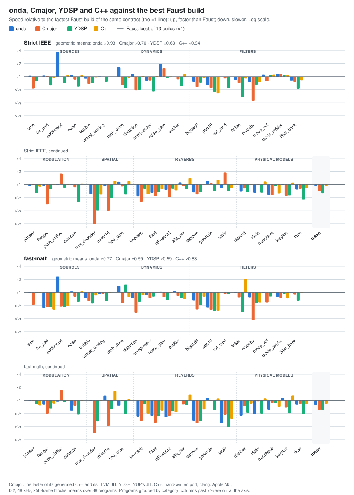

<meta charset="utf-8">
<title>Audio DSL Bench</title>
<meta name="claude:viewport-fit-sides" content="cover">
<link rel="preconnect" href="https://fonts.googleapis.com">
<link rel="stylesheet" href="https://fonts.googleapis.com/css2?family=IBM+Plex+Mono:wght@400;500&family=IBM+Plex+Sans:wght@400;500;600&family=IBM+Plex+Sans+Condensed:wght@600&display=swap">
<style>
/* Layout: one reading column (72ch) for prose, full-width scroll containers for the table, chart and sources. */
:root {
  --bg: #f7f8f7; --surface: #ffffff; --fg: #1d2421; --muted: #5d6763; --rule: #d9dedb;
  --onda: #2a78d6; --faust: #59636e; --cmaj: #eb6834; --ydsp: #1baf7a; --cxx: #eda100; --cxx-ink: #8a5d00; --win: #0f7a6c; --loss: #b23a2a; --tie: #6b7570; --best: #e3f1ee;
  --f-body: "IBM Plex Sans", system-ui, sans-serif; --f-head: "IBM Plex Sans Condensed", "IBM Plex Sans", system-ui, sans-serif;
  --f-mono: "IBM Plex Mono", ui-monospace, Menlo, monospace;
}
@media (prefers-color-scheme: dark) { :root:not([data-theme="light"]) {
  --bg: #141917; --surface: #1b2220; --fg: #e3e8e5; --muted: #9aa5a0; --rule: #2e3835;
  --onda: #3987e5; --faust: #9198a1; --cmaj: #d95926; --ydsp: #199e70; --cxx: #c98500; --cxx-ink: #e0a530; --win: #4cc3b0; --loss: #f07a68; --tie: #95a09b; --best: #1f3a35; color-scheme: dark } }
:root[data-theme="dark"] {
  --bg: #141917; --surface: #1b2220; --fg: #e3e8e5; --muted: #9aa5a0; --rule: #2e3835;
  --onda: #3987e5; --faust: #9198a1; --cmaj: #d95926; --ydsp: #199e70; --cxx: #c98500; --cxx-ink: #e0a530; --win: #4cc3b0; --loss: #f07a68; --tie: #95a09b; --best: #1f3a35; color-scheme: dark }
body { background: var(--bg); color: var(--fg); font: 15px/1.6 var(--f-body);
  padding-left: max(16px, env(safe-area-inset-left, 0px)); padding-right: max(16px, env(safe-area-inset-right, 0px)); padding-block: 32px 64px; }
main { max-width: 1100px; margin: 0 auto; display: grid; grid-template-columns: minmax(0, 1fr); gap: 40px; }
main > * { min-width: 0; }
.prose { max-width: 72ch; }
h1, h2, h3 { font-family: var(--f-head); font-weight: 600; text-wrap: balance; line-height: 1.2; margin: 0 0 .5em; }
h1 { font-size: 2.1rem; } h2 { font-size: 1.45rem; border-top: 1px solid var(--rule); padding-top: 24px; } h3 { font-size: 1.1rem; margin-top: 1.4em; }
p, li { margin: 0 0 .7em; } ul { padding-left: 1.2em; margin: 0; }
code { font-family: var(--f-mono); font-size: .88em; }
.eyebrow { font: 500 .78rem var(--f-mono); letter-spacing: .06em; text-transform: uppercase; color: var(--muted); }
.lede { font-size: 1.08rem; }
.kpis { display: flex; flex-wrap: wrap; gap: 12px 36px; margin-top: 18px; }
.kpi b { display: block; font: 600 1.9rem var(--f-head); font-variant-numeric: tabular-nums; color: var(--onda); }
.kpi span { color: var(--muted); font-size: .9rem; }
.scroll { overflow-x: auto; border: 1px solid var(--rule); background: var(--surface); border-radius: 6px; }
table { border-collapse: collapse; width: 100%; font-variant-numeric: tabular-nums; font-size: .88rem; }
th, td { padding: 7px 10px; text-align: right; border-bottom: 1px solid var(--rule); white-space: nowrap; }
thead th { font: 500 .74rem var(--f-mono); color: var(--muted); vertical-align: bottom; white-space: normal; min-width: 70px; }
tbody th { text-align: left; font-weight: 500; }
td.best { background: var(--best); font-weight: 600; }
td.ratio { font-family: var(--f-mono); font-weight: 500; }
td.win { color: var(--win); } td.loss { color: var(--loss); } td.tie { color: var(--tie); }
.group-onda { color: var(--onda); } .group-faust { color: var(--faust); }
.note { color: var(--muted); font-size: .86rem; }
#chart svg { display: block; width: 100%; height: auto; }
.findings { display: grid; gap: 14px; grid-template-columns: repeat(auto-fit, minmax(300px, 1fr)); }
.finding { background: var(--surface); border: 1px solid var(--rule); border-radius: 6px; padding: 14px 16px; min-width: 0; }
.finding .tag { font: 500 .72rem var(--f-mono); letter-spacing: .05em; text-transform: uppercase; }
.finding .tag.o { color: var(--onda); } .finding .tag.f { color: var(--faust); }
.finding .tag.c { color: var(--cmaj); } .finding .tag.y { color: var(--ydsp); } .finding .tag.x { color: var(--cxx-ink); }
.kpis.langs { display: grid; grid-template-columns: repeat(auto-fit, minmax(200px, 1fr)); gap: 14px; }
.kpis.langs .kpi { background: var(--surface); border: 1px solid var(--rule); border-left: 4px solid var(--faust); border-radius: 6px; padding: 10px 14px; }
.kpis.langs .kpi.o { border-left-color: var(--onda); } .kpis.langs .kpi.c { border-left-color: var(--cmaj); } .kpis.langs .kpi.y { border-left-color: var(--ydsp); } .kpis.langs .kpi.x { border-left-color: var(--cxx); }
.kpis.langs .kpi b { color: var(--fg); font-size: 1.5rem; }
.kpis.langs .kpi .lang { font: 600 .8rem var(--f-mono); letter-spacing: .05em; text-transform: uppercase; color: var(--muted); display: block; }
thead tr.groups th { text-align: center; border-bottom: 2px solid var(--rule); font-weight: 600; }
th.g-faust { color: var(--faust); } th.g-onda { color: var(--onda); } th.g-cmaj { color: var(--cmaj); } th.g-ydsp { color: var(--ydsp); } th.g-cxx { color: var(--cxx-ink); }
.chart picture img { display: block; width: 100%; height: auto; }
.finding h3 { margin: .3em 0 .4em; font-size: 1.02rem; }
.finding p { font-size: .92rem; margin: 0; }
details { border: 1px solid var(--rule); border-radius: 6px; background: var(--surface); margin-bottom: 10px; }
summary { cursor: pointer; padding: 10px 14px; font-weight: 500; }
summary:focus-visible, a:focus-visible { outline: 2px solid var(--onda); outline-offset: 2px; }
/* Sources: one column per language, side by side; the row scrolls horizontally, each column as wide as its longest line */
.pair { display: grid; grid-auto-flow: column; grid-auto-columns: max-content; gap: 0; border-top: 1px solid var(--rule); overflow-x: auto; }
.pair pre { overflow-x: visible; }
.pair figure { margin: 0; min-width: 440px; border-right: 1px solid var(--rule); }
.pair figure:last-child { border-right: 0; }
figcaption { font: 500 .74rem var(--f-mono); color: var(--muted); padding: 8px 14px 0; }
pre { margin: 0; padding: 8px 14px 14px; overflow-x: auto; font: .8rem/1.5 var(--f-mono); }
dl.method { display: grid; grid-template-columns: max-content 1fr; gap: 6px 18px; margin: 0; }
dl.method dt { font: 500 .8rem var(--f-mono); color: var(--muted); padding-top: 2px; }
dl.method dd { margin: 0; min-width: 0; }
tr.cat th { text-align: left; font: 600 .78rem var(--f-mono); letter-spacing: .05em; text-transform: uppercase; color: var(--muted); background: var(--bg); padding-top: 14px; }
tbody th .lab { display: block; font-size: .78rem; color: var(--muted); font-weight: 400; white-space: normal; min-width: 14ch; max-width: 26ch; }
tr.variant th, tr.variant td { color: var(--muted); font-style: italic; }
tr.variant td.best { background: transparent; }
.findgroup { display: grid; gap: 12px; }
.findgroup > h3 { margin: 18px 0 0; font-size: 1.12rem; }
@media (max-width: 560px) { dl.method { grid-template-columns: 1fr; } dl.method dt { padding-top: 8px; } }
</style>

<main>
<header>
  <div class="eyebrow prose">Faust 2.95.1 and branch master-dev-certification-7 · Onda 0.9.2 · Cmajor 1.0.3209 · YUP YDSP 2.0.1 · Apple M5 · f32 · 48 kHz · 256-frame blocks</div>
  <h1>Audio DSL Bench</h1>
  <p class="lede prose">The same 38 DSP programs written in four audio DSP languages, Faust, Onda, Cmajor and YDSP, and by hand in plain C++, and timed on one harness with the same input. Eighteen were written for the benchmark; twenty reproduce emblematic examples of the Faust distribution, from oscillators and filters to reverbs, spatialization and physical models.</p>
  <p class="lede prose">Faust is the reference: every ratio is the speed of a language (or of the C++ port) relative to the fastest of 13 Faust builds of the same floating-point contract, strict IEEE or fast-math. Above ×1, the language is faster than Faust.</p>
  <div class="kpis langs">
    <div class="kpi f"><span class="lang">Faust</span><b>14</b><span>fastest engine on 14 of 38 programs in strict mode, 21 with fast-math</span></div>
    <div class="kpi o"><span class="lang">Onda</span><b>×0.95 · ×0.79</b><span>strict · fast-math; ×1.24 strict against Faust 2.95.1 alone</span></div>
    <div class="kpi c"><span class="lang">Cmajor</span><b>×0.71 · ×0.60</b><span>strict · fast-math; faster of its generated C++ and its JIT</span></div>
    <div class="kpi y"><span class="lang">YDSP</span><b>×0.65 · ×0.61</b><span>strict · fast-math</span></div>
    <div class="kpi x"><span class="lang">C++</span><b>×0.95 · ×0.84</b><span>strict · fast-math; hand-written port, clang</span></div>
  </div>
  <p class="note prose">Geometric means over the 38 programs, without the alternative onda writings. Fastest engine per program, strict: Faust 14, onda 9, Cmajor 3, YDSP 0, C++ 12; fast-math: Faust 21, onda 4, Cmajor 1, YDSP 1, C++ 11.</p>
</header>

<section class="chart">
  <h2>Speed relative to the best Faust build</h2>
  <p class="prose">For each program, four columns: <span class="group-onda">onda</span>, <span style="color:var(--cmaj)">Cmajor</span>, <span style="color:var(--ydsp)">YDSP</span> and <span style="color:var(--cxx-ink)">C++</span>, against the best Faust build of the same contract (the ×1 line); up, faster than Faust, down, slower; log scale. Strict IEEE above, fast-math below, each on two rows of categories.</p>
  <div class="scroll" style="padding:8px"><picture>
    <source media="(prefers-color-scheme: dark)" srcset="languages-dark.svg">
    
  </picture></div>
  <div class="findings" style="margin-top:16px">
    <div class="finding"><span class="tag f">Faust</span><h3>Fastest on filters, delays and reverbs</h3><p>Mostly through the certification-7 branch, which reorders operations, reads delay lines one sample ahead and lets <code>fcautotool</code> pick the options: dattorro takes 3.2 ns with the elected options, 6 in hand-written C++, 9 to 15 in onda, Cmajor, YDSP and Faust 2.95.1.</p></div>
    <div class="finding"><span class="tag o">Onda</span><h3>Fastest as soon as it vectorizes</h3><p>Built-in SLEEF and SIMD on state arrays (additive64 ×3.6 strict), state kept in registers (noise_gate ×1.9, karplus ×1.5); level with the best Faust on the 20 Faust examples (×1.00 strict). It loses most on freeverb, frenchbell, hoa_decoder, peq10, and with fast-math on the delay-line programs.</p></div>
    <div class="finding"><span class="tag c">Cmajor</span><h3>A strong JIT, a costly runtime</h3><p>Its JIT is the fastest of all engines on tapiir and pitch_shifter; on average 9 % faster than its generated C++. Running the processor one frame at a time and exchanging audio by copies costs about 2 ns per sample, much more with many channels.</p></div>
    <div class="finding"><span class="tag y">YDSP</span><h3>Fast where fastMath vectorizes</h3><p>Fastest of all on tanh_drive with fastMath, ahead of the best Faust on diode_ladder and moog_vcf in strict mode. Strict, it keeps transcendentals on scalar libm, which costs it most on autopan, filter_bank and phaser; its FIR and delay matrices are its weakest programs.</p></div>
    <div class="finding"><span class="tag x">C++</span><h3>Ordinary code, level with onda</h3><p>The hand-written port is 1.39× faster than Faust 2.95.1's generated C++ and 1.57× faster than Cmajor's, level with onda and with cert-7 ocpp in strict mode; fastest of all on 12 programs (karplus, zita_rev, greyhole, the violin...). It loses where Faust rewrites the computation: peq10, freeverb, frenchbell, and with fast-math the delay lines read ahead.</p></div>
  </div>
</section>

<section>
  <h2>Results by program</h2>
  <p class="prose">Median time in <strong>ns per sample</strong> (lower is better), 21 interleaved and shuffled rounds of ~40 ms each, for the fastest engine of each language (and of the C++ port) in each contract. The highlighted cell is the fastest of the contract. "Best Faust": the fastest of the 13 Faust builds (strict: C++ and ocpp at <code>-ffp-contract=off</code>; fast-math: every <code>-ffast-math</code> build and Faust LLVM). "Cmajor": the faster of its generated C++ and its JIT. The last four columns give the strict ratio to the best Faust build.</p>
  <div class="scroll">
    <table>
      <thead>
        <tr class="groups"><th></th><th colspan="5">Strict IEEE</th><th colspan="5">fast-math</th><th colspan="4">Strict: best Faust / language</th></tr>
        <tr><th scope="col" style="text-align:left">Program</th><th scope="col" class="g-faust">Faust</th><th scope="col" class="g-onda">onda</th><th scope="col" class="g-cmaj">Cmajor</th><th scope="col" class="g-ydsp">YDSP</th><th scope="col" class="g-cxx">C++</th><th scope="col" class="g-faust">Faust</th><th scope="col" class="g-onda">onda</th><th scope="col" class="g-cmaj">Cmajor</th><th scope="col" class="g-ydsp">YDSP</th><th scope="col" class="g-cxx">C++</th><th scope="col" class="g-onda">onda</th><th scope="col" class="g-cmaj">Cmajor</th><th scope="col" class="g-ydsp">YDSP</th><th scope="col" class="g-cxx">C++</th></tr>
      </thead>
      <tbody>
<tr class="cat"><th colspan="15" scope="rowgroup">Oscillators and sources</th></tr>
<tr><th scope="row"><code>sine</code><span class="lab">phasor + sin</span></th><td>2.32</td><td class="best">2.23</td><td>4.43</td><td>3.00</td><td>2.28</td><td>2.24</td><td>2.23</td><td>4.43</td><td>2.32</td><td class="best">2.22</td><td class="ratio tie">×1.04</td><td class="ratio loss">×0.52</td><td class="ratio loss">×0.77</td><td class="ratio tie">×1.01</td></tr>
<tr><th scope="row"><code>fm_pad</code><span class="lab">2 FM voices + tanh</span></th><td>14.86</td><td class="best">14.32</td><td>14.49</td><td>23.40</td><td>15.78</td><td class="best">6.24</td><td>14.72</td><td>14.17</td><td>14.01</td><td>15.95</td><td class="ratio tie">×1.04</td><td class="ratio tie">×1.03</td><td class="ratio loss">×0.63</td><td class="ratio loss">×0.94</td></tr>
<tr><th scope="row"><code>additive64</code><span class="lab">64 sine partials</span></th><td>175.9</td><td class="best">48.81</td><td>175.8</td><td>247.9</td><td>163.4</td><td>78.89</td><td class="best">33.79</td><td>164.2</td><td>166.0</td><td>166.1</td><td class="ratio win">×3.60</td><td class="ratio tie">×1.00</td><td class="ratio loss">×0.71</td><td class="ratio win">×1.08</td></tr>
<tr><th scope="row"><code>noise</code><span class="lab">LCG + one-pole lowpass</span></th><td>1.32</td><td class="best">1.22</td><td>1.54</td><td>1.80</td><td>1.24</td><td>1.25</td><td>1.18</td><td>1.56</td><td>1.86</td><td class="best">1.17</td><td class="ratio win">×1.08</td><td class="ratio loss">×0.86</td><td class="ratio loss">×0.73</td><td class="ratio win">×1.07</td></tr>
<tr><th scope="row"><code>bubble</code><span class="lab">gameaudio/bubble: one drop + freeverb</span></th><td class="best">12.03</td><td>13.68</td><td>18.08</td><td>17.43</td><td>12.75</td><td class="best">10.84</td><td>14.36</td><td>17.13</td><td>19.34</td><td>12.73</td><td class="ratio loss">×0.88</td><td class="ratio loss">×0.67</td><td class="ratio loss">×0.69</td><td class="ratio loss">×0.94</td></tr>
<tr><th scope="row"><code>virtual_analog</code><span class="lab">generator/virtualAnalog: VA oscillators</span></th><td>14.78</td><td class="best">14.68</td><td>15.28</td><td>19.57</td><td>15.05</td><td class="best">12.18</td><td>13.12</td><td>13.05</td><td>19.01</td><td>12.35</td><td class="ratio tie">×1.01</td><td class="ratio tie">×0.97</td><td class="ratio loss">×0.76</td><td class="ratio tie">×0.98</td></tr>
<tr class="cat"><th colspan="15" scope="rowgroup">Nonlinearities and dynamics</th></tr>
<tr><th scope="row"><code>tanh_drive</code><span class="lab">tanh saturation</span></th><td>1.70</td><td class="best">1.01</td><td>2.61</td><td>3.09</td><td>1.87</td><td>1.44</td><td>1.01</td><td>2.76</td><td class="best">0.94</td><td>1.81</td><td class="ratio win">×1.68</td><td class="ratio loss">×0.65</td><td class="ratio loss">×0.55</td><td class="ratio loss">×0.91</td></tr>
<tr><th scope="row"><code>distortion</code><span class="lab">dynamic/distortion: ef.cubicnl_nodc</span></th><td>2.24</td><td class="best">1.94</td><td>4.61</td><td>4.55</td><td>2.15</td><td class="best">1.44</td><td>1.94</td><td>4.17</td><td>2.34</td><td>1.81</td><td class="ratio win">×1.15</td><td class="ratio loss">×0.49</td><td class="ratio loss">×0.49</td><td class="ratio tie">×1.04</td></tr>
<tr><th scope="row"><code>compressor</code><span class="lab">dynamic/compressor: co.compressor_stereo</span></th><td>4.57</td><td>5.58</td><td>5.70</td><td>9.83</td><td class="best">4.42</td><td>3.57</td><td>4.17</td><td>4.87</td><td>4.47</td><td class="best">3.47</td><td class="ratio loss">×0.82</td><td class="ratio loss">×0.80</td><td class="ratio loss">×0.47</td><td class="ratio tie">×1.03</td></tr>
<tr><th scope="row"><code>noise_gate</code><span class="lab">dynamic/noiseGate: stereo gate</span></th><td>2.76</td><td class="best">1.46</td><td>1.79</td><td>2.97</td><td>2.73</td><td>1.84</td><td class="best">1.48</td><td>1.95</td><td>2.77</td><td>1.87</td><td class="ratio win">×1.89</td><td class="ratio win">×1.54</td><td class="ratio loss">×0.93</td><td class="ratio tie">×1.01</td></tr>
<tr><th scope="row"><code>exciter</code><span class="lab">psychoacoustic/harmonicExciter</span></th><td>7.46</td><td>7.61</td><td>8.44</td><td>12.09</td><td class="best">6.60</td><td>5.22</td><td class="best">4.79</td><td>6.21</td><td>6.91</td><td>7.15</td><td class="ratio tie">×0.98</td><td class="ratio loss">×0.88</td><td class="ratio loss">×0.62</td><td class="ratio win">×1.13</td></tr>
<tr class="cat"><th colspan="15" scope="rowgroup">Filters</th></tr>
<tr><th scope="row"><code>biquad8</code><span class="lab">8 RBJ biquads in series</span></th><td class="best">4.23</td><td>5.55</td><td>7.31</td><td>5.82</td><td>4.60</td><td class="best">2.80</td><td>4.23</td><td>6.87</td><td>5.42</td><td>3.45</td><td class="ratio loss">×0.76</td><td class="ratio loss">×0.58</td><td class="ratio loss">×0.73</td><td class="ratio loss">×0.92</td></tr>
<tr><th scope="row"><code>peq10</code><span class="lab">10-band parametric EQ</span></th><td class="best">5.36</td><td>8.42</td><td>9.69</td><td>11.98</td><td>12.92</td><td class="best">4.19</td><td>9.41</td><td>10.62</td><td>11.36</td><td>10.99</td><td class="ratio loss">×0.64</td><td class="ratio loss">×0.55</td><td class="ratio loss">×0.45</td><td class="ratio loss">×0.41</td></tr>
<tr><th scope="row"><code>svf_mod</code><span class="lab">TPT SVF, cutoff modulated per sample</span></th><td class="best">5.80</td><td>5.84</td><td>6.42</td><td>10.73</td><td>5.90</td><td>5.23</td><td>5.04</td><td>5.59</td><td>5.61</td><td class="best">5.03</td><td class="ratio tie">×0.99</td><td class="ratio loss">×0.90</td><td class="ratio loss">×0.54</td><td class="ratio tie">×0.98</td></tr>
<tr><th scope="row"><code>fir32c</code><span class="lab">32-tap FIR (const def)</span></th><td class="best">3.71</td><td>4.40</td><td>5.21</td><td>11.01</td><td>4.12</td><td>3.73</td><td>3.80</td><td>4.89</td><td>10.50</td><td class="best">1.82</td><td class="ratio loss">×0.84</td><td class="ratio loss">×0.71</td><td class="ratio loss">×0.34</td><td class="ratio loss">×0.90</td></tr>
<tr><th scope="row"><code>crybaby</code><span class="lab">filtering/cryBaby: ve.crybaby wah</span></th><td class="best">2.14</td><td>2.85</td><td>7.71</td><td>3.21</td><td>2.89</td><td class="best">1.62</td><td>2.10</td><td>7.14</td><td>2.86</td><td>2.76</td><td class="ratio loss">×0.75</td><td class="ratio loss">×0.28</td><td class="ratio loss">×0.67</td><td class="ratio loss">×0.74</td></tr>
<tr><th scope="row"><code>moog_vcf</code><span class="lab">filtering/moogVCF: ve.moog_vcf</span></th><td>6.56</td><td>5.92</td><td>8.49</td><td>6.15</td><td class="best">5.90</td><td>3.63</td><td>3.63</td><td>6.18</td><td>4.47</td><td class="best">3.63</td><td class="ratio win">×1.11</td><td class="ratio loss">×0.77</td><td class="ratio win">×1.07</td><td class="ratio win">×1.11</td></tr>
<tr><th scope="row"><code>diode_ladder</code><span class="lab">filtering/diodeLadder: ve.diodeLadder on a saw</span></th><td>28.01</td><td class="best">23.89</td><td>24.38</td><td>26.11</td><td>25.91</td><td class="best">18.95</td><td>23.55</td><td>25.27</td><td>20.29</td><td>25.78</td><td class="ratio win">×1.17</td><td class="ratio win">×1.15</td><td class="ratio win">×1.07</td><td class="ratio win">×1.08</td></tr>
<tr><th scope="row"><code>filter_bank</code><span class="lab">filtering/filterBank: octave filter bank</span></th><td class="best">95.50</td><td>119.8</td><td>126.3</td><td>180.8</td><td>116.8</td><td class="best">76.91</td><td>80.02</td><td>86.00</td><td>119.9</td><td>79.59</td><td class="ratio loss">×0.80</td><td class="ratio loss">×0.76</td><td class="ratio loss">×0.53</td><td class="ratio loss">×0.82</td></tr>
<tr class="cat"><th colspan="15" scope="rowgroup">Modulation and pitch</th></tr>
<tr><th scope="row"><code>phaser</code><span class="lab">phasing/phaser: pf.phaser2_stereo</span></th><td>40.11</td><td>43.29</td><td class="best">40.03</td><td>63.45</td><td>44.97</td><td class="best">31.77</td><td>32.98</td><td>32.88</td><td>38.31</td><td>41.55</td><td class="ratio loss">×0.93</td><td class="ratio tie">×1.00</td><td class="ratio loss">×0.63</td><td class="ratio loss">×0.89</td></tr>
<tr><th scope="row"><code>flanger</code><span class="lab">phasing/flanger: pf.flanger_stereo</span></th><td class="best">3.12</td><td>3.33</td><td>8.91</td><td>4.02</td><td>3.17</td><td class="best">2.31</td><td>2.93</td><td>4.69</td><td>3.56</td><td>2.75</td><td class="ratio loss">×0.94</td><td class="ratio loss">×0.35</td><td class="ratio loss">×0.78</td><td class="ratio tie">×0.98</td></tr>
<tr><th scope="row"><code>pitch_shifter</code><span class="lab">pitchShifting/pitchShifter: ef.transpose</span></th><td>8.72</td><td>8.90</td><td class="best">4.96</td><td>10.18</td><td>8.85</td><td>8.63</td><td>9.23</td><td class="best">5.36</td><td>9.58</td><td>8.61</td><td class="ratio tie">×0.98</td><td class="ratio win">×1.76</td><td class="ratio loss">×0.86</td><td class="ratio tie">×0.99</td></tr>
<tr><th scope="row"><code>autopan</code><span class="lab">misc/autopan: LFO stereo panner</span></th><td>6.52</td><td>6.42</td><td>7.51</td><td>16.62</td><td class="best">6.24</td><td class="best">5.20</td><td>9.07</td><td>6.91</td><td>11.01</td><td>5.47</td><td class="ratio tie">×1.02</td><td class="ratio loss">×0.87</td><td class="ratio loss">×0.39</td><td class="ratio tie">×1.04</td></tr>
<tr class="cat"><th colspan="15" scope="rowgroup">Spatialization and mixing</th></tr>
<tr><th scope="row"><code>hoa_decoder_x</code><span class="lab">2D HOA decoder, order 3, 7→8</span></th><td class="best">0.66</td><td>1.10</td><td>5.35</td><td>2.59</td><td>1.11</td><td class="best">0.65</td><td>0.68</td><td>3.75</td><td>2.02</td><td>0.67</td><td class="ratio loss">×0.60</td><td class="ratio loss">×0.12</td><td class="ratio loss">×0.25</td><td class="ratio loss">×0.59</td></tr>
<tr><th scope="row"><code>mixer16_x</code><span class="lab">16-channel mixer, dB gain + pan</span></th><td>1.22</td><td>1.35</td><td>4.90</td><td>2.51</td><td class="best">1.00</td><td>1.21</td><td>0.93</td><td>4.63</td><td>1.91</td><td class="best">0.72</td><td class="ratio loss">×0.91</td><td class="ratio loss">×0.25</td><td class="ratio loss">×0.49</td><td class="ratio win">×1.22</td></tr>
<tr><th scope="row"><code>hoa_octo</code><span class="lab">ambisonics/fourSourcesToOcto: 4 sources, order 3, 8 speakers</span></th><td>22.07</td><td>19.14</td><td>24.57</td><td>37.37</td><td class="best">18.46</td><td>16.14</td><td>20.32</td><td>15.96</td><td>30.67</td><td class="best">14.45</td><td class="ratio win">×1.15</td><td class="ratio loss">×0.90</td><td class="ratio loss">×0.59</td><td class="ratio win">×1.20</td></tr>
<tr class="cat"><th colspan="15" scope="rowgroup">Delays and reverbs</th></tr>
<tr><th scope="row"><code>freeverb</code><span class="lab">8 combs + 4 allpasses</span></th><td class="best">3.53</td><td>6.55</td><td>8.90</td><td>4.39</td><td>5.90</td><td class="best">2.73</td><td>6.43</td><td>8.10</td><td>3.29</td><td>5.50</td><td class="ratio loss">×0.54</td><td class="ratio loss">×0.40</td><td class="ratio loss">×0.80</td><td class="ratio loss">×0.60</td></tr>
<tr><th scope="row"><code>fdn8</code><span class="lab">8-line FDN, dense Hadamard</span></th><td class="best">3.94</td><td>6.17</td><td>7.25</td><td>5.91</td><td>5.02</td><td class="best">2.34</td><td>5.37</td><td>7.64</td><td>5.41</td><td>4.09</td><td class="ratio loss">×0.64</td><td class="ratio loss">×0.54</td><td class="ratio loss">×0.67</td><td class="ratio loss">×0.79</td></tr>
<tr><th scope="row"><code>diffuser32</code><span class="lab">32 allpasses in series</span></th><td class="best">15.92</td><td>21.23</td><td>31.27</td><td>19.64</td><td>21.72</td><td class="best">11.45</td><td>27.74</td><td>26.10</td><td>20.30</td><td>21.29</td><td class="ratio loss">×0.75</td><td class="ratio loss">×0.51</td><td class="ratio loss">×0.81</td><td class="ratio loss">×0.73</td></tr>
<tr><th scope="row"><code>zita_rev</code><span class="lab">re.zita_rev1_stereo</span></th><td>12.23</td><td>10.92</td><td>13.23</td><td>15.43</td><td class="best">8.75</td><td>10.71</td><td>10.43</td><td>13.39</td><td>13.68</td><td class="best">7.85</td><td class="ratio win">×1.12</td><td class="ratio loss">×0.92</td><td class="ratio loss">×0.79</td><td class="ratio win">×1.40</td></tr>
<tr><th scope="row"><code>dattorro</code><span class="lab">reverb/dattorro: re.dattorro_rev</span></th><td>6.14</td><td>9.36</td><td>10.35</td><td>8.97</td><td class="best">6.03</td><td class="best">3.22</td><td>9.48</td><td>10.83</td><td>9.48</td><td>5.21</td><td class="ratio loss">×0.66</td><td class="ratio loss">×0.59</td><td class="ratio loss">×0.68</td><td class="ratio tie">×1.02</td></tr>
<tr><th scope="row"><code>greyhole</code><span class="lab">reverb/greyhole: re.greyhole</span></th><td>53.59</td><td>44.39</td><td>49.99</td><td>75.31</td><td class="best">41.33</td><td>44.14</td><td class="best">38.68</td><td>42.70</td><td>74.35</td><td>39.63</td><td class="ratio win">×1.21</td><td class="ratio win">×1.07</td><td class="ratio loss">×0.71</td><td class="ratio win">×1.30</td></tr>
<tr><th scope="row"><code>tapiir</code><span class="lab">delayEcho/tapiir: 6-tap feedback delay matrix</span></th><td>6.24</td><td>7.46</td><td class="best">3.30</td><td>8.88</td><td>7.45</td><td class="best">1.56</td><td>5.22</td><td>3.33</td><td>6.36</td><td>4.15</td><td class="ratio loss">×0.84</td><td class="ratio win">×1.89</td><td class="ratio loss">×0.70</td><td class="ratio loss">×0.84</td></tr>
<tr class="cat"><th colspan="15" scope="rowgroup">Physical models</th></tr>
<tr><th scope="row"><code>clarinet</code><span class="lab">pm.clarinet_ui_MIDI, gate held</span></th><td>8.09</td><td>10.51</td><td>8.81</td><td>10.83</td><td class="best">7.39</td><td class="best">6.09</td><td>12.21</td><td>7.12</td><td>10.20</td><td>6.37</td><td class="ratio loss">×0.77</td><td class="ratio loss">×0.92</td><td class="ratio loss">×0.75</td><td class="ratio win">×1.09</td></tr>
<tr><th scope="row"><code>violin</code><span class="lab">pm.violin_ui_MIDI, gate held</span></th><td>17.02</td><td>25.07</td><td>16.21</td><td>25.74</td><td class="best">14.11</td><td>10.95</td><td>21.08</td><td>10.75</td><td>20.80</td><td class="best">9.19</td><td class="ratio loss">×0.68</td><td class="ratio tie">×1.05</td><td class="ratio loss">×0.66</td><td class="ratio win">×1.21</td></tr>
<tr><th scope="row"><code>frenchbell</code><span class="lab">pm.frenchBell_ui, 50 modes, struck once</span></th><td class="best">11.08</td><td>19.25</td><td>19.54</td><td>12.08</td><td>17.68</td><td class="best">8.84</td><td>14.51</td><td>10.05</td><td>10.26</td><td>12.45</td><td class="ratio loss">×0.58</td><td class="ratio loss">×0.57</td><td class="ratio loss">×0.92</td><td class="ratio loss">×0.63</td></tr>
<tr><th scope="row"><code>karplus</code><span class="lab">physicalModeling/karplus: pm.ks_ui_MIDI, plucked once</span></th><td>7.18</td><td>4.85</td><td>9.04</td><td>8.81</td><td class="best">4.40</td><td>5.31</td><td>3.73</td><td>6.29</td><td>8.51</td><td class="best">3.31</td><td class="ratio win">×1.48</td><td class="ratio loss">×0.79</td><td class="ratio loss">×0.81</td><td class="ratio win">×1.63</td></tr>
<tr><th scope="row"><code>flute</code><span class="lab">physicalModeling/flute: pm.flute_ui, gate held</span></th><td class="best">20.40</td><td>22.52</td><td>21.44</td><td>37.79</td><td>20.71</td><td class="best">15.91</td><td>19.43</td><td>18.67</td><td>30.70</td><td>18.76</td><td class="ratio loss">×0.91</td><td class="ratio tie">×0.95</td><td class="ratio loss">×0.54</td><td class="ratio tie">×0.98</td></tr>
      </tbody>
    </table>
  </div>
  <p class="note">Every engine's output is compared with Faust C++ over 4 s. In the IEEE pass, where neither side contracts multiply-adds, the strict onda, Cmajor and YDSP ports stay within 8·10⁻⁴ relative RMS of Faust, the largest on additive64 (f32 phase drift); several are bit-exact. In the default pass, greyhole differs by 0.2 for every engine that does not fuse multiply-adds, Faust's own included: its smoothing recursion amplifies the last bit into slowly wandering delay lengths. The certification-7 builds differ by 7.5·10⁻³ on virtual_analog, in both passes and in strict mode too, where the other engines match Faust C++.</p>
</section>

<section>
  <h2>All 23 engines</h2>
  <p class="prose">Median ns per sample for every engine; the highlighted cell is the fastest of the row. Faust 2.95.1: C++ and the LLVM JIT; Faust cert-7: the <code>master-dev-certification-7</code> branch, its <code>-lang ocpp</code> backend and the options elected by <code>fcautotool</code>; "fixed SR": the sample rate constant at compile time. C++: the hand-written port. Rows in italics are alternative onda writings, outside the means.</p>
  <div class="scroll">
    <table>
      <thead>
<tr class="groups"><th></th><th colspan="6" class="g-faust">Faust 2.95.1</th><th colspan="5" class="g-faust">Faust cert-7</th><th colspan="2" class="g-onda">Onda</th><th colspan="4" class="g-cmaj">Cmajor</th><th colspan="2" class="g-ydsp">YDSP</th><th colspan="2" class="g-cxx">C++</th></tr>
<tr><th scope="col" style="text-align:left">Program</th><th scope="col" class="g-faust">C++ IEEE</th><th scope="col" class="g-faust">C++ fast-math</th><th scope="col" class="g-faust">C++ -vec fast-math</th><th scope="col" class="g-faust">C++ -vec + Accelerate</th><th scope="col" class="g-faust">LLVM</th><th scope="col" class="g-faust">LLVM, fixed SR</th><th scope="col" class="g-faust">ocpp IEEE</th><th scope="col" class="g-faust">ocpp IEEE, fixed SR</th><th scope="col" class="g-faust">ocpp fast-math</th><th scope="col" class="g-faust">fcautotool pick</th><th scope="col" class="g-faust">pick, fixed SR</th><th scope="col" class="g-onda">strict</th><th scope="col" class="g-onda">--fast-math</th><th scope="col" class="g-cmaj">C++ IEEE</th><th scope="col" class="g-cmaj">C++ fast-math</th><th scope="col" class="g-cmaj">JIT -O3</th><th scope="col" class="g-cmaj">JIT -O4</th><th scope="col" class="g-ydsp">strict</th><th scope="col" class="g-ydsp">fastMath</th><th scope="col" class="g-cxx">IEEE</th><th scope="col" class="g-cxx">fast-math</th></tr>
      </thead>
      <tbody>
<tr class="cat"><th colspan="22" scope="rowgroup">Oscillators and sources</th></tr>
<tr><th scope="row"><code>sine</code><span class="lab">phasor + sin</span></th><td>2.84</td><td>2.73</td><td>2.50</td><td>2.49</td><td>2.81</td><td>2.80</td><td>2.34</td><td>2.32</td><td>2.25</td><td>2.24</td><td>2.24</td><td>2.23</td><td>2.23</td><td>4.71</td><td>4.50</td><td>4.43</td><td>4.43</td><td>3.00</td><td>2.32</td><td>2.28</td><td class="best">2.22</td></tr>
<tr><th scope="row"><code>fm_pad</code><span class="lab">2 FM voices + tanh</span></th><td>14.95</td><td>14.59</td><td>18.34</td><td class="best">6.24</td><td>14.56</td><td>14.57</td><td>15.02</td><td>14.86</td><td>14.95</td><td>14.44</td><td>14.32</td><td>14.32</td><td>14.72</td><td>14.49</td><td>14.17</td><td>20.10</td><td>17.73</td><td>23.40</td><td>14.01</td><td>15.78</td><td>15.95</td></tr>
<tr><th scope="row"><code>additive64</code><span class="lab">64 sine partials</span></th><td>175.9</td><td>177.6</td><td>236.3</td><td>78.89</td><td>179.6</td><td>180.3</td><td>180.2</td><td>179.6</td><td>176.5</td><td>153.0</td><td>149.4</td><td>48.81</td><td class="best">33.79</td><td>175.8</td><td>164.2</td><td>181.9</td><td>167.4</td><td>247.9</td><td>166.0</td><td>163.4</td><td>166.1</td></tr>
<tr><th scope="row"><code>noise</code><span class="lab">LCG + one-pole lowpass</span></th><td>3.19</td><td>3.37</td><td>1.53</td><td>1.52</td><td>1.39</td><td>1.39</td><td>1.32</td><td>1.33</td><td>1.25</td><td>1.25</td><td>1.25</td><td>1.22</td><td>1.18</td><td>4.02</td><td>3.38</td><td>1.54</td><td>1.56</td><td>1.80</td><td>1.86</td><td>1.24</td><td class="best">1.17</td></tr>
<tr><th scope="row"><code>bubble</code><span class="lab">gameaudio/bubble: one drop + freeverb</span></th><td>24.52</td><td>24.43</td><td>28.62</td><td>28.40</td><td>26.04</td><td>20.44</td><td>17.31</td><td>12.03</td><td>16.31</td><td>14.89</td><td class="best">10.84</td><td>13.68</td><td>14.36</td><td>20.46</td><td>19.54</td><td>18.08</td><td>17.13</td><td>17.43</td><td>19.34</td><td>12.75</td><td>12.73</td></tr>
<tr><th scope="row"><code>virtual_analog</code><span class="lab">generator/virtualAnalog: VA oscillators</span></th><td>16.34</td><td>15.54</td><td>24.45</td><td>24.21</td><td>24.77</td><td>23.15</td><td>15.65</td><td>14.78</td><td>13.01</td><td class="best">12.18</td><td>12.19</td><td>14.68</td><td>13.12</td><td>15.45</td><td>13.78</td><td>15.28</td><td>13.05</td><td>19.57</td><td>19.01</td><td>15.05</td><td>12.35</td></tr>
<tr class="cat"><th colspan="22" scope="rowgroup">Nonlinearities and dynamics</th></tr>
<tr><th scope="row"><code>tanh_drive</code><span class="lab">tanh saturation</span></th><td>1.88</td><td>1.80</td><td>1.61</td><td>1.68</td><td>1.93</td><td>1.98</td><td>1.85</td><td>1.84</td><td>1.88</td><td>1.83</td><td>1.86</td><td>1.01</td><td>1.01</td><td>2.61</td><td>2.76</td><td>4.97</td><td>3.80</td><td>3.09</td><td class="best">0.94</td><td>1.87</td><td>1.81</td></tr>
<tr><th scope="row"><code>distortion</code><span class="lab">dynamic/distortion: ef.cubicnl_nodc</span></th><td>3.20</td><td>3.88</td><td>4.09</td><td>3.76</td><td>1.45</td><td class="best">1.44</td><td>2.24</td><td>3.99</td><td>1.96</td><td>1.59</td><td>1.58</td><td>1.94</td><td>1.94</td><td>5.17</td><td>5.12</td><td>4.61</td><td>4.17</td><td>4.55</td><td>2.34</td><td>2.15</td><td>1.81</td></tr>
<tr><th scope="row"><code>compressor</code><span class="lab">dynamic/compressor: co.compressor_stereo</span></th><td>4.78</td><td>4.25</td><td>4.88</td><td>3.57</td><td>4.46</td><td>4.47</td><td>4.58</td><td>4.57</td><td>3.91</td><td>3.79</td><td>3.79</td><td>5.58</td><td>4.17</td><td>5.70</td><td>5.46</td><td>5.89</td><td>4.87</td><td>9.83</td><td>4.47</td><td>4.42</td><td class="best">3.47</td></tr>
<tr><th scope="row"><code>noise_gate</code><span class="lab">dynamic/noiseGate: stereo gate</span></th><td>5.00</td><td>3.84</td><td>3.11</td><td>3.23</td><td>1.84</td><td>1.84</td><td>2.76</td><td>2.76</td><td>2.29</td><td>2.30</td><td>2.29</td><td class="best">1.46</td><td>1.48</td><td>1.79</td><td>4.36</td><td>2.04</td><td>1.95</td><td>2.97</td><td>2.77</td><td>2.73</td><td>1.87</td></tr>
<tr><th scope="row"><code>exciter</code><span class="lab">psychoacoustic/harmonicExciter</span></th><td>10.26</td><td>8.11</td><td>6.39</td><td>5.27</td><td>7.71</td><td>7.76</td><td>7.46</td><td>7.48</td><td>5.65</td><td>5.23</td><td>5.22</td><td>7.61</td><td class="best">4.79</td><td>20.05</td><td>17.11</td><td>8.44</td><td>6.21</td><td>12.09</td><td>6.91</td><td>6.60</td><td>7.15</td></tr>
<tr class="cat"><th colspan="22" scope="rowgroup">Filters</th></tr>
<tr><th scope="row"><code>biquad8</code><span class="lab">8 RBJ biquads in series</span></th><td>7.99</td><td>5.45</td><td>11.57</td><td>11.69</td><td>3.08</td><td>3.13</td><td>4.24</td><td>4.23</td><td>2.81</td><td>2.81</td><td class="best">2.80</td><td>5.55</td><td>4.23</td><td>20.48</td><td>16.16</td><td>7.31</td><td>6.87</td><td>5.82</td><td>5.42</td><td>4.60</td><td>3.45</td></tr>
<tr><th scope="row"><code>peq10</code><span class="lab">10-band parametric EQ</span></th><td>37.77</td><td>8.69</td><td>17.51</td><td>17.38</td><td>9.52</td><td>9.37</td><td>5.37</td><td>5.36</td><td>4.31</td><td class="best">4.19</td><td>8.76</td><td>8.42</td><td>9.41</td><td>11.86</td><td>12.67</td><td>9.69</td><td>10.62</td><td>11.98</td><td>11.36</td><td>12.92</td><td>10.99</td></tr>
<tr><th scope="row"><code>svf_mod</code><span class="lab">TPT SVF, cutoff modulated per sample</span></th><td>5.93</td><td>7.92</td><td>8.15</td><td>7.36</td><td>5.57</td><td>5.57</td><td>5.80</td><td>5.80</td><td>5.26</td><td>5.23</td><td>5.24</td><td>5.84</td><td>5.04</td><td>6.42</td><td>5.59</td><td>6.89</td><td>5.76</td><td>10.73</td><td>5.61</td><td>5.90</td><td class="best">5.03</td></tr>
<tr><th scope="row"><code>fir32c</code><span class="lab">32-tap FIR (const def)</span></th><td>3.93</td><td>3.73</td><td>3.91</td><td>3.91</td><td>3.94</td><td>3.93</td><td>3.71</td><td>3.71</td><td>3.97</td><td>3.73</td><td>3.74</td><td>4.40</td><td>3.80</td><td>5.93</td><td>5.43</td><td>5.21</td><td>4.89</td><td>11.01</td><td>10.50</td><td>4.12</td><td class="best">1.82</td></tr>
<tr class="variant"><th scope="row"><code>fir32</code><span class="lab">variant: taps computed at init</span></th><td>3.92</td><td>3.73</td><td>3.91</td><td>3.91</td><td>3.95</td><td>3.94</td><td>3.71</td><td class="best">3.71</td><td>3.93</td><td>3.73</td><td>3.74</td><td>4.80</td><td>3.79</td><td>—</td><td>—</td><td>—</td><td>—</td><td>—</td><td>—</td><td>—</td><td>—</td></tr>
<tr><th scope="row"><code>crybaby</code><span class="lab">filtering/cryBaby: ve.crybaby wah</span></th><td>4.50</td><td>4.42</td><td>4.43</td><td>4.53</td><td class="best">1.62</td><td>1.75</td><td>2.16</td><td>2.14</td><td>2.32</td><td>1.66</td><td>2.31</td><td>2.85</td><td>2.10</td><td>7.82</td><td>7.66</td><td>7.71</td><td>7.14</td><td>3.21</td><td>2.86</td><td>2.89</td><td>2.76</td></tr>
<tr><th scope="row"><code>moog_vcf</code><span class="lab">filtering/moogVCF: ve.moog_vcf</span></th><td>7.23</td><td>5.69</td><td>4.66</td><td>4.62</td><td>3.63</td><td>4.28</td><td>7.60</td><td>7.64</td><td>6.02</td><td>5.14</td><td>5.12</td><td>5.92</td><td>3.63</td><td>8.49</td><td>6.18</td><td>8.50</td><td>6.23</td><td>6.15</td><td>4.47</td><td>5.90</td><td class="best">3.63</td></tr>
<tr><th scope="row"><code>diode_ladder</code><span class="lab">filtering/diodeLadder: ve.diodeLadder on a saw</span></th><td>39.30</td><td>22.82</td><td>29.90</td><td>29.23</td><td>23.13</td><td>23.20</td><td>28.66</td><td>28.01</td><td>20.69</td><td class="best">18.95</td><td>21.76</td><td>23.89</td><td>23.55</td><td>24.38</td><td>25.98</td><td>26.11</td><td>25.27</td><td>26.11</td><td>20.29</td><td>25.91</td><td>25.78</td></tr>
<tr><th scope="row"><code>filter_bank</code><span class="lab">filtering/filterBank: octave filter bank</span></th><td>111.2</td><td>102.0</td><td>186.4</td><td>186.7</td><td>118.4</td><td>122.2</td><td>95.50</td><td>131.8</td><td>81.79</td><td class="best">76.91</td><td>107.8</td><td>119.8</td><td>80.02</td><td>133.9</td><td>93.60</td><td>126.3</td><td>86.00</td><td>180.8</td><td>119.9</td><td>116.8</td><td>79.59</td></tr>
<tr class="cat"><th colspan="22" scope="rowgroup">Modulation and pitch</th></tr>
<tr><th scope="row"><code>phaser</code><span class="lab">phasing/phaser: pf.phaser2_stereo</span></th><td>40.11</td><td>34.54</td><td>52.88</td><td>40.79</td><td>36.50</td><td>34.63</td><td>40.89</td><td>40.48</td><td>33.40</td><td class="best">31.77</td><td>31.96</td><td>43.29</td><td>32.98</td><td>40.03</td><td>34.98</td><td>46.75</td><td>32.88</td><td>63.45</td><td>38.31</td><td>44.97</td><td>41.55</td></tr>
<tr><th scope="row"><code>flanger</code><span class="lab">phasing/flanger: pf.flanger_stereo</span></th><td>4.37</td><td>3.83</td><td>4.22</td><td>4.22</td><td>2.75</td><td>5.76</td><td>3.12</td><td>3.17</td><td>2.35</td><td class="best">2.31</td><td>2.41</td><td>3.33</td><td>2.93</td><td>9.15</td><td>8.88</td><td>8.91</td><td>4.69</td><td>4.02</td><td>3.56</td><td>3.17</td><td>2.75</td></tr>
<tr><th scope="row"><code>pitch_shifter</code><span class="lab">pitchShifting/pitchShifter: ef.transpose</span></th><td>10.15</td><td>10.31</td><td>9.20</td><td>9.20</td><td>8.68</td><td>8.67</td><td>8.78</td><td>8.72</td><td>8.63</td><td>8.67</td><td>8.65</td><td>8.90</td><td>9.23</td><td>9.44</td><td>9.31</td><td class="best">4.96</td><td>5.36</td><td>10.18</td><td>9.58</td><td>8.85</td><td>8.61</td></tr>
<tr><th scope="row"><code>autopan</code><span class="lab">misc/autopan: LFO stereo panner</span></th><td>7.09</td><td>6.50</td><td>8.33</td><td>5.86</td><td>5.71</td><td>5.73</td><td>6.52</td><td>6.52</td><td>5.68</td><td>5.22</td><td class="best">5.20</td><td>6.42</td><td>9.07</td><td>7.51</td><td>6.91</td><td>13.66</td><td>10.32</td><td>16.62</td><td>11.01</td><td>6.24</td><td>5.47</td></tr>
<tr class="cat"><th colspan="22" scope="rowgroup">Spatialization and mixing</th></tr>
<tr><th scope="row"><code>hoa_decoder_x</code><span class="lab">2D HOA decoder, order 3, 7→8</span></th><td>0.66</td><td class="best">0.65</td><td>4.30</td><td>4.31</td><td>2.14</td><td>2.13</td><td>0.66</td><td>0.66</td><td>0.67</td><td>0.66</td><td>0.66</td><td>1.10</td><td>0.68</td><td>6.19</td><td>7.36</td><td>5.35</td><td>3.75</td><td>2.59</td><td>2.02</td><td>1.11</td><td>0.67</td></tr>
<tr class="variant"><th scope="row"><code>hoa_decoder</code><span class="lab">variant: dynamic ins/outs views</span></th><td>0.66</td><td>0.66</td><td>4.29</td><td>4.27</td><td>2.14</td><td>2.13</td><td class="best">0.65</td><td>0.66</td><td>0.67</td><td>0.67</td><td>0.67</td><td>32.07</td><td>32.09</td><td>—</td><td>—</td><td>—</td><td>—</td><td>—</td><td>—</td><td>—</td><td>—</td></tr>
<tr><th scope="row"><code>mixer16_x</code><span class="lab">16-channel mixer, dB gain + pan</span></th><td>1.28</td><td>1.24</td><td>1.33</td><td>1.29</td><td>3.96</td><td>3.96</td><td>1.22</td><td>1.22</td><td>1.23</td><td>1.21</td><td>1.21</td><td>1.35</td><td>0.93</td><td>6.55</td><td>5.80</td><td>4.90</td><td>4.63</td><td>2.51</td><td>1.91</td><td>1.00</td><td class="best">0.72</td></tr>
<tr class="variant"><th scope="row"><code>mixer16</code><span class="lab">variant: all in sample, ins view</span></th><td>1.27</td><td>1.24</td><td>1.32</td><td>1.29</td><td>3.97</td><td>3.98</td><td>1.22</td><td>1.22</td><td>1.22</td><td class="best">1.20</td><td>1.20</td><td>49.27</td><td>34.55</td><td>—</td><td>—</td><td>—</td><td>—</td><td>—</td><td>—</td><td>—</td><td>—</td></tr>
<tr><th scope="row"><code>hoa_octo</code><span class="lab">ambisonics/fourSourcesToOcto: 4 sources, order 3, 8 speakers</span></th><td>25.43</td><td>20.12</td><td>37.38</td><td>24.84</td><td>23.64</td><td>23.46</td><td>22.07</td><td>22.56</td><td>16.14</td><td>16.23</td><td>16.24</td><td>19.14</td><td>20.32</td><td>25.69</td><td>25.29</td><td>24.57</td><td>15.96</td><td>37.37</td><td>30.67</td><td>18.46</td><td class="best">14.45</td></tr>
<tr class="cat"><th colspan="22" scope="rowgroup">Delays and reverbs</th></tr>
<tr><th scope="row"><code>freeverb</code><span class="lab">8 combs + 4 allpasses</span></th><td>7.47</td><td>7.25</td><td>12.87</td><td>12.90</td><td>7.69</td><td>7.69</td><td>3.53</td><td>3.53</td><td>2.76</td><td>2.73</td><td class="best">2.73</td><td>6.55</td><td>6.43</td><td>9.79</td><td>8.65</td><td>8.90</td><td>8.10</td><td>4.39</td><td>3.29</td><td>5.90</td><td>5.50</td></tr>
<tr><th scope="row"><code>fdn8</code><span class="lab">8-line FDN, dense Hadamard</span></th><td>5.61</td><td>5.71</td><td>4.68</td><td>4.68</td><td>5.91</td><td>5.92</td><td>3.95</td><td>3.94</td><td>3.31</td><td>2.34</td><td class="best">2.34</td><td>6.17</td><td>5.37</td><td>10.44</td><td>9.51</td><td>7.25</td><td>7.64</td><td>5.91</td><td>5.41</td><td>5.02</td><td>4.09</td></tr>
<tr><th scope="row"><code>diffuser32</code><span class="lab">32 allpasses in series</span></th><td>34.64</td><td>35.06</td><td>15.05</td><td>14.82</td><td>45.35</td><td>45.69</td><td>25.06</td><td>25.10</td><td>25.32</td><td class="best">11.45</td><td>11.47</td><td>21.23</td><td>27.74</td><td>33.33</td><td>28.18</td><td>31.27</td><td>26.10</td><td>19.64</td><td>20.30</td><td>21.72</td><td>21.29</td></tr>
<tr><th scope="row"><code>zita_rev</code><span class="lab">re.zita_rev1_stereo</span></th><td>23.04</td><td>20.82</td><td>17.68</td><td>17.65</td><td>22.20</td><td>20.88</td><td>12.54</td><td>12.23</td><td>10.71</td><td>10.71</td><td>10.97</td><td>10.92</td><td>10.43</td><td>13.23</td><td>13.93</td><td>14.85</td><td>13.39</td><td>15.43</td><td>13.68</td><td>8.75</td><td class="best">7.85</td></tr>
<tr><th scope="row"><code>dattorro</code><span class="lab">reverb/dattorro: re.dattorro_rev</span></th><td>15.47</td><td>14.27</td><td>13.41</td><td>13.47</td><td>14.13</td><td>14.14</td><td>6.32</td><td>6.14</td><td>4.84</td><td>3.25</td><td class="best">3.22</td><td>9.36</td><td>9.48</td><td>10.73</td><td>10.83</td><td>10.35</td><td>10.97</td><td>8.97</td><td>9.48</td><td>6.03</td><td>5.21</td></tr>
<tr><th scope="row"><code>greyhole</code><span class="lab">reverb/greyhole: re.greyhole</span></th><td>62.13</td><td>56.77</td><td>75.65</td><td>71.30</td><td>66.22</td><td>66.24</td><td>54.16</td><td>53.59</td><td>48.32</td><td>44.14</td><td>44.59</td><td>44.39</td><td class="best">38.68</td><td>54.78</td><td>46.78</td><td>49.99</td><td>42.70</td><td>75.31</td><td>74.35</td><td>41.33</td><td>39.63</td></tr>
<tr><th scope="row"><code>tapiir</code><span class="lab">delayEcho/tapiir: 6-tap feedback delay matrix</span></th><td>7.51</td><td>5.25</td><td>5.15</td><td>5.15</td><td>6.29</td><td>6.25</td><td>6.90</td><td>6.91</td><td>4.34</td><td>1.69</td><td class="best">1.56</td><td>7.46</td><td>5.22</td><td>7.90</td><td>6.22</td><td>3.30</td><td>3.33</td><td>8.88</td><td>6.36</td><td>7.45</td><td>4.15</td></tr>
<tr class="cat"><th colspan="22" scope="rowgroup">Physical models</th></tr>
<tr><th scope="row"><code>clarinet</code><span class="lab">pm.clarinet_ui_MIDI, gate held</span></th><td>11.16</td><td>9.55</td><td>10.56</td><td>10.43</td><td>12.19</td><td>12.59</td><td>8.09</td><td>8.30</td><td class="best">6.09</td><td>6.11</td><td>6.72</td><td>10.51</td><td>12.21</td><td>8.81</td><td>7.96</td><td>12.03</td><td>7.12</td><td>10.83</td><td>10.20</td><td>7.39</td><td>6.37</td></tr>
<tr><th scope="row"><code>violin</code><span class="lab">pm.violin_ui_MIDI, gate held</span></th><td>21.47</td><td>16.75</td><td>16.38</td><td>16.40</td><td>21.09</td><td>20.69</td><td>17.02</td><td>20.65</td><td>10.96</td><td>10.95</td><td>13.61</td><td>25.07</td><td>21.08</td><td>17.39</td><td>11.89</td><td>16.21</td><td>10.75</td><td>25.74</td><td>20.80</td><td>14.11</td><td class="best">9.19</td></tr>
<tr><th scope="row"><code>frenchbell</code><span class="lab">pm.frenchBell_ui, 50 modes, struck once</span></th><td>56.46</td><td>39.46</td><td>77.05</td><td>77.28</td><td>39.50</td><td>39.51</td><td>11.71</td><td>11.08</td><td>9.47</td><td>9.25</td><td class="best">8.84</td><td>19.25</td><td>14.51</td><td>19.61</td><td>10.05</td><td>19.54</td><td>15.74</td><td>12.08</td><td>10.26</td><td>17.68</td><td>12.45</td></tr>
<tr class="variant"><th scope="row"><code>frenchbell_x</code><span class="lab">variant: mode sum in 4 partial sums</span></th><td>56.37</td><td>39.40</td><td>76.83</td><td>76.92</td><td>39.41</td><td>39.40</td><td>11.71</td><td>11.07</td><td>9.45</td><td>9.25</td><td class="best">8.80</td><td>16.44</td><td>13.60</td><td>—</td><td>—</td><td>—</td><td>—</td><td>—</td><td>—</td><td>—</td><td>—</td></tr>
<tr><th scope="row"><code>karplus</code><span class="lab">physicalModeling/karplus: pm.ks_ui_MIDI, plucked once</span></th><td>8.16</td><td>7.29</td><td>6.77</td><td>6.74</td><td>7.85</td><td>5.31</td><td>7.94</td><td>7.72</td><td>6.93</td><td>6.39</td><td>6.14</td><td>4.85</td><td>3.73</td><td>9.04</td><td>6.29</td><td>14.44</td><td>12.73</td><td>8.81</td><td>8.51</td><td>4.40</td><td class="best">3.31</td></tr>
<tr><th scope="row"><code>flute</code><span class="lab">physicalModeling/flute: pm.flute_ui, gate held</span></th><td>28.11</td><td>26.19</td><td>19.83</td><td>18.46</td><td>37.65</td><td>31.29</td><td>21.98</td><td>20.40</td><td>18.87</td><td>16.16</td><td class="best">15.91</td><td>22.52</td><td>19.43</td><td>21.44</td><td>19.63</td><td>22.14</td><td>18.67</td><td>37.79</td><td>30.70</td><td>20.71</td><td>18.76</td></tr>
      </tbody>
    </table>
  </div>
</section>

<section>
  <h2>What the generated code shows</h2>
  <div class="findgroup">
  <h3>Faust</h3>
  <div class="findings">
    <div class="finding"><span class="tag f">freeverb ×2.4, fdn8 ×2.3 against onda</span><h3>Delay lines read one sample ahead</h3><p>ocpp reads the next sample's delay line at the end of the current iteration (<code>fTemp0 = fVeeec0; fVeeec0 = buf[(IOTA-224)&amp;255];</code>), which takes the load latency off the critical path, and keeps the state in scalars with a single masked <code>IOTA</code>. freeverb: 2.74 ns with the elected options against 6.48 for onda-fm, which recomputes a circular index per line. fdn8, with the elected options: 2.36 ns against 5.42.</p></div>
    <div class="finding"><span class="tag f">peq10, biquad8</span><h3>Order of operations and signal algebra</h3><p>On peq10, ocpp merges the stages (a stage's input memory is the delayed output of the previous one) and writes <code>fSlow13·y[0] + (past terms)</code>: a single multiply-add per stage on the critical path. 5.35 ns in IEEE and 3.73 with FMA contraction, against 8.54 for onda, which follows the source order and may not change it in strict mode; 4.3 ns with <code>-ffast-math</code>. On biquad8, Faust recognizes <code>b2 ≡ b0</code> and factors it: 2.85 ns with fast-math against 4.31 for onda.</p></div>
    <div class="finding"><span class="tag f">diffuser32, fm_pad</span><h3>Loops split and run stage by stage</h3><p>Faust <code>-vec</code> computes each allpass of diffuser32 over 32 samples before the next; since the delays (≥ 113) exceed the vector size, the iterations are independent and overlap: 16.0 ns in IEEE, 11.6 with the elected options, against 21.6 for onda, which chains the 32 stages every sample. On fm_pad, <code>-vec</code> moves the 4 sin + 2 tanh into a recurrence-free loop that clang vectorizes with Accelerate: 6.4 ns against 14.4 for onda and Cmajor, 24 for YDSP.</p></div>
    <div class="finding"><span class="tag f">frenchbell, clarinet</span><h3>Physical models rolled and reordered</h3><p>ocpp rolls the 50 identical mode filters of frenchbell into a loop over coefficient tables and splits the long sum into 4 partial sums: 11.1 ns in IEEE with a fixed SR, 8.9 with fast-math, against 19.3 for onda (16.5 written with 4 partial sums, <code>frenchbell_x</code>). On the clarinet, ocpp takes 8.1 ns in IEEE and 6.2 with fast-math, against 11.2 for <code>-lang cpp</code> and 10.8 for onda.</p></div>
    <div class="finding"><span class="tag f">ocpp ×1.40</span><h3>cert-7 and fcautotool</h3><p>Under the same IEEE contract, ocpp is on average 1.40× faster than the <code>-lang cpp</code> of 2.95.1; the options elected by <code>fcautotool</code> bring the gain to 1.61× with fast-math. The pick depends on the program (table below). Unlike the certification-4 branch, cert-7 compiles the violin and the flute (cert-4's interval analysis could not bound the <code>de.fdelay4</code> index): 17.2 ns in IEEE on the violin against 21.4 for <code>-lang cpp</code>, 20.3 on the flute against 21.9 for <code>-vec</code>.</p></div>
    <div class="finding"><span class="tag f">Fixed SR, contract</span><h3>Comparing like with like</h3><p>Fixing <code>SR = 48000.0</code> in <code>platform.lib</code> changes little: the constants it folds were already computed once at init or per block. Apple clang contracts into FMA by default, which sometimes changes the result a lot (peq10 ocpp: 3.73 ns with FMA, 5.35 without), and Faust LLVM marks every operation fast-math. Hence the strict columns at <code>-ffp-contract=off</code>, and Faust LLVM ranked with fast-math.</p></div>
  </div>
  <h3>Onda</h3>
  <div class="findings">
    <div class="finding"><span class="tag o">additive64 ×3.6, tanh_drive ×1.7 (strict)</span><h3>Vectorization and built-in SLEEF</h3><p>Written as arrays, the 64 partials of additive64 are updated in SIMD and go through <code>Sleef_sinf4</code>: 34 ns with fast-math against 81 for the best Faust build (<code>-vec</code> + Accelerate) and 173 for YDSP. tanh_drive goes through <code>Sleef_tanhf4</code>. The Faust C++ backends call scalar libm, and <code>-vec</code> does not vectorize a phase recurrence.</p></div>
    <div class="finding"><span class="tag o">noise, zita_rev, noise_gate, karplus</span><h3>State in registers</h3><p>onda loads the state on entry and writes it back on exit (noise loop: 8 instructions, 1 memory access); <code>-lang cpp</code> copies every <code>fRec[0]/[1]</code> through memory at each sample (noise: 3.2 ns against 1.2). On zita_rev, the Faust normalizer flattens the allpasses into the Hadamard (16-term sums); onda keeps it whole: 11.0 ns strict against 12.3 for ocpp IEEE and 23.1 for <code>-lang cpp</code>.</p></div>
    <div class="finding"><span class="tag o">hoa_decoder ×50, mixer16 ×40</span><h3>Two writing pitfalls</h3><p>Written with the <code>ins[j]</code>/<code>outs[k]</code> views, every access becomes a tree of comparisons: hoa_decoder takes 32 ns against 0.66; with named ports in a local array, 1.10 ns strict, 0.67 with fast-math. <code>pow</code>, <code>cos</code>, <code>sin</code> of parameters left in <code>sample:</code> run per sample: mixer16 takes 49 ns; with the coefficients in <code>block:</code>, 1.35 ns strict and 0.93 with fast-math, ahead of Faust (1.22).</p></div>
    <div class="finding"><span class="tag o">Proven bounds, JIT = AOT</span><h3>Implementation</h3><p>No index clamp in the loops of fir, fdn8 and zita_rev: the <code>{N, wrap}</code> domains and the MIR bounds proofs remove the checks. The AOT object and the ORC JIT give the same times within 5 %. Rough edges: no scientific-notation literals, no <code>log10</code> or <code>sinh</code> builtin (the ports write them out), and the build requires exactly LLVM 21.</p></div>
  </div>
  <h3>Cmajor</h3>
  <div class="findings">
    <div class="finding"><span class="tag c">tapiir ×1.89, pitch_shifter ×1.76</span><h3>Where the JIT leads</h3><p>The Cmajor JIT is the fastest engine of all on two delay-line programs: tapiir (3.3 ns against 6.2 for the best Faust in IEEE) and pitch_shifter (5.0 against 8.7). On the violin it beats every Faust build in IEEE (16.2 against 17.0 for cert-7 ocpp), but not the hand-written C++ (14.1). On these, its generated C++ is no faster than Faust's: the gain is the JIT's own code.</p></div>
    <div class="finding"><span class="tag c">hoa_decoder ×0.12, mixer16 ×0.25, sine ×0.51</span><h3>The per-frame machinery</h3><p>The runtime calls the processor once per frame through an I/O structure, checks its parameter ramps every frame, and exchanges audio by copies (<code>setInputFrames</code>, <code>copyOutputFrames</code>): about 2 ns per sample on a sine (4.6 against 2.3), much more with many channels (hoa_decoder, 15 channels: 5.4 ns against 0.66; mixer16, 18 channels: 4.9 against 1.2).</p></div>
    <div class="finding"><span class="tag c">JIT ×0.92 in time</span><h3>JIT or generated C++</h3><p>The JIT (sample rate known at build time) is on average 9 % faster than the generated C++ (17 % with fast maths), with large swings: tapiir 3.3 against 7.9 ns, noise 1.6 against 4.0, biquad8 7.6 against 20.4 (the C++ class keeps its state in memory from one frame to the next), while the C++ wins on the clarinet (8.8 against 12.1) and fm_pad (14.4 against 20.7).</p></div>
    <div class="finding"><span class="tag c">Writing</span><h3>Events and scalars</h3><p>Parameters are <code>input event</code> endpoints whose handlers recompute the derived coefficients, Cmajor's way to keep control-rate math out of the sample loop (the generated C++ ignores the <code>init</code> annotations of value endpoints). The JIT prefers scalar state: biquad8 with two <code>float[8]</code> took 19.5 ns, with 16 scalars 7.2.</p></div>
  </div>
  <h3>YDSP</h3>
  <div class="findings">
    <div class="finding"><span class="tag y">tanh_drive 0.95 ns, freeverb 3.31 ns</span><h3>fastMath: SLEEF and register state</h3><p>With <code>fastMath</code>, YDSP widens the per-sample loop onto SLEEF's 4-lane <code>u35</code> functions: tanh_drive at 0.95 ns is the fastest of all 23 engines (onda 1.01). With scalar state and constant-wrapped delay lines, freeverb takes 3.31 ns, faster than every Faust 2.95.1 build (6.9 at best); only cert-7 does better (2.7). frenchbell's 50 modes are vectorized: 12.0 ns strict, against 11.1 for the best Faust and 19.3 for onda.</p></div>
    <div class="finding"><span class="tag y">fir32c ×0.34, autopan ×0.39</span><h3>Transcendentals and rolled loops</h3><p>Strict YDSP keeps libm calls scalar and each costs it more than elsewhere: additive64 takes 252 ns (173 with fastMath, 49 for onda), the two <code>tanh</code> of autopan about 4 ns each, the 10 <code>pow</code> of filter_bank about 5 ns each. The FIR reads its history with a masked index, which the vectorizer rejects: 11 ns against 3.7 for Faust.</p></div>
    <div class="finding"><span class="tag y">fdn8 44 → 5.7 ns</span><h3>The idiom matters most</h3><p>Scalar state stays in registers across the sample loop, and a delay line whose counter wraps at a constant has its bounds proven. fdn8 as a struct array of lines with a nested loop took 44 ns, with named lines and scalar state 5.7; freeverb and diffuser32 as graphs of one processor with a run-time size took 14.8 and 33.9 ns, as single processors 4.4 and 19.2.</p></div>
  </div>
  <h3>C++</h3>
  <div class="findings">
    <div class="finding"><span class="tag x">×1.39 against Faust 2.95.1 C++</span><h3>What the generated C++ leaves</h3><p>The same equations, written by hand, run 1.39× faster than <code>faust -lang cpp</code> in IEEE: the hand-written class loads its state into locals for the block, where the generated one copies every <code>fRec[0]/[1]</code> through memory at each sample (karplus 4.4 ns against 7.2 for the best Faust, zita_rev 8.7 against 12.2). cert-7 ocpp closes that gap: it is level with the C++ port on average.</p></div>
    <div class="finding"><span class="tag x">peq10 22 → 13 ns, exciter 16 → 6.6 ns</span><h3>Two idioms that mattered</h3><p>Coefficient arrays left in members are reloaded at every sample, because the output pointer may alias them: copied into locals, peq10 went from 22 to 13 ns. On exciter, a nested ternary on the noisy sign of the signal compiles to branches that mispredict: with both sides computed first, clang selects and the time falls from 16 to 6.6 ns, the best strict time. Cmajor's generated C++ has the same branch (20 ns).</p></div>
    <div class="finding"><span class="tag x">peq10 ×0.41, freeverb ×0.60</span><h3>Where Faust still wins</h3><p>Written in source order, the cascaded biquads of peq10 keep every multiply-add on the critical path; ocpp merges the stages and reorders the sum (5.4 ns against 12.9). On freeverb and fdn8, ocpp's delay lines read one sample ahead; with fast-math, tapiir and dattorro gain the most from the elected options.</p></div>
  </div>
  </div>
</section>

<section>
  <h2>Options elected by fcautotool</h2>
  <p class="prose">On each program, <code>fcautotool</code> races the ocpp option sets the cert-7 faust accepts, plus <code>-lang cpp</code>, <code>-vec</code> and <code>-mcd 0</code> as references, timed with <code>-O3 -ffast-math -mcpu=native</code>, and only elects a candidate that reproduces the reference response. These options are used in the "fcautotool pick" columns.</p>
  <div class="scroll">
    <table>
      <thead><tr><th scope="col" style="text-align:left">Program</th><th scope="col" style="text-align:left">Elected options</th><th scope="col">fcautotool (ns)</th><th scope="col"><code>-lang cpp</code> (ns)</th><th scope="col">Gain</th></tr></thead>
      <tbody>
<tr><th scope="row"><code>sine</code></th><td style="text-align:left"><code>-lang cpp -mcd 0</code></td><td>2.27</td><td>2.42</td><td class="ratio">×1.07</td></tr>
<tr><th scope="row"><code>fm_pad</code></th><td style="text-align:left"><code>-lang cpp</code></td><td>13.03</td><td>13.03</td><td class="ratio">×1.00</td></tr>
<tr><th scope="row"><code>additive64</code></th><td style="text-align:left"><code>-lang ocpp -lsum</code></td><td>121.01</td><td>159.12</td><td class="ratio">×1.31</td></tr>
<tr><th scope="row"><code>noise</code></th><td style="text-align:left"><code>-lang ocpp -ss 9 -ls-R 32 -ls-U 4</code></td><td>1.22</td><td>2.67</td><td class="ratio">×2.19</td></tr>
<tr><th scope="row"><code>bubble</code></th><td style="text-align:left"><code>-lang ocpp -ss 12 -ls-R 32 -ls-U 8</code></td><td>13.88</td><td>21.68</td><td class="ratio">×1.56</td></tr>
<tr><th scope="row"><code>virtual_analog</code></th><td style="text-align:left"><code>-lang ocpp -ss 8</code></td><td>11.33</td><td>13.74</td><td class="ratio">×1.21</td></tr>
<tr><th scope="row"><code>tanh_drive</code></th><td style="text-align:left"><code>-lang ocpp</code></td><td>1.29</td><td>1.30</td><td class="ratio">×1.00</td></tr>
<tr><th scope="row"><code>distortion</code></th><td style="text-align:left"><code>-lang ocpp -ls-fuse -ls-sched model</code></td><td>1.44</td><td>2.93</td><td class="ratio">×2.04</td></tr>
<tr><th scope="row"><code>compressor</code></th><td style="text-align:left"><code>-lang ocpp -ls-fuse -ls-sched model</code></td><td>3.49</td><td>3.87</td><td class="ratio">×1.11</td></tr>
<tr><th scope="row"><code>noise_gate</code></th><td style="text-align:left"><code>-lang ocpp -ls-fuse -ls-sched model</code></td><td>2.20</td><td>4.46</td><td class="ratio">×2.03</td></tr>
<tr><th scope="row"><code>exciter</code></th><td style="text-align:left"><code>-lang cpp -mcd 0</code></td><td>4.86</td><td>4.98</td><td class="ratio">×1.02</td></tr>
<tr><th scope="row"><code>biquad8</code></th><td style="text-align:left"><code>-lang ocpp -ss 9 -ls-R 32 -ls-U 4</code></td><td>2.69</td><td>8.42</td><td class="ratio">×3.13</td></tr>
<tr><th scope="row"><code>peq10</code></th><td style="text-align:left"><code>-lang ocpp -ss 8</code></td><td>3.90</td><td>9.93</td><td class="ratio">×2.54</td></tr>
<tr><th scope="row"><code>svf_mod</code></th><td style="text-align:left"><code>-lang cpp -mcd 0</code></td><td>4.84</td><td>4.86</td><td class="ratio">×1.00</td></tr>
<tr><th scope="row"><code>fir32c</code></th><td style="text-align:left"><code>-lang cpp</code></td><td>3.47</td><td>3.47</td><td class="ratio">×1.00</td></tr>
<tr><th scope="row"><code>fir32</code></th><td style="text-align:left"><code>-lang cpp -mcd 0</code></td><td>3.47</td><td>3.47</td><td class="ratio">×1.00</td></tr>
<tr><th scope="row"><code>crybaby</code></th><td style="text-align:left"><code>-lang ocpp -lsum</code></td><td>1.57</td><td>3.42</td><td class="ratio">×2.17</td></tr>
<tr><th scope="row"><code>moog_vcf</code></th><td style="text-align:left"><code>-lang cpp -vec</code></td><td>5.10</td><td>5.95</td><td class="ratio">×1.17</td></tr>
<tr><th scope="row"><code>diode_ladder</code></th><td style="text-align:left"><code>-lang ocpp -lsum</code></td><td>18.38</td><td>22.32</td><td class="ratio">×1.21</td></tr>
<tr><th scope="row"><code>filter_bank</code></th><td style="text-align:left"><code>-lang ocpp -ss 9 -ls-R 32 -ls-U 4</code></td><td>74.53</td><td>105.17</td><td class="ratio">×1.41</td></tr>
<tr><th scope="row"><code>phaser</code></th><td style="text-align:left"><code>-lang ocpp -ss 8</code></td><td>29.68</td><td>32.88</td><td class="ratio">×1.11</td></tr>
<tr><th scope="row"><code>flanger</code></th><td style="text-align:left"><code>-lang ocpp -ls-fuse -ls-sched model</code></td><td>2.14</td><td>3.49</td><td class="ratio">×1.63</td></tr>
<tr><th scope="row"><code>pitch_shifter</code></th><td style="text-align:left"><code>-lang ocpp -lsum</code></td><td>8.23</td><td>9.58</td><td class="ratio">×1.16</td></tr>
<tr><th scope="row"><code>autopan</code></th><td style="text-align:left"><code>-lang ocpp -ls-fuse -ls-sched model</code></td><td>4.76</td><td>5.26</td><td class="ratio">×1.10</td></tr>
<tr><th scope="row"><code>hoa_decoder</code></th><td style="text-align:left"><code>-lang ocpp -lsum</code></td><td>0.36</td><td>0.43</td><td class="ratio">×1.19</td></tr>
<tr><th scope="row"><code>mixer16</code></th><td style="text-align:left"><code>-lang ocpp -ss 12 -ls-R 32 -ls-U 8</code></td><td>0.91</td><td>0.92</td><td class="ratio">×1.01</td></tr>
<tr><th scope="row"><code>hoa_octo</code></th><td style="text-align:left"><code>-lang ocpp -ss 9 -ls-R 32 -ls-U 4</code></td><td>14.60</td><td>17.19</td><td class="ratio">×1.18</td></tr>
<tr><th scope="row"><code>freeverb</code></th><td style="text-align:left"><code>-lang ocpp -ss 8</code></td><td>2.53</td><td>6.17</td><td class="ratio">×2.44</td></tr>
<tr><th scope="row"><code>fdn8</code></th><td style="text-align:left"><code>-lang ocpp -ls-fuse -ls-sched model</code></td><td>2.17</td><td>5.23</td><td class="ratio">×2.41</td></tr>
<tr><th scope="row"><code>diffuser32</code></th><td style="text-align:left"><code>-lang ocpp -temp 4 -ls-fuse -ls-sched model</code></td><td>10.64</td><td>27.91</td><td class="ratio">×2.62</td></tr>
<tr><th scope="row"><code>zita_rev</code></th><td style="text-align:left"><code>-lang ocpp</code></td><td>9.89</td><td>20.70</td><td class="ratio">×2.09</td></tr>
<tr><th scope="row"><code>dattorro</code></th><td style="text-align:left"><code>-lang ocpp -temp 4 -ls-fuse -ls-sched model</code></td><td>2.96</td><td>8.76</td><td class="ratio">×2.96</td></tr>
<tr><th scope="row"><code>greyhole</code></th><td style="text-align:left"><code>-lang ocpp -ss 12 -ls-R 32 -ls-U 8</code></td><td>42.36</td><td>54.23</td><td class="ratio">×1.28</td></tr>
<tr><th scope="row"><code>tapiir</code></th><td style="text-align:left"><code>-lang ocpp -rp</code></td><td>1.44</td><td>5.26</td><td class="ratio">×3.65</td></tr>
<tr><th scope="row"><code>clarinet</code></th><td style="text-align:left"><code>-lang ocpp</code></td><td>5.69</td><td>8.53</td><td class="ratio">×1.50</td></tr>
<tr><th scope="row"><code>violin</code></th><td style="text-align:left"><code>-lang ocpp</code></td><td>10.32</td><td>14.68</td><td class="ratio">×1.42</td></tr>
<tr><th scope="row"><code>frenchbell</code></th><td style="text-align:left"><code>-lang ocpp -ss 9 -ls-R 32 -ls-U 4</code></td><td>8.60</td><td>38.06</td><td class="ratio">×4.42</td></tr>
<tr><th scope="row"><code>karplus</code></th><td style="text-align:left"><code>-lang ocpp -lsum</code></td><td>5.94</td><td>7.04</td><td class="ratio">×1.18</td></tr>
<tr><th scope="row"><code>flute</code></th><td style="text-align:left"><code>-lang cpp -vec</code></td><td>15.28</td><td>21.49</td><td class="ratio">×1.41</td></tr>
      </tbody>
    </table>
  </div>
  <p class="note">Times measured by fcautotool with its own harness: they rank the candidates against each other; the tables above give the times of the common harness. The <code>_x</code> variants share their original's Faust source, hence its election.</p>
</section>

<section class="prose">
  <h2>The compilers in brief</h2>
  <p><strong>Faust</strong> compiles a functional block-diagram language: the program is normalized as a signal algebra (common subexpressions, constant folding, delay sharing), then scheduled into C++, LLVM IR and other targets. The certification branch adds the <code>-lang ocpp</code> backend, with loop scheduling, fusion and register promotion options that <code>fcautotool</code> elects per program.</p>
  <p><strong>Onda</strong> is a Rust compiler of about 400,000 lines: a typed, validated MIR with integer range facts, bounds proofs and aliasing information, lowered to LLVM (ORC JIT and AOT objects, SLEEF linked into the code) or Wasm. Block size and sample rate are compile-time constants. Its code quality comes from these proofs handed to LLVM, not from DSP-specific rewriting: the code stays close to what the author writes.</p>
  <p><strong>Cmajor</strong> compiles processors and graphs with typed endpoints, either to C++ (<code>cmaj generate</code>) or through its own LLVM JIT (<code>libCmajPerformer</code>), which knows the sample rate at build time. The runtime advances one frame at a time and exchanges audio by copies.</p>
  <p><strong>YDSP</strong>, in YUP's <code>yup_dsp_jit</code>, compiles Cmajor-style processors and a Faust-style graph algebra at load time with asmjit, without LLVM: compilation takes about a millisecond. Its optimiser hoists parameter-only expressions, keeps scalar state in registers, proves ring indices in range and widens qualifying loops to 4 lanes, with SLEEF for vectorized transcendentals under <code>fastMath</code>.</p>
  <p><strong>C++</strong>, the baseline: the same programs written by hand as plain C++17 classes (<code>dsp/NAME.cpp</code>), the way a DSP developer writes them for speed while staying ordinary code: coefficients recomputed outside the sample loop, state loaded into locals for the block, delay lines with a wrapping index; no intrinsics, pragmas or libraries. Compiled by Apple clang, like the generated C++ of Faust and Cmajor.</p>
</section>

<section class="prose">
  <h2>Method</h2>
  <dl class="method">
    <dt>Machine</dt><dd>Apple M5, macOS 26.6, on AC power, thread at user-interactive QoS.</dd>
    <dt>onda</dt><dd>0.9.2, built against MacPorts LLVM 21.1.8 (the project pins 21.1.2). AOT object <code>--emit obj --target-cpu host -b 256 --sr 48000</code>, with and without <code>--fast-math</code>, called through the raw ABI (<code>onda_process</code>).</dd>
    <dt>Faust C++</dt><dd><code>faust -lang cpp</code> 2.95.1 (<code>-scal</code> and <code>-vec -vs 32</code>) with the libraries of the faustlibraries checkout, Apple clang <code>-O3 -mcpu=native</code>, three contracts: default (FMA), <code>-ffp-contract=off</code>, <code>-ffast-math</code>; plus <code>-vec</code> with <code>-fveclib=Accelerate</code>.</dd>
    <dt>Faust LLVM</dt><dd><code>libfaustwithllvm</code> (2.95.1), <code>createDSPFactoryFromFile</code>, opt −1 (max), <code>-scal</code> and <code>-vec -vs 32</code>, plus <code>-scal</code> with a fixed SR.</dd>
    <dt>Faust cert-7</dt><dd>Branch <code>master-dev-certification-7</code> (06dd38660, 2.94.1), exported with <code>git archive</code> and built with the Makefile of <code>build/</code>. <code>-lang ocpp</code> in IEEE (<code>-ffp-contract=off</code>), with the default contract and with <code>-ffast-math</code>; options elected by <code>fcautotool</code> compiled with <code>-O3 -ffast-math</code>, as during the election.</dd>
    <dt>Cmajor</dt><dd>1.0.3209. <code>cmaj generate --target=cpp --maxFramesPerBlock=256</code>, class renamed per variant, compiled by Apple clang <code>-O3 -mcpu=native</code> (IEEE: <code>-ffp-contract=off</code>; fast: <code>-ffast-math</code>), audio exchanged through <code>setInputFrames</code> / <code>advance</code> / <code>copyOutputFrames</code>; the sample rate is a run-time value. JIT: <code>libCmajPerformer.dylib</code>, <code>cmaj::Engine</code> "llvm", optimisation level 3 and 4 (fast maths), sample rate given at build time (<code>BuildSettings::setFrequency</code>), so constant like onda's. Parameters are <code>input event</code> endpoints whose handlers recompute the derived coefficients: Cmajor's way to keep control-rate math out of the sample loop (the generated C++ also ignores the <code>init</code> annotations of <code>input value</code> endpoints).</dd>
    <dt>YDSP</dt><dd>YUP <code>yup_dsp_jit</code> 2.0.1 (commit 4792e50), built with YUP's CMake as a static library behind a C interface (<code>tools/ydsp/</code>). <code>YdspCompiler::compile</code> on the host target (<code>automatic</code> tier, NEON, 4 lanes), <code>fastMath</code> false and true; <code>YdspAudioGraph::process</code> per 256-frame block. Parameters are sampled once per block and the parameter-only expressions are hoisted out of the sample loop by the optimiser; the sample rate is a run-time value.</dd>
    <dt>C++</dt><dd>Hand-written port, compiled inside a namespace with Apple clang <code>-O3 -mcpu=native</code> (IEEE: <code>-ffp-contract=off</code>; fast: <code>-ffast-math</code>); <code>prepare(48000)</code> at init, so the sample rate is a run-time value, then <code>process</code> on the harness buffers in place. Parameters are members whose setters recompute the derived coefficients.</dd>
    <dt>Fixed SR</dt><dd>Copy of the faustlibraries libraries where <code>platform.lib</code> defines <code>SR = 48000.0</code> (faust looks for <code>platform.lib</code> next to <code>maths.lib</code> first, hence the full copy).</dd>
    <dt>CPU targets</dt><dd>onda (LLVM 21) and Apple clang 21 target <code>apple-m4</code>: LLVM 21 does not know the M5. Only the Faust LLVM JIT, built with a newer LLVM, targets <code>apple-m5</code>.</dd>
    <dt>Harness</dt><dd>One executable per program links the 23 engines (15 onda and Faust, 4 Cmajor, 2 YDSP, 2 C++), with 16 input and output channels; same buffers, same input (deterministic white noise, 64 blocks cycled), 2000 warm-up blocks, then 21 rounds in shuffled order. Median reported; median absolute deviation below 2 % except additive64 (~2 %).</dd>
    <dt>Corpus</dt><dd>38 programs in four languages and C++, same algorithm in each (same equations, same delay lengths, same order of operations where possible). Eighteen were written for the benchmark, part of them to exploit a Faust lever (loop splitting in <code>-vec</code>, control-rate computations lifted out of the loop, zero or repeated constants, many delay lines); twenty reproduce examples of the Faust distribution with their default settings (bypass dropped, gates held at 1; four defaults changed where they made the program trivial: pitch_shifter, autopan, tapiir, and noise_gate kept but open). Four alternative onda writings (fir32, hoa_decoder, mixer16, frenchbell_x) separate what belongs to the compiler from what belongs to the writing. Each port takes the form its compiler handles best while staying ordinary code in its language; the greyhole ports pad their 24 delay lines by 16 floats to avoid L1 cache-set conflicts, a memory-layout choice Faust's C++ does not make.</dd>
    <dt>Limits</dt><dd>A single machine (ARM64, 128-bit NEON); on x86 AVX2/AVX-512, the SLEEF gap should grow and the SLP gap change. Constant parameters (no automation). A single block size.</dd>
  </dl>
</section>

<section>
  <h2>Sources</h2>
  <p class="prose note">The 42 programs in table order, one column per language (Faust, Onda, Cmajor, YDSP, C++; the four alternative onda writings have no Cmajor, YDSP or C++ port). Scroll horizontally to reach the last columns.</p>
<details><summary><code>sine</code> — phasor + sin</summary><div class="pair">
<figure><figcaption>Faust · sine.dsp</figcaption><pre><code>import(&quot;stdfaust.lib&quot;);
freq = hslider(&quot;freq&quot;, 440, 20, 20000, 0.01);
wrap(x) = x - floor(x);
phase = (+(freq/ma.SR) : wrap) ~ _;
process = sin(2*ma.PI*phase) * 0.5;
</code></pre></figure>
<figure><figcaption>Onda · sine.onda</figcaption><pre><code>params:
  freq = 440.0 {20.0, 20000.0}

init:
  phase = 0.0

block:
  inc = freq / SR
  sample:
    phase += inc
    phase -= floor(phase)
    out1 = sin(TWO_PI * phase) * 0.5
</code></pre></figure>
<figure><figcaption>Cmajor · sine.cmajor</figcaption><pre><code>// Parameters are event endpoints: the handler recomputes what derives from them (Cmajor&#x27;s way to keep
// per-parameter math out of the sample loop; the state holds the defaults).
processor Sine
{
    output stream float out1;
    input event float freq [[ name: &quot;freq&quot;, min: 20.0f, max: 20000.0f, init: 440.0f ]];

    float freqValue = 440.0f, inc, phase;

    event freq (float v) { freqValue = v; update(); }
    void update() { inc = freqValue / float (processor.frequency); }
    void init() { update(); }

    void main()
    {
        loop
        {
            phase += inc;
            phase -= floor (phase);
            out1 &lt;- sin (float (twoPi) * phase) * 0.5f;
            advance();
        }
    }
}
</code></pre></figure>
<figure><figcaption>YDSP · sine.ydsp</figcaption><pre><code>processor Sine {
    output stream out1;
    input parameter float freq = 440.0 [[ name: &quot;freq&quot;, min: 20.0, max: 20000.0 ]];
    state float phase;

    process {
        phase = phase + freq / sampleRate;
        phase = phase - floor (phase);
        out1 = sin (2.0 * pi * phase) * 0.5;
    }
}

graph Main {
    output stream out1;
    node osc = Sine;
    connection { osc.out1 -&gt; out1; }
}
</code></pre></figure>
<figure><figcaption>C++ · sine.cpp</figcaption><pre><code>// sine: phasor + sin. Hand-written C++ port: parameters are members whose setters recompute the derived
// coefficients (update()), the state is loaded into locals for the block and stored back at its end.
struct Sine
{
    static constexpr int numInputs = 0, numOutputs = 1;

    float freq = 440.0f;           // parameter
    float sampleRate, inc;         // derived
    float phase;                   // state

    void setFreq (float v) { freq = v; update(); }
    void update() { inc = freq / sampleRate; }
    void prepare (float sr) { sampleRate = sr; update(); }

    void process (float* const*, float* const* out, int n)
    {
        float* o = out[0];
        float p = phase;
        const float k = inc;
        for (int i = 0; i &lt; n; ++i)
        {
            p += k;
            p -= std::floor (p);
            o[i] = std::sin (6.2831853071795862f * p) * 0.5f;
        }
        phase = p;
    }
};
using Dsp = Sine;
</code></pre></figure>
</div></details>
<details><summary><code>fm_pad</code> — 2 FM voices + tanh</summary><div class="pair">
<figure><figcaption>Faust · fm_pad.dsp</figcaption><pre><code>import(&quot;stdfaust.lib&quot;);
// Two detuned 2-operator FM voices through a tanh shaper: cheap phase recursions,
// heavy recursion-free math (4 sin + 2 tanh per sample).
freq = hslider(&quot;freq&quot;, 220, 20, 2000, 0.01);
ratio = hslider(&quot;ratio&quot;, 1.5, 0.25, 8, 0.01);
index = hslider(&quot;index&quot;, 3, 0, 10, 0.01);
drive = hslider(&quot;drive&quot;, 2, 1, 10, 0.01);
detune = hslider(&quot;detune&quot;, 1.003, 1, 1.02, 0.0001);
wrap(x) = x - floor(x);
ph(inc) = (+(inc) : wrap) ~ _;
op(f) = ma.tanh(drive * sin(2*ma.PI*ph(f/ma.SR) + index*sin(2*ma.PI*ph(f*ratio/ma.SR))));
process = (op(freq) + op(freq*detune)) * 0.25;
</code></pre></figure>
<figure><figcaption>Onda · fm_pad.onda</figcaption><pre><code># Two detuned 2-operator FM voices through a tanh shaper: cheap phase recursions,
# heavy recursion-free math (4 sin + 2 tanh per sample).
params:
  freq = 220.0 {20.0, 2000.0}
  ratio = 1.5 {0.25, 8.0}
  index = 3.0 {0.0, 10.0}
  drive = 2.0 {1.0, 10.0}
  detune = 1.003 {1.0, 1.02}

init:
  pc1 = 0.0
  pm1 = 0.0
  pc2 = 0.0
  pm2 = 0.0

block:
  ic1 = freq / SR
  im1 = freq * ratio / SR
  ic2 = freq * detune / SR
  im2 = freq * detune * ratio / SR
  sample:
    pc1 += ic1
    pc1 -= floor(pc1)
    pm1 += im1
    pm1 -= floor(pm1)
    pc2 += ic2
    pc2 -= floor(pc2)
    pm2 += im2
    pm2 -= floor(pm2)
    v1 = tanh(drive * sin(TWO_PI * pc1 + index * sin(TWO_PI * pm1)))
    v2 = tanh(drive * sin(TWO_PI * pc2 + index * sin(TWO_PI * pm2)))
    out1 = (v1 + v2) * 0.25
</code></pre></figure>
<figure><figcaption>Cmajor · fm_pad.cmajor</figcaption><pre><code>// Two detuned 2-operator FM voices through a tanh shaper: cheap phase recursions,
// heavy recursion-free math (4 sin + 2 tanh per sample).
processor FmPad
{
    output stream float out1;
    input event float freq   [[ min: 20.0f,  max: 2000.0f, init: 220.0f ]];
    input event float ratio  [[ min: 0.25f,  max: 8.0f,    init: 1.5f ]];
    input event float index  [[ min: 0.0f,   max: 10.0f,   init: 3.0f ]];
    input event float drive  [[ min: 1.0f,   max: 10.0f,   init: 2.0f ]];
    input event float detune [[ min: 1.0f,   max: 1.02f,   init: 1.003f ]];

    float freqV = 220.0f, ratioV = 1.5f, indexV = 3.0f, driveV = 2.0f, detuneV = 1.003f;
    float ic1, im1, ic2, im2;   // phase increments
    float pc1, pm1, pc2, pm2;   // carrier and modulator phases

    event freq (float v)   { freqV = v; update(); }
    event ratio (float v)  { ratioV = v; update(); }
    event index (float v)  { indexV = v; }
    event drive (float v)  { driveV = v; }
    event detune (float v) { detuneV = v; update(); }

    void update()
    {
        let sr = float (processor.frequency);
        ic1 = freqV / sr;
        im1 = freqV * ratioV / sr;
        ic2 = freqV * detuneV / sr;
        im2 = freqV * detuneV * ratioV / sr;
    }

    void init() { update(); }

    void main()
    {
        let w = float (twoPi);

        loop
        {
            pc1 += ic1;  pc1 -= floor (pc1);
            pm1 += im1;  pm1 -= floor (pm1);
            pc2 += ic2;  pc2 -= floor (pc2);
            pm2 += im2;  pm2 -= floor (pm2);
            let v1 = tanh (driveV * sin (w * pc1 + indexV * sin (w * pm1)));
            let v2 = tanh (driveV * sin (w * pc2 + indexV * sin (w * pm2)));
            out1 &lt;- (v1 + v2) * 0.25f;
            advance();
        }
    }
}
</code></pre></figure>
<figure><figcaption>YDSP · fm_pad.ydsp</figcaption><pre><code>// Two detuned 2-operator FM voices through a tanh shaper: cheap phase recursions,
// heavy recursion-free math (4 sin + 2 tanh per sample).
processor FmPad {
    output stream out1;
    input parameter float freq   = 220.0 [[ min: 20.0, max: 2000.0 ]];
    input parameter float ratio  = 1.5   [[ min: 0.25, max: 8.0 ]];
    input parameter float index  = 3.0   [[ min: 0.0,  max: 10.0 ]];
    input parameter float drive  = 2.0   [[ min: 1.0,  max: 10.0 ]];
    input parameter float detune = 1.003 [[ min: 1.0,  max: 1.02 ]];
    state float pc1, pm1, pc2, pm2;

    process {
        pc1 += freq / sampleRate;                   pc1 -= floor (pc1);
        pm1 += freq * ratio / sampleRate;           pm1 -= floor (pm1);
        pc2 += freq * detune / sampleRate;          pc2 -= floor (pc2);
        pm2 += freq * detune * ratio / sampleRate;  pm2 -= floor (pm2);
        let v1 = tanh (drive * sin (2.0 * pi * pc1 + index * sin (2.0 * pi * pm1)));
        let v2 = tanh (drive * sin (2.0 * pi * pc2 + index * sin (2.0 * pi * pm2)));
        out1 = (v1 + v2) * 0.25;
    }
}

graph Main {
    output stream out1;
    node p = FmPad;
    connection { p.out1 -&gt; out1; }
}
</code></pre></figure>
<figure><figcaption>C++ · fm_pad.cpp</figcaption><pre><code>// fm_pad: two detuned 2-operator FM voices through a tanh shaper: cheap phase recursions,
// heavy recursion-free math (4 sin + 2 tanh per sample).
struct FmPad
{
    static constexpr int numInputs = 0, numOutputs = 1;

    float freq = 220.0f, ratio = 1.5f, index = 3.0f, drive = 2.0f, detune = 1.003f;   // parameters
    float sampleRate, ic1, im1, ic2, im2;   // derived: phase increments
    float pc1, pm1, pc2, pm2;               // state: carrier and modulator phases

    void setFreq (float v) { freq = v; update(); }
    void setRatio (float v) { ratio = v; update(); }
    void setIndex (float v) { index = v; }
    void setDrive (float v) { drive = v; }
    void setDetune (float v) { detune = v; update(); }

    void update()
    {
        // grouped as Faust&#x27;s code computes them: (1/sr) * f
        const float t = 1.0f / sampleRate;
        ic1 = t * freq;
        im1 = t * (freq * ratio);
        ic2 = t * freq * detune;
        im2 = t * (freq * ratio) * detune;
    }

    void prepare (float sr) { sampleRate = sr; update(); }

    void process (float* const*, float* const* out, int n)
    {
        float* o = out[0];
        const float w = 6.2831853071795862f;
        const float kc1 = ic1, km1 = im1, kc2 = ic2, km2 = im2, idx = index, drv = drive;
        float c1 = pc1, m1 = pm1, c2 = pc2, m2 = pm2;
        for (int i = 0; i &lt; n; ++i)
        {
            // wrap (p + inc), written as Faust&#x27;s code computes it
            c1 = kc1 - std::floor (kc1 + c1) + c1;
            m1 = km1 - std::floor (km1 + m1) + m1;
            c2 = kc2 - std::floor (kc2 + c2) + c2;
            m2 = km2 - std::floor (km2 + m2) + m2;
            const float v1 = std::tanh (drv * std::sin (w * c1 + idx * std::sin (w * m1)));
            const float v2 = std::tanh (drv * std::sin (w * c2 + idx * std::sin (w * m2)));
            o[i] = (v1 + v2) * 0.25f;
        }
        pc1 = c1; pm1 = m1; pc2 = c2; pm2 = m2;
    }
};
using Dsp = FmPad;
</code></pre></figure>
</div></details>
<details><summary><code>additive64</code> — 64 sine partials</summary><div class="pair">
<figure><figcaption>Faust · additive64.dsp</figcaption><pre><code>import(&quot;stdfaust.lib&quot;);
freq = hslider(&quot;freq&quot;, 110, 20, 200, 0.01);
wrap(x) = x - floor(x);
partial(k) = sin(2*ma.PI*ph) * (1.0/(k+1)) with { ph = (+(freq/ma.SR*(k+1)) : wrap) ~ _; };
process = sum(k, 64, partial(k)) * 0.1;
</code></pre></figure>
<figure><figcaption>Onda · additive64.onda</figcaption><pre><code>params:
  freq = 110.0 {20.0, 200.0}

init:
  phase: f32[64]
  amp: f32[64]
  for k in 0..64:
    amp[k] = 1.0 / f32(k + 1)

block:
  inc = freq / SR
  sample:
    acc = 0.0
    for k in 0..64:
      p = phase[k] + inc * f32(k + 1)
      p -= floor(p)
      phase[k] = p
      acc += sin(TWO_PI * p) * amp[k]
    out1 = acc * 0.1
</code></pre></figure>
<figure><figcaption>Cmajor · additive64.cmajor</figcaption><pre><code>// 64 harmonic partials with 1/k amplitudes, one phase per partial.
processor Additive64
{
    output stream float out1;
    input event float freq [[ min: 20.0f, max: 200.0f, init: 110.0f ]];

    float freqV = 110.0f, inc;
    float[64] phase, amp;

    event freq (float v) { freqV = v; inc = freqV / float (processor.frequency); }

    void init()
    {
        inc = freqV / float (processor.frequency);
        for (wrap&lt;64&gt; k)
            amp[k] = 1.0f / float (k + 1);
    }

    void main()
    {
        loop
        {
            var acc = 0.0f;
            for (wrap&lt;64&gt; k)
            {
                var p = phase[k] + inc * float (k + 1);
                p -= floor (p);
                phase[k] = p;
                acc += sin (float (twoPi) * p) * amp[k];
            }
            out1 &lt;- acc * 0.1f;
            advance();
        }
    }
}
</code></pre></figure>
<figure><figcaption>YDSP · additive64.ydsp</figcaption><pre><code>// 64 harmonic partials with 1/k amplitudes, one phase per partial.
processor Additive64 {
    output stream out1;
    input parameter float freq = 110.0 [[ min: 20.0, max: 200.0 ]];
    state float phase[64];
    state float amp[64];

    init {
        for k in 0..64 { amp[k] = 1.0 / float (k + 1); }
    }

    process {
        let inc = freq / sampleRate;
        float acc = 0.0;
        for k in 0..64 {
            float p = phase[k] + inc * float (k + 1);
            p -= floor (p);
            phase[k] = p;
            acc += sin (2.0 * pi * p) * amp[k];
        }
        out1 = acc * 0.1;
    }
}

graph Main {
    output stream out1;
    node p = Additive64;
    connection { p.out1 -&gt; out1; }
}
</code></pre></figure>
<figure><figcaption>C++ · additive64.cpp</figcaption><pre><code>// additive64: 64 harmonic partials with 1/k amplitudes, one phase per partial.
struct Additive64
{
    static constexpr int numInputs = 0, numOutputs = 1;

    float freq = 110.0f;               // parameter
    float sampleRate, inc[64], amp[64]; // derived
    float phase[64];                   // state

    void setFreq (float v) { freq = v; update(); }

    void update()
    {
        // (k + 1) / sr * freq, the grouping Faust&#x27;s code uses (its (k+1)/sr is a constant)
        for (int k = 0; k &lt; 64; ++k)
            inc[k] = float (k + 1) / sampleRate * freq;
    }

    void prepare (float sr)
    {
        sampleRate = sr;
        for (int k = 0; k &lt; 64; ++k)
            amp[k] = 1.0f / float (k + 1);
        update();
    }

    void process (float* const*, float* const* out, int n)
    {
        float* o = out[0];
        float p[64];
        for (int k = 0; k &lt; 64; ++k) p[k] = phase[k];
        for (int i = 0; i &lt; n; ++i)
        {
            float acc = 0.0f;
            for (int k = 0; k &lt; 64; ++k)
            {
                // wrap (p + inc), written as Faust&#x27;s code computes it
                const float q = inc[k] - std::floor (inc[k] + p[k]) + p[k];
                p[k] = q;
                acc += std::sin (6.2831853071795862f * q) * amp[k];
            }
            o[i] = acc * 0.1f;
        }
        for (int k = 0; k &lt; 64; ++k) phase[k] = p[k];
    }
};
using Dsp = Additive64;
</code></pre></figure>
</div></details>
<details><summary><code>noise</code> — LCG + one-pole lowpass</summary><div class="pair">
<figure><figcaption>Faust · noise.dsp</figcaption><pre><code>damp = hslider(&quot;damp&quot;, 0.9, 0, 0.999, 0.001);
rnd = +(12345) ~ *(1103515245);
noise = float(rnd) * (1.0/2147483647.0);
process = noise : *(1 - damp) : + ~ *(damp);
</code></pre></figure>
<figure><figcaption>Onda · noise.onda</figcaption><pre><code>params:
  damp = 0.9 {0.0, 0.999}

init:
  seed: i32 = 0
  lp = 0.0

sample:
  seed = seed * 1103515245 + 12345
  x = f32(seed) * (1.0 / 2147483647.0)
  lp = x * (1.0 - damp) + lp * damp
  out1 = lp
</code></pre></figure>
<figure><figcaption>Cmajor · noise.cmajor</figcaption><pre><code>// Linear congruential noise (Faust&#x27;s no.noise) through a one-pole lowpass.
processor Noise
{
    output stream float out1;
    input event float damp [[ min: 0.0f, max: 0.999f, init: 0.9f ]];

    float dampV = 0.9f, lp;
    int seed;

    event damp (float v) { dampV = v; }

    void main()
    {
        loop
        {
            seed = seed * 1103515245 + 12345;
            let x = float (seed) * (1.0f / 2147483647.0f);
            lp = x * (1.0f - dampV) + lp * dampV;
            out1 &lt;- lp;
            advance();
        }
    }
}
</code></pre></figure>
<figure><figcaption>YDSP · noise.ydsp</figcaption><pre><code>// Linear congruential noise (Faust&#x27;s no.noise) through a one-pole lowpass.
// YDSP integer arithmetic saturates: the wrapping product is computed in int64 and truncated.
processor Noise {
    output stream out1;
    input parameter float damp = 0.9 [[ min: 0.0, max: 0.999 ]];
    state int seed;
    state float lp;

    process {
        seed = int32 (int64 (seed) * 1103515245 + 12345);
        let x = float (seed) * (1.0 / 2147483647.0);
        lp = x * (1.0 - damp) + lp * damp;
        out1 = lp;
    }
}

graph Main {
    output stream out1;
    node p = Noise;
    connection { p.out1 -&gt; out1; }
}
</code></pre></figure>
<figure><figcaption>C++ · noise.cpp</figcaption><pre><code>// noise: linear congruential noise (Faust&#x27;s no.noise) through a one-pole lowpass. The LCG runs in
// uint32_t (wrapping arithmetic, no signed-overflow UB) and is read back as a signed 32-bit int.
struct Noise
{
    static constexpr int numInputs = 0, numOutputs = 1;

    float damp = 0.9f;    // parameter
    float lp;             // state
    uint32_t seed;        // state

    void setDamp (float v) { damp = v; }
    void prepare (float) {}

    void process (float* const*, float* const* out, int n)
    {
        float* o = out[0];
        uint32_t s = seed;
        float y = lp;
        const float d = damp, g = 1.0f - damp;
        for (int i = 0; i &lt; n; ++i)
        {
            s = s * 1103515245u + 12345u;
            const float x = float (int32_t (s)) * (1.0f / 2147483647.0f);
            y = x * g + y * d;
            o[i] = y;
        }
        seed = s;
        lp = y;
    }
};
using Dsp = Noise;
</code></pre></figure>
</div></details>
<details><summary><code>bubble</code> — gameaudio/bubble: one drop + freeverb</summary><div class="pair">
<figure><figcaption>Faust · bubble.dsp</figcaption><pre><code>import(&quot;stdfaust.lib&quot;);
// examples/gameaudio/bubble.dsp: the bubble triggered by a slider held at 1 instead of the &quot;drop&quot;
// button (one bubble dropped at the start), then dm.freeverb_demo written out with its default
// wet, damping and room size as sliders and its default stereo spread (0.5) as a constant.
bubble(f0, trig) = os.osc(f)*(exp(-damp*time):si.smooth(0.99))
    with {
        damp = 0.043*f0+0.0014*f0^(3/2);
        f = f0*(1+sigma*time);
        sigma = eta*damp;
        eta = 0.075;
        time = 0:(select2(trig&gt;trig&#x27;):+(1))~_:ba.samp2sec;
    };

drop = hslider(&quot;drop&quot;, 1, 0, 1, 1);
freq = hslider(&quot;freq&quot;, 600, 150, 2000, 1);

// dm.freeverb_demo
scaleroom = 0.28;
offsetroom = 0.7;
allpassfeed = 0.5;
scaledamp = 0.4;
fixedgain = 0.1;
origSR = 44100;
damping = hslider(&quot;damp&quot;, 0.5, 0, 1, 0.025)*scaledamp*origSR/ma.SR;
combfeed = hslider(&quot;roomSize&quot;, 0.5, 0, 1, 0.025)*scaleroom*origSR/ma.SR + offsetroom;
spatSpread = 0.5*46*ma.SR/origSR : int;
g = hslider(&quot;wet&quot;, 0.3333, 0, 1, 0.025);
freeverb = _,_ &lt;: (*(g)*fixedgain,*(g)*fixedgain :
    re.stereo_freeverb(combfeed, allpassfeed, damping, spatSpread)),
    *(1-g), *(1-g) :&gt; _,_;

process = drop : bubble(freq) &lt;: freeverb;
</code></pre></figure>
<figure><figcaption>Onda · bubble.onda</figcaption><pre><code># examples/gameaudio/bubble.dsp of Faust ported to Onda, drop held at 1 like bubble.dsp: one bubble
# dropped at the first sample. Bubble: os.osc (65536-point sine table, fixed-point phasor) whose
# frequency rises linearly with time, under an exponential decay smoothed by si.smooth(0.99).
# Then dm.freeverb_demo: re.stereo_freeverb (8 lowpass-feedback combs and 4 Schroeder allpasses
# per channel, the right one detuned by the stereo spread) mixed with the dry signal. The delay
# lengths are the ones reverbs.lib computes for 48 kHz (adaptSR, spread int(0.5*46*48000/44100)).
outs 2

params:
  drop = 1.0 {0.0, 1.0}
  freq = 600.0 {150.0, 2000.0}
  damp = 0.5 {0.0, 1.0}
  roomSize = 0.5 {0.0, 1.0}
  wet = 0.3333 {0.0, 1.0}

const def sine_table() -&gt; f32[65536]:  # os.osc&#x27;s table, sin(2 pi i / 65536)
  t: f32[65536]
  for i in 0..65536:
    t[i] = sin(f32(i) * TWO_PI / 65536.0)
  return t

const SINE: f32[65536] = sine_table()

namespace fv&lt;L = 2&gt;:
  # lowpass-feedback comb (lbcf of re.mono_freeverb): delay of L samples, one-pole lowpass in
  # the feedback path; returns the delay output
  struct Comb:
    buf: f32[L]
    idx: i32 {L, wrap}
    lp = 0.0

    def tick(self, x: f32, fb: f32, damp: f32, damp1: f32):
      y = self.buf[self.idx]
      self.lp = damp * self.lp + damp1 * y
      self.buf[self.idx] = x + fb * self.lp
      self.idx += 1
      return y

  # Schroeder allpass (fi.allpass_comb): delay line of L samples, read before it is written
  struct Allpass:
    buf: f32[L]
    idx: i32 {L, wrap}

    def read(self):
      return self.buf[self.idx]

    def write(self, s: f32):
      self.buf[self.idx] = s
      self.idx += 1

init:
  started = false                      # os.osc phasor reset at the first sample
  dropPrev = 0.0
  t = 0                                # bubble time, in samples
  phase = 0                            # os.osc phasor: 30-bit integer part ...
  phaseFrac = 0                        # ... and 24-bit fraction
  ampPrev = 0.0                        # si.smooth(0.99) of the decay (error form)
  ampE = 0.0
  invSR = 1.0 / SR
  etaSR = 0.075 / SR
  dampSR = 17640.0 / SR                # scaledamp * origSR / SR
  roomSR = 12348.0 / SR                # scaleroom * origSR / SR
  cl0 = fv&lt;1214&gt;::Comb()
  cl1 = fv&lt;1293&gt;::Comb()
  cl2 = fv&lt;1389&gt;::Comb()
  cl3 = fv&lt;1475&gt;::Comb()
  cl4 = fv&lt;1547&gt;::Comb()
  cl5 = fv&lt;1622&gt;::Comb()
  cl6 = fv&lt;1694&gt;::Comb()
  cl7 = fv&lt;1760&gt;::Comb()
  al0 = fv&lt;605&gt;::Allpass()
  al1 = fv&lt;480&gt;::Allpass()
  al2 = fv&lt;371&gt;::Allpass()
  al3 = fv&lt;244&gt;::Allpass()
  cr0 = fv&lt;1239&gt;::Comb()
  cr1 = fv&lt;1318&gt;::Comb()
  cr2 = fv&lt;1414&gt;::Comb()
  cr3 = fv&lt;1500&gt;::Comb()
  cr4 = fv&lt;1572&gt;::Comb()
  cr5 = fv&lt;1647&gt;::Comb()
  cr6 = fv&lt;1719&gt;::Comb()
  cr7 = fv&lt;1785&gt;::Comb()
  ar0 = fv&lt;630&gt;::Allpass()
  ar1 = fv&lt;505&gt;::Allpass()
  ar2 = fv&lt;396&gt;::Allpass()
  ar3 = fv&lt;269&gt;::Allpass()

block:
  dmp = dampSR * damp                  # freeverb damping
  dmp1 = 1.0 - dmp
  wet2 = 0.2 * wet                     # g * fixedgain, both channels summed by stereo_freeverb
  f0 = invSR * freq
  dc = 0.043 * freq + 0.0014 * pow(freq, 1.5)   # bubble damping
  sigma = etaSR * dc
  decay = invSR * dc
  fb = roomSR * roomSize + 0.7         # comb feedback
  dry = 1.0 - wet
  sample:
    # bubble time: restarts on the rising edge of drop
    if drop &gt; dropPrev:
      t = 1
    else:
      t += 1
    dropPrev = drop
    ft = f32(t)
    # os.osc at f0 * (1 + sigma * time)
    inc = f0 * (1.0 + sigma * ft)
    fi = 1073741824.0 * (inc - round(inc))
    fl = floor(fi)
    frac = phaseFrac + i32(16777216.0 * (fi - fl))
    if started:
      phaseFrac = frac &amp; 16777215
      phase = (phase + i32(fl) + (frac &gt;&gt; 24)) &amp; 1073741823
    started = true
    # exp(-damp * time) : si.smooth(0.99)
    a = exp(-(decay * ft))
    ampE = 0.99 * (ampE + (ampPrev - a))
    ampPrev = a
    bubble = SINE[(phase &gt;&gt; 6) &gt;&gt; 8] * (a + ampE)
    x = wet2 * bubble
    # left freeverb
    y7 = cl7.tick(x, fb, dmp, dmp1)
    y6 = cl6.tick(x, fb, dmp, dmp1)
    y5 = cl5.tick(x, fb, dmp, dmp1)
    y4 = cl4.tick(x, fb, dmp, dmp1)
    y3 = cl3.tick(x, fb, dmp, dmp1)
    y2 = cl2.tick(x, fb, dmp, dmp1)
    y1 = cl1.tick(x, fb, dmp, dmp1)
    y0 = cl0.tick(x, fb, dmp, dmp1)
    b0 = al0.read()
    b1 = al1.read()
    b2 = al2.read()
    b3 = al3.read()
    s0 = y7 + y6 + y5 + y4 + y3 + y2 + y1 + 0.5 * b0 + y0
    al0.write(s0)
    s1 = b0 + 0.5 * (b1 - s0)
    al1.write(s1)
    s2 = b1 + 0.5 * (b2 - s1)
    al2.write(s2)
    s3 = b2 + 0.5 * (b3 - s2)
    al3.write(s3)
    d = dry * bubble
    out1 = b3 + d - 0.5 * s3
    # right freeverb
    z7 = cr7.tick(x, fb, dmp, dmp1)
    z6 = cr6.tick(x, fb, dmp, dmp1)
    z5 = cr5.tick(x, fb, dmp, dmp1)
    z4 = cr4.tick(x, fb, dmp, dmp1)
    z3 = cr3.tick(x, fb, dmp, dmp1)
    z2 = cr2.tick(x, fb, dmp, dmp1)
    z1 = cr1.tick(x, fb, dmp, dmp1)
    z0 = cr0.tick(x, fb, dmp, dmp1)
    c0 = ar0.read()
    c1 = ar1.read()
    c2 = ar2.read()
    c3 = ar3.read()
    r0 = z7 + z6 + z5 + z4 + z3 + z2 + z1 + 0.5 * c0 + z0
    ar0.write(r0)
    r1 = c0 + 0.5 * (c1 - r0)
    ar1.write(r1)
    r2 = c1 + 0.5 * (c2 - r1)
    ar2.write(r2)
    r3 = c2 + 0.5 * (c3 - r2)
    ar3.write(r3)
    out2 = d + c3 - 0.5 * r3
</code></pre></figure>
<figure><figcaption>Cmajor · bubble.cmajor</figcaption><pre><code>// examples/gameaudio/bubble.dsp of Faust, after dsp/bubble.onda, drop held at 1 like bubble.dsp:
// one bubble dropped at the first sample. Bubble: os.osc (65536-point sine table, fixed-point
// phasor) whose frequency rises linearly with time, under an exponential decay smoothed by
// si.smooth(0.99). Then dm.freeverb_demo: re.stereo_freeverb (8 lowpass-feedback combs and 4
// Schroeder allpasses per channel, the right one detuned by the stereo spread) mixed with the dry
// signal. The delay lengths are the ones reverbs.lib computes for 48 kHz.
processor Bubble
{
    output stream float out1, out2;
    input event float drop [[ min: 0.0f, max: 1.0f, init: 1.0f ]];
    input event float freq [[ min: 150.0f, max: 2000.0f, init: 600.0f ]];
    input event float damp [[ min: 0.0f, max: 1.0f, init: 0.5f ]];
    input event float roomSize [[ min: 0.0f, max: 1.0f, init: 0.5f ]];
    input event float wet [[ min: 0.0f, max: 1.0f, init: 0.333299994f ]];

    float dropV = 1.0f, freqV = 600.0f, dampV = 0.5f, roomSizeV = 0.5f, wetV = 0.333299994f;
    // control-rate values, recomputed by the event handlers
    float dmp, dmp1, wet2, f0, sigma, decay, fb, dry;

    float[65536] sine;          // os.osc&#x27;s table, sin(2 pi i / 65536)
    bool started;               // os.osc phasor reset at the first sample
    float dropPrev;
    int t;                      // bubble time, in samples
    int phase, phaseFrac;       // os.osc phasor: 30-bit integer part and 24-bit fraction
    float ampPrev, ampE;        // si.smooth(0.99) of the decay (error form)
    // freeverb lines: comb delay, its write position and its feedback lowpass state; allpass
    // delay and its position. l: left channel, r: right channel
    float[1214] cl0; wrap&lt;1214&gt; icl0; float lpl0;
    float[1293] cl1; wrap&lt;1293&gt; icl1; float lpl1;
    float[1389] cl2; wrap&lt;1389&gt; icl2; float lpl2;
    float[1475] cl3; wrap&lt;1475&gt; icl3; float lpl3;
    float[1547] cl4; wrap&lt;1547&gt; icl4; float lpl4;
    float[1622] cl5; wrap&lt;1622&gt; icl5; float lpl5;
    float[1694] cl6; wrap&lt;1694&gt; icl6; float lpl6;
    float[1760] cl7; wrap&lt;1760&gt; icl7; float lpl7;
    float[605] al0; wrap&lt;605&gt; ial0;
    float[480] al1; wrap&lt;480&gt; ial1;
    float[371] al2; wrap&lt;371&gt; ial2;
    float[244] al3; wrap&lt;244&gt; ial3;
    float[1239] cr0; wrap&lt;1239&gt; icr0; float lpr0;
    float[1318] cr1; wrap&lt;1318&gt; icr1; float lpr1;
    float[1414] cr2; wrap&lt;1414&gt; icr2; float lpr2;
    float[1500] cr3; wrap&lt;1500&gt; icr3; float lpr3;
    float[1572] cr4; wrap&lt;1572&gt; icr4; float lpr4;
    float[1647] cr5; wrap&lt;1647&gt; icr5; float lpr5;
    float[1719] cr6; wrap&lt;1719&gt; icr6; float lpr6;
    float[1785] cr7; wrap&lt;1785&gt; icr7; float lpr7;
    float[630] ar0; wrap&lt;630&gt; iar0;
    float[505] ar1; wrap&lt;505&gt; iar1;
    float[396] ar2; wrap&lt;396&gt; iar2;
    float[269] ar3; wrap&lt;269&gt; iar3;

    event drop (float v) { dropV = v; }
    event freq (float v) { freqV = v; update(); }
    event damp (float v) { dampV = v; update(); }
    event roomSize (float v) { roomSizeV = v; update(); }
    event wet (float v) { wetV = v; update(); }

    void update()
    {
        let sr = float (processor.frequency);
        dmp = (17640.0f / sr) * dampV;          // freeverb damping: scaledamp * origSR / SR
        dmp1 = 1.0f - dmp;
        wet2 = 0.2f * wetV;                     // g * fixedgain, both channels summed by stereo_freeverb
        f0 = (1.0f / sr) * freqV;
        let dc = 0.043f * freqV + 0.0014f * pow (freqV, 1.5f);  // bubble damping
        sigma = (0.075f / sr) * dc;
        decay = (1.0f / sr) * dc;
        fb = (12348.0f / sr) * roomSizeV + 0.7f;  // comb feedback: scaleroom * origSR / SR + offsetroom
        dry = 1.0f - wetV;
    }

    void init()
    {
        for (wrap&lt;65536&gt; i)
            sine[i] = sin (float (i) * float (twoPi) / 65536.0f);
        update();
    }

    void main()
    {
        loop
        {
            // bubble time: restarts on the rising edge of drop
            if (dropV &gt; dropPrev)
                t = 1;
            else
                t++;
            dropPrev = dropV;
            let ft = float (t);
            // os.osc at f0 * (1 + sigma * time)
            let inc = f0 * (1.0f + sigma * ft);
            let fi = 1073741824.0f * (inc - rint (inc));
            let fl = floor (fi);
            let frac = phaseFrac + int (16777216.0f * (fi - fl));
            if (started)
            {
                phaseFrac = frac &amp; 16777215;
                phase = (phase + int (fl) + (frac &gt;&gt; 24)) &amp; 1073741823;
            }
            started = true;
            // exp(-damp * time) : si.smooth(0.99)
            let a = exp (-(decay * ft));
            ampE = 0.99f * (ampE + (ampPrev - a));
            ampPrev = a;
            let bubble = sine[wrap&lt;65536&gt; ((phase &gt;&gt; 6) &gt;&gt; 8)] * (a + ampE);
            let x = wet2 * bubble;
            let d = dry * bubble;
            // left freeverb
            let y7 = cl7[icl7];
            lpl7 = dmp * lpl7 + dmp1 * y7;
            cl7[icl7] = x + fb * lpl7;
            icl7++;
            let y6 = cl6[icl6];
            lpl6 = dmp * lpl6 + dmp1 * y6;
            cl6[icl6] = x + fb * lpl6;
            icl6++;
            let y5 = cl5[icl5];
            lpl5 = dmp * lpl5 + dmp1 * y5;
            cl5[icl5] = x + fb * lpl5;
            icl5++;
            let y4 = cl4[icl4];
            lpl4 = dmp * lpl4 + dmp1 * y4;
            cl4[icl4] = x + fb * lpl4;
            icl4++;
            let y3 = cl3[icl3];
            lpl3 = dmp * lpl3 + dmp1 * y3;
            cl3[icl3] = x + fb * lpl3;
            icl3++;
            let y2 = cl2[icl2];
            lpl2 = dmp * lpl2 + dmp1 * y2;
            cl2[icl2] = x + fb * lpl2;
            icl2++;
            let y1 = cl1[icl1];
            lpl1 = dmp * lpl1 + dmp1 * y1;
            cl1[icl1] = x + fb * lpl1;
            icl1++;
            let y0 = cl0[icl0];
            lpl0 = dmp * lpl0 + dmp1 * y0;
            cl0[icl0] = x + fb * lpl0;
            icl0++;
            let b0 = al0[ial0];
            let b1 = al1[ial1];
            let b2 = al2[ial2];
            let b3 = al3[ial3];
            let s0 = y7 + y6 + y5 + y4 + y3 + y2 + y1 + 0.5f * b0 + y0;
            al0[ial0] = s0;
            ial0++;
            let s1 = b0 + 0.5f * (b1 - s0);
            al1[ial1] = s1;
            ial1++;
            let s2 = b1 + 0.5f * (b2 - s1);
            al2[ial2] = s2;
            ial2++;
            let s3 = b2 + 0.5f * (b3 - s2);
            al3[ial3] = s3;
            ial3++;
            out1 &lt;- b3 + d - 0.5f * s3;
            // right freeverb
            let z7 = cr7[icr7];
            lpr7 = dmp * lpr7 + dmp1 * z7;
            cr7[icr7] = x + fb * lpr7;
            icr7++;
            let z6 = cr6[icr6];
            lpr6 = dmp * lpr6 + dmp1 * z6;
            cr6[icr6] = x + fb * lpr6;
            icr6++;
            let z5 = cr5[icr5];
            lpr5 = dmp * lpr5 + dmp1 * z5;
            cr5[icr5] = x + fb * lpr5;
            icr5++;
            let z4 = cr4[icr4];
            lpr4 = dmp * lpr4 + dmp1 * z4;
            cr4[icr4] = x + fb * lpr4;
            icr4++;
            let z3 = cr3[icr3];
            lpr3 = dmp * lpr3 + dmp1 * z3;
            cr3[icr3] = x + fb * lpr3;
            icr3++;
            let z2 = cr2[icr2];
            lpr2 = dmp * lpr2 + dmp1 * z2;
            cr2[icr2] = x + fb * lpr2;
            icr2++;
            let z1 = cr1[icr1];
            lpr1 = dmp * lpr1 + dmp1 * z1;
            cr1[icr1] = x + fb * lpr1;
            icr1++;
            let z0 = cr0[icr0];
            lpr0 = dmp * lpr0 + dmp1 * z0;
            cr0[icr0] = x + fb * lpr0;
            icr0++;
            let c0 = ar0[iar0];
            let c1 = ar1[iar1];
            let c2 = ar2[iar2];
            let c3 = ar3[iar3];
            let r0 = z7 + z6 + z5 + z4 + z3 + z2 + z1 + 0.5f * c0 + z0;
            ar0[iar0] = r0;
            iar0++;
            let r1 = c0 + 0.5f * (c1 - r0);
            ar1[iar1] = r1;
            iar1++;
            let r2 = c1 + 0.5f * (c2 - r1);
            ar2[iar2] = r2;
            iar2++;
            let r3 = c2 + 0.5f * (c3 - r2);
            ar3[iar3] = r3;
            iar3++;
            out2 &lt;- d + c3 - 0.5f * r3;
            advance();
        }
    }
}
</code></pre></figure>
<figure><figcaption>YDSP · bubble.ydsp</figcaption><pre><code>// examples/gameaudio/bubble.dsp of Faust, after dsp/bubble.onda, drop held at 1 like bubble.dsp:
// one bubble dropped at the first sample. Bubble: os.osc (65536-point sine table, fixed-point
// phasor) whose frequency rises linearly with time, under an exponential decay smoothed by
// si.smooth(0.99). Then dm.freeverb_demo: re.stereo_freeverb (8 lowpass-feedback combs and 4
// Schroeder allpasses per channel, the right one detuned by the stereo spread) mixed with the dry
// signal. The delay lengths are the ones reverbs.lib computes for 48 kHz. One processor: each
// line has its own array and a counter wrapped at a constant, the states are scalars; the
// parameter-only values are hoisted out of the sample loop by the optimiser.
processor Bubble {
    output stream out1;
    output stream out2;
    input parameter float drop = 1.0 [[ min: 0.0, max: 1.0 ]];
    input parameter float freq = 600.0 [[ min: 150.0, max: 2000.0 ]];
    input parameter float damp = 0.5 [[ min: 0.0, max: 1.0 ]];
    input parameter float roomSize = 0.5 [[ min: 0.0, max: 1.0 ]];
    input parameter float wet = 0.333299994 [[ min: 0.0, max: 1.0 ]];

    state float sine[65536];            // os.osc&#x27;s table, sin(2 pi i / 65536)
    state int started;                  // os.osc phasor reset at the first sample
    state float dropPrev;
    state int t;                        // bubble time, in samples
    state int phase, phaseFrac;         // os.osc phasor: 30-bit integer part and 24-bit fraction
    state float ampPrev, ampE;          // si.smooth(0.99) of the decay (error form)
    // freeverb lines: comb delay and its write position, allpass delay and its position
    // (l: left channel, r: right channel)
    state float cl0[1214];
    state int icl0;
    state float cl1[1293];
    state int icl1;
    state float cl2[1389];
    state int icl2;
    state float cl3[1475];
    state int icl3;
    state float cl4[1547];
    state int icl4;
    state float cl5[1622];
    state int icl5;
    state float cl6[1694];
    state int icl6;
    state float cl7[1760];
    state int icl7;
    state float al0[605];
    state int ial0;
    state float al1[480];
    state int ial1;
    state float al2[371];
    state int ial2;
    state float al3[244];
    state int ial3;
    state float cr0[1239];
    state int icr0;
    state float cr1[1318];
    state int icr1;
    state float cr2[1414];
    state int icr2;
    state float cr3[1500];
    state int icr3;
    state float cr4[1572];
    state int icr4;
    state float cr5[1647];
    state int icr5;
    state float cr6[1719];
    state int icr6;
    state float cr7[1785];
    state int icr7;
    state float ar0[630];
    state int iar0;
    state float ar1[505];
    state int iar1;
    state float ar2[396];
    state int iar2;
    state float ar3[269];
    state int iar3;
    state float lpl0, lpl1, lpl2, lpl3, lpl4, lpl5, lpl6, lpl7;   // comb lowpass states
    state float lpr0, lpr1, lpr2, lpr3, lpr4, lpr5, lpr6, lpr7;

    init {
        for i in 0..65536 { sine[i] = sin (float (i) * (2.0 * pi) / 65536.0); }
    }

    process {
        let dmp = (17640.0 / sampleRate) * damp;        // freeverb damping: scaledamp * origSR / SR
        let dmp1 = 1.0 - dmp;
        let wet2 = 0.2 * wet;                           // g * fixedgain, both channels summed
        let f0 = (1.0 / sampleRate) * freq;
        let dc = 0.043 * freq + 0.0014 * pow (freq, 1.5);   // bubble damping
        let sigma = (0.075 / sampleRate) * dc;
        let decay = (1.0 / sampleRate) * dc;
        let fb = (12348.0 / sampleRate) * roomSize + 0.7;  // comb feedback
        let dry = 1.0 - wet;

        // bubble time: restarts on the rising edge of drop
        t = select (drop &gt; dropPrev, 1, t + 1);
        dropPrev = drop;
        let ft = float (t);
        // os.osc at f0 * (1 + sigma * time)
        let inc = f0 * (1.0 + sigma * ft);
        let fi = 1073741824.0 * (inc - rint (inc));
        let fl = floor (fi);
        let frac = phaseFrac + int (16777216.0 * (fi - fl));
        phaseFrac = select (started != 0, frac &amp; 16777215, 0);
        phase = select (started != 0, (phase + int (fl) + (frac &gt;&gt; 24)) &amp; 1073741823, 0);
        started = 1;
        // exp(-damp * time) : si.smooth(0.99)
        let a = exp (-(decay * ft));
        ampE = 0.99 * (ampE + (ampPrev - a));
        ampPrev = a;
        let bubble = sine[(phase &gt;&gt; 6) &gt;&gt; 8] * (a + ampE);
        let x = wet2 * bubble;
        let d = dry * bubble;
        // left freeverb
        let y7 = cl7[icl7];
        lpl7 = dmp * lpl7 + dmp1 * y7;
        cl7[icl7] = x + fb * lpl7;
        icl7 += 1; if (icl7 &gt;= 1760) { icl7 = 0; }
        let y6 = cl6[icl6];
        lpl6 = dmp * lpl6 + dmp1 * y6;
        cl6[icl6] = x + fb * lpl6;
        icl6 += 1; if (icl6 &gt;= 1694) { icl6 = 0; }
        let y5 = cl5[icl5];
        lpl5 = dmp * lpl5 + dmp1 * y5;
        cl5[icl5] = x + fb * lpl5;
        icl5 += 1; if (icl5 &gt;= 1622) { icl5 = 0; }
        let y4 = cl4[icl4];
        lpl4 = dmp * lpl4 + dmp1 * y4;
        cl4[icl4] = x + fb * lpl4;
        icl4 += 1; if (icl4 &gt;= 1547) { icl4 = 0; }
        let y3 = cl3[icl3];
        lpl3 = dmp * lpl3 + dmp1 * y3;
        cl3[icl3] = x + fb * lpl3;
        icl3 += 1; if (icl3 &gt;= 1475) { icl3 = 0; }
        let y2 = cl2[icl2];
        lpl2 = dmp * lpl2 + dmp1 * y2;
        cl2[icl2] = x + fb * lpl2;
        icl2 += 1; if (icl2 &gt;= 1389) { icl2 = 0; }
        let y1 = cl1[icl1];
        lpl1 = dmp * lpl1 + dmp1 * y1;
        cl1[icl1] = x + fb * lpl1;
        icl1 += 1; if (icl1 &gt;= 1293) { icl1 = 0; }
        let y0 = cl0[icl0];
        lpl0 = dmp * lpl0 + dmp1 * y0;
        cl0[icl0] = x + fb * lpl0;
        icl0 += 1; if (icl0 &gt;= 1214) { icl0 = 0; }
        let b0 = al0[ial0];
        let b1 = al1[ial1];
        let b2 = al2[ial2];
        let b3 = al3[ial3];
        let s0 = y7 + y6 + y5 + y4 + y3 + y2 + y1 + 0.5 * b0 + y0;
        al0[ial0] = s0;
        ial0 += 1; if (ial0 &gt;= 605) { ial0 = 0; }
        let s1 = b0 + 0.5 * (b1 - s0);
        al1[ial1] = s1;
        ial1 += 1; if (ial1 &gt;= 480) { ial1 = 0; }
        let s2 = b1 + 0.5 * (b2 - s1);
        al2[ial2] = s2;
        ial2 += 1; if (ial2 &gt;= 371) { ial2 = 0; }
        let s3 = b2 + 0.5 * (b3 - s2);
        al3[ial3] = s3;
        ial3 += 1; if (ial3 &gt;= 244) { ial3 = 0; }
        out1 = b3 + d - 0.5 * s3;
        // right freeverb
        let z7 = cr7[icr7];
        lpr7 = dmp * lpr7 + dmp1 * z7;
        cr7[icr7] = x + fb * lpr7;
        icr7 += 1; if (icr7 &gt;= 1785) { icr7 = 0; }
        let z6 = cr6[icr6];
        lpr6 = dmp * lpr6 + dmp1 * z6;
        cr6[icr6] = x + fb * lpr6;
        icr6 += 1; if (icr6 &gt;= 1719) { icr6 = 0; }
        let z5 = cr5[icr5];
        lpr5 = dmp * lpr5 + dmp1 * z5;
        cr5[icr5] = x + fb * lpr5;
        icr5 += 1; if (icr5 &gt;= 1647) { icr5 = 0; }
        let z4 = cr4[icr4];
        lpr4 = dmp * lpr4 + dmp1 * z4;
        cr4[icr4] = x + fb * lpr4;
        icr4 += 1; if (icr4 &gt;= 1572) { icr4 = 0; }
        let z3 = cr3[icr3];
        lpr3 = dmp * lpr3 + dmp1 * z3;
        cr3[icr3] = x + fb * lpr3;
        icr3 += 1; if (icr3 &gt;= 1500) { icr3 = 0; }
        let z2 = cr2[icr2];
        lpr2 = dmp * lpr2 + dmp1 * z2;
        cr2[icr2] = x + fb * lpr2;
        icr2 += 1; if (icr2 &gt;= 1414) { icr2 = 0; }
        let z1 = cr1[icr1];
        lpr1 = dmp * lpr1 + dmp1 * z1;
        cr1[icr1] = x + fb * lpr1;
        icr1 += 1; if (icr1 &gt;= 1318) { icr1 = 0; }
        let z0 = cr0[icr0];
        lpr0 = dmp * lpr0 + dmp1 * z0;
        cr0[icr0] = x + fb * lpr0;
        icr0 += 1; if (icr0 &gt;= 1239) { icr0 = 0; }
        let c0 = ar0[iar0];
        let c1 = ar1[iar1];
        let c2 = ar2[iar2];
        let c3 = ar3[iar3];
        let r0 = z7 + z6 + z5 + z4 + z3 + z2 + z1 + 0.5 * c0 + z0;
        ar0[iar0] = r0;
        iar0 += 1; if (iar0 &gt;= 630) { iar0 = 0; }
        let r1 = c0 + 0.5 * (c1 - r0);
        ar1[iar1] = r1;
        iar1 += 1; if (iar1 &gt;= 505) { iar1 = 0; }
        let r2 = c1 + 0.5 * (c2 - r1);
        ar2[iar2] = r2;
        iar2 += 1; if (iar2 &gt;= 396) { iar2 = 0; }
        let r3 = c2 + 0.5 * (c3 - r2);
        ar3[iar3] = r3;
        iar3 += 1; if (iar3 &gt;= 269) { iar3 = 0; }
        out2 = d + c3 - 0.5 * r3;
    }
}

graph Main {
    output stream out1;
    output stream out2;
    node p = Bubble;
    connection { p.out1 -&gt; out1; p.out2 -&gt; out2; }
}
</code></pre></figure>
<figure><figcaption>C++ · bubble.cpp</figcaption><pre><code>// bubble: examples/gameaudio/bubble.dsp of Faust, drop held at 1 (one bubble at the first sample): os.osc whose
// frequency rises linearly with time under an exponential decay smoothed by si.smooth(0.99), then
// dm.freeverb_demo (re.stereo_freeverb: 8 lowpass-feedback combs and 4 allpasses per channel, 48 kHz lengths).
struct Bubble
{
    static constexpr int numInputs = 0, numOutputs = 2;

    // comb and allpass lengths of the left channel; the right one is detuned by the stereo spread (23 + 2)
    static constexpr int CL0 = 1214, CL1 = 1293, CL2 = 1389, CL3 = 1475, CL4 = 1547, CL5 = 1622, CL6 = 1694, CL7 = 1760;
    static constexpr int AL0 = 605, AL1 = 480, AL2 = 371, AL3 = 244;
    static constexpr int SP = 25;

    float drop = 1.0f, freq = 600.0f, damp = 0.5f, roomSize = 0.5f, wet = 0.333299994f;    // parameters
    float sampleRate;
    float dmp, dmp1, wet2, f0, sigma, decay, fb, dry;   // derived (control rate)
    float sine[65536];                  // os.osc&#x27;s table, sin(2 pi i / 65536)

    bool started;                       // os.osc phasor reset at the first sample
    float dropPrev;
    int t;                              // bubble time, in samples
    int phase, phaseFrac;               // os.osc phasor: 30-bit integer part and 24-bit fraction
    float ampPrev, ampE;                // si.smooth(0.99) of the decay (error form)
    // freeverb: comb delays, their write positions and feedback lowpass states; allpass delays and positions
    float cl0[CL0], cl1[CL1], cl2[CL2], cl3[CL3], cl4[CL4], cl5[CL5], cl6[CL6], cl7[CL7];
    float al0[AL0], al1[AL1], al2[AL2], al3[AL3];
    float cr0[CL0 + SP], cr1[CL1 + SP], cr2[CL2 + SP], cr3[CL3 + SP], cr4[CL4 + SP], cr5[CL5 + SP],
          cr6[CL6 + SP], cr7[CL7 + SP];
    float ar0[AL0 + SP], ar1[AL1 + SP], ar2[AL2 + SP], ar3[AL3 + SP];
    int ic[16], ia[8];
    float lp[16];

    void setDrop (float v) { drop = v; }
    void setFreq (float v) { freq = v; update(); }
    void setDamp (float v) { damp = v; update(); }
    void setRoomSize (float v) { roomSize = v; update(); }
    void setWet (float v) { wet = v; update(); }

    void update()
    {
        const float sr = sampleRate;
        dmp = (17640.0f / sr) * damp;           // freeverb damping: scaledamp * origSR / SR
        dmp1 = 1.0f - dmp;
        wet2 = 0.2f * wet;                      // g * fixedgain, both channels summed by stereo_freeverb
        f0 = (1.0f / sr) * freq;
        const float dc = 0.043f * freq + 0.0014f * std::pow (freq, 1.5f);  // bubble damping
        sigma = (0.075f / sr) * dc;
        decay = (1.0f / sr) * dc;
        fb = (12348.0f / sr) * roomSize + 0.7f; // comb feedback: scaleroom * origSR / SR + offsetroom
        dry = 1.0f - wet;
    }

    void prepare (float sr)
    {
        sampleRate = sr;
        for (int i = 0; i &lt; 65536; ++i)
            sine[i] = std::sin ((float) i * 6.28318548f / 65536.0f);
        update();
    }

    // lowpass-feedback comb: returns the delayed sample, writes x + fb * lowpass(delayed)
    template &lt;int L&gt;
    static inline float comb (float* buf, int&amp; i, float&amp; s, float x, float d, float d1, float f)
    {
        const float y = buf[i];
        s = d * s + d1 * y;
        buf[i] = x + f * s;
        if (++i == L)
            i = 0;
        return y;
    }

    template &lt;int L&gt;
    static inline void push (float* buf, int&amp; i, float x)
    {
        buf[i] = x;
        if (++i == L)
            i = 0;
    }

    void process (float* const*, float* const* out, int n)
    {
        float* o1 = out[0];
        float* o2 = out[1];
        const float DMP = dmp, DMP1 = dmp1, W2 = wet2, F0 = f0, SG = sigma, DE = decay, FB = fb, DRY = dry, DR = drop;
        const float* sn = sine;
        bool st = started;
        float dp = dropPrev, ap = ampPrev, ae = ampE;
        int lt = t, ph = phase, phf = phaseFrac;
        int c[16], a[8];
        float s[16];
        for (int k = 0; k &lt; 16; ++k) { c[k] = ic[k]; s[k] = lp[k]; }
        for (int k = 0; k &lt; 8; ++k) a[k] = ia[k];
        for (int i = 0; i &lt; n; ++i)
        {
            // bubble time: restarts on the rising edge of drop
            if (DR &gt; dp)
                lt = 1;
            else
                lt++;
            dp = DR;
            const float ft = (float) lt;
            // os.osc at f0 * (1 + sigma * time)
            const float inc = F0 * (1.0f + SG * ft);
            const float fi = 1073741824.0f * (inc - std::rint (inc));
            const float fl = std::floor (fi);
            const int frac = phf + (int) (16777216.0f * (fi - fl));
            if (st)
            {
                phf = frac &amp; 16777215;
                ph = (ph + (int) fl + (frac &gt;&gt; 24)) &amp; 1073741823;
            }
            st = true;
            // exp(-damp * time) : si.smooth(0.99)
            const float av = std::exp (-(DE * ft));
            ae = 0.99f * (ae + (ap - av));
            ap = av;
            const float bubble = sn[((ph &gt;&gt; 6) &gt;&gt; 8) &amp; 65535] * (av + ae);
            const float x = W2 * bubble;
            const float d = DRY * bubble;
            // left freeverb
            const float y7 = comb&lt;CL7&gt; (cl7, c[7], s[7], x, DMP, DMP1, FB);
            const float y6 = comb&lt;CL6&gt; (cl6, c[6], s[6], x, DMP, DMP1, FB);
            const float y5 = comb&lt;CL5&gt; (cl5, c[5], s[5], x, DMP, DMP1, FB);
            const float y4 = comb&lt;CL4&gt; (cl4, c[4], s[4], x, DMP, DMP1, FB);
            const float y3 = comb&lt;CL3&gt; (cl3, c[3], s[3], x, DMP, DMP1, FB);
            const float y2 = comb&lt;CL2&gt; (cl2, c[2], s[2], x, DMP, DMP1, FB);
            const float y1 = comb&lt;CL1&gt; (cl1, c[1], s[1], x, DMP, DMP1, FB);
            const float y0 = comb&lt;CL0&gt; (cl0, c[0], s[0], x, DMP, DMP1, FB);
            const float b0 = al0[a[0]];
            const float b1 = al1[a[1]];
            const float b2 = al2[a[2]];
            const float b3 = al3[a[3]];
            const float s0 = y7 + y6 + y5 + y4 + y3 + y2 + y1 + 0.5f * b0 + y0;
            push&lt;AL0&gt; (al0, a[0], s0);
            const float s1 = b0 + 0.5f * (b1 - s0);
            push&lt;AL1&gt; (al1, a[1], s1);
            const float s2 = b1 + 0.5f * (b2 - s1);
            push&lt;AL2&gt; (al2, a[2], s2);
            const float s3 = b2 + 0.5f * (b3 - s2);
            push&lt;AL3&gt; (al3, a[3], s3);
            o1[i] = b3 + d - 0.5f * s3;
            // right freeverb
            const float z7 = comb&lt;CL7 + SP&gt; (cr7, c[15], s[15], x, DMP, DMP1, FB);
            const float z6 = comb&lt;CL6 + SP&gt; (cr6, c[14], s[14], x, DMP, DMP1, FB);
            const float z5 = comb&lt;CL5 + SP&gt; (cr5, c[13], s[13], x, DMP, DMP1, FB);
            const float z4 = comb&lt;CL4 + SP&gt; (cr4, c[12], s[12], x, DMP, DMP1, FB);
            const float z3 = comb&lt;CL3 + SP&gt; (cr3, c[11], s[11], x, DMP, DMP1, FB);
            const float z2 = comb&lt;CL2 + SP&gt; (cr2, c[10], s[10], x, DMP, DMP1, FB);
            const float z1 = comb&lt;CL1 + SP&gt; (cr1, c[9], s[9], x, DMP, DMP1, FB);
            const float z0 = comb&lt;CL0 + SP&gt; (cr0, c[8], s[8], x, DMP, DMP1, FB);
            const float c0 = ar0[a[4]];
            const float c1 = ar1[a[5]];
            const float c2 = ar2[a[6]];
            const float c3 = ar3[a[7]];
            const float r0 = z7 + z6 + z5 + z4 + z3 + z2 + z1 + 0.5f * c0 + z0;
            push&lt;AL0 + SP&gt; (ar0, a[4], r0);
            const float r1 = c0 + 0.5f * (c1 - r0);
            push&lt;AL1 + SP&gt; (ar1, a[5], r1);
            const float r2 = c1 + 0.5f * (c2 - r1);
            push&lt;AL2 + SP&gt; (ar2, a[6], r2);
            const float r3 = c2 + 0.5f * (c3 - r2);
            push&lt;AL3 + SP&gt; (ar3, a[7], r3);
            o2[i] = d + c3 - 0.5f * r3;
        }
        started = st;
        dropPrev = dp; ampPrev = ap; ampE = ae;
        t = lt; phase = ph; phaseFrac = phf;
        for (int k = 0; k &lt; 16; ++k) { ic[k] = c[k]; lp[k] = s[k]; }
        for (int k = 0; k &lt; 8; ++k) ia[k] = a[k];
    }
};
using Dsp = Bubble;
</code></pre></figure>
</div></details>
<details><summary><code>virtual_analog</code> — generator/virtualAnalog: VA oscillators</summary><div class="pair">
<figure><figcaption>Faust · virtual_analog.dsp</figcaption><pre><code>import(&quot;stdfaust.lib&quot;);
// dm.virtual_analog_oscillator_demo (examples/generator/virtualAnalog.dsp) written out, controls at
// their defaults: the &quot;Order 3&quot; checkbox is held at 0 (pulsetrainN(3) branch dropped) and the
// &quot;Saw Order&quot; entry at 2 (os.sawN(2) instead of the selectn over sawN(1..4)).
ssaw = hslider(&quot;Sawtooth&quot;, 1, 0, 1, 0.01);
spt = hslider(&quot;Pulse Train&quot;, 0, 0, 1, 0.01);
ptd = hslider(&quot;Duty Cycle&quot;, 0.5, 0, 1, 0.01) : si.smooth(0.99);
ssq = hslider(&quot;Square&quot;, 0, 0, 1, 0.01);
stri = hslider(&quot;Triangle&quot;, 0, 0, 1, 0.01);
spn = hslider(&quot;Pink Noise&quot;, 0, 0, 1, 0.01);
sei = hslider(&quot;Ext Input&quot;, 0, 0, 1, 0.01);
amp = hslider(&quot;Mix Amplitude [unit:dB]&quot;, -20, -120, 10, 0.1) : ba.db2linear : si.smoo;
freq = hslider(&quot;Frequency [unit:PK]&quot;, 49, 1, 88, 0.01) : ba.pianokey2hz;
detune1 = 1 + 0.01 * hslider(&quot;Detuning 1 [unit:%%]&quot;, -0.1, -10, 10, 0.01);
detune2 = 1 + 0.01 * hslider(&quot;Detuning 2 [unit:%%]&quot;, 0.1, -10, 10, 0.01);
portamento = hslider(&quot;Portamento [unit:sec]&quot;, 0.1, 0.001, 10, 0.001);
sfreq = freq : si.smooth(ba.tau2pole(portamento));

sawsig = (amp/3) * (os.sawN(2,sfreq) + os.sawN(2,sfreq*detune1) + os.sawN(2,sfreq*detune2));
sqsig = (amp/3) * (os.square(sfreq) + os.square(sfreq*detune1) + os.square(sfreq*detune2));
trisig = (amp/3) * (os.triangle(sfreq) + os.triangle(sfreq*detune1) + os.triangle(sfreq*detune2));
ptsig = (amp/3) * (os.pulsetrain(sfreq,ptd) + os.pulsetrain(sfreq*detune1,ptd) + os.pulsetrain(sfreq*detune2,ptd));
pnsig = amp * no.pink_noise;

process = ssaw*sawsig + ssq*sqsig + stri*trisig + spt*ptsig + spn*pnsig + sei*_;
</code></pre></figure>
<figure><figcaption>Onda · virtual_analog.onda</figcaption><pre><code># dm.virtual_analog_oscillator_demo of Faust&#x27;s demos.lib (examples/generator/virtualAnalog.dsp)
# ported to onda, controls at their defaults like virtual_analog.dsp: three detuned voices, each a
# saw (os.sawN(2)), a square and a pulse train (os.pulsetrain: a difference of linearly
# interpolated delays of a second sawN(2) at the clipped frequency) and a triangle (leaky
# integrated square), plus pink noise and the external input, mixed by their level sliders. The
# phases are the fixed-point phasor of oscillators.lib (_phasor_fix: whole counts of 2^-30 cycle
# plus 2^-24 fractions), reset to 0 at the first sample. Constant factors are grouped as faust
# groups them (SR / 12 for the saws, squares and pulses, 4 / 3 / SR for the triangles).
ins 1

params:
  ssaw = 1.0 {0.0, 1.0}
  spt = 0.0 {0.0, 1.0}
  duty = 0.5 {0.0, 1.0}
  ssq = 0.0 {0.0, 1.0}
  stri = 0.0 {0.0, 1.0}
  spn = 0.0 {0.0, 1.0}
  sei = 0.0 {0.0, 1.0}
  mixdb = -20.0 {-120.0, 10.0}
  freq = 49.0 {1.0, 88.0}
  detune1 = -0.1 {-10.0, 10.0}
  detune2 = 0.1 {-10.0, 10.0}
  portamento = 0.1 {0.001, 10.0}

# _phasor_fix and the square of the DPW ramp of sawN(2): returns x^2 - x&#x27;^2, x = 2 phi - 1
struct Saw2:
  p: i32 = 0
  s: i32 = 0
  v = 0.0

  def tick(self, inc: f32, pm: i32, sm: i32) -&gt; f32:
    xc = 1073741824.0 * (inc - round(inc))         # increment in counts (2^30 per cycle)
    fl = floor(xc)
    t = self.s + i32(16777216.0 * (xc - fl))       # fraction sum, carry in bit 24
    self.s = t &amp; sm
    self.p = (self.p + i32(fl) + (t &gt;&gt; 24)) &amp; pm
    x = -1.0 + 0.00000011920929 * f32(self.p &gt;&gt; 6)
    v = x * x
    d = v - self.v
    self.v = v
    return d

# pulsetrainN&#x27;s diffdel: x - x@int(del) (1 - frac(del)) - x@(int(del) + 1) frac(del)
def diffdel(buf: f32[16384], w: i32, x: f32, del: f32) -&gt; f32:
  id = i32(del)
  fl = floor(del)
  return x - buf[(w - id) &amp; 16383] * (1.0 - del + fl) - (del - fl) * buf[(w - id - 1) &amp; 16383]

init:
  c1 = 1.0 - 44.1 / SR                 # si.smoo pole
  c2 = 0.083333336 * SR                # SR / 12: sawN(2) scale SR / (4 f) times amp / 3
  c3 = 1.0 / SR
  c4 = 0.5 * SR                        # square delay (1 - 0.5) SR
  c5 = 1.3333334 / SR                  # triangle gain 4 f / SR times 1 / 3
  c6 = 0.25 * SR                       # sawN(2) scale SR / 4 inside the triangle integrator
  c7 = 1.0 - 48.0 / SR                 # triangle leak
  aE = 0.0                             # si.smoo of the amplitude (error, previous input)
  aXp = 0.0
  fE = 0.0                             # si.smooth of the frequency (portamento)
  fXp = 0.0
  dE = 0.0                             # si.smooth(0.99) of the duty cycle
  dXp = 0.0
  gate = 0.0                           # 1@1 of sawN (0 at the first sample)
  pm: i32 = 0                          # phase masks, 0 at the first sample (hard reset)
  sm: i32 = 0
  sa1 = Saw2()                         # saw voices
  sa2 = Saw2()
  sa3 = Saw2()
  sb1 = Saw2()                         # square / pulse voices (frequency clipped at 23.45 Hz)
  sb2 = Saw2()
  sb3 = Saw2()
  d1: f32[16384]
  d2: f32[16384]
  d3: f32[16384]
  w = 0 {16384, wrap}
  tr1 = 0.0                            # triangle integrators
  tr2 = 0.0
  tr3 = 0.0
  seed: i32 = 0                        # no.noise
  k1 = 0.0                             # pink filter (fi.iir) states
  k2 = 0.0
  k3 = 0.0

block:
  ampT = pow(10.0, 0.05 * mixdb)                       # ba.db2linear
  frR = pow(2.0, 0.083333336 * (freq - 49.0))          # ba.pianokey2hz
  frT = 440.0 * frR
  porP = exp(-(c3 / portamento))                       # ba.tau2pole
  dt1 = 0.01 * detune1 + 1.0
  dt2 = 0.01 * detune2 + 1.0
  triG = c5 * stri
  ptG = c2 * spt
  dutyC = 1.0 - duty
  sample:
    aE = c1 * ((aXp - ampT) + aE)
    aXp = ampT
    fE = porP * ((fXp - frT) + fE)
    fXp = frT
    f1 = frT + fE                                      # smoothed frequency, voice 1
    f2 = dt1 * f1
    f3 = dt2 * f1
    # saws: sawN(2) (x^2 - x&#x27;^2) / f, scaled by SR / 4 below
    fa1 = max(20.0, abs(f1))
    fa2 = max(20.0, abs(f2))
    fa3 = max(20.0, abs(f3))
    q1 = sa1.tick(c3 * fa1, pm, sm)
    q2 = sa2.tick(c3 * fa2, pm, sm)
    q3 = sa3.tick(c3 * fa3, pm, sm)
    # square / pulse saws at max(f, 23.45 Hz), written to their delay lines
    fc1 = max(f1, 23.44895)
    fc2 = max(f2, 23.44895)
    fc3 = max(f3, 23.44895)
    fb1 = max(20.0, abs(fc1))
    fb2 = max(20.0, abs(fc2))
    fb3 = max(20.0, abs(fc3))
    x1 = gate * sb1.tick(c3 * fb1, pm, sm) / fb1
    x2 = gate * sb2.tick(c3 * fb2, pm, sm) / fb2
    x3 = gate * sb3.tick(c3 * fb3, pm, sm) / fb3
    d1[w] = x1
    d2[w] = x2
    d3[w] = x3
    sq1 = diffdel(d1, w, x1, max(0.0, min(8191.0, c4 / fc1)))
    sq2 = diffdel(d2, w, x2, max(0.0, min(8191.0, c4 / fc2)))
    sq3 = diffdel(d3, w, x3, max(0.0, min(8191.0, c4 / fc3)))
    tr1 = c6 * sq1 + c7 * tr1
    tr2 = c6 * sq2 + c7 * tr2
    tr3 = c6 * sq3 + c7 * tr3
    # pulse trains: delay (1 - duty) SR / f, duty through si.smooth(0.99)
    dE = 0.99 * ((dXp - duty) + dE)
    dXp = duty
    dd = dutyC - dE
    pt1 = diffdel(d1, w, x1, max(0.0, min(8191.0, SR * (dd / fc1))))
    pt2 = diffdel(d2, w, x2, max(0.0, min(8191.0, SR * (dd / fc2))))
    pt3 = diffdel(d3, w, x3, max(0.0, min(8191.0, SR * (dd / fc3))))
    # pink noise: no.noise through no.pink_filter
    seed = seed * 1103515245 + 12345
    k0 = 0.5221894 * k3 + 0.0000000004656613 * f32(seed) + 2.494956 * k1 - 2.0172658 * k2
    pink = 0.049922034 * k0 + 0.0506127 * k2 - (0.095993534 * k1 + 0.004408786 * k3)
    k3 = k2
    k2 = k1
    k1 = k0
    saws = ssaw * gate * (q1 / fa1 + q2 / fa2 + q3 / fa3)
    sqs = ssq * (sq1 + sq2 + sq3)
    tris = triG * f1 * (tr1 + dt1 * tr2 + dt2 * tr3)
    pts = ptG * (pt1 + pt2 + pt3)
    out1 = sei * in1 + (ampT + aE) * (c2 * (saws + sqs) + tris + pts + spn * pink)
    gate = 1.0
    pm = 1073741823
    sm = 16777215
    w += 1
</code></pre></figure>
<figure><figcaption>Cmajor · virtual_analog.cmajor</figcaption><pre><code>// dm.virtual_analog_oscillator_demo of Faust&#x27;s demos.lib (examples/generator/virtualAnalog.dsp),
// after dsp/virtual_analog.onda, controls at their defaults like virtual_analog.dsp: three detuned
// voices, each a saw (os.sawN(2)), a square and a pulse train (os.pulsetrain: a difference of
// linearly interpolated delays of a second sawN(2) at the clipped frequency) and a triangle (leaky
// integrated square), plus pink noise and the external input, mixed by their level sliders. The
// phases are the fixed-point phasor of oscillators.lib (_phasor_fix: whole counts of 2^-30 cycle
// plus 2^-24 fractions), reset to 0 at the first sample. Constant factors are grouped as faust
// groups them (SR / 12 for the saws, squares and pulses, 4 / 3 / SR for the triangles).
processor VirtualAnalog
{
    input stream float in1;
    output stream float out1;
    input event float ssaw       [[ min: 0.0f, max: 1.0f, init: 1.0f ]];
    input event float spt        [[ min: 0.0f, max: 1.0f, init: 0.0f ]];
    input event float duty       [[ min: 0.0f, max: 1.0f, init: 0.5f ]];
    input event float ssq        [[ min: 0.0f, max: 1.0f, init: 0.0f ]];
    input event float stri       [[ min: 0.0f, max: 1.0f, init: 0.0f ]];
    input event float spn        [[ min: 0.0f, max: 1.0f, init: 0.0f ]];
    input event float sei        [[ min: 0.0f, max: 1.0f, init: 0.0f ]];
    input event float mixdb      [[ min: -120.0f, max: 10.0f, init: -20.0f ]];
    input event float freq       [[ min: 1.0f, max: 88.0f, init: 49.0f ]];
    input event float detune1    [[ min: -10.0f, max: 10.0f, init: -0.1f ]];
    input event float detune2    [[ min: -10.0f, max: 10.0f, init: 0.1f ]];
    input event float portamento [[ min: 0.001f, max: 10.0f, init: 0.1f ]];

    float ssawV = 1.0f, sptV = 0.0f, dutyV = 0.5f, ssqV = 0.0f, striV = 0.0f, spnV = 0.0f, seiV = 0.0f;
    float mixdbV = -20.0f, freqV = 49.0f, detune1V = -0.1f, detune2V = 0.1f, portamentoV = 0.1f;
    // control-rate values, recomputed by update()
    float ampT, frT, porP, dt1, dt2, triG, ptG, dutyC;

    float c1, c2, c3, c4, c5, c6, c7, sr;
    float aE, aXp, fE, fXp, dE, dXp;        // si.smooth states (error, previous input)
    float gate;                             // 1@1 of sawN (0 at the first sample)
    int pm, sm;                             // phase masks, 0 at the first sample (hard reset)
    int pa1, sa1, pa2, sa2, pa3, sa3;       // saw phasors (counts, fraction)
    int pb1, sb1, pb2, sb2, pb3, sb3;       // square / pulse phasors (frequency clipped at 23.45 Hz)
    float va1, va2, va3, vb1, vb2, vb3;     // previous squared ramps
    float[16384] d1, d2, d3;
    wrap&lt;16384&gt; w;
    float tr1, tr2, tr3;                    // triangle integrators
    int seed;                               // no.noise
    float k1, k2, k3;                       // pink filter (fi.iir) states

    event ssaw (float v)       { ssawV = v; }
    event spt (float v)        { sptV = v; update(); }
    event duty (float v)       { dutyV = v; update(); }
    event ssq (float v)        { ssqV = v; }
    event stri (float v)       { striV = v; update(); }
    event spn (float v)        { spnV = v; }
    event sei (float v)        { seiV = v; }
    event mixdb (float v)      { mixdbV = v; update(); }
    event freq (float v)       { freqV = v; update(); }
    event detune1 (float v)    { detune1V = v; update(); }
    event detune2 (float v)    { detune2V = v; update(); }
    event portamento (float v) { portamentoV = v; update(); }

    void update()
    {
        ampT = pow (10.0f, 0.05f * mixdbV);                         // ba.db2linear
        frT = 440.0f * pow (2.0f, 0.083333336f * (freqV - 49.0f));  // ba.pianokey2hz
        porP = exp (-(c3 / portamentoV));                           // ba.tau2pole
        dt1 = 0.01f * detune1V + 1.0f;
        dt2 = 0.01f * detune2V + 1.0f;
        triG = c5 * striV;
        ptG = c2 * sptV;
        dutyC = 1.0f - dutyV;
    }

    void init()
    {
        sr = float (processor.frequency);
        c1 = 1.0f - 44.1f / sr;             // si.smoo pole
        c2 = 0.083333336f * sr;             // SR / 12: sawN(2) scale SR / (4 f) times amp / 3
        c3 = 1.0f / sr;
        c4 = 0.5f * sr;                     // square delay (1 - 0.5) SR
        c5 = 1.3333334f / sr;               // triangle gain 4 f / SR times 1 / 3
        c6 = 0.25f * sr;                    // sawN(2) scale SR / 4 inside the triangle integrator
        c7 = 1.0f - 48.0f / sr;             // triangle leak
        update();
    }

    // _phasor_fix and the square of the DPW ramp of sawN(2): returns x^2 - x&#x27;^2, x = 2 phi - 1
    float saw2 (int&amp; p, int&amp; s, float&amp; vp, float inc)
    {
        let xc = 1073741824.0f * (inc - float (roundToInt (inc)));   // increment in counts
        let fl = floor (xc);
        let t = s + int (16777216.0f * (xc - fl));                   // fraction sum, carry in bit 24
        s = t &amp; sm;
        p = (p + int (fl) + (t &gt;&gt; 24)) &amp; pm;
        let x = -1.0f + 1.1920929e-07f * float (p &gt;&gt; 6);
        let v = x * x;
        let d = v - vp;
        vp = v;
        return d;
    }

    // pulsetrainN&#x27;s diffdel: x - x@int(del) (1 - frac(del)) - x@(int(del) + 1) frac(del)
    float diffdel (const float[16384]&amp; buf, float x, float del)
    {
        let id = int (del);
        let fl = floor (del);
        return x - buf[wrap&lt;16384&gt; ((w - id) &amp; 16383)] * (1.0f - del + fl)
                 - (del - fl) * buf[wrap&lt;16384&gt; ((w - id - 1) &amp; 16383)];
    }

    void main()
    {
        loop
        {
            aE = c1 * ((aXp - ampT) + aE);
            aXp = ampT;
            fE = porP * ((fXp - frT) + fE);
            fXp = frT;
            let f1 = frT + fE;                  // smoothed frequency, voice 1
            let f2 = dt1 * f1;
            let f3 = dt2 * f1;
            // saws: sawN(2) (x^2 - x&#x27;^2) / f, scaled by SR / 4 below
            let fa1 = max (20.0f, abs (f1));
            let fa2 = max (20.0f, abs (f2));
            let fa3 = max (20.0f, abs (f3));
            let q1 = saw2 (pa1, sa1, va1, c3 * fa1);
            let q2 = saw2 (pa2, sa2, va2, c3 * fa2);
            let q3 = saw2 (pa3, sa3, va3, c3 * fa3);
            // square / pulse saws at max(f, 23.45 Hz), written to their delay lines
            let fc1 = max (f1, 23.44895f);
            let fc2 = max (f2, 23.44895f);
            let fc3 = max (f3, 23.44895f);
            let fb1 = max (20.0f, abs (fc1));
            let fb2 = max (20.0f, abs (fc2));
            let fb3 = max (20.0f, abs (fc3));
            let x1 = gate * saw2 (pb1, sb1, vb1, c3 * fb1) / fb1;
            let x2 = gate * saw2 (pb2, sb2, vb2, c3 * fb2) / fb2;
            let x3 = gate * saw2 (pb3, sb3, vb3, c3 * fb3) / fb3;
            d1[w] = x1;
            d2[w] = x2;
            d3[w] = x3;
            let sq1 = diffdel (d1, x1, max (0.0f, min (8191.0f, c4 / fc1)));
            let sq2 = diffdel (d2, x2, max (0.0f, min (8191.0f, c4 / fc2)));
            let sq3 = diffdel (d3, x3, max (0.0f, min (8191.0f, c4 / fc3)));
            tr1 = c6 * sq1 + c7 * tr1;
            tr2 = c6 * sq2 + c7 * tr2;
            tr3 = c6 * sq3 + c7 * tr3;
            // pulse trains: delay (1 - duty) SR / f, duty through si.smooth(0.99)
            dE = 0.99f * ((dXp - dutyV) + dE);
            dXp = dutyV;
            let dd = dutyC - dE;
            let pt1 = diffdel (d1, x1, max (0.0f, min (8191.0f, sr * (dd / fc1))));
            let pt2 = diffdel (d2, x2, max (0.0f, min (8191.0f, sr * (dd / fc2))));
            let pt3 = diffdel (d3, x3, max (0.0f, min (8191.0f, sr * (dd / fc3))));
            // pink noise: no.noise through no.pink_filter
            seed = seed * 1103515245 + 12345;
            let k0 = 0.5221894f * k3 + 4.656613e-10f * float (seed) + 2.494956f * k1 - 2.0172658f * k2;
            let pink = 0.049922034f * k0 + 0.0506127f * k2 - (0.095993534f * k1 + 0.004408786f * k3);
            k3 = k2;
            k2 = k1;
            k1 = k0;
            let saws = ssawV * gate * (q1 / fa1 + q2 / fa2 + q3 / fa3);
            let sqs = ssqV * (sq1 + sq2 + sq3);
            let tris = triG * f1 * (tr1 + dt1 * tr2 + dt2 * tr3);
            let pts = ptG * (pt1 + pt2 + pt3);
            out1 &lt;- seiV * in1 + (ampT + aE) * (c2 * (saws + sqs) + tris + pts + spnV * pink);
            gate = 1.0f;
            pm = 1073741823;
            sm = 16777215;
            w++;
            advance();
        }
    }
}
</code></pre></figure>
<figure><figcaption>YDSP · virtual_analog.ydsp</figcaption><pre><code>// dm.virtual_analog_oscillator_demo of Faust&#x27;s demos.lib (examples/generator/virtualAnalog.dsp),
// after dsp/virtual_analog.onda, controls at their defaults like virtual_analog.dsp: three detuned
// voices, each a saw (os.sawN(2)), a square and a pulse train (os.pulsetrain: a difference of
// linearly interpolated delays of a second sawN(2) at the clipped frequency) and a triangle (leaky
// integrated square), plus pink noise and the external input, mixed by their level sliders. The
// phases are the fixed-point phasor of oscillators.lib (_phasor_fix: whole counts of 2^-30 cycle
// plus 2^-24 fractions), reset to 0 at the first sample. Constant factors are grouped as faust
// groups them (SR / 12 for the saws, squares and pulses, 4 / 3 / SR for the triangles). The
// parameter-only values are hoisted out of the sample loop by the optimiser. YDSP integer
// arithmetic saturates: the phase sums stay below 2^31, the noise product is computed in int64.

processor VirtualAnalog {
    input stream in1;
    output stream out1;
    input parameter float ssaw = 1.0 [[ min: 0.0, max: 1.0 ]];
    input parameter float spt = 0.0 [[ min: 0.0, max: 1.0 ]];
    input parameter float duty = 0.5 [[ min: 0.0, max: 1.0 ]];
    input parameter float ssq = 0.0 [[ min: 0.0, max: 1.0 ]];
    input parameter float stri = 0.0 [[ min: 0.0, max: 1.0 ]];
    input parameter float spn = 0.0 [[ min: 0.0, max: 1.0 ]];
    input parameter float sei = 0.0 [[ min: 0.0, max: 1.0 ]];
    input parameter float mixdb = -20.0 [[ min: -120.0, max: 10.0 ]];
    input parameter float freq = 49.0 [[ min: 1.0, max: 88.0 ]];
    input parameter float detune1 = -0.1 [[ min: -10.0, max: 10.0 ]];
    input parameter float detune2 = 0.1 [[ min: -10.0, max: 10.0 ]];
    input parameter float portamento = 0.1 [[ min: 0.001, max: 10.0 ]];

    state float c1, c2, c3, c4, c5, c6, c7;
    state float aE, aXp, fE, fXp, dE, dXp;      // si.smooth states (error, previous input)
    state float gate;                           // 1@1 of sawN (0 at the first sample)
    state int pm, sm;                           // phase masks, 0 at the first sample (hard reset)
    state int pa1, sa1, pa2, sa2, pa3, sa3;     // saw phasors (counts, fraction)
    state int pb1, sb1, pb2, sb2, pb3, sb3;     // square / pulse phasors (frequency clipped at 23.45 Hz)
    state float va1, va2, va3, vb1, vb2, vb3;   // previous squared ramps
    state float d1[16384], d2[16384], d3[16384];
    state int w;
    state float tr1, tr2, tr3;                  // triangle integrators
    state int seed;                             // no.noise
    state float k1, k2, k3;                     // pink filter (fi.iir) states

    init {
        c1 = 1.0 - 44.1 / sampleRate;           // si.smoo pole
        c2 = 0.083333336 * sampleRate;          // SR / 12: sawN(2) scale SR / (4 f) times amp / 3
        c3 = 1.0 / sampleRate;
        c4 = 0.5 * sampleRate;                  // square delay (1 - 0.5) SR
        c5 = 1.3333334 / sampleRate;            // triangle gain 4 f / SR times 1 / 3
        c6 = 0.25 * sampleRate;                 // sawN(2) scale SR / 4 inside the triangle integrator
        c7 = 1.0 - 48.0 / sampleRate;           // triangle leak
    }

    process {
        let ampT = pow (10.0, 0.05 * mixdb);                        // ba.db2linear
        let frT = 440.0 * pow (2.0, 0.083333336 * (freq - 49.0));   // ba.pianokey2hz
        let porP = exp (-(c3 / portamento));                        // ba.tau2pole
        let dt1 = 0.01 * detune1 + 1.0;
        let dt2 = 0.01 * detune2 + 1.0;
        let triG = c5 * stri;
        let ptG = c2 * spt;
        let dutyC = 1.0 - duty;

        aE = c1 * ((aXp - ampT) + aE);
        aXp = ampT;
        fE = porP * ((fXp - frT) + fE);
        fXp = frT;
        let f1 = frT + fE;                      // smoothed frequency, voice 1
        let f2 = dt1 * f1;
        let f3 = dt2 * f1;

        // saws: _phasor_fix, then sawN(2) (x^2 - x&#x27;^2) / f, scaled by SR / 4 below
        let fa1 = max (20.0, abs (f1));
        let ia1 = c3 * fa1;
        let xa1 = 1073741824.0 * (ia1 - rint (ia1));
        let la1 = floor (xa1);
        let ta1 = sa1 + int (16777216.0 * (xa1 - la1));
        sa1 = ta1 &amp; sm;
        pa1 = (pa1 + int (la1) + (ta1 &gt;&gt; 24)) &amp; pm;
        let ra1 = -1.0 + 1.1920929e-07 * float (pa1 &gt;&gt; 6);
        let ua1 = ra1 * ra1;
        let q1 = ua1 - va1;
        va1 = ua1;

        let fa2 = max (20.0, abs (f2));
        let ia2 = c3 * fa2;
        let xa2 = 1073741824.0 * (ia2 - rint (ia2));
        let la2 = floor (xa2);
        let ta2 = sa2 + int (16777216.0 * (xa2 - la2));
        sa2 = ta2 &amp; sm;
        pa2 = (pa2 + int (la2) + (ta2 &gt;&gt; 24)) &amp; pm;
        let ra2 = -1.0 + 1.1920929e-07 * float (pa2 &gt;&gt; 6);
        let ua2 = ra2 * ra2;
        let q2 = ua2 - va2;
        va2 = ua2;

        let fa3 = max (20.0, abs (f3));
        let ia3 = c3 * fa3;
        let xa3 = 1073741824.0 * (ia3 - rint (ia3));
        let la3 = floor (xa3);
        let ta3 = sa3 + int (16777216.0 * (xa3 - la3));
        sa3 = ta3 &amp; sm;
        pa3 = (pa3 + int (la3) + (ta3 &gt;&gt; 24)) &amp; pm;
        let ra3 = -1.0 + 1.1920929e-07 * float (pa3 &gt;&gt; 6);
        let ua3 = ra3 * ra3;
        let q3 = ua3 - va3;
        va3 = ua3;

        // square / pulse saws at max(f, 23.45 Hz), written to their delay lines
        let fc1 = max (f1, 23.44895);
        let fb1 = max (20.0, abs (fc1));
        let ib1 = c3 * fb1;
        let xb1 = 1073741824.0 * (ib1 - rint (ib1));
        let lb1 = floor (xb1);
        let tb1 = sb1 + int (16777216.0 * (xb1 - lb1));
        sb1 = tb1 &amp; sm;
        pb1 = (pb1 + int (lb1) + (tb1 &gt;&gt; 24)) &amp; pm;
        let rb1 = -1.0 + 1.1920929e-07 * float (pb1 &gt;&gt; 6);
        let ub1 = rb1 * rb1;
        let x1 = gate * (ub1 - vb1) / fb1;
        vb1 = ub1;

        let fc2 = max (f2, 23.44895);
        let fb2 = max (20.0, abs (fc2));
        let ib2 = c3 * fb2;
        let xb2 = 1073741824.0 * (ib2 - rint (ib2));
        let lb2 = floor (xb2);
        let tb2 = sb2 + int (16777216.0 * (xb2 - lb2));
        sb2 = tb2 &amp; sm;
        pb2 = (pb2 + int (lb2) + (tb2 &gt;&gt; 24)) &amp; pm;
        let rb2 = -1.0 + 1.1920929e-07 * float (pb2 &gt;&gt; 6);
        let ub2 = rb2 * rb2;
        let x2 = gate * (ub2 - vb2) / fb2;
        vb2 = ub2;

        let fc3 = max (f3, 23.44895);
        let fb3 = max (20.0, abs (fc3));
        let ib3 = c3 * fb3;
        let xb3 = 1073741824.0 * (ib3 - rint (ib3));
        let lb3 = floor (xb3);
        let tb3 = sb3 + int (16777216.0 * (xb3 - lb3));
        sb3 = tb3 &amp; sm;
        pb3 = (pb3 + int (lb3) + (tb3 &gt;&gt; 24)) &amp; pm;
        let rb3 = -1.0 + 1.1920929e-07 * float (pb3 &gt;&gt; 6);
        let ub3 = rb3 * rb3;
        let x3 = gate * (ub3 - vb3) / fb3;
        vb3 = ub3;

        d1[w] = x1;
        d2[w] = x2;
        d3[w] = x3;

        // squares: pulsetrainN&#x27;s diffdel, x - x@int(del) (1 - frac(del)) - x@(int(del) + 1) frac(del)
        let e1 = max (0.0, min (8191.0, c4 / fc1));
        let j1 = int (e1);
        let g1 = floor (e1);
        let sq1 = x1 - d1[(w - j1) &amp; 16383] * (1.0 - e1 + g1) - (e1 - g1) * d1[(w - j1 - 1) &amp; 16383];
        let e2 = max (0.0, min (8191.0, c4 / fc2));
        let j2 = int (e2);
        let g2 = floor (e2);
        let sq2 = x2 - d2[(w - j2) &amp; 16383] * (1.0 - e2 + g2) - (e2 - g2) * d2[(w - j2 - 1) &amp; 16383];
        let e3 = max (0.0, min (8191.0, c4 / fc3));
        let j3 = int (e3);
        let g3 = floor (e3);
        let sq3 = x3 - d3[(w - j3) &amp; 16383] * (1.0 - e3 + g3) - (e3 - g3) * d3[(w - j3 - 1) &amp; 16383];
        tr1 = c6 * sq1 + c7 * tr1;
        tr2 = c6 * sq2 + c7 * tr2;
        tr3 = c6 * sq3 + c7 * tr3;

        // pulse trains: delay (1 - duty) SR / f, duty through si.smooth(0.99)
        dE = 0.99 * ((dXp - duty) + dE);
        dXp = duty;
        let dd = dutyC - dE;
        let h1 = max (0.0, min (8191.0, sampleRate * (dd / fc1)));
        let m1 = int (h1);
        let n1 = floor (h1);
        let pt1 = x1 - d1[(w - m1) &amp; 16383] * (1.0 - h1 + n1) - (h1 - n1) * d1[(w - m1 - 1) &amp; 16383];
        let h2 = max (0.0, min (8191.0, sampleRate * (dd / fc2)));
        let m2 = int (h2);
        let n2 = floor (h2);
        let pt2 = x2 - d2[(w - m2) &amp; 16383] * (1.0 - h2 + n2) - (h2 - n2) * d2[(w - m2 - 1) &amp; 16383];
        let h3 = max (0.0, min (8191.0, sampleRate * (dd / fc3)));
        let m3 = int (h3);
        let n3 = floor (h3);
        let pt3 = x3 - d3[(w - m3) &amp; 16383] * (1.0 - h3 + n3) - (h3 - n3) * d3[(w - m3 - 1) &amp; 16383];

        // pink noise: no.noise through no.pink_filter
        seed = int32 (int64 (seed) * 1103515245 + 12345);
        let k0 = 0.5221894 * k3 + 4.656613e-10 * float (seed) + 2.494956 * k1 - 2.0172658 * k2;
        let pink = 0.049922034 * k0 + 0.0506127 * k2 - (0.095993534 * k1 + 0.004408786 * k3);
        k3 = k2;
        k2 = k1;
        k1 = k0;

        let saws = ssaw * gate * (q1 / fa1 + q2 / fa2 + q3 / fa3);
        let sqs = ssq * (sq1 + sq2 + sq3);
        let tris = triG * f1 * (tr1 + dt1 * tr2 + dt2 * tr3);
        let pts = ptG * (pt1 + pt2 + pt3);
        out1 = sei * in1 + (ampT + aE) * (c2 * (saws + sqs) + tris + pts + spn * pink);
        gate = 1.0;
        pm = 1073741823;
        sm = 16777215;
        w += 1;
        if (w &gt;= 16384) { w = 0; }
    }
}

graph Main {
    input stream in1;
    output stream out1;
    node p = VirtualAnalog;
    connection { in1 -&gt; p.in1; p.out1 -&gt; out1; }
}
</code></pre></figure>
<figure><figcaption>C++ · virtual_analog.cpp</figcaption><pre><code>// virtual_analog: dm.virtual_analog_oscillator_demo of Faust&#x27;s demos.lib, controls at their defaults: three
// detuned voices of saw (os.sawN(2)), square, pulse train and triangle, plus pink noise and the input, mixed.
// Phases are the fixed-point _phasor_fix of oscillators.lib, reset to 0 at the first sample.
struct VirtualAnalog
{
    static constexpr int numInputs = 1, numOutputs = 1;

    float ssaw = 1.0f, spt = 0.0f, duty = 0.5f, ssq = 0.0f, stri = 0.0f, spn = 0.0f, sei = 0.0f;
    float mixdb = -20.0f, freq = 49.0f, detune1 = -0.1f, detune2 = 0.1f, portamento = 0.1f;  // parameters
    float ampT, frT, porP, dt1, dt2, triG, ptG, dutyC;      // derived (control rate)
    float c1, c2, c3, c4, c5, c6, c7, sr;                   // sample-rate constants

    float aE, aXp, fE, fXp, dE, dXp;        // si.smooth states (error, previous input)
    float gate;                             // 1@1 of sawN (0 at the first sample)
    int pm, sm;                             // phase masks, 0 at the first sample (hard reset)
    int pa[3], sa[3];                       // saw phasors (counts, fraction)
    int pb[3], sb[3];                       // square / pulse phasors (frequency clipped at 23.45 Hz)
    float va[3], vb[3];                     // previous squared ramps
    float d1[16384], d2[16384], d3[16384];
    int w;
    float tr1, tr2, tr3;                    // triangle integrators
    uint32_t seed;                          // no.noise
    float k1, k2, k3;                       // pink filter (fi.iir) states

    void setPulseTrain (float v) { spt = v; update(); }
    void setDuty (float v) { duty = v; update(); }
    void setTriangle (float v) { stri = v; update(); }
    void setMixDb (float v) { mixdb = v; update(); }
    void setFreq (float v) { freq = v; update(); }
    void setDetune1 (float v) { detune1 = v; update(); }
    void setDetune2 (float v) { detune2 = v; update(); }
    void setPortamento (float v) { portamento = v; update(); }

    void update()
    {
        ampT = std::pow (10.0f, 0.05f * mixdb);                         // ba.db2linear
        frT = 440.0f * std::pow (2.0f, 0.083333336f * (freq - 49.0f));  // ba.pianokey2hz
        porP = std::exp (-(c3 / portamento));                           // ba.tau2pole
        dt1 = 0.01f * detune1 + 1.0f;
        dt2 = 0.01f * detune2 + 1.0f;
        triG = c5 * stri;
        ptG = c2 * spt;
        dutyC = 1.0f - duty;
    }

    void prepare (float s)
    {
        sr = s;
        c1 = 1.0f - 44.1f / sr;             // si.smoo pole
        c2 = 0.083333336f * sr;             // SR / 12: sawN(2) scale SR / (4 f) times amp / 3
        c3 = 1.0f / sr;
        c4 = 0.5f * sr;                     // square delay (1 - 0.5) SR
        c5 = 1.3333334f / sr;               // triangle gain 4 f / SR times 1 / 3
        c6 = 0.25f * sr;                    // sawN(2) scale SR / 4 inside the triangle integrator
        c7 = 1.0f - 48.0f / sr;             // triangle leak
        update();
    }

    // _phasor_fix and the square of the DPW ramp of sawN(2): returns x^2 - x&#x27;^2, x = 2 phi - 1
    static inline float saw2 (int&amp; p, int&amp; s, float&amp; vp, float inc, int pmask, int smask)
    {
        const float xc = 1073741824.0f * (inc - std::round (inc));  // increment in counts
        const float fl = std::floor (xc);
        const int t = s + (int) (16777216.0f * (xc - fl));          // fraction sum, carry in bit 24
        s = t &amp; smask;
        p = (p + (int) fl + (t &gt;&gt; 24)) &amp; pmask;
        const float x = -1.0f + 1.1920929e-07f * (float) (p &gt;&gt; 6);
        const float v = x * x;
        const float d = v - vp;
        vp = v;
        return d;
    }

    // pulsetrainN&#x27;s diffdel: x - x@int(del) (1 - frac(del)) - x@(int(del) + 1) frac(del)
    static inline float diffdel (const float* buf, int w, float x, float del)
    {
        const int id = (int) del;
        const float fl = std::floor (del);
        return x - buf[(w - id) &amp; 16383] * (1.0f - del + fl) - (del - fl) * buf[(w - id - 1) &amp; 16383];
    }

    void process (float* const* in, float* const* out, int n)
    {
        const float* i0 = in[0];
        float* o0 = out[0];
        const float A = ampT, F = frT, PP = porP, DT1 = dt1, DT2 = dt2, TG = triG, PG = ptG, DC = dutyC;
        const float SSAW = ssaw, SSQ = ssq, SPN = spn, SEI = sei, DU = duty;
        const float C1 = c1, C2 = c2, C3 = c3, C4 = c4, C6 = c6, C7 = c7, SR = sr;
        float ae = aE, axp = aXp, fe = fE, fxp = fXp, de = dE, dxp = dXp, gt = gate;
        int lpm = pm, lsm = sm;
        int pa1 = pa[0], pa2 = pa[1], pa3 = pa[2], sa1 = sa[0], sa2 = sa[1], sa3 = sa[2];
        int pb1 = pb[0], pb2 = pb[1], pb3 = pb[2], sb1 = sb[0], sb2 = sb[1], sb3 = sb[2];
        float va1 = va[0], va2 = va[1], va3 = va[2], vb1 = vb[0], vb2 = vb[1], vb3 = vb[2];
        float lt1 = tr1, lt2 = tr2, lt3 = tr3, l1 = k1, l2 = k2, l3 = k3;
        uint32_t sd = seed;
        int lw = w;
        float* b1 = d1;
        float* b2 = d2;
        float* b3 = d3;
        for (int i = 0; i &lt; n; ++i)
        {
            ae = C1 * ((axp - A) + ae);
            axp = A;
            fe = PP * ((fxp - F) + fe);
            fxp = F;
            const float f1 = F + fe;            // smoothed frequency, voice 1
            const float f2 = DT1 * f1;
            const float f3 = DT2 * f1;
            // saws: sawN(2) (x^2 - x&#x27;^2) / f, scaled by SR / 4 below
            const float fa1 = std::max (20.0f, std::fabs (f1));
            const float fa2 = std::max (20.0f, std::fabs (f2));
            const float fa3 = std::max (20.0f, std::fabs (f3));
            const float q1 = saw2 (pa1, sa1, va1, C3 * fa1, lpm, lsm);
            const float q2 = saw2 (pa2, sa2, va2, C3 * fa2, lpm, lsm);
            const float q3 = saw2 (pa3, sa3, va3, C3 * fa3, lpm, lsm);
            // square / pulse saws at max(f, 23.45 Hz), written to their delay lines
            const float fc1 = std::max (f1, 23.44895f);
            const float fc2 = std::max (f2, 23.44895f);
            const float fc3 = std::max (f3, 23.44895f);
            const float fb1 = std::max (20.0f, std::fabs (fc1));
            const float fb2 = std::max (20.0f, std::fabs (fc2));
            const float fb3 = std::max (20.0f, std::fabs (fc3));
            const float x1 = gt * saw2 (pb1, sb1, vb1, C3 * fb1, lpm, lsm) / fb1;
            const float x2 = gt * saw2 (pb2, sb2, vb2, C3 * fb2, lpm, lsm) / fb2;
            const float x3 = gt * saw2 (pb3, sb3, vb3, C3 * fb3, lpm, lsm) / fb3;
            b1[lw] = x1;
            b2[lw] = x2;
            b3[lw] = x3;
            const float sq1 = diffdel (b1, lw, x1, std::max (0.0f, std::min (8191.0f, C4 / fc1)));
            const float sq2 = diffdel (b2, lw, x2, std::max (0.0f, std::min (8191.0f, C4 / fc2)));
            const float sq3 = diffdel (b3, lw, x3, std::max (0.0f, std::min (8191.0f, C4 / fc3)));
            lt1 = C6 * sq1 + C7 * lt1;
            lt2 = C6 * sq2 + C7 * lt2;
            lt3 = C6 * sq3 + C7 * lt3;
            // pulse trains: delay (1 - duty) SR / f, duty through si.smooth(0.99)
            de = 0.99f * ((dxp - DU) + de);
            dxp = DU;
            const float dd = DC - de;
            const float pt1 = diffdel (b1, lw, x1, std::max (0.0f, std::min (8191.0f, SR * (dd / fc1))));
            const float pt2 = diffdel (b2, lw, x2, std::max (0.0f, std::min (8191.0f, SR * (dd / fc2))));
            const float pt3 = diffdel (b3, lw, x3, std::max (0.0f, std::min (8191.0f, SR * (dd / fc3))));
            // pink noise: no.noise through no.pink_filter
            sd = sd * 1103515245u + 12345u;
            const float k0 = 0.5221894f * l3 + 4.656613e-10f * (float) (int32_t) sd + 2.494956f * l1
                             - 2.0172658f * l2;
            const float pink = 0.049922034f * k0 + 0.0506127f * l2 - (0.095993534f * l1 + 0.004408786f * l3);
            l3 = l2;
            l2 = l1;
            l1 = k0;
            const float saws = SSAW * gt * (q1 / fa1 + q2 / fa2 + q3 / fa3);
            const float sqs = SSQ * (sq1 + sq2 + sq3);
            const float tris = TG * f1 * (lt1 + DT1 * lt2 + DT2 * lt3);
            const float pts = PG * (pt1 + pt2 + pt3);
            o0[i] = SEI * i0[i] + (A + ae) * (C2 * (saws + sqs) + tris + pts + SPN * pink);
            gt = 1.0f;
            lpm = 1073741823;
            lsm = 16777215;
            lw = (lw + 1) &amp; 16383;
        }
        aE = ae; aXp = axp; fE = fe; fXp = fxp; dE = de; dXp = dxp; gate = gt;
        pm = lpm; sm = lsm;
        pa[0] = pa1; pa[1] = pa2; pa[2] = pa3; sa[0] = sa1; sa[1] = sa2; sa[2] = sa3;
        pb[0] = pb1; pb[1] = pb2; pb[2] = pb3; sb[0] = sb1; sb[1] = sb2; sb[2] = sb3;
        va[0] = va1; va[1] = va2; va[2] = va3; vb[0] = vb1; vb[1] = vb2; vb[2] = vb3;
        tr1 = lt1; tr2 = lt2; tr3 = lt3; k1 = l1; k2 = l2; k3 = l3;
        seed = sd;
        w = lw;
    }
};
using Dsp = VirtualAnalog;
</code></pre></figure>
</div></details>
<details><summary><code>tanh_drive</code> — tanh saturation</summary><div class="pair">
<figure><figcaption>Faust · tanh_drive.dsp</figcaption><pre><code>import(&quot;stdfaust.lib&quot;);
drive = hslider(&quot;drive&quot;, 4, 1, 20, 0.01);
process = _ * drive : ma.tanh : *(0.5);
</code></pre></figure>
<figure><figcaption>Onda · tanh_drive.onda</figcaption><pre><code>ins 1
params:
  drive = 4.0 {1.0, 20.0}

sample:
  out1 = tanh(in1 * drive) * 0.5
</code></pre></figure>
<figure><figcaption>Cmajor · tanh_drive.cmajor</figcaption><pre><code>processor TanhDrive
{
    input stream float in1;
    output stream float out1;
    input event float drive [[ min: 1.0f, max: 20.0f, init: 4.0f ]];

    float driveV = 4.0f;

    event drive (float v) { driveV = v; }

    void main()
    {
        loop
        {
            out1 &lt;- tanh (in1 * driveV) * 0.5f;
            advance();
        }
    }
}
</code></pre></figure>
<figure><figcaption>YDSP · tanh_drive.ydsp</figcaption><pre><code>processor TanhDrive {
    input stream in1;
    output stream out1;
    input parameter float drive = 4.0 [[ min: 1.0, max: 20.0 ]];

    process { out1 = tanh (in1 * drive) * 0.5; }
}

graph Main {
    input stream in1;
    output stream out1;
    node p = TanhDrive;
    connection { in1 -&gt; p.in1; p.out1 -&gt; out1; }
}
</code></pre></figure>
<figure><figcaption>C++ · tanh_drive.cpp</figcaption><pre><code>// tanh_drive: input times drive through tanh, halved. Hand-written C++ port.
struct TanhDrive
{
    static constexpr int numInputs = 1, numOutputs = 1;

    float drive = 4.0f;   // parameter

    void setDrive (float v) { drive = v; }
    void prepare (float) {}

    void process (float* const* in, float* const* out, int n)
    {
        const float* x = in[0];
        float* y = out[0];
        const float d = drive;
        for (int i = 0; i &lt; n; ++i)
            y[i] = std::tanh (x[i] * d) * 0.5f;
    }
};
using Dsp = TanhDrive;
</code></pre></figure>
</div></details>
<details><summary><code>distortion</code> — dynamic/distortion: ef.cubicnl_nodc</summary><div class="pair">
<figure><figcaption>Faust · distortion.dsp</figcaption><pre><code>import(&quot;stdfaust.lib&quot;);
// dm.cubicnl_demo (examples/dynamic/distortion.dsp): ef.cubicnl_nodc with si.smoo on drive and
// offset, same sliders and defaults, without the bypass checkbox.
drive = hslider(&quot;drive&quot;, 0, 0, 1, 0.01);
offset = hslider(&quot;offset&quot;, 0, 0, 1, 0.01);
process = ef.cubicnl_nodc(drive : si.smoo, offset : si.smoo);
</code></pre></figure>
<figure><figcaption>Onda · distortion.onda</figcaption><pre><code># dm.cubicnl_demo (ef.cubicnl_nodc with si.smoo on drive and offset) ported to Onda, without the
# bypass, like distortion.dsp: pregain 10^(2*drive), offset, clip to [-1, 1], cubic soft clipper
# x - x^3/3, then fi.dcblocker. Operations in the order of Faust&#x27;s generated C++.
ins 1

params:
  drive = 0.0 {0.0, 1.0}
  offset = 0.0 {0.0, 1.0}

init:
  drivePrev = 0.0                      # si.smoo on drive: input, previous sample ...
  driveErr = 0.0                       # ... and error state (si.smooth, error form)
  offsetPrev = 0.0                     # si.smoo on offset
  offsetErr = 0.0
  xPrev = 0.0                          # fi.dcblocker: input, previous sample ...
  y = 0.0                              # ... and output

block:
  pSmoo = 1.0 - 44.1 / SR              # si.smoo pole
  pDc = pow(0.995, 44100.0 / SR)       # fi.dcblocker pole
  sample:
    # si.smooth: y = x + e, e = pole * (e + x[n-1] - x); min(ma.MAX) is Faust&#x27;s no-op
    driveErr = pSmoo * (min(340282346638528859811704183484516925440.0, drivePrev - drive) + driveErr)
    drivePrev = drive
    offsetErr = pSmoo * (min(340282346638528859811704183484516925440.0, offsetPrev - offset) + offsetErr)
    offsetPrev = offset
    x = max(-1.0, min(1.0, offset + in1 * pow(10.0, 2.0 * (drive + driveErr)) + offsetErr))
    c = x * (1.0 - 0.33333334 * (x * x))
    y = pDc * y + c - xPrev
    xPrev = c
    out1 = y
</code></pre></figure>
<figure><figcaption>Cmajor · distortion.cmajor</figcaption><pre><code>// dm.cubicnl_demo (ef.cubicnl_nodc with si.smoo on drive and offset), after dsp/distortion.onda,
// without the bypass like distortion.dsp: pregain 10^(2*drive), offset, clip to [-1, 1], cubic
// soft clipper x - x^3/3, then fi.dcblocker.
processor Distortion
{
    input stream float in1;
    output stream float out1;
    input event float drive  [[ min: 0.0f, max: 1.0f, init: 0.0f ]];
    input event float offset [[ min: 0.0f, max: 1.0f, init: 0.0f ]];

    float driveV = 0.0f, offsetV = 0.0f;
    float pSmoo, pDc;
    float drivePrev, driveErr, offsetPrev, offsetErr, xPrev, y;

    event drive (float v)  { driveV = v; }
    event offset (float v) { offsetV = v; }

    void init()
    {
        let sr = float (processor.frequency);
        pSmoo = 1.0f - 44.1f / sr;              // si.smoo pole
        pDc = pow (0.995f, 44100.0f / sr);      // fi.dcblocker pole
    }

    void main()
    {
        loop
        {
            // si.smooth: y = x + e, e = pole * (e + x[n-1] - x); min(ma.MAX) is Faust&#x27;s no-op
            driveErr = pSmoo * (min (3.4028235e38f, drivePrev - driveV) + driveErr);
            drivePrev = driveV;
            offsetErr = pSmoo * (min (3.4028235e38f, offsetPrev - offsetV) + offsetErr);
            offsetPrev = offsetV;
            let x = max (-1.0f, min (1.0f, offsetV + in1 * pow (10.0f, 2.0f * (driveV + driveErr)) + offsetErr));
            let c = x * (1.0f - 0.33333334f * (x * x));
            y = pDc * y + c - xPrev;
            xPrev = c;
            out1 &lt;- y;
            advance();
        }
    }
}
</code></pre></figure>
<figure><figcaption>YDSP · distortion.ydsp</figcaption><pre><code>// dm.cubicnl_demo (ef.cubicnl_nodc with si.smoo on drive and offset), after dsp/distortion.onda,
// without the bypass like distortion.dsp: pregain 10^(2*drive), offset, clip to [-1, 1], cubic
// soft clipper x - x^3/3, then fi.dcblocker.
processor Distortion {
    input stream in1;
    output stream out1;
    input parameter float drive = 0.0 [[ min: 0.0, max: 1.0 ]];
    input parameter float offset = 0.0 [[ min: 0.0, max: 1.0 ]];
    state float drivePrev, driveErr, offsetPrev, offsetErr, xPrev, y;

    process {
        let pSmoo = 1.0 - 44.1 / sampleRate;               // si.smoo pole
        let pDc = pow (0.995, 44100.0 / sampleRate);       // fi.dcblocker pole
        // si.smooth: y = x + e, e = pole * (e + x[n-1] - x); min(ma.MAX) is Faust&#x27;s no-op
        driveErr = pSmoo * (min (3.4028235e38, drivePrev - drive) + driveErr);
        drivePrev = drive;
        offsetErr = pSmoo * (min (3.4028235e38, offsetPrev - offset) + offsetErr);
        offsetPrev = offset;
        let x = max (-1.0, min (1.0, offset + in1 * pow (10.0, 2.0 * (drive + driveErr)) + offsetErr));
        let c = x * (1.0 - 0.33333334 * (x * x));
        y = pDc * y + c - xPrev;
        xPrev = c;
        out1 = y;
    }
}

graph Main {
    input stream in1;
    output stream out1;
    node p = Distortion;
    connection { in1 -&gt; p.in1; p.out1 -&gt; out1; }
}
</code></pre></figure>
<figure><figcaption>C++ · distortion.cpp</figcaption><pre><code>// distortion: dm.cubicnl_demo without the bypass (ef.cubicnl_nodc with si.smoo on drive and offset):
// pregain 10^(2*drive), offset, clip to [-1, 1], cubic soft clipper x - x^3/3, then fi.dcblocker.
struct Distortion
{
    static constexpr int numInputs = 1, numOutputs = 1;

    float drive = 0.0f, offset = 0.0f;     // parameters
    float pSmoo, pDc;                      // derived (sample-rate constants)
    float drivePrev, driveErr, offsetPrev, offsetErr, xPrev, y;   // state

    void setDrive (float v) { drive = v; }
    void setOffset (float v) { offset = v; }

    void prepare (float sr)
    {
        pSmoo = 1.0f - 44.1f / sr;                 // si.smoo pole
        pDc = std::pow (0.995f, 44100.0f / sr);    // fi.dcblocker pole
    }

    void process (float* const* in, float* const* out, int n)
    {
        const float* x0 = in[0];
        float* o = out[0];
        const float d = drive, off = offset, ps = pSmoo, pd = pDc;
        float dp = drivePrev, de = driveErr, op = offsetPrev, oe = offsetErr, xp = xPrev, yy = y;
        for (int i = 0; i &lt; n; ++i)
        {
            // si.smooth: y = x + e, e = pole * (e + x[n-1] - x); min(ma.MAX) is Faust&#x27;s no-op
            de = ps * (std::min (3.4028235e38f, dp - d) + de);
            dp = d;
            oe = ps * (std::min (3.4028235e38f, op - off) + oe);
            op = off;
            const float x = std::max (-1.0f, std::min (1.0f, off + x0[i] * std::pow (10.0f, 2.0f * (d + de)) + oe));
            const float c = x * (1.0f - 0.33333334f * (x * x));
            yy = pd * yy + c - xp;
            xp = c;
            o[i] = yy;
        }
        drivePrev = dp; driveErr = de; offsetPrev = op; offsetErr = oe; xPrev = xp; y = yy;
    }
};
using Dsp = Distortion;
</code></pre></figure>
</div></details>
<details><summary><code>compressor</code> — dynamic/compressor: co.compressor_stereo</summary><div class="pair">
<figure><figcaption>Faust · compressor.dsp</figcaption><pre><code>import(&quot;stdfaust.lib&quot;);
// dm.compressor_demo (examples/dynamic/compressor.dsp): co.compressor_stereo with makeup gain, same
// sliders and defaults, without the bypass checkbox and the gain meter (bargraph + attach, which
// have no audio effect).
ratio = hslider(&quot;ratio&quot;, 5, 1, 20, 0.1);
threshold = hslider(&quot;threshold&quot;, -30, -100, 10, 0.1);
attack = hslider(&quot;attack&quot;, 50, 1, 1000, 0.1) : *(0.001) : max(1/ma.SR);
release = hslider(&quot;release&quot;, 500, 1, 1000, 0.1) : *(0.001) : max(1/ma.SR);
makeupgain = hslider(&quot;makeupgain&quot;, 12, -96, 96, 0.1) : ba.db2linear;
process = co.compressor_stereo(ratio, threshold, attack, release) : *(makeupgain), *(makeupgain);
</code></pre></figure>
<figure><figcaption>Onda · compressor.onda</figcaption><pre><code># dm.compressor_demo (co.compressor_stereo with makeup gain) ported to Onda, without the bypass
# and the gain meter, like compressor.dsp. Detector: |x| + |y| through an attack/release one-pole
# (an.amp_follower_ar = si.onePoleSwitching), in dB, gain computer, knee smoother (si.smooth, error
# form, pole tau2pole(att/2)), back to linear. Operations in the order of Faust&#x27;s generated C++.
ins 2
outs 2

params:
  ratio = 5.0 {1.0, 20.0}
  threshold = -30.0 {-100.0, 10.0}
  attack = 50.0 {1.0, 1000.0}
  release = 500.0 {1.0, 1000.0}
  makeupgain = 12.0 {-96.0, 96.0}

init:
  env = 0.0                            # amp_follower_ar state
  gdbPrev = 0.0                        # knee smoother input, previous sample
  err = 0.0                            # knee smoother error state

block:
  t = 1.0 / SR
  mgain = pow(10.0, 0.05 * makeupgain)                   # ba.db2linear
  slope = 1.0 / max(0.0000001192092896, ratio) + -1.0    # 1/max(ma.EPSILON, ratio) - 1
  att = max(t, 0.001 * attack)                           # attack in s, at least one sample
  rel = max(t, 0.001 * release)
  poleAtt = exp(-(t / att))                              # ba.tau2pole(att)
  poleRel = exp(-(t / rel))                              # ba.tau2pole(rel)
  poleKnee = exp(-(t / (0.5 * att)))                     # ba.tau2pole(att/2)
  sample:
    x = abs(abs(in1) + abs(in2))
    c = poleRel
    if x &gt; env:
      c = poleAtt
    env = x * (1.0 - c) + env * c
    # ba.linear2db: 20*log10(max(ma.MIN, env)), log10 written log * 1/ln(10) (no log10 in Onda)
    gdb = slope * max(20.0 * (log(max(0.00000000000000000000000000000000000001175494351, env)) * 0.4342944819) - threshold, 0.0)
    err = poleKnee * (err + min(340282346638528859811704183484516925440.0, gdbPrev - gdb))
    gdbPrev = gdb
    g = pow(10.0, 0.05 * (gdb + err))
    out1 = mgain * in1 * g
    out2 = mgain * in2 * g
</code></pre></figure>
<figure><figcaption>Cmajor · compressor.cmajor</figcaption><pre><code>// dm.compressor_demo (co.compressor_stereo with makeup gain), after dsp/compressor.onda, without
// the bypass and the gain meter like compressor.dsp. Detector: |x| + |y| through an attack/release
// one-pole (an.amp_follower_ar = si.onePoleSwitching), in dB, gain computer, knee smoother
// (si.smooth, error form, pole tau2pole(att/2)), back to linear.
processor Compressor
{
    input stream float in1, in2;
    output stream float out1, out2;
    input event float ratio      [[ min: 1.0f,    max: 20.0f,   init: 5.0f ]];
    input event float threshold  [[ min: -100.0f, max: 10.0f,   init: -30.0f ]];
    input event float attack     [[ min: 1.0f,    max: 1000.0f, init: 50.0f ]];
    input event float release    [[ min: 1.0f,    max: 1000.0f, init: 500.0f ]];
    input event float makeupgain [[ min: -96.0f,  max: 96.0f,   init: 12.0f ]];

    float ratioV = 5.0f, thresholdV = -30.0f, attackV = 50.0f, releaseV = 500.0f, makeupgainV = 12.0f;
    float mgain, slope, poleAtt, poleRel, poleKnee;
    float env, gdbPrev, err;

    event ratio (float v)      { ratioV = v; update(); }
    event threshold (float v)  { thresholdV = v; }
    event attack (float v)     { attackV = v; update(); }
    event release (float v)    { releaseV = v; update(); }
    event makeupgain (float v) { makeupgainV = v; update(); }

    void update()
    {
        let t = 1.0f / float (processor.frequency);
        mgain = pow (10.0f, 0.05f * makeupgainV);                 // ba.db2linear
        slope = 1.0f / max (0.0000001192092896f, ratioV) + -1.0f; // 1/max(ma.EPSILON, ratio) - 1
        let att = max (t, 0.001f * attackV);                      // attack in s, at least one sample
        let rel = max (t, 0.001f * releaseV);
        poleAtt = exp (-(t / att));                               // ba.tau2pole(att)
        poleRel = exp (-(t / rel));                               // ba.tau2pole(rel)
        poleKnee = exp (-(t / (0.5f * att)));                     // ba.tau2pole(att/2)
    }

    void init() { update(); }

    void main()
    {
        loop
        {
            let x1 = in1;
            let x2 = in2;
            let x = abs (abs (x1) + abs (x2));
            let c = x &gt; env ? poleAtt : poleRel;
            env = x * (1.0f - c) + env * c;
            // ba.linear2db: 20*log10(max(ma.MIN, env)), log10 written log * 1/ln(10) like the Onda port
            let gdb = slope * max (20.0f * (log (max (1.175494351e-38f, env)) * 0.4342944819f) - thresholdV, 0.0f);
            err = poleKnee * (err + min (3.4028235e38f, gdbPrev - gdb));
            gdbPrev = gdb;
            let g = pow (10.0f, 0.05f * (gdb + err));
            out1 &lt;- mgain * x1 * g;
            out2 &lt;- mgain * x2 * g;
            advance();
        }
    }
}
</code></pre></figure>
<figure><figcaption>YDSP · compressor.ydsp</figcaption><pre><code>// dm.compressor_demo (co.compressor_stereo with makeup gain), after dsp/compressor.onda, without
// the bypass and the gain meter like compressor.dsp. Detector: |x| + |y| through an attack/release
// one-pole (an.amp_follower_ar = si.onePoleSwitching), in dB, gain computer, knee smoother
// (si.smooth, error form, pole tau2pole(att/2)), back to linear. The parameter-only values are
// hoisted out of the sample loop by the optimiser.
processor Compressor {
    input stream in1;
    input stream in2;
    output stream out1;
    output stream out2;
    input parameter float ratio = 5.0 [[ min: 1.0, max: 20.0 ]];
    input parameter float threshold = -30.0 [[ min: -100.0, max: 10.0 ]];
    input parameter float attack = 50.0 [[ min: 1.0, max: 1000.0 ]];
    input parameter float release = 500.0 [[ min: 1.0, max: 1000.0 ]];
    input parameter float makeupgain = 12.0 [[ min: -96.0, max: 96.0 ]];
    state float env, gdbPrev, err;

    process {
        let t = 1.0 / sampleRate;
        let mgain = pow (10.0, 0.05 * makeupgain);                // ba.db2linear
        let slope = 1.0 / max (0.0000001192092896, ratio) + -1.0;  // 1/max(ma.EPSILON, ratio) - 1
        let att = max (t, 0.001 * attack);                         // attack in s, at least one sample
        let rel = max (t, 0.001 * release);
        let poleAtt = exp (-(t / att));                            // ba.tau2pole(att)
        let poleRel = exp (-(t / rel));                            // ba.tau2pole(rel)
        let poleKnee = exp (-(t / (0.5 * att)));                   // ba.tau2pole(att/2)
        let x1 = in1;
        let x2 = in2;
        let x = abs (abs (x1) + abs (x2));
        let c = select (x &gt; env, poleAtt, poleRel);              // branchless: 10.8 ns with a ternary
        env = x * (1.0 - c) + env * c;
        // ba.linear2db: 20*log10(max(ma.MIN, env)), log10 written log * 1/ln(10) like the Onda port
        let gdb = slope * max (20.0 * (log (max (1.175494351e-38, env)) * 0.4342944819) - threshold, 0.0);
        err = poleKnee * (err + min (3.4028235e38, gdbPrev - gdb));
        gdbPrev = gdb;
        let g = pow (10.0, 0.05 * (gdb + err));
        out1 = mgain * x1 * g;
        out2 = mgain * x2 * g;
    }
}

graph Main {
    input stream in1;
    input stream in2;
    output stream out1;
    output stream out2;
    node p = Compressor;
    connection { in1 -&gt; p.in1; in2 -&gt; p.in2; p.out1 -&gt; out1; p.out2 -&gt; out2; }
}
</code></pre></figure>
<figure><figcaption>C++ · compressor.cpp</figcaption><pre><code>// compressor: dm.compressor_demo (co.compressor_stereo with makeup gain). Detector |x| + |y| through an
// attack/release one-pole, in dB, gain computer, knee smoother (si.smooth, pole tau2pole(att/2)), linear.
struct Compressor
{
    static constexpr int numInputs = 2, numOutputs = 2;

    float ratio = 5.0f, threshold = -30.0f, attack = 50.0f, release = 500.0f, makeupgain = 12.0f;
    float sampleRate, mgain, slope, poleAtt, poleRel, poleKnee;   // derived
    float env, gdbPrev, err;                                      // state

    void setRatio (float v) { ratio = v; update(); }
    void setThreshold (float v) { threshold = v; }
    void setAttack (float v) { attack = v; update(); }
    void setRelease (float v) { release = v; update(); }
    void setMakeupgain (float v) { makeupgain = v; update(); }

    void update()
    {
        const float t = 1.0f / sampleRate;
        mgain = std::pow (10.0f, 0.05f * makeupgain);                  // ba.db2linear
        slope = 1.0f / std::max (0.0000001192092896f, ratio) + -1.0f;  // 1/max(ma.EPSILON, ratio) - 1
        const float att = std::max (t, 0.001f * attack);
        const float rel = std::max (t, 0.001f * release);
        poleAtt = std::exp (-(t / att));                               // ba.tau2pole(att)
        poleRel = std::exp (-(t / rel));
        poleKnee = std::exp (-(t / (0.5f * att)));                     // ba.tau2pole(att/2)
    }

    void prepare (float sr) { sampleRate = sr; update(); }

    void process (float* const* in, float* const* out, int n)
    {
        const float* xa = in[0];
        const float* xb = in[1];
        float* ya = out[0];
        float* yb = out[1];
        float e = env, gp = gdbPrev, er = err;
        const float pa = poleAtt, pr = poleRel, pk = poleKnee, sl = slope, th = threshold, mg = mgain;
        for (int i = 0; i &lt; n; ++i)
        {
            const float x1 = xa[i];
            const float x2 = xb[i];
            const float x = std::fabs (std::fabs (x1) + std::fabs (x2));
            const float c = x &gt; e ? pa : pr;
            e = x * (1.0f - c) + e * c;
            // ba.linear2db: 20*log10(max(ma.MIN, env)), log10 written log * 1/ln(10)
            const float gdb = sl * std::max (20.0f * (std::log (std::max (1.175494351e-38f, e)) * 0.4342944819f) - th, 0.0f);
            er = pk * (er + std::min (3.4028235e38f, gp - gdb));
            gp = gdb;
            const float g = std::pow (10.0f, 0.05f * (gdb + er));
            ya[i] = mg * x1 * g;
            yb[i] = mg * x2 * g;
        }
        env = e;
        gdbPrev = gp;
        err = er;
    }
};
using Dsp = Compressor;
</code></pre></figure>
</div></details>
<details><summary><code>noise_gate</code> — dynamic/noiseGate: stereo gate</summary><div class="pair">
<figure><figcaption>Faust · noise_gate.dsp</figcaption><pre><code>import(&quot;stdfaust.lib&quot;);
// dm.gate_demo (examples/dynamic/noiseGate.dsp): ef.gate_stereo with the demo&#x27;s sliders and
// defaults, without the bypass checkbox and the gate-gain meter (bargraph + attach, which have no
// audio effect). At the default -30 dB threshold the harness noise (about 0.29 RMS) keeps the gate open.
threshold = hslider(&quot;Threshold&quot;, -30, -120, 0, 0.1);
attack = hslider(&quot;Attack&quot;, 10, 10, 10000, 1) : *(0.000001) : max(1.0/float(ma.SR));
hold = hslider(&quot;Hold&quot;, 200, 1, 1000, 1) : *(0.001) : max(1.0/float(ma.SR));
release = hslider(&quot;Release&quot;, 100, 1, 1000, 1) : *(0.001) : max(1.0/float(ma.SR));
process = ef.gate_stereo(threshold, attack, hold, release);
</code></pre></figure>
<figure><figcaption>Onda · noise_gate.onda</figcaption><pre><code># dm.gate_demo (ef.gate_stereo of Faust&#x27;s misceffects.lib, examples/dynamic/noiseGate.dsp) ported to
# onda, without the bypass and the gate-gain meter like noise_gate.dsp. The level |x| + |y| goes
# through a fast one-pole follower (pole of min(attack, release)); the raw gate is that level above
# the threshold; a counter holds the gate open for `hold` after the raw gate falls; the gate signal
# goes through the attack/release one-pole (an.amp_follower_ar) and multiplies both channels.
# Operations in the order of Faust&#x27;s generated C++.
ins 2
outs 2

params:
  threshold = -30.0 {-120.0, 0.0}
  attack = 10.0 {10.0, 10000.0}         # microseconds
  hold = 200.0 {1.0, 1000.0}            # milliseconds
  release = 100.0 {1.0, 1000.0}         # milliseconds

init:
  lev = 0.0                             # inlevel follower state
  rawPrev = 0                           # raw gate, previous sample
  cnt = 0                               # hold counter
  env = 0.0                             # gate gain follower state

block:
  t = 1.0 / SR
  att = max(t, 0.000001 * attack)
  rel = max(t, 0.001 * release)
  poleMin = exp(-(t / min(att, rel)))   # ba.tau2pole(min(att, rel))
  oneMinusPoleMin = 1.0 - poleMin
  thr = pow(10.0, 0.05 * threshold)     # ba.db2linear
  holdSamps = i32(SR * max(t, 0.001 * hold))
  poleRel = exp(-(t / rel))
  poleAtt = exp(-(t / att))
  sample:
    x1 = in1
    x2 = in2
    lev = oneMinusPoleMin * abs(abs(x1) + abs(x2)) + poleMin * lev
    raw = i32(lev &gt; thr)
    reset = i32(raw &lt; rawPrev)          # the raw gate falls: restart the hold counter
    rawPrev = raw
    cnt = max(holdSamps * reset, cnt - 1)
    gsig = abs(max(f32(raw), f32(cnt &gt; 0)))
    c = poleRel
    if gsig &gt; env:
      c = poleAtt
    env = gsig * (1.0 - c) + env * c
    out1 = x1 * env
    out2 = x2 * env
</code></pre></figure>
<figure><figcaption>Cmajor · noise_gate.cmajor</figcaption><pre><code>// dm.gate_demo (ef.gate_stereo of Faust&#x27;s misceffects.lib, examples/dynamic/noiseGate.dsp), after
// dsp/noise_gate.onda, without the bypass and the gate-gain meter like noise_gate.dsp. The level
// |x| + |y| goes through a fast one-pole follower (pole of min(attack, release)); the raw gate is that
// level above the threshold; a counter holds the gate open for `hold` after the raw gate falls; the
// gate signal goes through the attack/release one-pole (an.amp_follower_ar) and multiplies both channels.
processor NoiseGate
{
    input stream float in1, in2;
    output stream float out1, out2;
    input event float threshold [[ min: -120.0f, max: 0.0f,     init: -30.0f ]];
    input event float attack    [[ min: 10.0f,   max: 10000.0f, init: 10.0f ]];
    input event float hold      [[ min: 1.0f,    max: 1000.0f,  init: 200.0f ]];
    input event float release   [[ min: 1.0f,    max: 1000.0f,  init: 100.0f ]];

    float thresholdV = -30.0f, attackV = 10.0f, holdV = 200.0f, releaseV = 100.0f;
    float poleMin, oneMinusPoleMin, thr, poleRel, poleAtt;
    int holdSamps;
    float lev;          // inlevel follower state
    int rawPrev;        // raw gate, previous sample
    int cnt;            // hold counter
    float env;          // gate gain follower state

    event threshold (float v) { thresholdV = v; update(); }
    event attack (float v)    { attackV = v; update(); }
    event hold (float v)      { holdV = v; update(); }
    event release (float v)   { releaseV = v; update(); }

    void update()
    {
        let sr = float (processor.frequency);
        let t = 1.0f / sr;
        let att = max (t, 0.000001f * attackV);           // attack in s, at least one sample
        let rel = max (t, 0.001f * releaseV);
        poleMin = exp (-(t / min (att, rel)));            // ba.tau2pole(min(att, rel))
        oneMinusPoleMin = 1.0f - poleMin;
        thr = pow (10.0f, 0.05f * thresholdV);            // ba.db2linear
        holdSamps = int (sr * max (t, 0.001f * holdV));
        poleRel = exp (-(t / rel));
        poleAtt = exp (-(t / att));
    }

    void init() { update(); }

    void main()
    {
        loop
        {
            let x1 = in1;
            let x2 = in2;
            lev = oneMinusPoleMin * abs (abs (x1) + abs (x2)) + poleMin * lev;
            let raw = lev &gt; thr ? 1 : 0;
            let reset = raw &lt; rawPrev ? 1 : 0;              // the raw gate falls: restart the hold counter
            rawPrev = raw;
            cnt = max (holdSamps * reset, cnt - 1);
            let gsig = abs (max (float (raw), cnt &gt; 0 ? 1.0f : 0.0f));
            let c = gsig &gt; env ? poleAtt : poleRel;
            env = gsig * (1.0f - c) + env * c;
            out1 &lt;- x1 * env;
            out2 &lt;- x2 * env;
            advance();
        }
    }
}
</code></pre></figure>
<figure><figcaption>YDSP · noise_gate.ydsp</figcaption><pre><code>// dm.gate_demo (ef.gate_stereo of Faust&#x27;s misceffects.lib, examples/dynamic/noiseGate.dsp), after
// dsp/noise_gate.onda, without the bypass and the gate-gain meter like noise_gate.dsp. The level
// |x| + |y| goes through a fast one-pole follower (pole of min(attack, release)); the raw gate is that
// level above the threshold; a counter holds the gate open for `hold` after the raw gate falls; the
// gate signal goes through the attack/release one-pole (an.amp_follower_ar) and multiplies both
// channels. The parameter-only values are hoisted out of the sample loop by the optimiser.
processor NoiseGate {
    input stream in1;
    input stream in2;
    output stream out1;
    output stream out2;
    input parameter float threshold = -30.0 [[ min: -120.0, max: 0.0 ]];
    input parameter float attack = 10.0 [[ min: 10.0, max: 10000.0 ]];
    input parameter float hold = 200.0 [[ min: 1.0, max: 1000.0 ]];
    input parameter float release = 100.0 [[ min: 1.0, max: 1000.0 ]];
    state float lev;        // inlevel follower state
    state int rawPrev;      // raw gate, previous sample
    state int cnt;          // hold counter (saturating integers: it stops at INT_MIN, still &lt;= 0)
    state float env;        // gate gain follower state

    process {
        let t = 1.0 / sampleRate;
        let att = max (t, 0.000001 * attack);                 // attack in s, at least one sample
        let rel = max (t, 0.001 * release);
        let poleMin = exp (-(t / min (att, rel)));            // ba.tau2pole(min(att, rel))
        let oneMinusPoleMin = 1.0 - poleMin;
        let thr = pow (10.0, 0.05 * threshold);               // ba.db2linear
        let holdSamps = int (sampleRate * max (t, 0.001 * hold));
        let poleRel = exp (-(t / rel));
        let poleAtt = exp (-(t / att));
        let x1 = in1;
        let x2 = in2;
        lev = oneMinusPoleMin * abs (abs (x1) + abs (x2)) + poleMin * lev;
        let raw = select (lev &gt; thr, 1, 0);
        let reset = select (raw &lt; rawPrev, 1, 0);           // the raw gate falls: restart the hold counter
        rawPrev = raw;
        cnt = max (holdSamps * reset, cnt - 1);
        let gsig = abs (max (float (raw), select (cnt &gt; 0, 1.0, 0.0)));
        let c = select (gsig &gt; env, poleAtt, poleRel);
        env = gsig * (1.0 - c) + env * c;
        out1 = x1 * env;
        out2 = x2 * env;
    }
}

graph Main {
    input stream in1;
    input stream in2;
    output stream out1;
    output stream out2;
    node p = NoiseGate;
    connection { in1 -&gt; p.in1; in2 -&gt; p.in2; p.out1 -&gt; out1; p.out2 -&gt; out2; }
}
</code></pre></figure>
<figure><figcaption>C++ · noise_gate.cpp</figcaption><pre><code>// noise_gate: dm.gate_demo (ef.gate_stereo of Faust&#x27;s misceffects.lib) without the bypass and the gate-gain
// meter. The level |x| + |y| goes through a fast one-pole follower (pole of min(attack, release)); the raw
// gate is that level above the threshold; a counter holds the gate open for `hold` after the raw gate falls;
// the gate signal goes through the attack/release one-pole (an.amp_follower_ar) and multiplies both channels.
struct NoiseGate
{
    static constexpr int numInputs = 2, numOutputs = 2;

    float threshold = -30.0f, attack = 10.0f, hold = 200.0f, release = 100.0f;   // parameters (dB, us, ms, ms)
    float sampleRate, poleMin, oneMinusPoleMin, thr, poleRel, poleAtt;           // derived
    int holdSamps;
    float lev;     // inlevel follower state
    int rawPrev;   // raw gate, previous sample
    int cnt;       // hold counter
    float env;     // gate gain follower state

    void setThreshold (float v) { threshold = v; update(); }
    void setAttack (float v) { attack = v; update(); }
    void setHold (float v) { hold = v; update(); }
    void setRelease (float v) { release = v; update(); }

    void update()
    {
        const float t = 1.0f / sampleRate;
        const float att = std::max (t, 0.000001f * attack);   // attack in s, at least one sample
        const float rel = std::max (t, 0.001f * release);
        poleMin = std::exp (-(t / std::min (att, rel)));      // ba.tau2pole(min(att, rel))
        oneMinusPoleMin = 1.0f - poleMin;
        thr = std::pow (10.0f, 0.05f * threshold);            // ba.db2linear
        holdSamps = int (sampleRate * std::max (t, 0.001f * hold));
        poleRel = std::exp (-(t / rel));
        poleAtt = std::exp (-(t / att));
    }

    void prepare (float sr) { sampleRate = sr; update(); }

    void process (float* const* in, float* const* out, int n)
    {
        const float* in1 = in[0];
        const float* in2 = in[1];
        float* out1 = out[0];
        float* out2 = out[1];
        const float pm = poleMin, opm = oneMinusPoleMin, th = thr, pa = poleAtt, pr = poleRel;
        const int hs = holdSamps;
        float l = lev, e = env;
        int rp = rawPrev, ct = cnt;
        for (int i = 0; i &lt; n; ++i)
        {
            const float x1 = in1[i];
            const float x2 = in2[i];
            l = opm * std::fabs (std::fabs (x1) + std::fabs (x2)) + pm * l;
            const int raw = l &gt; th ? 1 : 0;
            const int reset = raw &lt; rp ? 1 : 0;   // the raw gate falls: restart the hold counter
            rp = raw;
            ct = std::max (hs * reset, ct - 1);
            const float gsig = std::fabs (std::max (float (raw), ct &gt; 0 ? 1.0f : 0.0f));
            const float c = gsig &gt; e ? pa : pr;
            e = gsig * (1.0f - c) + e * c;
            out1[i] = x1 * e;
            out2[i] = x2 * e;
        }
        lev = l;
        env = e;
        rawPrev = rp;
        cnt = ct;
    }
};
using Dsp = NoiseGate;
</code></pre></figure>
</div></details>
<details><summary><code>exciter</code> — psychoacoustic/harmonicExciter</summary><div class="pair">
<figure><figcaption>Faust · exciter.dsp</figcaption><pre><code>import(&quot;stdfaust.lib&quot;);
// dm.exciter (examples/psychoacoustic/harmonicExciter.dsp): highpass, co.compressor_mono, pregain,
// asymmetric cubic harmonic creator, postgain, mixed with the dry signal; same sliders and
// defaults, without the compressor bypass checkbox and the gain meter (bargraph + attach).
ratio = hslider(&quot;ratio&quot;, 5, 1, 20, 0.1);
threshold = hslider(&quot;threshold&quot;, -30, -100, 10, 0.1);
attack = hslider(&quot;attack&quot;, 50, 0, 500, 0.1) : *(0.001) : max(1/ma.SR);
release = hslider(&quot;release&quot;, 500, 0, 1000, 0.1) : *(0.001) : max(1/ma.SR);
fc = hslider(&quot;cutoff&quot;, 5000, 1000, 10000, 100);
ph = hslider(&quot;harmonics&quot;, 20, ma.EPSILON, 200, 1) / 100;
ml = hslider(&quot;mix&quot;, 0.5, 0, 1, 0.01);

compressor = co.compressor_mono(ratio, threshold, attack, release);
pregain = *(ph);
harmonicCreator(x) = x &lt;: cubDist1, cubDist2, cubDist3 :&gt; _;
cubDist1(x) = (x &lt; 0) * x;
cubDist2(x) = (x &gt;= 0) * (x &lt;= 1) * (x - x ^ 3 / 3);
cubDist3(x) = (x &gt; 1) * 2/3;
postgain = *(1/ph);
balance = (_ * ml), (_ * (1.0 - ml)) :&gt; _;

process = _ &lt;: (fi.highpass(2, fc) : compressor : pregain : harmonicCreator : postgain), _ : balance;
</code></pre></figure>
<figure><figcaption>Onda · exciter.onda</figcaption><pre><code># dm.exciter (examples/psychoacoustic/harmonicExciter.dsp) ported to Onda, without the compressor
# bypass and the gain meter, like exciter.dsp. Wet path: fi.highpass(2, fc) (TPT SVF), then
# co.compressor_mono (an.amp_follower_ar = si.onePoleSwitching, in dB, gain computer, knee smoother
# si.smooth in error form, back to linear), pregain, asymmetric cubic harmonic creator, postgain;
# mixed with the dry input. Operations in the order of Faust&#x27;s generated C++.
ins 1

params:
  ratio = 5.0 {1.0, 20.0}
  threshold = -30.0 {-100.0, 10.0}
  attack = 50.0 {0.0, 500.0}
  release = 500.0 {0.0, 1000.0}
  cutoff = 5000.0 {1000.0, 10000.0}
  harmonics = 20.0 {0.0000001192092896, 200.0}
  mix = 0.5 {0.0, 1.0}

init:
  s1 = 0.0                             # highpass SVF states
  s2 = 0.0
  env = 0.0                            # amp_follower_ar state
  gdbPrev = 0.0                        # knee smoother input, previous sample
  err = 0.0                            # knee smoother error state

block:
  t = 1.0 / SR
  dryGain = 1.0 - mix
  wetGain = 100.0 * (mix / harmonics)                    # postgain 1/ph, times the mix
  pre = 0.01 * harmonics                                 # pregain ph
  g = tan(max(0.0, min(PI / SR * cutoff, 1.5676547)))    # highpass SVF coefficients
  gk = g + 1.4142135
  c1 = g * min(340282346638528859811704183484516925440.0, 1.0 / (g * gk + 1.0))
  c2 = 2.0 * c1
  g2 = 2.0 * g
  slope = 1.0 / max(0.0000001192092896, ratio) + -1.0    # 1/max(ma.EPSILON, ratio) - 1
  poleRel = exp(-(t / max(t, 0.001 * release)))         # ba.tau2pole(rel)
  att = max(t, 0.001 * attack)                           # attack in s, at least one sample
  poleAtt = exp(-(t / att))                              # ba.tau2pole(att)
  poleKnee = exp(-(t / (0.5 * att)))                     # ba.tau2pole(att/2)
  sample:
    x = in1
    # fi.highpass(2, fc)
    v = x - (gk * s1 + s2)
    s1n = s1 + c2 * v
    bp = s1 + c1 * v
    s2n = s2 + g2 * bp
    hp = x - (s2 + g * bp + 1.4142135 * bp)
    s1 = s1n
    s2 = s2n
    # co.compressor_mono
    a = abs(hp)
    c = poleRel
    if a &gt; env:
      c = poleAtt
    env = a * (1.0 - c) + env * c
    # ba.linear2db: 20*log10(max(ma.MIN, env)), log10 written log * 1/ln(10) (no log10 in Onda)
    gdb = slope * max(20.0 * (log(max(0.00000000000000000000000000000000000001175494351, env)) * 0.4342944819) - threshold, 0.0)
    err = poleKnee * (err + min(340282346638528859811704183484516925440.0, gdbPrev - gdb))
    gdbPrev = gdb
    comp = hp * pow(10.0, 0.05 * (gdb + err))
    # pregain and harmonic creator: x for x &lt; 0, x - x^3/3 on [0, 1], 2/3 above 1
    p = pre * comp
    h = p * f32(p &lt; 0.0) + f32(p &gt;= 0.0) * f32(p &lt;= 1.0) * (p - 0.33333334 * (p * p * p)) + 0.33333334 * f32(2 * i32(p &gt; 1.0))
    out1 = dryGain * x + wetGain * h
</code></pre></figure>
<figure><figcaption>Cmajor · exciter.cmajor</figcaption><pre><code>// dm.exciter (examples/psychoacoustic/harmonicExciter.dsp), after dsp/exciter.onda, without the
// compressor bypass and the gain meter like exciter.dsp. Wet path: fi.highpass(2, fc) (TPT SVF),
// co.compressor_mono (one-pole attack/release detector, in dB, gain computer, knee smoother, back
// to linear), pregain, asymmetric cubic harmonic creator, postgain; mixed with the dry input.
processor Exciter
{
    input stream float in1;
    output stream float out1;
    input event float ratio     [[ min: 1.0f,    max: 20.0f,    init: 5.0f ]];
    input event float threshold [[ min: -100.0f, max: 10.0f,    init: -30.0f ]];
    input event float attack    [[ min: 0.0f,    max: 500.0f,   init: 50.0f ]];
    input event float release   [[ min: 0.0f,    max: 1000.0f,  init: 500.0f ]];
    input event float cutoff    [[ min: 1000.0f, max: 10000.0f, init: 5000.0f ]];
    input event float harmonics [[ min: 0.0000001192092896f, max: 200.0f, init: 20.0f ]];
    input event float mix       [[ min: 0.0f,    max: 1.0f,     init: 0.5f ]];

    float ratioV = 5.0f, thresholdV = -30.0f, attackV = 50.0f, releaseV = 500.0f;
    float cutoffV = 5000.0f, harmonicsV = 20.0f, mixV = 0.5f;
    float dryGain, wetGain, pre, g, gk, c1, c2, g2, slope, poleRel, poleAtt, poleKnee;
    float s1, s2, env, gdbPrev, err;

    event ratio (float v)     { ratioV = v; update(); }
    event threshold (float v) { thresholdV = v; }
    event attack (float v)    { attackV = v; update(); }
    event release (float v)   { releaseV = v; update(); }
    event cutoff (float v)    { cutoffV = v; update(); }
    event harmonics (float v) { harmonicsV = v; update(); }
    event mix (float v)       { mixV = v; update(); }

    void update()
    {
        let t = 1.0f / float (processor.frequency);
        dryGain = 1.0f - mixV;
        wetGain = 100.0f * (mixV / harmonicsV);                     // postgain 1/ph, times the mix
        pre = 0.01f * harmonicsV;                                   // pregain ph
        g = tan (max (0.0f, min (float (pi) / float (processor.frequency) * cutoffV, 1.5676547f)));
        gk = g + 1.4142135f;
        c1 = g * min (3.4028235e38f, 1.0f / (g * gk + 1.0f));
        c2 = 2.0f * c1;
        g2 = 2.0f * g;
        slope = 1.0f / max (0.0000001192092896f, ratioV) + -1.0f;   // 1/max(ma.EPSILON, ratio) - 1
        poleRel = exp (-(t / max (t, 0.001f * releaseV)));          // ba.tau2pole(rel)
        let att = max (t, 0.001f * attackV);                        // attack in s, at least one sample
        poleAtt = exp (-(t / att));                                 // ba.tau2pole(att)
        poleKnee = exp (-(t / (0.5f * att)));                       // ba.tau2pole(att/2)
    }

    void init() { update(); }

    void main()
    {
        loop
        {
            let x = in1;
            // fi.highpass(2, fc)
            let v = x - (gk * s1 + s2);
            let s1n = s1 + c2 * v;
            let bp = s1 + c1 * v;
            let s2n = s2 + g2 * bp;
            let hp = x - (s2 + g * bp + 1.4142135f * bp);
            s1 = s1n;
            s2 = s2n;
            // co.compressor_mono
            let a = abs (hp);
            let c = a &gt; env ? poleAtt : poleRel;
            env = a * (1.0f - c) + env * c;
            // ba.linear2db: 20*log10(max(ma.MIN, env)), log10 written log * 1/ln(10) like the Onda port
            let gdb = slope * max (20.0f * (log (max (1.175494351e-38f, env)) * 0.4342944819f) - thresholdV, 0.0f);
            err = poleKnee * (err + min (3.4028235e38f, gdbPrev - gdb));
            gdbPrev = gdb;
            let comp = hp * pow (10.0f, 0.05f * (gdb + err));
            // pregain and harmonic creator: x for x &lt; 0, x - x^3/3 on [0, 1], 2/3 above 1
            let p = pre * comp;
            let h = p &lt; 0.0f ? p : (p &lt;= 1.0f ? p - 0.33333334f * (p * p * p) : 0.33333334f * 2.0f);
            out1 &lt;- dryGain * x + wetGain * h;
            advance();
        }
    }
}
</code></pre></figure>
<figure><figcaption>YDSP · exciter.ydsp</figcaption><pre><code>// dm.exciter (examples/psychoacoustic/harmonicExciter.dsp), after dsp/exciter.onda, without the
// compressor bypass and the gain meter like exciter.dsp. Wet path: fi.highpass(2, fc) (TPT SVF),
// co.compressor_mono (one-pole attack/release detector, in dB, gain computer, knee smoother, back
// to linear), pregain, asymmetric cubic harmonic creator, postgain; mixed with the dry input. The
// parameter-only values are hoisted out of the sample loop by the optimiser.
processor Exciter {
    input stream in1;
    output stream out1;
    input parameter float ratio = 5.0 [[ min: 1.0, max: 20.0 ]];
    input parameter float threshold = -30.0 [[ min: -100.0, max: 10.0 ]];
    input parameter float attack = 50.0 [[ min: 0.0, max: 500.0 ]];
    input parameter float release = 500.0 [[ min: 0.0, max: 1000.0 ]];
    input parameter float cutoff = 5000.0 [[ min: 1000.0, max: 10000.0 ]];
    input parameter float harmonics = 20.0 [[ min: 0.0000001192092896, max: 200.0 ]];
    input parameter float mix = 0.5 [[ min: 0.0, max: 1.0 ]];
    state float s1, s2, env, gdbPrev, err;

    process {
        let t = 1.0 / sampleRate;
        let dryGain = 1.0 - mix;
        let wetGain = 100.0 * (mix / harmonics);                    // postgain 1/ph, times the mix
        let pre = 0.01 * harmonics;                                 // pregain ph
        let g = tan (max (0.0, min (pi / sampleRate * cutoff, 1.5676547)));   // highpass SVF
        let gk = g + 1.4142135;
        let c1 = g * min (3.4028235e38, 1.0 / (g * gk + 1.0));
        let c2 = 2.0 * c1;
        let g2 = 2.0 * g;
        let slope = 1.0 / max (0.0000001192092896, ratio) + -1.0;   // 1/max(ma.EPSILON, ratio) - 1
        let poleRel = exp (-(t / max (t, 0.001 * release)));       // ba.tau2pole(rel)
        let att = max (t, 0.001 * attack);                          // attack in s, at least one sample
        let poleAtt = exp (-(t / att));                             // ba.tau2pole(att)
        let poleKnee = exp (-(t / (0.5 * att)));                    // ba.tau2pole(att/2)
        let x = in1;
        // fi.highpass(2, fc)
        let v = x - (gk * s1 + s2);
        let s1n = s1 + c2 * v;
        let bp = s1 + c1 * v;
        let s2n = s2 + g2 * bp;
        let hp = x - (s2 + g * bp + 1.4142135 * bp);
        s1 = s1n;
        s2 = s2n;
        // co.compressor_mono
        let a = abs (hp);
        let c = select (a &gt; env, poleAtt, poleRel);
        env = a * (1.0 - c) + env * c;
        // ba.linear2db: 20*log10(max(ma.MIN, env)), log10 written log * 1/ln(10) like the Onda port
        let gdb = slope * max (20.0 * (log (max (1.175494351e-38, env)) * 0.4342944819) - threshold, 0.0);
        err = poleKnee * (err + min (3.4028235e38, gdbPrev - gdb));
        gdbPrev = gdb;
        let comp = hp * pow (10.0, 0.05 * (gdb + err));
        // pregain and harmonic creator: x for x &lt; 0, x - x^3/3 on [0, 1], 2/3 above 1
        let p = pre * comp;
        let h = select (p &lt; 0.0, p, select (p &lt;= 1.0, p - 0.33333334 * (p * p * p), 0.33333334 * 2.0));
        out1 = dryGain * x + wetGain * h;
    }
}

graph Main {
    input stream in1;
    output stream out1;
    node p = Exciter;
    connection { in1 -&gt; p.in1; p.out1 -&gt; out1; }
}
</code></pre></figure>
<figure><figcaption>C++ · exciter.cpp</figcaption><pre><code>// exciter: dm.exciter (examples/psychoacoustic/harmonicExciter.dsp) without the compressor bypass and the gain
// meter. Wet path: fi.highpass(2, fc) (TPT SVF), co.compressor_mono (one-pole attack/release detector, in dB,
// gain computer, knee smoother, back to linear), pregain, asymmetric cubic harmonic creator, postgain; mixed
// with the dry input.
struct Exciter
{
    static constexpr int numInputs = 1, numOutputs = 1;

    float ratio = 5.0f, threshold = -30.0f, attack = 50.0f, release = 500.0f;   // parameters
    float cutoff = 5000.0f, harmonics = 20.0f, mix = 0.5f;
    float sampleRate, dryGain, wetGain, pre, g, gk, c1, c2, g2, slope;          // derived
    float poleRel, poleAtt, poleKnee;
    float s1, s2, env, gdbPrev, err;                                            // state

    void setRatio (float v) { ratio = v; update(); }
    void setThreshold (float v) { threshold = v; }
    void setAttack (float v) { attack = v; update(); }
    void setRelease (float v) { release = v; update(); }
    void setCutoff (float v) { cutoff = v; update(); }
    void setHarmonics (float v) { harmonics = v; update(); }
    void setMix (float v) { mix = v; update(); }

    void update()
    {
        const float t = 1.0f / sampleRate;
        dryGain = 1.0f - mix;
        wetGain = 100.0f * (mix / harmonics);                                // postgain 1/ph, times the mix
        pre = 0.01f * harmonics;                                             // pregain ph
        g = std::tan (std::max (0.0f, std::min (3.14159265358979323846f / sampleRate * cutoff, 1.5676547f)));
        gk = g + 1.4142135f;
        c1 = g * std::min (3.4028235e38f, 1.0f / (g * gk + 1.0f));
        c2 = 2.0f * c1;
        g2 = 2.0f * g;
        slope = 1.0f / std::max (0.0000001192092896f, ratio) + -1.0f;        // 1/max(ma.EPSILON, ratio) - 1
        poleRel = std::exp (-(t / std::max (t, 0.001f * release)));         // ba.tau2pole(rel)
        const float att = std::max (t, 0.001f * attack);                    // attack in s, at least one sample
        poleAtt = std::exp (-(t / att));                                     // ba.tau2pole(att)
        poleKnee = std::exp (-(t / (0.5f * att)));                           // ba.tau2pole(att/2)
    }

    void prepare (float sr) { sampleRate = sr; update(); }

    void process (float* const* in, float* const* out, int n)
    {
        const float* x0 = in[0];
        float* y0 = out[0];
        const float gv = g, gkv = gk, c1v = c1, c2v = c2, g2v = g2, sl = slope, th = threshold;
        const float pa = poleAtt, pr = poleRel, pk = poleKnee, pg = pre, dg = dryGain, wg = wetGain;
        float z1 = s1, z2 = s2, e = env, gp = gdbPrev, er = err;
        for (int i = 0; i &lt; n; ++i)
        {
            const float x = x0[i];
            // fi.highpass(2, fc)
            const float v = x - (gkv * z1 + z2);
            const float s1n = z1 + c2v * v;
            const float bp = z1 + c1v * v;
            const float s2n = z2 + g2v * bp;
            const float hp = x - (z2 + gv * bp + 1.4142135f * bp);
            z1 = s1n;
            z2 = s2n;
            // co.compressor_mono
            const float a = std::fabs (hp);
            const float c = a &gt; e ? pa : pr;
            e = a * (1.0f - c) + e * c;
            // ba.linear2db: 20*log10(max(ma.MIN, env)), log10 written log * 1/ln(10) like the Cmajor port
            const float gdb = sl * std::max (20.0f * (std::log (std::max (1.175494351e-38f, e)) * 0.4342944819f) - th,
                                             0.0f);
            er = pk * (er + std::min (3.4028235e38f, gp - gdb));
            gp = gdb;
            const float comp = hp * std::pow (10.0f, 0.05f * (gdb + er));
            // pregain and harmonic creator: x for x &lt; 0, x - x^3/3 on [0, 1], 2/3 above 1
            const float p = pg * comp;
            // both branches computed, so that clang selects rather than branches on the noisy sign of p
            const float cubic = p - 0.33333334f * (p * p * p);
            const float pos = p &lt;= 1.0f ? cubic : 0.33333334f * 2.0f;
            const float h = p &lt; 0.0f ? p : pos;
            y0[i] = dg * x + wg * h;
        }
        s1 = z1;
        s2 = z2;
        env = e;
        gdbPrev = gp;
        err = er;
    }
};
using Dsp = Exciter;
</code></pre></figure>
</div></details>
<details><summary><code>biquad8</code> — 8 RBJ biquads in series</summary><div class="pair">
<figure><figcaption>Faust · biquad8.dsp</figcaption><pre><code>import(&quot;stdfaust.lib&quot;);
cutoff = hslider(&quot;cutoff&quot;, 1000, 20, 20000, 0.01);
q = hslider(&quot;q&quot;, 0.707, 0.1, 10, 0.001);
w0 = 2*ma.PI*cutoff/ma.SR;
alpha = sin(w0)/(2*q);
cw = cos(w0);
a0 = 1 + alpha;
b0 = (1 - cw)*0.5/a0;
b1 = (1 - cw)/a0;
b2 = b0;
a1 = -2*cw/a0;
a2 = (1 - alpha)/a0;
bq = (+ ~ (\(w).(-a1*w - a2*w&#x27;))) : (\(w).(b0*w + b1*w&#x27; + b2*w&#x27;&#x27;));
process = seq(i, 8, bq);
</code></pre></figure>
<figure><figcaption>Onda · biquad8.onda</figcaption><pre><code>ins 1
params:
  cutoff = 1000.0 {20.0, 20000.0}
  q = 0.707 {0.1, 10.0}

init:
  w1: f32[8]
  w2: f32[8]

block:
  w0 = TWO_PI * cutoff / SR
  alpha = sin(w0) / (2.0 * q)
  cw = cos(w0)
  a0 = 1.0 + alpha
  b0 = (1.0 - cw) * 0.5 / a0
  b1 = (1.0 - cw) / a0
  b2 = b0
  a1 = -2.0 * cw / a0
  a2 = (1.0 - alpha) / a0
  sample:
    x = in1
    for i in 0..8:
      w = x + (-a1 * w1[i] - a2 * w2[i])
      x = b0 * w + b1 * w1[i] + b2 * w2[i]
      w2[i] = w1[i]
      w1[i] = w
    out1 = x
</code></pre></figure>
<figure><figcaption>Cmajor · biquad8.cmajor</figcaption><pre><code>// 8 identical RBJ lowpass biquads in series, direct form II. The filter state is in scalars
// rather than two float[8] (Cmajor JIT: 7.2 instead of 19.5 ns/sample; generated C++ unchanged).
processor Biquad8
{
    input stream float in1;
    output stream float out1;
    input event float cutoff [[ min: 20.0f, max: 20000.0f, init: 1000.0f ]];
    input event float q      [[ min: 0.1f,  max: 10.0f,    init: 0.707f ]];

    float cutoffV = 1000.0f, qV = 0.707f;
    float b0, b1, b2, a1, a2;
    float w1_0, w2_0, w1_1, w2_1, w1_2, w2_2, w1_3, w2_3, w1_4, w2_4, w1_5, w2_5, w1_6, w2_6, w1_7, w2_7;

    event cutoff (float v) { cutoffV = v; update(); }
    event q (float v)      { qV = v; update(); }

    void update()
    {
        let w0 = float (twoPi) * cutoffV / float (processor.frequency);
        let alpha = sin (w0) / (2.0f * qV);
        let cw = cos (w0);
        let a0 = 1.0f + alpha;
        b0 = (1.0f - cw) * 0.5f / a0;
        b1 = (1.0f - cw) / a0;
        b2 = b0;
        a1 = -2.0f * cw / a0;
        a2 = (1.0f - alpha) / a0;
    }

    void init() { update(); }

    void main()
    {
        loop
        {
            var x = in1;
            {
                let w = x + (-a1 * w1_0 - a2 * w2_0);
                x = b0 * w + b1 * w1_0 + b2 * w2_0;
                w2_0 = w1_0;
                w1_0 = w;
            }
            {
                let w = x + (-a1 * w1_1 - a2 * w2_1);
                x = b0 * w + b1 * w1_1 + b2 * w2_1;
                w2_1 = w1_1;
                w1_1 = w;
            }
            {
                let w = x + (-a1 * w1_2 - a2 * w2_2);
                x = b0 * w + b1 * w1_2 + b2 * w2_2;
                w2_2 = w1_2;
                w1_2 = w;
            }
            {
                let w = x + (-a1 * w1_3 - a2 * w2_3);
                x = b0 * w + b1 * w1_3 + b2 * w2_3;
                w2_3 = w1_3;
                w1_3 = w;
            }
            {
                let w = x + (-a1 * w1_4 - a2 * w2_4);
                x = b0 * w + b1 * w1_4 + b2 * w2_4;
                w2_4 = w1_4;
                w1_4 = w;
            }
            {
                let w = x + (-a1 * w1_5 - a2 * w2_5);
                x = b0 * w + b1 * w1_5 + b2 * w2_5;
                w2_5 = w1_5;
                w1_5 = w;
            }
            {
                let w = x + (-a1 * w1_6 - a2 * w2_6);
                x = b0 * w + b1 * w1_6 + b2 * w2_6;
                w2_6 = w1_6;
                w1_6 = w;
            }
            {
                let w = x + (-a1 * w1_7 - a2 * w2_7);
                x = b0 * w + b1 * w1_7 + b2 * w2_7;
                w2_7 = w1_7;
                w1_7 = w;
            }
            out1 &lt;- x;
            advance();
        }
    }
}
</code></pre></figure>
<figure><figcaption>YDSP · biquad8.ydsp</figcaption><pre><code>// 8 identical RBJ lowpass biquads in series, direct form II.
// The coefficients depend on parameters only: the optimiser hoists them out of the sample loop.
processor Biquad8 {
    input stream in1;
    output stream out1;
    input parameter float cutoff = 1000.0 [[ min: 20.0, max: 20000.0 ]];
    input parameter float q = 0.707 [[ min: 0.1, max: 10.0 ]];
    state float w1[8];
    state float w2[8];

    process {
        let w0 = 2.0 * pi * cutoff / sampleRate;
        let alpha = sin (w0) / (2.0 * q);
        let cw = cos (w0);
        let a0 = 1.0 + alpha;
        let b0 = (1.0 - cw) * 0.5 / a0;
        let b1 = (1.0 - cw) / a0;
        let b2 = b0;
        let a1 = -2.0 * cw / a0;
        let a2 = (1.0 - alpha) / a0;
        float x = in1;
        for i in 0..8 {
            let w = x + (-a1 * w1[i] - a2 * w2[i]);
            x = b0 * w + b1 * w1[i] + b2 * w2[i];
            w2[i] = w1[i];
            w1[i] = w;
        }
        out1 = x;
    }
}

graph Main {
    input stream in1;
    output stream out1;
    node p = Biquad8;
    connection { in1 -&gt; p.in1; p.out1 -&gt; out1; }
}
</code></pre></figure>
<figure><figcaption>C++ · biquad8.cpp</figcaption><pre><code>// biquad8: 8 identical RBJ lowpass biquads in series, direct form II, the state in an array of
// pairs loaded into locals for the block.
struct Biquad8
{
    static constexpr int numInputs = 1, numOutputs = 1;

    float cutoff = 1000.0f, q = 0.707f;    // parameters
    float sampleRate, b0, b1, b2, a1, a2;  // derived
    float w1[8], w2[8];                    // state

    void setCutoff (float v) { cutoff = v; update(); }
    void setQ (float v) { q = v; update(); }

    void update()
    {
        const float w0 = 6.2831853071795862f * cutoff / sampleRate;
        const float alpha = std::sin (w0) / (2.0f * q);
        const float cw = std::cos (w0);
        const float a0 = 1.0f + alpha;
        b0 = (1.0f - cw) * 0.5f / a0;
        b1 = (1.0f - cw) / a0;
        b2 = b0;
        a1 = -2.0f * cw / a0;
        a2 = (1.0f - alpha) / a0;
    }

    void prepare (float sr) { sampleRate = sr; update(); }

    void process (float* const* in, float* const* out, int n)
    {
        const float* x0 = in[0];
        float* y0 = out[0];
        float s1[8], s2[8];
        for (int k = 0; k &lt; 8; ++k) { s1[k] = w1[k]; s2[k] = w2[k]; }
        for (int i = 0; i &lt; n; ++i)
        {
            float x = x0[i];
            for (int k = 0; k &lt; 8; ++k)
            {
                const float w = x + (-a1 * s1[k] - a2 * s2[k]);
                x = b0 * w + b1 * s1[k] + b2 * s2[k];
                s2[k] = s1[k];
                s1[k] = w;
            }
            y0[i] = x;
        }
        for (int k = 0; k &lt; 8; ++k) { w1[k] = s1[k]; w2[k] = s2[k]; }
    }
};
using Dsp = Biquad8;
</code></pre></figure>
</div></details>
<details><summary><code>peq10</code> — 10-band parametric EQ</summary><div class="pair">
<figure><figcaption>Faust · peq10.dsp</figcaption><pre><code>import(&quot;stdfaust.lib&quot;);
// 10-band parametric EQ (RBJ peaking, octave bands from 31.25 Hz, Q = 1.41), direct form I.
fr(k) = 31.25 * pow(2, k);
gdb(k) = hslider(&quot;g%k&quot;, ba.take(k+1, (3, -2, 4, -3, 2, -4, 3, -2, 1, -1)), -12, 12, 0.1);
peq(k) = df1 with {
  A = pow(10, gdb(k)/40);
  w0 = 2*ma.PI*fr(k)/ma.SR;
  al = sin(w0)/(2*1.41);
  cw = cos(w0);
  a0 = 1 + al/A;
  b0 = (1 + al*A)/a0;
  b1 = -2*cw/a0;
  b2 = (1 - al*A)/a0;
  a1 = -2*cw/a0;
  a2 = (1 - al/A)/a0;
  df1(x) = (b0*x + b1*x&#x27; + b2*x&#x27;&#x27;) : (+ ~ (\(y).(-a1*y - a2*y&#x27;)));
};
process = seq(k, 10, peq(k));
</code></pre></figure>
<figure><figcaption>Onda · peq10.onda</figcaption><pre><code># 10-band parametric EQ (RBJ peaking, octave bands from 31.25 Hz, Q = 1.41), direct form I.
ins 1

params:
  gains: f32[10] = [3.0, -2.0, 4.0, -3.0, 2.0, -4.0, 3.0, -2.0, 1.0, -1.0] {-12.0, 12.0}

init:
  x1: f32[10]
  x2: f32[10]
  y1: f32[10]
  y2: f32[10]

block:
  b0: f32[10]
  b1: f32[10]
  b2: f32[10]
  a1: f32[10]
  a2: f32[10]
  for k in 0..10:
    A = pow(10.0, gains[k] / 40.0)
    w0 = TWO_PI * 31.25 * pow(2.0, f32(k)) / SR
    al = sin(w0) / (2.0 * 1.41)
    cw = cos(w0)
    a0 = 1.0 + al / A
    b0[k] = (1.0 + al * A) / a0
    b1[k] = -2.0 * cw / a0
    b2[k] = (1.0 - al * A) / a0
    a1[k] = -2.0 * cw / a0
    a2[k] = (1.0 - al / A) / a0
  sample:
    x = in1
    for k in 0..10:
      y = b0[k] * x + b1[k] * x1[k] + b2[k] * x2[k] + (-a1[k] * y1[k] - a2[k] * y2[k])
      x2[k] = x1[k]
      x1[k] = x
      y2[k] = y1[k]
      y1[k] = y
      x = y
    out1 = x
</code></pre></figure>
<figure><figcaption>Cmajor · peq10.cmajor</figcaption><pre><code>// 10-band parametric EQ (RBJ peaking, octave bands from 31.25 Hz, Q = 1.41), direct form I.
// Cmajor has no top-level endpoint arrays: one event endpoint per band gain.
processor Peq10
{
    input stream float in1;
    output stream float out1;
    input event float g0 [[ min: -12.0f, max: 12.0f, init: 3.0f ]];
    input event float g1 [[ min: -12.0f, max: 12.0f, init: -2.0f ]];
    input event float g2 [[ min: -12.0f, max: 12.0f, init: 4.0f ]];
    input event float g3 [[ min: -12.0f, max: 12.0f, init: -3.0f ]];
    input event float g4 [[ min: -12.0f, max: 12.0f, init: 2.0f ]];
    input event float g5 [[ min: -12.0f, max: 12.0f, init: -4.0f ]];
    input event float g6 [[ min: -12.0f, max: 12.0f, init: 3.0f ]];
    input event float g7 [[ min: -12.0f, max: 12.0f, init: -2.0f ]];
    input event float g8 [[ min: -12.0f, max: 12.0f, init: 1.0f ]];
    input event float g9 [[ min: -12.0f, max: 12.0f, init: -1.0f ]];

    float[10] gains = (3.0f, -2.0f, 4.0f, -3.0f, 2.0f, -4.0f, 3.0f, -2.0f, 1.0f, -1.0f);
    float[10] b0, b1, b2, a1, a2;
    float[10] x1, x2, y1, y2;

    event g0 (float v) { gains[0] = v; update(); }
    event g1 (float v) { gains[1] = v; update(); }
    event g2 (float v) { gains[2] = v; update(); }
    event g3 (float v) { gains[3] = v; update(); }
    event g4 (float v) { gains[4] = v; update(); }
    event g5 (float v) { gains[5] = v; update(); }
    event g6 (float v) { gains[6] = v; update(); }
    event g7 (float v) { gains[7] = v; update(); }
    event g8 (float v) { gains[8] = v; update(); }
    event g9 (float v) { gains[9] = v; update(); }

    void update()
    {
        let sr = float (processor.frequency);
        for (wrap&lt;10&gt; k)
        {
            let A = pow (10.0f, gains[k] / 40.0f);
            let w0 = float (twoPi) * (31.25f * pow (2.0f, float (k))) / sr;
            let al = sin (w0) / (2.0f * 1.41f);
            let cw = cos (w0);
            let a0 = 1.0f + al / A;
            b0[k] = (1.0f + al * A) / a0;
            b1[k] = -2.0f * cw / a0;
            b2[k] = (1.0f - al * A) / a0;
            a1[k] = -2.0f * cw / a0;
            a2[k] = (1.0f - al / A) / a0;
        }
    }

    void init() { update(); }

    void main()
    {
        loop
        {
            var x = in1;
            for (wrap&lt;10&gt; k)
            {
                let y = b0[k] * x + b1[k] * x1[k] + b2[k] * x2[k] + (-a1[k] * y1[k] - a2[k] * y2[k]);
                x2[k] = x1[k];
                x1[k] = x;
                y2[k] = y1[k];
                y1[k] = y;
                x = y;
            }
            out1 &lt;- x;
            advance();
        }
    }
}
</code></pre></figure>
<figure><figcaption>YDSP · peq10.ydsp</figcaption><pre><code>// 10-band parametric EQ (RBJ peaking, octave bands from 31.25 Hz, Q = 1.41), direct form I.
// Block mode: the coefficients are computed once per block, then the sample loop runs.
processor Peq10 {
    input stream in1;
    output stream out1;
    input parameter float g0 = 3.0 [[ min: -12.0, max: 12.0 ]];
    input parameter float g1 = -2.0 [[ min: -12.0, max: 12.0 ]];
    input parameter float g2 = 4.0 [[ min: -12.0, max: 12.0 ]];
    input parameter float g3 = -3.0 [[ min: -12.0, max: 12.0 ]];
    input parameter float g4 = 2.0 [[ min: -12.0, max: 12.0 ]];
    input parameter float g5 = -4.0 [[ min: -12.0, max: 12.0 ]];
    input parameter float g6 = 3.0 [[ min: -12.0, max: 12.0 ]];
    input parameter float g7 = -2.0 [[ min: -12.0, max: 12.0 ]];
    input parameter float g8 = 1.0 [[ min: -12.0, max: 12.0 ]];
    input parameter float g9 = -1.0 [[ min: -12.0, max: 12.0 ]];
    state float gains[10];
    state float b0[10], b1[10], b2[10], a1[10], a2[10];
    state float x1[10], x2[10], y1[10], y2[10];

    process block {
        gains[0] = g0; gains[1] = g1; gains[2] = g2; gains[3] = g3; gains[4] = g4; gains[5] = g5; gains[6] = g6; gains[7] = g7; gains[8] = g8; gains[9] = g9;
        for k in 0..10 {
            let A = pow (10.0, gains[k] / 40.0);
            let w0 = 2.0 * pi * (31.25 * pow (2.0, float (k))) / sampleRate;
            let al = sin (w0) / (2.0 * 1.41);
            let cw = cos (w0);
            let a0 = 1.0 + al / A;
            b0[k] = (1.0 + al * A) / a0;
            b1[k] = -2.0 * cw / a0;
            b2[k] = (1.0 - al * A) / a0;
            a1[k] = -2.0 * cw / a0;
            a2[k] = (1.0 - al / A) / a0;
        }
        for i in 0..blockSize {
            float x = in1[i];
            for k in 0..10 {
                let y = b0[k] * x + b1[k] * x1[k] + b2[k] * x2[k] + (-a1[k] * y1[k] - a2[k] * y2[k]);
                x2[k] = x1[k];
                x1[k] = x;
                y2[k] = y1[k];
                y1[k] = y;
                x = y;
            }
            out1[i] = x;
        }
    }
}

graph Main {
    input stream in1;
    output stream out1;
    node p = Peq10;
    connection { in1 -&gt; p.in1; p.out1 -&gt; out1; }
}
</code></pre></figure>
<figure><figcaption>C++ · peq10.cpp</figcaption><pre><code>// peq10: 10-band parametric EQ (RBJ peaking, octave bands from 31.25 Hz, Q = 1.41), direct form I.
struct Peq10
{
    static constexpr int numInputs = 1, numOutputs = 1;

    float gains[10] = { 3.0f, -2.0f, 4.0f, -3.0f, 2.0f, -4.0f, 3.0f, -2.0f, 1.0f, -1.0f };   // parameters (dB)
    float sampleRate, b0[10], b1[10], b2[10], a1[10], a2[10];   // derived
    float x1[10], x2[10], y1[10], y2[10];                       // state

    void setGain (int band, float v) { gains[band] = v; update(); }

    void update()
    {
        for (int k = 0; k &lt; 10; ++k)
        {
            const float A = std::pow (10.0f, gains[k] / 40.0f);
            const float w0 = 6.2831853071795862f * (31.25f * std::pow (2.0f, float (k))) / sampleRate;
            const float al = std::sin (w0) / (2.0f * 1.41f);
            const float cw = std::cos (w0);
            const float a0 = 1.0f + al / A;
            b0[k] = (1.0f + al * A) / a0;
            b1[k] = -2.0f * cw / a0;
            b2[k] = (1.0f - al * A) / a0;
            a1[k] = -2.0f * cw / a0;
            a2[k] = (1.0f - al / A) / a0;
        }
    }

    void prepare (float sr) { sampleRate = sr; update(); }

    void process (float* const* in, float* const* out, int n)
    {
        const float* x0 = in[0];
        float* o = out[0];
        float c0[10], c1[10], c2[10], d1[10], d2[10];
        float sx1[10], sx2[10], sy1[10], sy2[10];
        for (int k = 0; k &lt; 10; ++k) { c0[k] = b0[k]; c1[k] = b1[k]; c2[k] = b2[k]; d1[k] = a1[k]; d2[k] = a2[k]; }
        for (int k = 0; k &lt; 10; ++k) { sx1[k] = x1[k]; sx2[k] = x2[k]; sy1[k] = y1[k]; sy2[k] = y2[k]; }
        for (int i = 0; i &lt; n; ++i)
        {
            float x = x0[i];
            for (int k = 0; k &lt; 10; ++k)
            {
                const float y = c0[k] * x + c1[k] * sx1[k] + c2[k] * sx2[k] + (-d1[k] * sy1[k] - d2[k] * sy2[k]);
                sx2[k] = sx1[k];
                sx1[k] = x;
                sy2[k] = sy1[k];
                sy1[k] = y;
                x = y;
            }
            o[i] = x;
        }
        for (int k = 0; k &lt; 10; ++k) { x1[k] = sx1[k]; x2[k] = sx2[k]; y1[k] = sy1[k]; y2[k] = sy2[k]; }
    }
};
using Dsp = Peq10;
</code></pre></figure>
</div></details>
<details><summary><code>svf_mod</code> — TPT SVF, cutoff modulated per sample</summary><div class="pair">
<figure><figcaption>Faust · svf_mod.dsp</figcaption><pre><code>import(&quot;stdfaust.lib&quot;);
base = hslider(&quot;base&quot;, 800, 50, 5000, 0.01);
depth = hslider(&quot;depth&quot;, 2, 0, 4, 0.001);
rate = hslider(&quot;rate&quot;, 0.5, 0.01, 20, 0.001);
q = hslider(&quot;q&quot;, 2, 0.5, 20, 0.001);
wrap(x) = x - floor(x);
lfo = sin(2*ma.PI*ph) with { ph = (+(rate/ma.SR) : wrap) ~ _; };
fc = base * pow(2.0, depth*lfo);
g = tan(ma.PI*fc/ma.SR);
k = 1.0/q;
a1 = 1.0/(1.0 + g*(g + k));
a2 = g*a1;
a3 = g*a2;
svf(x) = (step ~ (_,_)) : (!,!,_) with {
  step(ic1, ic2) = 2*v1 - ic1, 2*v2 - ic2, v2 with {
    v3 = x - ic2;
    v1 = a1*ic1 + a2*v3;
    v2 = ic2 + a2*ic1 + a3*v3;
  };
};
process = svf;
</code></pre></figure>
<figure><figcaption>Onda · svf_mod.onda</figcaption><pre><code>ins 1
params:
  base = 800.0 {50.0, 5000.0}
  depth = 2.0 {0.0, 4.0}
  rate = 0.5 {0.01, 20.0}
  q = 2.0 {0.5, 20.0}

init:
  ph = 0.0
  ic1 = 0.0
  ic2 = 0.0

block:
  inc = rate / SR
  k = 1.0 / q
  sample:
    ph += inc
    ph -= floor(ph)
    lfo = sin(TWO_PI * ph)
    fc = base * pow(2.0, depth * lfo)
    g = tan(PI * fc / SR)
    a1 = 1.0 / (1.0 + g * (g + k))
    a2 = g * a1
    a3 = g * a2
    v3 = in1 - ic2
    v1 = a1 * ic1 + a2 * v3
    v2 = ic2 + a2 * ic1 + a3 * v3
    ic1 = 2.0 * v1 - ic1
    ic2 = 2.0 * v2 - ic2
    out1 = v2
</code></pre></figure>
<figure><figcaption>Cmajor · svf_mod.cmajor</figcaption><pre><code>// TPT state variable lowpass whose cutoff is swept by a sine LFO: coefficients per sample.
processor SvfMod
{
    input stream float in1;
    output stream float out1;
    input event float base  [[ min: 50.0f, max: 5000.0f, init: 800.0f ]];
    input event float depth [[ min: 0.0f,  max: 4.0f,    init: 2.0f ]];
    input event float rate  [[ min: 0.01f, max: 20.0f,   init: 0.5f ]];
    input event float q     [[ min: 0.5f,  max: 20.0f,   init: 2.0f ]];

    float baseV = 800.0f, depthV = 2.0f, rateV = 0.5f, qV = 2.0f;
    float inc, k, ph, ic1, ic2;

    event base (float v)  { baseV = v; }
    event depth (float v) { depthV = v; }
    event rate (float v)  { rateV = v; update(); }
    event q (float v)     { qV = v; update(); }

    void update()
    {
        inc = rateV / float (processor.frequency);
        k = 1.0f / qV;
    }

    void init() { update(); }

    void main()
    {
        let sr = float (processor.frequency);

        loop
        {
            ph += inc;
            ph -= floor (ph);
            let lfo = sin (float (twoPi) * ph);
            let fc = baseV * pow (2.0f, depthV * lfo);
            let g = tan (float (pi) * fc / sr);
            let a1 = 1.0f / (1.0f + g * (g + k));
            let a2 = g * a1;
            let a3 = g * a2;
            let v3 = in1 - ic2;
            let v1 = a1 * ic1 + a2 * v3;
            let v2 = ic2 + a2 * ic1 + a3 * v3;
            ic1 = 2.0f * v1 - ic1;
            ic2 = 2.0f * v2 - ic2;
            out1 &lt;- v2;
            advance();
        }
    }
}
</code></pre></figure>
<figure><figcaption>YDSP · svf_mod.ydsp</figcaption><pre><code>// TPT state variable lowpass whose cutoff is swept by a sine LFO: coefficients per sample.
processor SvfMod {
    input stream in1;
    output stream out1;
    input parameter float base = 800.0 [[ min: 50.0, max: 5000.0 ]];
    input parameter float depth = 2.0 [[ min: 0.0, max: 4.0 ]];
    input parameter float rate = 0.5 [[ min: 0.01, max: 20.0 ]];
    input parameter float q = 2.0 [[ min: 0.5, max: 20.0 ]];
    state float ph, ic1, ic2;

    process {
        let k = 1.0 / q;
        ph += rate / sampleRate;
        ph -= floor (ph);
        let lfo = sin (2.0 * pi * ph);
        let fc = base * pow (2.0, depth * lfo);
        let g = tan (pi * fc / sampleRate);
        let a1 = 1.0 / (1.0 + g * (g + k));
        let a2 = g * a1;
        let a3 = g * a2;
        let v3 = in1 - ic2;
        let v1 = a1 * ic1 + a2 * v3;
        let v2 = ic2 + a2 * ic1 + a3 * v3;
        ic1 = 2.0 * v1 - ic1;
        ic2 = 2.0 * v2 - ic2;
        out1 = v2;
    }
}

graph Main {
    input stream in1;
    output stream out1;
    node p = SvfMod;
    connection { in1 -&gt; p.in1; p.out1 -&gt; out1; }
}
</code></pre></figure>
<figure><figcaption>C++ · svf_mod.cpp</figcaption><pre><code>// svf_mod: TPT state variable lowpass whose cutoff is swept by a sine LFO: coefficients per sample.
struct SvfMod
{
    static constexpr int numInputs = 1, numOutputs = 1;

    float base = 800.0f, depth = 2.0f, rate = 0.5f, q = 2.0f;   // parameters
    float sampleRate, inc, k;                                   // derived
    float ph, ic1, ic2;                                         // state

    void setBase (float v) { base = v; }
    void setDepth (float v) { depth = v; }
    void setRate (float v) { rate = v; update(); }
    void setQ (float v) { q = v; update(); }

    void update()
    {
        inc = rate / sampleRate;
        k = 1.0f / q;
    }

    void prepare (float sr) { sampleRate = sr; update(); }

    void process (float* const* in, float* const* out, int n)
    {
        const float* x = in[0];
        float* o = out[0];
        const float sr = sampleRate, b = base, dep = depth, kk = k, dp = inc;
        float p = ph, s1 = ic1, s2 = ic2;
        for (int i = 0; i &lt; n; ++i)
        {
            p += dp;
            p -= std::floor (p);
            const float lfo = std::sin (6.2831853071795862f * p);
            const float fc = b * std::pow (2.0f, dep * lfo);
            const float g = std::tan (3.14159265358979323f * fc / sr);
            const float a1 = 1.0f / (1.0f + g * (g + kk));
            const float a2 = g * a1;
            const float a3 = g * a2;
            const float v3 = x[i] - s2;
            const float v1 = a1 * s1 + a2 * v3;
            const float v2 = s2 + a2 * s1 + a3 * v3;
            s1 = 2.0f * v1 - s1;
            s2 = 2.0f * v2 - s2;
            o[i] = v2;
        }
        ph = p; ic1 = s1; ic2 = s2;
    }
};
using Dsp = SvfMod;
</code></pre></figure>
</div></details>
<details><summary><code>fir32c</code> — 32-tap FIR (const def)</summary><div class="pair">
<figure><figcaption>Faust · fir32c.dsp</figcaption><pre><code>import(&quot;stdfaust.lib&quot;);
c(i) = sin(0.3*(i+1))/(i+1);
process = _ &lt;: sum(i, 32, c(i) * (_@i));
</code></pre></figure>
<figure><figcaption>Onda · fir32c.onda</figcaption><pre><code>ins 1

const def coeffs() -&gt; f32[32]:
  values: f32[32]
  for i in 0..32:
    values[i] = sin(0.3 * f32(i + 1)) / f32(i + 1)
  return values

const C: f32[32] = coeffs()

init:
  h: f32[32]
  idx = 0 {32, wrap}

sample:
  h[idx] = in1
  acc = 0.0
  for i in 0..32:
    acc += C[i] * h[(idx - i) &amp; 31]
  idx += 1
  out1 = acc
</code></pre></figure>
<figure><figcaption>Cmajor · fir32c.cmajor</figcaption><pre><code>// 32-tap FIR, coefficients sin(0.3 (i+1)) / (i+1), circular history.
processor Fir32
{
    input stream float in1;
    output stream float out1;

    float[32] c, h;
    wrap&lt;32&gt; idx;

    void init()
    {
        for (wrap&lt;32&gt; i)
            c[i] = sin (0.3f * float (i + 1)) / float (i + 1);
    }

    void main()
    {
        loop
        {
            h[idx] = in1;
            var acc = 0.0f;
            for (wrap&lt;32&gt; i)
                acc += c[i] * h[wrap&lt;32&gt; (idx - i)];
            idx++;
            out1 &lt;- acc;
            advance();
        }
    }
}
</code></pre></figure>
<figure><figcaption>YDSP · fir32c.ydsp</figcaption><pre><code>// 32-tap FIR, coefficients sin(0.3 (i+1)) / (i+1), circular history.
processor Fir32 {
    input stream in1;
    output stream out1;
    state float c[32];
    state float h[32];
    state int idx;

    init {
        for i in 0..32 { c[i] = sin (0.3 * float (i + 1)) / float (i + 1); }
    }

    process {
        h[idx] = in1;
        float acc = 0.0;
        for i in 0..32 { acc += c[i] * h[(idx - i) &amp; 31]; }
        idx = (idx + 1) &amp; 31;
        out1 = acc;
    }
}

graph Main {
    input stream in1;
    output stream out1;
    node p = Fir32;
    connection { in1 -&gt; p.in1; p.out1 -&gt; out1; }
}
</code></pre></figure>
<figure><figcaption>C++ · fir32c.cpp</figcaption><pre><code>// fir32c: 32-tap FIR, coefficients sin(0.3 (i+1)) / (i+1), circular history. The history is kept
// twice (h[j] and h[j + 32]) so the 32 taps read one contiguous window without index wrapping.
struct Fir32c
{
    static constexpr int numInputs = 1, numOutputs = 1;

    float c[32];          // coefficients
    float h[64];          // state: doubled circular history
    int idx;              // state: write index in [0, 32)

    void prepare (float)
    {
        for (int i = 0; i &lt; 32; ++i)
            c[i] = std::sin (0.3f * float (i + 1)) / float (i + 1);
    }

    void process (float* const* in, float* const* out, int n)
    {
        const float* x = in[0];
        float* y = out[0];
        int w = idx;
        for (int i = 0; i &lt; n; ++i)
        {
            // h[w + 32 - j] holds x[n - j]
            h[w] = h[w + 32] = x[i];
            const float* hp = h + w + 32;
            float acc = 0.0f;
            for (int j = 0; j &lt; 32; ++j)
                acc += c[j] * hp[-j];
            y[i] = acc;
            w = (w + 1) &amp; 31;
        }
        idx = w;
    }
};
using Dsp = Fir32c;
</code></pre></figure>
</div></details>
<details><summary><code>fir32</code> — variant: taps computed at init</summary><div class="pair">
<figure><figcaption>Faust · fir32.dsp</figcaption><pre><code>import(&quot;stdfaust.lib&quot;);
c(i) = sin(0.3*(i+1))/(i+1);
process = _ &lt;: sum(i, 32, c(i) * (_@i));
</code></pre></figure>
<figure><figcaption>Onda · fir32.onda</figcaption><pre><code>ins 1

init:
  c: f32[32]
  for i in 0..32:
    c[i] = sin(0.3 * f32(i + 1)) / f32(i + 1)
  h: f32[32]
  idx = 0 {32, wrap}

sample:
  h[idx] = in1
  acc = 0.0
  for i in 0..32:
    acc += c[i] * h[(idx - i) &amp; 31]
  idx += 1
  out1 = acc
</code></pre></figure>
</div></details>
<details><summary><code>crybaby</code> — filtering/cryBaby: ve.crybaby wah</summary><div class="pair">
<figure><figcaption>Faust · crybaby.dsp</figcaption><pre><code>import(&quot;stdfaust.lib&quot;);
// dm.crybaby_demo (examples/filtering/cryBaby.dsp): ve.crybaby driven by the wah slider, with the
// bypass checkbox dropped (ba.bypass1 replaced by the effect alone).
wah = hslider(&quot;wah&quot;, 0.8, 0, 1, 0.01);
process = ve.crybaby(wah);
</code></pre></figure>
<figure><figcaption>Onda · crybaby.onda</figcaption><pre><code># ve.crybaby of Faust&#x27;s vaeffects.lib (dm.crybaby_demo, examples/filtering/cryBaby.dsp) ported to
# onda, without the bypass checkbox like crybaby.dsp. A biquad bandpass whose pole radius and
# angle follow the wah pedal, written on its state w and its output v = w - w&#x27;. The coefficients
# f2 = 1 + a1 + a2, fq = 1 - a2 and the gain go through si.smooth (error form), and f2 and fq get
# the correction e = s^(n+1) (ma.FTZ applied) that makes smooth(1) start from 1.
ins 1

params:
  wah = 0.8 {0.0, 1.0}

init:
  s = pow(0.999, 44100.0 / SR)        # smoothing pole
  imp = 1.0                           # 1 - 1&#x27;: 1 on the first sample, then 0
  ei = 0.0                            # (+ : *(s)) ~ _ of the impulse: s^(n+1)
  gE = 0.0                            # si.smooth states (error and previous input)
  gXp = 0.0
  f2E = 0.0
  f2Xp = 0.0
  fqE = 0.0
  fqXp = 0.0
  w = 0.0                             # direct form II state
  v = 0.0                             # output, v = w - w&#x27;

block:
  wc = max(0.0, min(1.0, wah))
  Q = pow(2.0, 2.0 * (1.0 - wc) + 1.0)      # resonance quality factor
  fr = 450.0 * pow(2.0, 2.3 * wc)           # resonance tuning
  g = 0.1 * pow(4.0, wc) * 44100.0 / SR     # gain, peak referred to 44.1 kHz
  frn = fr / SR
  d = PI * frn / Q
  sn = sin(PI * frn)
  f2 = d * d + 4.0 * (1.0 - d) * (sn * sn)  # 1 + a1 + a2 = |1 - pole|^2
  fq = d * (2.0 - d)                        # 1 - a2 = 1 - R^2
  sample:
    ei = (imp + ei) * s
    imp = 0.0
    e = ei * f32(abs(ei) &gt; 0.000000000000000000000000000000000000011754944)   # ma.FTZ
    gE = s * (gE + (gXp - g))
    gXp = g
    gs = g + gE
    f2E = s * (f2E + (f2Xp - f2))
    f2Xp = f2
    f2s = f2 + f2E + e
    fqE = s * (fqE + (fqXp - fq))
    fqXp = fq
    fqs = fq + fqE + e
    vn = v + (gs * in1 - f2s * w - fqs * v)
    w = w + vn
    v = vn
    out1 = vn
</code></pre></figure>
<figure><figcaption>Cmajor · crybaby.cmajor</figcaption><pre><code>// ve.crybaby of Faust&#x27;s vaeffects.lib (dm.crybaby_demo, examples/filtering/cryBaby.dsp), after
// dsp/crybaby.onda, without the bypass checkbox like crybaby.dsp. A biquad bandpass whose pole radius
// and angle follow the wah pedal, written on its state w and its output v = w - w&#x27;. The coefficients
// f2 = 1 + a1 + a2, fq = 1 - a2 and the gain go through si.smooth (error form), and f2 and fq get the
// correction e = s^(n+1) (ma.FTZ applied) that makes smooth(1) start from 1.
processor CryBaby
{
    input stream float in1;
    output stream float out1;
    input event float wah [[ min: 0.0f, max: 1.0f, init: 0.8f ]];

    float wahV = 0.8f;
    // control-rate values, recomputed by update()
    float g, f2, fq;
    float s;                        // smoothing pole
    float imp = 1.0f;               // 1 - 1&#x27;: 1 on the first sample, then 0
    float ei;                       // (+ : *(s)) ~ _ of the impulse: s^(n+1)
    float gE, gXp, f2E, f2Xp, fqE, fqXp;   // si.smooth states (error and previous input)
    float w;                        // direct form II state
    float v;                        // output, v = w - w&#x27;

    event wah (float x) { wahV = x; update(); }

    void update()
    {
        let sr = float (processor.frequency);
        let wc = max (0.0f, min (1.0f, wahV));
        let Q = pow (2.0f, 2.0f * (1.0f - wc) + 1.0f);     // resonance quality factor
        let fr = 450.0f * pow (2.0f, 2.3f * wc);           // resonance tuning
        g = 0.1f * pow (4.0f, wc) * 44100.0f / sr;         // gain, peak referred to 44.1 kHz
        let frn = fr / sr;
        let d = float (pi) * frn / Q;
        let sn = sin (float (pi) * frn);
        f2 = d * d + 4.0f * (1.0f - d) * (sn * sn);        // 1 + a1 + a2 = |1 - pole|^2
        fq = d * (2.0f - d);                               // 1 - a2 = 1 - R^2
    }

    void init()
    {
        s = pow (0.999f, 44100.0f / float (processor.frequency));
        update();
    }

    void main()
    {
        loop
        {
            ei = (imp + ei) * s;
            imp = 0.0f;
            let e = abs (ei) &gt; 1.1754944e-38f ? ei : 0.0f;     // ma.FTZ
            gE = s * (gE + (gXp - g));
            gXp = g;
            let gs = g + gE;
            f2E = s * (f2E + (f2Xp - f2));
            f2Xp = f2;
            let f2s = f2 + f2E + e;
            fqE = s * (fqE + (fqXp - fq));
            fqXp = fq;
            let fqs = fq + fqE + e;
            let vn = v + (gs * in1 - f2s * w - fqs * v);
            w = w + vn;
            v = vn;
            out1 &lt;- vn;
            advance();
        }
    }
}
</code></pre></figure>
<figure><figcaption>YDSP · crybaby.ydsp</figcaption><pre><code>// ve.crybaby of Faust&#x27;s vaeffects.lib (dm.crybaby_demo, examples/filtering/cryBaby.dsp), after
// dsp/crybaby.onda, without the bypass checkbox like crybaby.dsp. A biquad bandpass whose pole radius
// and angle follow the wah pedal, written on its state w and its output v = w - w&#x27;. The coefficients
// f2 = 1 + a1 + a2, fq = 1 - a2 and the gain go through si.smooth (error form), and f2 and fq get the
// correction ez = s^(n+1) (ma.FTZ applied) that makes smooth(1) start from 1. The parameter-only
// values are hoisted out of the sample loop by the optimiser.
processor CryBaby {
    input stream in1;
    output stream out1;
    input parameter float wah = 0.8 [[ min: 0.0, max: 1.0 ]];
    state float s;                          // smoothing pole
    state float imp;                        // 1 - 1&#x27;: 1 on the first sample, then 0
    state float ei;                         // (+ : *(s)) ~ _ of the impulse: s^(n+1)
    state float gE, gXp, f2E, f2Xp, fqE, fqXp;     // si.smooth states (error and previous input)
    state float w;                          // direct form II state
    state float v;                          // output, v = w - w&#x27;

    init {
        s = pow (0.999, 44100.0 / sampleRate);
        imp = 1.0;
    }

    process {
        let wc = max (0.0, min (1.0, wah));
        let q = pow (2.0, 2.0 * (1.0 - wc) + 1.0);         // resonance quality factor
        let fr = 450.0 * pow (2.0, 2.3 * wc);              // resonance tuning
        let g = 0.1 * pow (4.0, wc) * 44100.0 / sampleRate;    // gain, peak referred to 44.1 kHz
        let frn = fr / sampleRate;
        let d = pi * frn / q;
        let sn = sin (pi * frn);
        let f2 = d * d + 4.0 * (1.0 - d) * (sn * sn);      // 1 + a1 + a2 = |1 - pole|^2
        let fq = d * (2.0 - d);                            // 1 - a2 = 1 - R^2

        ei = (imp + ei) * s;
        imp = 0.0;
        let ez = select (abs (ei) &gt; 1.1754944e-38, ei, 0.0);   // ma.FTZ (e is a builtin constant)
        gE = s * (gE + (gXp - g));
        gXp = g;
        let gs = g + gE;
        f2E = s * (f2E + (f2Xp - f2));
        f2Xp = f2;
        let f2s = f2 + f2E + ez;
        fqE = s * (fqE + (fqXp - fq));
        fqXp = fq;
        let fqs = fq + fqE + ez;
        let vn = v + (gs * in1 - f2s * w - fqs * v);
        w = w + vn;
        v = vn;
        out1 = vn;
    }
}

graph Main {
    input stream in1;
    output stream out1;
    node p = CryBaby;
    connection { in1 -&gt; p.in1; p.out1 -&gt; out1; }
}
</code></pre></figure>
<figure><figcaption>C++ · crybaby.cpp</figcaption><pre><code>// crybaby: ve.crybaby (dm.crybaby_demo without bypass). A biquad bandpass whose pole radius and angle
// follow the wah pedal, written on its state w and output v = w - w&#x27;; f2 = 1 + a1 + a2, fq = 1 - a2 and
// the gain go through si.smooth, f2 and fq corrected by e = s^(n+1) (ma.FTZ) so smooth(1) starts at 1.
struct CryBaby
{
    static constexpr int numInputs = 1, numOutputs = 1;

    float wah = 0.8f;                          // parameter
    float sampleRate, g, f2, fq, s;            // derived, smoothing pole
    float imp = 1.0f;                          // 1 - 1&#x27;: 1 on the first sample, then 0
    float ei;                                  // s^(n+1)
    float gE, gXp, f2E, f2Xp, fqE, fqXp;       // si.smooth states
    float w, v;                                // filter state, output v = w - w&#x27;

    void setWah (float x) { wah = x; update(); }

    void update()
    {
        const float wc = std::max (0.0f, std::min (1.0f, wah));
        const float Q = std::pow (2.0f, 2.0f * (1.0f - wc) + 1.0f);
        const float fr = 450.0f * std::pow (2.0f, 2.3f * wc);
        g = 0.1f * std::pow (4.0f, wc) * 44100.0f / sampleRate;
        const float frn = fr / sampleRate;
        const float d = 3.1415926535897932f * frn / Q;
        const float sn = std::sin (3.1415926535897932f * frn);
        f2 = d * d + 4.0f * (1.0f - d) * (sn * sn);
        fq = d * (2.0f - d);
    }

    void prepare (float sr)
    {
        sampleRate = sr;
        s = std::pow (0.999f, 44100.0f / sr);
        update();
    }

    void process (float* const* in, float* const* out, int n)
    {
        const float* x = in[0];
        float* y = out[0];
        float im = imp, e1 = ei, ge = gE, gxp = gXp, f2e = f2E, f2xp = f2Xp, fqe = fqE, fqxp = fqXp;
        float ww = w, vv = v;
        const float sp = s, gt = g, f2t = f2, fqt = fq;
        for (int i = 0; i &lt; n; ++i)
        {
            e1 = (im + e1) * sp;
            im = 0.0f;
            const float e = std::fabs (e1) &gt; 1.1754944e-38f ? e1 : 0.0f;   // ma.FTZ
            ge = sp * (ge + (gxp - gt));
            gxp = gt;
            const float gs = gt + ge;
            f2e = sp * (f2e + (f2xp - f2t));
            f2xp = f2t;
            const float f2s = f2t + f2e + e;
            fqe = sp * (fqe + (fqxp - fqt));
            fqxp = fqt;
            const float fqs = fqt + fqe + e;
            const float vn = vv + (gs * x[i] - f2s * ww - fqs * vv);
            ww = ww + vn;
            vv = vn;
            y[i] = vn;
        }
        imp = im; ei = e1; gE = ge; gXp = gxp; f2E = f2e; f2Xp = f2xp; fqE = fqe; fqXp = fqxp;
        w = ww; v = vv;
    }
};
using Dsp = CryBaby;
</code></pre></figure>
</div></details>
<details><summary><code>moog_vcf</code> — filtering/moogVCF: ve.moog_vcf</summary><div class="pair">
<figure><figcaption>Faust · moog_vcf.dsp</figcaption><pre><code>import(&quot;stdfaust.lib&quot;);
// dm.moog_vcf_demo (examples/filtering/moogVCF.dsp), default branch only: the bypass checkbox is
// dropped and the &quot;Use Biquads&quot; switch is held at 0, so ve.moog_vcf(res^4, freq) then the output gain.
freq = hslider(&quot;freq [unit:PK]&quot;, 25, 1, 88, 0.01) : ba.pianokey2hz : si.smoo;
res = hslider(&quot;res&quot;, 0.9, 0, 1, 0.01);
outgain = hslider(&quot;outgain [unit:dB]&quot;, 5, -60, 20, 0.1) : ba.db2linear : si.smoo;
process = ve.moog_vcf(res^4, freq) : *(outgain);
</code></pre></figure>
<figure><figcaption>Onda · moog_vcf.onda</figcaption><pre><code># dm.moog_vcf_demo of Faust&#x27;s demos.lib (examples/filtering/moogVCF.dsp) ported to onda, default
# branch only like moog_vcf.dsp: ve.moog_vcf(res^4, freq), four one-poles with (1 - p) at the input
# of each and a global feedback mk = -4 res^4, then the output gain. The corner frequency (piano
# keys to Hz) and the gain (dB to linear) go through si.smoo (si.smooth, error form).
ins 1

params:
  freq = 25.0 {1.0, 88.0}
  res = 0.9 {0.0, 1.0}
  outgain = 5.0 {-60.0, 20.0}

init:
  c1 = TWO_PI / SR                    # 2 pi / SR
  sp = 1.0 - 44.1 / SR                # si.smoo pole
  frE = 0.0                           # si.smooth states (error and previous input)
  frXp = 0.0
  gE = 0.0
  gXp = 0.0
  y1 = 0.0                            # the four one-pole states
  y2 = 0.0
  y3 = 0.0
  y4 = 0.0

block:
  frT = 440.0 * pow(2.0, 0.083333336 * (freq - 49.0))     # ba.pianokey2hz
  r4 = res * res * res * res
  mk = -4.0 * max(0.0, min(r4, 0.999999))                 # need mk &gt; -4 for stability
  gT = pow(10.0, 0.05 * outgain)                          # ba.db2linear
  sample:
    frE = sp * (frE + (frXp - frT))
    frXp = frT
    fr = frT + frE
    # p = 1 - fr 2 pi / SR; 1 - p written fr 2 pi / SR, as faust simplifies it
    a = c1 * fr
    p = 1.0 - a
    y1 = p * y1 + a * (in1 + mk * y4)
    y2 = p * y2 + a * y1
    y3 = p * y3 + a * y2
    y4 = p * y4 + a * y3
    gE = sp * (gE + (gXp - gT))
    gXp = gT
    out1 = y4 * (gT + gE)
</code></pre></figure>
<figure><figcaption>Cmajor · moog_vcf.cmajor</figcaption><pre><code>// dm.moog_vcf_demo of Faust&#x27;s demos.lib (examples/filtering/moogVCF.dsp), after dsp/moog_vcf.onda,
// default branch only like moog_vcf.dsp: ve.moog_vcf(res^4, freq), four one-poles with (1 - p) at
// the input of each and a global feedback mk = -4 res^4, then the output gain. The corner frequency
// (piano keys to Hz) and the gain (dB to linear) go through si.smoo (si.smooth, error form).
processor MoogVcf
{
    input stream float in1;
    output stream float out1;
    input event float freq    [[ min: 1.0f,   max: 88.0f, init: 25.0f ]];
    input event float res     [[ min: 0.0f,   max: 1.0f,  init: 0.9f ]];
    input event float outgain [[ min: -60.0f, max: 20.0f, init: 5.0f ]];

    float freqV = 25.0f, resV = 0.9f, outgainV = 5.0f;
    // control-rate values, recomputed by update()
    float frT, mk, gT;
    float c1, sp;                   // 2 pi / SR, si.smoo pole
    float frE, frXp, gE, gXp;       // si.smooth states (error and previous input)
    float y1, y2, y3, y4;           // the four one-pole states

    event freq (float x)    { freqV = x; update(); }
    event res (float x)     { resV = x; update(); }
    event outgain (float x) { outgainV = x; update(); }

    void update()
    {
        frT = 440.0f * pow (2.0f, 0.083333336f * (freqV - 49.0f));    // ba.pianokey2hz
        let r4 = resV * resV * resV * resV;
        mk = -4.0f * max (0.0f, min (r4, 0.999999f));                 // need mk &gt; -4 for stability
        gT = pow (10.0f, 0.05f * outgainV);                           // ba.db2linear
    }

    void init()
    {
        let sr = float (processor.frequency);
        c1 = float (twoPi) / sr;
        sp = 1.0f - 44.1f / sr;
        update();
    }

    void main()
    {
        loop
        {
            frE = sp * (frE + (frXp - frT));
            frXp = frT;
            let fr = frT + frE;
            // p = 1 - fr 2 pi / SR; 1 - p written fr 2 pi / SR, as faust simplifies it
            let a = c1 * fr;
            let p = 1.0f - a;
            y1 = p * y1 + a * (in1 + mk * y4);
            y2 = p * y2 + a * y1;
            y3 = p * y3 + a * y2;
            y4 = p * y4 + a * y3;
            gE = sp * (gE + (gXp - gT));
            gXp = gT;
            out1 &lt;- y4 * (gT + gE);
            advance();
        }
    }
}
</code></pre></figure>
<figure><figcaption>YDSP · moog_vcf.ydsp</figcaption><pre><code>// dm.moog_vcf_demo of Faust&#x27;s demos.lib (examples/filtering/moogVCF.dsp), after dsp/moog_vcf.onda,
// default branch only like moog_vcf.dsp: ve.moog_vcf(res^4, freq), four one-poles with (1 - p) at
// the input of each and a global feedback mk = -4 res^4, then the output gain. The corner frequency
// (piano keys to Hz) and the gain (dB to linear) go through si.smoo (si.smooth, error form). The
// parameter-only values are hoisted out of the sample loop by the optimiser.
processor MoogVcf {
    input stream in1;
    output stream out1;
    input parameter float freq = 25.0 [[ min: 1.0, max: 88.0 ]];
    input parameter float res = 0.9 [[ min: 0.0, max: 1.0 ]];
    input parameter float outgain = 5.0 [[ min: -60.0, max: 20.0 ]];
    state float c1, sp;                     // 2 pi / SR, si.smoo pole
    state float frE, frXp, gE, gXp;         // si.smooth states (error and previous input)
    state float y1, y2, y3, y4;             // the four one-pole states

    init {
        c1 = 2.0 * pi / sampleRate;
        sp = 1.0 - 44.1 / sampleRate;
    }

    process {
        let frT = 440.0 * pow (2.0, 0.083333336 * (freq - 49.0));    // ba.pianokey2hz
        let r4 = res * res * res * res;
        let mk = -4.0 * max (0.0, min (r4, 0.999999));               // need mk &gt; -4 for stability
        let gT = pow (10.0, 0.05 * outgain);                         // ba.db2linear

        frE = sp * (frE + (frXp - frT));
        frXp = frT;
        let fr = frT + frE;
        // p = 1 - fr 2 pi / SR; 1 - p written fr 2 pi / SR, as faust simplifies it
        let a = c1 * fr;
        let p = 1.0 - a;
        y1 = p * y1 + a * (in1 + mk * y4);
        y2 = p * y2 + a * y1;
        y3 = p * y3 + a * y2;
        y4 = p * y4 + a * y3;
        gE = sp * (gE + (gXp - gT));
        gXp = gT;
        out1 = y4 * (gT + gE);
    }
}

graph Main {
    input stream in1;
    output stream out1;
    node p = MoogVcf;
    connection { in1 -&gt; p.in1; p.out1 -&gt; out1; }
}
</code></pre></figure>
<figure><figcaption>C++ · moog_vcf.cpp</figcaption><pre><code>// moog_vcf: dm.moog_vcf_demo, default branch: ve.moog_vcf(res^4, freq), four one-poles with a global
// feedback mk = -4 res^4, then the output gain; corner frequency and gain smoothed by si.smoo.
struct MoogVcf
{
    static constexpr int numInputs = 1, numOutputs = 1;

    float freq = 25.0f, res = 0.9f, outgain = 5.0f;   // parameters (piano key, 0..1, dB)
    float frT, mk, gT;                                // derived targets
    float c1, sp;                                     // 2 pi / SR, si.smoo pole
    float frE, frXp, gE, gXp;                         // si.smooth states (error and previous input)
    float y1, y2, y3, y4;                             // the four one-pole states

    void setFreq (float v) { freq = v; update(); }
    void setRes (float v) { res = v; update(); }
    void setOutgain (float v) { outgain = v; update(); }

    void update()
    {
        frT = 440.0f * std::pow (2.0f, 0.083333336f * (freq - 49.0f));   // ba.pianokey2hz
        const float r4 = res * res * res * res;
        mk = -4.0f * std::max (0.0f, std::min (r4, 0.999999f));          // mk &gt; -4 for stability
        gT = std::pow (10.0f, 0.05f * outgain);                          // ba.db2linear
    }

    void prepare (float sr)
    {
        c1 = 6.2831853071795862f / sr;
        sp = 1.0f - 44.1f / sr;
        update();
    }

    void process (float* const* in, float* const* out, int n)
    {
        const float* x = in[0];
        float* y = out[0];
        float fe = frE, fxp = frXp, ge = gE, gxp = gXp;
        float s1 = y1, s2 = y2, s3 = y3, s4 = y4;
        const float ft = frT, gt = gT, k = mk, cc = c1, p0 = sp;
        for (int i = 0; i &lt; n; ++i)
        {
            fe = p0 * (fe + (fxp - ft));
            fxp = ft;
            const float fr = ft + fe;
            const float a = cc * fr;     // 1 - p, as faust simplifies it
            const float p = 1.0f - a;
            s1 = p * s1 + a * (x[i] + k * s4);
            s2 = p * s2 + a * s1;
            s3 = p * s3 + a * s2;
            s4 = p * s4 + a * s3;
            ge = p0 * (ge + (gxp - gt));
            gxp = gt;
            y[i] = s4 * (gt + ge);
        }
        frE = fe; frXp = fxp; gE = ge; gXp = gxp;
        y1 = s1; y2 = s2; y3 = s3; y4 = s4;
    }
};
using Dsp = MoogVcf;
</code></pre></figure>
</div></details>
<details><summary><code>diode_ladder</code> — filtering/diodeLadder: ve.diodeLadder on a saw</summary><div class="pair">
<figure><figcaption>Faust · diode_ladder.dsp</figcaption><pre><code>import(&quot;stdfaust.lib&quot;);
// examples/filtering/diodeLadder.dsp: ve.diodeLadder on the internal 100 Hz os.sawtooth, the
// &quot;Saw/Noise&quot; checkbox held at its default 0 (noise branch dropped). A generator: no input is read.
Q = hslider(&quot;Q&quot;, 1, 0.7072, 25, 0.01);
normFreq = hslider(&quot;freq&quot;, 0.1, 0, 1, 0.001) : si.smoo;
process = os.sawtooth(100) : ve.diodeLadder(normFreq, Q) &lt;: _, _;
</code></pre></figure>
<figure><figcaption>Onda · diode_ladder.onda</figcaption><pre><code># examples/filtering/diodeLadder.dsp of Faust ported to onda, like diode_ladder.dsp: the
# 100 Hz os.sawtooth (saw2ptr, phase accumulated in fixed point: whole counts of 2^-30 cycle plus
# 2^-24 fractions) into ve.diodeLadder (Eric Tarr after Will Pirkle): ef.cubicnl(1, 0) * 1.5,
# then four one-pole stages with the zero-delay feedback solved through the coefficients G, B,
# SG, gamma. The equations are those of vaeffects.lib; g = tan(2 pi 10^(3 normFreq + 1) / SR)
# is (2 / T) tan(wd T / 2) T / 2 as faust simplifies it. The input is not read.
outs 2

params:
  Q = 1.0 {0.7072, 25.0}
  freq = 0.1 {0.0, 1.0}

init:
  c1 = TWO_PI / SR
  sp = 1.0 - 44.1 / SR                 # si.smoo pole
  t0 = 100.0 / SR                      # saw2ptr phase increment
  p0 = 0.01 * SR                       # saw2ptr period in samples (SR / 100)
  cm = -1.0 - t0                       # 2 p - 1 - t0
  xc = 1073741824.0 * (t0 - floor(t0))  # increment in counts, whole and fraction
  xfl = floor(xc)
  xi = i32(xfl)
  xs = i32(16777216.0 * (xc - xfl))
  ph: i32 = 0                          # phase counts and fraction
  phs: i32 = 0
  nE = 0.0                             # si.smoo of normFreq (error, previous input)
  nXp = 0.0
  s1 = 0.0                             # the four stage states
  s2 = 0.0
  s3 = 0.0
  s4 = 0.0

block:
  qk = (Q - 0.70710677) / (25.0 - 0.70710677)
  sample:
    # os.sawtooth(100)
    t = phs + xs
    phs = t &amp; 16777215
    q = ph + xi + (t &gt;&gt; 24)
    ph = q &amp; 1073741823
    phi = f32(ph) * 0.0000000009313226
    p = phi
    if q &gt; 1073741823:
      p = phi * (1.0 - p0) + 1.0
    # ef.cubicnl(1, 0) * 1.5
    c = max(-1.0, min(1.0, 100.0 * (cm + 2.0 * p)))
    x = (c - c * c * c / 3.0) * 1.5
    # coefficients
    nE = sp * ((nXp - freq) + nE)
    nXp = freq
    nf = freq + nE
    g = tan(c1 * pow(10.0, 1.0 + 3.0 * nf))
    k = (17.0 - pow(nf, 10.0) * 9.7) * qk
    G4 = 0.5 * g / (1.0 + g)
    G3 = 0.5 * g / (1.0 + g - 0.5 * g * G4)
    G2 = 0.5 * g / (1.0 + g - 0.5 * g * G3)
    G1 = g / (1.0 + g - g * G2)
    Gamma = G1 * G2 * G3 * G4
    SG1 = G4 * G3 * G2
    SG3 = G4
    alpha = g / (1.0 + g)
    alpha0 = 1.0 / (1.0 + k * Gamma)
    gam1 = 1.0 + G1 * G2
    gam2 = 1.0 + G2 * G3
    gam3 = 1.0 + G3 * G4
    B1 = 1.0 / (1.0 + g - g * G2)
    B2 = 1.0 / (1.0 + g - 0.5 * g * G3)
    B3 = 1.0 / (1.0 + g - 0.5 * g * G4)
    B4 = 1.0 / (1.0 + g)
    d1 = g
    d2 = 0.5 * g
    d3 = 0.5 * g
    # feedback sums S4 .. S1 of the previous states
    S4 = s4 * B4
    S3 = (S4 * d3 + s3) * B3
    S2 = (S3 * d2 + s2) * B2
    S1 = (S2 * d1 + s1) * B1
    # (the library uses SG3 for the S2 term, kept as is)
    u = x - S4 * k - S3 * SG3 * k - S2 * SG3 * k - S1 * SG1 * k
    v1 = u * alpha0 * gam1 + S2 + S1 * G2
    e1 = v1 - s1
    lp1 = e1 * alpha + s1
    v2 = (lp1 * gam2 + S3 + S2 * G3) * 0.5
    e2 = v2 - s2
    lp2 = e2 * alpha + s2
    v3 = (lp2 * gam3 + S4 + S3 * G4) * 0.5
    e3 = v3 - s3
    lp3 = e3 * alpha + s3
    v4 = lp3 * 0.5
    e4 = v4 - s4
    y = e4 * alpha + s4
    s1 = e1 * alpha * 2.0 + s1
    s2 = e2 * alpha * 2.0 + s2
    s3 = e3 * alpha * 2.0 + s3
    s4 = e4 * alpha * 2.0 + s4
    out1 = y
    out2 = y
</code></pre></figure>
<figure><figcaption>Cmajor · diode_ladder.cmajor</figcaption><pre><code>// examples/filtering/diodeLadder.dsp of Faust, after dsp/diode_ladder.onda, like diode_ladder.dsp:
// the 100 Hz os.sawtooth (saw2ptr, phase accumulated in fixed point: whole counts of 2^-30 cycle
// plus 2^-24 fractions) into ve.diodeLadder (Eric Tarr after Will Pirkle): ef.cubicnl(1, 0) * 1.5,
// then four one-pole stages with the zero-delay feedback solved through the coefficients G, B, SG,
// gamma. The equations are those of vaeffects.lib; g = tan(2 pi 10^(3 normFreq + 1) / SR) is
// (2 / T) tan(wd T / 2) T / 2 as faust simplifies it. A generator: no input stream.
processor DiodeLadder
{
    output stream float out1, out2;
    input event float Q    [[ min: 0.7072f, max: 25.0f, init: 1.0f ]];
    input event float freq [[ min: 0.0f, max: 1.0f, init: 0.1f ]];

    float QV = 1.0f, freqV = 0.1f;
    float qk;                               // control-rate value, recomputed by update()

    float c1, sp, p0, cm;
    int xi, xs;                             // saw2ptr increment in counts, whole and fraction
    int ph, phs;                            // phase counts and fraction
    float nE, nXp;                          // si.smoo of normFreq (error, previous input)
    float s1, s2, s3, s4;                   // the four stage states

    event Q (float v)    { QV = v; update(); }
    event freq (float v) { freqV = v; }

    void update()
    {
        qk = (QV - 0.70710677f) / (25.0f - 0.70710677f);
    }

    void init()
    {
        let sr = float (processor.frequency);
        c1 = float (twoPi) / sr;
        sp = 1.0f - 44.1f / sr;             // si.smoo pole
        let t0 = 100.0f / sr;               // saw2ptr phase increment
        p0 = 0.01f * sr;                    // saw2ptr period in samples (SR / 100)
        cm = -1.0f - t0;                    // 2 p - 1 - t0
        let xc = 1073741824.0f * (t0 - floor (t0));
        let xfl = floor (xc);
        xi = int (xfl);
        xs = int (16777216.0f * (xc - xfl));
        update();
    }

    void main()
    {
        loop
        {
            // os.sawtooth(100)
            let t = phs + xs;
            phs = t &amp; 16777215;
            let q = ph + xi + (t &gt;&gt; 24);
            ph = q &amp; 1073741823;
            let phi = float (ph) * 9.313226e-10f;
            var p = phi;
            if (q &gt; 1073741823)
                p = phi * (1.0f - p0) + 1.0f;
            // ef.cubicnl(1, 0) * 1.5
            let c = max (-1.0f, min (1.0f, 100.0f * (cm + 2.0f * p)));
            let x = (c - c * c * c / 3.0f) * 1.5f;
            // coefficients
            nE = sp * ((nXp - freqV) + nE);
            nXp = freqV;
            let nf = freqV + nE;
            let g = tan (c1 * pow (10.0f, 1.0f + 3.0f * nf));
            let k = (17.0f - pow (nf, 10.0f) * 9.7f) * qk;
            let G4 = 0.5f * g / (1.0f + g);
            let G3 = 0.5f * g / (1.0f + g - 0.5f * g * G4);
            let G2 = 0.5f * g / (1.0f + g - 0.5f * g * G3);
            let G1 = g / (1.0f + g - g * G2);
            let Gamma = G1 * G2 * G3 * G4;
            let SG1 = G4 * G3 * G2;
            let SG3 = G4;
            let alpha = g / (1.0f + g);
            let alpha0 = 1.0f / (1.0f + k * Gamma);
            let gam1 = 1.0f + G1 * G2;
            let gam2 = 1.0f + G2 * G3;
            let gam3 = 1.0f + G3 * G4;
            let B1 = 1.0f / (1.0f + g - g * G2);
            let B2 = 1.0f / (1.0f + g - 0.5f * g * G3);
            let B3 = 1.0f / (1.0f + g - 0.5f * g * G4);
            let B4 = 1.0f / (1.0f + g);
            let d1 = g;
            let d2 = 0.5f * g;
            let d3 = 0.5f * g;
            // feedback sums S4 .. S1 of the previous states
            let S4 = s4 * B4;
            let S3 = (S4 * d3 + s3) * B3;
            let S2 = (S3 * d2 + s2) * B2;
            let S1 = (S2 * d1 + s1) * B1;
            // (the library uses SG3 for the S2 term, kept as is)
            let u = x - S4 * k - S3 * SG3 * k - S2 * SG3 * k - S1 * SG1 * k;
            let v1 = u * alpha0 * gam1 + S2 + S1 * G2;
            let e1 = v1 - s1;
            let lp1 = e1 * alpha + s1;
            let v2 = (lp1 * gam2 + S3 + S2 * G3) * 0.5f;
            let e2 = v2 - s2;
            let lp2 = e2 * alpha + s2;
            let v3 = (lp2 * gam3 + S4 + S3 * G4) * 0.5f;
            let e3 = v3 - s3;
            let lp3 = e3 * alpha + s3;
            let v4 = lp3 * 0.5f;
            let e4 = v4 - s4;
            let y = e4 * alpha + s4;
            s1 = e1 * alpha * 2.0f + s1;
            s2 = e2 * alpha * 2.0f + s2;
            s3 = e3 * alpha * 2.0f + s3;
            s4 = e4 * alpha * 2.0f + s4;
            out1 &lt;- y;
            out2 &lt;- y;
            advance();
        }
    }
}
</code></pre></figure>
<figure><figcaption>YDSP · diode_ladder.ydsp</figcaption><pre><code>// examples/filtering/diodeLadder.dsp of Faust, after dsp/diode_ladder.onda, like diode_ladder.dsp:
// the 100 Hz os.sawtooth (saw2ptr, phase accumulated in fixed point: whole counts of 2^-30 cycle
// plus 2^-24 fractions) into ve.diodeLadder (Eric Tarr after Will Pirkle): ef.cubicnl(1, 0) * 1.5,
// then four one-pole stages with the zero-delay feedback solved through the coefficients G, B, SG,
// gamma. The equations are those of vaeffects.lib; g = tan(2 pi 10^(3 normFreq + 1) / SR) is
// (2 / T) tan(wd T / 2) T / 2 as faust simplifies it. A generator: no input stream. The phase sums
// stay below 2^31, so YDSP&#x27;s saturating integer arithmetic does not change them.

processor DiodeLadder {
    output stream out1;
    output stream out2;
    input parameter float Q = 1.0 [[ min: 0.7072, max: 25.0 ]];
    input parameter float freq = 0.1 [[ min: 0.0, max: 1.0 ]];

    state float c1, sp, p0, cm;
    state int xi, xs;                   // saw2ptr increment in counts, whole and fraction
    state int ph, phs;                  // phase counts and fraction
    state float nE, nXp;                // si.smoo of normFreq (error, previous input)
    state float s1, s2, s3, s4;         // the four stage states

    init {
        c1 = 2.0 * pi / sampleRate;
        sp = 1.0 - 44.1 / sampleRate;           // si.smoo pole
        let t0 = 100.0 / sampleRate;            // saw2ptr phase increment
        p0 = 0.01 * sampleRate;                 // saw2ptr period in samples (SR / 100)
        cm = -1.0 - t0;                         // 2 p - 1 - t0
        let xc = 1073741824.0 * (t0 - floor (t0));
        let xfl = floor (xc);
        xi = int (xfl);
        xs = int (16777216.0 * (xc - xfl));
    }

    process {
        let qk = (Q - 0.70710677) / (25.0 - 0.70710677);

        // os.sawtooth(100)
        let t = phs + xs;
        phs = t &amp; 16777215;
        let q = ph + xi + (t &gt;&gt; 24);
        ph = q &amp; 1073741823;
        let phi = float (ph) * 9.313226e-10;
        let p = q &gt; 1073741823 ? phi * (1.0 - p0) + 1.0 : phi;
        // ef.cubicnl(1, 0) * 1.5
        let c = max (-1.0, min (1.0, 100.0 * (cm + 2.0 * p)));
        let x = (c - c * c * c / 3.0) * 1.5;
        // coefficients
        nE = sp * ((nXp - freq) + nE);
        nXp = freq;
        let nf = freq + nE;
        let g = tan (c1 * pow (10.0, 1.0 + 3.0 * nf));
        let k = (17.0 - pow (nf, 10.0) * 9.7) * qk;
        let G4 = 0.5 * g / (1.0 + g);
        let G3 = 0.5 * g / (1.0 + g - 0.5 * g * G4);
        let G2 = 0.5 * g / (1.0 + g - 0.5 * g * G3);
        let G1 = g / (1.0 + g - g * G2);
        let Gamma = G1 * G2 * G3 * G4;
        let SG1 = G4 * G3 * G2;
        let SG3 = G4;
        let alpha = g / (1.0 + g);
        let alpha0 = 1.0 / (1.0 + k * Gamma);
        let gam1 = 1.0 + G1 * G2;
        let gam2 = 1.0 + G2 * G3;
        let gam3 = 1.0 + G3 * G4;
        let B1 = 1.0 / (1.0 + g - g * G2);
        let B2 = 1.0 / (1.0 + g - 0.5 * g * G3);
        let B3 = 1.0 / (1.0 + g - 0.5 * g * G4);
        let B4 = 1.0 / (1.0 + g);
        let d1 = g;
        let d2 = 0.5 * g;
        let d3 = 0.5 * g;
        // feedback sums S4 .. S1 of the previous states
        let S4 = s4 * B4;
        let S3 = (S4 * d3 + s3) * B3;
        let S2 = (S3 * d2 + s2) * B2;
        let S1 = (S2 * d1 + s1) * B1;
        // (the library uses SG3 for the S2 term, kept as is)
        let u = x - S4 * k - S3 * SG3 * k - S2 * SG3 * k - S1 * SG1 * k;
        let v1 = u * alpha0 * gam1 + S2 + S1 * G2;
        let e1 = v1 - s1;
        let lp1 = e1 * alpha + s1;
        let v2 = (lp1 * gam2 + S3 + S2 * G3) * 0.5;
        let e2 = v2 - s2;
        let lp2 = e2 * alpha + s2;
        let v3 = (lp2 * gam3 + S4 + S3 * G4) * 0.5;
        let e3 = v3 - s3;
        let lp3 = e3 * alpha + s3;
        let v4 = lp3 * 0.5;
        let e4 = v4 - s4;
        let y = e4 * alpha + s4;
        s1 = e1 * alpha * 2.0 + s1;
        s2 = e2 * alpha * 2.0 + s2;
        s3 = e3 * alpha * 2.0 + s3;
        s4 = e4 * alpha * 2.0 + s4;
        out1 = y;
        out2 = y;
    }
}

graph Main {
    output stream out1;
    output stream out2;
    node p = DiodeLadder;
    connection { p.out1 -&gt; out1; p.out2 -&gt; out2; }
}
</code></pre></figure>
<figure><figcaption>C++ · diode_ladder.cpp</figcaption><pre><code>// diode_ladder: examples/filtering/diodeLadder.dsp of Faust: the 100 Hz os.sawtooth (saw2ptr, fixed-point
// phase) into ve.diodeLadder (ef.cubicnl(1, 0) * 1.5, then four zero-delay-feedback one-pole stages).
struct DiodeLadder
{
    static constexpr int numInputs = 0, numOutputs = 2;

    float Q = 1.0f, freq = 0.1f;            // parameters
    float qk;                               // derived (control rate)
    float c1, sp, p0, cm;                   // sample-rate constants
    int xi, xs;                             // saw2ptr increment in counts, whole and fraction
    int ph, phs;                            // phase counts and fraction
    float nE, nXp;                          // si.smoo of normFreq (error, previous input)
    float s1, s2, s3, s4;                   // the four stage states

    void setQ (float v) { Q = v; update(); }
    void setFreq (float v) { freq = v; }
    void update() { qk = (Q - 0.70710677f) / (25.0f - 0.70710677f); }

    void prepare (float sr)
    {
        c1 = 6.2831853071795862f / sr;
        sp = 1.0f - 44.1f / sr;
        const float t0 = 100.0f / sr;
        p0 = 0.01f * sr;
        cm = -1.0f - t0;
        const float xc = 1073741824.0f * (t0 - std::floor (t0));
        const float xfl = std::floor (xc);
        xi = (int) xfl;
        xs = (int) (16777216.0f * (xc - xfl));
        update();
    }

    void process (float* const*, float* const* out, int n)
    {
        float* o1 = out[0];
        float* o2 = out[1];
        const float fv = freq, kq = qk, C1 = c1, SP = sp, P0 = p0, CM = cm;
        const int XI = xi, XS = xs;
        int lph = ph, lphs = phs;
        float le = nE, lxp = nXp;
        float l1 = s1, l2 = s2, l3 = s3, l4 = s4;
        for (int i = 0; i &lt; n; ++i)
        {
            // os.sawtooth(100)
            const int t = lphs + XS;
            lphs = t &amp; 16777215;
            const int q = lph + XI + (t &gt;&gt; 24);
            lph = q &amp; 1073741823;
            const float phi = (float) lph * 9.313226e-10f;
            float p = phi;
            if (q &gt; 1073741823)
                p = phi * (1.0f - P0) + 1.0f;
            // ef.cubicnl(1, 0) * 1.5
            const float c = std::max (-1.0f, std::min (1.0f, 100.0f * (CM + 2.0f * p)));
            const float x = (c - c * c * c / 3.0f) * 1.5f;
            // coefficients
            le = SP * ((lxp - fv) + le);
            lxp = fv;
            const float nf = fv + le;
            const float g = std::tan (C1 * std::pow (10.0f, 1.0f + 3.0f * nf));
            const float k = (17.0f - std::pow (nf, 10.0f) * 9.7f) * kq;
            const float G4 = 0.5f * g / (1.0f + g);
            const float G3 = 0.5f * g / (1.0f + g - 0.5f * g * G4);
            const float G2 = 0.5f * g / (1.0f + g - 0.5f * g * G3);
            const float G1 = g / (1.0f + g - g * G2);
            const float Gamma = G1 * G2 * G3 * G4;
            const float SG1 = G4 * G3 * G2;
            const float SG3 = G4;
            const float alpha = g / (1.0f + g);
            const float alpha0 = 1.0f / (1.0f + k * Gamma);
            const float gam1 = 1.0f + G1 * G2;
            const float gam2 = 1.0f + G2 * G3;
            const float gam3 = 1.0f + G3 * G4;
            const float B1 = 1.0f / (1.0f + g - g * G2);
            const float B2 = 1.0f / (1.0f + g - 0.5f * g * G3);
            const float B3 = 1.0f / (1.0f + g - 0.5f * g * G4);
            const float B4 = 1.0f / (1.0f + g);
            const float d1 = g;
            const float d2 = 0.5f * g;
            const float d3 = 0.5f * g;
            // feedback sums S4 .. S1 of the previous states
            const float S4 = l4 * B4;
            const float S3 = (S4 * d3 + l3) * B3;
            const float S2 = (S3 * d2 + l2) * B2;
            const float S1 = (S2 * d1 + l1) * B1;
            // (the library uses SG3 for the S2 term, kept as is)
            const float u = x - S4 * k - S3 * SG3 * k - S2 * SG3 * k - S1 * SG1 * k;
            const float v1 = u * alpha0 * gam1 + S2 + S1 * G2;
            const float e1 = v1 - l1;
            const float lp1 = e1 * alpha + l1;
            const float v2 = (lp1 * gam2 + S3 + S2 * G3) * 0.5f;
            const float e2 = v2 - l2;
            const float lp2 = e2 * alpha + l2;
            const float v3 = (lp2 * gam3 + S4 + S3 * G4) * 0.5f;
            const float e3 = v3 - l3;
            const float lp3 = e3 * alpha + l3;
            const float v4 = lp3 * 0.5f;
            const float e4 = v4 - l4;
            const float y = e4 * alpha + l4;
            l1 = e1 * alpha * 2.0f + l1;
            l2 = e2 * alpha * 2.0f + l2;
            l3 = e3 * alpha * 2.0f + l3;
            l4 = e4 * alpha * 2.0f + l4;
            o1[i] = y;
            o2[i] = y;
        }
        ph = lph; phs = lphs;
        nE = le; nXp = lxp;
        s1 = l1; s2 = l2; s3 = l3; s4 = l4;
    }
};
using Dsp = DiodeLadder;
</code></pre></figure>
</div></details>
<details><summary><code>filter_bank</code> — filtering/filterBank: octave filter bank</summary><div class="pair">
<figure><figcaption>Faust · filter_bank.dsp</figcaption><pre><code>import(&quot;stdfaust.lib&quot;);
// dm.filterbank_demo = dm.mth_octave_filterbank_demo(1) (examples/filtering/filterBank.dsp): the
// octave filter bank fi.mth_octave_filterbank_default(1, 10000, 10) (5th-order Butterworth band
// splits, delay-equalizing allpasses), each band through its fader (dB, si.smoo), summed. The
// bypass checkbox is dropped (ba.bypass1 replaced by the effect alone).
N = 10;
fader(i) = hslider(&quot;Band%2i&quot;, -10, -70, 10, 0.1) : si.smoo;
process = fi.mth_octave_filterbank_default(1, 10000, N) : sum(i, N, *(ba.db2linear(fader(N-i))));
</code></pre></figure>
<figure><figcaption>Onda · filter_bank.onda</figcaption><pre><code># dm.filterbank_demo = dm.mth_octave_filterbank_demo(1) (examples/filtering/filterBank.dsp), after
# filter_bank.dsp: fi.mth_octave_filterbank_default(1, 10000, 10), each band through its fader
# (dB, si.smoo), summed; no bypass. Analyzer (an.mth_octave_analyzer_tpt_df): a dyadic tree of
# 5th-order Butterworth highpass/lowpass splits at 10000 * 2^(n-9) Hz, n = 9 ... 1, each a
# first-order section and two second-order ones (a1 = 1.618034, 0.618034); as in single-precision
# Faust (fi.tpt_df_fmin = 2304 Hz) the splits below 2304 Hz are trapezoidal (tf1s, svf.lp/hp) and
# the others direct form (tf1s_df, tf2s_df). Delay equalizer: band i goes through the allpasses
# fi.highpass_plus_lowpass(5, fc(j)) (tf2s(1,-1.618,1,1.618,1) or its direct form), j = 1 ... 8-i.
# All state is scalar and the network is written out in full.
ins 1

params:
  band1 = -10.0 {-70.0, 10.0}
  band2 = -10.0 {-70.0, 10.0}
  band3 = -10.0 {-70.0, 10.0}
  band4 = -10.0 {-70.0, 10.0}
  band5 = -10.0 {-70.0, 10.0}
  band6 = -10.0 {-70.0, 10.0}
  band7 = -10.0 {-70.0, 10.0}
  band8 = -10.0 {-70.0, 10.0}
  band9 = -10.0 {-70.0, 10.0}
  band10 = -10.0 {-70.0, 10.0}

init:
  # previous input of hp9 and lp9 (tf1s_df)
  xp9 = 0.0
  # hp(10000 Hz), direct form: tf1 output, two biquad states
  hp9y1 = 0.0
  hp9a1 = 0.0
  hp9a2 = 0.0
  hp9b1 = 0.0
  hp9b2 = 0.0
  # lp(10000 Hz), direct form: tf1 output, two biquad states
  lp9y1 = 0.0
  lp9a1 = 0.0
  lp9a2 = 0.0
  lp9b1 = 0.0
  lp9b2 = 0.0
  # previous input of hp8 and lp8 (tf1s_df)
  xp8 = 0.0
  # hp(5000 Hz), direct form: tf1 output, two biquad states
  hp8y1 = 0.0
  hp8a1 = 0.0
  hp8a2 = 0.0
  hp8b1 = 0.0
  hp8b2 = 0.0
  # lp(5000 Hz), direct form: tf1 output, two biquad states
  lp8y1 = 0.0
  lp8a1 = 0.0
  lp8a2 = 0.0
  lp8b1 = 0.0
  lp8b2 = 0.0
  # previous input of hp7 and lp7 (tf1s_df)
  xp7 = 0.0
  # hp(2500 Hz), direct form: tf1 output, two biquad states
  hp7y1 = 0.0
  hp7a1 = 0.0
  hp7a2 = 0.0
  hp7b1 = 0.0
  hp7b2 = 0.0
  # lp(2500 Hz), direct form: tf1 output, two biquad states
  lp7y1 = 0.0
  lp7a1 = 0.0
  lp7a2 = 0.0
  lp7b1 = 0.0
  lp7b2 = 0.0
  # hp(1250 Hz), TPT: tf1s state, two svf states
  hp6s = 0.0
  hp6a1 = 0.0
  hp6a2 = 0.0
  hp6b1 = 0.0
  hp6b2 = 0.0
  # lp(1250 Hz), TPT: tf1s state, two svf states
  lp6s = 0.0
  lp6a1 = 0.0
  lp6a2 = 0.0
  lp6b1 = 0.0
  lp6b2 = 0.0
  # hp(625 Hz), TPT: tf1s state, two svf states
  hp5s = 0.0
  hp5a1 = 0.0
  hp5a2 = 0.0
  hp5b1 = 0.0
  hp5b2 = 0.0
  # lp(625 Hz), TPT: tf1s state, two svf states
  lp5s = 0.0
  lp5a1 = 0.0
  lp5a2 = 0.0
  lp5b1 = 0.0
  lp5b2 = 0.0
  # hp(312.5 Hz), TPT: tf1s state, two svf states
  hp4s = 0.0
  hp4a1 = 0.0
  hp4a2 = 0.0
  hp4b1 = 0.0
  hp4b2 = 0.0
  # lp(312.5 Hz), TPT: tf1s state, two svf states
  lp4s = 0.0
  lp4a1 = 0.0
  lp4a2 = 0.0
  lp4b1 = 0.0
  lp4b2 = 0.0
  # hp(156.25 Hz), TPT: tf1s state, two svf states
  hp3s = 0.0
  hp3a1 = 0.0
  hp3a2 = 0.0
  hp3b1 = 0.0
  hp3b2 = 0.0
  # lp(156.25 Hz), TPT: tf1s state, two svf states
  lp3s = 0.0
  lp3a1 = 0.0
  lp3a2 = 0.0
  lp3b1 = 0.0
  lp3b2 = 0.0
  # hp(78.125 Hz), TPT: tf1s state, two svf states
  hp2s = 0.0
  hp2a1 = 0.0
  hp2a2 = 0.0
  hp2b1 = 0.0
  hp2b2 = 0.0
  # lp(78.125 Hz), TPT: tf1s state, two svf states
  lp2s = 0.0
  lp2a1 = 0.0
  lp2a2 = 0.0
  lp2b1 = 0.0
  lp2b2 = 0.0
  # hp(39.0625 Hz), TPT: tf1s state, two svf states
  hp1s = 0.0
  hp1a1 = 0.0
  hp1a2 = 0.0
  hp1b1 = 0.0
  hp1b2 = 0.0
  # lp(39.0625 Hz), TPT: tf1s state, two svf states
  lp1s = 0.0
  lp1a1 = 0.0
  lp1a2 = 0.0
  lp1b1 = 0.0
  lp1b2 = 0.0
  # band 0 allpass at 39.0625 Hz, TPT (tf2s states)
  p0_1s1 = 0.0
  p0_1s0 = 0.0
  # band 0 allpass at 78.125 Hz, TPT (tf2s states)
  p0_2s1 = 0.0
  p0_2s0 = 0.0
  # band 0 allpass at 156.25 Hz, TPT (tf2s states)
  p0_3s1 = 0.0
  p0_3s0 = 0.0
  # band 0 allpass at 312.5 Hz, TPT (tf2s states)
  p0_4s1 = 0.0
  p0_4s0 = 0.0
  # band 0 allpass at 625 Hz, TPT (tf2s states)
  p0_5s1 = 0.0
  p0_5s0 = 0.0
  # band 0 allpass at 1250 Hz, TPT (tf2s states)
  p0_6s1 = 0.0
  p0_6s0 = 0.0
  # band 0 allpass at 2500 Hz, direct form
  p0_7w1 = 0.0
  p0_7w2 = 0.0
  # band 0 allpass at 5000 Hz, direct form
  p0_8w1 = 0.0
  p0_8w2 = 0.0
  # band 1 allpass at 39.0625 Hz, TPT (tf2s states)
  p1_1s1 = 0.0
  p1_1s0 = 0.0
  # band 1 allpass at 78.125 Hz, TPT (tf2s states)
  p1_2s1 = 0.0
  p1_2s0 = 0.0
  # band 1 allpass at 156.25 Hz, TPT (tf2s states)
  p1_3s1 = 0.0
  p1_3s0 = 0.0
  # band 1 allpass at 312.5 Hz, TPT (tf2s states)
  p1_4s1 = 0.0
  p1_4s0 = 0.0
  # band 1 allpass at 625 Hz, TPT (tf2s states)
  p1_5s1 = 0.0
  p1_5s0 = 0.0
  # band 1 allpass at 1250 Hz, TPT (tf2s states)
  p1_6s1 = 0.0
  p1_6s0 = 0.0
  # band 1 allpass at 2500 Hz, direct form
  p1_7w1 = 0.0
  p1_7w2 = 0.0
  # band 2 allpass at 39.0625 Hz, TPT (tf2s states)
  p2_1s1 = 0.0
  p2_1s0 = 0.0
  # band 2 allpass at 78.125 Hz, TPT (tf2s states)
  p2_2s1 = 0.0
  p2_2s0 = 0.0
  # band 2 allpass at 156.25 Hz, TPT (tf2s states)
  p2_3s1 = 0.0
  p2_3s0 = 0.0
  # band 2 allpass at 312.5 Hz, TPT (tf2s states)
  p2_4s1 = 0.0
  p2_4s0 = 0.0
  # band 2 allpass at 625 Hz, TPT (tf2s states)
  p2_5s1 = 0.0
  p2_5s0 = 0.0
  # band 2 allpass at 1250 Hz, TPT (tf2s states)
  p2_6s1 = 0.0
  p2_6s0 = 0.0
  # band 3 allpass at 39.0625 Hz, TPT (tf2s states)
  p3_1s1 = 0.0
  p3_1s0 = 0.0
  # band 3 allpass at 78.125 Hz, TPT (tf2s states)
  p3_2s1 = 0.0
  p3_2s0 = 0.0
  # band 3 allpass at 156.25 Hz, TPT (tf2s states)
  p3_3s1 = 0.0
  p3_3s0 = 0.0
  # band 3 allpass at 312.5 Hz, TPT (tf2s states)
  p3_4s1 = 0.0
  p3_4s0 = 0.0
  # band 3 allpass at 625 Hz, TPT (tf2s states)
  p3_5s1 = 0.0
  p3_5s0 = 0.0
  # band 4 allpass at 39.0625 Hz, TPT (tf2s states)
  p4_1s1 = 0.0
  p4_1s0 = 0.0
  # band 4 allpass at 78.125 Hz, TPT (tf2s states)
  p4_2s1 = 0.0
  p4_2s0 = 0.0
  # band 4 allpass at 156.25 Hz, TPT (tf2s states)
  p4_3s1 = 0.0
  p4_3s0 = 0.0
  # band 4 allpass at 312.5 Hz, TPT (tf2s states)
  p4_4s1 = 0.0
  p4_4s0 = 0.0
  # band 5 allpass at 39.0625 Hz, TPT (tf2s states)
  p5_1s1 = 0.0
  p5_1s0 = 0.0
  # band 5 allpass at 78.125 Hz, TPT (tf2s states)
  p5_2s1 = 0.0
  p5_2s0 = 0.0
  # band 5 allpass at 156.25 Hz, TPT (tf2s states)
  p5_3s1 = 0.0
  p5_3s0 = 0.0
  # band 6 allpass at 39.0625 Hz, TPT (tf2s states)
  p6_1s1 = 0.0
  p6_1s0 = 0.0
  # band 6 allpass at 78.125 Hz, TPT (tf2s states)
  p6_2s1 = 0.0
  p6_2s0 = 0.0
  # band 7 allpass at 39.0625 Hz, TPT (tf2s states)
  p7_1s1 = 0.0
  p7_1s0 = 0.0
  # si.smoo of band10: error, previous input
  e10 = 0.0
  xq10 = 0.0
  # si.smoo of band9: error, previous input
  e9 = 0.0
  xq9 = 0.0
  # si.smoo of band8: error, previous input
  e8 = 0.0
  xq8 = 0.0
  # si.smoo of band7: error, previous input
  e7 = 0.0
  xq7 = 0.0
  # si.smoo of band6: error, previous input
  e6 = 0.0
  xq6 = 0.0
  # si.smoo of band5: error, previous input
  e5 = 0.0
  xq5 = 0.0
  # si.smoo of band4: error, previous input
  e4 = 0.0
  xq4 = 0.0
  # si.smoo of band3: error, previous input
  e3 = 0.0
  xq3 = 0.0
  # si.smoo of band2: error, previous input
  e2 = 0.0
  xq2 = 0.0
  # si.smoo of band1: error, previous input
  e1 = 0.0
  xq1 = 0.0

block:
  t1 = tan(max(0.0, min(122.71846 / SR, 1.5676547)))    # tan(PI*fc/SR), fc = 39.0625 Hz
  r1 = min(340282346638528859811704183484516925440.0, 1.0 / (1.0 + t1))
  gkA1 = t1 + 1.618034
  rA1 = min(340282346638528859811704183484516925440.0, 1.0 / (1.0 + t1 * gkA1))
  gkB1 = t1 + 0.618034
  rB1 = min(340282346638528859811704183484516925440.0, 1.0 / (1.0 + t1 * gkB1))
  ga1 = 1.618034 * t1
  ra1 = min(340282346638528859811704183484516925440.0, 1.0 / (1.0 + ga1 * (1.0 + ga1 * 0.38196602)))
  t2 = tan(max(0.0, min(245.43693 / SR, 1.5676547)))    # tan(PI*fc/SR), fc = 78.125 Hz
  r2 = min(340282346638528859811704183484516925440.0, 1.0 / (1.0 + t2))
  gkA2 = t2 + 1.618034
  rA2 = min(340282346638528859811704183484516925440.0, 1.0 / (1.0 + t2 * gkA2))
  gkB2 = t2 + 0.618034
  rB2 = min(340282346638528859811704183484516925440.0, 1.0 / (1.0 + t2 * gkB2))
  ga2 = 1.618034 * t2
  ra2 = min(340282346638528859811704183484516925440.0, 1.0 / (1.0 + ga2 * (1.0 + ga2 * 0.38196602)))
  t3 = tan(max(0.0, min(490.87385 / SR, 1.5676547)))    # tan(PI*fc/SR), fc = 156.25 Hz
  r3 = min(340282346638528859811704183484516925440.0, 1.0 / (1.0 + t3))
  gkA3 = t3 + 1.618034
  rA3 = min(340282346638528859811704183484516925440.0, 1.0 / (1.0 + t3 * gkA3))
  gkB3 = t3 + 0.618034
  rB3 = min(340282346638528859811704183484516925440.0, 1.0 / (1.0 + t3 * gkB3))
  ga3 = 1.618034 * t3
  ra3 = min(340282346638528859811704183484516925440.0, 1.0 / (1.0 + ga3 * (1.0 + ga3 * 0.38196602)))
  t4 = tan(max(0.0, min(981.7477 / SR, 1.5676547)))    # tan(PI*fc/SR), fc = 312.5 Hz
  r4 = min(340282346638528859811704183484516925440.0, 1.0 / (1.0 + t4))
  gkA4 = t4 + 1.618034
  rA4 = min(340282346638528859811704183484516925440.0, 1.0 / (1.0 + t4 * gkA4))
  gkB4 = t4 + 0.618034
  rB4 = min(340282346638528859811704183484516925440.0, 1.0 / (1.0 + t4 * gkB4))
  ga4 = 1.618034 * t4
  ra4 = min(340282346638528859811704183484516925440.0, 1.0 / (1.0 + ga4 * (1.0 + ga4 * 0.38196602)))
  t5 = tan(max(0.0, min(1963.4954 / SR, 1.5676547)))    # tan(PI*fc/SR), fc = 625 Hz
  r5 = min(340282346638528859811704183484516925440.0, 1.0 / (1.0 + t5))
  gkA5 = t5 + 1.618034
  rA5 = min(340282346638528859811704183484516925440.0, 1.0 / (1.0 + t5 * gkA5))
  gkB5 = t5 + 0.618034
  rB5 = min(340282346638528859811704183484516925440.0, 1.0 / (1.0 + t5 * gkB5))
  ga5 = 1.618034 * t5
  ra5 = min(340282346638528859811704183484516925440.0, 1.0 / (1.0 + ga5 * (1.0 + ga5 * 0.38196602)))
  t6 = tan(max(0.0, min(3926.9908 / SR, 1.5676547)))    # tan(PI*fc/SR), fc = 1250 Hz
  r6 = min(340282346638528859811704183484516925440.0, 1.0 / (1.0 + t6))
  gkA6 = t6 + 1.618034
  rA6 = min(340282346638528859811704183484516925440.0, 1.0 / (1.0 + t6 * gkA6))
  gkB6 = t6 + 0.618034
  rB6 = min(340282346638528859811704183484516925440.0, 1.0 / (1.0 + t6 * gkB6))
  ga6 = 1.618034 * t6
  ra6 = min(340282346638528859811704183484516925440.0, 1.0 / (1.0 + ga6 * (1.0 + ga6 * 0.38196602)))
  t7 = tan(max(0.0, min(7853.9816 / SR, 1.5676547)))    # tan(PI*fc/SR), fc = 2500 Hz
  c7 = 1.0 / t7
  csq7 = c7 * c7
  d7 = 1.0 + c7
  lp7b = 1.0 / d7
  hp7b = c7 / d7
  a7f = (1.0 - c7) / d7
  dA7 = 1.0 + 1.618034 * c7 + csq7
  a1A7 = 2.0 * (1.0 - csq7) / dA7
  a2A7 = (1.0 - 1.618034 * c7 + csq7) / dA7
  lpA7 = 1.0 / dA7
  hpA7 = csq7 / dA7
  dB7 = 1.0 + 0.618034 * c7 + csq7
  a1B7 = 2.0 * (1.0 - csq7) / dB7
  a2B7 = (1.0 - 0.618034 * c7 + csq7) / dB7
  lpB7 = 1.0 / dB7
  hpB7 = csq7 / dB7
  t8 = tan(max(0.0, min(15707.963 / SR, 1.5676547)))    # tan(PI*fc/SR), fc = 5000 Hz
  c8 = 1.0 / t8
  csq8 = c8 * c8
  d8 = 1.0 + c8
  lp8b = 1.0 / d8
  hp8b = c8 / d8
  a8f = (1.0 - c8) / d8
  dA8 = 1.0 + 1.618034 * c8 + csq8
  a1A8 = 2.0 * (1.0 - csq8) / dA8
  a2A8 = (1.0 - 1.618034 * c8 + csq8) / dA8
  lpA8 = 1.0 / dA8
  hpA8 = csq8 / dA8
  dB8 = 1.0 + 0.618034 * c8 + csq8
  a1B8 = 2.0 * (1.0 - csq8) / dB8
  a2B8 = (1.0 - 0.618034 * c8 + csq8) / dB8
  lpB8 = 1.0 / dB8
  hpB8 = csq8 / dB8
  t9 = tan(max(0.0, min(31415.927 / SR, 1.5676547)))    # tan(PI*fc/SR), fc = 10000 Hz
  c9 = 1.0 / t9
  csq9 = c9 * c9
  d9 = 1.0 + c9
  lp9b = 1.0 / d9
  hp9b = c9 / d9
  a9f = (1.0 - c9) / d9
  dA9 = 1.0 + 1.618034 * c9 + csq9
  a1A9 = 2.0 * (1.0 - csq9) / dA9
  a2A9 = (1.0 - 1.618034 * c9 + csq9) / dA9
  lpA9 = 1.0 / dA9
  hpA9 = csq9 / dA9
  dB9 = 1.0 + 0.618034 * c9 + csq9
  a1B9 = 2.0 * (1.0 - csq9) / dB9
  a2B9 = (1.0 - 0.618034 * c9 + csq9) / dB9
  lpB9 = 1.0 / dB9
  hpB9 = csq9 / dB9
  smoo = 1.0 - 44.1 / SR    # si.smoo pole
  sample:
    # analyzer: band i is hp(9-i) of the lowpassed signal, the dc band is lp(1)
    x = in1
    # hp(10000 Hz): tf1s_df, then tf2s_df with a1 = 1.618034 and a1 = 0.618034
    hp9y1 = hp9b * (x - xp9) - a9f * hp9y1
    hp9aw = hp9y1 - (a1A9 * hp9a1 + a2A9 * hp9a2)
    hp9ay = hpA9 * (hp9a2 + (hp9aw - 2.0 * hp9a1))
    hp9a2 = hp9a1
    hp9a1 = hp9aw
    hp9bw = hp9ay - (a1B9 * hp9b1 + a2B9 * hp9b2)
    hp9by = hpB9 * (hp9b2 + (hp9bw - 2.0 * hp9b1))
    hp9b2 = hp9b1
    hp9b1 = hp9bw
    # lp(10000 Hz): tf1s_df, then tf2s_df with a1 = 1.618034 and a1 = 0.618034
    lp9y1 = lp9b * (x + xp9) - a9f * lp9y1
    lp9aw = lp9y1 - (a1A9 * lp9a1 + a2A9 * lp9a2)
    lp9ay = lpA9 * (lp9a2 + lp9aw + 2.0 * lp9a1)
    lp9a2 = lp9a1
    lp9a1 = lp9aw
    lp9bw = lp9ay - (a1B9 * lp9b1 + a2B9 * lp9b2)
    lp9by = lpB9 * (lp9b2 + lp9bw + 2.0 * lp9b1)
    lp9b2 = lp9b1
    lp9b1 = lp9bw
    xp9 = x
    # hp(5000 Hz): tf1s_df, then tf2s_df with a1 = 1.618034 and a1 = 0.618034
    hp8y1 = hp8b * (lp9by - xp8) - a8f * hp8y1
    hp8aw = hp8y1 - (a1A8 * hp8a1 + a2A8 * hp8a2)
    hp8ay = hpA8 * (hp8a2 + (hp8aw - 2.0 * hp8a1))
    hp8a2 = hp8a1
    hp8a1 = hp8aw
    hp8bw = hp8ay - (a1B8 * hp8b1 + a2B8 * hp8b2)
    hp8by = hpB8 * (hp8b2 + (hp8bw - 2.0 * hp8b1))
    hp8b2 = hp8b1
    hp8b1 = hp8bw
    # lp(5000 Hz): tf1s_df, then tf2s_df with a1 = 1.618034 and a1 = 0.618034
    lp8y1 = lp8b * (lp9by + xp8) - a8f * lp8y1
    lp8aw = lp8y1 - (a1A8 * lp8a1 + a2A8 * lp8a2)
    lp8ay = lpA8 * (lp8a2 + lp8aw + 2.0 * lp8a1)
    lp8a2 = lp8a1
    lp8a1 = lp8aw
    lp8bw = lp8ay - (a1B8 * lp8b1 + a2B8 * lp8b2)
    lp8by = lpB8 * (lp8b2 + lp8bw + 2.0 * lp8b1)
    lp8b2 = lp8b1
    lp8b1 = lp8bw
    xp8 = lp9by
    # hp(2500 Hz): tf1s_df, then tf2s_df with a1 = 1.618034 and a1 = 0.618034
    hp7y1 = hp7b * (lp8by - xp7) - a7f * hp7y1
    hp7aw = hp7y1 - (a1A7 * hp7a1 + a2A7 * hp7a2)
    hp7ay = hpA7 * (hp7a2 + (hp7aw - 2.0 * hp7a1))
    hp7a2 = hp7a1
    hp7a1 = hp7aw
    hp7bw = hp7ay - (a1B7 * hp7b1 + a2B7 * hp7b2)
    hp7by = hpB7 * (hp7b2 + (hp7bw - 2.0 * hp7b1))
    hp7b2 = hp7b1
    hp7b1 = hp7bw
    # lp(2500 Hz): tf1s_df, then tf2s_df with a1 = 1.618034 and a1 = 0.618034
    lp7y1 = lp7b * (lp8by + xp7) - a7f * lp7y1
    lp7aw = lp7y1 - (a1A7 * lp7a1 + a2A7 * lp7a2)
    lp7ay = lpA7 * (lp7a2 + lp7aw + 2.0 * lp7a1)
    lp7a2 = lp7a1
    lp7a1 = lp7aw
    lp7bw = lp7ay - (a1B7 * lp7b1 + a2B7 * lp7b2)
    lp7by = lpB7 * (lp7b2 + lp7bw + 2.0 * lp7b1)
    lp7b2 = lp7b1
    lp7b1 = lp7bw
    xp7 = lp8by
    # hp(1250 Hz): tf1s, then svf.hp with k = 1.618034 and k = 0.618034
    hp6u = (lp7by - hp6s) * r6
    hp6v = t6 * hp6u + hp6s
    hp6s = hp6v + t6 * hp6u
    hp6ah = (hp6u - gkA6 * hp6a1 - hp6a2) * rA6
    hp6av1 = t6 * hp6ah + hp6a1
    hp6av2 = t6 * hp6av1 + hp6a2
    hp6a1 = hp6av1 + t6 * hp6ah
    hp6a2 = hp6av2 + t6 * hp6av1
    hp6ay = hp6u - 1.618034 * hp6av1 - hp6av2
    hp6bh = (hp6ay - gkB6 * hp6b1 - hp6b2) * rB6
    hp6bv1 = t6 * hp6bh + hp6b1
    hp6bv2 = t6 * hp6bv1 + hp6b2
    hp6b1 = hp6bv1 + t6 * hp6bh
    hp6b2 = hp6bv2 + t6 * hp6bv1
    hp6by = hp6ay - 0.618034 * hp6bv1 - hp6bv2
    # lp(1250 Hz): tf1s, then svf.lp with k = 1.618034 and k = 0.618034
    lp6u = (lp7by - lp6s) * r6
    lp6v = t6 * lp6u + lp6s
    lp6s = lp6v + t6 * lp6u
    lp6ah = (lp6v - gkA6 * lp6a1 - lp6a2) * rA6
    lp6av1 = t6 * lp6ah + lp6a1
    lp6av2 = t6 * lp6av1 + lp6a2
    lp6a1 = lp6av1 + t6 * lp6ah
    lp6a2 = lp6av2 + t6 * lp6av1
    lp6bh = (lp6av2 - gkB6 * lp6b1 - lp6b2) * rB6
    lp6bv1 = t6 * lp6bh + lp6b1
    lp6bv2 = t6 * lp6bv1 + lp6b2
    lp6b1 = lp6bv1 + t6 * lp6bh
    lp6b2 = lp6bv2 + t6 * lp6bv1
    # hp(625 Hz): tf1s, then svf.hp with k = 1.618034 and k = 0.618034
    hp5u = (lp6bv2 - hp5s) * r5
    hp5v = t5 * hp5u + hp5s
    hp5s = hp5v + t5 * hp5u
    hp5ah = (hp5u - gkA5 * hp5a1 - hp5a2) * rA5
    hp5av1 = t5 * hp5ah + hp5a1
    hp5av2 = t5 * hp5av1 + hp5a2
    hp5a1 = hp5av1 + t5 * hp5ah
    hp5a2 = hp5av2 + t5 * hp5av1
    hp5ay = hp5u - 1.618034 * hp5av1 - hp5av2
    hp5bh = (hp5ay - gkB5 * hp5b1 - hp5b2) * rB5
    hp5bv1 = t5 * hp5bh + hp5b1
    hp5bv2 = t5 * hp5bv1 + hp5b2
    hp5b1 = hp5bv1 + t5 * hp5bh
    hp5b2 = hp5bv2 + t5 * hp5bv1
    hp5by = hp5ay - 0.618034 * hp5bv1 - hp5bv2
    # lp(625 Hz): tf1s, then svf.lp with k = 1.618034 and k = 0.618034
    lp5u = (lp6bv2 - lp5s) * r5
    lp5v = t5 * lp5u + lp5s
    lp5s = lp5v + t5 * lp5u
    lp5ah = (lp5v - gkA5 * lp5a1 - lp5a2) * rA5
    lp5av1 = t5 * lp5ah + lp5a1
    lp5av2 = t5 * lp5av1 + lp5a2
    lp5a1 = lp5av1 + t5 * lp5ah
    lp5a2 = lp5av2 + t5 * lp5av1
    lp5bh = (lp5av2 - gkB5 * lp5b1 - lp5b2) * rB5
    lp5bv1 = t5 * lp5bh + lp5b1
    lp5bv2 = t5 * lp5bv1 + lp5b2
    lp5b1 = lp5bv1 + t5 * lp5bh
    lp5b2 = lp5bv2 + t5 * lp5bv1
    # hp(312.5 Hz): tf1s, then svf.hp with k = 1.618034 and k = 0.618034
    hp4u = (lp5bv2 - hp4s) * r4
    hp4v = t4 * hp4u + hp4s
    hp4s = hp4v + t4 * hp4u
    hp4ah = (hp4u - gkA4 * hp4a1 - hp4a2) * rA4
    hp4av1 = t4 * hp4ah + hp4a1
    hp4av2 = t4 * hp4av1 + hp4a2
    hp4a1 = hp4av1 + t4 * hp4ah
    hp4a2 = hp4av2 + t4 * hp4av1
    hp4ay = hp4u - 1.618034 * hp4av1 - hp4av2
    hp4bh = (hp4ay - gkB4 * hp4b1 - hp4b2) * rB4
    hp4bv1 = t4 * hp4bh + hp4b1
    hp4bv2 = t4 * hp4bv1 + hp4b2
    hp4b1 = hp4bv1 + t4 * hp4bh
    hp4b2 = hp4bv2 + t4 * hp4bv1
    hp4by = hp4ay - 0.618034 * hp4bv1 - hp4bv2
    # lp(312.5 Hz): tf1s, then svf.lp with k = 1.618034 and k = 0.618034
    lp4u = (lp5bv2 - lp4s) * r4
    lp4v = t4 * lp4u + lp4s
    lp4s = lp4v + t4 * lp4u
    lp4ah = (lp4v - gkA4 * lp4a1 - lp4a2) * rA4
    lp4av1 = t4 * lp4ah + lp4a1
    lp4av2 = t4 * lp4av1 + lp4a2
    lp4a1 = lp4av1 + t4 * lp4ah
    lp4a2 = lp4av2 + t4 * lp4av1
    lp4bh = (lp4av2 - gkB4 * lp4b1 - lp4b2) * rB4
    lp4bv1 = t4 * lp4bh + lp4b1
    lp4bv2 = t4 * lp4bv1 + lp4b2
    lp4b1 = lp4bv1 + t4 * lp4bh
    lp4b2 = lp4bv2 + t4 * lp4bv1
    # hp(156.25 Hz): tf1s, then svf.hp with k = 1.618034 and k = 0.618034
    hp3u = (lp4bv2 - hp3s) * r3
    hp3v = t3 * hp3u + hp3s
    hp3s = hp3v + t3 * hp3u
    hp3ah = (hp3u - gkA3 * hp3a1 - hp3a2) * rA3
    hp3av1 = t3 * hp3ah + hp3a1
    hp3av2 = t3 * hp3av1 + hp3a2
    hp3a1 = hp3av1 + t3 * hp3ah
    hp3a2 = hp3av2 + t3 * hp3av1
    hp3ay = hp3u - 1.618034 * hp3av1 - hp3av2
    hp3bh = (hp3ay - gkB3 * hp3b1 - hp3b2) * rB3
    hp3bv1 = t3 * hp3bh + hp3b1
    hp3bv2 = t3 * hp3bv1 + hp3b2
    hp3b1 = hp3bv1 + t3 * hp3bh
    hp3b2 = hp3bv2 + t3 * hp3bv1
    hp3by = hp3ay - 0.618034 * hp3bv1 - hp3bv2
    # lp(156.25 Hz): tf1s, then svf.lp with k = 1.618034 and k = 0.618034
    lp3u = (lp4bv2 - lp3s) * r3
    lp3v = t3 * lp3u + lp3s
    lp3s = lp3v + t3 * lp3u
    lp3ah = (lp3v - gkA3 * lp3a1 - lp3a2) * rA3
    lp3av1 = t3 * lp3ah + lp3a1
    lp3av2 = t3 * lp3av1 + lp3a2
    lp3a1 = lp3av1 + t3 * lp3ah
    lp3a2 = lp3av2 + t3 * lp3av1
    lp3bh = (lp3av2 - gkB3 * lp3b1 - lp3b2) * rB3
    lp3bv1 = t3 * lp3bh + lp3b1
    lp3bv2 = t3 * lp3bv1 + lp3b2
    lp3b1 = lp3bv1 + t3 * lp3bh
    lp3b2 = lp3bv2 + t3 * lp3bv1
    # hp(78.125 Hz): tf1s, then svf.hp with k = 1.618034 and k = 0.618034
    hp2u = (lp3bv2 - hp2s) * r2
    hp2v = t2 * hp2u + hp2s
    hp2s = hp2v + t2 * hp2u
    hp2ah = (hp2u - gkA2 * hp2a1 - hp2a2) * rA2
    hp2av1 = t2 * hp2ah + hp2a1
    hp2av2 = t2 * hp2av1 + hp2a2
    hp2a1 = hp2av1 + t2 * hp2ah
    hp2a2 = hp2av2 + t2 * hp2av1
    hp2ay = hp2u - 1.618034 * hp2av1 - hp2av2
    hp2bh = (hp2ay - gkB2 * hp2b1 - hp2b2) * rB2
    hp2bv1 = t2 * hp2bh + hp2b1
    hp2bv2 = t2 * hp2bv1 + hp2b2
    hp2b1 = hp2bv1 + t2 * hp2bh
    hp2b2 = hp2bv2 + t2 * hp2bv1
    hp2by = hp2ay - 0.618034 * hp2bv1 - hp2bv2
    # lp(78.125 Hz): tf1s, then svf.lp with k = 1.618034 and k = 0.618034
    lp2u = (lp3bv2 - lp2s) * r2
    lp2v = t2 * lp2u + lp2s
    lp2s = lp2v + t2 * lp2u
    lp2ah = (lp2v - gkA2 * lp2a1 - lp2a2) * rA2
    lp2av1 = t2 * lp2ah + lp2a1
    lp2av2 = t2 * lp2av1 + lp2a2
    lp2a1 = lp2av1 + t2 * lp2ah
    lp2a2 = lp2av2 + t2 * lp2av1
    lp2bh = (lp2av2 - gkB2 * lp2b1 - lp2b2) * rB2
    lp2bv1 = t2 * lp2bh + lp2b1
    lp2bv2 = t2 * lp2bv1 + lp2b2
    lp2b1 = lp2bv1 + t2 * lp2bh
    lp2b2 = lp2bv2 + t2 * lp2bv1
    # hp(39.0625 Hz): tf1s, then svf.hp with k = 1.618034 and k = 0.618034
    hp1u = (lp2bv2 - hp1s) * r1
    hp1v = t1 * hp1u + hp1s
    hp1s = hp1v + t1 * hp1u
    hp1ah = (hp1u - gkA1 * hp1a1 - hp1a2) * rA1
    hp1av1 = t1 * hp1ah + hp1a1
    hp1av2 = t1 * hp1av1 + hp1a2
    hp1a1 = hp1av1 + t1 * hp1ah
    hp1a2 = hp1av2 + t1 * hp1av1
    hp1ay = hp1u - 1.618034 * hp1av1 - hp1av2
    hp1bh = (hp1ay - gkB1 * hp1b1 - hp1b2) * rB1
    hp1bv1 = t1 * hp1bh + hp1b1
    hp1bv2 = t1 * hp1bv1 + hp1b2
    hp1b1 = hp1bv1 + t1 * hp1bh
    hp1b2 = hp1bv2 + t1 * hp1bv1
    hp1by = hp1ay - 0.618034 * hp1bv1 - hp1bv2
    # lp(39.0625 Hz): tf1s, then svf.lp with k = 1.618034 and k = 0.618034
    lp1u = (lp2bv2 - lp1s) * r1
    lp1v = t1 * lp1u + lp1s
    lp1s = lp1v + t1 * lp1u
    lp1ah = (lp1v - gkA1 * lp1a1 - lp1a2) * rA1
    lp1av1 = t1 * lp1ah + lp1a1
    lp1av2 = t1 * lp1av1 + lp1a2
    lp1a1 = lp1av1 + t1 * lp1ah
    lp1a2 = lp1av2 + t1 * lp1av1
    lp1bh = (lp1av2 - gkB1 * lp1b1 - lp1b2) * rB1
    lp1bv1 = t1 * lp1bh + lp1b1
    lp1bv2 = t1 * lp1bv1 + lp1b2
    lp1b1 = lp1bv1 + t1 * lp1bh
    lp1b2 = lp1bv2 + t1 * lp1bv1
    # band 0: delay-equalizing allpasses at fc(1) ... fc(8) (highpass_plus_lowpass, order 5)
    p0_1u = (hp9by - p0_1s1 - 0.38196602 * (ga1 * p0_1s1 + p0_1s0)) * ra1
    p0_1v1 = ga1 * p0_1u + p0_1s1
    p0_1v0 = ga1 * p0_1v1 + p0_1s0
    p0_1y = p0_1u - p0_1v1 + 0.38196602 * p0_1v0
    p0_1s1 = 2.0 * p0_1v1 - p0_1s1
    p0_1s0 = 2.0 * p0_1v0 - p0_1s0
    p0_2u = (p0_1y - p0_2s1 - 0.38196602 * (ga2 * p0_2s1 + p0_2s0)) * ra2
    p0_2v1 = ga2 * p0_2u + p0_2s1
    p0_2v0 = ga2 * p0_2v1 + p0_2s0
    p0_2y = p0_2u - p0_2v1 + 0.38196602 * p0_2v0
    p0_2s1 = 2.0 * p0_2v1 - p0_2s1
    p0_2s0 = 2.0 * p0_2v0 - p0_2s0
    p0_3u = (p0_2y - p0_3s1 - 0.38196602 * (ga3 * p0_3s1 + p0_3s0)) * ra3
    p0_3v1 = ga3 * p0_3u + p0_3s1
    p0_3v0 = ga3 * p0_3v1 + p0_3s0
    p0_3y = p0_3u - p0_3v1 + 0.38196602 * p0_3v0
    p0_3s1 = 2.0 * p0_3v1 - p0_3s1
    p0_3s0 = 2.0 * p0_3v0 - p0_3s0
    p0_4u = (p0_3y - p0_4s1 - 0.38196602 * (ga4 * p0_4s1 + p0_4s0)) * ra4
    p0_4v1 = ga4 * p0_4u + p0_4s1
    p0_4v0 = ga4 * p0_4v1 + p0_4s0
    p0_4y = p0_4u - p0_4v1 + 0.38196602 * p0_4v0
    p0_4s1 = 2.0 * p0_4v1 - p0_4s1
    p0_4s0 = 2.0 * p0_4v0 - p0_4s0
    p0_5u = (p0_4y - p0_5s1 - 0.38196602 * (ga5 * p0_5s1 + p0_5s0)) * ra5
    p0_5v1 = ga5 * p0_5u + p0_5s1
    p0_5v0 = ga5 * p0_5v1 + p0_5s0
    p0_5y = p0_5u - p0_5v1 + 0.38196602 * p0_5v0
    p0_5s1 = 2.0 * p0_5v1 - p0_5s1
    p0_5s0 = 2.0 * p0_5v0 - p0_5s0
    p0_6u = (p0_5y - p0_6s1 - 0.38196602 * (ga6 * p0_6s1 + p0_6s0)) * ra6
    p0_6v1 = ga6 * p0_6u + p0_6s1
    p0_6v0 = ga6 * p0_6v1 + p0_6s0
    p0_6y = p0_6u - p0_6v1 + 0.38196602 * p0_6v0
    p0_6s1 = 2.0 * p0_6v1 - p0_6s1
    p0_6s0 = 2.0 * p0_6v0 - p0_6s0
    p0_7w = p0_6y - (a1A7 * p0_7w1 + a2A7 * p0_7w2)
    p0_7y = p0_7w2 + (a1A7 * p0_7w1 + a2A7 * p0_7w)
    p0_7w2 = p0_7w1
    p0_7w1 = p0_7w
    p0_8w = p0_7y - (a1A8 * p0_8w1 + a2A8 * p0_8w2)
    p0_8y = p0_8w2 + (a1A8 * p0_8w1 + a2A8 * p0_8w)
    p0_8w2 = p0_8w1
    p0_8w1 = p0_8w
    # band 1: delay-equalizing allpasses at fc(1) ... fc(7) (highpass_plus_lowpass, order 5)
    p1_1u = (hp8by - p1_1s1 - 0.38196602 * (ga1 * p1_1s1 + p1_1s0)) * ra1
    p1_1v1 = ga1 * p1_1u + p1_1s1
    p1_1v0 = ga1 * p1_1v1 + p1_1s0
    p1_1y = p1_1u - p1_1v1 + 0.38196602 * p1_1v0
    p1_1s1 = 2.0 * p1_1v1 - p1_1s1
    p1_1s0 = 2.0 * p1_1v0 - p1_1s0
    p1_2u = (p1_1y - p1_2s1 - 0.38196602 * (ga2 * p1_2s1 + p1_2s0)) * ra2
    p1_2v1 = ga2 * p1_2u + p1_2s1
    p1_2v0 = ga2 * p1_2v1 + p1_2s0
    p1_2y = p1_2u - p1_2v1 + 0.38196602 * p1_2v0
    p1_2s1 = 2.0 * p1_2v1 - p1_2s1
    p1_2s0 = 2.0 * p1_2v0 - p1_2s0
    p1_3u = (p1_2y - p1_3s1 - 0.38196602 * (ga3 * p1_3s1 + p1_3s0)) * ra3
    p1_3v1 = ga3 * p1_3u + p1_3s1
    p1_3v0 = ga3 * p1_3v1 + p1_3s0
    p1_3y = p1_3u - p1_3v1 + 0.38196602 * p1_3v0
    p1_3s1 = 2.0 * p1_3v1 - p1_3s1
    p1_3s0 = 2.0 * p1_3v0 - p1_3s0
    p1_4u = (p1_3y - p1_4s1 - 0.38196602 * (ga4 * p1_4s1 + p1_4s0)) * ra4
    p1_4v1 = ga4 * p1_4u + p1_4s1
    p1_4v0 = ga4 * p1_4v1 + p1_4s0
    p1_4y = p1_4u - p1_4v1 + 0.38196602 * p1_4v0
    p1_4s1 = 2.0 * p1_4v1 - p1_4s1
    p1_4s0 = 2.0 * p1_4v0 - p1_4s0
    p1_5u = (p1_4y - p1_5s1 - 0.38196602 * (ga5 * p1_5s1 + p1_5s0)) * ra5
    p1_5v1 = ga5 * p1_5u + p1_5s1
    p1_5v0 = ga5 * p1_5v1 + p1_5s0
    p1_5y = p1_5u - p1_5v1 + 0.38196602 * p1_5v0
    p1_5s1 = 2.0 * p1_5v1 - p1_5s1
    p1_5s0 = 2.0 * p1_5v0 - p1_5s0
    p1_6u = (p1_5y - p1_6s1 - 0.38196602 * (ga6 * p1_6s1 + p1_6s0)) * ra6
    p1_6v1 = ga6 * p1_6u + p1_6s1
    p1_6v0 = ga6 * p1_6v1 + p1_6s0
    p1_6y = p1_6u - p1_6v1 + 0.38196602 * p1_6v0
    p1_6s1 = 2.0 * p1_6v1 - p1_6s1
    p1_6s0 = 2.0 * p1_6v0 - p1_6s0
    p1_7w = p1_6y - (a1A7 * p1_7w1 + a2A7 * p1_7w2)
    p1_7y = p1_7w2 + (a1A7 * p1_7w1 + a2A7 * p1_7w)
    p1_7w2 = p1_7w1
    p1_7w1 = p1_7w
    # band 2: delay-equalizing allpasses at fc(1) ... fc(6) (highpass_plus_lowpass, order 5)
    p2_1u = (hp7by - p2_1s1 - 0.38196602 * (ga1 * p2_1s1 + p2_1s0)) * ra1
    p2_1v1 = ga1 * p2_1u + p2_1s1
    p2_1v0 = ga1 * p2_1v1 + p2_1s0
    p2_1y = p2_1u - p2_1v1 + 0.38196602 * p2_1v0
    p2_1s1 = 2.0 * p2_1v1 - p2_1s1
    p2_1s0 = 2.0 * p2_1v0 - p2_1s0
    p2_2u = (p2_1y - p2_2s1 - 0.38196602 * (ga2 * p2_2s1 + p2_2s0)) * ra2
    p2_2v1 = ga2 * p2_2u + p2_2s1
    p2_2v0 = ga2 * p2_2v1 + p2_2s0
    p2_2y = p2_2u - p2_2v1 + 0.38196602 * p2_2v0
    p2_2s1 = 2.0 * p2_2v1 - p2_2s1
    p2_2s0 = 2.0 * p2_2v0 - p2_2s0
    p2_3u = (p2_2y - p2_3s1 - 0.38196602 * (ga3 * p2_3s1 + p2_3s0)) * ra3
    p2_3v1 = ga3 * p2_3u + p2_3s1
    p2_3v0 = ga3 * p2_3v1 + p2_3s0
    p2_3y = p2_3u - p2_3v1 + 0.38196602 * p2_3v0
    p2_3s1 = 2.0 * p2_3v1 - p2_3s1
    p2_3s0 = 2.0 * p2_3v0 - p2_3s0
    p2_4u = (p2_3y - p2_4s1 - 0.38196602 * (ga4 * p2_4s1 + p2_4s0)) * ra4
    p2_4v1 = ga4 * p2_4u + p2_4s1
    p2_4v0 = ga4 * p2_4v1 + p2_4s0
    p2_4y = p2_4u - p2_4v1 + 0.38196602 * p2_4v0
    p2_4s1 = 2.0 * p2_4v1 - p2_4s1
    p2_4s0 = 2.0 * p2_4v0 - p2_4s0
    p2_5u = (p2_4y - p2_5s1 - 0.38196602 * (ga5 * p2_5s1 + p2_5s0)) * ra5
    p2_5v1 = ga5 * p2_5u + p2_5s1
    p2_5v0 = ga5 * p2_5v1 + p2_5s0
    p2_5y = p2_5u - p2_5v1 + 0.38196602 * p2_5v0
    p2_5s1 = 2.0 * p2_5v1 - p2_5s1
    p2_5s0 = 2.0 * p2_5v0 - p2_5s0
    p2_6u = (p2_5y - p2_6s1 - 0.38196602 * (ga6 * p2_6s1 + p2_6s0)) * ra6
    p2_6v1 = ga6 * p2_6u + p2_6s1
    p2_6v0 = ga6 * p2_6v1 + p2_6s0
    p2_6y = p2_6u - p2_6v1 + 0.38196602 * p2_6v0
    p2_6s1 = 2.0 * p2_6v1 - p2_6s1
    p2_6s0 = 2.0 * p2_6v0 - p2_6s0
    # band 3: delay-equalizing allpasses at fc(1) ... fc(5) (highpass_plus_lowpass, order 5)
    p3_1u = (hp6by - p3_1s1 - 0.38196602 * (ga1 * p3_1s1 + p3_1s0)) * ra1
    p3_1v1 = ga1 * p3_1u + p3_1s1
    p3_1v0 = ga1 * p3_1v1 + p3_1s0
    p3_1y = p3_1u - p3_1v1 + 0.38196602 * p3_1v0
    p3_1s1 = 2.0 * p3_1v1 - p3_1s1
    p3_1s0 = 2.0 * p3_1v0 - p3_1s0
    p3_2u = (p3_1y - p3_2s1 - 0.38196602 * (ga2 * p3_2s1 + p3_2s0)) * ra2
    p3_2v1 = ga2 * p3_2u + p3_2s1
    p3_2v0 = ga2 * p3_2v1 + p3_2s0
    p3_2y = p3_2u - p3_2v1 + 0.38196602 * p3_2v0
    p3_2s1 = 2.0 * p3_2v1 - p3_2s1
    p3_2s0 = 2.0 * p3_2v0 - p3_2s0
    p3_3u = (p3_2y - p3_3s1 - 0.38196602 * (ga3 * p3_3s1 + p3_3s0)) * ra3
    p3_3v1 = ga3 * p3_3u + p3_3s1
    p3_3v0 = ga3 * p3_3v1 + p3_3s0
    p3_3y = p3_3u - p3_3v1 + 0.38196602 * p3_3v0
    p3_3s1 = 2.0 * p3_3v1 - p3_3s1
    p3_3s0 = 2.0 * p3_3v0 - p3_3s0
    p3_4u = (p3_3y - p3_4s1 - 0.38196602 * (ga4 * p3_4s1 + p3_4s0)) * ra4
    p3_4v1 = ga4 * p3_4u + p3_4s1
    p3_4v0 = ga4 * p3_4v1 + p3_4s0
    p3_4y = p3_4u - p3_4v1 + 0.38196602 * p3_4v0
    p3_4s1 = 2.0 * p3_4v1 - p3_4s1
    p3_4s0 = 2.0 * p3_4v0 - p3_4s0
    p3_5u = (p3_4y - p3_5s1 - 0.38196602 * (ga5 * p3_5s1 + p3_5s0)) * ra5
    p3_5v1 = ga5 * p3_5u + p3_5s1
    p3_5v0 = ga5 * p3_5v1 + p3_5s0
    p3_5y = p3_5u - p3_5v1 + 0.38196602 * p3_5v0
    p3_5s1 = 2.0 * p3_5v1 - p3_5s1
    p3_5s0 = 2.0 * p3_5v0 - p3_5s0
    # band 4: delay-equalizing allpasses at fc(1) ... fc(4) (highpass_plus_lowpass, order 5)
    p4_1u = (hp5by - p4_1s1 - 0.38196602 * (ga1 * p4_1s1 + p4_1s0)) * ra1
    p4_1v1 = ga1 * p4_1u + p4_1s1
    p4_1v0 = ga1 * p4_1v1 + p4_1s0
    p4_1y = p4_1u - p4_1v1 + 0.38196602 * p4_1v0
    p4_1s1 = 2.0 * p4_1v1 - p4_1s1
    p4_1s0 = 2.0 * p4_1v0 - p4_1s0
    p4_2u = (p4_1y - p4_2s1 - 0.38196602 * (ga2 * p4_2s1 + p4_2s0)) * ra2
    p4_2v1 = ga2 * p4_2u + p4_2s1
    p4_2v0 = ga2 * p4_2v1 + p4_2s0
    p4_2y = p4_2u - p4_2v1 + 0.38196602 * p4_2v0
    p4_2s1 = 2.0 * p4_2v1 - p4_2s1
    p4_2s0 = 2.0 * p4_2v0 - p4_2s0
    p4_3u = (p4_2y - p4_3s1 - 0.38196602 * (ga3 * p4_3s1 + p4_3s0)) * ra3
    p4_3v1 = ga3 * p4_3u + p4_3s1
    p4_3v0 = ga3 * p4_3v1 + p4_3s0
    p4_3y = p4_3u - p4_3v1 + 0.38196602 * p4_3v0
    p4_3s1 = 2.0 * p4_3v1 - p4_3s1
    p4_3s0 = 2.0 * p4_3v0 - p4_3s0
    p4_4u = (p4_3y - p4_4s1 - 0.38196602 * (ga4 * p4_4s1 + p4_4s0)) * ra4
    p4_4v1 = ga4 * p4_4u + p4_4s1
    p4_4v0 = ga4 * p4_4v1 + p4_4s0
    p4_4y = p4_4u - p4_4v1 + 0.38196602 * p4_4v0
    p4_4s1 = 2.0 * p4_4v1 - p4_4s1
    p4_4s0 = 2.0 * p4_4v0 - p4_4s0
    # band 5: delay-equalizing allpasses at fc(1) ... fc(3) (highpass_plus_lowpass, order 5)
    p5_1u = (hp4by - p5_1s1 - 0.38196602 * (ga1 * p5_1s1 + p5_1s0)) * ra1
    p5_1v1 = ga1 * p5_1u + p5_1s1
    p5_1v0 = ga1 * p5_1v1 + p5_1s0
    p5_1y = p5_1u - p5_1v1 + 0.38196602 * p5_1v0
    p5_1s1 = 2.0 * p5_1v1 - p5_1s1
    p5_1s0 = 2.0 * p5_1v0 - p5_1s0
    p5_2u = (p5_1y - p5_2s1 - 0.38196602 * (ga2 * p5_2s1 + p5_2s0)) * ra2
    p5_2v1 = ga2 * p5_2u + p5_2s1
    p5_2v0 = ga2 * p5_2v1 + p5_2s0
    p5_2y = p5_2u - p5_2v1 + 0.38196602 * p5_2v0
    p5_2s1 = 2.0 * p5_2v1 - p5_2s1
    p5_2s0 = 2.0 * p5_2v0 - p5_2s0
    p5_3u = (p5_2y - p5_3s1 - 0.38196602 * (ga3 * p5_3s1 + p5_3s0)) * ra3
    p5_3v1 = ga3 * p5_3u + p5_3s1
    p5_3v0 = ga3 * p5_3v1 + p5_3s0
    p5_3y = p5_3u - p5_3v1 + 0.38196602 * p5_3v0
    p5_3s1 = 2.0 * p5_3v1 - p5_3s1
    p5_3s0 = 2.0 * p5_3v0 - p5_3s0
    # band 6: delay-equalizing allpasses at fc(1) ... fc(2) (highpass_plus_lowpass, order 5)
    p6_1u = (hp3by - p6_1s1 - 0.38196602 * (ga1 * p6_1s1 + p6_1s0)) * ra1
    p6_1v1 = ga1 * p6_1u + p6_1s1
    p6_1v0 = ga1 * p6_1v1 + p6_1s0
    p6_1y = p6_1u - p6_1v1 + 0.38196602 * p6_1v0
    p6_1s1 = 2.0 * p6_1v1 - p6_1s1
    p6_1s0 = 2.0 * p6_1v0 - p6_1s0
    p6_2u = (p6_1y - p6_2s1 - 0.38196602 * (ga2 * p6_2s1 + p6_2s0)) * ra2
    p6_2v1 = ga2 * p6_2u + p6_2s1
    p6_2v0 = ga2 * p6_2v1 + p6_2s0
    p6_2y = p6_2u - p6_2v1 + 0.38196602 * p6_2v0
    p6_2s1 = 2.0 * p6_2v1 - p6_2s1
    p6_2s0 = 2.0 * p6_2v0 - p6_2s0
    # band 7: delay-equalizing allpasses at fc(1) ... fc(1) (highpass_plus_lowpass, order 5)
    p7_1u = (hp2by - p7_1s1 - 0.38196602 * (ga1 * p7_1s1 + p7_1s0)) * ra1
    p7_1v1 = ga1 * p7_1u + p7_1s1
    p7_1v0 = ga1 * p7_1v1 + p7_1s0
    p7_1y = p7_1u - p7_1v1 + 0.38196602 * p7_1v0
    p7_1s1 = 2.0 * p7_1v1 - p7_1s1
    p7_1s0 = 2.0 * p7_1v0 - p7_1s0
    # faders: si.smoo (error form) of each Band slider, ba.db2linear
    e10 = smoo * (e10 + min(340282346638528859811704183484516925440.0, xq10 - band10))
    xq10 = band10
    g10 = pow(10.0, 0.05 * (band10 + e10))
    e9 = smoo * (e9 + min(340282346638528859811704183484516925440.0, xq9 - band9))
    xq9 = band9
    g9 = pow(10.0, 0.05 * (band9 + e9))
    e8 = smoo * (e8 + min(340282346638528859811704183484516925440.0, xq8 - band8))
    xq8 = band8
    g8 = pow(10.0, 0.05 * (band8 + e8))
    e7 = smoo * (e7 + min(340282346638528859811704183484516925440.0, xq7 - band7))
    xq7 = band7
    g7 = pow(10.0, 0.05 * (band7 + e7))
    e6 = smoo * (e6 + min(340282346638528859811704183484516925440.0, xq6 - band6))
    xq6 = band6
    g6 = pow(10.0, 0.05 * (band6 + e6))
    e5 = smoo * (e5 + min(340282346638528859811704183484516925440.0, xq5 - band5))
    xq5 = band5
    g5 = pow(10.0, 0.05 * (band5 + e5))
    e4 = smoo * (e4 + min(340282346638528859811704183484516925440.0, xq4 - band4))
    xq4 = band4
    g4 = pow(10.0, 0.05 * (band4 + e4))
    e3 = smoo * (e3 + min(340282346638528859811704183484516925440.0, xq3 - band3))
    xq3 = band3
    g3 = pow(10.0, 0.05 * (band3 + e3))
    e2 = smoo * (e2 + min(340282346638528859811704183484516925440.0, xq2 - band2))
    xq2 = band2
    g2 = pow(10.0, 0.05 * (band2 + e2))
    e1 = smoo * (e1 + min(340282346638528859811704183484516925440.0, xq1 - band1))
    xq1 = band1
    g1 = pow(10.0, 0.05 * (band1 + e1))
    y = p0_8y * g10 + p1_7y * g9 + p2_6y * g8 + p3_5y * g7 + p4_4y * g6 + p5_3y * g5 + p6_2y * g4 + p7_1y * g3 + hp1by * g2 + lp1bv2 * g1
    out1 = y
</code></pre></figure>
<figure><figcaption>Cmajor · filter_bank.cmajor</figcaption><pre><code>// dm.filterbank_demo = dm.mth_octave_filterbank_demo(1) (examples/filtering/filterBank.dsp), after
// filter_bank.dsp: fi.mth_octave_filterbank_default(1, 10000, 10), each band through its fader
// (dB, si.smoo), summed; no bypass. Analyzer (an.mth_octave_analyzer_tpt_df): a dyadic tree of
// 5th-order Butterworth highpass/lowpass splits at 10000 * 2^(n-9) Hz, n = 9 ... 1, each a
// first-order section and two second-order ones (a1 = 1.618034, 0.618034); as in single-precision
// Faust (fi.tpt_df_fmin = 2304 Hz) the splits below 2304 Hz are trapezoidal (tf1s, svf.lp/hp) and
// the others direct form (tf1s_df, tf2s_df). Delay equalizer: band i goes through the allpasses
// fi.highpass_plus_lowpass(5, fc(j)) (tf2s(1,-1.618,1,1.618,1) or its direct form), j = 1 ... 8-i.
// All state is scalar and the network is written out in full.
processor FilterBank
{
    input stream float in1;
    output stream float out1;
    input event float band1 [[ min: -70.0f, max: 10.0f, init: -10.0f ]];
    input event float band2 [[ min: -70.0f, max: 10.0f, init: -10.0f ]];
    input event float band3 [[ min: -70.0f, max: 10.0f, init: -10.0f ]];
    input event float band4 [[ min: -70.0f, max: 10.0f, init: -10.0f ]];
    input event float band5 [[ min: -70.0f, max: 10.0f, init: -10.0f ]];
    input event float band6 [[ min: -70.0f, max: 10.0f, init: -10.0f ]];
    input event float band7 [[ min: -70.0f, max: 10.0f, init: -10.0f ]];
    input event float band8 [[ min: -70.0f, max: 10.0f, init: -10.0f ]];
    input event float band9 [[ min: -70.0f, max: 10.0f, init: -10.0f ]];
    input event float band10 [[ min: -70.0f, max: 10.0f, init: -10.0f ]];

    float band1V = -10.0f, band2V = -10.0f, band3V = -10.0f, band4V = -10.0f, band5V = -10.0f, band6V = -10.0f, band7V = -10.0f, band8V = -10.0f, band9V = -10.0f, band10V = -10.0f;
    // control-rate coefficients, recomputed by update()
    float t1, r1, gkA1, rA1, gkB1, rB1, ga1, ra1, t2, r2, gkA2, rA2;
    float gkB2, rB2, ga2, ra2, t3, r3, gkA3, rA3, gkB3, rB3, ga3, ra3;
    float t4, r4, gkA4, rA4, gkB4, rB4, ga4, ra4, t5, r5, gkA5, rA5;
    float gkB5, rB5, ga5, ra5, t6, r6, gkA6, rA6, gkB6, rB6, ga6, ra6;
    float lp7b, hp7b, a7f, a1A7, a2A7, lpA7, hpA7, a1B7, a2B7, lpB7, hpB7, lp8b;
    float hp8b, a8f, a1A8, a2A8, lpA8, hpA8, a1B8, a2B8, lpB8, hpB8, lp9b, hp9b;
    float a9f, a1A9, a2A9, lpA9, hpA9, a1B9, a2B9, lpB9, hpB9, smoo;
    // filter state
    float xp9;  // previous input of hp9 and lp9 (tf1s_df)
    float hp9y1, hp9a1, hp9a2, hp9b1, hp9b2;  // hp(10000 Hz), direct form: tf1 output, two biquad states
    float lp9y1, lp9a1, lp9a2, lp9b1, lp9b2;  // lp(10000 Hz), direct form: tf1 output, two biquad states
    float xp8;  // previous input of hp8 and lp8 (tf1s_df)
    float hp8y1, hp8a1, hp8a2, hp8b1, hp8b2;  // hp(5000 Hz), direct form: tf1 output, two biquad states
    float lp8y1, lp8a1, lp8a2, lp8b1, lp8b2;  // lp(5000 Hz), direct form: tf1 output, two biquad states
    float xp7;  // previous input of hp7 and lp7 (tf1s_df)
    float hp7y1, hp7a1, hp7a2, hp7b1, hp7b2;  // hp(2500 Hz), direct form: tf1 output, two biquad states
    float lp7y1, lp7a1, lp7a2, lp7b1, lp7b2;  // lp(2500 Hz), direct form: tf1 output, two biquad states
    float hp6s, hp6a1, hp6a2, hp6b1, hp6b2;  // hp(1250 Hz), TPT: tf1s state, two svf states
    float lp6s, lp6a1, lp6a2, lp6b1, lp6b2;  // lp(1250 Hz), TPT: tf1s state, two svf states
    float hp5s, hp5a1, hp5a2, hp5b1, hp5b2;  // hp(625 Hz), TPT: tf1s state, two svf states
    float lp5s, lp5a1, lp5a2, lp5b1, lp5b2;  // lp(625 Hz), TPT: tf1s state, two svf states
    float hp4s, hp4a1, hp4a2, hp4b1, hp4b2;  // hp(312.5 Hz), TPT: tf1s state, two svf states
    float lp4s, lp4a1, lp4a2, lp4b1, lp4b2;  // lp(312.5 Hz), TPT: tf1s state, two svf states
    float hp3s, hp3a1, hp3a2, hp3b1, hp3b2;  // hp(156.25 Hz), TPT: tf1s state, two svf states
    float lp3s, lp3a1, lp3a2, lp3b1, lp3b2;  // lp(156.25 Hz), TPT: tf1s state, two svf states
    float hp2s, hp2a1, hp2a2, hp2b1, hp2b2;  // hp(78.125 Hz), TPT: tf1s state, two svf states
    float lp2s, lp2a1, lp2a2, lp2b1, lp2b2;  // lp(78.125 Hz), TPT: tf1s state, two svf states
    float hp1s, hp1a1, hp1a2, hp1b1, hp1b2;  // hp(39.0625 Hz), TPT: tf1s state, two svf states
    float lp1s, lp1a1, lp1a2, lp1b1, lp1b2;  // lp(39.0625 Hz), TPT: tf1s state, two svf states
    float p0_1s1, p0_1s0;  // band 0 allpass at 39.0625 Hz, TPT (tf2s states)
    float p0_2s1, p0_2s0;  // band 0 allpass at 78.125 Hz, TPT (tf2s states)
    float p0_3s1, p0_3s0;  // band 0 allpass at 156.25 Hz, TPT (tf2s states)
    float p0_4s1, p0_4s0;  // band 0 allpass at 312.5 Hz, TPT (tf2s states)
    float p0_5s1, p0_5s0;  // band 0 allpass at 625 Hz, TPT (tf2s states)
    float p0_6s1, p0_6s0;  // band 0 allpass at 1250 Hz, TPT (tf2s states)
    float p0_7w1, p0_7w2;  // band 0 allpass at 2500 Hz, direct form
    float p0_8w1, p0_8w2;  // band 0 allpass at 5000 Hz, direct form
    float p1_1s1, p1_1s0;  // band 1 allpass at 39.0625 Hz, TPT (tf2s states)
    float p1_2s1, p1_2s0;  // band 1 allpass at 78.125 Hz, TPT (tf2s states)
    float p1_3s1, p1_3s0;  // band 1 allpass at 156.25 Hz, TPT (tf2s states)
    float p1_4s1, p1_4s0;  // band 1 allpass at 312.5 Hz, TPT (tf2s states)
    float p1_5s1, p1_5s0;  // band 1 allpass at 625 Hz, TPT (tf2s states)
    float p1_6s1, p1_6s0;  // band 1 allpass at 1250 Hz, TPT (tf2s states)
    float p1_7w1, p1_7w2;  // band 1 allpass at 2500 Hz, direct form
    float p2_1s1, p2_1s0;  // band 2 allpass at 39.0625 Hz, TPT (tf2s states)
    float p2_2s1, p2_2s0;  // band 2 allpass at 78.125 Hz, TPT (tf2s states)
    float p2_3s1, p2_3s0;  // band 2 allpass at 156.25 Hz, TPT (tf2s states)
    float p2_4s1, p2_4s0;  // band 2 allpass at 312.5 Hz, TPT (tf2s states)
    float p2_5s1, p2_5s0;  // band 2 allpass at 625 Hz, TPT (tf2s states)
    float p2_6s1, p2_6s0;  // band 2 allpass at 1250 Hz, TPT (tf2s states)
    float p3_1s1, p3_1s0;  // band 3 allpass at 39.0625 Hz, TPT (tf2s states)
    float p3_2s1, p3_2s0;  // band 3 allpass at 78.125 Hz, TPT (tf2s states)
    float p3_3s1, p3_3s0;  // band 3 allpass at 156.25 Hz, TPT (tf2s states)
    float p3_4s1, p3_4s0;  // band 3 allpass at 312.5 Hz, TPT (tf2s states)
    float p3_5s1, p3_5s0;  // band 3 allpass at 625 Hz, TPT (tf2s states)
    float p4_1s1, p4_1s0;  // band 4 allpass at 39.0625 Hz, TPT (tf2s states)
    float p4_2s1, p4_2s0;  // band 4 allpass at 78.125 Hz, TPT (tf2s states)
    float p4_3s1, p4_3s0;  // band 4 allpass at 156.25 Hz, TPT (tf2s states)
    float p4_4s1, p4_4s0;  // band 4 allpass at 312.5 Hz, TPT (tf2s states)
    float p5_1s1, p5_1s0;  // band 5 allpass at 39.0625 Hz, TPT (tf2s states)
    float p5_2s1, p5_2s0;  // band 5 allpass at 78.125 Hz, TPT (tf2s states)
    float p5_3s1, p5_3s0;  // band 5 allpass at 156.25 Hz, TPT (tf2s states)
    float p6_1s1, p6_1s0;  // band 6 allpass at 39.0625 Hz, TPT (tf2s states)
    float p6_2s1, p6_2s0;  // band 6 allpass at 78.125 Hz, TPT (tf2s states)
    float p7_1s1, p7_1s0;  // band 7 allpass at 39.0625 Hz, TPT (tf2s states)
    float e10, xq10;  // si.smoo of band10: error, previous input
    float e9, xq9;  // si.smoo of band9: error, previous input
    float e8, xq8;  // si.smoo of band8: error, previous input
    float e7, xq7;  // si.smoo of band7: error, previous input
    float e6, xq6;  // si.smoo of band6: error, previous input
    float e5, xq5;  // si.smoo of band5: error, previous input
    float e4, xq4;  // si.smoo of band4: error, previous input
    float e3, xq3;  // si.smoo of band3: error, previous input
    float e2, xq2;  // si.smoo of band2: error, previous input
    float e1, xq1;  // si.smoo of band1: error, previous input

    event band1 (float v) { band1V = v; }
    event band2 (float v) { band2V = v; }
    event band3 (float v) { band3V = v; }
    event band4 (float v) { band4V = v; }
    event band5 (float v) { band5V = v; }
    event band6 (float v) { band6V = v; }
    event band7 (float v) { band7V = v; }
    event band8 (float v) { band8V = v; }
    event band9 (float v) { band9V = v; }
    event band10 (float v) { band10V = v; }

    void update()
    {
        let sr = float (processor.frequency);
        t1 = tan (max (0.0f, min (122.71846f / sr, 1.5676547f)));  // tan(PI*fc/SR), fc = 39.0625 Hz
        r1 = min (3.4028235e38f, 1.0f / (1.0f + t1));
        gkA1 = t1 + 1.618034f;
        rA1 = min (3.4028235e38f, 1.0f / (1.0f + t1 * gkA1));
        gkB1 = t1 + 0.618034f;
        rB1 = min (3.4028235e38f, 1.0f / (1.0f + t1 * gkB1));
        ga1 = 1.618034f * t1;
        ra1 = min (3.4028235e38f, 1.0f / (1.0f + ga1 * (1.0f + ga1 * 0.38196602f)));
        t2 = tan (max (0.0f, min (245.43693f / sr, 1.5676547f)));  // tan(PI*fc/SR), fc = 78.125 Hz
        r2 = min (3.4028235e38f, 1.0f / (1.0f + t2));
        gkA2 = t2 + 1.618034f;
        rA2 = min (3.4028235e38f, 1.0f / (1.0f + t2 * gkA2));
        gkB2 = t2 + 0.618034f;
        rB2 = min (3.4028235e38f, 1.0f / (1.0f + t2 * gkB2));
        ga2 = 1.618034f * t2;
        ra2 = min (3.4028235e38f, 1.0f / (1.0f + ga2 * (1.0f + ga2 * 0.38196602f)));
        t3 = tan (max (0.0f, min (490.87385f / sr, 1.5676547f)));  // tan(PI*fc/SR), fc = 156.25 Hz
        r3 = min (3.4028235e38f, 1.0f / (1.0f + t3));
        gkA3 = t3 + 1.618034f;
        rA3 = min (3.4028235e38f, 1.0f / (1.0f + t3 * gkA3));
        gkB3 = t3 + 0.618034f;
        rB3 = min (3.4028235e38f, 1.0f / (1.0f + t3 * gkB3));
        ga3 = 1.618034f * t3;
        ra3 = min (3.4028235e38f, 1.0f / (1.0f + ga3 * (1.0f + ga3 * 0.38196602f)));
        t4 = tan (max (0.0f, min (981.7477f / sr, 1.5676547f)));  // tan(PI*fc/SR), fc = 312.5 Hz
        r4 = min (3.4028235e38f, 1.0f / (1.0f + t4));
        gkA4 = t4 + 1.618034f;
        rA4 = min (3.4028235e38f, 1.0f / (1.0f + t4 * gkA4));
        gkB4 = t4 + 0.618034f;
        rB4 = min (3.4028235e38f, 1.0f / (1.0f + t4 * gkB4));
        ga4 = 1.618034f * t4;
        ra4 = min (3.4028235e38f, 1.0f / (1.0f + ga4 * (1.0f + ga4 * 0.38196602f)));
        t5 = tan (max (0.0f, min (1963.4954f / sr, 1.5676547f)));  // tan(PI*fc/SR), fc = 625 Hz
        r5 = min (3.4028235e38f, 1.0f / (1.0f + t5));
        gkA5 = t5 + 1.618034f;
        rA5 = min (3.4028235e38f, 1.0f / (1.0f + t5 * gkA5));
        gkB5 = t5 + 0.618034f;
        rB5 = min (3.4028235e38f, 1.0f / (1.0f + t5 * gkB5));
        ga5 = 1.618034f * t5;
        ra5 = min (3.4028235e38f, 1.0f / (1.0f + ga5 * (1.0f + ga5 * 0.38196602f)));
        t6 = tan (max (0.0f, min (3926.9908f / sr, 1.5676547f)));  // tan(PI*fc/SR), fc = 1250 Hz
        r6 = min (3.4028235e38f, 1.0f / (1.0f + t6));
        gkA6 = t6 + 1.618034f;
        rA6 = min (3.4028235e38f, 1.0f / (1.0f + t6 * gkA6));
        gkB6 = t6 + 0.618034f;
        rB6 = min (3.4028235e38f, 1.0f / (1.0f + t6 * gkB6));
        ga6 = 1.618034f * t6;
        ra6 = min (3.4028235e38f, 1.0f / (1.0f + ga6 * (1.0f + ga6 * 0.38196602f)));
        let t7 = tan (max (0.0f, min (7853.9816f / sr, 1.5676547f)));  // tan(PI*fc/SR), fc = 2500 Hz
        let c7 = 1.0f / t7;
        let csq7 = c7 * c7;
        let d7 = 1.0f + c7;
        lp7b = 1.0f / d7;
        hp7b = c7 / d7;
        a7f = (1.0f - c7) / d7;
        let dA7 = 1.0f + 1.618034f * c7 + csq7;
        a1A7 = 2.0f * (1.0f - csq7) / dA7;
        a2A7 = (1.0f - 1.618034f * c7 + csq7) / dA7;
        lpA7 = 1.0f / dA7;
        hpA7 = csq7 / dA7;
        let dB7 = 1.0f + 0.618034f * c7 + csq7;
        a1B7 = 2.0f * (1.0f - csq7) / dB7;
        a2B7 = (1.0f - 0.618034f * c7 + csq7) / dB7;
        lpB7 = 1.0f / dB7;
        hpB7 = csq7 / dB7;
        let t8 = tan (max (0.0f, min (15707.963f / sr, 1.5676547f)));  // tan(PI*fc/SR), fc = 5000 Hz
        let c8 = 1.0f / t8;
        let csq8 = c8 * c8;
        let d8 = 1.0f + c8;
        lp8b = 1.0f / d8;
        hp8b = c8 / d8;
        a8f = (1.0f - c8) / d8;
        let dA8 = 1.0f + 1.618034f * c8 + csq8;
        a1A8 = 2.0f * (1.0f - csq8) / dA8;
        a2A8 = (1.0f - 1.618034f * c8 + csq8) / dA8;
        lpA8 = 1.0f / dA8;
        hpA8 = csq8 / dA8;
        let dB8 = 1.0f + 0.618034f * c8 + csq8;
        a1B8 = 2.0f * (1.0f - csq8) / dB8;
        a2B8 = (1.0f - 0.618034f * c8 + csq8) / dB8;
        lpB8 = 1.0f / dB8;
        hpB8 = csq8 / dB8;
        let t9 = tan (max (0.0f, min (31415.927f / sr, 1.5676547f)));  // tan(PI*fc/SR), fc = 10000 Hz
        let c9 = 1.0f / t9;
        let csq9 = c9 * c9;
        let d9 = 1.0f + c9;
        lp9b = 1.0f / d9;
        hp9b = c9 / d9;
        a9f = (1.0f - c9) / d9;
        let dA9 = 1.0f + 1.618034f * c9 + csq9;
        a1A9 = 2.0f * (1.0f - csq9) / dA9;
        a2A9 = (1.0f - 1.618034f * c9 + csq9) / dA9;
        lpA9 = 1.0f / dA9;
        hpA9 = csq9 / dA9;
        let dB9 = 1.0f + 0.618034f * c9 + csq9;
        a1B9 = 2.0f * (1.0f - csq9) / dB9;
        a2B9 = (1.0f - 0.618034f * c9 + csq9) / dB9;
        lpB9 = 1.0f / dB9;
        hpB9 = csq9 / dB9;
        smoo = 1.0f - 44.1f / sr;  // si.smoo pole
    }

    void init() { update(); }

    void main()
    {
        loop
        {
            // analyzer: band i is hp(9-i) of the lowpassed signal, the dc band is lp(1)
            let x = in1;
            // hp(10000 Hz): tf1s_df, then tf2s_df with a1 = 1.618034 and a1 = 0.618034
            hp9y1 = hp9b * (x - xp9) - a9f * hp9y1;
            let hp9aw = hp9y1 - (a1A9 * hp9a1 + a2A9 * hp9a2);
            let hp9ay = hpA9 * (hp9a2 + (hp9aw - 2.0f * hp9a1));
            hp9a2 = hp9a1;
            hp9a1 = hp9aw;
            let hp9bw = hp9ay - (a1B9 * hp9b1 + a2B9 * hp9b2);
            let hp9by = hpB9 * (hp9b2 + (hp9bw - 2.0f * hp9b1));
            hp9b2 = hp9b1;
            hp9b1 = hp9bw;
            // lp(10000 Hz): tf1s_df, then tf2s_df with a1 = 1.618034 and a1 = 0.618034
            lp9y1 = lp9b * (x + xp9) - a9f * lp9y1;
            let lp9aw = lp9y1 - (a1A9 * lp9a1 + a2A9 * lp9a2);
            let lp9ay = lpA9 * (lp9a2 + lp9aw + 2.0f * lp9a1);
            lp9a2 = lp9a1;
            lp9a1 = lp9aw;
            let lp9bw = lp9ay - (a1B9 * lp9b1 + a2B9 * lp9b2);
            let lp9by = lpB9 * (lp9b2 + lp9bw + 2.0f * lp9b1);
            lp9b2 = lp9b1;
            lp9b1 = lp9bw;
            xp9 = x;
            // hp(5000 Hz): tf1s_df, then tf2s_df with a1 = 1.618034 and a1 = 0.618034
            hp8y1 = hp8b * (lp9by - xp8) - a8f * hp8y1;
            let hp8aw = hp8y1 - (a1A8 * hp8a1 + a2A8 * hp8a2);
            let hp8ay = hpA8 * (hp8a2 + (hp8aw - 2.0f * hp8a1));
            hp8a2 = hp8a1;
            hp8a1 = hp8aw;
            let hp8bw = hp8ay - (a1B8 * hp8b1 + a2B8 * hp8b2);
            let hp8by = hpB8 * (hp8b2 + (hp8bw - 2.0f * hp8b1));
            hp8b2 = hp8b1;
            hp8b1 = hp8bw;
            // lp(5000 Hz): tf1s_df, then tf2s_df with a1 = 1.618034 and a1 = 0.618034
            lp8y1 = lp8b * (lp9by + xp8) - a8f * lp8y1;
            let lp8aw = lp8y1 - (a1A8 * lp8a1 + a2A8 * lp8a2);
            let lp8ay = lpA8 * (lp8a2 + lp8aw + 2.0f * lp8a1);
            lp8a2 = lp8a1;
            lp8a1 = lp8aw;
            let lp8bw = lp8ay - (a1B8 * lp8b1 + a2B8 * lp8b2);
            let lp8by = lpB8 * (lp8b2 + lp8bw + 2.0f * lp8b1);
            lp8b2 = lp8b1;
            lp8b1 = lp8bw;
            xp8 = lp9by;
            // hp(2500 Hz): tf1s_df, then tf2s_df with a1 = 1.618034 and a1 = 0.618034
            hp7y1 = hp7b * (lp8by - xp7) - a7f * hp7y1;
            let hp7aw = hp7y1 - (a1A7 * hp7a1 + a2A7 * hp7a2);
            let hp7ay = hpA7 * (hp7a2 + (hp7aw - 2.0f * hp7a1));
            hp7a2 = hp7a1;
            hp7a1 = hp7aw;
            let hp7bw = hp7ay - (a1B7 * hp7b1 + a2B7 * hp7b2);
            let hp7by = hpB7 * (hp7b2 + (hp7bw - 2.0f * hp7b1));
            hp7b2 = hp7b1;
            hp7b1 = hp7bw;
            // lp(2500 Hz): tf1s_df, then tf2s_df with a1 = 1.618034 and a1 = 0.618034
            lp7y1 = lp7b * (lp8by + xp7) - a7f * lp7y1;
            let lp7aw = lp7y1 - (a1A7 * lp7a1 + a2A7 * lp7a2);
            let lp7ay = lpA7 * (lp7a2 + lp7aw + 2.0f * lp7a1);
            lp7a2 = lp7a1;
            lp7a1 = lp7aw;
            let lp7bw = lp7ay - (a1B7 * lp7b1 + a2B7 * lp7b2);
            let lp7by = lpB7 * (lp7b2 + lp7bw + 2.0f * lp7b1);
            lp7b2 = lp7b1;
            lp7b1 = lp7bw;
            xp7 = lp8by;
            // hp(1250 Hz): tf1s, then svf.hp with k = 1.618034 and k = 0.618034
            let hp6u = (lp7by - hp6s) * r6;
            let hp6v = t6 * hp6u + hp6s;
            hp6s = hp6v + t6 * hp6u;
            let hp6ah = (hp6u - gkA6 * hp6a1 - hp6a2) * rA6;
            let hp6av1 = t6 * hp6ah + hp6a1;
            let hp6av2 = t6 * hp6av1 + hp6a2;
            hp6a1 = hp6av1 + t6 * hp6ah;
            hp6a2 = hp6av2 + t6 * hp6av1;
            let hp6ay = hp6u - 1.618034f * hp6av1 - hp6av2;
            let hp6bh = (hp6ay - gkB6 * hp6b1 - hp6b2) * rB6;
            let hp6bv1 = t6 * hp6bh + hp6b1;
            let hp6bv2 = t6 * hp6bv1 + hp6b2;
            hp6b1 = hp6bv1 + t6 * hp6bh;
            hp6b2 = hp6bv2 + t6 * hp6bv1;
            let hp6by = hp6ay - 0.618034f * hp6bv1 - hp6bv2;
            // lp(1250 Hz): tf1s, then svf.lp with k = 1.618034 and k = 0.618034
            let lp6u = (lp7by - lp6s) * r6;
            let lp6v = t6 * lp6u + lp6s;
            lp6s = lp6v + t6 * lp6u;
            let lp6ah = (lp6v - gkA6 * lp6a1 - lp6a2) * rA6;
            let lp6av1 = t6 * lp6ah + lp6a1;
            let lp6av2 = t6 * lp6av1 + lp6a2;
            lp6a1 = lp6av1 + t6 * lp6ah;
            lp6a2 = lp6av2 + t6 * lp6av1;
            let lp6bh = (lp6av2 - gkB6 * lp6b1 - lp6b2) * rB6;
            let lp6bv1 = t6 * lp6bh + lp6b1;
            let lp6bv2 = t6 * lp6bv1 + lp6b2;
            lp6b1 = lp6bv1 + t6 * lp6bh;
            lp6b2 = lp6bv2 + t6 * lp6bv1;
            // hp(625 Hz): tf1s, then svf.hp with k = 1.618034 and k = 0.618034
            let hp5u = (lp6bv2 - hp5s) * r5;
            let hp5v = t5 * hp5u + hp5s;
            hp5s = hp5v + t5 * hp5u;
            let hp5ah = (hp5u - gkA5 * hp5a1 - hp5a2) * rA5;
            let hp5av1 = t5 * hp5ah + hp5a1;
            let hp5av2 = t5 * hp5av1 + hp5a2;
            hp5a1 = hp5av1 + t5 * hp5ah;
            hp5a2 = hp5av2 + t5 * hp5av1;
            let hp5ay = hp5u - 1.618034f * hp5av1 - hp5av2;
            let hp5bh = (hp5ay - gkB5 * hp5b1 - hp5b2) * rB5;
            let hp5bv1 = t5 * hp5bh + hp5b1;
            let hp5bv2 = t5 * hp5bv1 + hp5b2;
            hp5b1 = hp5bv1 + t5 * hp5bh;
            hp5b2 = hp5bv2 + t5 * hp5bv1;
            let hp5by = hp5ay - 0.618034f * hp5bv1 - hp5bv2;
            // lp(625 Hz): tf1s, then svf.lp with k = 1.618034 and k = 0.618034
            let lp5u = (lp6bv2 - lp5s) * r5;
            let lp5v = t5 * lp5u + lp5s;
            lp5s = lp5v + t5 * lp5u;
            let lp5ah = (lp5v - gkA5 * lp5a1 - lp5a2) * rA5;
            let lp5av1 = t5 * lp5ah + lp5a1;
            let lp5av2 = t5 * lp5av1 + lp5a2;
            lp5a1 = lp5av1 + t5 * lp5ah;
            lp5a2 = lp5av2 + t5 * lp5av1;
            let lp5bh = (lp5av2 - gkB5 * lp5b1 - lp5b2) * rB5;
            let lp5bv1 = t5 * lp5bh + lp5b1;
            let lp5bv2 = t5 * lp5bv1 + lp5b2;
            lp5b1 = lp5bv1 + t5 * lp5bh;
            lp5b2 = lp5bv2 + t5 * lp5bv1;
            // hp(312.5 Hz): tf1s, then svf.hp with k = 1.618034 and k = 0.618034
            let hp4u = (lp5bv2 - hp4s) * r4;
            let hp4v = t4 * hp4u + hp4s;
            hp4s = hp4v + t4 * hp4u;
            let hp4ah = (hp4u - gkA4 * hp4a1 - hp4a2) * rA4;
            let hp4av1 = t4 * hp4ah + hp4a1;
            let hp4av2 = t4 * hp4av1 + hp4a2;
            hp4a1 = hp4av1 + t4 * hp4ah;
            hp4a2 = hp4av2 + t4 * hp4av1;
            let hp4ay = hp4u - 1.618034f * hp4av1 - hp4av2;
            let hp4bh = (hp4ay - gkB4 * hp4b1 - hp4b2) * rB4;
            let hp4bv1 = t4 * hp4bh + hp4b1;
            let hp4bv2 = t4 * hp4bv1 + hp4b2;
            hp4b1 = hp4bv1 + t4 * hp4bh;
            hp4b2 = hp4bv2 + t4 * hp4bv1;
            let hp4by = hp4ay - 0.618034f * hp4bv1 - hp4bv2;
            // lp(312.5 Hz): tf1s, then svf.lp with k = 1.618034 and k = 0.618034
            let lp4u = (lp5bv2 - lp4s) * r4;
            let lp4v = t4 * lp4u + lp4s;
            lp4s = lp4v + t4 * lp4u;
            let lp4ah = (lp4v - gkA4 * lp4a1 - lp4a2) * rA4;
            let lp4av1 = t4 * lp4ah + lp4a1;
            let lp4av2 = t4 * lp4av1 + lp4a2;
            lp4a1 = lp4av1 + t4 * lp4ah;
            lp4a2 = lp4av2 + t4 * lp4av1;
            let lp4bh = (lp4av2 - gkB4 * lp4b1 - lp4b2) * rB4;
            let lp4bv1 = t4 * lp4bh + lp4b1;
            let lp4bv2 = t4 * lp4bv1 + lp4b2;
            lp4b1 = lp4bv1 + t4 * lp4bh;
            lp4b2 = lp4bv2 + t4 * lp4bv1;
            // hp(156.25 Hz): tf1s, then svf.hp with k = 1.618034 and k = 0.618034
            let hp3u = (lp4bv2 - hp3s) * r3;
            let hp3v = t3 * hp3u + hp3s;
            hp3s = hp3v + t3 * hp3u;
            let hp3ah = (hp3u - gkA3 * hp3a1 - hp3a2) * rA3;
            let hp3av1 = t3 * hp3ah + hp3a1;
            let hp3av2 = t3 * hp3av1 + hp3a2;
            hp3a1 = hp3av1 + t3 * hp3ah;
            hp3a2 = hp3av2 + t3 * hp3av1;
            let hp3ay = hp3u - 1.618034f * hp3av1 - hp3av2;
            let hp3bh = (hp3ay - gkB3 * hp3b1 - hp3b2) * rB3;
            let hp3bv1 = t3 * hp3bh + hp3b1;
            let hp3bv2 = t3 * hp3bv1 + hp3b2;
            hp3b1 = hp3bv1 + t3 * hp3bh;
            hp3b2 = hp3bv2 + t3 * hp3bv1;
            let hp3by = hp3ay - 0.618034f * hp3bv1 - hp3bv2;
            // lp(156.25 Hz): tf1s, then svf.lp with k = 1.618034 and k = 0.618034
            let lp3u = (lp4bv2 - lp3s) * r3;
            let lp3v = t3 * lp3u + lp3s;
            lp3s = lp3v + t3 * lp3u;
            let lp3ah = (lp3v - gkA3 * lp3a1 - lp3a2) * rA3;
            let lp3av1 = t3 * lp3ah + lp3a1;
            let lp3av2 = t3 * lp3av1 + lp3a2;
            lp3a1 = lp3av1 + t3 * lp3ah;
            lp3a2 = lp3av2 + t3 * lp3av1;
            let lp3bh = (lp3av2 - gkB3 * lp3b1 - lp3b2) * rB3;
            let lp3bv1 = t3 * lp3bh + lp3b1;
            let lp3bv2 = t3 * lp3bv1 + lp3b2;
            lp3b1 = lp3bv1 + t3 * lp3bh;
            lp3b2 = lp3bv2 + t3 * lp3bv1;
            // hp(78.125 Hz): tf1s, then svf.hp with k = 1.618034 and k = 0.618034
            let hp2u = (lp3bv2 - hp2s) * r2;
            let hp2v = t2 * hp2u + hp2s;
            hp2s = hp2v + t2 * hp2u;
            let hp2ah = (hp2u - gkA2 * hp2a1 - hp2a2) * rA2;
            let hp2av1 = t2 * hp2ah + hp2a1;
            let hp2av2 = t2 * hp2av1 + hp2a2;
            hp2a1 = hp2av1 + t2 * hp2ah;
            hp2a2 = hp2av2 + t2 * hp2av1;
            let hp2ay = hp2u - 1.618034f * hp2av1 - hp2av2;
            let hp2bh = (hp2ay - gkB2 * hp2b1 - hp2b2) * rB2;
            let hp2bv1 = t2 * hp2bh + hp2b1;
            let hp2bv2 = t2 * hp2bv1 + hp2b2;
            hp2b1 = hp2bv1 + t2 * hp2bh;
            hp2b2 = hp2bv2 + t2 * hp2bv1;
            let hp2by = hp2ay - 0.618034f * hp2bv1 - hp2bv2;
            // lp(78.125 Hz): tf1s, then svf.lp with k = 1.618034 and k = 0.618034
            let lp2u = (lp3bv2 - lp2s) * r2;
            let lp2v = t2 * lp2u + lp2s;
            lp2s = lp2v + t2 * lp2u;
            let lp2ah = (lp2v - gkA2 * lp2a1 - lp2a2) * rA2;
            let lp2av1 = t2 * lp2ah + lp2a1;
            let lp2av2 = t2 * lp2av1 + lp2a2;
            lp2a1 = lp2av1 + t2 * lp2ah;
            lp2a2 = lp2av2 + t2 * lp2av1;
            let lp2bh = (lp2av2 - gkB2 * lp2b1 - lp2b2) * rB2;
            let lp2bv1 = t2 * lp2bh + lp2b1;
            let lp2bv2 = t2 * lp2bv1 + lp2b2;
            lp2b1 = lp2bv1 + t2 * lp2bh;
            lp2b2 = lp2bv2 + t2 * lp2bv1;
            // hp(39.0625 Hz): tf1s, then svf.hp with k = 1.618034 and k = 0.618034
            let hp1u = (lp2bv2 - hp1s) * r1;
            let hp1v = t1 * hp1u + hp1s;
            hp1s = hp1v + t1 * hp1u;
            let hp1ah = (hp1u - gkA1 * hp1a1 - hp1a2) * rA1;
            let hp1av1 = t1 * hp1ah + hp1a1;
            let hp1av2 = t1 * hp1av1 + hp1a2;
            hp1a1 = hp1av1 + t1 * hp1ah;
            hp1a2 = hp1av2 + t1 * hp1av1;
            let hp1ay = hp1u - 1.618034f * hp1av1 - hp1av2;
            let hp1bh = (hp1ay - gkB1 * hp1b1 - hp1b2) * rB1;
            let hp1bv1 = t1 * hp1bh + hp1b1;
            let hp1bv2 = t1 * hp1bv1 + hp1b2;
            hp1b1 = hp1bv1 + t1 * hp1bh;
            hp1b2 = hp1bv2 + t1 * hp1bv1;
            let hp1by = hp1ay - 0.618034f * hp1bv1 - hp1bv2;
            // lp(39.0625 Hz): tf1s, then svf.lp with k = 1.618034 and k = 0.618034
            let lp1u = (lp2bv2 - lp1s) * r1;
            let lp1v = t1 * lp1u + lp1s;
            lp1s = lp1v + t1 * lp1u;
            let lp1ah = (lp1v - gkA1 * lp1a1 - lp1a2) * rA1;
            let lp1av1 = t1 * lp1ah + lp1a1;
            let lp1av2 = t1 * lp1av1 + lp1a2;
            lp1a1 = lp1av1 + t1 * lp1ah;
            lp1a2 = lp1av2 + t1 * lp1av1;
            let lp1bh = (lp1av2 - gkB1 * lp1b1 - lp1b2) * rB1;
            let lp1bv1 = t1 * lp1bh + lp1b1;
            let lp1bv2 = t1 * lp1bv1 + lp1b2;
            lp1b1 = lp1bv1 + t1 * lp1bh;
            lp1b2 = lp1bv2 + t1 * lp1bv1;
            // band 0: delay-equalizing allpasses at fc(1) ... fc(8) (highpass_plus_lowpass, order 5)
            let p0_1u = (hp9by - p0_1s1 - 0.38196602f * (ga1 * p0_1s1 + p0_1s0)) * ra1;
            let p0_1v1 = ga1 * p0_1u + p0_1s1;
            let p0_1v0 = ga1 * p0_1v1 + p0_1s0;
            let p0_1y = p0_1u - p0_1v1 + 0.38196602f * p0_1v0;
            p0_1s1 = 2.0f * p0_1v1 - p0_1s1;
            p0_1s0 = 2.0f * p0_1v0 - p0_1s0;
            let p0_2u = (p0_1y - p0_2s1 - 0.38196602f * (ga2 * p0_2s1 + p0_2s0)) * ra2;
            let p0_2v1 = ga2 * p0_2u + p0_2s1;
            let p0_2v0 = ga2 * p0_2v1 + p0_2s0;
            let p0_2y = p0_2u - p0_2v1 + 0.38196602f * p0_2v0;
            p0_2s1 = 2.0f * p0_2v1 - p0_2s1;
            p0_2s0 = 2.0f * p0_2v0 - p0_2s0;
            let p0_3u = (p0_2y - p0_3s1 - 0.38196602f * (ga3 * p0_3s1 + p0_3s0)) * ra3;
            let p0_3v1 = ga3 * p0_3u + p0_3s1;
            let p0_3v0 = ga3 * p0_3v1 + p0_3s0;
            let p0_3y = p0_3u - p0_3v1 + 0.38196602f * p0_3v0;
            p0_3s1 = 2.0f * p0_3v1 - p0_3s1;
            p0_3s0 = 2.0f * p0_3v0 - p0_3s0;
            let p0_4u = (p0_3y - p0_4s1 - 0.38196602f * (ga4 * p0_4s1 + p0_4s0)) * ra4;
            let p0_4v1 = ga4 * p0_4u + p0_4s1;
            let p0_4v0 = ga4 * p0_4v1 + p0_4s0;
            let p0_4y = p0_4u - p0_4v1 + 0.38196602f * p0_4v0;
            p0_4s1 = 2.0f * p0_4v1 - p0_4s1;
            p0_4s0 = 2.0f * p0_4v0 - p0_4s0;
            let p0_5u = (p0_4y - p0_5s1 - 0.38196602f * (ga5 * p0_5s1 + p0_5s0)) * ra5;
            let p0_5v1 = ga5 * p0_5u + p0_5s1;
            let p0_5v0 = ga5 * p0_5v1 + p0_5s0;
            let p0_5y = p0_5u - p0_5v1 + 0.38196602f * p0_5v0;
            p0_5s1 = 2.0f * p0_5v1 - p0_5s1;
            p0_5s0 = 2.0f * p0_5v0 - p0_5s0;
            let p0_6u = (p0_5y - p0_6s1 - 0.38196602f * (ga6 * p0_6s1 + p0_6s0)) * ra6;
            let p0_6v1 = ga6 * p0_6u + p0_6s1;
            let p0_6v0 = ga6 * p0_6v1 + p0_6s0;
            let p0_6y = p0_6u - p0_6v1 + 0.38196602f * p0_6v0;
            p0_6s1 = 2.0f * p0_6v1 - p0_6s1;
            p0_6s0 = 2.0f * p0_6v0 - p0_6s0;
            let p0_7w = p0_6y - (a1A7 * p0_7w1 + a2A7 * p0_7w2);
            let p0_7y = p0_7w2 + (a1A7 * p0_7w1 + a2A7 * p0_7w);
            p0_7w2 = p0_7w1;
            p0_7w1 = p0_7w;
            let p0_8w = p0_7y - (a1A8 * p0_8w1 + a2A8 * p0_8w2);
            let p0_8y = p0_8w2 + (a1A8 * p0_8w1 + a2A8 * p0_8w);
            p0_8w2 = p0_8w1;
            p0_8w1 = p0_8w;
            // band 1: delay-equalizing allpasses at fc(1) ... fc(7) (highpass_plus_lowpass, order 5)
            let p1_1u = (hp8by - p1_1s1 - 0.38196602f * (ga1 * p1_1s1 + p1_1s0)) * ra1;
            let p1_1v1 = ga1 * p1_1u + p1_1s1;
            let p1_1v0 = ga1 * p1_1v1 + p1_1s0;
            let p1_1y = p1_1u - p1_1v1 + 0.38196602f * p1_1v0;
            p1_1s1 = 2.0f * p1_1v1 - p1_1s1;
            p1_1s0 = 2.0f * p1_1v0 - p1_1s0;
            let p1_2u = (p1_1y - p1_2s1 - 0.38196602f * (ga2 * p1_2s1 + p1_2s0)) * ra2;
            let p1_2v1 = ga2 * p1_2u + p1_2s1;
            let p1_2v0 = ga2 * p1_2v1 + p1_2s0;
            let p1_2y = p1_2u - p1_2v1 + 0.38196602f * p1_2v0;
            p1_2s1 = 2.0f * p1_2v1 - p1_2s1;
            p1_2s0 = 2.0f * p1_2v0 - p1_2s0;
            let p1_3u = (p1_2y - p1_3s1 - 0.38196602f * (ga3 * p1_3s1 + p1_3s0)) * ra3;
            let p1_3v1 = ga3 * p1_3u + p1_3s1;
            let p1_3v0 = ga3 * p1_3v1 + p1_3s0;
            let p1_3y = p1_3u - p1_3v1 + 0.38196602f * p1_3v0;
            p1_3s1 = 2.0f * p1_3v1 - p1_3s1;
            p1_3s0 = 2.0f * p1_3v0 - p1_3s0;
            let p1_4u = (p1_3y - p1_4s1 - 0.38196602f * (ga4 * p1_4s1 + p1_4s0)) * ra4;
            let p1_4v1 = ga4 * p1_4u + p1_4s1;
            let p1_4v0 = ga4 * p1_4v1 + p1_4s0;
            let p1_4y = p1_4u - p1_4v1 + 0.38196602f * p1_4v0;
            p1_4s1 = 2.0f * p1_4v1 - p1_4s1;
            p1_4s0 = 2.0f * p1_4v0 - p1_4s0;
            let p1_5u = (p1_4y - p1_5s1 - 0.38196602f * (ga5 * p1_5s1 + p1_5s0)) * ra5;
            let p1_5v1 = ga5 * p1_5u + p1_5s1;
            let p1_5v0 = ga5 * p1_5v1 + p1_5s0;
            let p1_5y = p1_5u - p1_5v1 + 0.38196602f * p1_5v0;
            p1_5s1 = 2.0f * p1_5v1 - p1_5s1;
            p1_5s0 = 2.0f * p1_5v0 - p1_5s0;
            let p1_6u = (p1_5y - p1_6s1 - 0.38196602f * (ga6 * p1_6s1 + p1_6s0)) * ra6;
            let p1_6v1 = ga6 * p1_6u + p1_6s1;
            let p1_6v0 = ga6 * p1_6v1 + p1_6s0;
            let p1_6y = p1_6u - p1_6v1 + 0.38196602f * p1_6v0;
            p1_6s1 = 2.0f * p1_6v1 - p1_6s1;
            p1_6s0 = 2.0f * p1_6v0 - p1_6s0;
            let p1_7w = p1_6y - (a1A7 * p1_7w1 + a2A7 * p1_7w2);
            let p1_7y = p1_7w2 + (a1A7 * p1_7w1 + a2A7 * p1_7w);
            p1_7w2 = p1_7w1;
            p1_7w1 = p1_7w;
            // band 2: delay-equalizing allpasses at fc(1) ... fc(6) (highpass_plus_lowpass, order 5)
            let p2_1u = (hp7by - p2_1s1 - 0.38196602f * (ga1 * p2_1s1 + p2_1s0)) * ra1;
            let p2_1v1 = ga1 * p2_1u + p2_1s1;
            let p2_1v0 = ga1 * p2_1v1 + p2_1s0;
            let p2_1y = p2_1u - p2_1v1 + 0.38196602f * p2_1v0;
            p2_1s1 = 2.0f * p2_1v1 - p2_1s1;
            p2_1s0 = 2.0f * p2_1v0 - p2_1s0;
            let p2_2u = (p2_1y - p2_2s1 - 0.38196602f * (ga2 * p2_2s1 + p2_2s0)) * ra2;
            let p2_2v1 = ga2 * p2_2u + p2_2s1;
            let p2_2v0 = ga2 * p2_2v1 + p2_2s0;
            let p2_2y = p2_2u - p2_2v1 + 0.38196602f * p2_2v0;
            p2_2s1 = 2.0f * p2_2v1 - p2_2s1;
            p2_2s0 = 2.0f * p2_2v0 - p2_2s0;
            let p2_3u = (p2_2y - p2_3s1 - 0.38196602f * (ga3 * p2_3s1 + p2_3s0)) * ra3;
            let p2_3v1 = ga3 * p2_3u + p2_3s1;
            let p2_3v0 = ga3 * p2_3v1 + p2_3s0;
            let p2_3y = p2_3u - p2_3v1 + 0.38196602f * p2_3v0;
            p2_3s1 = 2.0f * p2_3v1 - p2_3s1;
            p2_3s0 = 2.0f * p2_3v0 - p2_3s0;
            let p2_4u = (p2_3y - p2_4s1 - 0.38196602f * (ga4 * p2_4s1 + p2_4s0)) * ra4;
            let p2_4v1 = ga4 * p2_4u + p2_4s1;
            let p2_4v0 = ga4 * p2_4v1 + p2_4s0;
            let p2_4y = p2_4u - p2_4v1 + 0.38196602f * p2_4v0;
            p2_4s1 = 2.0f * p2_4v1 - p2_4s1;
            p2_4s0 = 2.0f * p2_4v0 - p2_4s0;
            let p2_5u = (p2_4y - p2_5s1 - 0.38196602f * (ga5 * p2_5s1 + p2_5s0)) * ra5;
            let p2_5v1 = ga5 * p2_5u + p2_5s1;
            let p2_5v0 = ga5 * p2_5v1 + p2_5s0;
            let p2_5y = p2_5u - p2_5v1 + 0.38196602f * p2_5v0;
            p2_5s1 = 2.0f * p2_5v1 - p2_5s1;
            p2_5s0 = 2.0f * p2_5v0 - p2_5s0;
            let p2_6u = (p2_5y - p2_6s1 - 0.38196602f * (ga6 * p2_6s1 + p2_6s0)) * ra6;
            let p2_6v1 = ga6 * p2_6u + p2_6s1;
            let p2_6v0 = ga6 * p2_6v1 + p2_6s0;
            let p2_6y = p2_6u - p2_6v1 + 0.38196602f * p2_6v0;
            p2_6s1 = 2.0f * p2_6v1 - p2_6s1;
            p2_6s0 = 2.0f * p2_6v0 - p2_6s0;
            // band 3: delay-equalizing allpasses at fc(1) ... fc(5) (highpass_plus_lowpass, order 5)
            let p3_1u = (hp6by - p3_1s1 - 0.38196602f * (ga1 * p3_1s1 + p3_1s0)) * ra1;
            let p3_1v1 = ga1 * p3_1u + p3_1s1;
            let p3_1v0 = ga1 * p3_1v1 + p3_1s0;
            let p3_1y = p3_1u - p3_1v1 + 0.38196602f * p3_1v0;
            p3_1s1 = 2.0f * p3_1v1 - p3_1s1;
            p3_1s0 = 2.0f * p3_1v0 - p3_1s0;
            let p3_2u = (p3_1y - p3_2s1 - 0.38196602f * (ga2 * p3_2s1 + p3_2s0)) * ra2;
            let p3_2v1 = ga2 * p3_2u + p3_2s1;
            let p3_2v0 = ga2 * p3_2v1 + p3_2s0;
            let p3_2y = p3_2u - p3_2v1 + 0.38196602f * p3_2v0;
            p3_2s1 = 2.0f * p3_2v1 - p3_2s1;
            p3_2s0 = 2.0f * p3_2v0 - p3_2s0;
            let p3_3u = (p3_2y - p3_3s1 - 0.38196602f * (ga3 * p3_3s1 + p3_3s0)) * ra3;
            let p3_3v1 = ga3 * p3_3u + p3_3s1;
            let p3_3v0 = ga3 * p3_3v1 + p3_3s0;
            let p3_3y = p3_3u - p3_3v1 + 0.38196602f * p3_3v0;
            p3_3s1 = 2.0f * p3_3v1 - p3_3s1;
            p3_3s0 = 2.0f * p3_3v0 - p3_3s0;
            let p3_4u = (p3_3y - p3_4s1 - 0.38196602f * (ga4 * p3_4s1 + p3_4s0)) * ra4;
            let p3_4v1 = ga4 * p3_4u + p3_4s1;
            let p3_4v0 = ga4 * p3_4v1 + p3_4s0;
            let p3_4y = p3_4u - p3_4v1 + 0.38196602f * p3_4v0;
            p3_4s1 = 2.0f * p3_4v1 - p3_4s1;
            p3_4s0 = 2.0f * p3_4v0 - p3_4s0;
            let p3_5u = (p3_4y - p3_5s1 - 0.38196602f * (ga5 * p3_5s1 + p3_5s0)) * ra5;
            let p3_5v1 = ga5 * p3_5u + p3_5s1;
            let p3_5v0 = ga5 * p3_5v1 + p3_5s0;
            let p3_5y = p3_5u - p3_5v1 + 0.38196602f * p3_5v0;
            p3_5s1 = 2.0f * p3_5v1 - p3_5s1;
            p3_5s0 = 2.0f * p3_5v0 - p3_5s0;
            // band 4: delay-equalizing allpasses at fc(1) ... fc(4) (highpass_plus_lowpass, order 5)
            let p4_1u = (hp5by - p4_1s1 - 0.38196602f * (ga1 * p4_1s1 + p4_1s0)) * ra1;
            let p4_1v1 = ga1 * p4_1u + p4_1s1;
            let p4_1v0 = ga1 * p4_1v1 + p4_1s0;
            let p4_1y = p4_1u - p4_1v1 + 0.38196602f * p4_1v0;
            p4_1s1 = 2.0f * p4_1v1 - p4_1s1;
            p4_1s0 = 2.0f * p4_1v0 - p4_1s0;
            let p4_2u = (p4_1y - p4_2s1 - 0.38196602f * (ga2 * p4_2s1 + p4_2s0)) * ra2;
            let p4_2v1 = ga2 * p4_2u + p4_2s1;
            let p4_2v0 = ga2 * p4_2v1 + p4_2s0;
            let p4_2y = p4_2u - p4_2v1 + 0.38196602f * p4_2v0;
            p4_2s1 = 2.0f * p4_2v1 - p4_2s1;
            p4_2s0 = 2.0f * p4_2v0 - p4_2s0;
            let p4_3u = (p4_2y - p4_3s1 - 0.38196602f * (ga3 * p4_3s1 + p4_3s0)) * ra3;
            let p4_3v1 = ga3 * p4_3u + p4_3s1;
            let p4_3v0 = ga3 * p4_3v1 + p4_3s0;
            let p4_3y = p4_3u - p4_3v1 + 0.38196602f * p4_3v0;
            p4_3s1 = 2.0f * p4_3v1 - p4_3s1;
            p4_3s0 = 2.0f * p4_3v0 - p4_3s0;
            let p4_4u = (p4_3y - p4_4s1 - 0.38196602f * (ga4 * p4_4s1 + p4_4s0)) * ra4;
            let p4_4v1 = ga4 * p4_4u + p4_4s1;
            let p4_4v0 = ga4 * p4_4v1 + p4_4s0;
            let p4_4y = p4_4u - p4_4v1 + 0.38196602f * p4_4v0;
            p4_4s1 = 2.0f * p4_4v1 - p4_4s1;
            p4_4s0 = 2.0f * p4_4v0 - p4_4s0;
            // band 5: delay-equalizing allpasses at fc(1) ... fc(3) (highpass_plus_lowpass, order 5)
            let p5_1u = (hp4by - p5_1s1 - 0.38196602f * (ga1 * p5_1s1 + p5_1s0)) * ra1;
            let p5_1v1 = ga1 * p5_1u + p5_1s1;
            let p5_1v0 = ga1 * p5_1v1 + p5_1s0;
            let p5_1y = p5_1u - p5_1v1 + 0.38196602f * p5_1v0;
            p5_1s1 = 2.0f * p5_1v1 - p5_1s1;
            p5_1s0 = 2.0f * p5_1v0 - p5_1s0;
            let p5_2u = (p5_1y - p5_2s1 - 0.38196602f * (ga2 * p5_2s1 + p5_2s0)) * ra2;
            let p5_2v1 = ga2 * p5_2u + p5_2s1;
            let p5_2v0 = ga2 * p5_2v1 + p5_2s0;
            let p5_2y = p5_2u - p5_2v1 + 0.38196602f * p5_2v0;
            p5_2s1 = 2.0f * p5_2v1 - p5_2s1;
            p5_2s0 = 2.0f * p5_2v0 - p5_2s0;
            let p5_3u = (p5_2y - p5_3s1 - 0.38196602f * (ga3 * p5_3s1 + p5_3s0)) * ra3;
            let p5_3v1 = ga3 * p5_3u + p5_3s1;
            let p5_3v0 = ga3 * p5_3v1 + p5_3s0;
            let p5_3y = p5_3u - p5_3v1 + 0.38196602f * p5_3v0;
            p5_3s1 = 2.0f * p5_3v1 - p5_3s1;
            p5_3s0 = 2.0f * p5_3v0 - p5_3s0;
            // band 6: delay-equalizing allpasses at fc(1) ... fc(2) (highpass_plus_lowpass, order 5)
            let p6_1u = (hp3by - p6_1s1 - 0.38196602f * (ga1 * p6_1s1 + p6_1s0)) * ra1;
            let p6_1v1 = ga1 * p6_1u + p6_1s1;
            let p6_1v0 = ga1 * p6_1v1 + p6_1s0;
            let p6_1y = p6_1u - p6_1v1 + 0.38196602f * p6_1v0;
            p6_1s1 = 2.0f * p6_1v1 - p6_1s1;
            p6_1s0 = 2.0f * p6_1v0 - p6_1s0;
            let p6_2u = (p6_1y - p6_2s1 - 0.38196602f * (ga2 * p6_2s1 + p6_2s0)) * ra2;
            let p6_2v1 = ga2 * p6_2u + p6_2s1;
            let p6_2v0 = ga2 * p6_2v1 + p6_2s0;
            let p6_2y = p6_2u - p6_2v1 + 0.38196602f * p6_2v0;
            p6_2s1 = 2.0f * p6_2v1 - p6_2s1;
            p6_2s0 = 2.0f * p6_2v0 - p6_2s0;
            // band 7: delay-equalizing allpasses at fc(1) ... fc(1) (highpass_plus_lowpass, order 5)
            let p7_1u = (hp2by - p7_1s1 - 0.38196602f * (ga1 * p7_1s1 + p7_1s0)) * ra1;
            let p7_1v1 = ga1 * p7_1u + p7_1s1;
            let p7_1v0 = ga1 * p7_1v1 + p7_1s0;
            let p7_1y = p7_1u - p7_1v1 + 0.38196602f * p7_1v0;
            p7_1s1 = 2.0f * p7_1v1 - p7_1s1;
            p7_1s0 = 2.0f * p7_1v0 - p7_1s0;
            // faders: si.smoo (error form) of each Band slider, ba.db2linear
            e10 = smoo * (e10 + min (3.4028235e38f, xq10 - band10V));
            xq10 = band10V;
            let g10 = pow (10.0f, 0.05f * (band10V + e10));
            e9 = smoo * (e9 + min (3.4028235e38f, xq9 - band9V));
            xq9 = band9V;
            let g9 = pow (10.0f, 0.05f * (band9V + e9));
            e8 = smoo * (e8 + min (3.4028235e38f, xq8 - band8V));
            xq8 = band8V;
            let g8 = pow (10.0f, 0.05f * (band8V + e8));
            e7 = smoo * (e7 + min (3.4028235e38f, xq7 - band7V));
            xq7 = band7V;
            let g7 = pow (10.0f, 0.05f * (band7V + e7));
            e6 = smoo * (e6 + min (3.4028235e38f, xq6 - band6V));
            xq6 = band6V;
            let g6 = pow (10.0f, 0.05f * (band6V + e6));
            e5 = smoo * (e5 + min (3.4028235e38f, xq5 - band5V));
            xq5 = band5V;
            let g5 = pow (10.0f, 0.05f * (band5V + e5));
            e4 = smoo * (e4 + min (3.4028235e38f, xq4 - band4V));
            xq4 = band4V;
            let g4 = pow (10.0f, 0.05f * (band4V + e4));
            e3 = smoo * (e3 + min (3.4028235e38f, xq3 - band3V));
            xq3 = band3V;
            let g3 = pow (10.0f, 0.05f * (band3V + e3));
            e2 = smoo * (e2 + min (3.4028235e38f, xq2 - band2V));
            xq2 = band2V;
            let g2 = pow (10.0f, 0.05f * (band2V + e2));
            e1 = smoo * (e1 + min (3.4028235e38f, xq1 - band1V));
            xq1 = band1V;
            let g1 = pow (10.0f, 0.05f * (band1V + e1));
            let y = p0_8y * g10 + p1_7y * g9 + p2_6y * g8 + p3_5y * g7 + p4_4y * g6 + p5_3y * g5 + p6_2y * g4 + p7_1y * g3 + hp1by * g2 + lp1bv2 * g1;
            out1 &lt;- y;
            advance();
        }
    }
}
</code></pre></figure>
<figure><figcaption>YDSP · filter_bank.ydsp</figcaption><pre><code>// dm.filterbank_demo = dm.mth_octave_filterbank_demo(1) (examples/filtering/filterBank.dsp), after
// filter_bank.dsp: fi.mth_octave_filterbank_default(1, 10000, 10), each band through its fader
// (dB, si.smoo), summed; no bypass. Analyzer (an.mth_octave_analyzer_tpt_df): a dyadic tree of
// 5th-order Butterworth highpass/lowpass splits at 10000 * 2^(n-9) Hz, n = 9 ... 1, each a
// first-order section and two second-order ones (a1 = 1.618034, 0.618034); as in single-precision
// Faust (fi.tpt_df_fmin = 2304 Hz) the splits below 2304 Hz are trapezoidal (tf1s, svf.lp/hp) and
// the others direct form (tf1s_df, tf2s_df). Delay equalizer: band i goes through the allpasses
// fi.highpass_plus_lowpass(5, fc(j)) (tf2s(1,-1.618,1,1.618,1) or its direct form), j = 1 ... 8-i.
// The filter state is scalar and the network is written out in full; the faders are a loop.
// The coefficients depend on the sample rate only and are hoisted out of the sample loop.
processor FilterBank {
    input stream in1;
    output stream out1;
    input parameter float band1 = -10.0 [[ min: -70.0, max: 10.0 ]];
    input parameter float band2 = -10.0 [[ min: -70.0, max: 10.0 ]];
    input parameter float band3 = -10.0 [[ min: -70.0, max: 10.0 ]];
    input parameter float band4 = -10.0 [[ min: -70.0, max: 10.0 ]];
    input parameter float band5 = -10.0 [[ min: -70.0, max: 10.0 ]];
    input parameter float band6 = -10.0 [[ min: -70.0, max: 10.0 ]];
    input parameter float band7 = -10.0 [[ min: -70.0, max: 10.0 ]];
    input parameter float band8 = -10.0 [[ min: -70.0, max: 10.0 ]];
    input parameter float band9 = -10.0 [[ min: -70.0, max: 10.0 ]];
    input parameter float band10 = -10.0 [[ min: -70.0, max: 10.0 ]];
    state float xp9;  // previous input of hp9 and lp9 (tf1s_df)
    state float hp9y1, hp9a1, hp9a2, hp9b1, hp9b2;  // hp(10000 Hz), direct form: tf1 output, two biquad states
    state float lp9y1, lp9a1, lp9a2, lp9b1, lp9b2;  // lp(10000 Hz), direct form: tf1 output, two biquad states
    state float xp8;  // previous input of hp8 and lp8 (tf1s_df)
    state float hp8y1, hp8a1, hp8a2, hp8b1, hp8b2;  // hp(5000 Hz), direct form: tf1 output, two biquad states
    state float lp8y1, lp8a1, lp8a2, lp8b1, lp8b2;  // lp(5000 Hz), direct form: tf1 output, two biquad states
    state float xp7;  // previous input of hp7 and lp7 (tf1s_df)
    state float hp7y1, hp7a1, hp7a2, hp7b1, hp7b2;  // hp(2500 Hz), direct form: tf1 output, two biquad states
    state float lp7y1, lp7a1, lp7a2, lp7b1, lp7b2;  // lp(2500 Hz), direct form: tf1 output, two biquad states
    state float hp6s, hp6a1, hp6a2, hp6b1, hp6b2;  // hp(1250 Hz), TPT: tf1s state, two svf states
    state float lp6s, lp6a1, lp6a2, lp6b1, lp6b2;  // lp(1250 Hz), TPT: tf1s state, two svf states
    state float hp5s, hp5a1, hp5a2, hp5b1, hp5b2;  // hp(625 Hz), TPT: tf1s state, two svf states
    state float lp5s, lp5a1, lp5a2, lp5b1, lp5b2;  // lp(625 Hz), TPT: tf1s state, two svf states
    state float hp4s, hp4a1, hp4a2, hp4b1, hp4b2;  // hp(312.5 Hz), TPT: tf1s state, two svf states
    state float lp4s, lp4a1, lp4a2, lp4b1, lp4b2;  // lp(312.5 Hz), TPT: tf1s state, two svf states
    state float hp3s, hp3a1, hp3a2, hp3b1, hp3b2;  // hp(156.25 Hz), TPT: tf1s state, two svf states
    state float lp3s, lp3a1, lp3a2, lp3b1, lp3b2;  // lp(156.25 Hz), TPT: tf1s state, two svf states
    state float hp2s, hp2a1, hp2a2, hp2b1, hp2b2;  // hp(78.125 Hz), TPT: tf1s state, two svf states
    state float lp2s, lp2a1, lp2a2, lp2b1, lp2b2;  // lp(78.125 Hz), TPT: tf1s state, two svf states
    state float hp1s, hp1a1, hp1a2, hp1b1, hp1b2;  // hp(39.0625 Hz), TPT: tf1s state, two svf states
    state float lp1s, lp1a1, lp1a2, lp1b1, lp1b2;  // lp(39.0625 Hz), TPT: tf1s state, two svf states
    state float p0_1s1, p0_1s0;  // band 0 allpass at 39.0625 Hz, TPT (tf2s states)
    state float p0_2s1, p0_2s0;  // band 0 allpass at 78.125 Hz, TPT (tf2s states)
    state float p0_3s1, p0_3s0;  // band 0 allpass at 156.25 Hz, TPT (tf2s states)
    state float p0_4s1, p0_4s0;  // band 0 allpass at 312.5 Hz, TPT (tf2s states)
    state float p0_5s1, p0_5s0;  // band 0 allpass at 625 Hz, TPT (tf2s states)
    state float p0_6s1, p0_6s0;  // band 0 allpass at 1250 Hz, TPT (tf2s states)
    state float p0_7w1, p0_7w2;  // band 0 allpass at 2500 Hz, direct form
    state float p0_8w1, p0_8w2;  // band 0 allpass at 5000 Hz, direct form
    state float p1_1s1, p1_1s0;  // band 1 allpass at 39.0625 Hz, TPT (tf2s states)
    state float p1_2s1, p1_2s0;  // band 1 allpass at 78.125 Hz, TPT (tf2s states)
    state float p1_3s1, p1_3s0;  // band 1 allpass at 156.25 Hz, TPT (tf2s states)
    state float p1_4s1, p1_4s0;  // band 1 allpass at 312.5 Hz, TPT (tf2s states)
    state float p1_5s1, p1_5s0;  // band 1 allpass at 625 Hz, TPT (tf2s states)
    state float p1_6s1, p1_6s0;  // band 1 allpass at 1250 Hz, TPT (tf2s states)
    state float p1_7w1, p1_7w2;  // band 1 allpass at 2500 Hz, direct form
    state float p2_1s1, p2_1s0;  // band 2 allpass at 39.0625 Hz, TPT (tf2s states)
    state float p2_2s1, p2_2s0;  // band 2 allpass at 78.125 Hz, TPT (tf2s states)
    state float p2_3s1, p2_3s0;  // band 2 allpass at 156.25 Hz, TPT (tf2s states)
    state float p2_4s1, p2_4s0;  // band 2 allpass at 312.5 Hz, TPT (tf2s states)
    state float p2_5s1, p2_5s0;  // band 2 allpass at 625 Hz, TPT (tf2s states)
    state float p2_6s1, p2_6s0;  // band 2 allpass at 1250 Hz, TPT (tf2s states)
    state float p3_1s1, p3_1s0;  // band 3 allpass at 39.0625 Hz, TPT (tf2s states)
    state float p3_2s1, p3_2s0;  // band 3 allpass at 78.125 Hz, TPT (tf2s states)
    state float p3_3s1, p3_3s0;  // band 3 allpass at 156.25 Hz, TPT (tf2s states)
    state float p3_4s1, p3_4s0;  // band 3 allpass at 312.5 Hz, TPT (tf2s states)
    state float p3_5s1, p3_5s0;  // band 3 allpass at 625 Hz, TPT (tf2s states)
    state float p4_1s1, p4_1s0;  // band 4 allpass at 39.0625 Hz, TPT (tf2s states)
    state float p4_2s1, p4_2s0;  // band 4 allpass at 78.125 Hz, TPT (tf2s states)
    state float p4_3s1, p4_3s0;  // band 4 allpass at 156.25 Hz, TPT (tf2s states)
    state float p4_4s1, p4_4s0;  // band 4 allpass at 312.5 Hz, TPT (tf2s states)
    state float p5_1s1, p5_1s0;  // band 5 allpass at 39.0625 Hz, TPT (tf2s states)
    state float p5_2s1, p5_2s0;  // band 5 allpass at 78.125 Hz, TPT (tf2s states)
    state float p5_3s1, p5_3s0;  // band 5 allpass at 156.25 Hz, TPT (tf2s states)
    state float p6_1s1, p6_1s0;  // band 6 allpass at 39.0625 Hz, TPT (tf2s states)
    state float p6_2s1, p6_2s0;  // band 6 allpass at 78.125 Hz, TPT (tf2s states)
    state float p7_1s1, p7_1s0;  // band 7 allpass at 39.0625 Hz, TPT (tf2s states)

    state float pv[10], fe[10], fxq[10], fg[10];  // faders: slider, si.smoo error and previous input, gain

    process {
        let t1 = tan (max (0.0, min (122.71846 / sampleRate, 1.5676547)));  // tan(PI*fc/SR), fc = 39.0625 Hz
        let r1 = min (3.4028235e38, 1.0 / (1.0 + t1));
        let gkA1 = t1 + 1.618034;
        let rA1 = min (3.4028235e38, 1.0 / (1.0 + t1 * gkA1));
        let gkB1 = t1 + 0.618034;
        let rB1 = min (3.4028235e38, 1.0 / (1.0 + t1 * gkB1));
        let ga1 = 1.618034 * t1;
        let ra1 = min (3.4028235e38, 1.0 / (1.0 + ga1 * (1.0 + ga1 * 0.38196602)));
        let t2 = tan (max (0.0, min (245.43693 / sampleRate, 1.5676547)));  // tan(PI*fc/SR), fc = 78.125 Hz
        let r2 = min (3.4028235e38, 1.0 / (1.0 + t2));
        let gkA2 = t2 + 1.618034;
        let rA2 = min (3.4028235e38, 1.0 / (1.0 + t2 * gkA2));
        let gkB2 = t2 + 0.618034;
        let rB2 = min (3.4028235e38, 1.0 / (1.0 + t2 * gkB2));
        let ga2 = 1.618034 * t2;
        let ra2 = min (3.4028235e38, 1.0 / (1.0 + ga2 * (1.0 + ga2 * 0.38196602)));
        let t3 = tan (max (0.0, min (490.87385 / sampleRate, 1.5676547)));  // tan(PI*fc/SR), fc = 156.25 Hz
        let r3 = min (3.4028235e38, 1.0 / (1.0 + t3));
        let gkA3 = t3 + 1.618034;
        let rA3 = min (3.4028235e38, 1.0 / (1.0 + t3 * gkA3));
        let gkB3 = t3 + 0.618034;
        let rB3 = min (3.4028235e38, 1.0 / (1.0 + t3 * gkB3));
        let ga3 = 1.618034 * t3;
        let ra3 = min (3.4028235e38, 1.0 / (1.0 + ga3 * (1.0 + ga3 * 0.38196602)));
        let t4 = tan (max (0.0, min (981.7477 / sampleRate, 1.5676547)));  // tan(PI*fc/SR), fc = 312.5 Hz
        let r4 = min (3.4028235e38, 1.0 / (1.0 + t4));
        let gkA4 = t4 + 1.618034;
        let rA4 = min (3.4028235e38, 1.0 / (1.0 + t4 * gkA4));
        let gkB4 = t4 + 0.618034;
        let rB4 = min (3.4028235e38, 1.0 / (1.0 + t4 * gkB4));
        let ga4 = 1.618034 * t4;
        let ra4 = min (3.4028235e38, 1.0 / (1.0 + ga4 * (1.0 + ga4 * 0.38196602)));
        let t5 = tan (max (0.0, min (1963.4954 / sampleRate, 1.5676547)));  // tan(PI*fc/SR), fc = 625 Hz
        let r5 = min (3.4028235e38, 1.0 / (1.0 + t5));
        let gkA5 = t5 + 1.618034;
        let rA5 = min (3.4028235e38, 1.0 / (1.0 + t5 * gkA5));
        let gkB5 = t5 + 0.618034;
        let rB5 = min (3.4028235e38, 1.0 / (1.0 + t5 * gkB5));
        let ga5 = 1.618034 * t5;
        let ra5 = min (3.4028235e38, 1.0 / (1.0 + ga5 * (1.0 + ga5 * 0.38196602)));
        let t6 = tan (max (0.0, min (3926.9908 / sampleRate, 1.5676547)));  // tan(PI*fc/SR), fc = 1250 Hz
        let r6 = min (3.4028235e38, 1.0 / (1.0 + t6));
        let gkA6 = t6 + 1.618034;
        let rA6 = min (3.4028235e38, 1.0 / (1.0 + t6 * gkA6));
        let gkB6 = t6 + 0.618034;
        let rB6 = min (3.4028235e38, 1.0 / (1.0 + t6 * gkB6));
        let ga6 = 1.618034 * t6;
        let ra6 = min (3.4028235e38, 1.0 / (1.0 + ga6 * (1.0 + ga6 * 0.38196602)));
        let t7 = tan (max (0.0, min (7853.9816 / sampleRate, 1.5676547)));  // tan(PI*fc/SR), fc = 2500 Hz
        let c7 = 1.0 / t7;
        let csq7 = c7 * c7;
        let d7 = 1.0 + c7;
        let lp7b = 1.0 / d7;
        let hp7b = c7 / d7;
        let a7f = (1.0 - c7) / d7;
        let dA7 = 1.0 + 1.618034 * c7 + csq7;
        let a1A7 = 2.0 * (1.0 - csq7) / dA7;
        let a2A7 = (1.0 - 1.618034 * c7 + csq7) / dA7;
        let lpA7 = 1.0 / dA7;
        let hpA7 = csq7 / dA7;
        let dB7 = 1.0 + 0.618034 * c7 + csq7;
        let a1B7 = 2.0 * (1.0 - csq7) / dB7;
        let a2B7 = (1.0 - 0.618034 * c7 + csq7) / dB7;
        let lpB7 = 1.0 / dB7;
        let hpB7 = csq7 / dB7;
        let t8 = tan (max (0.0, min (15707.963 / sampleRate, 1.5676547)));  // tan(PI*fc/SR), fc = 5000 Hz
        let c8 = 1.0 / t8;
        let csq8 = c8 * c8;
        let d8 = 1.0 + c8;
        let lp8b = 1.0 / d8;
        let hp8b = c8 / d8;
        let a8f = (1.0 - c8) / d8;
        let dA8 = 1.0 + 1.618034 * c8 + csq8;
        let a1A8 = 2.0 * (1.0 - csq8) / dA8;
        let a2A8 = (1.0 - 1.618034 * c8 + csq8) / dA8;
        let lpA8 = 1.0 / dA8;
        let hpA8 = csq8 / dA8;
        let dB8 = 1.0 + 0.618034 * c8 + csq8;
        let a1B8 = 2.0 * (1.0 - csq8) / dB8;
        let a2B8 = (1.0 - 0.618034 * c8 + csq8) / dB8;
        let lpB8 = 1.0 / dB8;
        let hpB8 = csq8 / dB8;
        let t9 = tan (max (0.0, min (31415.927 / sampleRate, 1.5676547)));  // tan(PI*fc/SR), fc = 10000 Hz
        let c9 = 1.0 / t9;
        let csq9 = c9 * c9;
        let d9 = 1.0 + c9;
        let lp9b = 1.0 / d9;
        let hp9b = c9 / d9;
        let a9f = (1.0 - c9) / d9;
        let dA9 = 1.0 + 1.618034 * c9 + csq9;
        let a1A9 = 2.0 * (1.0 - csq9) / dA9;
        let a2A9 = (1.0 - 1.618034 * c9 + csq9) / dA9;
        let lpA9 = 1.0 / dA9;
        let hpA9 = csq9 / dA9;
        let dB9 = 1.0 + 0.618034 * c9 + csq9;
        let a1B9 = 2.0 * (1.0 - csq9) / dB9;
        let a2B9 = (1.0 - 0.618034 * c9 + csq9) / dB9;
        let lpB9 = 1.0 / dB9;
        let hpB9 = csq9 / dB9;
        let smoo = 1.0 - 44.1 / sampleRate;  // si.smoo pole
        // analyzer: band i is hp(9-i) of the lowpassed signal, the dc band is lp(1)
        let x = in1;
        // hp(10000 Hz): tf1s_df, then tf2s_df with a1 = 1.618034 and a1 = 0.618034
        hp9y1 = hp9b * (x - xp9) - a9f * hp9y1;
        let hp9aw = hp9y1 - (a1A9 * hp9a1 + a2A9 * hp9a2);
        let hp9ay = hpA9 * (hp9a2 + (hp9aw - 2.0 * hp9a1));
        hp9a2 = hp9a1;
        hp9a1 = hp9aw;
        let hp9bw = hp9ay - (a1B9 * hp9b1 + a2B9 * hp9b2);
        let hp9by = hpB9 * (hp9b2 + (hp9bw - 2.0 * hp9b1));
        hp9b2 = hp9b1;
        hp9b1 = hp9bw;
        // lp(10000 Hz): tf1s_df, then tf2s_df with a1 = 1.618034 and a1 = 0.618034
        lp9y1 = lp9b * (x + xp9) - a9f * lp9y1;
        let lp9aw = lp9y1 - (a1A9 * lp9a1 + a2A9 * lp9a2);
        let lp9ay = lpA9 * (lp9a2 + lp9aw + 2.0 * lp9a1);
        lp9a2 = lp9a1;
        lp9a1 = lp9aw;
        let lp9bw = lp9ay - (a1B9 * lp9b1 + a2B9 * lp9b2);
        let lp9by = lpB9 * (lp9b2 + lp9bw + 2.0 * lp9b1);
        lp9b2 = lp9b1;
        lp9b1 = lp9bw;
        xp9 = x;
        // hp(5000 Hz): tf1s_df, then tf2s_df with a1 = 1.618034 and a1 = 0.618034
        hp8y1 = hp8b * (lp9by - xp8) - a8f * hp8y1;
        let hp8aw = hp8y1 - (a1A8 * hp8a1 + a2A8 * hp8a2);
        let hp8ay = hpA8 * (hp8a2 + (hp8aw - 2.0 * hp8a1));
        hp8a2 = hp8a1;
        hp8a1 = hp8aw;
        let hp8bw = hp8ay - (a1B8 * hp8b1 + a2B8 * hp8b2);
        let hp8by = hpB8 * (hp8b2 + (hp8bw - 2.0 * hp8b1));
        hp8b2 = hp8b1;
        hp8b1 = hp8bw;
        // lp(5000 Hz): tf1s_df, then tf2s_df with a1 = 1.618034 and a1 = 0.618034
        lp8y1 = lp8b * (lp9by + xp8) - a8f * lp8y1;
        let lp8aw = lp8y1 - (a1A8 * lp8a1 + a2A8 * lp8a2);
        let lp8ay = lpA8 * (lp8a2 + lp8aw + 2.0 * lp8a1);
        lp8a2 = lp8a1;
        lp8a1 = lp8aw;
        let lp8bw = lp8ay - (a1B8 * lp8b1 + a2B8 * lp8b2);
        let lp8by = lpB8 * (lp8b2 + lp8bw + 2.0 * lp8b1);
        lp8b2 = lp8b1;
        lp8b1 = lp8bw;
        xp8 = lp9by;
        // hp(2500 Hz): tf1s_df, then tf2s_df with a1 = 1.618034 and a1 = 0.618034
        hp7y1 = hp7b * (lp8by - xp7) - a7f * hp7y1;
        let hp7aw = hp7y1 - (a1A7 * hp7a1 + a2A7 * hp7a2);
        let hp7ay = hpA7 * (hp7a2 + (hp7aw - 2.0 * hp7a1));
        hp7a2 = hp7a1;
        hp7a1 = hp7aw;
        let hp7bw = hp7ay - (a1B7 * hp7b1 + a2B7 * hp7b2);
        let hp7by = hpB7 * (hp7b2 + (hp7bw - 2.0 * hp7b1));
        hp7b2 = hp7b1;
        hp7b1 = hp7bw;
        // lp(2500 Hz): tf1s_df, then tf2s_df with a1 = 1.618034 and a1 = 0.618034
        lp7y1 = lp7b * (lp8by + xp7) - a7f * lp7y1;
        let lp7aw = lp7y1 - (a1A7 * lp7a1 + a2A7 * lp7a2);
        let lp7ay = lpA7 * (lp7a2 + lp7aw + 2.0 * lp7a1);
        lp7a2 = lp7a1;
        lp7a1 = lp7aw;
        let lp7bw = lp7ay - (a1B7 * lp7b1 + a2B7 * lp7b2);
        let lp7by = lpB7 * (lp7b2 + lp7bw + 2.0 * lp7b1);
        lp7b2 = lp7b1;
        lp7b1 = lp7bw;
        xp7 = lp8by;
        // hp(1250 Hz): tf1s, then svf.hp with k = 1.618034 and k = 0.618034
        let hp6u = (lp7by - hp6s) * r6;
        let hp6v = t6 * hp6u + hp6s;
        hp6s = hp6v + t6 * hp6u;
        let hp6ah = (hp6u - gkA6 * hp6a1 - hp6a2) * rA6;
        let hp6av1 = t6 * hp6ah + hp6a1;
        let hp6av2 = t6 * hp6av1 + hp6a2;
        hp6a1 = hp6av1 + t6 * hp6ah;
        hp6a2 = hp6av2 + t6 * hp6av1;
        let hp6ay = hp6u - 1.618034 * hp6av1 - hp6av2;
        let hp6bh = (hp6ay - gkB6 * hp6b1 - hp6b2) * rB6;
        let hp6bv1 = t6 * hp6bh + hp6b1;
        let hp6bv2 = t6 * hp6bv1 + hp6b2;
        hp6b1 = hp6bv1 + t6 * hp6bh;
        hp6b2 = hp6bv2 + t6 * hp6bv1;
        let hp6by = hp6ay - 0.618034 * hp6bv1 - hp6bv2;
        // lp(1250 Hz): tf1s, then svf.lp with k = 1.618034 and k = 0.618034
        let lp6u = (lp7by - lp6s) * r6;
        let lp6v = t6 * lp6u + lp6s;
        lp6s = lp6v + t6 * lp6u;
        let lp6ah = (lp6v - gkA6 * lp6a1 - lp6a2) * rA6;
        let lp6av1 = t6 * lp6ah + lp6a1;
        let lp6av2 = t6 * lp6av1 + lp6a2;
        lp6a1 = lp6av1 + t6 * lp6ah;
        lp6a2 = lp6av2 + t6 * lp6av1;
        let lp6bh = (lp6av2 - gkB6 * lp6b1 - lp6b2) * rB6;
        let lp6bv1 = t6 * lp6bh + lp6b1;
        let lp6bv2 = t6 * lp6bv1 + lp6b2;
        lp6b1 = lp6bv1 + t6 * lp6bh;
        lp6b2 = lp6bv2 + t6 * lp6bv1;
        // hp(625 Hz): tf1s, then svf.hp with k = 1.618034 and k = 0.618034
        let hp5u = (lp6bv2 - hp5s) * r5;
        let hp5v = t5 * hp5u + hp5s;
        hp5s = hp5v + t5 * hp5u;
        let hp5ah = (hp5u - gkA5 * hp5a1 - hp5a2) * rA5;
        let hp5av1 = t5 * hp5ah + hp5a1;
        let hp5av2 = t5 * hp5av1 + hp5a2;
        hp5a1 = hp5av1 + t5 * hp5ah;
        hp5a2 = hp5av2 + t5 * hp5av1;
        let hp5ay = hp5u - 1.618034 * hp5av1 - hp5av2;
        let hp5bh = (hp5ay - gkB5 * hp5b1 - hp5b2) * rB5;
        let hp5bv1 = t5 * hp5bh + hp5b1;
        let hp5bv2 = t5 * hp5bv1 + hp5b2;
        hp5b1 = hp5bv1 + t5 * hp5bh;
        hp5b2 = hp5bv2 + t5 * hp5bv1;
        let hp5by = hp5ay - 0.618034 * hp5bv1 - hp5bv2;
        // lp(625 Hz): tf1s, then svf.lp with k = 1.618034 and k = 0.618034
        let lp5u = (lp6bv2 - lp5s) * r5;
        let lp5v = t5 * lp5u + lp5s;
        lp5s = lp5v + t5 * lp5u;
        let lp5ah = (lp5v - gkA5 * lp5a1 - lp5a2) * rA5;
        let lp5av1 = t5 * lp5ah + lp5a1;
        let lp5av2 = t5 * lp5av1 + lp5a2;
        lp5a1 = lp5av1 + t5 * lp5ah;
        lp5a2 = lp5av2 + t5 * lp5av1;
        let lp5bh = (lp5av2 - gkB5 * lp5b1 - lp5b2) * rB5;
        let lp5bv1 = t5 * lp5bh + lp5b1;
        let lp5bv2 = t5 * lp5bv1 + lp5b2;
        lp5b1 = lp5bv1 + t5 * lp5bh;
        lp5b2 = lp5bv2 + t5 * lp5bv1;
        // hp(312.5 Hz): tf1s, then svf.hp with k = 1.618034 and k = 0.618034
        let hp4u = (lp5bv2 - hp4s) * r4;
        let hp4v = t4 * hp4u + hp4s;
        hp4s = hp4v + t4 * hp4u;
        let hp4ah = (hp4u - gkA4 * hp4a1 - hp4a2) * rA4;
        let hp4av1 = t4 * hp4ah + hp4a1;
        let hp4av2 = t4 * hp4av1 + hp4a2;
        hp4a1 = hp4av1 + t4 * hp4ah;
        hp4a2 = hp4av2 + t4 * hp4av1;
        let hp4ay = hp4u - 1.618034 * hp4av1 - hp4av2;
        let hp4bh = (hp4ay - gkB4 * hp4b1 - hp4b2) * rB4;
        let hp4bv1 = t4 * hp4bh + hp4b1;
        let hp4bv2 = t4 * hp4bv1 + hp4b2;
        hp4b1 = hp4bv1 + t4 * hp4bh;
        hp4b2 = hp4bv2 + t4 * hp4bv1;
        let hp4by = hp4ay - 0.618034 * hp4bv1 - hp4bv2;
        // lp(312.5 Hz): tf1s, then svf.lp with k = 1.618034 and k = 0.618034
        let lp4u = (lp5bv2 - lp4s) * r4;
        let lp4v = t4 * lp4u + lp4s;
        lp4s = lp4v + t4 * lp4u;
        let lp4ah = (lp4v - gkA4 * lp4a1 - lp4a2) * rA4;
        let lp4av1 = t4 * lp4ah + lp4a1;
        let lp4av2 = t4 * lp4av1 + lp4a2;
        lp4a1 = lp4av1 + t4 * lp4ah;
        lp4a2 = lp4av2 + t4 * lp4av1;
        let lp4bh = (lp4av2 - gkB4 * lp4b1 - lp4b2) * rB4;
        let lp4bv1 = t4 * lp4bh + lp4b1;
        let lp4bv2 = t4 * lp4bv1 + lp4b2;
        lp4b1 = lp4bv1 + t4 * lp4bh;
        lp4b2 = lp4bv2 + t4 * lp4bv1;
        // hp(156.25 Hz): tf1s, then svf.hp with k = 1.618034 and k = 0.618034
        let hp3u = (lp4bv2 - hp3s) * r3;
        let hp3v = t3 * hp3u + hp3s;
        hp3s = hp3v + t3 * hp3u;
        let hp3ah = (hp3u - gkA3 * hp3a1 - hp3a2) * rA3;
        let hp3av1 = t3 * hp3ah + hp3a1;
        let hp3av2 = t3 * hp3av1 + hp3a2;
        hp3a1 = hp3av1 + t3 * hp3ah;
        hp3a2 = hp3av2 + t3 * hp3av1;
        let hp3ay = hp3u - 1.618034 * hp3av1 - hp3av2;
        let hp3bh = (hp3ay - gkB3 * hp3b1 - hp3b2) * rB3;
        let hp3bv1 = t3 * hp3bh + hp3b1;
        let hp3bv2 = t3 * hp3bv1 + hp3b2;
        hp3b1 = hp3bv1 + t3 * hp3bh;
        hp3b2 = hp3bv2 + t3 * hp3bv1;
        let hp3by = hp3ay - 0.618034 * hp3bv1 - hp3bv2;
        // lp(156.25 Hz): tf1s, then svf.lp with k = 1.618034 and k = 0.618034
        let lp3u = (lp4bv2 - lp3s) * r3;
        let lp3v = t3 * lp3u + lp3s;
        lp3s = lp3v + t3 * lp3u;
        let lp3ah = (lp3v - gkA3 * lp3a1 - lp3a2) * rA3;
        let lp3av1 = t3 * lp3ah + lp3a1;
        let lp3av2 = t3 * lp3av1 + lp3a2;
        lp3a1 = lp3av1 + t3 * lp3ah;
        lp3a2 = lp3av2 + t3 * lp3av1;
        let lp3bh = (lp3av2 - gkB3 * lp3b1 - lp3b2) * rB3;
        let lp3bv1 = t3 * lp3bh + lp3b1;
        let lp3bv2 = t3 * lp3bv1 + lp3b2;
        lp3b1 = lp3bv1 + t3 * lp3bh;
        lp3b2 = lp3bv2 + t3 * lp3bv1;
        // hp(78.125 Hz): tf1s, then svf.hp with k = 1.618034 and k = 0.618034
        let hp2u = (lp3bv2 - hp2s) * r2;
        let hp2v = t2 * hp2u + hp2s;
        hp2s = hp2v + t2 * hp2u;
        let hp2ah = (hp2u - gkA2 * hp2a1 - hp2a2) * rA2;
        let hp2av1 = t2 * hp2ah + hp2a1;
        let hp2av2 = t2 * hp2av1 + hp2a2;
        hp2a1 = hp2av1 + t2 * hp2ah;
        hp2a2 = hp2av2 + t2 * hp2av1;
        let hp2ay = hp2u - 1.618034 * hp2av1 - hp2av2;
        let hp2bh = (hp2ay - gkB2 * hp2b1 - hp2b2) * rB2;
        let hp2bv1 = t2 * hp2bh + hp2b1;
        let hp2bv2 = t2 * hp2bv1 + hp2b2;
        hp2b1 = hp2bv1 + t2 * hp2bh;
        hp2b2 = hp2bv2 + t2 * hp2bv1;
        let hp2by = hp2ay - 0.618034 * hp2bv1 - hp2bv2;
        // lp(78.125 Hz): tf1s, then svf.lp with k = 1.618034 and k = 0.618034
        let lp2u = (lp3bv2 - lp2s) * r2;
        let lp2v = t2 * lp2u + lp2s;
        lp2s = lp2v + t2 * lp2u;
        let lp2ah = (lp2v - gkA2 * lp2a1 - lp2a2) * rA2;
        let lp2av1 = t2 * lp2ah + lp2a1;
        let lp2av2 = t2 * lp2av1 + lp2a2;
        lp2a1 = lp2av1 + t2 * lp2ah;
        lp2a2 = lp2av2 + t2 * lp2av1;
        let lp2bh = (lp2av2 - gkB2 * lp2b1 - lp2b2) * rB2;
        let lp2bv1 = t2 * lp2bh + lp2b1;
        let lp2bv2 = t2 * lp2bv1 + lp2b2;
        lp2b1 = lp2bv1 + t2 * lp2bh;
        lp2b2 = lp2bv2 + t2 * lp2bv1;
        // hp(39.0625 Hz): tf1s, then svf.hp with k = 1.618034 and k = 0.618034
        let hp1u = (lp2bv2 - hp1s) * r1;
        let hp1v = t1 * hp1u + hp1s;
        hp1s = hp1v + t1 * hp1u;
        let hp1ah = (hp1u - gkA1 * hp1a1 - hp1a2) * rA1;
        let hp1av1 = t1 * hp1ah + hp1a1;
        let hp1av2 = t1 * hp1av1 + hp1a2;
        hp1a1 = hp1av1 + t1 * hp1ah;
        hp1a2 = hp1av2 + t1 * hp1av1;
        let hp1ay = hp1u - 1.618034 * hp1av1 - hp1av2;
        let hp1bh = (hp1ay - gkB1 * hp1b1 - hp1b2) * rB1;
        let hp1bv1 = t1 * hp1bh + hp1b1;
        let hp1bv2 = t1 * hp1bv1 + hp1b2;
        hp1b1 = hp1bv1 + t1 * hp1bh;
        hp1b2 = hp1bv2 + t1 * hp1bv1;
        let hp1by = hp1ay - 0.618034 * hp1bv1 - hp1bv2;
        // lp(39.0625 Hz): tf1s, then svf.lp with k = 1.618034 and k = 0.618034
        let lp1u = (lp2bv2 - lp1s) * r1;
        let lp1v = t1 * lp1u + lp1s;
        lp1s = lp1v + t1 * lp1u;
        let lp1ah = (lp1v - gkA1 * lp1a1 - lp1a2) * rA1;
        let lp1av1 = t1 * lp1ah + lp1a1;
        let lp1av2 = t1 * lp1av1 + lp1a2;
        lp1a1 = lp1av1 + t1 * lp1ah;
        lp1a2 = lp1av2 + t1 * lp1av1;
        let lp1bh = (lp1av2 - gkB1 * lp1b1 - lp1b2) * rB1;
        let lp1bv1 = t1 * lp1bh + lp1b1;
        let lp1bv2 = t1 * lp1bv1 + lp1b2;
        lp1b1 = lp1bv1 + t1 * lp1bh;
        lp1b2 = lp1bv2 + t1 * lp1bv1;
        // band 0: delay-equalizing allpasses at fc(1) ... fc(8) (highpass_plus_lowpass, order 5)
        let p0_1u = (hp9by - p0_1s1 - 0.38196602 * (ga1 * p0_1s1 + p0_1s0)) * ra1;
        let p0_1v1 = ga1 * p0_1u + p0_1s1;
        let p0_1v0 = ga1 * p0_1v1 + p0_1s0;
        let p0_1y = p0_1u - p0_1v1 + 0.38196602 * p0_1v0;
        p0_1s1 = 2.0 * p0_1v1 - p0_1s1;
        p0_1s0 = 2.0 * p0_1v0 - p0_1s0;
        let p0_2u = (p0_1y - p0_2s1 - 0.38196602 * (ga2 * p0_2s1 + p0_2s0)) * ra2;
        let p0_2v1 = ga2 * p0_2u + p0_2s1;
        let p0_2v0 = ga2 * p0_2v1 + p0_2s0;
        let p0_2y = p0_2u - p0_2v1 + 0.38196602 * p0_2v0;
        p0_2s1 = 2.0 * p0_2v1 - p0_2s1;
        p0_2s0 = 2.0 * p0_2v0 - p0_2s0;
        let p0_3u = (p0_2y - p0_3s1 - 0.38196602 * (ga3 * p0_3s1 + p0_3s0)) * ra3;
        let p0_3v1 = ga3 * p0_3u + p0_3s1;
        let p0_3v0 = ga3 * p0_3v1 + p0_3s0;
        let p0_3y = p0_3u - p0_3v1 + 0.38196602 * p0_3v0;
        p0_3s1 = 2.0 * p0_3v1 - p0_3s1;
        p0_3s0 = 2.0 * p0_3v0 - p0_3s0;
        let p0_4u = (p0_3y - p0_4s1 - 0.38196602 * (ga4 * p0_4s1 + p0_4s0)) * ra4;
        let p0_4v1 = ga4 * p0_4u + p0_4s1;
        let p0_4v0 = ga4 * p0_4v1 + p0_4s0;
        let p0_4y = p0_4u - p0_4v1 + 0.38196602 * p0_4v0;
        p0_4s1 = 2.0 * p0_4v1 - p0_4s1;
        p0_4s0 = 2.0 * p0_4v0 - p0_4s0;
        let p0_5u = (p0_4y - p0_5s1 - 0.38196602 * (ga5 * p0_5s1 + p0_5s0)) * ra5;
        let p0_5v1 = ga5 * p0_5u + p0_5s1;
        let p0_5v0 = ga5 * p0_5v1 + p0_5s0;
        let p0_5y = p0_5u - p0_5v1 + 0.38196602 * p0_5v0;
        p0_5s1 = 2.0 * p0_5v1 - p0_5s1;
        p0_5s0 = 2.0 * p0_5v0 - p0_5s0;
        let p0_6u = (p0_5y - p0_6s1 - 0.38196602 * (ga6 * p0_6s1 + p0_6s0)) * ra6;
        let p0_6v1 = ga6 * p0_6u + p0_6s1;
        let p0_6v0 = ga6 * p0_6v1 + p0_6s0;
        let p0_6y = p0_6u - p0_6v1 + 0.38196602 * p0_6v0;
        p0_6s1 = 2.0 * p0_6v1 - p0_6s1;
        p0_6s0 = 2.0 * p0_6v0 - p0_6s0;
        let p0_7w = p0_6y - (a1A7 * p0_7w1 + a2A7 * p0_7w2);
        let p0_7y = p0_7w2 + (a1A7 * p0_7w1 + a2A7 * p0_7w);
        p0_7w2 = p0_7w1;
        p0_7w1 = p0_7w;
        let p0_8w = p0_7y - (a1A8 * p0_8w1 + a2A8 * p0_8w2);
        let p0_8y = p0_8w2 + (a1A8 * p0_8w1 + a2A8 * p0_8w);
        p0_8w2 = p0_8w1;
        p0_8w1 = p0_8w;
        // band 1: delay-equalizing allpasses at fc(1) ... fc(7) (highpass_plus_lowpass, order 5)
        let p1_1u = (hp8by - p1_1s1 - 0.38196602 * (ga1 * p1_1s1 + p1_1s0)) * ra1;
        let p1_1v1 = ga1 * p1_1u + p1_1s1;
        let p1_1v0 = ga1 * p1_1v1 + p1_1s0;
        let p1_1y = p1_1u - p1_1v1 + 0.38196602 * p1_1v0;
        p1_1s1 = 2.0 * p1_1v1 - p1_1s1;
        p1_1s0 = 2.0 * p1_1v0 - p1_1s0;
        let p1_2u = (p1_1y - p1_2s1 - 0.38196602 * (ga2 * p1_2s1 + p1_2s0)) * ra2;
        let p1_2v1 = ga2 * p1_2u + p1_2s1;
        let p1_2v0 = ga2 * p1_2v1 + p1_2s0;
        let p1_2y = p1_2u - p1_2v1 + 0.38196602 * p1_2v0;
        p1_2s1 = 2.0 * p1_2v1 - p1_2s1;
        p1_2s0 = 2.0 * p1_2v0 - p1_2s0;
        let p1_3u = (p1_2y - p1_3s1 - 0.38196602 * (ga3 * p1_3s1 + p1_3s0)) * ra3;
        let p1_3v1 = ga3 * p1_3u + p1_3s1;
        let p1_3v0 = ga3 * p1_3v1 + p1_3s0;
        let p1_3y = p1_3u - p1_3v1 + 0.38196602 * p1_3v0;
        p1_3s1 = 2.0 * p1_3v1 - p1_3s1;
        p1_3s0 = 2.0 * p1_3v0 - p1_3s0;
        let p1_4u = (p1_3y - p1_4s1 - 0.38196602 * (ga4 * p1_4s1 + p1_4s0)) * ra4;
        let p1_4v1 = ga4 * p1_4u + p1_4s1;
        let p1_4v0 = ga4 * p1_4v1 + p1_4s0;
        let p1_4y = p1_4u - p1_4v1 + 0.38196602 * p1_4v0;
        p1_4s1 = 2.0 * p1_4v1 - p1_4s1;
        p1_4s0 = 2.0 * p1_4v0 - p1_4s0;
        let p1_5u = (p1_4y - p1_5s1 - 0.38196602 * (ga5 * p1_5s1 + p1_5s0)) * ra5;
        let p1_5v1 = ga5 * p1_5u + p1_5s1;
        let p1_5v0 = ga5 * p1_5v1 + p1_5s0;
        let p1_5y = p1_5u - p1_5v1 + 0.38196602 * p1_5v0;
        p1_5s1 = 2.0 * p1_5v1 - p1_5s1;
        p1_5s0 = 2.0 * p1_5v0 - p1_5s0;
        let p1_6u = (p1_5y - p1_6s1 - 0.38196602 * (ga6 * p1_6s1 + p1_6s0)) * ra6;
        let p1_6v1 = ga6 * p1_6u + p1_6s1;
        let p1_6v0 = ga6 * p1_6v1 + p1_6s0;
        let p1_6y = p1_6u - p1_6v1 + 0.38196602 * p1_6v0;
        p1_6s1 = 2.0 * p1_6v1 - p1_6s1;
        p1_6s0 = 2.0 * p1_6v0 - p1_6s0;
        let p1_7w = p1_6y - (a1A7 * p1_7w1 + a2A7 * p1_7w2);
        let p1_7y = p1_7w2 + (a1A7 * p1_7w1 + a2A7 * p1_7w);
        p1_7w2 = p1_7w1;
        p1_7w1 = p1_7w;
        // band 2: delay-equalizing allpasses at fc(1) ... fc(6) (highpass_plus_lowpass, order 5)
        let p2_1u = (hp7by - p2_1s1 - 0.38196602 * (ga1 * p2_1s1 + p2_1s0)) * ra1;
        let p2_1v1 = ga1 * p2_1u + p2_1s1;
        let p2_1v0 = ga1 * p2_1v1 + p2_1s0;
        let p2_1y = p2_1u - p2_1v1 + 0.38196602 * p2_1v0;
        p2_1s1 = 2.0 * p2_1v1 - p2_1s1;
        p2_1s0 = 2.0 * p2_1v0 - p2_1s0;
        let p2_2u = (p2_1y - p2_2s1 - 0.38196602 * (ga2 * p2_2s1 + p2_2s0)) * ra2;
        let p2_2v1 = ga2 * p2_2u + p2_2s1;
        let p2_2v0 = ga2 * p2_2v1 + p2_2s0;
        let p2_2y = p2_2u - p2_2v1 + 0.38196602 * p2_2v0;
        p2_2s1 = 2.0 * p2_2v1 - p2_2s1;
        p2_2s0 = 2.0 * p2_2v0 - p2_2s0;
        let p2_3u = (p2_2y - p2_3s1 - 0.38196602 * (ga3 * p2_3s1 + p2_3s0)) * ra3;
        let p2_3v1 = ga3 * p2_3u + p2_3s1;
        let p2_3v0 = ga3 * p2_3v1 + p2_3s0;
        let p2_3y = p2_3u - p2_3v1 + 0.38196602 * p2_3v0;
        p2_3s1 = 2.0 * p2_3v1 - p2_3s1;
        p2_3s0 = 2.0 * p2_3v0 - p2_3s0;
        let p2_4u = (p2_3y - p2_4s1 - 0.38196602 * (ga4 * p2_4s1 + p2_4s0)) * ra4;
        let p2_4v1 = ga4 * p2_4u + p2_4s1;
        let p2_4v0 = ga4 * p2_4v1 + p2_4s0;
        let p2_4y = p2_4u - p2_4v1 + 0.38196602 * p2_4v0;
        p2_4s1 = 2.0 * p2_4v1 - p2_4s1;
        p2_4s0 = 2.0 * p2_4v0 - p2_4s0;
        let p2_5u = (p2_4y - p2_5s1 - 0.38196602 * (ga5 * p2_5s1 + p2_5s0)) * ra5;
        let p2_5v1 = ga5 * p2_5u + p2_5s1;
        let p2_5v0 = ga5 * p2_5v1 + p2_5s0;
        let p2_5y = p2_5u - p2_5v1 + 0.38196602 * p2_5v0;
        p2_5s1 = 2.0 * p2_5v1 - p2_5s1;
        p2_5s0 = 2.0 * p2_5v0 - p2_5s0;
        let p2_6u = (p2_5y - p2_6s1 - 0.38196602 * (ga6 * p2_6s1 + p2_6s0)) * ra6;
        let p2_6v1 = ga6 * p2_6u + p2_6s1;
        let p2_6v0 = ga6 * p2_6v1 + p2_6s0;
        let p2_6y = p2_6u - p2_6v1 + 0.38196602 * p2_6v0;
        p2_6s1 = 2.0 * p2_6v1 - p2_6s1;
        p2_6s0 = 2.0 * p2_6v0 - p2_6s0;
        // band 3: delay-equalizing allpasses at fc(1) ... fc(5) (highpass_plus_lowpass, order 5)
        let p3_1u = (hp6by - p3_1s1 - 0.38196602 * (ga1 * p3_1s1 + p3_1s0)) * ra1;
        let p3_1v1 = ga1 * p3_1u + p3_1s1;
        let p3_1v0 = ga1 * p3_1v1 + p3_1s0;
        let p3_1y = p3_1u - p3_1v1 + 0.38196602 * p3_1v0;
        p3_1s1 = 2.0 * p3_1v1 - p3_1s1;
        p3_1s0 = 2.0 * p3_1v0 - p3_1s0;
        let p3_2u = (p3_1y - p3_2s1 - 0.38196602 * (ga2 * p3_2s1 + p3_2s0)) * ra2;
        let p3_2v1 = ga2 * p3_2u + p3_2s1;
        let p3_2v0 = ga2 * p3_2v1 + p3_2s0;
        let p3_2y = p3_2u - p3_2v1 + 0.38196602 * p3_2v0;
        p3_2s1 = 2.0 * p3_2v1 - p3_2s1;
        p3_2s0 = 2.0 * p3_2v0 - p3_2s0;
        let p3_3u = (p3_2y - p3_3s1 - 0.38196602 * (ga3 * p3_3s1 + p3_3s0)) * ra3;
        let p3_3v1 = ga3 * p3_3u + p3_3s1;
        let p3_3v0 = ga3 * p3_3v1 + p3_3s0;
        let p3_3y = p3_3u - p3_3v1 + 0.38196602 * p3_3v0;
        p3_3s1 = 2.0 * p3_3v1 - p3_3s1;
        p3_3s0 = 2.0 * p3_3v0 - p3_3s0;
        let p3_4u = (p3_3y - p3_4s1 - 0.38196602 * (ga4 * p3_4s1 + p3_4s0)) * ra4;
        let p3_4v1 = ga4 * p3_4u + p3_4s1;
        let p3_4v0 = ga4 * p3_4v1 + p3_4s0;
        let p3_4y = p3_4u - p3_4v1 + 0.38196602 * p3_4v0;
        p3_4s1 = 2.0 * p3_4v1 - p3_4s1;
        p3_4s0 = 2.0 * p3_4v0 - p3_4s0;
        let p3_5u = (p3_4y - p3_5s1 - 0.38196602 * (ga5 * p3_5s1 + p3_5s0)) * ra5;
        let p3_5v1 = ga5 * p3_5u + p3_5s1;
        let p3_5v0 = ga5 * p3_5v1 + p3_5s0;
        let p3_5y = p3_5u - p3_5v1 + 0.38196602 * p3_5v0;
        p3_5s1 = 2.0 * p3_5v1 - p3_5s1;
        p3_5s0 = 2.0 * p3_5v0 - p3_5s0;
        // band 4: delay-equalizing allpasses at fc(1) ... fc(4) (highpass_plus_lowpass, order 5)
        let p4_1u = (hp5by - p4_1s1 - 0.38196602 * (ga1 * p4_1s1 + p4_1s0)) * ra1;
        let p4_1v1 = ga1 * p4_1u + p4_1s1;
        let p4_1v0 = ga1 * p4_1v1 + p4_1s0;
        let p4_1y = p4_1u - p4_1v1 + 0.38196602 * p4_1v0;
        p4_1s1 = 2.0 * p4_1v1 - p4_1s1;
        p4_1s0 = 2.0 * p4_1v0 - p4_1s0;
        let p4_2u = (p4_1y - p4_2s1 - 0.38196602 * (ga2 * p4_2s1 + p4_2s0)) * ra2;
        let p4_2v1 = ga2 * p4_2u + p4_2s1;
        let p4_2v0 = ga2 * p4_2v1 + p4_2s0;
        let p4_2y = p4_2u - p4_2v1 + 0.38196602 * p4_2v0;
        p4_2s1 = 2.0 * p4_2v1 - p4_2s1;
        p4_2s0 = 2.0 * p4_2v0 - p4_2s0;
        let p4_3u = (p4_2y - p4_3s1 - 0.38196602 * (ga3 * p4_3s1 + p4_3s0)) * ra3;
        let p4_3v1 = ga3 * p4_3u + p4_3s1;
        let p4_3v0 = ga3 * p4_3v1 + p4_3s0;
        let p4_3y = p4_3u - p4_3v1 + 0.38196602 * p4_3v0;
        p4_3s1 = 2.0 * p4_3v1 - p4_3s1;
        p4_3s0 = 2.0 * p4_3v0 - p4_3s0;
        let p4_4u = (p4_3y - p4_4s1 - 0.38196602 * (ga4 * p4_4s1 + p4_4s0)) * ra4;
        let p4_4v1 = ga4 * p4_4u + p4_4s1;
        let p4_4v0 = ga4 * p4_4v1 + p4_4s0;
        let p4_4y = p4_4u - p4_4v1 + 0.38196602 * p4_4v0;
        p4_4s1 = 2.0 * p4_4v1 - p4_4s1;
        p4_4s0 = 2.0 * p4_4v0 - p4_4s0;
        // band 5: delay-equalizing allpasses at fc(1) ... fc(3) (highpass_plus_lowpass, order 5)
        let p5_1u = (hp4by - p5_1s1 - 0.38196602 * (ga1 * p5_1s1 + p5_1s0)) * ra1;
        let p5_1v1 = ga1 * p5_1u + p5_1s1;
        let p5_1v0 = ga1 * p5_1v1 + p5_1s0;
        let p5_1y = p5_1u - p5_1v1 + 0.38196602 * p5_1v0;
        p5_1s1 = 2.0 * p5_1v1 - p5_1s1;
        p5_1s0 = 2.0 * p5_1v0 - p5_1s0;
        let p5_2u = (p5_1y - p5_2s1 - 0.38196602 * (ga2 * p5_2s1 + p5_2s0)) * ra2;
        let p5_2v1 = ga2 * p5_2u + p5_2s1;
        let p5_2v0 = ga2 * p5_2v1 + p5_2s0;
        let p5_2y = p5_2u - p5_2v1 + 0.38196602 * p5_2v0;
        p5_2s1 = 2.0 * p5_2v1 - p5_2s1;
        p5_2s0 = 2.0 * p5_2v0 - p5_2s0;
        let p5_3u = (p5_2y - p5_3s1 - 0.38196602 * (ga3 * p5_3s1 + p5_3s0)) * ra3;
        let p5_3v1 = ga3 * p5_3u + p5_3s1;
        let p5_3v0 = ga3 * p5_3v1 + p5_3s0;
        let p5_3y = p5_3u - p5_3v1 + 0.38196602 * p5_3v0;
        p5_3s1 = 2.0 * p5_3v1 - p5_3s1;
        p5_3s0 = 2.0 * p5_3v0 - p5_3s0;
        // band 6: delay-equalizing allpasses at fc(1) ... fc(2) (highpass_plus_lowpass, order 5)
        let p6_1u = (hp3by - p6_1s1 - 0.38196602 * (ga1 * p6_1s1 + p6_1s0)) * ra1;
        let p6_1v1 = ga1 * p6_1u + p6_1s1;
        let p6_1v0 = ga1 * p6_1v1 + p6_1s0;
        let p6_1y = p6_1u - p6_1v1 + 0.38196602 * p6_1v0;
        p6_1s1 = 2.0 * p6_1v1 - p6_1s1;
        p6_1s0 = 2.0 * p6_1v0 - p6_1s0;
        let p6_2u = (p6_1y - p6_2s1 - 0.38196602 * (ga2 * p6_2s1 + p6_2s0)) * ra2;
        let p6_2v1 = ga2 * p6_2u + p6_2s1;
        let p6_2v0 = ga2 * p6_2v1 + p6_2s0;
        let p6_2y = p6_2u - p6_2v1 + 0.38196602 * p6_2v0;
        p6_2s1 = 2.0 * p6_2v1 - p6_2s1;
        p6_2s0 = 2.0 * p6_2v0 - p6_2s0;
        // band 7: delay-equalizing allpasses at fc(1) ... fc(1) (highpass_plus_lowpass, order 5)
        let p7_1u = (hp2by - p7_1s1 - 0.38196602 * (ga1 * p7_1s1 + p7_1s0)) * ra1;
        let p7_1v1 = ga1 * p7_1u + p7_1s1;
        let p7_1v0 = ga1 * p7_1v1 + p7_1s0;
        let p7_1y = p7_1u - p7_1v1 + 0.38196602 * p7_1v0;
        p7_1s1 = 2.0 * p7_1v1 - p7_1s1;
        p7_1s0 = 2.0 * p7_1v0 - p7_1s0;
        // faders: band i through si.smoo (error form) of Band(10-i), ba.db2linear
        pv[0] = band10;
        pv[1] = band9;
        pv[2] = band8;
        pv[3] = band7;
        pv[4] = band6;
        pv[5] = band5;
        pv[6] = band4;
        pv[7] = band3;
        pv[8] = band2;
        pv[9] = band1;
        for i in 0..10 {
            fe[i] = smoo * (fe[i] + min (3.4028235e38, fxq[i] - pv[i]));
            fxq[i] = pv[i];
            fg[i] = pow (10.0, 0.05 * (pv[i] + fe[i]));
        }
        let y = p0_8y * fg[0] + p1_7y * fg[1] + p2_6y * fg[2] + p3_5y * fg[3] + p4_4y * fg[4] + p5_3y * fg[5] + p6_2y * fg[6] + p7_1y * fg[7] + hp1by * fg[8] + lp1bv2 * fg[9];
        out1 = y;
    }
}

graph Main {
    input stream in1;
    output stream out1;
    node p = FilterBank;
    connection { in1 -&gt; p.in1; p.out1 -&gt; out1; }
}
</code></pre></figure>
<figure><figcaption>C++ · filter_bank.cpp</figcaption><pre><code>// filter_bank: dm.filterbank_demo = fi.mth_octave_filterbank_default(1, 10000, 10), each band through
// its fader (dB, si.smoo), summed; no bypass. Analyzer: a dyadic tree of 5th-order Butterworth
// highpass/lowpass splits at 10000 * 2^(n-9) Hz, n = 9 ... 1, each a first-order section and two
// second-order ones (a1 = 1.618034, 0.618034); as in single-precision Faust (fi.tpt_df_fmin = 2304 Hz)
// the splits below 2304 Hz are trapezoidal (tf1s, svf.lp/hp) and the others direct form (tf1s_df,
// tf2s_df). Delay equalizer: band i goes through the allpasses fi.highpass_plus_lowpass(5, fc(j))
// (tf2s(1,-1.618,1,1.618,1) or its direct form), j = 1 ... 8-i. Same equations and operation order
// as dsp/filter_bank.cmajor, written with one small inline function per kind of section.
struct FilterBank
{
    static constexpr int numInputs = 1, numOutputs = 1;

    // coefficients of a trapezoidal split level (n = 1 ... 6), also used by its TPT allpass
    struct TptCoefs { float t, r, gkA, rA, gkB, rB, ga, ra; };
    // coefficients of a direct-form split level (n = 7 ... 9), a1A/a2A also used by its DF allpass
    struct DfCoefs { float lpb, hpb, af, a1A, a2A, lpA, hpA, a1B, a2B, lpB, hpB; };

    // section states
    struct TptSplit { float s, a1, a2, b1, b2; };          // tf1s state, two svf states
    struct DfSplit { float y1, a1, a2, b1, b2; };          // tf1 output, two biquad states
    struct TptAp { float s1, s0; };                        // tf2s states
    struct DfAp { float w1, w2; };                         // direct form states
    struct Smoo { float e, xq; };                          // si.smoo: error, previous input

    struct State
    {
        float xp[10];               // previous input of the direct-form split at level n (7 ... 9)
        DfSplit dfHp[10], dfLp[10]; // levels 7 ... 9
        TptSplit hp[7], lp[7];      // levels 1 ... 6
        TptAp ap[8][7];             // band b, level j = 1 ... 6 (j &lt;= 8 - b)
        DfAp apDf[2][9];            // band b = 0, 1, level j = 7, 8 (j &lt;= 8 - b)
        Smoo sm[11];                // band slider 1 ... 10
    };

    float band[11] = { 0.0f, -10.0f, -10.0f, -10.0f, -10.0f, -10.0f,
                       -10.0f, -10.0f, -10.0f, -10.0f, -10.0f };   // parameters Band1 ... Band10 (dB)
    float sampleRate;                                              // derived
    TptCoefs tc[7];
    DfCoefs dc[10];
    float smoo;
    State st;                                                      // state

    void setBand (int i, float v) { band[i] = v; }   // i = 1 ... 10

    void update()
    {
        const float sr = sampleRate;
        // PI * fc(n), fc(n) = 10000 * 2^(n-9)
        static constexpr float piFc[10] = { 0.0f, 122.71846f, 245.43693f, 490.87385f, 981.7477f,
                                            1963.4954f, 3926.9908f, 7853.9816f, 15707.963f, 31415.927f };
        for (int n = 1; n &lt;= 6; ++n)
        {
            TptCoefs&amp; c = tc[n];
            c.t = std::tan (std::max (0.0f, std::min (piFc[n] / sr, 1.5676547f)));
            c.r = std::min (3.4028235e38f, 1.0f / (1.0f + c.t));
            c.gkA = c.t + 1.618034f;
            c.rA = std::min (3.4028235e38f, 1.0f / (1.0f + c.t * c.gkA));
            c.gkB = c.t + 0.618034f;
            c.rB = std::min (3.4028235e38f, 1.0f / (1.0f + c.t * c.gkB));
            c.ga = 1.618034f * c.t;
            c.ra = std::min (3.4028235e38f, 1.0f / (1.0f + c.ga * (1.0f + c.ga * 0.38196602f)));
        }
        for (int n = 7; n &lt;= 9; ++n)
        {
            DfCoefs&amp; c = dc[n];
            const float t = std::tan (std::max (0.0f, std::min (piFc[n] / sr, 1.5676547f)));
            const float k = 1.0f / t;
            const float ksq = k * k;
            const float d = 1.0f + k;
            c.lpb = 1.0f / d;
            c.hpb = k / d;
            c.af = (1.0f - k) / d;
            const float dA = 1.0f + 1.618034f * k + ksq;
            c.a1A = 2.0f * (1.0f - ksq) / dA;
            c.a2A = (1.0f - 1.618034f * k + ksq) / dA;
            c.lpA = 1.0f / dA;
            c.hpA = ksq / dA;
            const float dB = 1.0f + 0.618034f * k + ksq;
            c.a1B = 2.0f * (1.0f - ksq) / dB;
            c.a2B = (1.0f - 0.618034f * k + ksq) / dB;
            c.lpB = 1.0f / dB;
            c.hpB = ksq / dB;
        }
        smoo = 1.0f - 44.1f / sr;   // si.smoo pole
    }

    void prepare (float sr) { sampleRate = sr; update(); }

    // hp of a direct-form split: tf1s_df, then tf2s_df with a1 = 1.618034 and a1 = 0.618034
    static inline float dfHp (DfSplit&amp; s, const DfCoefs&amp; c, float x, float xp)
    {
        s.y1 = c.hpb * (x - xp) - c.af * s.y1;
        const float aw = s.y1 - (c.a1A * s.a1 + c.a2A * s.a2);
        const float ay = c.hpA * (s.a2 + (aw - 2.0f * s.a1));
        s.a2 = s.a1;
        s.a1 = aw;
        const float bw = ay - (c.a1B * s.b1 + c.a2B * s.b2);
        const float by = c.hpB * (s.b2 + (bw - 2.0f * s.b1));
        s.b2 = s.b1;
        s.b1 = bw;
        return by;
    }

    // lp of a direct-form split
    static inline float dfLp (DfSplit&amp; s, const DfCoefs&amp; c, float x, float xp)
    {
        s.y1 = c.lpb * (x + xp) - c.af * s.y1;
        const float aw = s.y1 - (c.a1A * s.a1 + c.a2A * s.a2);
        const float ay = c.lpA * (s.a2 + aw + 2.0f * s.a1);
        s.a2 = s.a1;
        s.a1 = aw;
        const float bw = ay - (c.a1B * s.b1 + c.a2B * s.b2);
        const float by = c.lpB * (s.b2 + bw + 2.0f * s.b1);
        s.b2 = s.b1;
        s.b1 = bw;
        return by;
    }

    // hp of a trapezoidal split: tf1s, then svf.hp with k = 1.618034 and k = 0.618034
    static inline float tptHp (TptSplit&amp; s, const TptCoefs&amp; c, float x)
    {
        const float t = c.t;
        const float u = (x - s.s) * c.r;
        const float v = t * u + s.s;
        s.s = v + t * u;
        const float ah = (u - c.gkA * s.a1 - s.a2) * c.rA;
        const float av1 = t * ah + s.a1;
        const float av2 = t * av1 + s.a2;
        s.a1 = av1 + t * ah;
        s.a2 = av2 + t * av1;
        const float ay = u - 1.618034f * av1 - av2;
        const float bh = (ay - c.gkB * s.b1 - s.b2) * c.rB;
        const float bv1 = t * bh + s.b1;
        const float bv2 = t * bv1 + s.b2;
        s.b1 = bv1 + t * bh;
        s.b2 = bv2 + t * bv1;
        return ay - 0.618034f * bv1 - bv2;
    }

    // lp of a trapezoidal split: tf1s, then svf.lp with k = 1.618034 and k = 0.618034
    static inline float tptLp (TptSplit&amp; s, const TptCoefs&amp; c, float x)
    {
        const float t = c.t;
        const float u = (x - s.s) * c.r;
        const float v = t * u + s.s;
        s.s = v + t * u;
        const float ah = (v - c.gkA * s.a1 - s.a2) * c.rA;
        const float av1 = t * ah + s.a1;
        const float av2 = t * av1 + s.a2;
        s.a1 = av1 + t * ah;
        s.a2 = av2 + t * av1;
        const float bh = (av2 - c.gkB * s.b1 - s.b2) * c.rB;
        const float bv1 = t * bh + s.b1;
        const float bv2 = t * bv1 + s.b2;
        s.b1 = bv1 + t * bh;
        s.b2 = bv2 + t * bv1;
        return bv2;
    }

    // delay-equalizing allpass (highpass_plus_lowpass, order 5), trapezoidal tf2s
    static inline float tptAp (TptAp&amp; s, const TptCoefs&amp; c, float x)
    {
        const float u = (x - s.s1 - 0.38196602f * (c.ga * s.s1 + s.s0)) * c.ra;
        const float v1 = c.ga * u + s.s1;
        const float v0 = c.ga * v1 + s.s0;
        const float y = u - v1 + 0.38196602f * v0;
        s.s1 = 2.0f * v1 - s.s1;
        s.s0 = 2.0f * v0 - s.s0;
        return y;
    }

    // the same allpass in direct form
    static inline float dfAp (DfAp&amp; s, const DfCoefs&amp; c, float x)
    {
        const float w = x - (c.a1A * s.w1 + c.a2A * s.w2);
        const float y = s.w2 + (c.a1A * s.w1 + c.a2A * w);
        s.w2 = s.w1;
        s.w1 = w;
        return y;
    }

    // si.smoo (error form) of a band slider, then ba.db2linear
    static inline float fader (Smoo&amp; s, float pole, float v)
    {
        s.e = pole * (s.e + std::min (3.4028235e38f, s.xq - v));
        s.xq = v;
        return std::pow (10.0f, 0.05f * (v + s.e));
    }

    void process (float* const* in, float* const* out, int n)
    {
        const float* x0 = in[0];
        float* o = out[0];
        TptCoefs t[7];
        DfCoefs d[10];
        float b[11];
        for (int k = 1; k &lt;= 6; ++k) t[k] = tc[k];
        for (int k = 7; k &lt;= 9; ++k) d[k] = dc[k];
        for (int k = 1; k &lt;= 10; ++k) b[k] = band[k];
        const float pole = smoo;
        State s = st;

        for (int i = 0; i &lt; n; ++i)
        {
            // analyzer: band i is hp(9-i) of the lowpassed signal, the dc band is lp(1)
            float hpOut[10];
            float x = x0[i];
            for (int k = 9; k &gt;= 7; --k)
            {
                hpOut[k] = dfHp (s.dfHp[k], d[k], x, s.xp[k]);
                const float l = dfLp (s.dfLp[k], d[k], x, s.xp[k]);
                s.xp[k] = x;
                x = l;
            }
            for (int k = 6; k &gt;= 1; --k)
            {
                hpOut[k] = tptHp (s.hp[k], t[k], x);
                x = tptLp (s.lp[k], t[k], x);
            }

            // delay equalizer: band bd (from hp(9-bd)) through the allpasses at fc(1) ... fc(8-bd)
            float bandOut[8];
            for (int bd = 0; bd &lt; 8; ++bd)
            {
                float y = hpOut[9 - bd];
                const int last = 8 - bd;
                for (int j = 1; j &lt;= std::min (last, 6); ++j)
                    y = tptAp (s.ap[bd][j], t[j], y);
                for (int j = 7; j &lt;= last; ++j)
                    y = dfAp (s.apDf[bd][j], d[j], y);
                bandOut[bd] = y;
            }

            // faders, summed from the highest band down
            float g[11];
            for (int k = 10; k &gt;= 1; --k)
                g[k] = fader (s.sm[k], pole, b[k]);
            o[i] = bandOut[0] * g[10] + bandOut[1] * g[9] + bandOut[2] * g[8] + bandOut[3] * g[7]
                 + bandOut[4] * g[6] + bandOut[5] * g[5] + bandOut[6] * g[4] + bandOut[7] * g[3]
                 + hpOut[1] * g[2] + x * g[1];
        }
        st = s;
    }
};
using Dsp = FilterBank;
</code></pre></figure>
</div></details>
<details><summary><code>phaser</code> — phasing/phaser: pf.phaser2_stereo</summary><div class="pair">
<figure><figcaption>Faust · phaser.dsp</figcaption><pre><code>import(&quot;stdfaust.lib&quot;);
// dm.phaser2_demo (examples/phasing/phaser.dsp): pf.phaser2_stereo with Notches = 4, the demo&#x27;s
// slider defaults, &quot;Invert Internal Phaser Sum&quot; and &quot;Vibrato Mode&quot; off (invert = 0, depth from
// the slider); the bypass checkbox is dropped.
speed = hslider(&quot;speed&quot;, 0.5, 0, 10, 0.001);
depth = hslider(&quot;depth&quot;, 1, 0, 1, 0.001);
fb = hslider(&quot;fb&quot;, 0, -0.999, 0.999, 0.001);
width = hslider(&quot;width&quot;, 1000, 10, 5000, 1);
frqmin = hslider(&quot;frqmin&quot;, 100, 20, 5000, 1);
frqmax = hslider(&quot;frqmax&quot;, 800, 20, 10000, 1) : max(frqmin);
fratio = hslider(&quot;fratio&quot;, 1.5, 1.1, 4, 0.001);
level = hslider(&quot;level&quot;, 0, -60, 10, 0.1) : ba.db2linear;
process = *(level), *(level) : pf.phaser2_stereo(4, width, frqmin, fratio, frqmax, speed, depth, fb, 0);
</code></pre></figure>
<figure><figcaption>Onda · phaser.onda</figcaption><pre><code># dm.phaser2_demo of Faust&#x27;s demos.lib (examples/phasing/phaser.dsp) ported to Onda, like
# phaser.dsp: pf.phaser2_stereo with 4 notches, invert and vibrato mode off, no bypass. Each
# channel: a feedback loop around 4 second-order allpass sections (TPT state-variable filter in
# allpass form, x - bp(2k*x)) whose pole angles follow an LFO (fixed-point phasor, os.lf_sawpos;
# sine on the left, cosine on the right), then the dry input mixed with the allpass chain.
# The equations are written as the Faust compiler simplifies them (om = 1 - R from ma.expm1).
ins 2
outs 2

params:
  speed = 0.5 {0.0, 10.0}
  depth = 1.0 {0.0, 1.0}
  fb = 0.0 {-0.999, 0.999}
  width = 1000.0 {10.0, 5000.0}
  frqmin = 100.0 {20.0, 5000.0}
  frqmax = 800.0 {20.0, 10000.0}
  fratio = 1.5 {1.1, 4.0}
  level = 0.0 {-60.0, 10.0}

const BIG = 340282350000000000000000000000000000000.0   # ma.MAX

# hyperbolic sine (no builtin): Taylor series to x^9 below 0.5, where (e^x - e^-x)/2 cancels
def sinh1(x: f32):
  if abs(x) &lt; 0.5:
    x2 = x * x
    return x * (1.0 + x2 * (0.16666667 + x2 * (0.008333334 + x2 * (0.0001984127 + x2 * 0.0000027557319))))
  return 0.5 * (exp(x) - exp(-x))

# One second-order allpass section (pf.vibrato2_mono&#x27;s ap2p) at half pole angle h, with
# om2q = om^2/4, omc = 1 - om, kq = -2 fq, uq = -4 fq (fq = 1 - R^2): returns the bandpass
# output bp, the section&#x27;s output being x - bp.
struct Ap2:
  s1 = 0.0
  s2 = 0.0

  def tick(self, x: f32, h: f32, om2q: f32, omc: f32, kq: f32, uq: f32):
    c = cos(h)
    s = sin(h)
    sq = om2q + omc * (c * c)          # S/4 (S = A(-1)), also the SVF&#x27;s d
    pq = om2q + omc * (s * s)          # P/4 (P = A(1))
    iS = min(BIG, 0.25 / sq)
    g = sqrt(4.0 * pq * iS)
    t = sq * g * (iS * min(BIG, 1.0 / g) * ((4.0 * pq - kq) * self.s1 + uq * x) + self.s2)   # -g*hp
    bp = self.s1 - t
    self.s1 = self.s1 - 2.0 * t
    self.s2 = self.s2 + 2.0 * g * bp
    return bp

init:
  phase = 0                            # os.lf_sawpos phasor: 30-bit integer part ...
  phaseFrac = 0                        # ... and 24-bit fraction
  apl0 = Ap2()
  apl1 = Ap2()
  apl2 = Ap2()
  apl3 = Ap2()
  apr0 = Ap2()
  apr1 = Ap2()
  apr2 = Ap2()
  apr3 = Ap2()
  yl = 0.0                             # chain outputs, fed back through fb
  yr = 0.0

block:
  lvl = pow(10.0, 0.05 * level)        # ba.db2linear
  g2 = 0.5 * depth
  g1 = lvl * (1.0 - g2)
  hy = 0.5 * max(-(PI / SR * width), -80.0)
  ex = exp(hy)
  sh = sinh1(hy)                       # om = -ma.expm1(-pi*width/SR) = -2*ex*sh
  om2q = (ex * ex) * (sh * sh)
  omc = 2.0 * ex * sh + 1.0
  fqq = sh * (ex * sh + 1.0)           # fq = -4*ex*fqq
  kq = 8.0 * ex * fqq
  uq = 16.0 * ex * fqq
  th0 = TWO_PI * frqmin                # SR * (pole angle of the first notch), from frqmin ...
  thr = PI * (frqmin - max(frqmin, frqmax))    # ... and frqmax
  r0 = 1.0 / SR                        # notch i at fratio^i times the first one
  r1 = (1.0 / SR) * fratio
  r2 = (1.0 / SR) * (fratio * fratio)
  r3 = (1.0 / SR) * (fratio * fratio * fratio)
  inc = 1073741824.0 * (1.0 / SR) * speed      # 2^30 * f / SR
  incInt = i32(floor(inc))
  incFrac = i32(16777216.0 * (inc - floor(inc)))
  sample:
    ph = 0.00000037450704 * f32(phase &gt;&gt; 6)    # 2 pi * os.lf_sawpos(speed)
    phaseFrac += incFrac
    phase = (incInt + phase + (phaseFrac &gt;&gt; 24)) &amp; 1073741823
    phaseFrac &amp;= 16777215
    # left channel, LFO phase 0 (sine)
    xl = lvl * in1
    fl = fb * yl
    bl = th0 - thr * (1.0 - sin(ph))
    l0 = apl0.tick(xl + fl, 0.5 * min(2.984513, r0 * bl), om2q, omc, kq, uq)
    l1 = apl1.tick(xl - l0 + fl, 0.5 * min(2.984513, r1 * bl), om2q, omc, kq, uq)
    l01 = l0 + l1
    l2 = apl2.tick(xl - l01 + fl, 0.5 * min(2.984513, r2 * bl), om2q, omc, kq, uq)
    l012 = l01 + l2
    l3 = apl3.tick(xl - l012 + fl, 0.5 * min(2.984513, r3 * bl), om2q, omc, kq, uq)
    yl = xl - (l012 + l3) + fl
    out1 = g1 * in1 + g2 * yl
    # right channel, LFO phase 1 (cosine)
    xr = lvl * in2
    fr = fb * yr
    br = th0 - thr * (1.0 - cos(ph))
    q0 = apr0.tick(xr + fr, 0.5 * min(2.984513, r0 * br), om2q, omc, kq, uq)
    q1 = apr1.tick(xr - q0 + fr, 0.5 * min(2.984513, r1 * br), om2q, omc, kq, uq)
    q01 = q0 + q1
    q2 = apr2.tick(xr - q01 + fr, 0.5 * min(2.984513, r2 * br), om2q, omc, kq, uq)
    q012 = q01 + q2
    q3 = apr3.tick(xr - q012 + fr, 0.5 * min(2.984513, r3 * br), om2q, omc, kq, uq)
    yr = xr - (q012 + q3) + fr
    out2 = g1 * in2 + g2 * yr
</code></pre></figure>
<figure><figcaption>Cmajor · phaser.cmajor</figcaption><pre><code>// dm.phaser2_demo of Faust&#x27;s demos.lib (examples/phasing/phaser.dsp), after dsp/phaser.onda:
// pf.phaser2_stereo with 4 notches, invert and vibrato mode off, no bypass. Each channel: a
// feedback loop around 4 second-order allpass sections (TPT state-variable filter in allpass form,
// x - bp(2k*x)) whose pole angles follow an LFO (fixed-point phasor, os.lf_sawpos; sine on the
// left, cosine on the right), then the dry input mixed with the allpass chain. The equations are
// written as the Faust compiler simplifies them (om = 1 - R from ma.expm1).
processor Phaser
{
    input stream float in1, in2;
    output stream float out1, out2;
    input event float speed  [[ min: 0.0f,    max: 10.0f,    init: 0.5f ]];
    input event float depth  [[ min: 0.0f,    max: 1.0f,     init: 1.0f ]];
    input event float fb     [[ min: -0.999f, max: 0.999f,   init: 0.0f ]];
    input event float width  [[ min: 10.0f,   max: 5000.0f,  init: 1000.0f ]];
    input event float frqmin [[ min: 20.0f,   max: 5000.0f,  init: 100.0f ]];
    input event float frqmax [[ min: 20.0f,   max: 10000.0f, init: 800.0f ]];
    input event float fratio [[ min: 1.1f,    max: 4.0f,     init: 1.5f ]];
    input event float level  [[ min: -60.0f,  max: 10.0f,    init: 0.0f ]];

    let BIG = 3.4028235e38f;    // ma.MAX

    float speedV = 0.5f, depthV = 1.0f, fbV = 0.0f, widthV = 1000.0f, frqminV = 100.0f, frqmaxV = 800.0f,
          fratioV = 1.5f, levelV = 0.0f;
    // control-rate values, recomputed by the event handlers
    float lvl, g1, g2, om2q, omc, kq, uq, th0, thr, r0, r1, r2, r3;
    int incInt, incFrac;

    int phase, phaseFrac;       // os.lf_sawpos phasor: 30-bit integer part and 24-bit fraction
    // allpass section states (s1, s2), left and right
    float l0s1, l0s2, l1s1, l1s2, l2s1, l2s2, l3s1, l3s2;
    float r0s1, r0s2, r1s1, r1s2, r2s1, r2s2, r3s1, r3s2;
    float yl, yr;               // chain outputs, fed back through fb

    event speed (float v)  { speedV = v; update(); }
    event depth (float v)  { depthV = v; update(); }
    event fb (float v)     { fbV = v; }
    event width (float v)  { widthV = v; update(); }
    event frqmin (float v) { frqminV = v; update(); }
    event frqmax (float v) { frqmaxV = v; update(); }
    event fratio (float v) { fratioV = v; update(); }
    event level (float v)  { levelV = v; update(); }

    // One second-order allpass section (pf.vibrato2_mono&#x27;s ap2p) at half pole angle h, with
    // om2q = om^2/4, omc = 1 - om, kq = -2 fq, uq = -4 fq (fq = 1 - R^2): returns the bandpass
    // output bp, the section&#x27;s output being x - bp.
    float ap2 (float&amp; s1, float&amp; s2, float x, float h)
    {
        let c = cos (h);
        let s = sin (h);
        let sq = om2q + omc * (c * c);      // S/4 (S = A(-1)), also the SVF&#x27;s d
        let pq = om2q + omc * (s * s);      // P/4 (P = A(1))
        let iS = min (BIG, 0.25f / sq);
        let g = sqrt (4.0f * pq * iS);
        let t = sq * g * (iS * min (BIG, 1.0f / g) * ((4.0f * pq - kq) * s1 + uq * x) + s2);   // -g*hp
        let bp = s1 - t;
        s1 = s1 - 2.0f * t;
        s2 = s2 + 2.0f * g * bp;
        return bp;
    }

    void update()
    {
        let sr = float (processor.frequency);
        lvl = pow (10.0f, 0.05f * levelV);          // ba.db2linear
        g2 = 0.5f * depthV;
        g1 = lvl * (1.0f - g2);
        let hy = 0.5f * max (-(float (pi) / sr * widthV), -80.0f);
        let ex = exp (hy);
        let sh = sinh (hy);                         // om = -ma.expm1(-pi*width/SR) = -2*ex*sh
        om2q = (ex * ex) * (sh * sh);
        omc = 2.0f * ex * sh + 1.0f;
        let fqq = sh * (ex * sh + 1.0f);            // fq = -4*ex*fqq
        kq = 8.0f * ex * fqq;
        uq = 16.0f * ex * fqq;
        th0 = float (twoPi) * frqminV;              // SR * (pole angle of the first notch), from frqmin ...
        thr = float (pi) * (frqminV - max (frqminV, frqmaxV));     // ... and frqmax
        r0 = 1.0f / sr;                             // notch i at fratio^i times the first one
        r1 = (1.0f / sr) * fratioV;
        r2 = (1.0f / sr) * (fratioV * fratioV);
        r3 = (1.0f / sr) * (fratioV * fratioV * fratioV);
        let inc = 1073741824.0f * (1.0f / sr) * speedV;   // 2^30 * f / SR
        incInt = int (floor (inc));
        incFrac = int (16777216.0f * (inc - floor (inc)));
    }

    void init() { update(); }

    void main()
    {
        loop
        {
            let ph = 0.00000037450704f * float (phase &gt;&gt; 6);    // 2 pi * os.lf_sawpos(speed)
            phaseFrac += incFrac;
            phase = (incInt + phase + (phaseFrac &gt;&gt; 24)) &amp; 1073741823;
            phaseFrac &amp;= 16777215;
            // left channel, LFO phase 0 (sine)
            let xl = lvl * in1;
            let fl = fbV * yl;
            let bl = th0 - thr * (1.0f - sin (ph));
            let l0 = ap2 (l0s1, l0s2, xl + fl, 0.5f * min (2.984513f, r0 * bl));
            let l1 = ap2 (l1s1, l1s2, xl - l0 + fl, 0.5f * min (2.984513f, r1 * bl));
            let l01 = l0 + l1;
            let l2 = ap2 (l2s1, l2s2, xl - l01 + fl, 0.5f * min (2.984513f, r2 * bl));
            let l012 = l01 + l2;
            let l3 = ap2 (l3s1, l3s2, xl - l012 + fl, 0.5f * min (2.984513f, r3 * bl));
            yl = xl - (l012 + l3) + fl;
            out1 &lt;- g1 * in1 + g2 * yl;
            // right channel, LFO phase 1 (cosine)
            let xr = lvl * in2;
            let fr = fbV * yr;
            let br = th0 - thr * (1.0f - cos (ph));
            let q0 = ap2 (r0s1, r0s2, xr + fr, 0.5f * min (2.984513f, r0 * br));
            let q1 = ap2 (r1s1, r1s2, xr - q0 + fr, 0.5f * min (2.984513f, r1 * br));
            let q01 = q0 + q1;
            let q2 = ap2 (r2s1, r2s2, xr - q01 + fr, 0.5f * min (2.984513f, r2 * br));
            let q012 = q01 + q2;
            let q3 = ap2 (r3s1, r3s2, xr - q012 + fr, 0.5f * min (2.984513f, r3 * br));
            yr = xr - (q012 + q3) + fr;
            out2 &lt;- g1 * in2 + g2 * yr;
            advance();
        }
    }
}
</code></pre></figure>
<figure><figcaption>YDSP · phaser.ydsp</figcaption><pre><code>// dm.phaser2_demo of Faust&#x27;s demos.lib (examples/phasing/phaser.dsp), after dsp/phaser.onda:
// pf.phaser2_stereo with 4 notches, invert and vibrato mode off, no bypass. Each channel: a
// feedback loop around 4 second-order allpass sections (TPT state-variable filter in allpass form,
// x - bp(2k*x)) whose pole angles follow an LFO (fixed-point phasor, os.lf_sawpos; sine on the
// left, cosine on the right), then the dry input mixed with the allpass chain. The equations are
// written as the Faust compiler simplifies them (om = 1 - R from ma.expm1); each section returns
// its bandpass output bp (the section&#x27;s output being x - bp), with om2q = om^2/4, omc = 1 - om,
// kq = -2 fq, uq = -4 fq (fq = 1 - R^2), sq = S/4 (also the SVF&#x27;s d), pq = P/4, t = -g*hp.
// The parameter-only values are hoisted out of the sample loop by the optimiser.

let BIG = 3.4028235e38;     // ma.MAX

processor Phaser {
    input stream in1;
    input stream in2;
    output stream out1;
    output stream out2;
    input parameter float speed = 0.5 [[ min: 0.0, max: 10.0 ]];
    input parameter float depth = 1.0 [[ min: 0.0, max: 1.0 ]];
    input parameter float fb = 0.0 [[ min: -0.999, max: 0.999 ]];
    input parameter float width = 1000.0 [[ min: 10.0, max: 5000.0 ]];
    input parameter float frqmin = 100.0 [[ min: 20.0, max: 5000.0 ]];
    input parameter float frqmax = 800.0 [[ min: 20.0, max: 10000.0 ]];
    input parameter float fratio = 1.5 [[ min: 1.1, max: 4.0 ]];
    input parameter float level = 0.0 [[ min: -60.0, max: 10.0 ]];

    state int phase, phaseFrac;         // os.lf_sawpos phasor: 30-bit integer part and 24-bit fraction
    // allpass section states (s1, s2), left and right
    state float l0s1, l0s2, l1s1, l1s2, l2s1, l2s2, l3s1, l3s2;
    state float r0s1, r0s2, r1s1, r1s2, r2s1, r2s2, r3s1, r3s2;
    state float yl, yr;                 // chain outputs, fed back through fb

    process {
        let lvl = pow (10.0, 0.05 * level);        // ba.db2linear
        let g2 = 0.5 * depth;
        let g1 = lvl * (1.0 - g2);
        let hy = 0.5 * max (-(pi / sampleRate * width), -80.0);
        let ex = exp (hy);
        let sh = sinh (hy);                         // om = -ma.expm1(-pi*width/SR) = -2*ex*sh
        let om2q = (ex * ex) * (sh * sh);
        let omc = 2.0 * ex * sh + 1.0;
        let fqq = sh * (ex * sh + 1.0);             // fq = -4*ex*fqq
        let kq = 8.0 * ex * fqq;
        let uq = 16.0 * ex * fqq;
        let th0 = 2.0 * pi * frqmin;                // SR * (pole angle of the first notch), from frqmin ...
        let thr = pi * (frqmin - max (frqmin, frqmax));    // ... and frqmax
        let r0 = 1.0 / sampleRate;                  // notch i at fratio^i times the first one
        let r1 = (1.0 / sampleRate) * fratio;
        let r2 = (1.0 / sampleRate) * (fratio * fratio);
        let r3 = (1.0 / sampleRate) * (fratio * fratio * fratio);
        let inc = 1073741824.0 * (1.0 / sampleRate) * speed;    // 2^30 * f / SR
        let incInt = int (floor (inc));
        let incFrac = int (16777216.0 * (inc - floor (inc)));

        let ph = 0.00000037450704 * float (phase &gt;&gt; 6);        // 2 pi * os.lf_sawpos(speed)
        phaseFrac += incFrac;
        phase = (incInt + phase + (phaseFrac &gt;&gt; 24)) &amp; 1073741823;
        phaseFrac = phaseFrac &amp; 16777215;
        // left channel, LFO phase 0 (sine)
        let xl = lvl * in1;
        let fl = fb * yl;
        let bl = th0 - thr * (1.0 - sin (ph));
        // section 0
        let hl0 = 0.5 * min (2.984513, r0 * bl);
        let cl0 = cos (hl0);
        let sl0 = sin (hl0);
        let sql0 = om2q + omc * (cl0 * cl0);
        let pql0 = om2q + omc * (sl0 * sl0);
        let iSl0 = min (BIG, 0.25 / sql0);
        let gl0 = sqrt (4.0 * pql0 * iSl0);
        let tl0 = sql0 * gl0 * (iSl0 * min (BIG, 1.0 / gl0) * ((4.0 * pql0 - kq) * l0s1 + uq * (xl + fl)) + l0s2);
        let bpl0 = l0s1 - tl0;
        l0s1 = l0s1 - 2.0 * tl0;
        l0s2 = l0s2 + 2.0 * gl0 * bpl0;
        // section 1
        let hl1 = 0.5 * min (2.984513, r1 * bl);
        let cl1 = cos (hl1);
        let sl1 = sin (hl1);
        let sql1 = om2q + omc * (cl1 * cl1);
        let pql1 = om2q + omc * (sl1 * sl1);
        let iSl1 = min (BIG, 0.25 / sql1);
        let gl1 = sqrt (4.0 * pql1 * iSl1);
        let tl1 = sql1 * gl1 * (iSl1 * min (BIG, 1.0 / gl1) * ((4.0 * pql1 - kq) * l1s1 + uq * (xl - bpl0 + fl)) + l1s2);
        let bpl1 = l1s1 - tl1;
        l1s1 = l1s1 - 2.0 * tl1;
        l1s2 = l1s2 + 2.0 * gl1 * bpl1;
        let bpl01 = bpl0 + bpl1;
        // section 2
        let hl2 = 0.5 * min (2.984513, r2 * bl);
        let cl2 = cos (hl2);
        let sl2 = sin (hl2);
        let sql2 = om2q + omc * (cl2 * cl2);
        let pql2 = om2q + omc * (sl2 * sl2);
        let iSl2 = min (BIG, 0.25 / sql2);
        let gl2 = sqrt (4.0 * pql2 * iSl2);
        let tl2 = sql2 * gl2 * (iSl2 * min (BIG, 1.0 / gl2) * ((4.0 * pql2 - kq) * l2s1 + uq * (xl - bpl01 + fl)) + l2s2);
        let bpl2 = l2s1 - tl2;
        l2s1 = l2s1 - 2.0 * tl2;
        l2s2 = l2s2 + 2.0 * gl2 * bpl2;
        let bpl012 = bpl01 + bpl2;
        // section 3
        let hl3 = 0.5 * min (2.984513, r3 * bl);
        let cl3 = cos (hl3);
        let sl3 = sin (hl3);
        let sql3 = om2q + omc * (cl3 * cl3);
        let pql3 = om2q + omc * (sl3 * sl3);
        let iSl3 = min (BIG, 0.25 / sql3);
        let gl3 = sqrt (4.0 * pql3 * iSl3);
        let tl3 = sql3 * gl3 * (iSl3 * min (BIG, 1.0 / gl3) * ((4.0 * pql3 - kq) * l3s1 + uq * (xl - bpl012 + fl)) + l3s2);
        let bpl3 = l3s1 - tl3;
        l3s1 = l3s1 - 2.0 * tl3;
        l3s2 = l3s2 + 2.0 * gl3 * bpl3;
        yl = xl - (bpl012 + bpl3) + fl;
        out1 = g1 * in1 + g2 * yl;
        // right channel, LFO phase 1 (cosine)
        let xr = lvl * in2;
        let fr = fb * yr;
        let br = th0 - thr * (1.0 - cos (ph));
        // section 0
        let hr0 = 0.5 * min (2.984513, r0 * br);
        let cr0 = cos (hr0);
        let sr0 = sin (hr0);
        let sqr0 = om2q + omc * (cr0 * cr0);
        let pqr0 = om2q + omc * (sr0 * sr0);
        let iSr0 = min (BIG, 0.25 / sqr0);
        let gr0 = sqrt (4.0 * pqr0 * iSr0);
        let tr0 = sqr0 * gr0 * (iSr0 * min (BIG, 1.0 / gr0) * ((4.0 * pqr0 - kq) * r0s1 + uq * (xr + fr)) + r0s2);
        let bpr0 = r0s1 - tr0;
        r0s1 = r0s1 - 2.0 * tr0;
        r0s2 = r0s2 + 2.0 * gr0 * bpr0;
        // section 1
        let hr1 = 0.5 * min (2.984513, r1 * br);
        let cr1 = cos (hr1);
        let sr1 = sin (hr1);
        let sqr1 = om2q + omc * (cr1 * cr1);
        let pqr1 = om2q + omc * (sr1 * sr1);
        let iSr1 = min (BIG, 0.25 / sqr1);
        let gr1 = sqrt (4.0 * pqr1 * iSr1);
        let tr1 = sqr1 * gr1 * (iSr1 * min (BIG, 1.0 / gr1) * ((4.0 * pqr1 - kq) * r1s1 + uq * (xr - bpr0 + fr)) + r1s2);
        let bpr1 = r1s1 - tr1;
        r1s1 = r1s1 - 2.0 * tr1;
        r1s2 = r1s2 + 2.0 * gr1 * bpr1;
        let bpr01 = bpr0 + bpr1;
        // section 2
        let hr2 = 0.5 * min (2.984513, r2 * br);
        let cr2 = cos (hr2);
        let sr2 = sin (hr2);
        let sqr2 = om2q + omc * (cr2 * cr2);
        let pqr2 = om2q + omc * (sr2 * sr2);
        let iSr2 = min (BIG, 0.25 / sqr2);
        let gr2 = sqrt (4.0 * pqr2 * iSr2);
        let tr2 = sqr2 * gr2 * (iSr2 * min (BIG, 1.0 / gr2) * ((4.0 * pqr2 - kq) * r2s1 + uq * (xr - bpr01 + fr)) + r2s2);
        let bpr2 = r2s1 - tr2;
        r2s1 = r2s1 - 2.0 * tr2;
        r2s2 = r2s2 + 2.0 * gr2 * bpr2;
        let bpr012 = bpr01 + bpr2;
        // section 3
        let hr3 = 0.5 * min (2.984513, r3 * br);
        let cr3 = cos (hr3);
        let sr3 = sin (hr3);
        let sqr3 = om2q + omc * (cr3 * cr3);
        let pqr3 = om2q + omc * (sr3 * sr3);
        let iSr3 = min (BIG, 0.25 / sqr3);
        let gr3 = sqrt (4.0 * pqr3 * iSr3);
        let tr3 = sqr3 * gr3 * (iSr3 * min (BIG, 1.0 / gr3) * ((4.0 * pqr3 - kq) * r3s1 + uq * (xr - bpr012 + fr)) + r3s2);
        let bpr3 = r3s1 - tr3;
        r3s1 = r3s1 - 2.0 * tr3;
        r3s2 = r3s2 + 2.0 * gr3 * bpr3;
        yr = xr - (bpr012 + bpr3) + fr;
        out2 = g1 * in2 + g2 * yr;
    }
}

graph Main {
    input stream in1;
    input stream in2;
    output stream out1;
    output stream out2;
    node p = Phaser;
    connection { in1 -&gt; p.in1; in2 -&gt; p.in2; p.out1 -&gt; out1; p.out2 -&gt; out2; }
}
</code></pre></figure>
<figure><figcaption>C++ · phaser.cpp</figcaption><pre><code>// phaser: dm.phaser2_demo (pf.phaser2_stereo with 4 notches, invert and vibrato mode off, no bypass). Each
// channel: a feedback loop around 4 second-order allpass sections (TPT state-variable filter in allpass form,
// x - bp(2k*x)) whose pole angles follow an LFO (fixed-point phasor, os.lf_sawpos; sine on the left, cosine on
// the right), then the dry input mixed with the allpass chain. Equations as the Faust compiler simplifies them.
struct Phaser
{
    static constexpr int numInputs = 2, numOutputs = 2;
    static constexpr float BIG = 3.4028235e38f;   // ma.MAX

    float speed = 0.5f, depth = 1.0f, fb = 0.0f, width = 1000.0f;   // parameters
    float frqmin = 100.0f, frqmax = 800.0f, fratio = 1.5f, level = 0.0f;
    float sampleRate, lvl, g1, g2, om2q, omc, kq, uq, th0, thr;     // derived
    float ratios[4];
    int incInt, incFrac;
    int phase, phaseFrac;   // os.lf_sawpos phasor: 30-bit integer part and 24-bit fraction
    float sl1[4], sl2[4], sr1[4], sr2[4];   // allpass section states (s1, s2), left and right
    float yl, yr;                           // chain outputs, fed back through fb

    void setSpeed (float v) { speed = v; update(); }
    void setDepth (float v) { depth = v; update(); }
    void setFb (float v) { fb = v; }
    void setWidth (float v) { width = v; update(); }
    void setFrqmin (float v) { frqmin = v; update(); }
    void setFrqmax (float v) { frqmax = v; update(); }
    void setFratio (float v) { fratio = v; update(); }
    void setLevel (float v) { level = v; update(); }

    void update()
    {
        const float sr = sampleRate;
        lvl = std::pow (10.0f, 0.05f * level);   // ba.db2linear
        g2 = 0.5f * depth;
        g1 = lvl * (1.0f - g2);
        const float hy = 0.5f * std::max (-(3.14159265358979323846f / sr * width), -80.0f);
        const float ex = std::exp (hy);
        const float sh = std::sinh (hy);         // om = -ma.expm1(-pi*width/SR) = -2*ex*sh
        om2q = (ex * ex) * (sh * sh);
        omc = 2.0f * ex * sh + 1.0f;
        const float fqq = sh * (ex * sh + 1.0f); // fq = -4*ex*fqq
        kq = 8.0f * ex * fqq;
        uq = 16.0f * ex * fqq;
        th0 = 6.2831853071795862f * frqmin;      // SR * (pole angle of the first notch), from frqmin ...
        thr = 3.14159265358979323846f * (frqmin - std::max (frqmin, frqmax));   // ... and frqmax
        ratios[0] = 1.0f / sr;                   // notch i at fratio^i times the first one
        ratios[1] = (1.0f / sr) * fratio;
        ratios[2] = (1.0f / sr) * (fratio * fratio);
        ratios[3] = (1.0f / sr) * (fratio * fratio * fratio);
        const float inc = 1073741824.0f * (1.0f / sr) * speed;   // 2^30 * f / SR
        incInt = int (std::floor (inc));
        incFrac = int (16777216.0f * (inc - std::floor (inc)));
    }

    void prepare (float sr) { sampleRate = sr; update(); }

    // One second-order allpass section (pf.vibrato2_mono&#x27;s ap2p) at half pole angle h, with om2q = om^2/4,
    // omc = 1 - om, kq = -2 fq, uq = -4 fq (fq = 1 - R^2): returns the bandpass output bp, the section&#x27;s
    // output being x - bp.
    static float ap2 (float&amp; s1, float&amp; s2, float x, float h, float om2q, float omc, float kq, float uq)
    {
        const float c = std::cos (h);
        const float s = std::sin (h);
        const float sq = om2q + omc * (c * c);   // S/4 (S = A(-1)), also the SVF&#x27;s d
        const float pq = om2q + omc * (s * s);   // P/4 (P = A(1))
        const float iS = std::min (BIG, 0.25f / sq);
        const float g = std::sqrt (4.0f * pq * iS);
        const float t = sq * g * (iS * std::min (BIG, 1.0f / g) * ((4.0f * pq - kq) * s1 + uq * x) + s2);   // -g*hp
        const float bp = s1 - t;
        s1 = s1 - 2.0f * t;
        s2 = s2 + 2.0f * g * bp;
        return bp;
    }

    // The 4-section chain of one channel, with its feedback: returns the chain output y.
    static float chain (float* s1, float* s2, float x, float f, float b, const float* r, float om2q, float omc,
                        float kq, float uq)
    {
        const float a0 = ap2 (s1[0], s2[0], x + f, 0.5f * std::min (2.984513f, r[0] * b), om2q, omc, kq, uq);
        const float a1 = ap2 (s1[1], s2[1], x - a0 + f, 0.5f * std::min (2.984513f, r[1] * b), om2q, omc, kq, uq);
        const float a01 = a0 + a1;
        const float a2 = ap2 (s1[2], s2[2], x - a01 + f, 0.5f * std::min (2.984513f, r[2] * b), om2q, omc, kq, uq);
        const float a012 = a01 + a2;
        const float a3 = ap2 (s1[3], s2[3], x - a012 + f, 0.5f * std::min (2.984513f, r[3] * b), om2q, omc, kq, uq);
        return x - (a012 + a3) + f;
    }

    void process (float* const* in, float* const* out, int n)
    {
        const float* in1 = in[0];
        const float* in2 = in[1];
        float* out1 = out[0];
        float* out2 = out[1];
        const float lv = lvl, gg1 = g1, gg2 = g2, fbv = fb, a = om2q, b = omc, k = kq, u = uq, t0 = th0, tr = thr;
        const int ii = incInt, iff = incFrac;
        float r[4], l1[4], l2[4], q1[4], q2[4];
        for (int j = 0; j &lt; 4; ++j)
        {
            r[j] = ratios[j];
            l1[j] = sl1[j]; l2[j] = sl2[j]; q1[j] = sr1[j]; q2[j] = sr2[j];
        }
        float l = yl, rr = yr;
        int ph = phase, pf = phaseFrac;
        for (int i = 0; i &lt; n; ++i)
        {
            const float p = 0.00000037450704f * float (ph &gt;&gt; 6);   // 2 pi * os.lf_sawpos(speed)
            pf += iff;
            ph = (ii + ph + (pf &gt;&gt; 24)) &amp; 1073741823;
            pf &amp;= 16777215;
            // left channel, LFO phase 0 (sine)
            const float xl = lv * in1[i];
            l = chain (l1, l2, xl, fbv * l, t0 - tr * (1.0f - std::sin (p)), r, a, b, k, u);
            out1[i] = gg1 * in1[i] + gg2 * l;
            // right channel, LFO phase 1 (cosine)
            const float xr = lv * in2[i];
            rr = chain (q1, q2, xr, fbv * rr, t0 - tr * (1.0f - std::cos (p)), r, a, b, k, u);
            out2[i] = gg1 * in2[i] + gg2 * rr;
        }
        for (int j = 0; j &lt; 4; ++j) { sl1[j] = l1[j]; sl2[j] = l2[j]; sr1[j] = q1[j]; sr2[j] = q2[j]; }
        yl = l;
        yr = rr;
        phase = ph;
        phaseFrac = pf;
    }
};
using Dsp = Phaser;
</code></pre></figure>
</div></details>
<details><summary><code>flanger</code> — phasing/flanger: pf.flanger_stereo</summary><div class="pair">
<figure><figcaption>Faust · flanger.dsp</figcaption><pre><code>import(&quot;stdfaust.lib&quot;);
// dm.flanger_demo (examples/phasing/flanger.dsp): pf.flanger_stereo with dmax = 8192, os.oscrs and
// os.oscrc LFOs, the demo&#x27;s slider defaults, &quot;Invert Flange Sum&quot; off (invert = 0); the bypass
// checkbox and the LFO bargraph (no audio effect) are dropped.
dflange = 0.001 * ma.SR * hslider(&quot;flangeDelay&quot;, 10, 0, 20, 0.001);
odflange = 0.001 * ma.SR * hslider(&quot;delayOffset&quot;, 1, 0, 20, 0.001);
freq = hslider(&quot;speed&quot;, 0.5, 0, 10, 0.01);
depth = hslider(&quot;depth&quot;, 1, 0, 1, 0.001);
fb = hslider(&quot;fb&quot;, 0, -0.999, 0.999, 0.001);
level = hslider(&quot;level&quot;, 0, -60, 10, 0.1) : ba.db2linear;
curdel1 = odflange + dflange*(1 + os.oscrs(freq))/2;
curdel2 = odflange + dflange*(1 + os.oscrc(freq))/2;
process = *(level), *(level) : pf.flanger_stereo(8192, curdel1, curdel2, depth, fb, 0);
</code></pre></figure>
<figure><figcaption>Onda · flanger.onda</figcaption><pre><code># dm.flanger_demo of Faust&#x27;s demos.lib (examples/phasing/flanger.dsp) ported to Onda, like
# flanger.dsp: pf.flanger_stereo with dmax = 8192, invert off, no bypass. Each channel: a
# feedback comb (x + fb*y into a fractional delay line, de.fdelay: linear interpolation) whose
# delay follows a recursive quadrature LFO (fi.nlf2 driven by an impulse: os.oscrs on the left,
# os.oscrc on the right); the output is half the sum of the input and the delayed signal one
# sample late. The delay is written as the Faust compiler simplifies it.
ins 2
outs 2

params:
  flangeDelay = 10.0 {0.0, 20.0}
  delayOffset = 1.0 {0.0, 20.0}
  speed = 0.5 {0.0, 10.0}
  depth = 1.0 {0.0, 1.0}
  fb = 0.0 {-0.999, 0.999}
  level = 0.0 {-60.0, 10.0}

# A delay line of de.fdelay(8192, d): x written, then read d samples back (0 &lt;= d &lt;= 8193),
# linearly interpolated between the taps int(d) and int(d) + 1.
struct Line:
  buf: f32[16384]
  w = 0 {16384, wrap}

  def tick(self, x: f32, d: f32):
    self.buf[self.w] = x
    id = i32(min(8193.0, max(-1.0, d)))
    fl = floor(d)
    y = self.buf[(self.w - min(8193, max(0, id))) &amp; 16383] * (1.0 - d + fl) + (d - fl) * self.buf[(self.w - min(8193, max(0, id + 1))) &amp; 16383]
    self.w += 1
    return y

init:
  lineL = Line()
  lineR = Line()
  oscS = 0.0                           # fi.nlf2 states: sine (os.oscrs) ...
  oscC = 0.0                           # ... and cosine (os.oscrc)
  imp = 1.0                            # impulse driving fi.nlf2 (1 - 1&#x27;)
  yl = 0.0                             # delay line outputs, previous sample
  yr = 0.0

block:
  lvl = pow(10.0, 0.05 * level)        # ba.db2linear
  off = 0.001 * delayOffset            # delay in seconds: off + half * (1 + lfo)
  half = 0.0005 * flangeDelay
  w = TWO_PI / SR * speed
  sw = sin(w)
  cw = cos(w)
  sample:
    s = sw * oscC + cw * oscS
    c = imp - sw * oscS + cw * oscC
    oscS = s
    oscC = c
    imp = 0.0
    # left channel
    xl = lvl * in1
    dl = max(0.0, -1.0 + SR * (off + half * (1.0 + s)))   # de.fdelay(dmax, curdel - 1)
    nl = lineL.tick(xl + fb * yl, dl)
    out1 = 0.5 * (xl + depth * yl)
    yl = nl
    # right channel
    xr = lvl * in2
    dr = max(0.0, -1.0 + SR * (off + half * (1.0 + c)))
    nr = lineR.tick(xr + fb * yr, dr)
    out2 = 0.5 * (xr + depth * yr)
    yr = nr
</code></pre></figure>
<figure><figcaption>Cmajor · flanger.cmajor</figcaption><pre><code>// dm.flanger_demo of Faust&#x27;s demos.lib (examples/phasing/flanger.dsp), after dsp/flanger.onda:
// pf.flanger_stereo with dmax = 8192, invert off, no bypass. Each channel: a feedback comb
// (x + fb*y into a fractional delay line, de.fdelay: linear interpolation) whose delay follows a
// recursive quadrature LFO (fi.nlf2 driven by an impulse: os.oscrs on the left, os.oscrc on the
// right); the output is half the sum of the input and the delayed signal one sample late. The
// delay is written as the Faust compiler simplifies it.
processor Flanger
{
    input stream float in1, in2;
    output stream float out1, out2;
    input event float flangeDelay [[ min: 0.0f,    max: 20.0f,  init: 10.0f ]];
    input event float delayOffset [[ min: 0.0f,    max: 20.0f,  init: 1.0f ]];
    input event float speed       [[ min: 0.0f,    max: 10.0f,  init: 0.5f ]];
    input event float depth       [[ min: 0.0f,    max: 1.0f,   init: 1.0f ]];
    input event float fb          [[ min: -0.999f, max: 0.999f, init: 0.0f ]];
    input event float level       [[ min: -60.0f,  max: 10.0f,  init: 0.0f ]];

    float flangeDelayV = 10.0f, delayOffsetV = 1.0f, speedV = 0.5f, depthV = 1.0f, fbV = 0.0f, levelV = 0.0f;
    // control-rate values, recomputed by the event handlers
    float lvl, off, half, sw, cw;

    float[16384] bufL, bufR;    // de.fdelay(8192, d) lines
    wrap&lt;16384&gt; w;              // write index, shared by both lines
    float oscS, oscC;           // fi.nlf2 states: sine (os.oscrs) and cosine (os.oscrc)
    float imp = 1.0f;           // impulse driving fi.nlf2 (1 - 1&#x27;)
    float yl, yr;               // delay line outputs, previous sample

    event flangeDelay (float v) { flangeDelayV = v; update(); }
    event delayOffset (float v) { delayOffsetV = v; update(); }
    event speed (float v)       { speedV = v; update(); }
    event depth (float v)       { depthV = v; }
    event fb (float v)          { fbV = v; }
    event level (float v)       { levelV = v; update(); }

    void update()
    {
        let sr = float (processor.frequency);
        lvl = pow (10.0f, 0.05f * levelV);          // ba.db2linear
        off = 0.001f * delayOffsetV;                // delay in seconds: off + half * (1 + lfo)
        half = 0.0005f * flangeDelayV;
        let wf = float (twoPi) / sr * speedV;
        sw = sin (wf);
        cw = cos (wf);
    }

    void init() { update(); }

    // de.fdelay(8192, d) read after the write at w: linear interpolation between the taps
    // int(d) and int(d) + 1 (0 &lt;= d &lt;= 8193)
    float read (float[16384]&amp; buf, float d)
    {
        let id = int (min (8193.0f, max (-1.0f, d)));
        let fl = floor (d);
        return buf[wrap&lt;16384&gt; (w - min (8193, max (0, id)))] * (1.0f - d + fl)
             + (d - fl) * buf[wrap&lt;16384&gt; (w - min (8193, max (0, id + 1)))];
    }

    void main()
    {
        let sr = float (processor.frequency);

        loop
        {
            let s = sw * oscC + cw * oscS;
            let c = imp - sw * oscS + cw * oscC;
            oscS = s;
            oscC = c;
            imp = 0.0f;
            // left channel
            let xl = lvl * in1;
            bufL[w] = xl + fbV * yl;
            let dl = max (0.0f, -1.0f + sr * (off + half * (1.0f + s)));  // de.fdelay(dmax, curdel - 1)
            let nl = read (bufL, dl);
            out1 &lt;- 0.5f * (xl + depthV * yl);
            yl = nl;
            // right channel
            let xr = lvl * in2;
            bufR[w] = xr + fbV * yr;
            let dr = max (0.0f, -1.0f + sr * (off + half * (1.0f + c)));
            let nr = read (bufR, dr);
            out2 &lt;- 0.5f * (xr + depthV * yr);
            yr = nr;
            w++;
            advance();
        }
    }
}
</code></pre></figure>
<figure><figcaption>YDSP · flanger.ydsp</figcaption><pre><code>// dm.flanger_demo of Faust&#x27;s demos.lib (examples/phasing/flanger.dsp), after dsp/flanger.onda:
// pf.flanger_stereo with dmax = 8192, invert off, no bypass. Each channel: a feedback comb
// (x + fb*y into a fractional delay line, de.fdelay: linear interpolation) whose delay follows a
// recursive quadrature LFO (fi.nlf2 driven by an impulse: os.oscrs on the left, os.oscrc on the
// right); the output is half the sum of the input and the delayed signal one sample late. The
// delay is written as the Faust compiler simplifies it. The parameter-only values are hoisted out
// of the sample loop by the optimiser.

processor Flanger {
    input stream in1;
    input stream in2;
    output stream out1;
    output stream out2;
    input parameter float flangeDelay = 10.0 [[ min: 0.0, max: 20.0 ]];
    input parameter float delayOffset = 1.0 [[ min: 0.0, max: 20.0 ]];
    input parameter float speed = 0.5 [[ min: 0.0, max: 10.0 ]];
    input parameter float depth = 1.0 [[ min: 0.0, max: 1.0 ]];
    input parameter float fb = 0.0 [[ min: -0.999, max: 0.999 ]];
    input parameter float level = 0.0 [[ min: -60.0, max: 10.0 ]];

    state float bufL[16384];            // de.fdelay(8192, d) lines
    state float bufR[16384];
    state int w;                        // write index, shared by both lines
    state float oscS, oscC;             // fi.nlf2 states: sine (os.oscrs) and cosine (os.oscrc)
    state float imp = 1.0;              // impulse driving fi.nlf2 (1 - 1&#x27;)
    state float yl, yr;                 // delay line outputs, previous sample

    process {
        let lvl = pow (10.0, 0.05 * level);        // ba.db2linear
        let off = 0.001 * delayOffset;              // delay in seconds: off + half * (1 + lfo)
        let half = 0.0005 * flangeDelay;
        let wf = 2.0 * pi / sampleRate * speed;
        let sw = sin (wf);
        let cw = cos (wf);

        let s = sw * oscC + cw * oscS;
        let c = imp - sw * oscS + cw * oscC;
        oscS = s;
        oscC = c;
        imp = 0.0;
        // left channel: de.fdelay(dmax, curdel - 1), read after the write at w, linear
        // interpolation between the taps int(d) and int(d) + 1
        let xl = lvl * in1;
        bufL[w] = xl + fb * yl;
        let dl = max (0.0, -1.0 + sampleRate * (off + half * (1.0 + s)));
        let il = int (min (8193.0, max (-1.0, dl)));
        let fll = floor (dl);
        let nl = bufL[(w - min (8193, max (0, il))) &amp; 16383] * (1.0 - dl + fll)
               + (dl - fll) * bufL[(w - min (8193, max (0, il + 1))) &amp; 16383];
        out1 = 0.5 * (xl + depth * yl);
        yl = nl;
        // right channel
        let xr = lvl * in2;
        bufR[w] = xr + fb * yr;
        let dr = max (0.0, -1.0 + sampleRate * (off + half * (1.0 + c)));
        let ir = int (min (8193.0, max (-1.0, dr)));
        let flr = floor (dr);
        let nr = bufR[(w - min (8193, max (0, ir))) &amp; 16383] * (1.0 - dr + flr)
               + (dr - flr) * bufR[(w - min (8193, max (0, ir + 1))) &amp; 16383];
        out2 = 0.5 * (xr + depth * yr);
        yr = nr;
        w = (w + 1) &amp; 16383;
    }
}

graph Main {
    input stream in1;
    input stream in2;
    output stream out1;
    output stream out2;
    node p = Flanger;
    connection { in1 -&gt; p.in1; in2 -&gt; p.in2; p.out1 -&gt; out1; p.out2 -&gt; out2; }
}
</code></pre></figure>
<figure><figcaption>C++ · flanger.cpp</figcaption><pre><code>// flanger: dm.flanger_demo (pf.flanger_stereo with dmax = 8192, invert off, no bypass). Each channel: a feedback
// comb (x + fb*y into a fractional delay line, de.fdelay: linear interpolation) whose delay follows a recursive
// quadrature LFO (fi.nlf2 driven by an impulse: os.oscrs on the left, os.oscrc on the right); the output is half
// the sum of the input and the delayed signal one sample late.
struct Flanger
{
    static constexpr int numInputs = 2, numOutputs = 2;
    static constexpr int size = 16384, mask = size - 1;

    float flangeDelay = 10.0f, delayOffset = 1.0f, speed = 0.5f;   // parameters
    float depth = 1.0f, fb = 0.0f, level = 0.0f;
    float sampleRate, lvl, off, half, sw, cw;                       // derived
    float bufL[size], bufR[size];   // de.fdelay(8192, d) lines
    int w;                          // write index, shared by both lines
    float oscS, oscC;               // fi.nlf2 states: sine (os.oscrs) and cosine (os.oscrc)
    float imp = 1.0f;               // impulse driving fi.nlf2 (1 - 1&#x27;)
    float yl, yr;                   // delay line outputs, previous sample

    void setFlangeDelay (float v) { flangeDelay = v; update(); }
    void setDelayOffset (float v) { delayOffset = v; update(); }
    void setSpeed (float v) { speed = v; update(); }
    void setDepth (float v) { depth = v; }
    void setFb (float v) { fb = v; }
    void setLevel (float v) { level = v; update(); }

    void update()
    {
        lvl = std::pow (10.0f, 0.05f * level);   // ba.db2linear
        off = 0.001f * delayOffset;              // delay in seconds: off + half * (1 + lfo)
        half = 0.0005f * flangeDelay;
        const float wf = 6.2831853071795862f / sampleRate * speed;
        sw = std::sin (wf);
        cw = std::cos (wf);
    }

    void prepare (float sr) { sampleRate = sr; update(); }

    // de.fdelay(8192, d) read after the write at wi: linear interpolation between the taps int(d) and
    // int(d) + 1 (0 &lt;= d &lt;= 8193)
    static float read (const float* buf, int wi, float d)
    {
        const int id = int (std::min (8193.0f, std::max (-1.0f, d)));
        const float fl = std::floor (d);
        return buf[(wi - std::min (8193, std::max (0, id))) &amp; mask] * (1.0f - d + fl)
             + (d - fl) * buf[(wi - std::min (8193, std::max (0, id + 1))) &amp; mask];
    }

    void process (float* const* in, float* const* out, int n)
    {
        const float* in1 = in[0];
        const float* in2 = in[1];
        float* out1 = out[0];
        float* out2 = out[1];
        const float sr = sampleRate, lv = lvl, of = off, hf = half, swv = sw, cwv = cw, dp = depth, fbv = fb;
        float os = oscS, oc = oscC, l = yl, r = yr;
        float im = imp;
        int wi = w;
        for (int i = 0; i &lt; n; ++i)
        {
            const float s = swv * oc + cwv * os;
            const float c = im - swv * os + cwv * oc;
            os = s;
            oc = c;
            im = 0.0f;
            // left channel
            const float xl = lv * in1[i];
            bufL[wi] = xl + fbv * l;
            const float dl = std::max (0.0f, -1.0f + sr * (of + hf * (1.0f + s)));   // de.fdelay(dmax, curdel - 1)
            const float nl = read (bufL, wi, dl);
            out1[i] = 0.5f * (xl + dp * l);
            l = nl;
            // right channel
            const float xr = lv * in2[i];
            bufR[wi] = xr + fbv * r;
            const float dr = std::max (0.0f, -1.0f + sr * (of + hf * (1.0f + c)));
            const float nr = read (bufR, wi, dr);
            out2[i] = 0.5f * (xr + dp * r);
            r = nr;
            wi = (wi + 1) &amp; mask;
        }
        imp = im;
        oscS = os;
        oscC = oc;
        yl = l;
        yr = r;
        w = wi;
    }
};
using Dsp = Flanger;
</code></pre></figure>
</div></details>
<details><summary><code>pitch_shifter</code> — pitchShifting/pitchShifter: ef.transpose</summary><div class="pair">
<figure><figcaption>Faust · pitch_shifter.dsp</figcaption><pre><code>import(&quot;stdfaust.lib&quot;);
// examples/pitchShifting/pitchShifter.dsp: ef.transpose(window, xfade, shift) with the example&#x27;s
// slider defaults and ranges, except the shift: 5 semitones instead of 0, so that the taps move.
window = hslider(&quot;window&quot;, 1000, 50, 10000, 1);
xfade = hslider(&quot;xfade&quot;, 10, 1, 10000, 1);
shift = hslider(&quot;shift&quot;, 5, -12, 12, 0.1);
process = ef.transpose(window, xfade, shift);
</code></pre></figure>
<figure><figcaption>Onda · pitch_shifter.onda</figcaption><pre><code># ef.transpose(window, xfade, shift) of Faust&#x27;s misceffects.lib (examples/pitchShifting/
# pitchShifter.dsp), shift at 5 semitones instead of 0 like pitch_shifter.dsp. A phasor d runs
# through [0, window) (fmod); two taps of a linearly interpolated delay line (de.fdelay), at d
# and d + window, are crossfaded by min(d / xfade, 1). Same operation order as Faust&#x27;s C++.
ins 1

params:
  window = 1000.0 {50.0, 10000.0}
  xfade = 10.0 {1.0, 10000.0}
  shift = 5.0 {-12.0, 12.0}

init:
  buf: f32[32768]                      # de.fdelay(65536, ...) line, sized like Faust&#x27;s (d + window &lt; 20001)
  iota = 0 {32768, wrap}
  d = 0.0                              # read position, in [0, window)

block:
  step = window + (1.0 - pow(2.0, 0.083333336 * shift))
  ix = 1.0 / xfade
  omw = 1.0 - window
  sample:
    buf[iota] = in1
    d = (step + d) % window
    i1 = i32(min(65537.0, max(-1.0, d)))
    f1 = floor(d)
    xf = min(ix * d, 1.0)
    d2 = window + d
    i2 = i32(min(65537.0, max(-1.0, d2)))
    f2 = floor(d2)
    a0 = buf[(iota - min(65537, max(0, i1))) &amp; 32767]
    a1 = buf[(iota - min(65537, max(0, i1 + 1))) &amp; 32767]
    b0 = buf[(iota - min(65537, max(0, i2))) &amp; 32767]
    b1 = buf[(iota - min(65537, max(0, i2 + 1))) &amp; 32767]
    out1 = (a0 * (1.0 - d + f1) + (d - f1) * a1) * xf + (b0 * (omw - d + f2) + (window - f2 + d) * b1) * (1.0 - xf)
    iota += 1
</code></pre></figure>
<figure><figcaption>Cmajor · pitch_shifter.cmajor</figcaption><pre><code>// ef.transpose(window, xfade, shift) of Faust&#x27;s misceffects.lib, after dsp/pitch_shifter.onda
// (shift at 5 semitones instead of 0). A phasor d runs through [0, window) (fmod); two taps of a
// linearly interpolated delay line, at d and d + window, are crossfaded by min(d / xfade, 1).
processor PitchShifter
{
    input stream float in1;
    output stream float out1;
    input event float window [[ min: 50.0f, max: 10000.0f, init: 1000.0f ]];
    input event float xfade  [[ min: 1.0f,  max: 10000.0f, init: 10.0f ]];
    input event float shift  [[ min: -12.0f, max: 12.0f,   init: 5.0f ]];

    float windowV = 1000.0f, xfadeV = 10.0f, shiftV = 5.0f;
    float step, ix, omw;
    float[32768] buf;           // de.fdelay(65536, ...) line, sized like Faust&#x27;s (d + window &lt; 20001)
    wrap&lt;32768&gt; iota;
    float d;                    // read position, in [0, window)

    event window (float v) { windowV = v; update(); }
    event xfade (float v)  { xfadeV = v; update(); }
    event shift (float v)  { shiftV = v; update(); }

    void update()
    {
        step = windowV + (1.0f - pow (2.0f, 0.083333336f * shiftV));
        ix = 1.0f / xfadeV;
        omw = 1.0f - windowV;
    }

    void init() { update(); }

    void main()
    {
        loop
        {
            buf[iota] = in1;
            d = fmod (step + d, windowV);
            let i1 = int (min (65537.0f, max (-1.0f, d)));
            let f1 = floor (d);
            let xf = min (ix * d, 1.0f);
            let d2 = windowV + d;
            let i2 = int (min (65537.0f, max (-1.0f, d2)));
            let f2 = floor (d2);
            let a0 = buf[wrap&lt;32768&gt; (iota - min (65537, max (0, i1)))];
            let a1 = buf[wrap&lt;32768&gt; (iota - min (65537, max (0, i1 + 1)))];
            let b0 = buf[wrap&lt;32768&gt; (iota - min (65537, max (0, i2)))];
            let b1 = buf[wrap&lt;32768&gt; (iota - min (65537, max (0, i2 + 1)))];
            out1 &lt;- (a0 * (1.0f - d + f1) + (d - f1) * a1) * xf
                  + (b0 * (omw - d + f2) + (windowV - f2 + d) * b1) * (1.0f - xf);
            iota++;
            advance();
        }
    }
}
</code></pre></figure>
<figure><figcaption>YDSP · pitch_shifter.ydsp</figcaption><pre><code>// ef.transpose(window, xfade, shift) of Faust&#x27;s misceffects.lib, after dsp/pitch_shifter.onda
// (shift at 5 semitones instead of 0). A phasor d runs through [0, window) (fmod); two taps of a
// linearly interpolated delay line, at d and d + window, are crossfaded by min(d / xfade, 1).
// The delay line index is masked with a power of two.
processor PitchShifter {
    input stream in1;
    output stream out1;
    input parameter float window = 1000.0 [[ min: 50.0, max: 10000.0 ]];
    input parameter float xfade = 10.0 [[ min: 1.0, max: 10000.0 ]];
    input parameter float shift = 5.0 [[ min: -12.0, max: 12.0 ]];

    state float buf[32768];   // de.fdelay(65536, ...) line, sized like Faust&#x27;s (d + window &lt; 20001)
    state int iota;
    state float d;            // read position, in [0, window)

    process {
        let step = window + (1.0 - pow (2.0, 0.083333336 * shift));
        let ix = 1.0 / xfade;
        let omw = 1.0 - window;
        buf[iota] = in1;
        d = fmod (step + d, window);
        let i1 = int (min (65537.0, max (-1.0, d)));
        let f1 = floor (d);
        let xf = min (ix * d, 1.0);
        let d2 = window + d;
        let i2 = int (min (65537.0, max (-1.0, d2)));
        let f2 = floor (d2);
        let a0 = buf[(iota - min (65537, max (0, i1))) &amp; 32767];
        let a1 = buf[(iota - min (65537, max (0, i1 + 1))) &amp; 32767];
        let b0 = buf[(iota - min (65537, max (0, i2))) &amp; 32767];
        let b1 = buf[(iota - min (65537, max (0, i2 + 1))) &amp; 32767];
        out1 = (a0 * (1.0 - d + f1) + (d - f1) * a1) * xf + (b0 * (omw - d + f2) + (window - f2 + d) * b1) * (1.0 - xf);
        iota = (iota + 1) &amp; 32767;
    }
}

graph Main {
    input stream in1;
    output stream out1;
    node p = PitchShifter;
    connection { in1 -&gt; p.in1; p.out1 -&gt; out1; }
}
</code></pre></figure>
<figure><figcaption>C++ · pitch_shifter.cpp</figcaption><pre><code>// pitch_shifter: ef.transpose(window, xfade, shift) of Faust&#x27;s misceffects.lib (shift at 5 semitones).
// A phasor d runs through [0, window) (fmod); two taps of a linearly interpolated delay line, at d and
// d + window, are crossfaded by min(d / xfade, 1).
struct PitchShifter
{
    static constexpr int numInputs = 1, numOutputs = 1;

    float window = 1000.0f, xfade = 10.0f, shift = 5.0f;   // parameters
    float step, ix, omw;                                     // derived
    float buf[32768];                                        // de.fdelay line (d + window &lt; 20001)
    int iota;
    float d;                                                 // read position, in [0, window)

    void setWindow (float v) { window = v; update(); }
    void setXfade (float v) { xfade = v; update(); }
    void setShift (float v) { shift = v; update(); }

    void update()
    {
        step = window + (1.0f - std::pow (2.0f, 0.083333336f * shift));
        ix = 1.0f / xfade;
        omw = 1.0f - window;
    }

    void prepare (float) { update(); }

    void process (float* const* in, float* const* out, int n)
    {
        const float* x = in[0];
        float* y = out[0];
        int w = iota;
        float dd = d;
        const float st = step, ixv = ix, om = omw, win = window;
        for (int i = 0; i &lt; n; ++i)
        {
            buf[w] = x[i];
            dd = std::fmod (st + dd, win);
            const int i1 = int (std::min (65537.0f, std::max (-1.0f, dd)));
            const float f1 = std::floor (dd);
            const float xf = std::min (ixv * dd, 1.0f);
            const float d2 = win + dd;
            const int i2 = int (std::min (65537.0f, std::max (-1.0f, d2)));
            const float f2 = std::floor (d2);
            const float a0 = buf[(w - std::min (65537, std::max (0, i1))) &amp; 32767];
            const float a1 = buf[(w - std::min (65537, std::max (0, i1 + 1))) &amp; 32767];
            const float b0 = buf[(w - std::min (65537, std::max (0, i2))) &amp; 32767];
            const float b1 = buf[(w - std::min (65537, std::max (0, i2 + 1))) &amp; 32767];
            y[i] = (a0 * (1.0f - dd + f1) + (dd - f1) * a1) * xf
                 + (b0 * (om - dd + f2) + (win - f2 + dd) * b1) * (1.0f - xf);
            w = (w + 1) &amp; 32767;
        }
        iota = w;
        d = dd;
    }
};
using Dsp = PitchShifter;
</code></pre></figure>
</div></details>
<details><summary><code>autopan</code> — misc/autopan: LFO stereo panner</summary><div class="pair">
<figure><figcaption>Faust · autopan.dsp</figcaption><pre><code>import(&quot;stdfaust.lib&quot;);
// examples/misc/autopan.dsp: stereo auto-panner, os.oscp LFOs through a tanh saturator
// (it.interpolate_linear) and it.remap; same sliders and defaults, except Amount set to 1 (its
// default 0 makes both gains constant 1).
amount = hslider(&quot;amount&quot;, 1., 0., 1., .001);
rate = hslider(&quot;rate&quot;, 1., .05, 90., .001);
phase = hslider(&quot;phase&quot;, 180., 0., 360., 15) : si.smoo;
shape = hslider(&quot;shape&quot;, 0., 0., 1., 0.001) : si.smoo;

saturator(shape, x) = x, ma.tanh(x*10.) : it.interpolate_linear(shape);
phase2Gain(phase) = os.oscp(rate, phase) : saturator(shape) : it.remap(-1., 1., 1.-amount, 1.);
gainLeft = 0. : phase2Gain;
gainRight = phase : ma.deg2rad : phase2Gain;

process = _*gainLeft, _*gainRight;
</code></pre></figure>
<figure><figcaption>Onda · autopan.onda</figcaption><pre><code># examples/misc/autopan.dsp ported to Onda, with Amount at 1 like autopan.dsp. Two os.oscp LFOs
# (os.osc&#x27;s 65536-point sine and cosine tables, fixed-point phasor; the right one offset by the
# smoothed phase), each through a tanh saturator (it.interpolate_linear by the smoothed shape) and
# it.remap(-1, 1, 1 - amount, 1), as the gains of the two channels. si.smoo in its error form.
# Operations in the order of Faust&#x27;s generated C++.
ins 2
outs 2

params:
  amount = 1.0 {0.0, 1.0}
  rate = 1.0 {0.05, 90.0}
  phase = 180.0 {0.0, 360.0}
  shape = 0.0 {0.0, 1.0}

const def sine_table() -&gt; f32[65536]:  # os.oscsin&#x27;s table, sin(2 pi i / 65536)
  t: f32[65536]
  for i in 0..65536:
    t[i] = sin(f32(i) * TWO_PI / 65536.0)
  return t

const def cosine_table() -&gt; f32[65536]:  # os.osccos&#x27;s table, cos(2 pi i / 65536)
  t: f32[65536]
  for i in 0..65536:
    t[i] = cos(f32(i) * TWO_PI / 65536.0)
  return t

const SINE: f32[65536] = sine_table()
const COSINE: f32[65536] = cosine_table()

init:
  ph = 0                               # os.oscp phasor: 30-bit integer part ...
  phFrac = 0                           # ... and 24-bit fraction
  shapePrev = 0.0                      # si.smoo on shape: input, previous sample ...
  shapeErr = 0.0                       # ... and error state
  phasePrev = 0.0                      # si.smoo on phase
  phaseErr = 0.0

block:
  f = 1.0 / SR * rate
  inc = 1073741824.0 * (f - round(f))  # 2^30 * f / SR, wrapped to [-0.5, 0.5] turn
  incFloor = floor(inc)
  incInt = i32(incFloor)
  incFrac = i32(16777216.0 * (inc - incFloor))
  pSmoo = 1.0 - 44.1 / SR              # si.smoo pole
  sample:
    i = (ph &gt;&gt; 6) &gt;&gt; 8
    s = SINE[i]
    phFrac += incFrac
    ph = (incInt + ph + (phFrac &gt;&gt; 24)) &amp; 1073741823
    phFrac &amp;= 16777215
    # si.smooth: y = x + e, e = pole * (e + x[n-1] - x); min(ma.MAX) is Faust&#x27;s no-op
    shapeErr = pSmoo * (min(340282346638528859811704183484516925440.0, shapePrev - shape) + shapeErr)
    shapePrev = shape
    sh = shape + shapeErr
    # left: oscp(rate, 0) = the sine; saturator, then remap(-1, 1, 1 - amount, 1)
    out1 = in1 * (1.0 + amount * (-1.0 + 0.5 * (1.0 + s + sh * (tanh(10.0 * s) - s))))
    phaseErr = pSmoo * (min(340282346638528859811704183484516925440.0, phasePrev - phase) + phaseErr)
    phasePrev = phase
    p = 0.017453292 * (phase + phaseErr)         # ma.deg2rad
    r = s * cos(p) + COSINE[i] * sin(p)          # oscp(rate, p)
    out2 = in2 * (1.0 + amount * (-1.0 + 0.5 * (1.0 + r + sh * (tanh(10.0 * r) - r))))
</code></pre></figure>
<figure><figcaption>Cmajor · autopan.cmajor</figcaption><pre><code>// examples/misc/autopan.dsp, after dsp/autopan.onda, with Amount at 1 like autopan.dsp. Two
// os.oscp LFOs (os.osc&#x27;s 65536-point sine and cosine tables, fixed-point phasor; the right one
// offset by the smoothed phase), each through a tanh saturator (it.interpolate_linear by the
// smoothed shape) and it.remap(-1, 1, 1 - amount, 1), as the gains of the two channels.
processor Autopan
{
    input stream float in1, in2;
    output stream float out1, out2;
    input event float amount [[ min: 0.0f,  max: 1.0f,   init: 1.0f ]];
    input event float rate   [[ min: 0.05f, max: 90.0f,  init: 1.0f ]];
    input event float phase  [[ min: 0.0f,  max: 360.0f, init: 180.0f ]];
    input event float shape  [[ min: 0.0f,  max: 1.0f,   init: 0.0f ]];

    float amountV = 1.0f, rateV = 1.0f, phaseV = 180.0f, shapeV = 0.0f;
    int incInt, incFrac;
    float pSmoo;

    float[65536] sine;          // os.oscsin&#x27;s table, sin(2 pi i / 65536)
    float[65536] cosine;        // os.osccos&#x27;s table, cos(2 pi i / 65536)
    int ph, phFrac;             // os.oscp phasor: 30-bit integer part and 24-bit fraction
    float shapePrev, shapeErr;  // si.smoo on shape: input, previous sample, error state
    float phasePrev, phaseErr;  // si.smoo on phase

    event amount (float v) { amountV = v; }
    event rate (float v)   { rateV = v; update(); }
    event phase (float v)  { phaseV = v; }
    event shape (float v)  { shapeV = v; }

    void update()
    {
        let sr = float (processor.frequency);
        let f = 1.0f / sr * rateV;
        let inc = 1073741824.0f * (f - float (roundToInt (f)));   // 2^30 * f / SR, wrapped
        let incFloor = floor (inc);
        incInt = int (incFloor);
        incFrac = int (16777216.0f * (inc - incFloor));
        pSmoo = 1.0f - 44.1f / sr;                                  // si.smoo pole
    }

    void init()
    {
        for (wrap&lt;65536&gt; i)
        {
            sine[i] = sin (float (i) * float (twoPi) / 65536.0f);
            cosine[i] = cos (float (i) * float (twoPi) / 65536.0f);
        }
        update();
    }

    void main()
    {
        loop
        {
            let i = wrap&lt;65536&gt; ((ph &gt;&gt; 6) &gt;&gt; 8);
            let s = sine[i];
            phFrac += incFrac;
            ph = (incInt + ph + (phFrac &gt;&gt; 24)) &amp; 1073741823;
            phFrac &amp;= 16777215;
            // si.smooth: y = x + e, e = pole * (e + x[n-1] - x); min(ma.MAX) is Faust&#x27;s no-op
            shapeErr = pSmoo * (min (3.4028235e38f, shapePrev - shapeV) + shapeErr);
            shapePrev = shapeV;
            let sh = shapeV + shapeErr;
            // left: oscp(rate, 0) = the sine; saturator, then remap(-1, 1, 1 - amount, 1)
            out1 &lt;- in1 * (1.0f + amountV * (-1.0f + 0.5f * (1.0f + s + sh * (tanh (10.0f * s) - s))));
            phaseErr = pSmoo * (min (3.4028235e38f, phasePrev - phaseV) + phaseErr);
            phasePrev = phaseV;
            let p = 0.017453292f * (phaseV + phaseErr);            // ma.deg2rad
            let r = s * cos (p) + cosine[i] * sin (p);              // oscp(rate, p)
            out2 &lt;- in2 * (1.0f + amountV * (-1.0f + 0.5f * (1.0f + r + sh * (tanh (10.0f * r) - r))));
            advance();
        }
    }
}
</code></pre></figure>
<figure><figcaption>YDSP · autopan.ydsp</figcaption><pre><code>// examples/misc/autopan.dsp, after dsp/autopan.onda, with Amount at 1 like autopan.dsp. Two
// os.oscp LFOs (os.osc&#x27;s 65536-point sine and cosine tables, fixed-point phasor; the right one
// offset by the smoothed phase), each through a tanh saturator (it.interpolate_linear by the
// smoothed shape) and it.remap(-1, 1, 1 - amount, 1), as the gains of the two channels.
processor Autopan {
    input stream in1;
    input stream in2;
    output stream out1;
    output stream out2;
    input parameter float amount = 1.0 [[ min: 0.0, max: 1.0 ]];
    input parameter float rate = 1.0 [[ min: 0.05, max: 90.0 ]];
    input parameter float phase = 180.0 [[ min: 0.0, max: 360.0 ]];
    input parameter float shape = 0.0 [[ min: 0.0, max: 1.0 ]];

    state float sine[65536];            // os.oscsin&#x27;s table, sin(2 pi i / 65536)
    state float cosine[65536];          // os.osccos&#x27;s table, cos(2 pi i / 65536)
    state int ph, phFrac;               // os.oscp phasor: 30-bit integer part and 24-bit fraction
    state float shapePrev, shapeErr;    // si.smoo on shape: input, previous sample, error state
    state float phasePrev, phaseErr;    // si.smoo on phase

    init {
        for i in 0..65536 {
            sine[i] = sin (float (i) * (2.0 * pi) / 65536.0);
            cosine[i] = cos (float (i) * (2.0 * pi) / 65536.0);
        }
    }

    process {
        let f = 1.0 / sampleRate * rate;
        let inc = 1073741824.0 * (f - rint (f));   // 2^30 * f / SR, wrapped
        let incFloor = floor (inc);
        let incInt = int (incFloor);
        let incFrac = int (16777216.0 * (inc - incFloor));
        let pSmoo = 1.0 - 44.1 / sampleRate;       // si.smoo pole
        let i = (ph &gt;&gt; 6) &gt;&gt; 8;
        let s = sine[i];
        phFrac += incFrac;
        ph = (incInt + ph + (phFrac &gt;&gt; 24)) &amp; 1073741823;
        phFrac = phFrac &amp; 16777215;
        // si.smooth: y = x + e, e = pole * (e + x[n-1] - x); min(ma.MAX) is Faust&#x27;s no-op
        shapeErr = pSmoo * (min (3.4028235e38, shapePrev - shape) + shapeErr);
        shapePrev = shape;
        let sh = shape + shapeErr;
        // left: oscp(rate, 0) = the sine; saturator, then remap(-1, 1, 1 - amount, 1)
        out1 = in1 * (1.0 + amount * (-1.0 + 0.5 * (1.0 + s + sh * (tanh (10.0 * s) - s))));
        phaseErr = pSmoo * (min (3.4028235e38, phasePrev - phase) + phaseErr);
        phasePrev = phase;
        let p = 0.017453292 * (phase + phaseErr);  // ma.deg2rad
        let r = s * cos (p) + cosine[i] * sin (p); // oscp(rate, p)
        out2 = in2 * (1.0 + amount * (-1.0 + 0.5 * (1.0 + r + sh * (tanh (10.0 * r) - r))));
    }
}

graph Main {
    input stream in1;
    input stream in2;
    output stream out1;
    output stream out2;
    node p = Autopan;
    connection { in1 -&gt; p.in1; in2 -&gt; p.in2; p.out1 -&gt; out1; p.out2 -&gt; out2; }
}
</code></pre></figure>
<figure><figcaption>C++ · autopan.cpp</figcaption><pre><code>// autopan: examples/misc/autopan.dsp with Amount at 1. Two os.oscp LFOs (os.osc&#x27;s 65536-point sine and
// cosine tables, fixed-point phasor; the right one offset by the smoothed phase), each through a tanh
// saturator (interpolated by the smoothed shape) and it.remap(-1, 1, 1 - amount, 1), as channel gains.
struct Autopan
{
    static constexpr int numInputs = 2, numOutputs = 2;

    float amount = 1.0f, rate = 1.0f, phase = 180.0f, shape = 0.0f;   // parameters
    float sampleRate, pSmoo;                                          // derived
    int incInt, incFrac;
    float sine[65536];          // os.oscsin&#x27;s table, sin(2 pi i / 65536)
    float cosine[65536];        // os.osccos&#x27;s table, cos(2 pi i / 65536)
    int ph, phFrac;             // os.oscp phasor: 30-bit integer part and 24-bit fraction
    float shapePrev, shapeErr;  // si.smoo on shape
    float phasePrev, phaseErr;  // si.smoo on phase

    void setAmount (float v) { amount = v; }
    void setRate (float v) { rate = v; update(); }
    void setPhase (float v) { phase = v; }
    void setShape (float v) { shape = v; }

    void update()
    {
        const float f = 1.0f / sampleRate * rate;
        const float inc = 1073741824.0f * (f - std::rint (f));   // 2^30 * f / SR, wrapped
        const float incFloor = std::floor (inc);
        incInt = int (incFloor);
        incFrac = int (16777216.0f * (inc - incFloor));
        pSmoo = 1.0f - 44.1f / sampleRate;                        // si.smoo pole
    }

    void prepare (float sr)
    {
        sampleRate = sr;
        for (int i = 0; i &lt; 65536; ++i)
        {
            sine[i] = std::sin (float (i) * 6.2831853071795862f / 65536.0f);
            cosine[i] = std::cos (float (i) * 6.2831853071795862f / 65536.0f);
        }
        update();
    }

    void process (float* const* in, float* const* out, int n)
    {
        const float* xl = in[0];
        const float* xr = in[1];
        float* yl = out[0];
        float* yr = out[1];
        int p0 = ph, pf = phFrac;
        float shp = shapePrev, she = shapeErr, php = phasePrev, phe = phaseErr;
        const int ii = incInt, fi = incFrac;
        const float ps = pSmoo, am = amount, shv = shape, phv = phase;
        for (int i = 0; i &lt; n; ++i)
        {
            const int k = ((p0 &gt;&gt; 6) &gt;&gt; 8) &amp; 65535;
            const float s = sine[k];
            pf += fi;
            p0 = (ii + p0 + (pf &gt;&gt; 24)) &amp; 1073741823;
            pf &amp;= 16777215;
            // si.smooth: y = x + e, e = pole * (e + x[n-1] - x); min(ma.MAX) is Faust&#x27;s no-op
            she = ps * (std::min (3.4028235e38f, shp - shv) + she);
            shp = shv;
            const float sh = shv + she;
            yl[i] = xl[i] * (1.0f + am * (-1.0f + 0.5f * (1.0f + s + sh * (std::tanh (10.0f * s) - s))));
            phe = ps * (std::min (3.4028235e38f, php - phv) + phe);
            php = phv;
            const float p = 0.017453292f * (phv + phe);              // ma.deg2rad
            const float r = s * std::cos (p) + cosine[k] * std::sin (p);   // oscp(rate, p)
            yr[i] = xr[i] * (1.0f + am * (-1.0f + 0.5f * (1.0f + r + sh * (std::tanh (10.0f * r) - r))));
        }
        ph = p0; phFrac = pf;
        shapePrev = shp; shapeErr = she; phasePrev = php; phaseErr = phe;
    }
};
using Dsp = Autopan;
</code></pre></figure>
</div></details>
<details><summary><code>hoa_decoder_x</code> — 2D HOA decoder, order 3, 7→8</summary><div class="pair">
<figure><figcaption>Faust · hoa_decoder_x.dsp</figcaption><pre><code>import(&quot;stdfaust.lib&quot;);
// 2D ambisonic decoder, order 3 (7 channels: W, C1, S1, C2, S2, C3, S3) to 8 speakers,
// max-rE weights, matrix as literal constants as generated by a decoder toolbox.
row0 = (0.125, 0.230969883, 0.0, 0.176776695, 0.0, 0.095670858, 0.0);
row1 = (0.125, 0.163320371, 0.163320371, 0.0, 0.176776695, -0.067649513, 0.067649513);
row2 = (0.125, 0.0, 0.230969883, -0.176776695, 0.0, 0.0, -0.095670858);
row3 = (0.125, -0.163320371, 0.163320371, 0.0, -0.176776695, 0.067649513, 0.067649513);
row4 = (0.125, -0.230969883, 0.0, 0.176776695, 0.0, -0.095670858, 0.0);
row5 = (0.125, -0.163320371, -0.163320371, 0.0, 0.176776695, 0.067649513, -0.067649513);
row6 = (0.125, 0.0, -0.230969883, -0.176776695, 0.0, 0.0, 0.095670858);
row7 = (0.125, 0.163320371, -0.163320371, 0.0, -0.176776695, -0.067649513, -0.067649513);
dec(row) = par(j, 7, *(ba.take(j+1, row))) :&gt; _;
process = si.bus(7) &lt;: dec(row0), dec(row1), dec(row2), dec(row3), dec(row4), dec(row5), dec(row6), dec(row7);
</code></pre></figure>
<figure><figcaption>Onda · hoa_decoder_x.onda</figcaption><pre><code># Expert variant: named ports gathered in a local array instead of the dynamic ins/outs views.
# 2D ambisonic decoder, order 3 (7 channels: W, C1, S1, C2, S2, C3, S3) to 8 speakers,
# max-rE weights, matrix as literal constants as generated by a decoder toolbox.
ins 7
outs 8

const M: f32[56] = [
  0.125, 0.230969883, 0.0, 0.176776695, 0.0, 0.095670858, 0.0,
  0.125, 0.163320371, 0.163320371, 0.0, 0.176776695, -0.067649513, 0.067649513,
  0.125, 0.0, 0.230969883, -0.176776695, 0.0, 0.0, -0.095670858,
  0.125, -0.163320371, 0.163320371, 0.0, -0.176776695, 0.067649513, 0.067649513,
  0.125, -0.230969883, 0.0, 0.176776695, 0.0, -0.095670858, 0.0,
  0.125, -0.163320371, -0.163320371, 0.0, 0.176776695, 0.067649513, -0.067649513,
  0.125, 0.0, -0.230969883, -0.176776695, 0.0, 0.0, 0.095670858,
  0.125, 0.163320371, -0.163320371, 0.0, -0.176776695, -0.067649513, -0.067649513
]

sample:
  x = [in1, in2, in3, in4, in5, in6, in7]
  y: f32[8]
  for k in 0..8:
    acc = M[k * 7] * x[0]
    for j in 1..7:
      acc += M[k * 7 + j] * x[j]
    y[k] = acc
  out1 = y[0]
  out2 = y[1]
  out3 = y[2]
  out4 = y[3]
  out5 = y[4]
  out6 = y[5]
  out7 = y[6]
  out8 = y[7]
</code></pre></figure>
<figure><figcaption>Cmajor · hoa_decoder_x.cmajor</figcaption><pre><code>// 2D ambisonic decoder, order 3 (7 channels: W, C1, S1, C2, S2, C3, S3) to 8 speakers,
// max-rE weights, matrix as literal constants as generated by a decoder toolbox.
processor HoaDecoder
{
    input stream float in1;
    input stream float in2;
    input stream float in3;
    input stream float in4;
    input stream float in5;
    input stream float in6;
    input stream float in7;
    output stream float out1;
    output stream float out2;
    output stream float out3;
    output stream float out4;
    output stream float out5;
    output stream float out6;
    output stream float out7;
    output stream float out8;

    let M = float[8, 7] (
        (0.125f, 0.230969883f, 0.0f, 0.176776695f, 0.0f, 0.095670858f, 0.0f),
        (0.125f, 0.163320371f, 0.163320371f, 0.0f, 0.176776695f, -0.067649513f, 0.067649513f),
        (0.125f, 0.0f, 0.230969883f, -0.176776695f, 0.0f, 0.0f, -0.095670858f),
        (0.125f, -0.163320371f, 0.163320371f, 0.0f, -0.176776695f, 0.067649513f, 0.067649513f),
        (0.125f, -0.230969883f, 0.0f, 0.176776695f, 0.0f, -0.095670858f, 0.0f),
        (0.125f, -0.163320371f, -0.163320371f, 0.0f, 0.176776695f, 0.067649513f, -0.067649513f),
        (0.125f, 0.0f, -0.230969883f, -0.176776695f, 0.0f, 0.0f, 0.095670858f),
        (0.125f, 0.163320371f, -0.163320371f, 0.0f, -0.176776695f, -0.067649513f, -0.067649513f));

    void main()
    {
        loop
        {
            let x = float[7] (in1, in2, in3, in4, in5, in6, in7);
            float[8] y;
            for (wrap&lt;8&gt; k)
            {
                var acc = 0.0f;
                for (wrap&lt;7&gt; j)
                    acc += M[k, j] * x[j];
                y[k] = acc;
            }
            out1 &lt;- y[0];
            out2 &lt;- y[1];
            out3 &lt;- y[2];
            out4 &lt;- y[3];
            out5 &lt;- y[4];
            out6 &lt;- y[5];
            out7 &lt;- y[6];
            out8 &lt;- y[7];
            advance();
        }
    }
}
</code></pre></figure>
<figure><figcaption>YDSP · hoa_decoder_x.ydsp</figcaption><pre><code>// 2D ambisonic decoder, order 3 (7 channels: W, C1, S1, C2, S2, C3, S3) to 8 speakers,
// max-rE weights, matrix as literal constants as generated by a decoder toolbox.
// YDSP streams are scalars in a sample body and cannot be gathered in an array: one dot product per speaker.
processor HoaDecoder {
    input stream in1;
    input stream in2;
    input stream in3;
    input stream in4;
    input stream in5;
    input stream in6;
    input stream in7;
    output stream out1;
    output stream out2;
    output stream out3;
    output stream out4;
    output stream out5;
    output stream out6;
    output stream out7;
    output stream out8;
    state float m[] = {
        0.125, 0.230969883, 0.0, 0.176776695, 0.0, 0.095670858, 0.0,
        0.125, 0.163320371, 0.163320371, 0.0, 0.176776695, -0.067649513, 0.067649513,
        0.125, 0.0, 0.230969883, -0.176776695, 0.0, 0.0, -0.095670858,
        0.125, -0.163320371, 0.163320371, 0.0, -0.176776695, 0.067649513, 0.067649513,
        0.125, -0.230969883, 0.0, 0.176776695, 0.0, -0.095670858, 0.0,
        0.125, -0.163320371, -0.163320371, 0.0, 0.176776695, 0.067649513, -0.067649513,
        0.125, 0.0, -0.230969883, -0.176776695, 0.0, 0.0, 0.095670858,
        0.125, 0.163320371, -0.163320371, 0.0, -0.176776695, -0.067649513, -0.067649513
    };

    process {
        out1 = m[0] * in1 + m[1] * in2 + m[2] * in3 + m[3] * in4 + m[4] * in5 + m[5] * in6 + m[6] * in7;
        out2 = m[7] * in1 + m[8] * in2 + m[9] * in3 + m[10] * in4 + m[11] * in5 + m[12] * in6 + m[13] * in7;
        out3 = m[14] * in1 + m[15] * in2 + m[16] * in3 + m[17] * in4 + m[18] * in5 + m[19] * in6 + m[20] * in7;
        out4 = m[21] * in1 + m[22] * in2 + m[23] * in3 + m[24] * in4 + m[25] * in5 + m[26] * in6 + m[27] * in7;
        out5 = m[28] * in1 + m[29] * in2 + m[30] * in3 + m[31] * in4 + m[32] * in5 + m[33] * in6 + m[34] * in7;
        out6 = m[35] * in1 + m[36] * in2 + m[37] * in3 + m[38] * in4 + m[39] * in5 + m[40] * in6 + m[41] * in7;
        out7 = m[42] * in1 + m[43] * in2 + m[44] * in3 + m[45] * in4 + m[46] * in5 + m[47] * in6 + m[48] * in7;
        out8 = m[49] * in1 + m[50] * in2 + m[51] * in3 + m[52] * in4 + m[53] * in5 + m[54] * in6 + m[55] * in7;
    }
}

graph Main {
    input stream in1;
    input stream in2;
    input stream in3;
    input stream in4;
    input stream in5;
    input stream in6;
    input stream in7;
    output stream out1;
    output stream out2;
    output stream out3;
    output stream out4;
    output stream out5;
    output stream out6;
    output stream out7;
    output stream out8;
    node p = HoaDecoder;
    connection {
        in1 -&gt; p.in1; in2 -&gt; p.in2; in3 -&gt; p.in3; in4 -&gt; p.in4; in5 -&gt; p.in5; in6 -&gt; p.in6; in7 -&gt; p.in7;
        p.out1 -&gt; out1; p.out2 -&gt; out2; p.out3 -&gt; out3; p.out4 -&gt; out4; p.out5 -&gt; out5; p.out6 -&gt; out6; p.out7 -&gt; out7; p.out8 -&gt; out8;
    }
}
</code></pre></figure>
<figure><figcaption>C++ · hoa_decoder_x.cpp</figcaption><pre><code>// hoa_decoder_x: 2D ambisonic decoder, order 3 (7 channels: W, C1, S1, C2, S2, C3, S3) to 8 speakers,
// max-rE weights, matrix as literal constants as generated by a decoder toolbox.
struct HoaDecoder
{
    static constexpr int numInputs = 7, numOutputs = 8;

    static constexpr float M[8][7] = {
        { 0.125f, 0.230969883f, 0.0f, 0.176776695f, 0.0f, 0.095670858f, 0.0f },
        { 0.125f, 0.163320371f, 0.163320371f, 0.0f, 0.176776695f, -0.067649513f, 0.067649513f },
        { 0.125f, 0.0f, 0.230969883f, -0.176776695f, 0.0f, 0.0f, -0.095670858f },
        { 0.125f, -0.163320371f, 0.163320371f, 0.0f, -0.176776695f, 0.067649513f, 0.067649513f },
        { 0.125f, -0.230969883f, 0.0f, 0.176776695f, 0.0f, -0.095670858f, 0.0f },
        { 0.125f, -0.163320371f, -0.163320371f, 0.0f, 0.176776695f, 0.067649513f, -0.067649513f },
        { 0.125f, 0.0f, -0.230969883f, -0.176776695f, 0.0f, 0.0f, 0.095670858f },
        { 0.125f, 0.163320371f, -0.163320371f, 0.0f, -0.176776695f, -0.067649513f, -0.067649513f } };

    void prepare (float) {}

    void process (float* const* in, float* const* out, int n)
    {
        const float* x[7];
        float* y[8];
        for (int j = 0; j &lt; 7; ++j) x[j] = in[j];
        for (int k = 0; k &lt; 8; ++k) y[k] = out[k];
        for (int i = 0; i &lt; n; ++i)
        {
            float v[7];
            for (int j = 0; j &lt; 7; ++j) v[j] = x[j][i];
            for (int k = 0; k &lt; 8; ++k)
            {
                float acc = 0.0f;
                for (int j = 0; j &lt; 7; ++j) acc += M[k][j] * v[j];
                y[k][i] = acc;
            }
        }
    }
};
using Dsp = HoaDecoder;
</code></pre></figure>
</div></details>
<details><summary><code>hoa_decoder</code> — variant: dynamic ins/outs views</summary><div class="pair">
<figure><figcaption>Faust · hoa_decoder.dsp</figcaption><pre><code>import(&quot;stdfaust.lib&quot;);
// 2D ambisonic decoder, order 3 (7 channels: W, C1, S1, C2, S2, C3, S3) to 8 speakers,
// max-rE weights, matrix as literal constants as generated by a decoder toolbox.
row0 = (0.125, 0.230969883, 0.0, 0.176776695, 0.0, 0.095670858, 0.0);
row1 = (0.125, 0.163320371, 0.163320371, 0.0, 0.176776695, -0.067649513, 0.067649513);
row2 = (0.125, 0.0, 0.230969883, -0.176776695, 0.0, 0.0, -0.095670858);
row3 = (0.125, -0.163320371, 0.163320371, 0.0, -0.176776695, 0.067649513, 0.067649513);
row4 = (0.125, -0.230969883, 0.0, 0.176776695, 0.0, -0.095670858, 0.0);
row5 = (0.125, -0.163320371, -0.163320371, 0.0, 0.176776695, 0.067649513, -0.067649513);
row6 = (0.125, 0.0, -0.230969883, -0.176776695, 0.0, 0.0, 0.095670858);
row7 = (0.125, 0.163320371, -0.163320371, 0.0, -0.176776695, -0.067649513, -0.067649513);
dec(row) = par(j, 7, *(ba.take(j+1, row))) :&gt; _;
process = si.bus(7) &lt;: dec(row0), dec(row1), dec(row2), dec(row3), dec(row4), dec(row5), dec(row6), dec(row7);
</code></pre></figure>
<figure><figcaption>Onda · hoa_decoder.onda</figcaption><pre><code># 2D ambisonic decoder, order 3 (7 channels: W, C1, S1, C2, S2, C3, S3) to 8 speakers,
# max-rE weights, matrix as literal constants as generated by a decoder toolbox.
ins 7
outs 8

const M: f32[56] = [
  0.125, 0.230969883, 0.0, 0.176776695, 0.0, 0.095670858, 0.0,
  0.125, 0.163320371, 0.163320371, 0.0, 0.176776695, -0.067649513, 0.067649513,
  0.125, 0.0, 0.230969883, -0.176776695, 0.0, 0.0, -0.095670858,
  0.125, -0.163320371, 0.163320371, 0.0, -0.176776695, 0.067649513, 0.067649513,
  0.125, -0.230969883, 0.0, 0.176776695, 0.0, -0.095670858, 0.0,
  0.125, -0.163320371, -0.163320371, 0.0, 0.176776695, 0.067649513, -0.067649513,
  0.125, 0.0, -0.230969883, -0.176776695, 0.0, 0.0, 0.095670858,
  0.125, 0.163320371, -0.163320371, 0.0, -0.176776695, -0.067649513, -0.067649513
]

sample:
  for k in 0..8:
    acc = M[k * 7] * ins[0]
    for j in 1..7:
      acc += M[k * 7 + j] * ins[j]
    outs[k] = acc
</code></pre></figure>
</div></details>
<details><summary><code>mixer16_x</code> — 16-channel mixer, dB gain + pan</summary><div class="pair">
<figure><figcaption>Faust · mixer16_x.dsp</figcaption><pre><code>import(&quot;stdfaust.lib&quot;);
// 16-channel mixer: dB gain and constant-power pan per channel, master gain.
g(i) = hslider(&quot;gain%i&quot;, -6, -60, 12, 0.1);
p(i) = hslider(&quot;pan%i&quot;, i/15.0, 0, 1, 0.001);
master = hslider(&quot;master&quot;, -3, -60, 12, 0.1);
ch(i) = *(ba.db2linear(g(i))) &lt;: *(cos(p(i)*ma.PI*0.5)), *(sin(p(i)*ma.PI*0.5));
process = par(i, 16, ch(i)) :&gt; *(ba.db2linear(master)), *(ba.db2linear(master));
</code></pre></figure>
<figure><figcaption>Onda · mixer16_x.onda</figcaption><pre><code># 16-channel mixer: dB gain and constant-power pan per channel, master gain,
# Expert variant: control-rate coefficients computed once per block, and named ports
# gathered in a local array instead of the dynamic ins view.
ins 16
outs 2

params:
  gain: f32[16] = -6.0 {-60.0, 12.0}
  pan: f32[16] = [0.000000000, 0.066666667, 0.133333333, 0.200000000, 0.266666667, 0.333333333, 0.400000000, 0.466666667, 0.533333333, 0.600000000, 0.666666667, 0.733333333, 0.800000000, 0.866666667, 0.933333333, 1.000000000] {0.0, 1.0}
  master = -3.0 {-60.0, 12.0}

block:
  m = pow(10.0, master / 20.0)
  gl: f32[16]
  gr: f32[16]
  for i in 0..16:
    g = pow(10.0, gain[i] / 20.0) * m
    gl[i] = g * cos(pan[i] * PI * 0.5)
    gr[i] = g * sin(pan[i] * PI * 0.5)
  sample:
    x = [in1, in2, in3, in4, in5, in6, in7, in8, in9, in10, in11, in12, in13, in14, in15, in16]
    l = 0.0
    r = 0.0
    for i in 0..16:
      l += x[i] * gl[i]
      r += x[i] * gr[i]
    out1 = l
    out2 = r
</code></pre></figure>
<figure><figcaption>Cmajor · mixer16_x.cmajor</figcaption><pre><code>// 16-channel mixer: dB gain and constant-power pan per channel, master gain.
// The per-channel coefficients are recomputed when a parameter changes.
processor Mixer16
{
    input stream float in1;
    input stream float in2;
    input stream float in3;
    input stream float in4;
    input stream float in5;
    input stream float in6;
    input stream float in7;
    input stream float in8;
    input stream float in9;
    input stream float in10;
    input stream float in11;
    input stream float in12;
    input stream float in13;
    input stream float in14;
    input stream float in15;
    input stream float in16;
    output stream float out1;
    output stream float out2;
    input event float gain0 [[ min: -60.0f, max: 12.0f, init: -6.0f ]];
    input event float gain1 [[ min: -60.0f, max: 12.0f, init: -6.0f ]];
    input event float gain2 [[ min: -60.0f, max: 12.0f, init: -6.0f ]];
    input event float gain3 [[ min: -60.0f, max: 12.0f, init: -6.0f ]];
    input event float gain4 [[ min: -60.0f, max: 12.0f, init: -6.0f ]];
    input event float gain5 [[ min: -60.0f, max: 12.0f, init: -6.0f ]];
    input event float gain6 [[ min: -60.0f, max: 12.0f, init: -6.0f ]];
    input event float gain7 [[ min: -60.0f, max: 12.0f, init: -6.0f ]];
    input event float gain8 [[ min: -60.0f, max: 12.0f, init: -6.0f ]];
    input event float gain9 [[ min: -60.0f, max: 12.0f, init: -6.0f ]];
    input event float gain10 [[ min: -60.0f, max: 12.0f, init: -6.0f ]];
    input event float gain11 [[ min: -60.0f, max: 12.0f, init: -6.0f ]];
    input event float gain12 [[ min: -60.0f, max: 12.0f, init: -6.0f ]];
    input event float gain13 [[ min: -60.0f, max: 12.0f, init: -6.0f ]];
    input event float gain14 [[ min: -60.0f, max: 12.0f, init: -6.0f ]];
    input event float gain15 [[ min: -60.0f, max: 12.0f, init: -6.0f ]];
    input event float pan0 [[ min: 0.0f, max: 1.0f, init: 0.000000000f ]];
    input event float pan1 [[ min: 0.0f, max: 1.0f, init: 0.066666667f ]];
    input event float pan2 [[ min: 0.0f, max: 1.0f, init: 0.133333333f ]];
    input event float pan3 [[ min: 0.0f, max: 1.0f, init: 0.200000000f ]];
    input event float pan4 [[ min: 0.0f, max: 1.0f, init: 0.266666667f ]];
    input event float pan5 [[ min: 0.0f, max: 1.0f, init: 0.333333333f ]];
    input event float pan6 [[ min: 0.0f, max: 1.0f, init: 0.400000000f ]];
    input event float pan7 [[ min: 0.0f, max: 1.0f, init: 0.466666667f ]];
    input event float pan8 [[ min: 0.0f, max: 1.0f, init: 0.533333333f ]];
    input event float pan9 [[ min: 0.0f, max: 1.0f, init: 0.600000000f ]];
    input event float pan10 [[ min: 0.0f, max: 1.0f, init: 0.666666667f ]];
    input event float pan11 [[ min: 0.0f, max: 1.0f, init: 0.733333333f ]];
    input event float pan12 [[ min: 0.0f, max: 1.0f, init: 0.800000000f ]];
    input event float pan13 [[ min: 0.0f, max: 1.0f, init: 0.866666667f ]];
    input event float pan14 [[ min: 0.0f, max: 1.0f, init: 0.933333333f ]];
    input event float pan15 [[ min: 0.0f, max: 1.0f, init: 1.000000000f ]];
    input event float master [[ min: -60.0f, max: 12.0f, init: -3.0f ]];

    float[16] gain = -6.0f;
    float[16] pan = (0.000000000f, 0.066666667f, 0.133333333f, 0.200000000f, 0.266666667f, 0.333333333f, 0.400000000f, 0.466666667f, 0.533333333f, 0.600000000f, 0.666666667f, 0.733333333f, 0.800000000f, 0.866666667f, 0.933333333f, 1.000000000f);
    float masterV = -3.0f;
    float[16] gl, gr;

    event gain0 (float v) { gain[0] = v; update(); }
    event gain1 (float v) { gain[1] = v; update(); }
    event gain2 (float v) { gain[2] = v; update(); }
    event gain3 (float v) { gain[3] = v; update(); }
    event gain4 (float v) { gain[4] = v; update(); }
    event gain5 (float v) { gain[5] = v; update(); }
    event gain6 (float v) { gain[6] = v; update(); }
    event gain7 (float v) { gain[7] = v; update(); }
    event gain8 (float v) { gain[8] = v; update(); }
    event gain9 (float v) { gain[9] = v; update(); }
    event gain10 (float v) { gain[10] = v; update(); }
    event gain11 (float v) { gain[11] = v; update(); }
    event gain12 (float v) { gain[12] = v; update(); }
    event gain13 (float v) { gain[13] = v; update(); }
    event gain14 (float v) { gain[14] = v; update(); }
    event gain15 (float v) { gain[15] = v; update(); }
    event pan0 (float v) { pan[0] = v; update(); }
    event pan1 (float v) { pan[1] = v; update(); }
    event pan2 (float v) { pan[2] = v; update(); }
    event pan3 (float v) { pan[3] = v; update(); }
    event pan4 (float v) { pan[4] = v; update(); }
    event pan5 (float v) { pan[5] = v; update(); }
    event pan6 (float v) { pan[6] = v; update(); }
    event pan7 (float v) { pan[7] = v; update(); }
    event pan8 (float v) { pan[8] = v; update(); }
    event pan9 (float v) { pan[9] = v; update(); }
    event pan10 (float v) { pan[10] = v; update(); }
    event pan11 (float v) { pan[11] = v; update(); }
    event pan12 (float v) { pan[12] = v; update(); }
    event pan13 (float v) { pan[13] = v; update(); }
    event pan14 (float v) { pan[14] = v; update(); }
    event pan15 (float v) { pan[15] = v; update(); }
    event master (float v) { masterV = v; update(); }

    void update()
    {
        let m = pow (10.0f, masterV / 20.0f);
        for (wrap&lt;16&gt; i)
        {
            let g = pow (10.0f, gain[i] / 20.0f) * m;
            gl[i] = g * cos (pan[i] * float (pi) * 0.5f);
            gr[i] = g * sin (pan[i] * float (pi) * 0.5f);
        }
    }

    void init() { update(); }

    void main()
    {
        loop
        {
            let x = float[16] (in1, in2, in3, in4, in5, in6, in7, in8, in9, in10, in11, in12, in13, in14, in15, in16);
            var l = 0.0f;
            var r = 0.0f;
            for (wrap&lt;16&gt; i)
            {
                l += x[i] * gl[i];
                r += x[i] * gr[i];
            }
            out1 &lt;- l;
            out2 &lt;- r;
            advance();
        }
    }
}
</code></pre></figure>
<figure><figcaption>YDSP · mixer16_x.ydsp</figcaption><pre><code>// 16-channel mixer: dB gain and constant-power pan per channel, master gain.
// Block mode: the per-channel coefficients are computed once per block.
processor Mixer16 {
    input stream in1;
    input stream in2;
    input stream in3;
    input stream in4;
    input stream in5;
    input stream in6;
    input stream in7;
    input stream in8;
    input stream in9;
    input stream in10;
    input stream in11;
    input stream in12;
    input stream in13;
    input stream in14;
    input stream in15;
    input stream in16;
    output stream out1;
    output stream out2;
    input parameter float gain0 = -6.0 [[ min: -60.0, max: 12.0 ]];
    input parameter float gain1 = -6.0 [[ min: -60.0, max: 12.0 ]];
    input parameter float gain2 = -6.0 [[ min: -60.0, max: 12.0 ]];
    input parameter float gain3 = -6.0 [[ min: -60.0, max: 12.0 ]];
    input parameter float gain4 = -6.0 [[ min: -60.0, max: 12.0 ]];
    input parameter float gain5 = -6.0 [[ min: -60.0, max: 12.0 ]];
    input parameter float gain6 = -6.0 [[ min: -60.0, max: 12.0 ]];
    input parameter float gain7 = -6.0 [[ min: -60.0, max: 12.0 ]];
    input parameter float gain8 = -6.0 [[ min: -60.0, max: 12.0 ]];
    input parameter float gain9 = -6.0 [[ min: -60.0, max: 12.0 ]];
    input parameter float gain10 = -6.0 [[ min: -60.0, max: 12.0 ]];
    input parameter float gain11 = -6.0 [[ min: -60.0, max: 12.0 ]];
    input parameter float gain12 = -6.0 [[ min: -60.0, max: 12.0 ]];
    input parameter float gain13 = -6.0 [[ min: -60.0, max: 12.0 ]];
    input parameter float gain14 = -6.0 [[ min: -60.0, max: 12.0 ]];
    input parameter float gain15 = -6.0 [[ min: -60.0, max: 12.0 ]];
    input parameter float pan0 = 0.000000000 [[ min: 0.0, max: 1.0 ]];
    input parameter float pan1 = 0.066666667 [[ min: 0.0, max: 1.0 ]];
    input parameter float pan2 = 0.133333333 [[ min: 0.0, max: 1.0 ]];
    input parameter float pan3 = 0.200000000 [[ min: 0.0, max: 1.0 ]];
    input parameter float pan4 = 0.266666667 [[ min: 0.0, max: 1.0 ]];
    input parameter float pan5 = 0.333333333 [[ min: 0.0, max: 1.0 ]];
    input parameter float pan6 = 0.400000000 [[ min: 0.0, max: 1.0 ]];
    input parameter float pan7 = 0.466666667 [[ min: 0.0, max: 1.0 ]];
    input parameter float pan8 = 0.533333333 [[ min: 0.0, max: 1.0 ]];
    input parameter float pan9 = 0.600000000 [[ min: 0.0, max: 1.0 ]];
    input parameter float pan10 = 0.666666667 [[ min: 0.0, max: 1.0 ]];
    input parameter float pan11 = 0.733333333 [[ min: 0.0, max: 1.0 ]];
    input parameter float pan12 = 0.800000000 [[ min: 0.0, max: 1.0 ]];
    input parameter float pan13 = 0.866666667 [[ min: 0.0, max: 1.0 ]];
    input parameter float pan14 = 0.933333333 [[ min: 0.0, max: 1.0 ]];
    input parameter float pan15 = 1.000000000 [[ min: 0.0, max: 1.0 ]];
    input parameter float master = -3.0 [[ min: -60.0, max: 12.0 ]];
    state float gains[16], pans[16], gl[16], gr[16];

    process block {
        gains[0] = gain0; pans[0] = pan0;
        gains[1] = gain1; pans[1] = pan1;
        gains[2] = gain2; pans[2] = pan2;
        gains[3] = gain3; pans[3] = pan3;
        gains[4] = gain4; pans[4] = pan4;
        gains[5] = gain5; pans[5] = pan5;
        gains[6] = gain6; pans[6] = pan6;
        gains[7] = gain7; pans[7] = pan7;
        gains[8] = gain8; pans[8] = pan8;
        gains[9] = gain9; pans[9] = pan9;
        gains[10] = gain10; pans[10] = pan10;
        gains[11] = gain11; pans[11] = pan11;
        gains[12] = gain12; pans[12] = pan12;
        gains[13] = gain13; pans[13] = pan13;
        gains[14] = gain14; pans[14] = pan14;
        gains[15] = gain15; pans[15] = pan15;
        let m = pow (10.0, master / 20.0);
        for k in 0..16 {
            let g = pow (10.0, gains[k] / 20.0) * m;
            gl[k] = g * cos (pans[k] * pi * 0.5);
            gr[k] = g * sin (pans[k] * pi * 0.5);
        }
        for i in 0..blockSize {
            out1[i] = in1[i] * gl[0] + in2[i] * gl[1] + in3[i] * gl[2] + in4[i] * gl[3] + in5[i] * gl[4] + in6[i] * gl[5] + in7[i] * gl[6] + in8[i] * gl[7] + in9[i] * gl[8] + in10[i] * gl[9] + in11[i] * gl[10] + in12[i] * gl[11] + in13[i] * gl[12] + in14[i] * gl[13] + in15[i] * gl[14] + in16[i] * gl[15];
            out2[i] = in1[i] * gr[0] + in2[i] * gr[1] + in3[i] * gr[2] + in4[i] * gr[3] + in5[i] * gr[4] + in6[i] * gr[5] + in7[i] * gr[6] + in8[i] * gr[7] + in9[i] * gr[8] + in10[i] * gr[9] + in11[i] * gr[10] + in12[i] * gr[11] + in13[i] * gr[12] + in14[i] * gr[13] + in15[i] * gr[14] + in16[i] * gr[15];
        }
    }
}

graph Main {
    input stream in1;
    input stream in2;
    input stream in3;
    input stream in4;
    input stream in5;
    input stream in6;
    input stream in7;
    input stream in8;
    input stream in9;
    input stream in10;
    input stream in11;
    input stream in12;
    input stream in13;
    input stream in14;
    input stream in15;
    input stream in16;
    output stream out1;
    output stream out2;
    node p = Mixer16;
    connection {
        in1 -&gt; p.in1; in2 -&gt; p.in2; in3 -&gt; p.in3; in4 -&gt; p.in4; in5 -&gt; p.in5; in6 -&gt; p.in6; in7 -&gt; p.in7; in8 -&gt; p.in8; in9 -&gt; p.in9; in10 -&gt; p.in10; in11 -&gt; p.in11; in12 -&gt; p.in12; in13 -&gt; p.in13; in14 -&gt; p.in14; in15 -&gt; p.in15; in16 -&gt; p.in16;
        p.out1 -&gt; out1; p.out2 -&gt; out2;
    }
}
</code></pre></figure>
<figure><figcaption>C++ · mixer16_x.cpp</figcaption><pre><code>// mixer16_x: 16-channel mixer, dB gain and constant-power pan per channel, master gain. The
// per-channel coefficients are recomputed when a parameter changes.
struct Mixer16
{
    static constexpr int numInputs = 16, numOutputs = 2;

    float gain[16] = { -6.0f, -6.0f, -6.0f, -6.0f, -6.0f, -6.0f, -6.0f, -6.0f,
                       -6.0f, -6.0f, -6.0f, -6.0f, -6.0f, -6.0f, -6.0f, -6.0f };
    float pan[16] = { 0.000000000f, 0.066666667f, 0.133333333f, 0.200000000f, 0.266666667f, 0.333333333f,
                      0.400000000f, 0.466666667f, 0.533333333f, 0.600000000f, 0.666666667f, 0.733333333f,
                      0.800000000f, 0.866666667f, 0.933333333f, 1.000000000f };
    float master = -3.0f;
    float gl[16], gr[16];   // derived

    void setGain (int i, float v) { gain[i] = v; update(); }
    void setPan (int i, float v) { pan[i] = v; update(); }
    void setMaster (float v) { master = v; update(); }

    void update()
    {
        const float m = std::pow (10.0f, master / 20.0f);
        for (int i = 0; i &lt; 16; ++i)
        {
            const float g = std::pow (10.0f, gain[i] / 20.0f) * m;
            gl[i] = g * std::cos (pan[i] * 3.1415926535897932f * 0.5f);
            gr[i] = g * std::sin (pan[i] * 3.1415926535897932f * 0.5f);
        }
    }

    void prepare (float) { update(); }

    void process (float* const* in, float* const* out, int n)
    {
        const float* x[16];
        float cl[16], cr[16];
        for (int k = 0; k &lt; 16; ++k) { x[k] = in[k]; cl[k] = gl[k]; cr[k] = gr[k]; }
        float* yl = out[0];
        float* yr = out[1];
        for (int i = 0; i &lt; n; ++i)
        {
            float l = 0.0f, r = 0.0f;
            for (int k = 0; k &lt; 16; ++k)
            {
                l += x[k][i] * cl[k];
                r += x[k][i] * cr[k];
            }
            yl[i] = l;
            yr[i] = r;
        }
    }
};
using Dsp = Mixer16;
</code></pre></figure>
</div></details>
<details><summary><code>mixer16</code> — variant: all in sample, ins view</summary><div class="pair">
<figure><figcaption>Faust · mixer16.dsp</figcaption><pre><code>import(&quot;stdfaust.lib&quot;);
// 16-channel mixer: dB gain and constant-power pan per channel, master gain.
g(i) = hslider(&quot;gain%i&quot;, -6, -60, 12, 0.1);
p(i) = hslider(&quot;pan%i&quot;, i/15.0, 0, 1, 0.001);
master = hslider(&quot;master&quot;, -3, -60, 12, 0.1);
ch(i) = *(ba.db2linear(g(i))) &lt;: *(cos(p(i)*ma.PI*0.5)), *(sin(p(i)*ma.PI*0.5));
process = par(i, 16, ch(i)) :&gt; *(ba.db2linear(master)), *(ba.db2linear(master));
</code></pre></figure>
<figure><figcaption>Onda · mixer16.onda</figcaption><pre><code># 16-channel mixer: dB gain and constant-power pan per channel, master gain,
# written the direct way, everything in the sample loop.
ins 16
outs 2

params:
  gain: f32[16] = -6.0 {-60.0, 12.0}
  pan: f32[16] = [0.000000000, 0.066666667, 0.133333333, 0.200000000, 0.266666667, 0.333333333, 0.400000000, 0.466666667, 0.533333333, 0.600000000, 0.666666667, 0.733333333, 0.800000000, 0.866666667, 0.933333333, 1.000000000] {0.0, 1.0}
  master = -3.0 {-60.0, 12.0}

sample:
  l = 0.0
  r = 0.0
  for i in 0..16:
    x = ins[i] * pow(10.0, gain[i] / 20.0)
    l += x * cos(pan[i] * PI * 0.5)
    r += x * sin(pan[i] * PI * 0.5)
  m = pow(10.0, master / 20.0)
  out1 = l * m
  out2 = r * m
</code></pre></figure>
</div></details>
<details><summary><code>hoa_octo</code> — ambisonics/fourSourcesToOcto: 4 sources, order 3, 8 speakers</summary><div class="pair">
<figure><figcaption>Faust · hoa_octo.dsp</figcaption><pre><code>import(&quot;stdfaust.lib&quot;);
// examples/ambisonics/fourSourcesToOcto.dsp, line for line: four mono sources encoded at order 3
// by ho.map with smoothed radius and angle, summed, ho.optimInPhase(3), decoded to 8 speakers.
// Nothing changed (no button, no bypass, no mode switch).
r1 = hslider(&quot;Radius1&quot;, 1.0, 0, 5, 0.001):si.smooth(ba.tau2pole(0.02));
a1 = hslider(&quot;Angle1&quot;, 0, ma.PI*(-2), ma.PI*2, 0.001):si.smooth(ba.tau2pole(0.02));
r2 = hslider(&quot;Radius2&quot;, 1.0, 0, 5, 0.001):si.smooth(ba.tau2pole(0.02));
a2 = hslider(&quot;Angle2&quot;, 0, ma.PI*(-2), ma.PI*2, 0.001):si.smooth(ba.tau2pole(0.02));
r3 = hslider(&quot;Radius3&quot;, 1.0, 0, 5, 0.001):si.smooth(ba.tau2pole(0.02));
a3 = hslider(&quot;Angle3&quot;, 0, ma.PI*(-2), ma.PI*2, 0.001):si.smooth(ba.tau2pole(0.02));
r4 = hslider(&quot;Radius4&quot;, 1.0, 0, 5, 0.001):si.smooth(ba.tau2pole(0.02));
a4 = hslider(&quot;Angle4&quot;, 0, ma.PI*(-2), ma.PI*2, 0.001):si.smooth(ba.tau2pole(0.02));

process(sig1, sig2, sig3, sig4) = ho.map(3, sig1, r1, a1), ho.map(3, sig2, r2, a2), ho.map(3, sig3, r3, a3),
    ho.map(3, sig4, r4, a4) :&gt; ho.optimInPhase(3) : ho.decoder(3, 8);
</code></pre></figure>
<figure><figcaption>Onda · hoa_octo.onda</figcaption><pre><code># examples/ambisonics/fourSourcesToOcto.dsp ported to Onda, like hoa_octo.dsp: four mono sources
# encoded at order 3 by ho.map (distance gain 1/max(r^2, 1), circular harmonics W, S1, C1, S2, C2,
# S3, C3, ho.wider with the opening min(r, 1)), radius and angle smoothed by si.smooth(tau2pole(0.02)),
# summed, then ho.optimInPhase(3) and ho.decoder(3, 8) folded in one 8 x 7 matrix of constants.
# Named ports gathered in a local array (not the ins/outs views).
ins 4
outs 8

params:
  Radius1 = 1.0 {0.0, 5.0}
  Angle1 = 0.0 {-6.2831855, 6.2831855}
  Radius2 = 1.0 {0.0, 5.0}
  Angle2 = 0.0 {-6.2831855, 6.2831855}
  Radius3 = 1.0 {0.0, 5.0}
  Angle3 = 0.0 {-6.2831855, 6.2831855}
  Radius4 = 1.0 {0.0, 5.0}
  Angle4 = 0.0 {-6.2831855, 6.2831855}

# Speaker k at 2 pi k / 8: 0.5 * 2/8 for W, then 2/8 * inPhase weight (0.75, 0.3, 0.05) * sin/cos(n a_k)
const M: f32[56] = [
  0.125, 0.0, 0.1875, 0.0, 0.075, 0.0, 0.0125,
  0.125, 0.13258252, 0.13258252, 0.075, 0.0, 0.008838835, -0.008838835,
  0.125, 0.1875, 0.0, 0.0, -0.075, -0.0125, 0.0,
  0.125, 0.13258252, -0.13258252, -0.075, 0.0, 0.008838835, 0.008838835,
  0.125, 0.0, -0.1875, 0.0, 0.075, 0.0, -0.0125,
  0.125, -0.13258252, -0.13258252, 0.075, 0.0, -0.008838835, 0.008838835,
  0.125, -0.1875, 0.0, 0.0, -0.075, 0.0125, 0.0,
  0.125, -0.13258252, 0.13258252, -0.075, 0.0, -0.008838835, -0.008838835
]

init:
  rE: f32[4]                           # si.smooth (error form) of the radii: y = x + e ...
  rXp: f32[4]                          # ... e = pole * (e + x[n-1] - x)
  aE: f32[4]                           # same for the angles
  aXp: f32[4]
  pole = exp(-(50.0 / SR))             # ba.tau2pole(0.02)

sample:
  rT = [Radius1, Radius2, Radius3, Radius4]
  aT = [Angle1, Angle2, Angle3, Angle4]
  x = [in1, in2, in3, in4]
  ch: f32[7]
  for i in 0..4:
    rE[i] = pole * (min(340282350000000000000000000000000000000.0, rXp[i] - rT[i]) + rE[i])
    rXp[i] = rT[i]
    r = rT[i] + rE[i]
    aE[i] = pole * (min(340282350000000000000000000000000000000.0, aXp[i] - aT[i]) + aE[i])
    aXp[i] = aT[i]
    a = aT[i] + aE[i]
    # ho.map: distance gain and opening of ho.wider
    op = min(r, 1.0)
    g = x[i] * (1.0 + 1.3862944 * (1.0 - op)) / max(r * r, 1.0)
    # ho.wider weights of orders 1, 2, 3: ((op * log 4) - log n) / (log(n + 1) - log n), clipped to [0, 1]
    w1 = clamp(2.0 * op, 0.0, 1.0)
    w2 = clamp(2.4663033 * (-0.6931472 + 1.3862944 * op), 0.0, 1.0)
    w3 = clamp(3.4760594 * (-1.0986123 + 1.3862944 * op), 0.0, 1.0)
    # ho.encoder(3): W, S1, C1, S2, C2, S3, C3
    g1 = g * w1
    g2 = g * w2
    g3 = g * w3
    a2 = 2.0 * a
    a3 = 3.0 * a
    ch[0] += g
    ch[1] += g1 * sin(a)
    ch[2] += g1 * cos(a)
    ch[3] += g2 * sin(a2)
    ch[4] += g2 * cos(a2)
    ch[5] += g3 * sin(a3)
    ch[6] += g3 * cos(a3)
  y: f32[8]
  for k in 0..8:
    acc = M[k * 7] * ch[0]
    for j in 1..7:
      acc += M[k * 7 + j] * ch[j]
    y[k] = acc
  out1 = y[0]
  out2 = y[1]
  out3 = y[2]
  out4 = y[3]
  out5 = y[4]
  out6 = y[5]
  out7 = y[6]
  out8 = y[7]
</code></pre></figure>
<figure><figcaption>Cmajor · hoa_octo.cmajor</figcaption><pre><code>// examples/ambisonics/fourSourcesToOcto.dsp, after dsp/hoa_octo.onda: four mono sources encoded at
// order 3 by ho.map (distance gain 1/max(r^2, 1), circular harmonics W, S1, C1, S2, C2, S3, C3,
// ho.wider with the opening min(r, 1)), radius and angle smoothed by si.smooth(tau2pole(0.02)),
// summed, then ho.optimInPhase(3) and ho.decoder(3, 8) folded in one 8 x 7 matrix of constants.
processor HoaOcto
{
    input stream float in1;
    input stream float in2;
    input stream float in3;
    input stream float in4;
    output stream float out1;
    output stream float out2;
    output stream float out3;
    output stream float out4;
    output stream float out5;
    output stream float out6;
    output stream float out7;
    output stream float out8;
    input event float Radius1 [[ min: 0.0f, max: 5.0f, init: 1.0f ]];
    input event float Angle1 [[ min: -6.2831855f, max: 6.2831855f, init: 0.0f ]];
    input event float Radius2 [[ min: 0.0f, max: 5.0f, init: 1.0f ]];
    input event float Angle2 [[ min: -6.2831855f, max: 6.2831855f, init: 0.0f ]];
    input event float Radius3 [[ min: 0.0f, max: 5.0f, init: 1.0f ]];
    input event float Angle3 [[ min: -6.2831855f, max: 6.2831855f, init: 0.0f ]];
    input event float Radius4 [[ min: 0.0f, max: 5.0f, init: 1.0f ]];
    input event float Angle4 [[ min: -6.2831855f, max: 6.2831855f, init: 0.0f ]];

    // Speaker k at 2 pi k / 8: 0.5 * 2/8 for W, then 2/8 * inPhase weight (0.75, 0.3, 0.05) * sin/cos(n a_k)
    let M = float[8, 7] (
        (0.125f, 0.0f, 0.1875f, 0.0f, 0.075f, 0.0f, 0.0125f),
        (0.125f, 0.13258252f, 0.13258252f, 0.075f, 0.0f, 0.008838835f, -0.008838835f),
        (0.125f, 0.1875f, 0.0f, 0.0f, -0.075f, -0.0125f, 0.0f),
        (0.125f, 0.13258252f, -0.13258252f, -0.075f, 0.0f, 0.008838835f, 0.008838835f),
        (0.125f, 0.0f, -0.1875f, 0.0f, 0.075f, 0.0f, -0.0125f),
        (0.125f, -0.13258252f, -0.13258252f, 0.075f, 0.0f, -0.008838835f, 0.008838835f),
        (0.125f, -0.1875f, 0.0f, 0.0f, -0.075f, 0.0125f, 0.0f),
        (0.125f, -0.13258252f, 0.13258252f, -0.075f, 0.0f, -0.008838835f, -0.008838835f));

    float r1V = 1.0f, a1V = 0.0f, r2V = 1.0f, a2V = 0.0f, r3V = 1.0f, a3V = 0.0f, r4V = 1.0f, a4V = 0.0f;
    float pole;
    // si.smooth (error form) states of the radii and angles: y = x + e, e = pole * (e + x[n-1] - x)
    float rE1, rXp1, aE1, aXp1, rE2, rXp2, aE2, aXp2, rE3, rXp3, aE3, aXp3, rE4, rXp4, aE4, aXp4;

    event Radius1 (float v) { r1V = v; }
    event Angle1 (float v) { a1V = v; }
    event Radius2 (float v) { r2V = v; }
    event Angle2 (float v) { a2V = v; }
    event Radius3 (float v) { r3V = v; }
    event Angle3 (float v) { a3V = v; }
    event Radius4 (float v) { r4V = v; }
    event Angle4 (float v) { a4V = v; }

    void init()
    {
        pole = exp (-(50.0f / float (processor.frequency)));    // ba.tau2pole(0.02)
    }

    float smooth (float&amp; e, float&amp; xp, float x)
    {
        e = pole * (min (3.4028235e38f, xp - x) + e);
        xp = x;
        return x + e;
    }

    // ho.map(3, x, r, a) added to the 7 channels W, S1, C1, S2, C2, S3, C3
    void encode (float[7]&amp; ch, float x, float r, float a)
    {
        // distance gain and opening of ho.wider
        let op = min (r, 1.0f);
        let g = x * (1.0f + 1.3862944f * (1.0f - op)) / max (r * r, 1.0f);
        // ho.wider weights of orders 1, 2, 3: ((op * log 4) - log n) / (log(n + 1) - log n), clipped to [0, 1]
        let g1 = g * clamp (2.0f * op, 0.0f, 1.0f);
        let g2 = g * clamp (2.4663033f * (-0.6931472f + 1.3862944f * op), 0.0f, 1.0f);
        let g3 = g * clamp (3.4760594f * (-1.0986123f + 1.3862944f * op), 0.0f, 1.0f);
        let a2 = 2.0f * a;
        let a3 = 3.0f * a;
        ch[0] += g;
        ch[1] += g1 * sin (a);
        ch[2] += g1 * cos (a);
        ch[3] += g2 * sin (a2);
        ch[4] += g2 * cos (a2);
        ch[5] += g3 * sin (a3);
        ch[6] += g3 * cos (a3);
    }

    void main()
    {
        loop
        {
            float[7] ch;
            encode (ch, in1, smooth (rE1, rXp1, r1V), smooth (aE1, aXp1, a1V));
            encode (ch, in2, smooth (rE2, rXp2, r2V), smooth (aE2, aXp2, a2V));
            encode (ch, in3, smooth (rE3, rXp3, r3V), smooth (aE3, aXp3, a3V));
            encode (ch, in4, smooth (rE4, rXp4, r4V), smooth (aE4, aXp4, a4V));
            float[8] y;
            for (wrap&lt;8&gt; k)
            {
                var acc = 0.0f;
                for (wrap&lt;7&gt; j)
                    acc += M[k, j] * ch[j];
                y[k] = acc;
            }
            out1 &lt;- y[0];
            out2 &lt;- y[1];
            out3 &lt;- y[2];
            out4 &lt;- y[3];
            out5 &lt;- y[4];
            out6 &lt;- y[5];
            out7 &lt;- y[6];
            out8 &lt;- y[7];
            advance();
        }
    }
}
</code></pre></figure>
<figure><figcaption>YDSP · hoa_octo.ydsp</figcaption><pre><code>// examples/ambisonics/fourSourcesToOcto.dsp, after dsp/hoa_octo.onda: four mono sources encoded at
// order 3 by ho.map (distance gain 1/max(r^2, 1), circular harmonics W, S1, C1, S2, C2, S3, C3,
// ho.wider with the opening min(r, 1)), radius and angle smoothed by si.smooth(tau2pole(0.02)),
// summed, then ho.optimInPhase(3) and ho.decoder(3, 8) folded in one 8 x 7 matrix of constants.
// YDSP streams are scalars in a sample body and cannot be gathered in an array: the four sources and
// the eight dot products are written out.

// ho.wider weights of orders 1, 2, 3: ((op * log 4) - log n) / (log(n + 1) - log n), clipped to [0, 1]
func wider1 (op: float): float { return clamp (2.0 * op, 0.0, 1.0); }
func wider2 (op: float): float { return clamp (2.4663033 * (-0.6931472 + 1.3862944 * op), 0.0, 1.0); }
func wider3 (op: float): float { return clamp (3.4760594 * (-1.0986123 + 1.3862944 * op), 0.0, 1.0); }

processor HoaOcto {
    input stream in1;
    input stream in2;
    input stream in3;
    input stream in4;
    output stream out1;
    output stream out2;
    output stream out3;
    output stream out4;
    output stream out5;
    output stream out6;
    output stream out7;
    output stream out8;
    input parameter float Radius1 = 1.0 [[ min: 0.0, max: 5.0 ]];
    input parameter float Angle1 = 0.0 [[ min: -6.2831855, max: 6.2831855 ]];
    input parameter float Radius2 = 1.0 [[ min: 0.0, max: 5.0 ]];
    input parameter float Angle2 = 0.0 [[ min: -6.2831855, max: 6.2831855 ]];
    input parameter float Radius3 = 1.0 [[ min: 0.0, max: 5.0 ]];
    input parameter float Angle3 = 0.0 [[ min: -6.2831855, max: 6.2831855 ]];
    input parameter float Radius4 = 1.0 [[ min: 0.0, max: 5.0 ]];
    input parameter float Angle4 = 0.0 [[ min: -6.2831855, max: 6.2831855 ]];
    // speaker k at 2 pi k / 8: 0.5 * 2/8 for W, then 2/8 * inPhase weight (0.75, 0.3, 0.05) * sin/cos(n a_k)
    state float m[] = {
        0.125, 0.0, 0.1875, 0.0, 0.075, 0.0, 0.0125,
        0.125, 0.13258252, 0.13258252, 0.075, 0.0, 0.008838835, -0.008838835,
        0.125, 0.1875, 0.0, 0.0, -0.075, -0.0125, 0.0,
        0.125, 0.13258252, -0.13258252, -0.075, 0.0, 0.008838835, 0.008838835,
        0.125, 0.0, -0.1875, 0.0, 0.075, 0.0, -0.0125,
        0.125, -0.13258252, -0.13258252, 0.075, 0.0, -0.008838835, 0.008838835,
        0.125, -0.1875, 0.0, 0.0, -0.075, 0.0125, 0.0,
        0.125, -0.13258252, 0.13258252, -0.075, 0.0, -0.008838835, -0.008838835
    };
    // si.smooth (error form) states of the radii and angles: y = x + e, e = pole * (e + x[n-1] - x)
    state float rE1, rXp1, aE1, aXp1, rE2, rXp2, aE2, aXp2, rE3, rXp3, aE3, aXp3, rE4, rXp4, aE4, aXp4;
    state float pole;

    init {
        pole = exp (-(50.0 / sampleRate));     // ba.tau2pole(0.02)
    }

    process {
        // source 1: smoothed radius and angle, ho.map distance gain, ho.wider weights
        rE1 = pole * (min (3.4028235e38, rXp1 - Radius1) + rE1);
        rXp1 = Radius1;
        let r1 = Radius1 + rE1;
        aE1 = pole * (min (3.4028235e38, aXp1 - Angle1) + aE1);
        aXp1 = Angle1;
        let an1 = Angle1 + aE1;
        let op1 = min (r1, 1.0);
        let g1 = in1 * (1.0 + 1.3862944 * (1.0 - op1)) / max (r1 * r1, 1.0);
        let g1a = g1 * wider1 (op1);
        let g1b = g1 * wider2 (op1);
        let g1c = g1 * wider3 (op1);
        // source 2: smoothed radius and angle, ho.map distance gain, ho.wider weights
        rE2 = pole * (min (3.4028235e38, rXp2 - Radius2) + rE2);
        rXp2 = Radius2;
        let r2 = Radius2 + rE2;
        aE2 = pole * (min (3.4028235e38, aXp2 - Angle2) + aE2);
        aXp2 = Angle2;
        let an2 = Angle2 + aE2;
        let op2 = min (r2, 1.0);
        let g2 = in2 * (1.0 + 1.3862944 * (1.0 - op2)) / max (r2 * r2, 1.0);
        let g2a = g2 * wider1 (op2);
        let g2b = g2 * wider2 (op2);
        let g2c = g2 * wider3 (op2);
        // source 3: smoothed radius and angle, ho.map distance gain, ho.wider weights
        rE3 = pole * (min (3.4028235e38, rXp3 - Radius3) + rE3);
        rXp3 = Radius3;
        let r3 = Radius3 + rE3;
        aE3 = pole * (min (3.4028235e38, aXp3 - Angle3) + aE3);
        aXp3 = Angle3;
        let an3 = Angle3 + aE3;
        let op3 = min (r3, 1.0);
        let g3 = in3 * (1.0 + 1.3862944 * (1.0 - op3)) / max (r3 * r3, 1.0);
        let g3a = g3 * wider1 (op3);
        let g3b = g3 * wider2 (op3);
        let g3c = g3 * wider3 (op3);
        // source 4: smoothed radius and angle, ho.map distance gain, ho.wider weights
        rE4 = pole * (min (3.4028235e38, rXp4 - Radius4) + rE4);
        rXp4 = Radius4;
        let r4 = Radius4 + rE4;
        aE4 = pole * (min (3.4028235e38, aXp4 - Angle4) + aE4);
        aXp4 = Angle4;
        let an4 = Angle4 + aE4;
        let op4 = min (r4, 1.0);
        let g4 = in4 * (1.0 + 1.3862944 * (1.0 - op4)) / max (r4 * r4, 1.0);
        let g4a = g4 * wider1 (op4);
        let g4b = g4 * wider2 (op4);
        let g4c = g4 * wider3 (op4);
        // ho.encoder(3) of the four sources, summed: W, S1, C1, S2, C2, S3, C3
        let w = g1 + g2 + g3 + g4;
        let s1 = g1a * sin (an1) + g2a * sin (an2) + g3a * sin (an3) + g4a * sin (an4);
        let c1 = g1a * cos (an1) + g2a * cos (an2) + g3a * cos (an3) + g4a * cos (an4);
        let s2 = g1b * sin (2.0 * an1) + g2b * sin (2.0 * an2) + g3b * sin (2.0 * an3) + g4b * sin (2.0 * an4);
        let c2 = g1b * cos (2.0 * an1) + g2b * cos (2.0 * an2) + g3b * cos (2.0 * an3) + g4b * cos (2.0 * an4);
        let s3 = g1c * sin (3.0 * an1) + g2c * sin (3.0 * an2) + g3c * sin (3.0 * an3) + g4c * sin (3.0 * an4);
        let c3 = g1c * cos (3.0 * an1) + g2c * cos (3.0 * an2) + g3c * cos (3.0 * an3) + g4c * cos (3.0 * an4);
        out1 = m[0] * w + m[1] * s1 + m[2] * c1 + m[3] * s2 + m[4] * c2 + m[5] * s3 + m[6] * c3;
        out2 = m[7] * w + m[8] * s1 + m[9] * c1 + m[10] * s2 + m[11] * c2 + m[12] * s3 + m[13] * c3;
        out3 = m[14] * w + m[15] * s1 + m[16] * c1 + m[17] * s2 + m[18] * c2 + m[19] * s3 + m[20] * c3;
        out4 = m[21] * w + m[22] * s1 + m[23] * c1 + m[24] * s2 + m[25] * c2 + m[26] * s3 + m[27] * c3;
        out5 = m[28] * w + m[29] * s1 + m[30] * c1 + m[31] * s2 + m[32] * c2 + m[33] * s3 + m[34] * c3;
        out6 = m[35] * w + m[36] * s1 + m[37] * c1 + m[38] * s2 + m[39] * c2 + m[40] * s3 + m[41] * c3;
        out7 = m[42] * w + m[43] * s1 + m[44] * c1 + m[45] * s2 + m[46] * c2 + m[47] * s3 + m[48] * c3;
        out8 = m[49] * w + m[50] * s1 + m[51] * c1 + m[52] * s2 + m[53] * c2 + m[54] * s3 + m[55] * c3;
    }
}

graph Main {
    input stream in1;
    input stream in2;
    input stream in3;
    input stream in4;
    output stream out1;
    output stream out2;
    output stream out3;
    output stream out4;
    output stream out5;
    output stream out6;
    output stream out7;
    output stream out8;
    node p = HoaOcto;
    connection {
        in1 -&gt; p.in1; in2 -&gt; p.in2; in3 -&gt; p.in3; in4 -&gt; p.in4;
        p.out1 -&gt; out1; p.out2 -&gt; out2; p.out3 -&gt; out3; p.out4 -&gt; out4; p.out5 -&gt; out5; p.out6 -&gt; out6; p.out7 -&gt; out7; p.out8 -&gt; out8;
    }
}
</code></pre></figure>
<figure><figcaption>C++ · hoa_octo.cpp</figcaption><pre><code>// hoa_octo: examples/ambisonics/fourSourcesToOcto.dsp. Four mono sources encoded at order 3 by ho.map
// (distance gain, circular harmonics W, S1, C1, S2, C2, S3, C3, ho.wider opening min(r, 1)), radius and
// angle smoothed by si.smooth(tau2pole(0.02)), summed, then ho.optimInPhase(3) and ho.decoder(3, 8)
// folded in one 8 x 7 matrix of constants.
struct HoaOcto
{
    static constexpr int numInputs = 4, numOutputs = 8;

    // Speaker k at 2 pi k / 8: 0.5 * 2/8 for W, then 2/8 * inPhase weight (0.75, 0.3, 0.05) * sin/cos(n a_k)
    static constexpr float M[8][7] = {
        { 0.125f, 0.0f, 0.1875f, 0.0f, 0.075f, 0.0f, 0.0125f },
        { 0.125f, 0.13258252f, 0.13258252f, 0.075f, 0.0f, 0.008838835f, -0.008838835f },
        { 0.125f, 0.1875f, 0.0f, 0.0f, -0.075f, -0.0125f, 0.0f },
        { 0.125f, 0.13258252f, -0.13258252f, -0.075f, 0.0f, 0.008838835f, 0.008838835f },
        { 0.125f, 0.0f, -0.1875f, 0.0f, 0.075f, 0.0f, -0.0125f },
        { 0.125f, -0.13258252f, -0.13258252f, 0.075f, 0.0f, -0.008838835f, 0.008838835f },
        { 0.125f, -0.1875f, 0.0f, 0.0f, -0.075f, 0.0125f, 0.0f },
        { 0.125f, -0.13258252f, 0.13258252f, -0.075f, 0.0f, -0.008838835f, -0.008838835f } };

    float radius[4] = { 1.0f, 1.0f, 1.0f, 1.0f };   // parameters
    float angle[4] = { 0.0f, 0.0f, 0.0f, 0.0f };
    float pole;                                     // derived
    // si.smooth (error form) states: y = x + e, e = pole * (e + x[n-1] - x)
    float rE[4], rXp[4], aE[4], aXp[4];

    void setRadius (int i, float v) { radius[i] = v; }
    void setAngle (int i, float v) { angle[i] = v; }

    void prepare (float sr) { pole = std::exp (-(50.0f / sr)); }   // ba.tau2pole(0.02)

    static float smooth (float p, float&amp; e, float&amp; xp, float x)
    {
        e = p * (std::min (3.4028235e38f, xp - x) + e);
        xp = x;
        return x + e;
    }

    // ho.map(3, x, r, a) added to the 7 channels W, S1, C1, S2, C2, S3, C3
    static void encode (float* ch, float x, float r, float a)
    {
        const float op = std::min (r, 1.0f);
        const float g = x * (1.0f + 1.3862944f * (1.0f - op)) / std::max (r * r, 1.0f);
        // ho.wider weights of orders 1, 2, 3, clipped to [0, 1]
        const float g1 = g * std::clamp (2.0f * op, 0.0f, 1.0f);
        const float g2 = g * std::clamp (2.4663033f * (-0.6931472f + 1.3862944f * op), 0.0f, 1.0f);
        const float g3 = g * std::clamp (3.4760594f * (-1.0986123f + 1.3862944f * op), 0.0f, 1.0f);
        const float a2 = 2.0f * a;
        const float a3 = 3.0f * a;
        ch[0] += g;
        ch[1] += g1 * std::sin (a);
        ch[2] += g1 * std::cos (a);
        ch[3] += g2 * std::sin (a2);
        ch[4] += g2 * std::cos (a2);
        ch[5] += g3 * std::sin (a3);
        ch[6] += g3 * std::cos (a3);
    }

    void process (float* const* in, float* const* out, int n)
    {
        const float* x[4];
        float* y[8];
        float re[4], rxp[4], ae[4], axp[4], rv[4], av[4];
        for (int s = 0; s &lt; 4; ++s)
        {
            x[s] = in[s];
            re[s] = rE[s]; rxp[s] = rXp[s]; ae[s] = aE[s]; axp[s] = aXp[s];
            rv[s] = radius[s]; av[s] = angle[s];
        }
        for (int k = 0; k &lt; 8; ++k) y[k] = out[k];
        const float p = pole;
        for (int i = 0; i &lt; n; ++i)
        {
            float ch[7] = {};
            for (int s = 0; s &lt; 4; ++s)
            {
                const float r = smooth (p, re[s], rxp[s], rv[s]);
                const float a = smooth (p, ae[s], axp[s], av[s]);
                encode (ch, x[s][i], r, a);
            }
            for (int k = 0; k &lt; 8; ++k)
            {
                float acc = 0.0f;
                for (int j = 0; j &lt; 7; ++j) acc += M[k][j] * ch[j];
                y[k][i] = acc;
            }
        }
        for (int s = 0; s &lt; 4; ++s) { rE[s] = re[s]; rXp[s] = rxp[s]; aE[s] = ae[s]; aXp[s] = axp[s]; }
    }
};
using Dsp = HoaOcto;
</code></pre></figure>
</div></details>
<details><summary><code>freeverb</code> — 8 combs + 4 allpasses</summary><div class="pair">
<figure><figcaption>Faust · freeverb.dsp</figcaption><pre><code>import(&quot;stdfaust.lib&quot;);
room = hslider(&quot;room&quot;, 0.84, 0, 0.99, 0.001);
damp = hslider(&quot;damp&quot;, 0.2, 0, 1, 0.001);
C(i) = ba.take(i+1, (1116, 1188, 1277, 1356, 1422, 1491, 1557, 1617));
A(i) = ba.take(i+1, (556, 441, 341, 225));
comb(L) = (+ : @(L)) ~ (*(1-damp) : (+ ~ *(damp)) : *(room));
ap(L) = _ &lt;: ((((+ : @(L-1)) ~ *(0.5)) : mem), *(-1)) :&gt; _;
process = *(0.1) &lt;: par(i, 8, comb(C(i))) :&gt; seq(i, 4, ap(A(i)));
</code></pre></figure>
<figure><figcaption>Onda · freeverb.onda</figcaption><pre><code>ins 1
params:
  room = 0.84 {0.0, 0.99}
  damp = 0.2 {0.0, 1.0}

namespace fv&lt;L = 2&gt;:
  struct Comb:
    buf: f32[L]
    idx: i32 {L, wrap}
    s = 0.0

    def tick(self, x: f32, fb: f32, damp: f32):
      y = self.buf[self.idx]
      self.buf[self.idx] = x + fb * self.s
      self.s = (1.0 - damp) * y + damp * self.s
      self.idx += 1
      return y

  struct Allpass:
    buf: f32[L]
    idx: i32 {L, wrap}

    def tick(self, x: f32):
      b = self.buf[self.idx]
      self.buf[self.idx] = x + 0.5 * b
      self.idx += 1
      return b - x

init:
  c0 = fv&lt;1116&gt;::Comb()
  c1 = fv&lt;1188&gt;::Comb()
  c2 = fv&lt;1277&gt;::Comb()
  c3 = fv&lt;1356&gt;::Comb()
  c4 = fv&lt;1422&gt;::Comb()
  c5 = fv&lt;1491&gt;::Comb()
  c6 = fv&lt;1557&gt;::Comb()
  c7 = fv&lt;1617&gt;::Comb()
  a0 = fv&lt;556&gt;::Allpass()
  a1 = fv&lt;441&gt;::Allpass()
  a2 = fv&lt;341&gt;::Allpass()
  a3 = fv&lt;225&gt;::Allpass()

sample:
  x = in1 * 0.1
  y = c0.tick(x, room, damp) + c1.tick(x, room, damp) + c2.tick(x, room, damp) + c3.tick(x, room, damp) + c4.tick(x, room, damp) + c5.tick(x, room, damp) + c6.tick(x, room, damp) + c7.tick(x, room, damp)
  out1 = a3.tick(a2.tick(a1.tick(a0.tick(y))))
</code></pre></figure>
<figure><figcaption>Cmajor · freeverb.cmajor</figcaption><pre><code>// Freeverb (Faust&#x27;s freeverb.dsp structure): 8 damped combs in parallel, 4 allpasses in series.
// A graph of processors parameterised by their delay length, the style of Cmajor&#x27;s own Freeverb example.
graph Freeverb [[ main ]]
{
    input stream float in1;
    output stream float out1;
    input event float room [[ min: 0.0f, max: 0.99f, init: 0.84f ]];
    input event float damp [[ min: 0.0f, max: 1.0f,  init: 0.2f ]];

    node pre = Gain (0.1f);
    node c0 = Comb (1116);
    node c1 = Comb (1188);
    node c2 = Comb (1277);
    node c3 = Comb (1356);
    node c4 = Comb (1422);
    node c5 = Comb (1491);
    node c6 = Comb (1557);
    node c7 = Comb (1617);
    node a0 = Allpass (556);
    node a1 = Allpass (441);
    node a2 = Allpass (341);
    node a3 = Allpass (225);

    connection
    {
        in1 -&gt; pre.in;
        pre.out -&gt; c0.in;
        pre.out -&gt; c1.in;
        pre.out -&gt; c2.in;
        pre.out -&gt; c3.in;
        pre.out -&gt; c4.in;
        pre.out -&gt; c5.in;
        pre.out -&gt; c6.in;
        pre.out -&gt; c7.in;
        c0.out -&gt; a0.in;
        c1.out -&gt; a0.in;
        c2.out -&gt; a0.in;
        c3.out -&gt; a0.in;
        c4.out -&gt; a0.in;
        c5.out -&gt; a0.in;
        c6.out -&gt; a0.in;
        c7.out -&gt; a0.in;
        a0.out -&gt; a1.in;
        a1.out -&gt; a2.in;
        a2.out -&gt; a3.in;
        a3.out -&gt; out1;
        room -&gt; c0.room;
        room -&gt; c1.room;
        room -&gt; c2.room;
        room -&gt; c3.room;
        room -&gt; c4.room;
        room -&gt; c5.room;
        room -&gt; c6.room;
        room -&gt; c7.room;
        damp -&gt; c0.damp;
        damp -&gt; c1.damp;
        damp -&gt; c2.damp;
        damp -&gt; c3.damp;
        damp -&gt; c4.damp;
        damp -&gt; c5.damp;
        damp -&gt; c6.damp;
        damp -&gt; c7.damp;
    }
}

processor Gain (float gain)
{
    input stream float in;
    output stream float out;

    void main() { loop { out &lt;- in * gain; advance(); } }
}

processor Comb (int size)
{
    input stream float in;
    output stream float out;
    input event float room, damp;

    float roomV = 0.84f, dampV = 0.2f, s;
    float[size] buf;
    wrap&lt;size&gt; idx;

    event room (float v) { roomV = v; }
    event damp (float v) { dampV = v; }

    void main()
    {
        loop
        {
            let y = buf[idx];
            buf[idx] = in + roomV * s;
            s = (1.0f - dampV) * y + dampV * s;
            idx++;
            out &lt;- y;
            advance();
        }
    }
}

processor Allpass (int size)
{
    input stream float in;
    output stream float out;

    float[size] buf;
    wrap&lt;size&gt; idx;

    void main()
    {
        loop
        {
            let b = buf[idx];
            buf[idx] = in + 0.5f * b;
            idx++;
            out &lt;- b - in;
            advance();
        }
    }
}
</code></pre></figure>
<figure><figcaption>YDSP · freeverb.ydsp</figcaption><pre><code>// Freeverb (Faust&#x27;s freeverb.dsp structure): 8 damped combs in parallel, 4 allpasses in series.
// One processor: each line has its own array and a counter wrapped at a constant, which the
// optimiser proves in range, and the comb states are scalars kept in registers.
processor Freeverb {
    input stream in1;
    output stream out1;
    input parameter float room = 0.84 [[ min: 0.0, max: 0.99 ]];
    input parameter float damp = 0.2 [[ min: 0.0, max: 1.0 ]];

    state float cb0[1116];
    state int ci0;
    state float cb1[1188];
    state int ci1;
    state float cb2[1277];
    state int ci2;
    state float cb3[1356];
    state int ci3;
    state float cb4[1422];
    state int ci4;
    state float cb5[1491];
    state int ci5;
    state float cb6[1557];
    state int ci6;
    state float cb7[1617];
    state int ci7;
    state float ab0[556];
    state int ai0;
    state float ab1[441];
    state int ai1;
    state float ab2[341];
    state int ai2;
    state float ab3[225];
    state int ai3;
    state float s0, s1, s2, s3, s4, s5, s6, s7;

    process {
        let x = in1 * 0.1;
        let y0 = cb0[ci0];
        cb0[ci0] = x + room * s0;
        s0 = (1.0 - damp) * y0 + damp * s0;
        ci0 += 1; if (ci0 &gt;= 1116) { ci0 = 0; }
        let y1 = cb1[ci1];
        cb1[ci1] = x + room * s1;
        s1 = (1.0 - damp) * y1 + damp * s1;
        ci1 += 1; if (ci1 &gt;= 1188) { ci1 = 0; }
        let y2 = cb2[ci2];
        cb2[ci2] = x + room * s2;
        s2 = (1.0 - damp) * y2 + damp * s2;
        ci2 += 1; if (ci2 &gt;= 1277) { ci2 = 0; }
        let y3 = cb3[ci3];
        cb3[ci3] = x + room * s3;
        s3 = (1.0 - damp) * y3 + damp * s3;
        ci3 += 1; if (ci3 &gt;= 1356) { ci3 = 0; }
        let y4 = cb4[ci4];
        cb4[ci4] = x + room * s4;
        s4 = (1.0 - damp) * y4 + damp * s4;
        ci4 += 1; if (ci4 &gt;= 1422) { ci4 = 0; }
        let y5 = cb5[ci5];
        cb5[ci5] = x + room * s5;
        s5 = (1.0 - damp) * y5 + damp * s5;
        ci5 += 1; if (ci5 &gt;= 1491) { ci5 = 0; }
        let y6 = cb6[ci6];
        cb6[ci6] = x + room * s6;
        s6 = (1.0 - damp) * y6 + damp * s6;
        ci6 += 1; if (ci6 &gt;= 1557) { ci6 = 0; }
        let y7 = cb7[ci7];
        cb7[ci7] = x + room * s7;
        s7 = (1.0 - damp) * y7 + damp * s7;
        ci7 += 1; if (ci7 &gt;= 1617) { ci7 = 0; }
        float z = y0 + y1 + y2 + y3 + y4 + y5 + y6 + y7;
        let b0 = ab0[ai0];
        ab0[ai0] = z + 0.5 * b0;
        ai0 += 1; if (ai0 &gt;= 556) { ai0 = 0; }
        z = b0 - z;
        let b1 = ab1[ai1];
        ab1[ai1] = z + 0.5 * b1;
        ai1 += 1; if (ai1 &gt;= 441) { ai1 = 0; }
        z = b1 - z;
        let b2 = ab2[ai2];
        ab2[ai2] = z + 0.5 * b2;
        ai2 += 1; if (ai2 &gt;= 341) { ai2 = 0; }
        z = b2 - z;
        let b3 = ab3[ai3];
        ab3[ai3] = z + 0.5 * b3;
        ai3 += 1; if (ai3 &gt;= 225) { ai3 = 0; }
        z = b3 - z;
        out1 = z;
    }
}

graph Main {
    input stream in1;
    output stream out1;
    node p = Freeverb;
    connection { in1 -&gt; p.in1; p.out1 -&gt; out1; }
}
</code></pre></figure>
<figure><figcaption>C++ · freeverb.cpp</figcaption><pre><code>// freeverb: Faust&#x27;s freeverb.dsp structure: 8 damped combs in parallel, 4 allpasses in series. The 8 combs run
// side by side sample by sample (their recurrences are independent), summed c0 + c1 + ... + c7 into the output
// buffer; then each allpass runs over the chunk (up to 256 frames) in place, one after the other.
struct Freeverb
{
    static constexpr int numInputs = 1, numOutputs = 1;
    static constexpr int chunk = 256;
    static constexpr int combLengths[8] = { 1116, 1188, 1277, 1356, 1422, 1491, 1557, 1617 };
    static constexpr int apLengths[4] = { 556, 441, 341, 225 };

    float room = 0.84f, damp = 0.2f;   // parameters
    float combBuf[11024];              // the 8 comb lines one after the other
    float apBuf[1563];                 // the 4 allpass lines one after the other
    int combIdx[8], apIdx[4];
    float combState[8];                // damping lowpass state of each comb

    void setRoom (float v) { room = v; }
    void setDamp (float v) { damp = v; }
    void prepare (float) {}

    void process (float* const* in, float* const* out, int n)
    {
        const float rm = room, dm = damp, dm1 = 1.0f - damp;
        for (int start = 0; start &lt; n; start += chunk)
        {
            const int m = std::min (chunk, n - start);
            const float* x0 = in[0] + start;
            float* y0 = out[0] + start;
            int ci[8];
            float cs[8];
            for (int k = 0; k &lt; 8; ++k) { ci[k] = combIdx[k]; cs[k] = combState[k]; }
            for (int i = 0; i &lt; m; ++i)
            {
                const float x = x0[i] * 0.1f;
                float acc = 0.0f;
                float* line = combBuf;
                for (int k = 0; k &lt; 8; ++k)
                {
                    const float y = line[ci[k]];
                    line[ci[k]] = x + rm * cs[k];
                    cs[k] = dm1 * y + dm * cs[k];
                    if (++ci[k] == combLengths[k])
                        ci[k] = 0;
                    acc = k == 0 ? y : acc + y;
                    line += combLengths[k];
                }
                y0[i] = acc;
            }
            for (int k = 0; k &lt; 8; ++k) { combIdx[k] = ci[k]; combState[k] = cs[k]; }
            float* line = apBuf;
            for (int k = 0; k &lt; 4; ++k)
            {
                const int size = apLengths[k];
                int j = apIdx[k];
                for (int i = 0; i &lt; m; ++i)
                {
                    const float v = y0[i];
                    const float b = line[j];
                    line[j] = v + 0.5f * b;
                    if (++j == size)
                        j = 0;
                    y0[i] = b - v;
                }
                apIdx[k] = j;
                line += size;
            }
        }
    }
};
using Dsp = Freeverb;
</code></pre></figure>
</div></details>
<details><summary><code>fdn8</code> — 8-line FDN, dense Hadamard</summary><div class="pair">
<figure><figcaption>Faust · fdn8.dsp</figcaption><pre><code>import(&quot;stdfaust.lib&quot;);
g = hslider(&quot;g&quot;, 0.9, 0, 0.999, 0.001) / sqrt(8.0);
damp = hslider(&quot;damp&quot;, 0.3, 0, 0.99, 0.001);
L(i) = ba.take(i+1, (1009, 1151, 1279, 1381, 1499, 1607, 1733, 1861));
lp = *(1 - damp) : + ~ *(damp);
sgn(i,j) = (1-2*((i%2)*(j%2))) * (1-2*((int(i/2)%2)*(int(j/2)%2))) * (1-2*((int(i/4)%2)*(int(j/4)%2)));
had = si.bus(8) &lt;: par(i, 8, (par(j, 8, *(sgn(i,j))) :&gt; _));
inmix = (si.bus(8), (_ &lt;: si.bus(8))) :&gt; par(i, 8, @(L(i)-1));
process = (inmix ~ (par(i, 8, lp) : had : par(i, 8, *(g)))) :&gt; *(0.25);
</code></pre></figure>
<figure><figcaption>Onda · fdn8.onda</figcaption><pre><code>ins 1
params:
  g = 0.9 {0.0, 0.999}
  damp = 0.3 {0.0, 0.99}

namespace ln&lt;M = 2&gt;:
  struct Line:
    buf: f32[M]
    idx: i32 {M, wrap}

    def tick(self, w: f32):
      y = self.buf[self.idx]
      self.buf[self.idx] = w
      self.idx += 1
      return y

init:
  d0 = ln&lt;1008&gt;::Line()
  d1 = ln&lt;1150&gt;::Line()
  d2 = ln&lt;1278&gt;::Line()
  d3 = ln&lt;1380&gt;::Line()
  d4 = ln&lt;1498&gt;::Line()
  d5 = ln&lt;1606&gt;::Line()
  d6 = ln&lt;1732&gt;::Line()
  d7 = ln&lt;1860&gt;::Line()
  yp: f32[8]
  s: f32[8]

block:
  gn = g / sqrt(8.0)
  sample:
    for i in 0..8:
      s[i] = (1.0 - damp) * yp[i] + damp * s[i]
    v: f32[8]
    for i in 0..8:
      acc = s[0]
      for j in 1..8:
        p = i &amp; j
        par = (p ^ (p &gt;&gt; 1) ^ (p &gt;&gt; 2)) &amp; 1
        acc += (1.0 - 2.0 * f32(par)) * s[j]
      v[i] = acc * gn
    x = in1
    yp[0] = d0.tick(v[0] + x)
    yp[1] = d1.tick(v[1] + x)
    yp[2] = d2.tick(v[2] + x)
    yp[3] = d3.tick(v[3] + x)
    yp[4] = d4.tick(v[4] + x)
    yp[5] = d5.tick(v[5] + x)
    yp[6] = d6.tick(v[6] + x)
    yp[7] = d7.tick(v[7] + x)
    out1 = (yp[0] + yp[1] + yp[2] + yp[3] + yp[4] + yp[5] + yp[6] + yp[7]) * 0.25
</code></pre></figure>
<figure><figcaption>Cmajor · fdn8.cmajor</figcaption><pre><code>// 8-line feedback delay network: one-pole damping, Hadamard feedback matrix, mono in, sum out.
processor Fdn8
{
    input stream float in1;
    output stream float out1;
    input event float g    [[ min: 0.0f, max: 0.999f, init: 0.9f ]];
    input event float damp [[ min: 0.0f, max: 0.99f,  init: 0.3f ]];

    // Hadamard signs: (-1)^popcount(i &amp; j)
    let H = float[8, 8] (
        (1.0f, 1.0f, 1.0f, 1.0f, 1.0f, 1.0f, 1.0f, 1.0f),
        (1.0f, -1.0f, 1.0f, -1.0f, 1.0f, -1.0f, 1.0f, -1.0f),
        (1.0f, 1.0f, -1.0f, -1.0f, 1.0f, 1.0f, -1.0f, -1.0f),
        (1.0f, -1.0f, -1.0f, 1.0f, 1.0f, -1.0f, -1.0f, 1.0f),
        (1.0f, 1.0f, 1.0f, 1.0f, -1.0f, -1.0f, -1.0f, -1.0f),
        (1.0f, -1.0f, 1.0f, -1.0f, -1.0f, 1.0f, -1.0f, 1.0f),
        (1.0f, 1.0f, -1.0f, -1.0f, -1.0f, -1.0f, 1.0f, 1.0f),
        (1.0f, -1.0f, -1.0f, 1.0f, -1.0f, 1.0f, 1.0f, -1.0f));

    float gV = 0.9f, dampV = 0.3f, gn;
    float[8] yp, s;
    float[1008] d0;  wrap&lt;1008&gt; i0;
    float[1150] d1;  wrap&lt;1150&gt; i1;
    float[1278] d2;  wrap&lt;1278&gt; i2;
    float[1380] d3;  wrap&lt;1380&gt; i3;
    float[1498] d4;  wrap&lt;1498&gt; i4;
    float[1606] d5;  wrap&lt;1606&gt; i5;
    float[1732] d6;  wrap&lt;1732&gt; i6;
    float[1860] d7;  wrap&lt;1860&gt; i7;

    event g (float v)    { gV = v; gn = gV / sqrt (8.0f); }
    event damp (float v) { dampV = v; }

    void init() { gn = gV / sqrt (8.0f); }

    void main()
    {
        loop
        {
            for (wrap&lt;8&gt; i)
                s[i] = (1.0f - dampV) * yp[i] + dampV * s[i];
            float[8] v;
            for (wrap&lt;8&gt; i)
            {
                var acc = 0.0f;
                for (wrap&lt;8&gt; j)
                    acc += H[i, j] * s[j];
                v[i] = acc * gn;
            }
            let x = in1;
            yp[0] = d0[i0];  d0[i0] = v[0] + x;  i0++;
            yp[1] = d1[i1];  d1[i1] = v[1] + x;  i1++;
            yp[2] = d2[i2];  d2[i2] = v[2] + x;  i2++;
            yp[3] = d3[i3];  d3[i3] = v[3] + x;  i3++;
            yp[4] = d4[i4];  d4[i4] = v[4] + x;  i4++;
            yp[5] = d5[i5];  d5[i5] = v[5] + x;  i5++;
            yp[6] = d6[i6];  d6[i6] = v[6] + x;  i6++;
            yp[7] = d7[i7];  d7[i7] = v[7] + x;  i7++;
            out1 &lt;- (yp[0] + yp[1] + yp[2] + yp[3] + yp[4] + yp[5] + yp[6] + yp[7]) * 0.25f;
            advance();
        }
    }
}
</code></pre></figure>
<figure><figcaption>YDSP · fdn8.ydsp</figcaption><pre><code>// 8-line feedback delay network: one-pole damping, Hadamard feedback matrix, mono in, sum out.
// A feedback cycle cannot be a YDSP graph: the network is one processor. Scalar state stays in
// registers across the sample loop; each line has its own array and a counter wrapped at a
// constant, which the optimiser proves in range. The Hadamard matrix is written as signed sums
// (Faust&#x27;s order), YDSP leaving nested loops rolled.
processor Fdn8 {
    input stream in1;
    output stream out1;
    input parameter float g = 0.9 [[ min: 0.0, max: 0.999 ]];
    input parameter float damp = 0.3 [[ min: 0.0, max: 0.99 ]];

    state float d0[1008];
    state int i0;
    state float d1[1150];
    state int i1;
    state float d2[1278];
    state int i2;
    state float d3[1380];
    state int i3;
    state float d4[1498];
    state int i4;
    state float d5[1606];
    state int i5;
    state float d6[1732];
    state int i6;
    state float d7[1860];
    state int i7;
    state float s0, s1, s2, s3, s4, s5, s6, s7;
    state float yp0, yp1, yp2, yp3, yp4, yp5, yp6, yp7;

    process {
        let gn = g / sqrt (8.0);
        s0 = (1.0 - damp) * yp0 + damp * s0;
        s1 = (1.0 - damp) * yp1 + damp * s1;
        s2 = (1.0 - damp) * yp2 + damp * s2;
        s3 = (1.0 - damp) * yp3 + damp * s3;
        s4 = (1.0 - damp) * yp4 + damp * s4;
        s5 = (1.0 - damp) * yp5 + damp * s5;
        s6 = (1.0 - damp) * yp6 + damp * s6;
        s7 = (1.0 - damp) * yp7 + damp * s7;
        let v0 = (s0 + s1 + s2 + s3 + s4 + s5 + s6 + s7) * gn;
        let v1 = (s0 - s1 + s2 - s3 + s4 - s5 + s6 - s7) * gn;
        let v2 = (s0 + s1 - s2 - s3 + s4 + s5 - s6 - s7) * gn;
        let v3 = (s0 - s1 - s2 + s3 + s4 - s5 - s6 + s7) * gn;
        let v4 = (s0 + s1 + s2 + s3 - s4 - s5 - s6 - s7) * gn;
        let v5 = (s0 - s1 + s2 - s3 - s4 + s5 - s6 + s7) * gn;
        let v6 = (s0 + s1 - s2 - s3 - s4 - s5 + s6 + s7) * gn;
        let v7 = (s0 - s1 - s2 + s3 - s4 + s5 + s6 - s7) * gn;
        let x = in1;
        yp0 = d0[i0]; d0[i0] = v0 + x; i0 += 1; if (i0 &gt;= 1008) { i0 = 0; }
        yp1 = d1[i1]; d1[i1] = v1 + x; i1 += 1; if (i1 &gt;= 1150) { i1 = 0; }
        yp2 = d2[i2]; d2[i2] = v2 + x; i2 += 1; if (i2 &gt;= 1278) { i2 = 0; }
        yp3 = d3[i3]; d3[i3] = v3 + x; i3 += 1; if (i3 &gt;= 1380) { i3 = 0; }
        yp4 = d4[i4]; d4[i4] = v4 + x; i4 += 1; if (i4 &gt;= 1498) { i4 = 0; }
        yp5 = d5[i5]; d5[i5] = v5 + x; i5 += 1; if (i5 &gt;= 1606) { i5 = 0; }
        yp6 = d6[i6]; d6[i6] = v6 + x; i6 += 1; if (i6 &gt;= 1732) { i6 = 0; }
        yp7 = d7[i7]; d7[i7] = v7 + x; i7 += 1; if (i7 &gt;= 1860) { i7 = 0; }
        out1 = (yp0 + yp1 + yp2 + yp3 + yp4 + yp5 + yp6 + yp7) * 0.25;
    }
}

graph Main {
    input stream in1;
    output stream out1;
    node p = Fdn8;
    connection { in1 -&gt; p.in1; p.out1 -&gt; out1; }
}
</code></pre></figure>
<figure><figcaption>C++ · fdn8.cpp</figcaption><pre><code>// fdn8: 8-line feedback delay network: one-pole damping, Hadamard feedback matrix, mono in, sum out.
// The 8 delay lines share a power-of-two size and one write index.
struct Fdn8
{
    static constexpr int numInputs = 1, numOutputs = 1;
    static constexpr int size = 2048, mask = size - 1;
    // delay of each line in the delay-line part (L - 1; the feedback adds one sample)
    static constexpr int delays[8] = { 1008, 1150, 1278, 1380, 1498, 1606, 1732, 1860 };
    // Hadamard signs: (-1)^popcount(i &amp; j)
    static constexpr float H[8][8] = {
        { 1.0f, 1.0f, 1.0f, 1.0f, 1.0f, 1.0f, 1.0f, 1.0f },
        { 1.0f, -1.0f, 1.0f, -1.0f, 1.0f, -1.0f, 1.0f, -1.0f },
        { 1.0f, 1.0f, -1.0f, -1.0f, 1.0f, 1.0f, -1.0f, -1.0f },
        { 1.0f, -1.0f, -1.0f, 1.0f, 1.0f, -1.0f, -1.0f, 1.0f },
        { 1.0f, 1.0f, 1.0f, 1.0f, -1.0f, -1.0f, -1.0f, -1.0f },
        { 1.0f, -1.0f, 1.0f, -1.0f, -1.0f, 1.0f, -1.0f, 1.0f },
        { 1.0f, 1.0f, -1.0f, -1.0f, -1.0f, -1.0f, 1.0f, 1.0f },
        { 1.0f, -1.0f, -1.0f, 1.0f, -1.0f, 1.0f, 1.0f, -1.0f } };

    float g = 0.9f, damp = 0.3f;   // parameters
    float gn;                      // derived
    float yp[8], s[8];             // state
    float d[8][size];
    int w;

    void setG (float v) { g = v; update(); }
    void setDamp (float v) { damp = v; }
    void update() { gn = g / std::sqrt (8.0f); }
    void prepare (float) { update(); }

    void process (float* const* in, float* const* out, int n)
    {
        const float* x0 = in[0];
        float* y0 = out[0];
        const float k = gn, dm = damp, dm1 = 1.0f - damp;
        float y[8], st[8];
        for (int c = 0; c &lt; 8; ++c) { y[c] = yp[c]; st[c] = s[c]; }
        int wi = w;
        for (int i = 0; i &lt; n; ++i)
        {
            for (int c = 0; c &lt; 8; ++c)
                st[c] = dm1 * y[c] + dm * st[c];
            float v[8];
            for (int r = 0; r &lt; 8; ++r)
            {
                float acc = 0.0f;
                for (int c = 0; c &lt; 8; ++c)
                    acc += H[r][c] * st[c];
                v[r] = acc * k;
            }
            const float x = x0[i];
            for (int c = 0; c &lt; 8; ++c)
            {
                y[c] = d[c][(wi - delays[c]) &amp; mask];
                d[c][wi] = v[c] + x;
            }
            wi = (wi + 1) &amp; mask;
            y0[i] = (y[0] + y[1] + y[2] + y[3] + y[4] + y[5] + y[6] + y[7]) * 0.25f;
        }
        for (int c = 0; c &lt; 8; ++c) { yp[c] = y[c]; s[c] = st[c]; }
        w = wi;
    }
};
using Dsp = Fdn8;
</code></pre></figure>
</div></details>
<details><summary><code>diffuser32</code> — 32 allpasses in series</summary><div class="pair">
<figure><figcaption>Faust · diffuser32.dsp</figcaption><pre><code>import(&quot;stdfaust.lib&quot;);
// 32 Schroeder allpass combs in series (fi.allpass_comb), alternating +-0.6.
L(i) = ba.take(i+1, (113, 127, 137, 149, 157, 173, 191, 211, 223, 239, 263, 283, 307, 337, 367, 397, 431, 467, 509, 557, 599, 653, 709, 769, 839, 911, 991, 1087, 1171, 1277, 1381, 1499));
g(i) = select2(i % 2, 0.6, -0.6);
process = seq(i, 32, fi.allpass_comb(2048, L(i), g(i)));
</code></pre></figure>
<figure><figcaption>Onda · diffuser32.onda</figcaption><pre><code># 32 Schroeder allpass combs in series (as fi.allpass_comb), alternating +-0.6.
ins 1

namespace df&lt;M = 2&gt;:
  struct Allpass:
    buf: f32[M]
    idx: i32 {M, wrap}

    def tick(self, x: f32, a: f32):
      r = self.buf[self.idx]
      u = x - a * r
      self.buf[self.idx] = u
      self.idx += 1
      return r + a * u

init:
  ap0 = df&lt;113&gt;::Allpass()
  ap1 = df&lt;127&gt;::Allpass()
  ap2 = df&lt;137&gt;::Allpass()
  ap3 = df&lt;149&gt;::Allpass()
  ap4 = df&lt;157&gt;::Allpass()
  ap5 = df&lt;173&gt;::Allpass()
  ap6 = df&lt;191&gt;::Allpass()
  ap7 = df&lt;211&gt;::Allpass()
  ap8 = df&lt;223&gt;::Allpass()
  ap9 = df&lt;239&gt;::Allpass()
  ap10 = df&lt;263&gt;::Allpass()
  ap11 = df&lt;283&gt;::Allpass()
  ap12 = df&lt;307&gt;::Allpass()
  ap13 = df&lt;337&gt;::Allpass()
  ap14 = df&lt;367&gt;::Allpass()
  ap15 = df&lt;397&gt;::Allpass()
  ap16 = df&lt;431&gt;::Allpass()
  ap17 = df&lt;467&gt;::Allpass()
  ap18 = df&lt;509&gt;::Allpass()
  ap19 = df&lt;557&gt;::Allpass()
  ap20 = df&lt;599&gt;::Allpass()
  ap21 = df&lt;653&gt;::Allpass()
  ap22 = df&lt;709&gt;::Allpass()
  ap23 = df&lt;769&gt;::Allpass()
  ap24 = df&lt;839&gt;::Allpass()
  ap25 = df&lt;911&gt;::Allpass()
  ap26 = df&lt;991&gt;::Allpass()
  ap27 = df&lt;1087&gt;::Allpass()
  ap28 = df&lt;1171&gt;::Allpass()
  ap29 = df&lt;1277&gt;::Allpass()
  ap30 = df&lt;1381&gt;::Allpass()
  ap31 = df&lt;1499&gt;::Allpass()

sample:
  x = in1
  x = ap0.tick(x, 0.6)
  x = ap1.tick(x, -0.6)
  x = ap2.tick(x, 0.6)
  x = ap3.tick(x, -0.6)
  x = ap4.tick(x, 0.6)
  x = ap5.tick(x, -0.6)
  x = ap6.tick(x, 0.6)
  x = ap7.tick(x, -0.6)
  x = ap8.tick(x, 0.6)
  x = ap9.tick(x, -0.6)
  x = ap10.tick(x, 0.6)
  x = ap11.tick(x, -0.6)
  x = ap12.tick(x, 0.6)
  x = ap13.tick(x, -0.6)
  x = ap14.tick(x, 0.6)
  x = ap15.tick(x, -0.6)
  x = ap16.tick(x, 0.6)
  x = ap17.tick(x, -0.6)
  x = ap18.tick(x, 0.6)
  x = ap19.tick(x, -0.6)
  x = ap20.tick(x, 0.6)
  x = ap21.tick(x, -0.6)
  x = ap22.tick(x, 0.6)
  x = ap23.tick(x, -0.6)
  x = ap24.tick(x, 0.6)
  x = ap25.tick(x, -0.6)
  x = ap26.tick(x, 0.6)
  x = ap27.tick(x, -0.6)
  x = ap28.tick(x, 0.6)
  x = ap29.tick(x, -0.6)
  x = ap30.tick(x, 0.6)
  x = ap31.tick(x, -0.6)
  out1 = x
</code></pre></figure>
<figure><figcaption>Cmajor · diffuser32.cmajor</figcaption><pre><code>// 32 Schroeder allpass combs in series (as fi.allpass_comb), alternating +-0.6.
graph Diffuser32 [[ main ]]
{
    input stream float in1;
    output stream float out1;

    node ap0 = Allpass (113, 0.6f);
    node ap1 = Allpass (127, -0.6f);
    node ap2 = Allpass (137, 0.6f);
    node ap3 = Allpass (149, -0.6f);
    node ap4 = Allpass (157, 0.6f);
    node ap5 = Allpass (173, -0.6f);
    node ap6 = Allpass (191, 0.6f);
    node ap7 = Allpass (211, -0.6f);
    node ap8 = Allpass (223, 0.6f);
    node ap9 = Allpass (239, -0.6f);
    node ap10 = Allpass (263, 0.6f);
    node ap11 = Allpass (283, -0.6f);
    node ap12 = Allpass (307, 0.6f);
    node ap13 = Allpass (337, -0.6f);
    node ap14 = Allpass (367, 0.6f);
    node ap15 = Allpass (397, -0.6f);
    node ap16 = Allpass (431, 0.6f);
    node ap17 = Allpass (467, -0.6f);
    node ap18 = Allpass (509, 0.6f);
    node ap19 = Allpass (557, -0.6f);
    node ap20 = Allpass (599, 0.6f);
    node ap21 = Allpass (653, -0.6f);
    node ap22 = Allpass (709, 0.6f);
    node ap23 = Allpass (769, -0.6f);
    node ap24 = Allpass (839, 0.6f);
    node ap25 = Allpass (911, -0.6f);
    node ap26 = Allpass (991, 0.6f);
    node ap27 = Allpass (1087, -0.6f);
    node ap28 = Allpass (1171, 0.6f);
    node ap29 = Allpass (1277, -0.6f);
    node ap30 = Allpass (1381, 0.6f);
    node ap31 = Allpass (1499, -0.6f);

    connection in1 -&gt; ap0 -&gt; ap1 -&gt; ap2 -&gt; ap3 -&gt; ap4 -&gt; ap5 -&gt; ap6 -&gt; ap7 -&gt; ap8 -&gt; ap9 -&gt; ap10 -&gt; ap11 -&gt; ap12 -&gt; ap13 -&gt; ap14 -&gt; ap15 -&gt; ap16 -&gt; ap17 -&gt; ap18 -&gt; ap19 -&gt; ap20 -&gt; ap21 -&gt; ap22 -&gt; ap23 -&gt; ap24 -&gt; ap25 -&gt; ap26 -&gt; ap27 -&gt; ap28 -&gt; ap29 -&gt; ap30 -&gt; ap31 -&gt; out1;
}

processor Allpass (int size, float a)
{
    input stream float in;
    output stream float out;

    float[size] buf;
    wrap&lt;size&gt; idx;

    void main()
    {
        loop
        {
            let r = buf[idx];
            let u = in - a * r;
            buf[idx] = u;
            idx++;
            out &lt;- r + a * u;
            advance();
        }
    }
}
</code></pre></figure>
<figure><figcaption>YDSP · diffuser32.ydsp</figcaption><pre><code>// 32 Schroeder allpass combs in series (as fi.allpass_comb), alternating +-0.6.
// One processor: each line has its own array and a counter wrapped at a constant, which the
// optimiser proves in range.
processor Diffuser32 {
    input stream in1;
    output stream out1;
    state float b0[113];
    state int i0;
    state float b1[127];
    state int i1;
    state float b2[137];
    state int i2;
    state float b3[149];
    state int i3;
    state float b4[157];
    state int i4;
    state float b5[173];
    state int i5;
    state float b6[191];
    state int i6;
    state float b7[211];
    state int i7;
    state float b8[223];
    state int i8;
    state float b9[239];
    state int i9;
    state float b10[263];
    state int i10;
    state float b11[283];
    state int i11;
    state float b12[307];
    state int i12;
    state float b13[337];
    state int i13;
    state float b14[367];
    state int i14;
    state float b15[397];
    state int i15;
    state float b16[431];
    state int i16;
    state float b17[467];
    state int i17;
    state float b18[509];
    state int i18;
    state float b19[557];
    state int i19;
    state float b20[599];
    state int i20;
    state float b21[653];
    state int i21;
    state float b22[709];
    state int i22;
    state float b23[769];
    state int i23;
    state float b24[839];
    state int i24;
    state float b25[911];
    state int i25;
    state float b26[991];
    state int i26;
    state float b27[1087];
    state int i27;
    state float b28[1171];
    state int i28;
    state float b29[1277];
    state int i29;
    state float b30[1381];
    state int i30;
    state float b31[1499];
    state int i31;

    process {
        float x = in1;
        float r = 0.0;
        float u = 0.0;
        r = b0[i0]; u = x - (0.6) * r; b0[i0] = u;
        i0 += 1; if (i0 &gt;= 113) { i0 = 0; }
        x = r + (0.6) * u;
        r = b1[i1]; u = x - (-0.6) * r; b1[i1] = u;
        i1 += 1; if (i1 &gt;= 127) { i1 = 0; }
        x = r + (-0.6) * u;
        r = b2[i2]; u = x - (0.6) * r; b2[i2] = u;
        i2 += 1; if (i2 &gt;= 137) { i2 = 0; }
        x = r + (0.6) * u;
        r = b3[i3]; u = x - (-0.6) * r; b3[i3] = u;
        i3 += 1; if (i3 &gt;= 149) { i3 = 0; }
        x = r + (-0.6) * u;
        r = b4[i4]; u = x - (0.6) * r; b4[i4] = u;
        i4 += 1; if (i4 &gt;= 157) { i4 = 0; }
        x = r + (0.6) * u;
        r = b5[i5]; u = x - (-0.6) * r; b5[i5] = u;
        i5 += 1; if (i5 &gt;= 173) { i5 = 0; }
        x = r + (-0.6) * u;
        r = b6[i6]; u = x - (0.6) * r; b6[i6] = u;
        i6 += 1; if (i6 &gt;= 191) { i6 = 0; }
        x = r + (0.6) * u;
        r = b7[i7]; u = x - (-0.6) * r; b7[i7] = u;
        i7 += 1; if (i7 &gt;= 211) { i7 = 0; }
        x = r + (-0.6) * u;
        r = b8[i8]; u = x - (0.6) * r; b8[i8] = u;
        i8 += 1; if (i8 &gt;= 223) { i8 = 0; }
        x = r + (0.6) * u;
        r = b9[i9]; u = x - (-0.6) * r; b9[i9] = u;
        i9 += 1; if (i9 &gt;= 239) { i9 = 0; }
        x = r + (-0.6) * u;
        r = b10[i10]; u = x - (0.6) * r; b10[i10] = u;
        i10 += 1; if (i10 &gt;= 263) { i10 = 0; }
        x = r + (0.6) * u;
        r = b11[i11]; u = x - (-0.6) * r; b11[i11] = u;
        i11 += 1; if (i11 &gt;= 283) { i11 = 0; }
        x = r + (-0.6) * u;
        r = b12[i12]; u = x - (0.6) * r; b12[i12] = u;
        i12 += 1; if (i12 &gt;= 307) { i12 = 0; }
        x = r + (0.6) * u;
        r = b13[i13]; u = x - (-0.6) * r; b13[i13] = u;
        i13 += 1; if (i13 &gt;= 337) { i13 = 0; }
        x = r + (-0.6) * u;
        r = b14[i14]; u = x - (0.6) * r; b14[i14] = u;
        i14 += 1; if (i14 &gt;= 367) { i14 = 0; }
        x = r + (0.6) * u;
        r = b15[i15]; u = x - (-0.6) * r; b15[i15] = u;
        i15 += 1; if (i15 &gt;= 397) { i15 = 0; }
        x = r + (-0.6) * u;
        r = b16[i16]; u = x - (0.6) * r; b16[i16] = u;
        i16 += 1; if (i16 &gt;= 431) { i16 = 0; }
        x = r + (0.6) * u;
        r = b17[i17]; u = x - (-0.6) * r; b17[i17] = u;
        i17 += 1; if (i17 &gt;= 467) { i17 = 0; }
        x = r + (-0.6) * u;
        r = b18[i18]; u = x - (0.6) * r; b18[i18] = u;
        i18 += 1; if (i18 &gt;= 509) { i18 = 0; }
        x = r + (0.6) * u;
        r = b19[i19]; u = x - (-0.6) * r; b19[i19] = u;
        i19 += 1; if (i19 &gt;= 557) { i19 = 0; }
        x = r + (-0.6) * u;
        r = b20[i20]; u = x - (0.6) * r; b20[i20] = u;
        i20 += 1; if (i20 &gt;= 599) { i20 = 0; }
        x = r + (0.6) * u;
        r = b21[i21]; u = x - (-0.6) * r; b21[i21] = u;
        i21 += 1; if (i21 &gt;= 653) { i21 = 0; }
        x = r + (-0.6) * u;
        r = b22[i22]; u = x - (0.6) * r; b22[i22] = u;
        i22 += 1; if (i22 &gt;= 709) { i22 = 0; }
        x = r + (0.6) * u;
        r = b23[i23]; u = x - (-0.6) * r; b23[i23] = u;
        i23 += 1; if (i23 &gt;= 769) { i23 = 0; }
        x = r + (-0.6) * u;
        r = b24[i24]; u = x - (0.6) * r; b24[i24] = u;
        i24 += 1; if (i24 &gt;= 839) { i24 = 0; }
        x = r + (0.6) * u;
        r = b25[i25]; u = x - (-0.6) * r; b25[i25] = u;
        i25 += 1; if (i25 &gt;= 911) { i25 = 0; }
        x = r + (-0.6) * u;
        r = b26[i26]; u = x - (0.6) * r; b26[i26] = u;
        i26 += 1; if (i26 &gt;= 991) { i26 = 0; }
        x = r + (0.6) * u;
        r = b27[i27]; u = x - (-0.6) * r; b27[i27] = u;
        i27 += 1; if (i27 &gt;= 1087) { i27 = 0; }
        x = r + (-0.6) * u;
        r = b28[i28]; u = x - (0.6) * r; b28[i28] = u;
        i28 += 1; if (i28 &gt;= 1171) { i28 = 0; }
        x = r + (0.6) * u;
        r = b29[i29]; u = x - (-0.6) * r; b29[i29] = u;
        i29 += 1; if (i29 &gt;= 1277) { i29 = 0; }
        x = r + (-0.6) * u;
        r = b30[i30]; u = x - (0.6) * r; b30[i30] = u;
        i30 += 1; if (i30 &gt;= 1381) { i30 = 0; }
        x = r + (0.6) * u;
        r = b31[i31]; u = x - (-0.6) * r; b31[i31] = u;
        i31 += 1; if (i31 &gt;= 1499) { i31 = 0; }
        x = r + (-0.6) * u;
        out1 = x;
    }
}

graph Main {
    input stream in1;
    output stream out1;
    node p = Diffuser32;
    connection { in1 -&gt; p.in1; p.out1 -&gt; out1; }
}
</code></pre></figure>
<figure><figcaption>C++ · diffuser32.cpp</figcaption><pre><code>// diffuser32: 32 Schroeder allpass combs in series (as fi.allpass_comb), alternating +-0.6. The stages are in
// series and have no parameters, so each one runs over the whole block in place in the output buffer.
struct Diffuser32
{
    static constexpr int numInputs = 1, numOutputs = 1;
    static constexpr int numStages = 32;
    static constexpr int lengths[numStages] = { 113, 127, 137, 149, 157, 173, 191, 211, 223, 239, 263,
                                                283, 307, 337, 367, 397, 431, 467, 509, 557, 599, 653,
                                                709, 769, 839, 911, 991, 1087, 1171, 1277, 1381, 1499 };
    static constexpr int totalLength = 17524;   // sum of lengths

    float buf[totalLength];   // the 32 delay lines one after the other
    int idx[numStages];       // read/write index of each line

    void prepare (float) {}

    void process (float* const* in, float* const* out, int n)
    {
        float* y = out[0];
        std::memcpy (y, in[0], (size_t) n * sizeof (float));
        float* line = buf;
        for (int k = 0; k &lt; numStages; ++k)
        {
            const int size = lengths[k];
            const float a = (k &amp; 1) ? -0.6f : 0.6f;
            int j = idx[k];
            for (int i = 0; i &lt; n; ++i)
            {
                const float r = line[j];
                const float u = y[i] - a * r;
                line[j] = u;
                if (++j == size)
                    j = 0;
                y[i] = r + a * u;
            }
            idx[k] = j;
            line += size;
        }
    }
};
using Dsp = Diffuser32;
</code></pre></figure>
</div></details>
<details open><summary><code>zita_rev</code> — re.zita_rev1_stereo</summary><div class="pair">
<figure><figcaption>Faust · zita_rev.dsp</figcaption><pre><code>import(&quot;stdfaust.lib&quot;);
f1 = hslider(&quot;f1&quot;, 200, 50, 1000, 1);
f2 = hslider(&quot;f2&quot;, 6000, 1500, 23520, 1);
t60dc = hslider(&quot;t60dc&quot;, 3, 1, 8, 0.1);
t60m = hslider(&quot;t60m&quot;, 2, 1, 8, 0.1);
process = re.zita_rev1_stereo(60, f1, f2, t60dc, t60m, 48000);
</code></pre></figure>
<figure><figcaption>Onda · zita_rev.onda</figcaption><pre><code># Port of re.zita_rev1_stereo(60, f1, f2, t60dc, t60m, fsmax) from faustlibraries,
# delay lengths computed for 48 kHz exactly as reverbs.lib does (floor(0.5 + SR*t)).
ins 2
outs 2

params:
  f1 = 200.0 {50.0, 1000.0}
  f2 = 6000.0 {1500.0, 23520.0}
  t60dc = 3.0 {1.0, 8.0}
  t60m = 2.0 {1.0, 8.0}

namespace zr&lt;M = 2&gt;:
  struct Line:
    buf: f32[M]
    idx: i32 {M, wrap}

    def tick(self, w: f32):
      y = self.buf[self.idx]
      self.buf[self.idx] = w
      self.idx += 1
      return y

  # Schroeder allpass comb (fi.allpass_comb): u = x - a*u[n-M], y = u[n-M] + a*u
  struct Allpass:
    buf: f32[M]
    idx: i32 {M, wrap}

    def tick(self, x: f32, a: f32):
      r = self.buf[self.idx]
      u = x - a * r
      self.buf[self.idx] = u
      self.idx += 1
      return r + a * u

init:
  dl = zr&lt;1920&gt;::Line()        # input delay rdel - 20 = 40 ms
  dr = zr&lt;1920&gt;::Line()
  ap0 = zr&lt;977&gt;::Allpass()
  ap1 = zr&lt;1172&gt;::Allpass()
  ap2 = zr&lt;1517&gt;::Allpass()
  ap3 = zr&lt;1312&gt;::Allpass()
  ap4 = zr&lt;1099&gt;::Allpass()
  ap5 = zr&lt;1406&gt;::Allpass()
  ap6 = zr&lt;646&gt;::Allpass()
  ap7 = zr&lt;918&gt;::Allpass()
  fb0 = zr&lt;6372&gt;::Line()       # tdelay - apdelay - 1 (the loop adds one sample)
  fb1 = zr&lt;8926&gt;::Line()
  fb2 = zr&lt;4618&gt;::Line()
  fb3 = zr&lt;11018&gt;::Line()
  fb4 = zr&lt;7286&gt;::Line()
  fb5 = zr&lt;7824&gt;::Line()
  fb6 = zr&lt;5353&gt;::Line()
  fb7 = zr&lt;9641&gt;::Line()
  tdel: f32[8] = [7350.0, 10099.0, 6136.0, 12331.0, 8386.0, 9231.0, 6000.0, 10560.0]
  hp: f32[8]     # Hadamard outputs of the previous sample
  s1: f32[8]     # one-pole TPT lowpass states (low shelf)
  e: f32[8]      # si.smooth error states
  xp: f32[8]     # si.smooth previous inputs

block:
  g1 = tan(max(0.0, min(PI * f1 / SR, 0.499 * PI)))
  gk = g1 * (1.0 / (g1 + 1.0))
  gk2 = 2.0 * gk
  c = cos(TWO_PI * f2 / SR)
  if f2 &gt; 0.49 * SR:
    c = -1.0
  shelf: f32[8]
  gm: f32[8]
  pole: f32[8]
  for i in 0..8:
    g0 = exp(-6.9077554 * tdel[i] / (t60dc * SR))
    gM = exp(-6.9077554 * tdel[i] / (t60m * SR))
    shelf[i] = g0 / gM - 1.0
    gm[i] = gM
    gs = gM * gM
    mbo2 = (1.0 - gs * c) / (1.0 - gs)
    pole[i] = mbo2 - sqrt(max(0.0, mbo2 * mbo2 - 1.0))
  t1 = 0.525 / sqrt(t60m)
  inv = 1.0 / sqrt(8.0)

  sample:
    # damping filters on the delayed Hadamard outputs
    z: f32[8]
    for i in 0..8:
      x = hp[i]
      d = x - s1[i]
      v = s1[i] + gk * d
      s1[i] = s1[i] + gk2 * d
      sh = gm[i] * (x + shelf[i] * v)
      e[i] = pole[i] * (e[i] + (xp[i] - sh))
      xp[i] = sh
      z[i] = inv * (sh + e[i]) + 0.00000000000000000001

    xl = 0.3 * dl.tick(in1)
    xr = 0.3 * dr.tick(in2)
    q0 = ap0.tick(fb0.tick(z[0]) + xl, 0.6)
    q1 = ap1.tick(fb1.tick(z[1]) + xl, -0.6)
    q2 = ap2.tick(fb2.tick(z[2]) - xl, 0.6)
    q3 = ap3.tick(fb3.tick(z[3]) - xl, -0.6)
    q4 = ap4.tick(fb4.tick(z[4]) + xr, 0.6)
    q5 = ap5.tick(fb5.tick(z[5]) + xr, -0.6)
    q6 = ap6.tick(fb6.tick(z[6]) - xr, 0.6)
    q7 = ap7.tick(fb7.tick(z[7]) - xr, -0.6)

    # ro.hadamard(8): butterfly(8), then hadamard(4) on each half
    b0 = q0 + q4
    b1 = q1 + q5
    b2 = q2 + q6
    b3 = q3 + q7
    b4 = q0 - q4
    b5 = q1 - q5
    b6 = q2 - q6
    b7 = q3 - q7
    c0 = b0 + b2
    c1 = b1 + b3
    c2 = b0 - b2
    c3 = b1 - b3
    c4 = b4 + b6
    c5 = b5 + b7
    c6 = b4 - b6
    c7 = b5 - b7
    hp[0] = c0 + c1
    hp[1] = c0 - c1
    hp[2] = c2 + c3
    hp[3] = c2 - c3
    hp[4] = c4 + c5
    hp[5] = c4 - c5
    hp[6] = c6 + c7
    hp[7] = c6 - c7
    out1 = (hp[1] + hp[2]) * t1
    out2 = (hp[1] - hp[2]) * t1
</code></pre></figure>
<figure><figcaption>Cmajor · zita_rev.cmajor</figcaption><pre><code>// Port of re.zita_rev1_stereo(60, f1, f2, t60dc, t60m, fsmax) from faustlibraries, after
// dsp/zita_rev.onda: delay lengths computed for 48 kHz exactly as reverbs.lib does (floor(0.5 + SR*t)).
processor ZitaRev
{
    input stream float in1, in2;
    output stream float out1, out2;
    input event float f1    [[ min: 50.0f,   max: 1000.0f,  init: 200.0f ]];
    input event float f2    [[ min: 1500.0f, max: 23520.0f, init: 6000.0f ]];
    input event float t60dc [[ min: 1.0f,    max: 8.0f,     init: 3.0f ]];
    input event float t60m  [[ min: 1.0f,    max: 8.0f,     init: 2.0f ]];

    let tdel = float[8] (7350.0f, 10099.0f, 6136.0f, 12331.0f, 8386.0f, 9231.0f, 6000.0f, 10560.0f);

    float f1V = 200.0f, f2V = 6000.0f, t60dcV = 3.0f, t60mV = 2.0f;
    float gk, gk2, t1, inv;
    float[8] shelf, gm, pole;   // decay filters, from the parameters
    float[8] hp;                // Hadamard outputs of the previous sample
    float[8] s1;                // one-pole TPT lowpass states (low shelf)
    float[8] e, xp;             // si.smooth error states and previous inputs
    float[1920] dl, dr;         // input delay rdel - 20 = 40 ms
    wrap&lt;1920&gt; dli, dri;
    float[977] ap0;  wrap&lt;977&gt; api0;  // allpass
    float[1172] ap1;  wrap&lt;1172&gt; api1;  // allpass
    float[1517] ap2;  wrap&lt;1517&gt; api2;  // allpass
    float[1312] ap3;  wrap&lt;1312&gt; api3;  // allpass
    float[1099] ap4;  wrap&lt;1099&gt; api4;  // allpass
    float[1406] ap5;  wrap&lt;1406&gt; api5;  // allpass
    float[646] ap6;  wrap&lt;646&gt; api6;  // allpass
    float[918] ap7;  wrap&lt;918&gt; api7;  // allpass
    float[6372] fb0;  wrap&lt;6372&gt; fbi0;  // feedback delay
    float[8926] fb1;  wrap&lt;8926&gt; fbi1;  // feedback delay
    float[4618] fb2;  wrap&lt;4618&gt; fbi2;  // feedback delay
    float[11018] fb3;  wrap&lt;11018&gt; fbi3;  // feedback delay
    float[7286] fb4;  wrap&lt;7286&gt; fbi4;  // feedback delay
    float[7824] fb5;  wrap&lt;7824&gt; fbi5;  // feedback delay
    float[5353] fb6;  wrap&lt;5353&gt; fbi6;  // feedback delay
    float[9641] fb7;  wrap&lt;9641&gt; fbi7;  // feedback delay

    event f1 (float v)    { f1V = v; update(); }
    event f2 (float v)    { f2V = v; update(); }
    event t60dc (float v) { t60dcV = v; update(); }
    event t60m (float v)  { t60mV = v; update(); }

    void update()
    {
        let sr = float (processor.frequency);
        let g1 = tan (max (0.0f, min (float (pi) * f1V / sr, 0.499f * float (pi))));
        gk = g1 * (1.0f / (g1 + 1.0f));
        gk2 = 2.0f * gk;
        var c = cos (float (twoPi) * f2V / sr);
        if (f2V &gt; 0.49f * sr)
            c = -1.0f;
        for (wrap&lt;8&gt; i)
        {
            let g0 = exp (-6.9077554f * tdel[i] / (t60dcV * sr));
            let gM = exp (-6.9077554f * tdel[i] / (t60mV * sr));
            shelf[i] = g0 / gM - 1.0f;
            gm[i] = gM;
            let gs = gM * gM;
            let mbo2 = (1.0f - gs * c) / (1.0f - gs);
            pole[i] = mbo2 - sqrt (max (0.0f, mbo2 * mbo2 - 1.0f));
        }
        t1 = 0.525f / sqrt (t60mV);
        inv = 1.0f / sqrt (8.0f);
    }

    void init() { update(); }

    void main()
    {
        loop
        {
            // damping filters on the delayed Hadamard outputs
            float[8] z;
            for (wrap&lt;8&gt; i)
            {
                let x = hp[i];
                let d = x - s1[i];
                let v = s1[i] + gk * d;
                s1[i] = s1[i] + gk2 * d;
                let sh = gm[i] * (x + shelf[i] * v);
                e[i] = pole[i] * (e[i] + (xp[i] - sh));
                xp[i] = sh;
                z[i] = inv * (sh + e[i]) + 1.0e-20f;
            }
            let xl = 0.3f * dl[dli];  dl[dli] = in1;  dli++;
            let xr = 0.3f * dr[dri];  dr[dri] = in2;  dri++;
            let f0 = fb0[fbi0];  fb0[fbi0] = z[0];  fbi0++;
            let r0 = ap0[api0];  let u0 = (f0 + xl) - (0.6f) * r0;  ap0[api0] = u0;  api0++;
            let q0 = r0 + (0.6f) * u0;
            let f1 = fb1[fbi1];  fb1[fbi1] = z[1];  fbi1++;
            let r1 = ap1[api1];  let u1 = (f1 + xl) - (-0.6f) * r1;  ap1[api1] = u1;  api1++;
            let q1 = r1 + (-0.6f) * u1;
            let f2 = fb2[fbi2];  fb2[fbi2] = z[2];  fbi2++;
            let r2 = ap2[api2];  let u2 = (f2 - xl) - (0.6f) * r2;  ap2[api2] = u2;  api2++;
            let q2 = r2 + (0.6f) * u2;
            let f3 = fb3[fbi3];  fb3[fbi3] = z[3];  fbi3++;
            let r3 = ap3[api3];  let u3 = (f3 - xl) - (-0.6f) * r3;  ap3[api3] = u3;  api3++;
            let q3 = r3 + (-0.6f) * u3;
            let f4 = fb4[fbi4];  fb4[fbi4] = z[4];  fbi4++;
            let r4 = ap4[api4];  let u4 = (f4 + xr) - (0.6f) * r4;  ap4[api4] = u4;  api4++;
            let q4 = r4 + (0.6f) * u4;
            let f5 = fb5[fbi5];  fb5[fbi5] = z[5];  fbi5++;
            let r5 = ap5[api5];  let u5 = (f5 + xr) - (-0.6f) * r5;  ap5[api5] = u5;  api5++;
            let q5 = r5 + (-0.6f) * u5;
            let f6 = fb6[fbi6];  fb6[fbi6] = z[6];  fbi6++;
            let r6 = ap6[api6];  let u6 = (f6 - xr) - (0.6f) * r6;  ap6[api6] = u6;  api6++;
            let q6 = r6 + (0.6f) * u6;
            let f7 = fb7[fbi7];  fb7[fbi7] = z[7];  fbi7++;
            let r7 = ap7[api7];  let u7 = (f7 - xr) - (-0.6f) * r7;  ap7[api7] = u7;  api7++;
            let q7 = r7 + (-0.6f) * u7;
            // ro.hadamard(8): butterfly(8), then hadamard(4) on each half
            let b0 = q0 + q4;  let b1 = q1 + q5;  let b2 = q2 + q6;  let b3 = q3 + q7;
            let b4 = q0 - q4;  let b5 = q1 - q5;  let b6 = q2 - q6;  let b7 = q3 - q7;
            let c0 = b0 + b2;  let c1 = b1 + b3;  let c2 = b0 - b2;  let c3 = b1 - b3;
            let c4 = b4 + b6;  let c5 = b5 + b7;  let c6 = b4 - b6;  let c7 = b5 - b7;
            hp[0] = c0 + c1;  hp[1] = c0 - c1;  hp[2] = c2 + c3;  hp[3] = c2 - c3;
            hp[4] = c4 + c5;  hp[5] = c4 - c5;  hp[6] = c6 + c7;  hp[7] = c6 - c7;
            out1 &lt;- (hp[1] + hp[2]) * t1;
            out2 &lt;- (hp[1] - hp[2]) * t1;
            advance();
        }
    }
}
</code></pre></figure>
<figure><figcaption>YDSP · zita_rev.ydsp</figcaption><pre><code>// Port of re.zita_rev1_stereo(60, f1, f2, t60dc, t60m, fsmax) from faustlibraries, after
// dsp/zita_rev.onda: delay lengths computed for 48 kHz exactly as reverbs.lib does (floor(0.5 + SR*t)).
// The decay coefficients depend on parameters only and are hoisted out of the sample loop; the
// filter state is scalar; each delay line has its own array and a counter wrapped at a constant.
processor ZitaRev {
    input stream in1;
    input stream in2;
    output stream out1;
    output stream out2;
    input parameter float f1 = 200.0 [[ min: 50.0, max: 1000.0 ]];
    input parameter float f2 = 6000.0 [[ min: 1500.0, max: 23520.0 ]];
    input parameter float t60dc = 3.0 [[ min: 1.0, max: 8.0 ]];
    input parameter float t60m = 2.0 [[ min: 1.0, max: 8.0 ]];

    state float dl[1920], dr[1920];   // input delay rdel - 20 = 40 ms
    state int dli, dri;
    state float ap0[977];  state int api0;  // allpass
    state float ap1[1172];  state int api1;  // allpass
    state float ap2[1517];  state int api2;  // allpass
    state float ap3[1312];  state int api3;  // allpass
    state float ap4[1099];  state int api4;  // allpass
    state float ap5[1406];  state int api5;  // allpass
    state float ap6[646];  state int api6;  // allpass
    state float ap7[918];  state int api7;  // allpass
    state float fb0[6372];  state int fbi0;  // feedback delay
    state float fb1[8926];  state int fbi1;  // feedback delay
    state float fb2[4618];  state int fbi2;  // feedback delay
    state float fb3[11018];  state int fbi3;  // feedback delay
    state float fb4[7286];  state int fbi4;  // feedback delay
    state float fb5[7824];  state int fbi5;  // feedback delay
    state float fb6[5353];  state int fbi6;  // feedback delay
    state float fb7[9641];  state int fbi7;  // feedback delay
    state float hp0, hp1, hp2, hp3, hp4, hp5, hp6, hp7;          // Hadamard outputs, previous sample
    state float s1_0, s1_1, s1_2, s1_3, s1_4, s1_5, s1_6, s1_7;  // one-pole TPT lowpass (low shelf)
    state float e0, e1, e2, e3, e4, e5, e6, e7;                  // si.smooth error states
    state float xp0, xp1, xp2, xp3, xp4, xp5, xp6, xp7;          // si.smooth previous inputs

    process {
        let g1 = tan (max (0.0, min (pi * f1 / sampleRate, 0.499 * pi)));
        let gk = g1 * (1.0 / (g1 + 1.0));
        let gk2 = 2.0 * gk;
        let c = select (f2 &gt; 0.49 * sampleRate, -1.0, cos (2.0 * pi * f2 / sampleRate));
        let gm0 = exp (-6.9077554 * 7350.0 / (t60m * sampleRate));
        let shelf0 = exp (-6.9077554 * 7350.0 / (t60dc * sampleRate)) / gm0 - 1.0;
        let mbo0 = (1.0 - gm0 * gm0 * c) / (1.0 - gm0 * gm0);
        let pole0 = mbo0 - sqrt (max (0.0, mbo0 * mbo0 - 1.0));
        let gm1 = exp (-6.9077554 * 10099.0 / (t60m * sampleRate));
        let shelf1 = exp (-6.9077554 * 10099.0 / (t60dc * sampleRate)) / gm1 - 1.0;
        let mbo1 = (1.0 - gm1 * gm1 * c) / (1.0 - gm1 * gm1);
        let pole1 = mbo1 - sqrt (max (0.0, mbo1 * mbo1 - 1.0));
        let gm2 = exp (-6.9077554 * 6136.0 / (t60m * sampleRate));
        let shelf2 = exp (-6.9077554 * 6136.0 / (t60dc * sampleRate)) / gm2 - 1.0;
        let mbo2 = (1.0 - gm2 * gm2 * c) / (1.0 - gm2 * gm2);
        let pole2 = mbo2 - sqrt (max (0.0, mbo2 * mbo2 - 1.0));
        let gm3 = exp (-6.9077554 * 12331.0 / (t60m * sampleRate));
        let shelf3 = exp (-6.9077554 * 12331.0 / (t60dc * sampleRate)) / gm3 - 1.0;
        let mbo3 = (1.0 - gm3 * gm3 * c) / (1.0 - gm3 * gm3);
        let pole3 = mbo3 - sqrt (max (0.0, mbo3 * mbo3 - 1.0));
        let gm4 = exp (-6.9077554 * 8386.0 / (t60m * sampleRate));
        let shelf4 = exp (-6.9077554 * 8386.0 / (t60dc * sampleRate)) / gm4 - 1.0;
        let mbo4 = (1.0 - gm4 * gm4 * c) / (1.0 - gm4 * gm4);
        let pole4 = mbo4 - sqrt (max (0.0, mbo4 * mbo4 - 1.0));
        let gm5 = exp (-6.9077554 * 9231.0 / (t60m * sampleRate));
        let shelf5 = exp (-6.9077554 * 9231.0 / (t60dc * sampleRate)) / gm5 - 1.0;
        let mbo5 = (1.0 - gm5 * gm5 * c) / (1.0 - gm5 * gm5);
        let pole5 = mbo5 - sqrt (max (0.0, mbo5 * mbo5 - 1.0));
        let gm6 = exp (-6.9077554 * 6000.0 / (t60m * sampleRate));
        let shelf6 = exp (-6.9077554 * 6000.0 / (t60dc * sampleRate)) / gm6 - 1.0;
        let mbo6 = (1.0 - gm6 * gm6 * c) / (1.0 - gm6 * gm6);
        let pole6 = mbo6 - sqrt (max (0.0, mbo6 * mbo6 - 1.0));
        let gm7 = exp (-6.9077554 * 10560.0 / (t60m * sampleRate));
        let shelf7 = exp (-6.9077554 * 10560.0 / (t60dc * sampleRate)) / gm7 - 1.0;
        let mbo7 = (1.0 - gm7 * gm7 * c) / (1.0 - gm7 * gm7);
        let pole7 = mbo7 - sqrt (max (0.0, mbo7 * mbo7 - 1.0));
        let t1 = 0.525 / sqrt (t60m);
        let inv = 1.0 / sqrt (8.0);

        // damping filters on the delayed Hadamard outputs
        float d = 0.0;
        float v = 0.0;
        float sh = 0.0;
        d = hp0 - s1_0;  v = s1_0 + gk * d;  s1_0 = s1_0 + gk2 * d;
        sh = gm0 * (hp0 + shelf0 * v);  e0 = pole0 * (e0 + (xp0 - sh));  xp0 = sh;
        let z0 = inv * (sh + e0) + 1.0e-20;
        d = hp1 - s1_1;  v = s1_1 + gk * d;  s1_1 = s1_1 + gk2 * d;
        sh = gm1 * (hp1 + shelf1 * v);  e1 = pole1 * (e1 + (xp1 - sh));  xp1 = sh;
        let z1 = inv * (sh + e1) + 1.0e-20;
        d = hp2 - s1_2;  v = s1_2 + gk * d;  s1_2 = s1_2 + gk2 * d;
        sh = gm2 * (hp2 + shelf2 * v);  e2 = pole2 * (e2 + (xp2 - sh));  xp2 = sh;
        let z2 = inv * (sh + e2) + 1.0e-20;
        d = hp3 - s1_3;  v = s1_3 + gk * d;  s1_3 = s1_3 + gk2 * d;
        sh = gm3 * (hp3 + shelf3 * v);  e3 = pole3 * (e3 + (xp3 - sh));  xp3 = sh;
        let z3 = inv * (sh + e3) + 1.0e-20;
        d = hp4 - s1_4;  v = s1_4 + gk * d;  s1_4 = s1_4 + gk2 * d;
        sh = gm4 * (hp4 + shelf4 * v);  e4 = pole4 * (e4 + (xp4 - sh));  xp4 = sh;
        let z4 = inv * (sh + e4) + 1.0e-20;
        d = hp5 - s1_5;  v = s1_5 + gk * d;  s1_5 = s1_5 + gk2 * d;
        sh = gm5 * (hp5 + shelf5 * v);  e5 = pole5 * (e5 + (xp5 - sh));  xp5 = sh;
        let z5 = inv * (sh + e5) + 1.0e-20;
        d = hp6 - s1_6;  v = s1_6 + gk * d;  s1_6 = s1_6 + gk2 * d;
        sh = gm6 * (hp6 + shelf6 * v);  e6 = pole6 * (e6 + (xp6 - sh));  xp6 = sh;
        let z6 = inv * (sh + e6) + 1.0e-20;
        d = hp7 - s1_7;  v = s1_7 + gk * d;  s1_7 = s1_7 + gk2 * d;
        sh = gm7 * (hp7 + shelf7 * v);  e7 = pole7 * (e7 + (xp7 - sh));  xp7 = sh;
        let z7 = inv * (sh + e7) + 1.0e-20;

        let xl = 0.3 * dl[dli];  dl[dli] = in1;  dli += 1;  if (dli &gt;= 1920) { dli = 0; }
        let xr = 0.3 * dr[dri];  dr[dri] = in2;  dri += 1;  if (dri &gt;= 1920) { dri = 0; }
        let fo0 = fb0[fbi0];  fb0[fbi0] = z0;  fbi0 += 1;  if (fbi0 &gt;= 6372) { fbi0 = 0; }
        let r0 = ap0[api0];  let u0 = (fo0 + xl) - (0.6) * r0;  ap0[api0] = u0;
        api0 += 1;  if (api0 &gt;= 977) { api0 = 0; }
        let q0 = r0 + (0.6) * u0;
        let fo1 = fb1[fbi1];  fb1[fbi1] = z1;  fbi1 += 1;  if (fbi1 &gt;= 8926) { fbi1 = 0; }
        let r1 = ap1[api1];  let u1 = (fo1 + xl) - (-0.6) * r1;  ap1[api1] = u1;
        api1 += 1;  if (api1 &gt;= 1172) { api1 = 0; }
        let q1 = r1 + (-0.6) * u1;
        let fo2 = fb2[fbi2];  fb2[fbi2] = z2;  fbi2 += 1;  if (fbi2 &gt;= 4618) { fbi2 = 0; }
        let r2 = ap2[api2];  let u2 = (fo2 - xl) - (0.6) * r2;  ap2[api2] = u2;
        api2 += 1;  if (api2 &gt;= 1517) { api2 = 0; }
        let q2 = r2 + (0.6) * u2;
        let fo3 = fb3[fbi3];  fb3[fbi3] = z3;  fbi3 += 1;  if (fbi3 &gt;= 11018) { fbi3 = 0; }
        let r3 = ap3[api3];  let u3 = (fo3 - xl) - (-0.6) * r3;  ap3[api3] = u3;
        api3 += 1;  if (api3 &gt;= 1312) { api3 = 0; }
        let q3 = r3 + (-0.6) * u3;
        let fo4 = fb4[fbi4];  fb4[fbi4] = z4;  fbi4 += 1;  if (fbi4 &gt;= 7286) { fbi4 = 0; }
        let r4 = ap4[api4];  let u4 = (fo4 + xr) - (0.6) * r4;  ap4[api4] = u4;
        api4 += 1;  if (api4 &gt;= 1099) { api4 = 0; }
        let q4 = r4 + (0.6) * u4;
        let fo5 = fb5[fbi5];  fb5[fbi5] = z5;  fbi5 += 1;  if (fbi5 &gt;= 7824) { fbi5 = 0; }
        let r5 = ap5[api5];  let u5 = (fo5 + xr) - (-0.6) * r5;  ap5[api5] = u5;
        api5 += 1;  if (api5 &gt;= 1406) { api5 = 0; }
        let q5 = r5 + (-0.6) * u5;
        let fo6 = fb6[fbi6];  fb6[fbi6] = z6;  fbi6 += 1;  if (fbi6 &gt;= 5353) { fbi6 = 0; }
        let r6 = ap6[api6];  let u6 = (fo6 - xr) - (0.6) * r6;  ap6[api6] = u6;
        api6 += 1;  if (api6 &gt;= 646) { api6 = 0; }
        let q6 = r6 + (0.6) * u6;
        let fo7 = fb7[fbi7];  fb7[fbi7] = z7;  fbi7 += 1;  if (fbi7 &gt;= 9641) { fbi7 = 0; }
        let r7 = ap7[api7];  let u7 = (fo7 - xr) - (-0.6) * r7;  ap7[api7] = u7;
        api7 += 1;  if (api7 &gt;= 918) { api7 = 0; }
        let q7 = r7 + (-0.6) * u7;

        // ro.hadamard(8): butterfly(8), then hadamard(4) on each half
        let b0 = q0 + q4;  let b1 = q1 + q5;  let b2 = q2 + q6;  let b3 = q3 + q7;
        let b4 = q0 - q4;  let b5 = q1 - q5;  let b6 = q2 - q6;  let b7 = q3 - q7;
        let c0 = b0 + b2;  let c1 = b1 + b3;  let c2 = b0 - b2;  let c3 = b1 - b3;
        let c4 = b4 + b6;  let c5 = b5 + b7;  let c6 = b4 - b6;  let c7 = b5 - b7;
        hp0 = c0 + c1;  hp1 = c0 - c1;  hp2 = c2 + c3;  hp3 = c2 - c3;
        hp4 = c4 + c5;  hp5 = c4 - c5;  hp6 = c6 + c7;  hp7 = c6 - c7;
        out1 = (hp1 + hp2) * t1;
        out2 = (hp1 - hp2) * t1;
    }
}

graph Main {
    input stream in1;
    input stream in2;
    output stream out1;
    output stream out2;
    node p = ZitaRev;
    connection { in1 -&gt; p.in1; in2 -&gt; p.in2; p.out1 -&gt; out1; p.out2 -&gt; out2; }
}
</code></pre></figure>
<figure><figcaption>C++ · zita_rev.cpp</figcaption><pre><code>// zita_rev: re.zita_rev1_stereo(60, f1, f2, t60dc, t60m, fsmax = 48000): 8-line FDN with allpass diffusers,
// two-band decay filters and a Hadamard feedback matrix; delay lengths computed for 48 kHz exactly as
// reverbs.lib does (floor(0.5 + SR*t)). The 8 allpass and the 8 feedback lines each sit one after the
// other in one buffer.
struct ZitaRev
{
    static constexpr int numInputs = 2, numOutputs = 2;
    static constexpr float tdel[8] = { 7350.0f, 10099.0f, 6136.0f, 12331.0f, 8386.0f, 9231.0f, 6000.0f, 10560.0f };
    static constexpr int inLen = 1920;   // input delay rdel - 20 = 40 ms
    static constexpr int apLen[8] = { 977, 1172, 1517, 1312, 1099, 1406, 646, 918 };
    static constexpr int apOff[8] = { 0, 977, 2149, 3666, 4978, 6077, 7483, 8129 };
    static constexpr int fbLen[8] = { 6372, 8926, 4618, 11018, 7286, 7824, 5353, 9641 };
    static constexpr int fbOff[8] = { 0, 6372, 15298, 19916, 30934, 38220, 46044, 51397 };
    static constexpr float apG[8] = { 0.6f, -0.6f, 0.6f, -0.6f, 0.6f, -0.6f, 0.6f, -0.6f };

    float f1 = 200.0f, f2 = 6000.0f, t60dc = 3.0f, t60m = 2.0f;   // parameters
    float sampleRate, gk, gk2, t1, inv;                           // derived
    float shelf[8], gm[8], pole[8];                               // decay filters, from the parameters
    float hp[8];         // Hadamard outputs of the previous sample
    float s1[8];         // one-pole TPT lowpass states (low shelf)
    float e[8], xp[8];   // si.smooth error states and previous inputs
    float dl[inLen], dr[inLen];
    float apBuf[9047];
    float fbBuf[61038];
    int di, api[8], fbi[8];

    void setF1 (float v) { f1 = v; update(); }
    void setF2 (float v) { f2 = v; update(); }
    void setT60dc (float v) { t60dc = v; update(); }
    void setT60m (float v) { t60m = v; update(); }

    void update()
    {
        const float sr = sampleRate;
        const float pi = 3.14159265358979323846f;
        const float g1 = std::tan (std::max (0.0f, std::min (pi * f1 / sr, 0.499f * pi)));
        gk = g1 * (1.0f / (g1 + 1.0f));
        gk2 = 2.0f * gk;
        float c = std::cos (6.2831853071795862f * f2 / sr);
        if (f2 &gt; 0.49f * sr)
            c = -1.0f;
        for (int i = 0; i &lt; 8; ++i)
        {
            const float g0 = std::exp (-6.9077554f * tdel[i] / (t60dc * sr));
            const float gM = std::exp (-6.9077554f * tdel[i] / (t60m * sr));
            shelf[i] = g0 / gM - 1.0f;
            gm[i] = gM;
            const float gs = gM * gM;
            const float mbo2 = (1.0f - gs * c) / (1.0f - gs);
            pole[i] = mbo2 - std::sqrt (std::max (0.0f, mbo2 * mbo2 - 1.0f));
        }
        t1 = 0.525f / std::sqrt (t60m);
        inv = 1.0f / std::sqrt (8.0f);
    }

    void prepare (float sr) { sampleRate = sr; update(); }

    void process (float* const* in, float* const* out, int n)
    {
        const float* in1 = in[0];
        const float* in2 = in[1];
        float* out1 = out[0];
        float* out2 = out[1];
        const float k = gk, k2 = gk2, iv = inv, tt = t1;
        float sh_[8], gm_[8], po_[8], h[8], st[8], er[8], xpr[8];
        int ai[8], fi[8];
        for (int c = 0; c &lt; 8; ++c)
        {
            sh_[c] = shelf[c]; gm_[c] = gm[c]; po_[c] = pole[c];
            h[c] = hp[c]; st[c] = s1[c]; er[c] = e[c]; xpr[c] = xp[c];
            ai[c] = api[c]; fi[c] = fbi[c];
        }
        int d = di;
        for (int i = 0; i &lt; n; ++i)
        {
            // damping filters on the delayed Hadamard outputs
            float z[8];
            for (int c = 0; c &lt; 8; ++c)
            {
                const float x = h[c];
                const float dd = x - st[c];
                const float v = st[c] + k * dd;
                st[c] = st[c] + k2 * dd;
                const float sh = gm_[c] * (x + sh_[c] * v);
                er[c] = po_[c] * (er[c] + (xpr[c] - sh));
                xpr[c] = sh;
                z[c] = iv * (sh + er[c]) + 1.0e-20f;
            }
            const float xl = 0.3f * dl[d];
            dl[d] = in1[i];
            const float xr = 0.3f * dr[d];
            dr[d] = in2[i];
            if (++d == inLen)
                d = 0;
            // feedback delays, then the allpass diffusers: (f +- x) - a*r (a - b == a + (-b) exactly)
            const float xin[8] = { xl, xl, -xl, -xl, xr, xr, -xr, -xr };
            float q[8];
            for (int c = 0; c &lt; 8; ++c)
            {
                float* fb = fbBuf + fbOff[c];
                const float f = fb[fi[c]];
                fb[fi[c]] = z[c];
                if (++fi[c] == fbLen[c])
                    fi[c] = 0;
                float* ap = apBuf + apOff[c];
                const float r = ap[ai[c]];
                const float u = (f + xin[c]) - apG[c] * r;
                ap[ai[c]] = u;
                if (++ai[c] == apLen[c])
                    ai[c] = 0;
                q[c] = r + apG[c] * u;
            }
            // ro.hadamard(8): butterfly(8), then hadamard(4) on each half
            const float b0 = q[0] + q[4], b1 = q[1] + q[5], b2 = q[2] + q[6], b3 = q[3] + q[7];
            const float b4 = q[0] - q[4], b5 = q[1] - q[5], b6 = q[2] - q[6], b7 = q[3] - q[7];
            const float c0 = b0 + b2, c1 = b1 + b3, c2 = b0 - b2, c3 = b1 - b3;
            const float c4 = b4 + b6, c5 = b5 + b7, c6 = b4 - b6, c7 = b5 - b7;
            h[0] = c0 + c1; h[1] = c0 - c1; h[2] = c2 + c3; h[3] = c2 - c3;
            h[4] = c4 + c5; h[5] = c4 - c5; h[6] = c6 + c7; h[7] = c6 - c7;
            out1[i] = (h[1] + h[2]) * tt;
            out2[i] = (h[1] - h[2]) * tt;
        }
        for (int c = 0; c &lt; 8; ++c)
        {
            hp[c] = h[c]; s1[c] = st[c]; e[c] = er[c]; xp[c] = xpr[c];
            api[c] = ai[c]; fbi[c] = fi[c];
        }
        di = d;
    }
};
using Dsp = ZitaRev;
</code></pre></figure>
</div></details>
<details><summary><code>dattorro</code> — reverb/dattorro: re.dattorro_rev</summary><div class="pair">
<figure><figcaption>Faust · dattorro.dsp</figcaption><pre><code>import(&quot;stdfaust.lib&quot;);
// examples/reverb/dattorro.dsp: dm.dattorro_rev_demo written out, re.dattorro_rev with the demo&#x27;s
// slider defaults (pre-delay 0) smoothed by si.smoo, then its dry/wet mix and output level.
bw = hslider(&quot;prefilter&quot;, 0.7, 0, 1, 0.001) : si.smoo;
i_diff1 = hslider(&quot;inDiffusion1&quot;, 0.625, 0, 1, 0.001) : si.smoo;
i_diff2 = hslider(&quot;inDiffusion2&quot;, 0.625, 0, 1, 0.001) : si.smoo;
d_diff1 = hslider(&quot;fbDiffusion1&quot;, 0.625, 0, 1, 0.001) : si.smoo;
d_diff2 = hslider(&quot;fbDiffusion2&quot;, 0.625, 0, 1, 0.001) : si.smoo;
decay = hslider(&quot;decay&quot;, 0.7, 0, 1, 0.001) : si.smoo;
damping = hslider(&quot;damping&quot;, 0.625, 0, 1, 0.001) : si.smoo;
drywet = hslider(&quot;drywet&quot;, 0, -1, 1, 0.01) : si.smoo;
gain = hslider(&quot;level&quot;, -6, -70, 40, 0.1) : ba.db2linear : si.smoo;

wet = 0.5*(drywet+1.0);
dry = 1.0-wet;
dry_wet(x, y) = *(dry) + wet*x, *(dry) + wet*y;
process = _,_ &lt;: re.dattorro_rev(0, bw, i_diff1, i_diff2, decay, d_diff1, d_diff2, damping), _,_
    : dry_wet : *(gain), *(gain);
</code></pre></figure>
<figure><figcaption>Onda · dattorro.onda</figcaption><pre><code># dm.dattorro_rev_demo of Faust&#x27;s demos.lib (examples/reverb/dattorro.dsp), like dattorro.dsp:
# re.dattorro_rev(0, bw, i_diff1, i_diff2, decay, d_diff1, d_diff2, damping) with every control
# smoothed by si.smoo, then the demo&#x27;s dry/wet mix and output level. The delay lengths of
# reverbs.lib are fixed sample counts (no SR dependence). allpass_f(t, a) is a line of t + 1
# samples (its @(t) followed by mem); as in Faust&#x27;s C++, the tank blocks read the tank outputs
# of the previous sample (the ~ delay), and the bandwidth filter recurses on y[n-2]
# (+~(mem : *(1-bw))). Same operation order as Faust&#x27;s C++.
ins 2
outs 2

params:
  prefilter = 0.7 {0.0, 1.0}
  inDiffusion1 = 0.625 {0.0, 1.0}
  inDiffusion2 = 0.625 {0.0, 1.0}
  fbDiffusion1 = 0.625 {0.0, 1.0}
  fbDiffusion2 = 0.625 {0.0, 1.0}
  decay = 0.7 {0.0, 1.0}
  damping = 0.625 {0.0, 1.0}
  drywet = 0.0 {-1.0, 1.0}
  level = -6.0 {-70.0, 40.0}

namespace dt&lt;M = 2&gt;:
  struct Ring:
    buf: f32[M]
    idx: i32 {M, wrap}

    def get(self):
      return self.buf[self.idx]

    def put(self, x: f32):
      self.buf[self.idx] = x
      self.idx += 1

    def tick(self, x: f32):
      y = self.buf[self.idx]
      self.buf[self.idx] = x
      self.idx += 1
      return y

# si.smoo (si.smooth error form): returns e, the smoothed value being x + e
struct Smooth:
  e = 0.0
  xp = 0.0

  def step(self, x: f32, pole: f32):
    self.e = pole * ((self.xp - x) + self.e)
    self.xp = x
    return self.e

init:
  sbw = Smooth()
  sid1 = Smooth()
  sid2 = Smooth()
  sdd1 = Smooth()
  sdd2 = Smooth()
  sdec = Smooth()
  sdmp = Smooth()
  sdw = Smooth()
  sg = Smooth()
  pf1 = 0.0                            # bandwidth filter output, one and two samples ago
  pf2 = 0.0
  ap142 = dt&lt;143&gt;::Ring()              # input diffusion allpasses
  ap107 = dt&lt;108&gt;::Ring()
  ap379 = dt&lt;380&gt;::Ring()
  ap277 = dt&lt;278&gt;::Ring()
  ap672 = dt&lt;673&gt;::Ring()              # tank, block 0
  dl4453 = dt&lt;4453&gt;::Ring()
  ap1800 = dt&lt;1801&gt;::Ring()
  dl1800 = dt&lt;1800&gt;::Ring()
  ap908 = dt&lt;909&gt;::Ring()              # tank, block 1
  dl4217 = dt&lt;4217&gt;::Ring()
  ap2656 = dt&lt;2657&gt;::Ring()
  dl2656 = dt&lt;2656&gt;::Ring()
  lp0 = 0.0                            # damping lowpasses
  lp1 = 0.0
  o1p = 0.0                            # tank outputs of the previous sample
  o2p = 0.0
  c = 1.0 - 44.1 / SR                  # si.smoo pole

block:
  dwp1 = drywet + 1.0
  omdmp = 1.0 - damping
  ombw = 1.0 - prefilter
  gl = pow(10.0, 0.05 * level)
  sample:
    x0 = in1
    dw = dwp1 + sdw.step(drywet, c)
    dry = 1.0 - 0.5 * dw
    dd1 = fbDiffusion1 + sdd1.step(fbDiffusion1, c)
    # tank block 1: allpass(908, -dd1), delay 4217, damping, allpass(2656, dd2), delay 2656
    r1 = ap908.get()
    w1 = r1 * dd1 + o2p
    ap908.put(w1)
    edmp = sdmp.step(damping, c)
    dmp = damping + edmp
    y4217 = dl4217.tick(r1 + -(dd1 * w1))
    omd = omdmp - edmp
    lp1 = lp1 * dmp + y4217 * omd
    dec = decay + sdec.step(decay, c)
    dd2 = fbDiffusion2 + sdd2.step(fbDiffusion2, c)
    r4 = ap2656.get()
    w4 = lp1 * dec - r4 * dd2
    ap2656.put(w4)
    id2 = inDiffusion2 + sid2.step(inDiffusion2, c)
    # input: bandwidth filter, then 4 diffusion allpasses
    ebw = sbw.step(prefilter, c)
    x1 = in2
    pf = pf2 * (ombw - ebw) + 0.5 * (x0 + x1) * (prefilter + ebw)
    pf2 = pf1
    pf1 = pf
    id1 = inDiffusion1 + sid1.step(inDiffusion1, c)
    r20 = ap142.get()
    t13 = pf - id1 * r20
    ap142.put(t13)
    r19 = ap107.get()
    t14 = r20 - id1 * (r19 - t13)
    ap107.put(t14)
    r18 = ap379.get()
    t15 = r19 + id1 * t14 - id2 * r18
    ap379.put(t15)
    r24 = ap277.get()
    t16 = r18 - id2 * (r24 - t15)
    ap277.put(t16)
    t17 = id2 * t16
    y2656 = dl2656.tick(r4 + dd2 * w4)
    o1 = t17 + dec * y2656 + r24
    # tank block 0: allpass(672, -dd1), delay 4453, damping, allpass(1800, dd2), delay 1800
    r7 = ap672.get()
    w7 = dd1 * r7 + o1p
    ap672.put(w7)
    y4453 = dl4453.tick(r7 + -(dd1 * w7))
    lp0 = dmp * lp0 + omd * y4453
    r10 = ap1800.get()
    w10 = dec * lp0 - dd2 * r10
    ap1800.put(w10)
    y1800 = dl1800.tick(r10 + dd2 * w10)
    o2 = r24 + t17 + dec * y1800
    g = gl + sg.step(gl, c)
    out1 = (x0 * dry + 0.5 * dw * o1) * g
    out2 = g * (x1 * dry + 0.5 * dw * o2)
    o1p = o1
    o2p = o2
</code></pre></figure>
<figure><figcaption>Cmajor · dattorro.cmajor</figcaption><pre><code>// dm.dattorro_rev_demo of Faust&#x27;s demos.lib (examples/reverb/dattorro.dsp), after
// dsp/dattorro.onda: re.dattorro_rev(0, ...) with every control smoothed by si.smoo, then the
// demo&#x27;s dry/wet mix and output level. Fixed delay lengths (no SR dependence); allpass_f(t, a)
// is a line of t + 1 samples; the bandwidth filter recurses on y[n-2]. Scalar filter state.
processor Dattorro
{
    input stream float in1, in2;
    output stream float out1, out2;
    input event float prefilter    [[ min: 0.0f,   max: 1.0f,  init: 0.7f ]];
    input event float inDiffusion1 [[ min: 0.0f,   max: 1.0f,  init: 0.625f ]];
    input event float inDiffusion2 [[ min: 0.0f,   max: 1.0f,  init: 0.625f ]];
    input event float fbDiffusion1 [[ min: 0.0f,   max: 1.0f,  init: 0.625f ]];
    input event float fbDiffusion2 [[ min: 0.0f,   max: 1.0f,  init: 0.625f ]];
    input event float decay        [[ min: 0.0f,   max: 1.0f,  init: 0.7f ]];
    input event float damping      [[ min: 0.0f,   max: 1.0f,  init: 0.625f ]];
    input event float drywet       [[ min: -1.0f,  max: 1.0f,  init: 0.0f ]];
    input event float level        [[ min: -70.0f, max: 40.0f, init: -6.0f ]];

    float bwV = 0.7f, id1V = 0.625f, id2V = 0.625f, dd1V = 0.625f, dd2V = 0.625f;
    float decV = 0.7f, dmpV = 0.625f, dwV = 0.0f, levelV = -6.0f;
    float dwp1, omdmp, ombw, gl, c;
    // si.smoo states: error e and previous input xp
    float eBw, xpBw, eId1, xpId1, eId2, xpId2, eDd1, xpDd1, eDd2, xpDd2;
    float eDec, xpDec, eDmp, xpDmp, eDw, xpDw, eG, xpG;
    float pf1, pf2;             // bandwidth filter output, one and two samples ago
    float lp0, lp1;             // damping lowpasses
    float o1p, o2p;             // tank outputs of the previous sample
    float[143] ap142;  wrap&lt;143&gt; i142;      // input diffusion allpasses
    float[108] ap107;  wrap&lt;108&gt; i107;
    float[380] ap379;  wrap&lt;380&gt; i379;
    float[278] ap277;  wrap&lt;278&gt; i277;
    float[673] ap672;  wrap&lt;673&gt; i672;      // tank, block 0
    float[4453] dl4453;  wrap&lt;4453&gt; i4453;
    float[1801] ap1800;  wrap&lt;1801&gt; i1800;
    float[1800] dl1800;  wrap&lt;1800&gt; j1800;
    float[909] ap908;  wrap&lt;909&gt; i908;      // tank, block 1
    float[4217] dl4217;  wrap&lt;4217&gt; i4217;
    float[2657] ap2656;  wrap&lt;2657&gt; i2656;
    float[2656] dl2656;  wrap&lt;2656&gt; j2656;

    event prefilter (float v)    { bwV = v; update(); }
    event inDiffusion1 (float v) { id1V = v; update(); }
    event inDiffusion2 (float v) { id2V = v; update(); }
    event fbDiffusion1 (float v) { dd1V = v; update(); }
    event fbDiffusion2 (float v) { dd2V = v; update(); }
    event decay (float v)        { decV = v; update(); }
    event damping (float v)      { dmpV = v; update(); }
    event drywet (float v)       { dwV = v; update(); }
    event level (float v)        { levelV = v; update(); }

    void update()
    {
        dwp1 = dwV + 1.0f;
        omdmp = 1.0f - dmpV;
        ombw = 1.0f - bwV;
        gl = pow (10.0f, 0.05f * levelV);
    }

    void init()
    {
        c = 1.0f - 44.1f / float (processor.frequency);   // si.smoo pole
        update();
    }

    void main()
    {
        loop
        {
            let x0 = in1;
            eDw = c * ((xpDw - dwV) + eDw);  xpDw = dwV;
            let dw = dwp1 + eDw;
            let dry = 1.0f - 0.5f * dw;
            eDd1 = c * ((xpDd1 - dd1V) + eDd1);  xpDd1 = dd1V;
            let dd1 = dd1V + eDd1;
            // tank block 1: allpass(908, -dd1), delay 4217, damping, allpass(2656, dd2), delay 2656
            let r1 = ap908[i908];
            let w1 = r1 * dd1 + o2p;
            ap908[i908] = w1;  i908++;
            eDmp = c * ((xpDmp - dmpV) + eDmp);  xpDmp = dmpV;
            let dmp = dmpV + eDmp;
            let y4217 = dl4217[i4217];  dl4217[i4217] = r1 + -(dd1 * w1);  i4217++;
            let omd = omdmp - eDmp;
            lp1 = lp1 * dmp + y4217 * omd;
            eDec = c * ((xpDec - decV) + eDec);  xpDec = decV;
            let dec = decV + eDec;
            eDd2 = c * ((xpDd2 - dd2V) + eDd2);  xpDd2 = dd2V;
            let dd2 = dd2V + eDd2;
            let r4 = ap2656[i2656];
            let w4 = lp1 * dec - r4 * dd2;
            ap2656[i2656] = w4;  i2656++;
            eId2 = c * ((xpId2 - id2V) + eId2);  xpId2 = id2V;
            let id2 = id2V + eId2;
            // input: bandwidth filter, then 4 diffusion allpasses
            eBw = c * ((xpBw - bwV) + eBw);  xpBw = bwV;
            let x1 = in2;
            let pf = pf2 * (ombw - eBw) + 0.5f * (x0 + x1) * (bwV + eBw);
            pf2 = pf1;
            pf1 = pf;
            eId1 = c * ((xpId1 - id1V) + eId1);  xpId1 = id1V;
            let id1 = id1V + eId1;
            let r20 = ap142[i142];
            let t13 = pf - id1 * r20;
            ap142[i142] = t13;  i142++;
            let r19 = ap107[i107];
            let t14 = r20 - id1 * (r19 - t13);
            ap107[i107] = t14;  i107++;
            let r18 = ap379[i379];
            let t15 = r19 + id1 * t14 - id2 * r18;
            ap379[i379] = t15;  i379++;
            let r24 = ap277[i277];
            let t16 = r18 - id2 * (r24 - t15);
            ap277[i277] = t16;  i277++;
            let t17 = id2 * t16;
            let y2656 = dl2656[j2656];  dl2656[j2656] = r4 + dd2 * w4;  j2656++;
            let o1 = t17 + dec * y2656 + r24;
            // tank block 0: allpass(672, -dd1), delay 4453, damping, allpass(1800, dd2), delay 1800
            let r7 = ap672[i672];
            let w7 = dd1 * r7 + o1p;
            ap672[i672] = w7;  i672++;
            let y4453 = dl4453[i4453];  dl4453[i4453] = r7 + -(dd1 * w7);  i4453++;
            lp0 = dmp * lp0 + omd * y4453;
            let r10 = ap1800[i1800];
            let w10 = dec * lp0 - dd2 * r10;
            ap1800[i1800] = w10;  i1800++;
            let y1800 = dl1800[j1800];  dl1800[j1800] = r10 + dd2 * w10;  j1800++;
            let o2 = r24 + t17 + dec * y1800;
            eG = c * ((xpG - gl) + eG);  xpG = gl;
            let g = gl + eG;
            out1 &lt;- (x0 * dry + 0.5f * dw * o1) * g;
            out2 &lt;- g * (x1 * dry + 0.5f * dw * o2);
            o1p = o1;
            o2p = o2;
            advance();
        }
    }
}
</code></pre></figure>
<figure><figcaption>YDSP · dattorro.ydsp</figcaption><pre><code>// dm.dattorro_rev_demo of Faust&#x27;s demos.lib (examples/reverb/dattorro.dsp), after
// dsp/dattorro.onda: re.dattorro_rev(0, ...) with every control smoothed by si.smoo, then the
// demo&#x27;s dry/wet mix and output level. Fixed delay lengths (no SR dependence); allpass_f(t, a)
// is a line of t + 1 samples; the bandwidth filter recurses on y[n-2]. Scalar filter state; each
// delay line has its own array and a counter wrapped at a constant.
processor Dattorro {
    input stream in1;
    input stream in2;
    output stream out1;
    output stream out2;
    input parameter float prefilter = 0.7 [[ min: 0.0, max: 1.0 ]];
    input parameter float inDiffusion1 = 0.625 [[ min: 0.0, max: 1.0 ]];
    input parameter float inDiffusion2 = 0.625 [[ min: 0.0, max: 1.0 ]];
    input parameter float fbDiffusion1 = 0.625 [[ min: 0.0, max: 1.0 ]];
    input parameter float fbDiffusion2 = 0.625 [[ min: 0.0, max: 1.0 ]];
    input parameter float decay = 0.7 [[ min: 0.0, max: 1.0 ]];
    input parameter float damping = 0.625 [[ min: 0.0, max: 1.0 ]];
    input parameter float drywet = 0.0 [[ min: -1.0, max: 1.0 ]];
    input parameter float level = -6.0 [[ min: -70.0, max: 40.0 ]];

    // si.smoo states: error and previous input
    state float eBw, xpBw, eId1, xpId1, eId2, xpId2, eDd1, xpDd1, eDd2, xpDd2;
    state float eDec, xpDec, eDmp, xpDmp, eDw, xpDw, eG, xpG;
    state float pf1, pf2;     // bandwidth filter output, one and two samples ago
    state float lp0, lp1;     // damping lowpasses
    state float o1p, o2p;     // tank outputs of the previous sample
    state float ap142[143];  state int i142;      // input diffusion allpasses
    state float ap107[108];  state int i107;
    state float ap379[380];  state int i379;
    state float ap277[278];  state int i277;
    state float ap672[673];  state int i672;      // tank, block 0
    state float dl4453[4453];  state int i4453;
    state float ap1800[1801];  state int i1800;
    state float dl1800[1800];  state int j1800;
    state float ap908[909];  state int i908;      // tank, block 1
    state float dl4217[4217];  state int i4217;
    state float ap2656[2657];  state int i2656;
    state float dl2656[2656];  state int j2656;

    process {
        let c = 1.0 - 44.1 / sampleRate;   // si.smoo pole
        let dwp1 = drywet + 1.0;
        let omdmp = 1.0 - damping;
        let ombw = 1.0 - prefilter;
        let gl = pow (10.0, 0.05 * level);

        let x0 = in1;
        eDw = c * ((xpDw - drywet) + eDw);  xpDw = drywet;
        let dw = dwp1 + eDw;
        let dry = 1.0 - 0.5 * dw;
        eDd1 = c * ((xpDd1 - fbDiffusion1) + eDd1);  xpDd1 = fbDiffusion1;
        let dd1 = fbDiffusion1 + eDd1;
        // tank block 1: allpass(908, -dd1), delay 4217, damping, allpass(2656, dd2), delay 2656
        let r1 = ap908[i908];
        let w1 = r1 * dd1 + o2p;
        ap908[i908] = w1;  i908 += 1;  if (i908 &gt;= 909) { i908 = 0; }
        eDmp = c * ((xpDmp - damping) + eDmp);  xpDmp = damping;
        let dmp = damping + eDmp;
        let y4217 = dl4217[i4217];  dl4217[i4217] = r1 + -(dd1 * w1);
        i4217 += 1;  if (i4217 &gt;= 4217) { i4217 = 0; }
        let omd = omdmp - eDmp;
        lp1 = lp1 * dmp + y4217 * omd;
        eDec = c * ((xpDec - decay) + eDec);  xpDec = decay;
        let dec = decay + eDec;
        eDd2 = c * ((xpDd2 - fbDiffusion2) + eDd2);  xpDd2 = fbDiffusion2;
        let dd2 = fbDiffusion2 + eDd2;
        let r4 = ap2656[i2656];
        let w4 = lp1 * dec - r4 * dd2;
        ap2656[i2656] = w4;  i2656 += 1;  if (i2656 &gt;= 2657) { i2656 = 0; }
        eId2 = c * ((xpId2 - inDiffusion2) + eId2);  xpId2 = inDiffusion2;
        let id2 = inDiffusion2 + eId2;
        // input: bandwidth filter, then 4 diffusion allpasses
        eBw = c * ((xpBw - prefilter) + eBw);  xpBw = prefilter;
        let x1 = in2;
        let pf = pf2 * (ombw - eBw) + 0.5 * (x0 + x1) * (prefilter + eBw);
        pf2 = pf1;
        pf1 = pf;
        eId1 = c * ((xpId1 - inDiffusion1) + eId1);  xpId1 = inDiffusion1;
        let id1 = inDiffusion1 + eId1;
        let r20 = ap142[i142];
        let t13 = pf - id1 * r20;
        ap142[i142] = t13;  i142 += 1;  if (i142 &gt;= 143) { i142 = 0; }
        let r19 = ap107[i107];
        let t14 = r20 - id1 * (r19 - t13);
        ap107[i107] = t14;  i107 += 1;  if (i107 &gt;= 108) { i107 = 0; }
        let r18 = ap379[i379];
        let t15 = r19 + id1 * t14 - id2 * r18;
        ap379[i379] = t15;  i379 += 1;  if (i379 &gt;= 380) { i379 = 0; }
        let r24 = ap277[i277];
        let t16 = r18 - id2 * (r24 - t15);
        ap277[i277] = t16;  i277 += 1;  if (i277 &gt;= 278) { i277 = 0; }
        let t17 = id2 * t16;
        let y2656 = dl2656[j2656];  dl2656[j2656] = r4 + dd2 * w4;
        j2656 += 1;  if (j2656 &gt;= 2656) { j2656 = 0; }
        let o1 = t17 + dec * y2656 + r24;
        // tank block 0: allpass(672, -dd1), delay 4453, damping, allpass(1800, dd2), delay 1800
        let r7 = ap672[i672];
        let w7 = dd1 * r7 + o1p;
        ap672[i672] = w7;  i672 += 1;  if (i672 &gt;= 673) { i672 = 0; }
        let y4453 = dl4453[i4453];  dl4453[i4453] = r7 + -(dd1 * w7);
        i4453 += 1;  if (i4453 &gt;= 4453) { i4453 = 0; }
        lp0 = dmp * lp0 + omd * y4453;
        let r10 = ap1800[i1800];
        let w10 = dec * lp0 - dd2 * r10;
        ap1800[i1800] = w10;  i1800 += 1;  if (i1800 &gt;= 1801) { i1800 = 0; }
        let y1800 = dl1800[j1800];  dl1800[j1800] = r10 + dd2 * w10;
        j1800 += 1;  if (j1800 &gt;= 1800) { j1800 = 0; }
        let o2 = r24 + t17 + dec * y1800;
        eG = c * ((xpG - gl) + eG);  xpG = gl;
        let g = gl + eG;
        out1 = (x0 * dry + 0.5 * dw * o1) * g;
        out2 = g * (x1 * dry + 0.5 * dw * o2);
        o1p = o1;
        o2p = o2;
    }
}

graph Main {
    input stream in1;
    input stream in2;
    output stream out1;
    output stream out2;
    node p = Dattorro;
    connection { in1 -&gt; p.in1; in2 -&gt; p.in2; p.out1 -&gt; out1; p.out2 -&gt; out2; }
}
</code></pre></figure>
<figure><figcaption>C++ · dattorro.cpp</figcaption><pre><code>// dattorro: dm.dattorro_rev_demo of Faust&#x27;s demos.lib: re.dattorro_rev(0, ...) with every control smoothed by
// si.smoo, then the demo&#x27;s dry/wet mix and output level. Fixed delay lengths; allpass_f(t, a) is a line of
// t + 1 samples; the bandwidth filter recurses on y[n-2].
struct Dattorro
{
    static constexpr int numInputs = 2, numOutputs = 2;

    float prefilter = 0.7f, inDiffusion1 = 0.625f, inDiffusion2 = 0.625f, fbDiffusion1 = 0.625f,
          fbDiffusion2 = 0.625f, decay = 0.7f, damping = 0.625f, drywet = 0.0f, level = -6.0f;   // parameters
    float dwp1, omdmp, ombw, gl;        // derived (control rate)
    float c;                            // si.smoo pole
    // si.smoo states: error e and previous input xp
    float eBw, xpBw, eId1, xpId1, eId2, xpId2, eDd1, xpDd1, eDd2, xpDd2;
    float eDec, xpDec, eDmp, xpDmp, eDw, xpDw, eG, xpG;
    float pf1, pf2;                     // bandwidth filter output, one and two samples ago
    float lp0, lp1;                     // damping lowpasses
    float o1p, o2p;                     // tank outputs of the previous sample
    float ap142[143], ap107[108], ap379[380], ap277[278];      // input diffusion allpasses
    float ap672[673], dl4453[4453], ap1800[1801], dl1800[1800]; // tank, block 0
    float ap908[909], dl4217[4217], ap2656[2657], dl2656[2656]; // tank, block 1
    int i142, i107, i379, i277, i672, i4453, i1800, j1800, i908, i4217, i2656, j2656;

    void setPrefilter (float v) { prefilter = v; update(); }
    void setInDiffusion1 (float v) { inDiffusion1 = v; }
    void setInDiffusion2 (float v) { inDiffusion2 = v; }
    void setFbDiffusion1 (float v) { fbDiffusion1 = v; }
    void setFbDiffusion2 (float v) { fbDiffusion2 = v; }
    void setDecay (float v) { decay = v; }
    void setDamping (float v) { damping = v; update(); }
    void setDrywet (float v) { drywet = v; update(); }
    void setLevel (float v) { level = v; update(); }

    void update()
    {
        dwp1 = drywet + 1.0f;
        omdmp = 1.0f - damping;
        ombw = 1.0f - prefilter;
        gl = std::pow (10.0f, 0.05f * level);
    }

    void prepare (float sr)
    {
        c = 1.0f - 44.1f / sr;
        update();
    }

    // read-before-write delay line position: one step, wrapping at L
    template &lt;int L&gt;
    static inline void step (int&amp; i)
    {
        if (++i == L)
            i = 0;
    }

    void process (float* const* in, float* const* out, int n)
    {
        const float* in0 = in[0];
        const float* in1 = in[1];
        float* out0 = out[0];
        float* out1 = out[1];
        const float C = c, DWP1 = dwp1, OMDMP = omdmp, OMBW = ombw, GL = gl;
        const float BW = prefilter, ID1 = inDiffusion1, ID2 = inDiffusion2, DD1 = fbDiffusion1, DD2 = fbDiffusion2;
        const float DEC = decay, DMP = damping, DW = drywet;
        float ebw = eBw, xbw = xpBw, eid1 = eId1, xid1 = xpId1, eid2 = eId2, xid2 = xpId2;
        float edd1 = eDd1, xdd1 = xpDd1, edd2 = eDd2, xdd2 = xpDd2, edec = eDec, xdec = xpDec;
        float edmp = eDmp, xdmp = xpDmp, edw = eDw, xdw = xpDw, eg = eG, xg = xpG;
        float lpf1 = pf1, lpf2 = pf2, l0 = lp0, l1 = lp1, p1 = o1p, p2 = o2p;
        int k142 = i142, k107 = i107, k379 = i379, k277 = i277, k672 = i672, k4453 = i4453, k1800 = i1800,
            m1800 = j1800, k908 = i908, k4217 = i4217, k2656 = i2656, m2656 = j2656;
        for (int i = 0; i &lt; n; ++i)
        {
            const float x0 = in0[i];
            edw = C * ((xdw - DW) + edw);  xdw = DW;
            const float dw = DWP1 + edw;
            const float dry = 1.0f - 0.5f * dw;
            edd1 = C * ((xdd1 - DD1) + edd1);  xdd1 = DD1;
            const float dd1 = DD1 + edd1;
            // tank block 1: allpass(908, -dd1), delay 4217, damping, allpass(2656, dd2), delay 2656
            const float r1 = ap908[k908];
            const float w1 = r1 * dd1 + p2;
            ap908[k908] = w1;  step&lt;909&gt; (k908);
            edmp = C * ((xdmp - DMP) + edmp);  xdmp = DMP;
            const float dmp = DMP + edmp;
            const float y4217 = dl4217[k4217];  dl4217[k4217] = r1 + -(dd1 * w1);  step&lt;4217&gt; (k4217);
            const float omd = OMDMP - edmp;
            l1 = l1 * dmp + y4217 * omd;
            edec = C * ((xdec - DEC) + edec);  xdec = DEC;
            const float dec = DEC + edec;
            edd2 = C * ((xdd2 - DD2) + edd2);  xdd2 = DD2;
            const float dd2 = DD2 + edd2;
            const float r4 = ap2656[k2656];
            const float w4 = l1 * dec - r4 * dd2;
            ap2656[k2656] = w4;  step&lt;2657&gt; (k2656);
            eid2 = C * ((xid2 - ID2) + eid2);  xid2 = ID2;
            const float id2 = ID2 + eid2;
            // input: bandwidth filter, then 4 diffusion allpasses
            ebw = C * ((xbw - BW) + ebw);  xbw = BW;
            const float x1 = in1[i];
            const float pf = lpf2 * (OMBW - ebw) + 0.5f * (x0 + x1) * (BW + ebw);
            lpf2 = lpf1;
            lpf1 = pf;
            eid1 = C * ((xid1 - ID1) + eid1);  xid1 = ID1;
            const float id1 = ID1 + eid1;
            const float r20 = ap142[k142];
            const float t13 = pf - id1 * r20;
            ap142[k142] = t13;  step&lt;143&gt; (k142);
            const float r19 = ap107[k107];
            const float t14 = r20 - id1 * (r19 - t13);
            ap107[k107] = t14;  step&lt;108&gt; (k107);
            const float r18 = ap379[k379];
            const float t15 = r19 + id1 * t14 - id2 * r18;
            ap379[k379] = t15;  step&lt;380&gt; (k379);
            const float r24 = ap277[k277];
            const float t16 = r18 - id2 * (r24 - t15);
            ap277[k277] = t16;  step&lt;278&gt; (k277);
            const float t17 = id2 * t16;
            const float y2656 = dl2656[m2656];  dl2656[m2656] = r4 + dd2 * w4;  step&lt;2656&gt; (m2656);
            const float o1 = t17 + dec * y2656 + r24;
            // tank block 0: allpass(672, -dd1), delay 4453, damping, allpass(1800, dd2), delay 1800
            const float r7 = ap672[k672];
            const float w7 = dd1 * r7 + p1;
            ap672[k672] = w7;  step&lt;673&gt; (k672);
            const float y4453 = dl4453[k4453];  dl4453[k4453] = r7 + -(dd1 * w7);  step&lt;4453&gt; (k4453);
            l0 = dmp * l0 + omd * y4453;
            const float r10 = ap1800[k1800];
            const float w10 = dec * l0 - dd2 * r10;
            ap1800[k1800] = w10;  step&lt;1801&gt; (k1800);
            const float y1800 = dl1800[m1800];  dl1800[m1800] = r10 + dd2 * w10;  step&lt;1800&gt; (m1800);
            const float o2 = r24 + t17 + dec * y1800;
            eg = C * ((xg - GL) + eg);  xg = GL;
            const float g = GL + eg;
            out0[i] = (x0 * dry + 0.5f * dw * o1) * g;
            out1[i] = g * (x1 * dry + 0.5f * dw * o2);
            p1 = o1;
            p2 = o2;
        }
        eBw = ebw; xpBw = xbw; eId1 = eid1; xpId1 = xid1; eId2 = eid2; xpId2 = xid2;
        eDd1 = edd1; xpDd1 = xdd1; eDd2 = edd2; xpDd2 = xdd2; eDec = edec; xpDec = xdec;
        eDmp = edmp; xpDmp = xdmp; eDw = edw; xpDw = xdw; eG = eg; xpG = xg;
        pf1 = lpf1; pf2 = lpf2; lp0 = l0; lp1 = l1; o1p = p1; o2p = p2;
        i142 = k142; i107 = k107; i379 = k379; i277 = k277; i672 = k672; i4453 = k4453; i1800 = k1800;
        j1800 = m1800; i908 = k908; i4217 = k4217; i2656 = k2656; j2656 = m2656;
    }
};
using Dsp = Dattorro;
</code></pre></figure>
</div></details>
<details><summary><code>greyhole</code> — reverb/greyhole: re.greyhole</summary><div class="pair">
<figure><figcaption>Faust · greyhole.dsp</figcaption><pre><code>import(&quot;stdfaust.lib&quot;);
// dm.greyhole_demo (examples/reverb/greyhole.dsp): re.greyhole with the demo&#x27;s default controls,
// the sliders of the demo without their groups.
dt = hslider(&quot;delayTime&quot;, 0.2, 0.001, 1.45, 0.0001);
damp = hslider(&quot;damping&quot;, 0, 0, 0.99, 0.001);
size = hslider(&quot;size&quot;, 1, 0.5, 3, 0.0001);
early_diff = hslider(&quot;diffusion&quot;, 0.5, 0, 0.99, 0.0001);
feedback = hslider(&quot;feedback&quot;, 0.9, 0, 1, 0.01);
mod_depth = hslider(&quot;modDepth&quot;, 0.1, 0, 1, 0.001);
mod_freq = hslider(&quot;modFreq&quot;, 2, 0, 10, 0.01);
process = re.greyhole(dt, damp, size, early_diff, feedback, mod_depth, mod_freq);
</code></pre></figure>
<figure><figcaption>Onda · greyhole.onda</figcaption><pre><code># Port of dm.greyhole_demo (examples/reverb/greyhole.dsp): re.greyhole(dt, damp, size, early_diff,
# feedback, mod_depth, mod_freq) of reverbs.lib with the demo&#x27;s default controls, after the C++ that
# faust generates for dsp/greyhole.dsp (same expressions, same operation order). The input, summed
# with the feedback, goes through 3 nested diffusers of 4 levels (24 rotations feeding allpass
# delays de.fdelay1a whose lengths are primes chosen by size, smoothed by smooth_init), then
# si.smooth(damp); the feedback path is de.fdelay4 modulated by a coupled-form oscillator (os.oscrc,
# os.oscrs), then de.sdelay(65536, 22050, dt*SR) and the feedback gain. Every control goes through
# linear_interp(x) = (x + x&#x27;)/2, computed per sample as faust does. Constants computed for SR = 48 kHz
# like faust&#x27;s (fConst1 = 0.00056689343*SR, fConst2 = PI/SR). The rotator of angle PI/2 is (-b, a),
# as faust simplifies it. The prime table (ma.primes) is cut to its first 400 entries: size &lt;= 3
# reads at most index 321. The allpasses are written out with scalar state, each one right after the
# line computing its input, their outputs committed at the end of the sample. Each of their
# 16384-sample lines is padded with 16 floats (one cache line): 64 KB apart, the 24 lines would all
# fall in the same L1 cache sets.
ins 2
outs 2

params:
  delayTime = 0.2 {0.001, 1.45}
  damping = 0.0 {0.0, 0.99}
  size = 1.0 {0.5, 3.0}
  diffusion = 0.5 {0.0, 0.99}
  feedback = 0.9 {0.0, 1.0}
  modDepth = 0.1 {0.0, 1.0}
  modFreq = 2.0 {0.0, 10.0}

const PRIMES: f32[400] = [
  2.0, 3.0, 5.0, 7.0, 11.0, 13.0, 17.0, 19.0, 23.0, 29.0, 31.0, 37.0, 41.0, 43.0, 47.0, 53.0, 59.0, 61.0, 67.0, 71.0,
  73.0, 79.0, 83.0, 89.0, 97.0, 101.0, 103.0, 107.0, 109.0, 113.0, 127.0, 131.0, 137.0, 139.0, 149.0, 151.0, 157.0, 163.0, 167.0, 173.0,
  179.0, 181.0, 191.0, 193.0, 197.0, 199.0, 211.0, 223.0, 227.0, 229.0, 233.0, 239.0, 241.0, 251.0, 257.0, 263.0, 269.0, 271.0, 277.0, 281.0,
  283.0, 293.0, 307.0, 311.0, 313.0, 317.0, 331.0, 337.0, 347.0, 349.0, 353.0, 359.0, 367.0, 373.0, 379.0, 383.0, 389.0, 397.0, 401.0, 409.0,
  419.0, 421.0, 431.0, 433.0, 439.0, 443.0, 449.0, 457.0, 461.0, 463.0, 467.0, 479.0, 487.0, 491.0, 499.0, 503.0, 509.0, 521.0, 523.0, 541.0,
  547.0, 557.0, 563.0, 569.0, 571.0, 577.0, 587.0, 593.0, 599.0, 601.0, 607.0, 613.0, 617.0, 619.0, 631.0, 641.0, 643.0, 647.0, 653.0, 659.0,
  661.0, 673.0, 677.0, 683.0, 691.0, 701.0, 709.0, 719.0, 727.0, 733.0, 739.0, 743.0, 751.0, 757.0, 761.0, 769.0, 773.0, 787.0, 797.0, 809.0,
  811.0, 821.0, 823.0, 827.0, 829.0, 839.0, 853.0, 857.0, 859.0, 863.0, 877.0, 881.0, 883.0, 887.0, 907.0, 911.0, 919.0, 929.0, 937.0, 941.0,
  947.0, 953.0, 967.0, 971.0, 977.0, 983.0, 991.0, 997.0, 1009.0, 1013.0, 1019.0, 1021.0, 1031.0, 1033.0, 1039.0, 1049.0, 1051.0, 1061.0, 1063.0, 1069.0,
  1087.0, 1091.0, 1093.0, 1097.0, 1103.0, 1109.0, 1117.0, 1123.0, 1129.0, 1151.0, 1153.0, 1163.0, 1171.0, 1181.0, 1187.0, 1193.0, 1201.0, 1213.0, 1217.0, 1223.0,
  1229.0, 1231.0, 1237.0, 1249.0, 1259.0, 1277.0, 1279.0, 1283.0, 1289.0, 1291.0, 1297.0, 1301.0, 1303.0, 1307.0, 1319.0, 1321.0, 1327.0, 1361.0, 1367.0, 1373.0,
  1381.0, 1399.0, 1409.0, 1423.0, 1427.0, 1429.0, 1433.0, 1439.0, 1447.0, 1451.0, 1453.0, 1459.0, 1471.0, 1481.0, 1483.0, 1487.0, 1489.0, 1493.0, 1499.0, 1511.0,
  1523.0, 1531.0, 1543.0, 1549.0, 1553.0, 1559.0, 1567.0, 1571.0, 1579.0, 1583.0, 1597.0, 1601.0, 1607.0, 1609.0, 1613.0, 1619.0, 1621.0, 1627.0, 1637.0, 1657.0,
  1663.0, 1667.0, 1669.0, 1693.0, 1697.0, 1699.0, 1709.0, 1721.0, 1723.0, 1733.0, 1741.0, 1747.0, 1753.0, 1759.0, 1777.0, 1783.0, 1787.0, 1789.0, 1801.0, 1811.0,
  1823.0, 1831.0, 1847.0, 1861.0, 1867.0, 1871.0, 1873.0, 1877.0, 1879.0, 1889.0, 1901.0, 1907.0, 1913.0, 1931.0, 1933.0, 1949.0, 1951.0, 1973.0, 1979.0, 1987.0,
  1993.0, 1997.0, 1999.0, 2003.0, 2011.0, 2017.0, 2027.0, 2029.0, 2039.0, 2053.0, 2063.0, 2069.0, 2081.0, 2083.0, 2087.0, 2089.0, 2099.0, 2111.0, 2113.0, 2129.0,
  2131.0, 2137.0, 2141.0, 2143.0, 2153.0, 2161.0, 2179.0, 2203.0, 2207.0, 2213.0, 2221.0, 2237.0, 2239.0, 2243.0, 2251.0, 2267.0, 2269.0, 2273.0, 2281.0, 2287.0,
  2293.0, 2297.0, 2309.0, 2311.0, 2333.0, 2339.0, 2341.0, 2347.0, 2351.0, 2357.0, 2371.0, 2377.0, 2381.0, 2383.0, 2389.0, 2393.0, 2399.0, 2411.0, 2417.0, 2423.0,
  2437.0, 2441.0, 2447.0, 2459.0, 2467.0, 2473.0, 2477.0, 2503.0, 2521.0, 2531.0, 2539.0, 2543.0, 2549.0, 2551.0, 2557.0, 2579.0, 2591.0, 2593.0, 2609.0, 2617.0,
  2621.0, 2633.0, 2647.0, 2657.0, 2659.0, 2663.0, 2671.0, 2677.0, 2683.0, 2687.0, 2689.0, 2693.0, 2699.0, 2707.0, 2711.0, 2713.0, 2719.0, 2729.0, 2731.0, 2741.0
]

init:
  sr: f32 = SR
  c1 = 0.00056689343 * sr              # (SR/44100)*50, times the 1/2 of linear_interp
  c2 = 3.1415927 / sr                  # 2*PI/SR, times the 1/2 of linear_interp
  lineL: f32[1024]                     # output L, read back by de.fdelay4
  lineR: f32[1024]
  sdL: f32[65536]                      # de.sdelay lines
  sdR: f32[65536]
  w = 0 {65536, wrap}                  # write position of every line
  imp = 1.0                            # impulse: 1 at the first sample
  diffPrev = 0.0                       # x&#x27; of linear_interp, per control
  freqPrev = 0.0
  depthPrev = 0.0
  fbPrev = 0.0
  dampPrev = 0.0
  oscS = 0.0                           # fi.nlf2 oscillator (fRec28, fRec29)
  oscC = 0.0
  sdv = 0.0                            # de.sdelay control: step, crossfade, delay 0 and 1
  sdi = 0.0
  sd0 = 0.0
  sd1 = 0.0
  smL = 0.0                            # si.smooth error and previous input
  spL = 0.0
  smR = 0.0
  spR = 0.0

  ap0: f32[16400]
  y0 = 0.0
  xp0 = 0.0
  r0 = 0.0
  ap1: f32[16400]
  y1 = 0.0
  xp1 = 0.0
  r1 = 0.0
  ap2: f32[16400]
  y2 = 0.0
  xp2 = 0.0
  r2 = 0.0
  ap3: f32[16400]
  y3 = 0.0
  xp3 = 0.0
  r3 = 0.0
  ap4: f32[16400]
  y4 = 0.0
  xp4 = 0.0
  r4 = 0.0
  ap5: f32[16400]
  y5 = 0.0
  xp5 = 0.0
  r5 = 0.0
  ap6: f32[16400]
  y6 = 0.0
  xp6 = 0.0
  r6 = 0.0
  ap7: f32[16400]
  y7 = 0.0
  xp7 = 0.0
  r7 = 0.0
  ap8: f32[16400]
  y8 = 0.0
  xp8 = 0.0
  r8 = 0.0
  ap9: f32[16400]
  y9 = 0.0
  xp9 = 0.0
  r9 = 0.0
  ap10: f32[16400]
  y10 = 0.0
  xp10 = 0.0
  r10 = 0.0
  ap11: f32[16400]
  y11 = 0.0
  xp11 = 0.0
  r11 = 0.0
  ap12: f32[16400]
  y12 = 0.0
  xp12 = 0.0
  r12 = 0.0
  ap13: f32[16400]
  y13 = 0.0
  xp13 = 0.0
  r13 = 0.0
  ap14: f32[16400]
  y14 = 0.0
  xp14 = 0.0
  r14 = 0.0
  ap15: f32[16400]
  y15 = 0.0
  xp15 = 0.0
  r15 = 0.0
  ap16: f32[16400]
  y16 = 0.0
  xp16 = 0.0
  r16 = 0.0
  ap17: f32[16400]
  y17 = 0.0
  xp17 = 0.0
  r17 = 0.0
  ap18: f32[16400]
  y18 = 0.0
  xp18 = 0.0
  r18 = 0.0
  ap19: f32[16400]
  y19 = 0.0
  xp19 = 0.0
  r19 = 0.0
  ap20: f32[16400]
  y20 = 0.0
  xp20 = 0.0
  r20 = 0.0
  ap21: f32[16400]
  y21 = 0.0
  xp21 = 0.0
  r21 = 0.0
  ap22: f32[16400]
  y22 = 0.0
  xp22 = 0.0
  r22 = 0.0
  ap23: f32[16400]
  y23 = 0.0
  xp23 = 0.0
  r23 = 0.0

block:
  dts = floor(min(65533.0, sr * delayTime))
  # primes of the 24 allpasses, and (1 - 0.9999)*prime
  p0 = PRIMES[i32(59.0 * size)]
  p1 = PRIMES[i32(49.0 * size)]
  p2 = PRIMES[i32(36.0 * size)]
  p3 = PRIMES[i32(46.0 * size)]
  p4 = PRIMES[i32(23.0 * size)]
  p5 = PRIMES[i32(33.0 * size)]
  p6 = PRIMES[i32(10.0 * size)]
  p7 = PRIMES[i32(20.0 * size)]
  p8 = PRIMES[i32(78.0 * size)]
  p9 = PRIMES[i32(68.0 * size)]
  p10 = PRIMES[i32(55.0 * size)]
  p11 = PRIMES[i32(65.0 * size)]
  p12 = PRIMES[i32(42.0 * size)]
  p13 = PRIMES[i32(52.0 * size)]
  p14 = PRIMES[i32(29.0 * size)]
  p15 = PRIMES[i32(39.0 * size)]
  p16 = PRIMES[i32(97.0 * size)]
  p17 = PRIMES[i32(87.0 * size)]
  p18 = PRIMES[i32(74.0 * size)]
  p19 = PRIMES[i32(84.0 * size)]
  p20 = PRIMES[i32(61.0 * size)]
  p21 = PRIMES[i32(71.0 * size)]
  p22 = PRIMES[i32(48.0 * size)]
  p23 = PRIMES[i32(58.0 * size)]
  s0 = 0.0001 * p0
  s1 = 0.0001 * p1
  s2 = 0.0001 * p2
  s3 = 0.0001 * p3
  s4 = 0.0001 * p4
  s5 = 0.0001 * p5
  s6 = 0.0001 * p6
  s7 = 0.0001 * p7
  s8 = 0.0001 * p8
  s9 = 0.0001 * p9
  s10 = 0.0001 * p10
  s11 = 0.0001 * p11
  s12 = 0.0001 * p12
  s13 = 0.0001 * p13
  s14 = 0.0001 * p14
  s15 = 0.0001 * p15
  s16 = 0.0001 * p16
  s17 = 0.0001 * p17
  s18 = 0.0001 * p18
  s19 = 0.0001 * p19
  s20 = 0.0001 * p20
  s21 = 0.0001 * p21
  s22 = 0.0001 * p22
  s23 = 0.0001 * p23
  sample:
    # linear_interp of the controls
    sdf = diffusion + diffPrev
    diffPrev = diffusion
    th = c2 * (modFreq + freqPrev)
    freqPrev = modFreq
    dd = c1 * (modDepth + depthPrev)
    depthPrev = modDepth
    fbs = feedback + fbPrev
    fbPrev = feedback
    dms = damping + dampPrev
    dampPrev = damping
    c = cos(0.5 * sdf)
    s = sin(0.5 * sdf)
    cn = cos(-0.5 * sdf)
    sn = sin(-0.5 * sdf)
    # modulation oscillator (fi.nlf2)
    os = sin(th)
    oc = cos(th)
    nS = oscC * os + oscS * oc
    nC = imp - os * oscS + oscC * oc
    oscS = nS
    oscC = nC
    # feedback path: de.fdelay4 read of the output lines, then de.sdelay
    t8L = dd * (1.0 + oscC)
    t9L = 8.500005 + t8L
    t10L = floor(t9L)
    t11L = 7.0 - t10L + t8L
    t12L = 8.0 - t10L + t8L
    i13L = i32(min(516.0, max(-4.0, t9L)))
    t14L = 9.0 - t10L + t8L
    t15L = 10.0 - t10L + t8L
    t16L = t15L * t14L
    t17L = t16L * t12L
    x0L = lineL[(w - (1 + min(516, max(0, i13L)))) &amp; 1023]
    x1L = lineL[(w - (1 + min(516, max(0, i13L + 1)))) &amp; 1023]
    x2L = lineL[(w - (1 + min(516, max(0, i13L + 2)))) &amp; 1023]
    x3L = lineL[(w - (1 + min(516, max(0, i13L + 3)))) &amp; 1023]
    x4L = lineL[(w - (1 + min(516, max(0, i13L + 4)))) &amp; 1023]
    fdL = (6.0 - t10L + t8L) * (t11L * (t12L * (0.041666668 * x0L * t14L - 0.16666667 * t15L * x1L) + 0.25 * t16L * x2L) - 0.16666667 * t17L * x3L) + 0.041666668 * t17L * t11L * x4L
    t8R = dd * (1.0 + oscS)
    t9R = 8.500005 + t8R
    t10R = floor(t9R)
    t11R = 7.0 - t10R + t8R
    t12R = 8.0 - t10R + t8R
    i13R = i32(min(516.0, max(-4.0, t9R)))
    t14R = 9.0 - t10R + t8R
    t15R = 10.0 - t10R + t8R
    t16R = t15R * t14R
    t17R = t16R * t12R
    x0R = lineR[(w - (1 + min(516, max(0, i13R)))) &amp; 1023]
    x1R = lineR[(w - (1 + min(516, max(0, i13R + 1)))) &amp; 1023]
    x2R = lineR[(w - (1 + min(516, max(0, i13R + 2)))) &amp; 1023]
    x3R = lineR[(w - (1 + min(516, max(0, i13R + 3)))) &amp; 1023]
    x4R = lineR[(w - (1 + min(516, max(0, i13R + 4)))) &amp; 1023]
    fdR = (6.0 - t10R + t8R) * (t11R * (t12R * (0.041666668 * x0R * t14R - 0.16666667 * t15R * x1R) + 0.25 * t16R * x2R) - 0.16666667 * t17R * x3R) + 0.041666668 * t17R * t11R * x4R
    sdL[w] = fdL
    sdR[w] = fdR
    v = 0.0
    if sdv != 0.0:
      if sdi &gt; 0.0 &amp;&amp; sdi &lt; 1.0:
        v = sdv
    elif sdi == 0.0 &amp;&amp; dts != sd0:
      v = 0.000045351473
    elif sdi == 1.0 &amp;&amp; dts != sd1:
      v = -0.000045351473
    ni = max(0.0, min(1.0, sdi + v))
    n0 = sd0
    if sdi &gt;= 1.0 &amp;&amp; sd1 != dts:
      n0 = dts
    n1 = sd1
    if sdi &lt;= 0.0 &amp;&amp; sd0 != dts:
      n1 = dts
    sdv = v
    sdi = ni
    sd0 = n0
    sd1 = n1
    k0 = i32(min(65536.0, max(0.0, sd0)))
    k1 = i32(min(65536.0, max(0.0, sd1)))
    aL = sdL[(w - k0) &amp; 65535]
    x1 = in1 + 0.5 * (aL + sdi * (sdL[(w - k1) &amp; 65535] - aL)) * fbs
    aR = sdR[(w - k0) &amp; 65535]
    x2 = in2 + 0.5 * fbs * (aR + sdi * (sdR[(w - k1) &amp; 65535] - aR))
    # diffuser 1 (angle diff)
    a1 = x1 * c - s * r6
    a2 = c * a1 - s * r4
    a3 = c * a2 - s * r2
    b1 = c * x2 - s * r7
    b2 = c * b1 - s * r5
    b3 = c * b2 - s * r3
    i0 = c * a3 - r1 * s
    y0 = s0 + 0.9999 * (imp * p0 + y0)
    dmo0 = -1.49999 + y0
    ap0[w &amp; 16383] = i0
    xd0 = ap0[(w - i32(min(8192.0, max(0.0, dmo0)))) &amp; 16383]
    fl0 = floor(dmo0)
    rn0 = xp0 - (2.0 - y0 + fl0) * (r0 - xd0) / (y0 - fl0)
    xp0 = xd0
    i1 = r0 * s - c * b3
    y1 = s1 + 0.9999 * (imp * p1 + y1)
    dmo1 = -1.49999 + y1
    ap1[w &amp; 16383] = i1
    xd1 = ap1[(w - i32(min(8192.0, max(0.0, dmo1)))) &amp; 16383]
    fl1 = floor(dmo1)
    rn1 = xp1 - (2.0 - y1 + fl1) * (r1 - xd1) / (y1 - fl1)
    xp1 = xd1
    i2 = r0 * c + s * b3
    y2 = s2 + 0.9999 * (imp * p2 + y2)
    dmo2 = -1.49999 + y2
    ap2[w &amp; 16383] = i2
    xd2 = ap2[(w - i32(min(8192.0, max(0.0, dmo2)))) &amp; 16383]
    fl2 = floor(dmo2)
    ca2 = 2.0 - y2 + fl2
    cb2 = y2 - fl2
    rn2 = -(r2 * ca2 / cb2 + ca2 * xd2 / cb2 + xp2)
    xp2 = xd2
    i3 = r1 * c + s * a3
    y3 = s3 + 0.9999 * (imp * p3 + y3)
    dmo3 = -1.49999 + y3
    ap3[w &amp; 16383] = i3
    xd3 = ap3[(w - i32(min(8192.0, max(0.0, dmo3)))) &amp; 16383]
    fl3 = floor(dmo3)
    rn3 = xp3 - (2.0 - y3 + fl3) * (r3 - xd3) / (y3 - fl3)
    xp3 = xd3
    i4 = c * r3 + s * b2
    y4 = s4 + 0.9999 * (imp * p4 + y4)
    dmo4 = -1.49999 + y4
    ap4[w &amp; 16383] = i4
    xd4 = ap4[(w - i32(min(8192.0, max(0.0, dmo4)))) &amp; 16383]
    fl4 = floor(dmo4)
    ca4 = 2.0 - y4 + fl4
    cb4 = y4 - fl4
    rn4 = -(r4 * ca4 / cb4 + ca4 * xd4 / cb4 + xp4)
    xp4 = xd4
    i5 = r2 * c + s * a2
    y5 = s5 + 0.9999 * (imp * p5 + y5)
    dmo5 = -1.49999 + y5
    ap5[w &amp; 16383] = i5
    xd5 = ap5[(w - i32(min(8192.0, max(0.0, dmo5)))) &amp; 16383]
    fl5 = floor(dmo5)
    rn5 = xp5 - (2.0 - y5 + fl5) * (r5 - xd5) / (y5 - fl5)
    xp5 = xd5
    i6 = c * r5 + s * b1
    y6 = s6 + 0.9999 * (imp * p6 + y6)
    dmo6 = -1.49999 + y6
    ap6[w &amp; 16383] = i6
    xd6 = ap6[(w - i32(min(8192.0, max(0.0, dmo6)))) &amp; 16383]
    fl6 = floor(dmo6)
    ca6 = 2.0 - y6 + fl6
    cb6 = y6 - fl6
    rn6 = -(r6 * ca6 / cb6 + ca6 * xd6 / cb6 + xp6)
    xp6 = xd6
    i7 = r4 * c + s * a1
    y7 = s7 + 0.9999 * (imp * p7 + y7)
    dmo7 = -1.49999 + y7
    ap7[w &amp; 16383] = i7
    xd7 = ap7[(w - i32(min(8192.0, max(0.0, dmo7)))) &amp; 16383]
    fl7 = floor(dmo7)
    rn7 = xp7 - (2.0 - y7 + fl7) * (r7 - xd7) / (y7 - fl7)
    xp7 = xd7
    l1 = r6 * c + s * x1
    q1 = c * r7 + s * x2
    # diffuser 2 (angle -diff)
    d1 = l1 * cn - sn * r14
    d2 = cn * d1 - sn * r12
    d3 = cn * d2 - sn * r10
    e1 = cn * q1 - sn * r15
    e2 = cn * e1 - sn * r13
    e3 = cn * e2 - sn * r11
    i8 = cn * d3 - r9 * sn
    y8 = s8 + 0.9999 * (imp * p8 + y8)
    dmo8 = -1.49999 + y8
    ap8[w &amp; 16383] = i8
    xd8 = ap8[(w - i32(min(8192.0, max(0.0, dmo8)))) &amp; 16383]
    fl8 = floor(dmo8)
    rn8 = xp8 - (2.0 - y8 + fl8) * (r8 - xd8) / (y8 - fl8)
    xp8 = xd8
    i9 = r8 * sn - cn * e3
    y9 = s9 + 0.9999 * (imp * p9 + y9)
    dmo9 = -1.49999 + y9
    ap9[w &amp; 16383] = i9
    xd9 = ap9[(w - i32(min(8192.0, max(0.0, dmo9)))) &amp; 16383]
    fl9 = floor(dmo9)
    rn9 = xp9 - (2.0 - y9 + fl9) * (r9 - xd9) / (y9 - fl9)
    xp9 = xd9
    i10 = r8 * cn + sn * e3
    y10 = s10 + 0.9999 * (imp * p10 + y10)
    dmo10 = -1.49999 + y10
    ap10[w &amp; 16383] = i10
    xd10 = ap10[(w - i32(min(8192.0, max(0.0, dmo10)))) &amp; 16383]
    fl10 = floor(dmo10)
    ca10 = 2.0 - y10 + fl10
    cb10 = y10 - fl10
    rn10 = -(r10 * ca10 / cb10 + ca10 * xd10 / cb10 + xp10)
    xp10 = xd10
    i11 = r9 * cn + sn * d3
    y11 = s11 + 0.9999 * (imp * p11 + y11)
    dmo11 = -1.49999 + y11
    ap11[w &amp; 16383] = i11
    xd11 = ap11[(w - i32(min(8192.0, max(0.0, dmo11)))) &amp; 16383]
    fl11 = floor(dmo11)
    rn11 = xp11 - (2.0 - y11 + fl11) * (r11 - xd11) / (y11 - fl11)
    xp11 = xd11
    i12 = cn * r11 + sn * e2
    y12 = s12 + 0.9999 * (imp * p12 + y12)
    dmo12 = -1.49999 + y12
    ap12[w &amp; 16383] = i12
    xd12 = ap12[(w - i32(min(8192.0, max(0.0, dmo12)))) &amp; 16383]
    fl12 = floor(dmo12)
    ca12 = 2.0 - y12 + fl12
    cb12 = y12 - fl12
    rn12 = -(r12 * ca12 / cb12 + ca12 * xd12 / cb12 + xp12)
    xp12 = xd12
    i13 = r10 * cn + sn * d2
    y13 = s13 + 0.9999 * (imp * p13 + y13)
    dmo13 = -1.49999 + y13
    ap13[w &amp; 16383] = i13
    xd13 = ap13[(w - i32(min(8192.0, max(0.0, dmo13)))) &amp; 16383]
    fl13 = floor(dmo13)
    rn13 = xp13 - (2.0 - y13 + fl13) * (r13 - xd13) / (y13 - fl13)
    xp13 = xd13
    i14 = cn * r13 + sn * e1
    y14 = s14 + 0.9999 * (imp * p14 + y14)
    dmo14 = -1.49999 + y14
    ap14[w &amp; 16383] = i14
    xd14 = ap14[(w - i32(min(8192.0, max(0.0, dmo14)))) &amp; 16383]
    fl14 = floor(dmo14)
    ca14 = 2.0 - y14 + fl14
    cb14 = y14 - fl14
    rn14 = -(r14 * ca14 / cb14 + ca14 * xd14 / cb14 + xp14)
    xp14 = xd14
    i15 = r12 * cn + sn * d1
    y15 = s15 + 0.9999 * (imp * p15 + y15)
    dmo15 = -1.49999 + y15
    ap15[w &amp; 16383] = i15
    xd15 = ap15[(w - i32(min(8192.0, max(0.0, dmo15)))) &amp; 16383]
    fl15 = floor(dmo15)
    rn15 = xp15 - (2.0 - y15 + fl15) * (r15 - xd15) / (y15 - fl15)
    xp15 = xd15
    l2 = r14 * cn + sn * l1
    q2 = cn * r15 + sn * q1
    # diffuser 3 (angle diff)
    f1 = c * l2 - s * r22
    f2 = c * f1 - s * r20
    f3 = c * f2 - s * r18
    g1 = c * q2 - s * r23
    g2 = c * g1 - s * r21
    g3 = c * g2 - s * r19
    i16 = c * f3 - s * r17
    y16 = s16 + 0.9999 * (imp * p16 + y16)
    dmo16 = -1.49999 + y16
    ap16[w &amp; 16383] = i16
    xd16 = ap16[(w - i32(min(8192.0, max(0.0, dmo16)))) &amp; 16383]
    fl16 = floor(dmo16)
    rn16 = xp16 - (2.0 - y16 + fl16) * (r16 - xd16) / (y16 - fl16)
    xp16 = xd16
    i17 = s * r16 - c * g3
    y17 = s17 + 0.9999 * (imp * p17 + y17)
    dmo17 = -1.49999 + y17
    ap17[w &amp; 16383] = i17
    xd17 = ap17[(w - i32(min(8192.0, max(0.0, dmo17)))) &amp; 16383]
    fl17 = floor(dmo17)
    rn17 = xp17 - (2.0 - y17 + fl17) * (r17 - xd17) / (y17 - fl17)
    xp17 = xd17
    i18 = c * r16 + s * g3
    y18 = s18 + 0.9999 * (imp * p18 + y18)
    dmo18 = -1.49999 + y18
    ap18[w &amp; 16383] = i18
    xd18 = ap18[(w - i32(min(8192.0, max(0.0, dmo18)))) &amp; 16383]
    fl18 = floor(dmo18)
    ca18 = 2.0 - y18 + fl18
    cb18 = y18 - fl18
    rn18 = -(r18 * ca18 / cb18 + ca18 * xd18 / cb18 + xp18)
    xp18 = xd18
    i19 = c * r17 + s * f3
    y19 = s19 + 0.9999 * (imp * p19 + y19)
    dmo19 = -1.49999 + y19
    ap19[w &amp; 16383] = i19
    xd19 = ap19[(w - i32(min(8192.0, max(0.0, dmo19)))) &amp; 16383]
    fl19 = floor(dmo19)
    rn19 = xp19 - (2.0 - y19 + fl19) * (r19 - xd19) / (y19 - fl19)
    xp19 = xd19
    i20 = c * r19 + s * g2
    y20 = s20 + 0.9999 * (imp * p20 + y20)
    dmo20 = -1.49999 + y20
    ap20[w &amp; 16383] = i20
    xd20 = ap20[(w - i32(min(8192.0, max(0.0, dmo20)))) &amp; 16383]
    fl20 = floor(dmo20)
    ca20 = 2.0 - y20 + fl20
    cb20 = y20 - fl20
    rn20 = -(r20 * ca20 / cb20 + ca20 * xd20 / cb20 + xp20)
    xp20 = xd20
    i21 = c * r18 + s * f2
    y21 = s21 + 0.9999 * (imp * p21 + y21)
    dmo21 = -1.49999 + y21
    ap21[w &amp; 16383] = i21
    xd21 = ap21[(w - i32(min(8192.0, max(0.0, dmo21)))) &amp; 16383]
    fl21 = floor(dmo21)
    rn21 = xp21 - (2.0 - y21 + fl21) * (r21 - xd21) / (y21 - fl21)
    xp21 = xd21
    i22 = c * r21 + s * g1
    y22 = s22 + 0.9999 * (imp * p22 + y22)
    dmo22 = -1.49999 + y22
    ap22[w &amp; 16383] = i22
    xd22 = ap22[(w - i32(min(8192.0, max(0.0, dmo22)))) &amp; 16383]
    fl22 = floor(dmo22)
    ca22 = 2.0 - y22 + fl22
    cb22 = y22 - fl22
    rn22 = -(r22 * ca22 / cb22 + ca22 * xd22 / cb22 + xp22)
    xp22 = xd22
    i23 = c * r20 + s * f1
    y23 = s23 + 0.9999 * (imp * p23 + y23)
    dmo23 = -1.49999 + y23
    ap23[w &amp; 16383] = i23
    xd23 = ap23[(w - i32(min(8192.0, max(0.0, dmo23)))) &amp; 16383]
    fl23 = floor(dmo23)
    rn23 = xp23 - (2.0 - y23 + fl23) * (r23 - xd23) / (y23 - fl23)
    xp23 = xd23
    yl = c * r22 + s * l2
    yr = c * r23 + s * q2
    # allpass outputs, one sample late
    r0 = rn0
    r1 = rn1
    r2 = rn2
    r3 = rn3
    r4 = rn4
    r5 = rn5
    r6 = rn6
    r7 = rn7
    r8 = rn8
    r9 = rn9
    r10 = rn10
    r11 = rn11
    r12 = rn12
    r13 = rn13
    r14 = rn14
    r15 = rn15
    r16 = rn16
    r17 = rn17
    r18 = rn18
    r19 = rn19
    r20 = rn20
    r21 = rn21
    r22 = rn22
    r23 = rn23
    # si.smooth(damp), the outputs and the lines read back by de.fdelay4
    smL = 0.5 * dms * (smL + min(340282346638528859811704183484516925440.0, spL - yl))
    spL = yl
    oL = yl + smL
    smR = 0.5 * dms * (smR + min(340282346638528859811704183484516925440.0, spR - yr))
    spR = yr
    oR = yr + smR
    lineL[w &amp; 1023] = oL
    lineR[w &amp; 1023] = oR
    out1 = oL
    out2 = oR
    imp = 0.0
    w += 1
</code></pre></figure>
<figure><figcaption>Cmajor · greyhole.cmajor</figcaption><pre><code>// Port of dm.greyhole_demo (examples/reverb/greyhole.dsp): re.greyhole(dt, damp, size, early_diff,
// feedback, mod_depth, mod_freq) of reverbs.lib with the demo&#x27;s default controls, after dsp/greyhole.onda
// (itself after the C++ faust generates: same expressions, same operation order). 3 nested diffusers
// of 4 levels (24 rotations feeding de.fdelay1a allpasses whose lengths are primes chosen by size and
// smoothed by smooth_init), si.smooth(damp), and a feedback path made of de.fdelay4 modulated by a
// coupled-form oscillator, de.sdelay(65536, 22050, dt*SR) and the feedback gain. Every control goes
// through linear_interp(x) = (x + x&#x27;)/2, per sample as in faust. Constants for SR = 48 kHz like faust&#x27;s
// (0.00056689343*SR, PI/SR). The rotator of angle PI/2 is (-b, a), as faust simplifies it. The prime
// table (ma.primes) is cut to its first 400 entries: size &lt;= 3 reads at most index 321. The allpasses
// are written out with scalar state, each one right after the line computing its input, their outputs
// committed at the end of the sample. Each of their 16384-sample lines is padded with 16 floats (one
// cache line): 64 KB apart, the 24 lines would all fall in the same L1 cache sets.
processor Greyhole
{
    input stream float in1, in2;
    output stream float out1, out2;
    input event float delayTime [[ min: 0.001f, max: 1.45f, init: 0.2f ]];
    input event float damping [[ min: 0.0f, max: 0.99f, init: 0.0f ]];
    input event float size [[ min: 0.5f, max: 3.0f, init: 1.0f ]];
    input event float diffusion [[ min: 0.0f, max: 0.99f, init: 0.5f ]];
    input event float feedback [[ min: 0.0f, max: 1.0f, init: 0.9f ]];
    input event float modDepth [[ min: 0.0f, max: 1.0f, init: 0.1f ]];
    input event float modFreq [[ min: 0.0f, max: 10.0f, init: 2.0f ]];

    let primes = float[400] (
        2.0f, 3.0f, 5.0f, 7.0f, 11.0f, 13.0f, 17.0f, 19.0f, 23.0f, 29.0f, 31.0f, 37.0f,
        41.0f, 43.0f, 47.0f, 53.0f, 59.0f, 61.0f, 67.0f, 71.0f, 73.0f, 79.0f, 83.0f, 89.0f,
        97.0f, 101.0f, 103.0f, 107.0f, 109.0f, 113.0f, 127.0f, 131.0f, 137.0f, 139.0f, 149.0f, 151.0f,
        157.0f, 163.0f, 167.0f, 173.0f, 179.0f, 181.0f, 191.0f, 193.0f, 197.0f, 199.0f, 211.0f, 223.0f,
        227.0f, 229.0f, 233.0f, 239.0f, 241.0f, 251.0f, 257.0f, 263.0f, 269.0f, 271.0f, 277.0f, 281.0f,
        283.0f, 293.0f, 307.0f, 311.0f, 313.0f, 317.0f, 331.0f, 337.0f, 347.0f, 349.0f, 353.0f, 359.0f,
        367.0f, 373.0f, 379.0f, 383.0f, 389.0f, 397.0f, 401.0f, 409.0f, 419.0f, 421.0f, 431.0f, 433.0f,
        439.0f, 443.0f, 449.0f, 457.0f, 461.0f, 463.0f, 467.0f, 479.0f, 487.0f, 491.0f, 499.0f, 503.0f,
        509.0f, 521.0f, 523.0f, 541.0f, 547.0f, 557.0f, 563.0f, 569.0f, 571.0f, 577.0f, 587.0f, 593.0f,
        599.0f, 601.0f, 607.0f, 613.0f, 617.0f, 619.0f, 631.0f, 641.0f, 643.0f, 647.0f, 653.0f, 659.0f,
        661.0f, 673.0f, 677.0f, 683.0f, 691.0f, 701.0f, 709.0f, 719.0f, 727.0f, 733.0f, 739.0f, 743.0f,
        751.0f, 757.0f, 761.0f, 769.0f, 773.0f, 787.0f, 797.0f, 809.0f, 811.0f, 821.0f, 823.0f, 827.0f,
        829.0f, 839.0f, 853.0f, 857.0f, 859.0f, 863.0f, 877.0f, 881.0f, 883.0f, 887.0f, 907.0f, 911.0f,
        919.0f, 929.0f, 937.0f, 941.0f, 947.0f, 953.0f, 967.0f, 971.0f, 977.0f, 983.0f, 991.0f, 997.0f,
        1009.0f, 1013.0f, 1019.0f, 1021.0f, 1031.0f, 1033.0f, 1039.0f, 1049.0f, 1051.0f, 1061.0f, 1063.0f, 1069.0f,
        1087.0f, 1091.0f, 1093.0f, 1097.0f, 1103.0f, 1109.0f, 1117.0f, 1123.0f, 1129.0f, 1151.0f, 1153.0f, 1163.0f,
        1171.0f, 1181.0f, 1187.0f, 1193.0f, 1201.0f, 1213.0f, 1217.0f, 1223.0f, 1229.0f, 1231.0f, 1237.0f, 1249.0f,
        1259.0f, 1277.0f, 1279.0f, 1283.0f, 1289.0f, 1291.0f, 1297.0f, 1301.0f, 1303.0f, 1307.0f, 1319.0f, 1321.0f,
        1327.0f, 1361.0f, 1367.0f, 1373.0f, 1381.0f, 1399.0f, 1409.0f, 1423.0f, 1427.0f, 1429.0f, 1433.0f, 1439.0f,
        1447.0f, 1451.0f, 1453.0f, 1459.0f, 1471.0f, 1481.0f, 1483.0f, 1487.0f, 1489.0f, 1493.0f, 1499.0f, 1511.0f,
        1523.0f, 1531.0f, 1543.0f, 1549.0f, 1553.0f, 1559.0f, 1567.0f, 1571.0f, 1579.0f, 1583.0f, 1597.0f, 1601.0f,
        1607.0f, 1609.0f, 1613.0f, 1619.0f, 1621.0f, 1627.0f, 1637.0f, 1657.0f, 1663.0f, 1667.0f, 1669.0f, 1693.0f,
        1697.0f, 1699.0f, 1709.0f, 1721.0f, 1723.0f, 1733.0f, 1741.0f, 1747.0f, 1753.0f, 1759.0f, 1777.0f, 1783.0f,
        1787.0f, 1789.0f, 1801.0f, 1811.0f, 1823.0f, 1831.0f, 1847.0f, 1861.0f, 1867.0f, 1871.0f, 1873.0f, 1877.0f,
        1879.0f, 1889.0f, 1901.0f, 1907.0f, 1913.0f, 1931.0f, 1933.0f, 1949.0f, 1951.0f, 1973.0f, 1979.0f, 1987.0f,
        1993.0f, 1997.0f, 1999.0f, 2003.0f, 2011.0f, 2017.0f, 2027.0f, 2029.0f, 2039.0f, 2053.0f, 2063.0f, 2069.0f,
        2081.0f, 2083.0f, 2087.0f, 2089.0f, 2099.0f, 2111.0f, 2113.0f, 2129.0f, 2131.0f, 2137.0f, 2141.0f, 2143.0f,
        2153.0f, 2161.0f, 2179.0f, 2203.0f, 2207.0f, 2213.0f, 2221.0f, 2237.0f, 2239.0f, 2243.0f, 2251.0f, 2267.0f,
        2269.0f, 2273.0f, 2281.0f, 2287.0f, 2293.0f, 2297.0f, 2309.0f, 2311.0f, 2333.0f, 2339.0f, 2341.0f, 2347.0f,
        2351.0f, 2357.0f, 2371.0f, 2377.0f, 2381.0f, 2383.0f, 2389.0f, 2393.0f, 2399.0f, 2411.0f, 2417.0f, 2423.0f,
        2437.0f, 2441.0f, 2447.0f, 2459.0f, 2467.0f, 2473.0f, 2477.0f, 2503.0f, 2521.0f, 2531.0f, 2539.0f, 2543.0f,
        2549.0f, 2551.0f, 2557.0f, 2579.0f, 2591.0f, 2593.0f, 2609.0f, 2617.0f, 2621.0f, 2633.0f, 2647.0f, 2657.0f,
        2659.0f, 2663.0f, 2671.0f, 2677.0f, 2683.0f, 2687.0f, 2689.0f, 2693.0f, 2699.0f, 2707.0f, 2711.0f, 2713.0f,
        2719.0f, 2729.0f, 2731.0f, 2741.0f);

    float delayTimeV = 0.2f, dampingV = 0.0f, sizeV = 1.0f, diffusionV = 0.5f;
    float feedbackV = 0.9f, modDepthV = 0.1f, modFreqV = 2.0f;
    float c1, c2, dts;                    // 0.00056689343*SR, PI/SR, floor(min(65533, SR*dt))
    float p0, p1, p2, p3, p4, p5, p6, p7, p8, p9, p10, p11, p12, p13, p14, p15, p16, p17, p18, p19, p20, p21, p22, p23;   // primes
    float sl0, sl1, sl2, sl3, sl4, sl5, sl6, sl7, sl8, sl9, sl10, sl11, sl12, sl13, sl14, sl15, sl16, sl17, sl18, sl19, sl20, sl21, sl22, sl23;   // 0.0001*prime
    float diffPrev, freqPrev, depthPrev, fbPrev, dampPrev;   // x&#x27; of linear_interp
    float imp = 1.0f;                     // impulse: 1 at the first sample
    float oscS, oscC;                     // fi.nlf2 oscillator
    float sdv, sdi, sd0, sd1;             // de.sdelay control: step, crossfade, delays
    float smL, spL, smR, spR;             // si.smooth error and previous input
    float[1024] lineL, lineR;             // outputs, read back by de.fdelay4
    float[65536] sdL, sdR;                // de.sdelay lines
    int w;                                // write position of every line
    float[16400] ap0;  float y0, xp0, r0;   // allpass 0
    float[16400] ap1;  float y1, xp1, r1;   // allpass 1
    float[16400] ap2;  float y2, xp2, r2;   // allpass 2
    float[16400] ap3;  float y3, xp3, r3;   // allpass 3
    float[16400] ap4;  float y4, xp4, r4;   // allpass 4
    float[16400] ap5;  float y5, xp5, r5;   // allpass 5
    float[16400] ap6;  float y6, xp6, r6;   // allpass 6
    float[16400] ap7;  float y7, xp7, r7;   // allpass 7
    float[16400] ap8;  float y8, xp8, r8;   // allpass 8
    float[16400] ap9;  float y9, xp9, r9;   // allpass 9
    float[16400] ap10;  float y10, xp10, r10;   // allpass 10
    float[16400] ap11;  float y11, xp11, r11;   // allpass 11
    float[16400] ap12;  float y12, xp12, r12;   // allpass 12
    float[16400] ap13;  float y13, xp13, r13;   // allpass 13
    float[16400] ap14;  float y14, xp14, r14;   // allpass 14
    float[16400] ap15;  float y15, xp15, r15;   // allpass 15
    float[16400] ap16;  float y16, xp16, r16;   // allpass 16
    float[16400] ap17;  float y17, xp17, r17;   // allpass 17
    float[16400] ap18;  float y18, xp18, r18;   // allpass 18
    float[16400] ap19;  float y19, xp19, r19;   // allpass 19
    float[16400] ap20;  float y20, xp20, r20;   // allpass 20
    float[16400] ap21;  float y21, xp21, r21;   // allpass 21
    float[16400] ap22;  float y22, xp22, r22;   // allpass 22
    float[16400] ap23;  float y23, xp23, r23;   // allpass 23

    event delayTime (float v) { delayTimeV = v; update(); }
    event damping (float v) { dampingV = v; update(); }
    event size (float v) { sizeV = v; update(); }
    event diffusion (float v) { diffusionV = v; update(); }
    event feedback (float v) { feedbackV = v; update(); }
    event modDepth (float v) { modDepthV = v; update(); }
    event modFreq (float v) { modFreqV = v; update(); }

    void update()
    {
        let sr = float (processor.frequency);
        c1 = 0.00056689343f * sr;
        c2 = 3.1415927f / sr;
        dts = floor (min (65533.0f, sr * delayTimeV));
        p0 = primes[wrap&lt;400&gt; (min (399, max (0, int (59.0f * sizeV))))];
        p1 = primes[wrap&lt;400&gt; (min (399, max (0, int (49.0f * sizeV))))];
        p2 = primes[wrap&lt;400&gt; (min (399, max (0, int (36.0f * sizeV))))];
        p3 = primes[wrap&lt;400&gt; (min (399, max (0, int (46.0f * sizeV))))];
        p4 = primes[wrap&lt;400&gt; (min (399, max (0, int (23.0f * sizeV))))];
        p5 = primes[wrap&lt;400&gt; (min (399, max (0, int (33.0f * sizeV))))];
        p6 = primes[wrap&lt;400&gt; (min (399, max (0, int (10.0f * sizeV))))];
        p7 = primes[wrap&lt;400&gt; (min (399, max (0, int (20.0f * sizeV))))];
        p8 = primes[wrap&lt;400&gt; (min (399, max (0, int (78.0f * sizeV))))];
        p9 = primes[wrap&lt;400&gt; (min (399, max (0, int (68.0f * sizeV))))];
        p10 = primes[wrap&lt;400&gt; (min (399, max (0, int (55.0f * sizeV))))];
        p11 = primes[wrap&lt;400&gt; (min (399, max (0, int (65.0f * sizeV))))];
        p12 = primes[wrap&lt;400&gt; (min (399, max (0, int (42.0f * sizeV))))];
        p13 = primes[wrap&lt;400&gt; (min (399, max (0, int (52.0f * sizeV))))];
        p14 = primes[wrap&lt;400&gt; (min (399, max (0, int (29.0f * sizeV))))];
        p15 = primes[wrap&lt;400&gt; (min (399, max (0, int (39.0f * sizeV))))];
        p16 = primes[wrap&lt;400&gt; (min (399, max (0, int (97.0f * sizeV))))];
        p17 = primes[wrap&lt;400&gt; (min (399, max (0, int (87.0f * sizeV))))];
        p18 = primes[wrap&lt;400&gt; (min (399, max (0, int (74.0f * sizeV))))];
        p19 = primes[wrap&lt;400&gt; (min (399, max (0, int (84.0f * sizeV))))];
        p20 = primes[wrap&lt;400&gt; (min (399, max (0, int (61.0f * sizeV))))];
        p21 = primes[wrap&lt;400&gt; (min (399, max (0, int (71.0f * sizeV))))];
        p22 = primes[wrap&lt;400&gt; (min (399, max (0, int (48.0f * sizeV))))];
        p23 = primes[wrap&lt;400&gt; (min (399, max (0, int (58.0f * sizeV))))];
        sl0 = 0.0001f * p0;
        sl1 = 0.0001f * p1;
        sl2 = 0.0001f * p2;
        sl3 = 0.0001f * p3;
        sl4 = 0.0001f * p4;
        sl5 = 0.0001f * p5;
        sl6 = 0.0001f * p6;
        sl7 = 0.0001f * p7;
        sl8 = 0.0001f * p8;
        sl9 = 0.0001f * p9;
        sl10 = 0.0001f * p10;
        sl11 = 0.0001f * p11;
        sl12 = 0.0001f * p12;
        sl13 = 0.0001f * p13;
        sl14 = 0.0001f * p14;
        sl15 = 0.0001f * p15;
        sl16 = 0.0001f * p16;
        sl17 = 0.0001f * p17;
        sl18 = 0.0001f * p18;
        sl19 = 0.0001f * p19;
        sl20 = 0.0001f * p20;
        sl21 = 0.0001f * p21;
        sl22 = 0.0001f * p22;
        sl23 = 0.0001f * p23;
    }

    void init() { update(); }

    void main()
    {
        loop
        {
            // linear_interp of the controls
            let sdf = diffusionV + diffPrev;
            diffPrev = diffusionV;
            let th = c2 * (modFreqV + freqPrev);
            freqPrev = modFreqV;
            let dd = c1 * (modDepthV + depthPrev);
            depthPrev = modDepthV;
            let fbs = feedbackV + fbPrev;
            fbPrev = feedbackV;
            let dms = dampingV + dampPrev;
            dampPrev = dampingV;
            let c = cos (0.5f * sdf);
            let s = sin (0.5f * sdf);
            let cn = cos (-0.5f * sdf);
            let sn = sin (-0.5f * sdf);
            // modulation oscillator (fi.nlf2)
            let os = sin (th);
            let oc = cos (th);
            let nS = oscC * os + oscS * oc;
            let nC = imp - os * oscS + oscC * oc;
            oscS = nS;
            oscC = nC;
            // feedback path: de.fdelay4 read of the output lines, then de.sdelay
            let t8L = dd * (1.0f + oscC);
            let t9L = 8.500005f + t8L;
            let t10L = floor (t9L);
            let t11L = 7.0f - t10L + t8L;
            let t12L = 8.0f - t10L + t8L;
            let i13L = int (min (516.0f, max (-4.0f, t9L)));
            let t14L = 9.0f - t10L + t8L;
            let t15L = 10.0f - t10L + t8L;
            let t16L = t15L * t14L;
            let t17L = t16L * t12L;
            let x0L = lineL[wrap&lt;1024&gt; ((w - (1 + min (516, max (0, i13L)))) &amp; 1023)];
            let x1L = lineL[wrap&lt;1024&gt; ((w - (1 + min (516, max (0, i13L + 1)))) &amp; 1023)];
            let x2L = lineL[wrap&lt;1024&gt; ((w - (1 + min (516, max (0, i13L + 2)))) &amp; 1023)];
            let x3L = lineL[wrap&lt;1024&gt; ((w - (1 + min (516, max (0, i13L + 3)))) &amp; 1023)];
            let x4L = lineL[wrap&lt;1024&gt; ((w - (1 + min (516, max (0, i13L + 4)))) &amp; 1023)];
            let fdL = (6.0f - t10L + t8L) * (t11L * (t12L * (0.041666668f * x0L * t14L - 0.16666667f * t15L * x1L) + 0.25f * t16L * x2L) - 0.16666667f * t17L * x3L) + 0.041666668f * t17L * t11L * x4L;
            let t8R = dd * (1.0f + oscS);
            let t9R = 8.500005f + t8R;
            let t10R = floor (t9R);
            let t11R = 7.0f - t10R + t8R;
            let t12R = 8.0f - t10R + t8R;
            let i13R = int (min (516.0f, max (-4.0f, t9R)));
            let t14R = 9.0f - t10R + t8R;
            let t15R = 10.0f - t10R + t8R;
            let t16R = t15R * t14R;
            let t17R = t16R * t12R;
            let x0R = lineR[wrap&lt;1024&gt; ((w - (1 + min (516, max (0, i13R)))) &amp; 1023)];
            let x1R = lineR[wrap&lt;1024&gt; ((w - (1 + min (516, max (0, i13R + 1)))) &amp; 1023)];
            let x2R = lineR[wrap&lt;1024&gt; ((w - (1 + min (516, max (0, i13R + 2)))) &amp; 1023)];
            let x3R = lineR[wrap&lt;1024&gt; ((w - (1 + min (516, max (0, i13R + 3)))) &amp; 1023)];
            let x4R = lineR[wrap&lt;1024&gt; ((w - (1 + min (516, max (0, i13R + 4)))) &amp; 1023)];
            let fdR = (6.0f - t10R + t8R) * (t11R * (t12R * (0.041666668f * x0R * t14R - 0.16666667f * t15R * x1R) + 0.25f * t16R * x2R) - 0.16666667f * t17R * x3R) + 0.041666668f * t17R * t11R * x4R;
            sdL[wrap&lt;65536&gt; (w)] = fdL;
            sdR[wrap&lt;65536&gt; (w)] = fdR;
            var v = 0.0f;
            if (sdv != 0.0f)
            {
                if (sdi &gt; 0.0f &amp;&amp; sdi &lt; 1.0f) v = sdv;
            }
            else if (sdi == 0.0f &amp;&amp; dts != sd0) v = 0.000045351473f;
            else if (sdi == 1.0f &amp;&amp; dts != sd1) v = -0.000045351473f;
            var ni = max (0.0f, min (1.0f, sdi + v));
            var n0 = sd0;
            if (sdi &gt;= 1.0f &amp;&amp; sd1 != dts) n0 = dts;
            var n1 = sd1;
            if (sdi &lt;= 0.0f &amp;&amp; sd0 != dts) n1 = dts;
            sdv = v;
            sdi = ni;
            sd0 = n0;
            sd1 = n1;
            let k0 = int (min (65536.0f, max (0.0f, sd0)));
            let k1 = int (min (65536.0f, max (0.0f, sd1)));
            let aL = sdL[wrap&lt;65536&gt; ((w - k0) &amp; 65535)];
            let x1 = in1 + 0.5f * (aL + sdi * (sdL[wrap&lt;65536&gt; ((w - k1) &amp; 65535)] - aL)) * fbs;
            let aR = sdR[wrap&lt;65536&gt; ((w - k0) &amp; 65535)];
            let x2 = in2 + 0.5f * fbs * (aR + sdi * (sdR[wrap&lt;65536&gt; ((w - k1) &amp; 65535)] - aR));
            // diffuser 1 (angle diff)
            let a1 = x1 * c - s * r6;
            let a2 = c * a1 - s * r4;
            let a3 = c * a2 - s * r2;
            let b1 = c * x2 - s * r7;
            let b2 = c * b1 - s * r5;
            let b3 = c * b2 - s * r3;
            let i0 = c * a3 - r1 * s;
            y0 = sl0 + 0.9999f * (imp * p0 + y0);
            let dmo0 = -1.49999f + y0;
            ap0[wrap&lt;16384&gt; (w &amp; 16383)] = i0;
            let xd0 = ap0[wrap&lt;16384&gt; ((w - int (min (8192.0f, max (0.0f, dmo0)))) &amp; 16383)];
            let fl0 = floor (dmo0);
            let rn0 = xp0 - (2.0f - y0 + fl0) * (r0 - xd0) / (y0 - fl0);
            xp0 = xd0;
            let i1 = r0 * s - c * b3;
            y1 = sl1 + 0.9999f * (imp * p1 + y1);
            let dmo1 = -1.49999f + y1;
            ap1[wrap&lt;16384&gt; (w &amp; 16383)] = i1;
            let xd1 = ap1[wrap&lt;16384&gt; ((w - int (min (8192.0f, max (0.0f, dmo1)))) &amp; 16383)];
            let fl1 = floor (dmo1);
            let rn1 = xp1 - (2.0f - y1 + fl1) * (r1 - xd1) / (y1 - fl1);
            xp1 = xd1;
            let i2 = r0 * c + s * b3;
            y2 = sl2 + 0.9999f * (imp * p2 + y2);
            let dmo2 = -1.49999f + y2;
            ap2[wrap&lt;16384&gt; (w &amp; 16383)] = i2;
            let xd2 = ap2[wrap&lt;16384&gt; ((w - int (min (8192.0f, max (0.0f, dmo2)))) &amp; 16383)];
            let fl2 = floor (dmo2);
            let ca2 = 2.0f - y2 + fl2;
            let cb2 = y2 - fl2;
            let rn2 = -(r2 * ca2 / cb2 + ca2 * xd2 / cb2 + xp2);
            xp2 = xd2;
            let i3 = r1 * c + s * a3;
            y3 = sl3 + 0.9999f * (imp * p3 + y3);
            let dmo3 = -1.49999f + y3;
            ap3[wrap&lt;16384&gt; (w &amp; 16383)] = i3;
            let xd3 = ap3[wrap&lt;16384&gt; ((w - int (min (8192.0f, max (0.0f, dmo3)))) &amp; 16383)];
            let fl3 = floor (dmo3);
            let rn3 = xp3 - (2.0f - y3 + fl3) * (r3 - xd3) / (y3 - fl3);
            xp3 = xd3;
            let i4 = c * r3 + s * b2;
            y4 = sl4 + 0.9999f * (imp * p4 + y4);
            let dmo4 = -1.49999f + y4;
            ap4[wrap&lt;16384&gt; (w &amp; 16383)] = i4;
            let xd4 = ap4[wrap&lt;16384&gt; ((w - int (min (8192.0f, max (0.0f, dmo4)))) &amp; 16383)];
            let fl4 = floor (dmo4);
            let ca4 = 2.0f - y4 + fl4;
            let cb4 = y4 - fl4;
            let rn4 = -(r4 * ca4 / cb4 + ca4 * xd4 / cb4 + xp4);
            xp4 = xd4;
            let i5 = r2 * c + s * a2;
            y5 = sl5 + 0.9999f * (imp * p5 + y5);
            let dmo5 = -1.49999f + y5;
            ap5[wrap&lt;16384&gt; (w &amp; 16383)] = i5;
            let xd5 = ap5[wrap&lt;16384&gt; ((w - int (min (8192.0f, max (0.0f, dmo5)))) &amp; 16383)];
            let fl5 = floor (dmo5);
            let rn5 = xp5 - (2.0f - y5 + fl5) * (r5 - xd5) / (y5 - fl5);
            xp5 = xd5;
            let i6 = c * r5 + s * b1;
            y6 = sl6 + 0.9999f * (imp * p6 + y6);
            let dmo6 = -1.49999f + y6;
            ap6[wrap&lt;16384&gt; (w &amp; 16383)] = i6;
            let xd6 = ap6[wrap&lt;16384&gt; ((w - int (min (8192.0f, max (0.0f, dmo6)))) &amp; 16383)];
            let fl6 = floor (dmo6);
            let ca6 = 2.0f - y6 + fl6;
            let cb6 = y6 - fl6;
            let rn6 = -(r6 * ca6 / cb6 + ca6 * xd6 / cb6 + xp6);
            xp6 = xd6;
            let i7 = r4 * c + s * a1;
            y7 = sl7 + 0.9999f * (imp * p7 + y7);
            let dmo7 = -1.49999f + y7;
            ap7[wrap&lt;16384&gt; (w &amp; 16383)] = i7;
            let xd7 = ap7[wrap&lt;16384&gt; ((w - int (min (8192.0f, max (0.0f, dmo7)))) &amp; 16383)];
            let fl7 = floor (dmo7);
            let rn7 = xp7 - (2.0f - y7 + fl7) * (r7 - xd7) / (y7 - fl7);
            xp7 = xd7;
            let l1 = r6 * c + s * x1;
            let q1 = c * r7 + s * x2;
            // diffuser 2 (angle -diff)
            let d1 = l1 * cn - sn * r14;
            let d2 = cn * d1 - sn * r12;
            let d3 = cn * d2 - sn * r10;
            let e1 = cn * q1 - sn * r15;
            let e2 = cn * e1 - sn * r13;
            let e3 = cn * e2 - sn * r11;
            let i8 = cn * d3 - r9 * sn;
            y8 = sl8 + 0.9999f * (imp * p8 + y8);
            let dmo8 = -1.49999f + y8;
            ap8[wrap&lt;16384&gt; (w &amp; 16383)] = i8;
            let xd8 = ap8[wrap&lt;16384&gt; ((w - int (min (8192.0f, max (0.0f, dmo8)))) &amp; 16383)];
            let fl8 = floor (dmo8);
            let rn8 = xp8 - (2.0f - y8 + fl8) * (r8 - xd8) / (y8 - fl8);
            xp8 = xd8;
            let i9 = r8 * sn - cn * e3;
            y9 = sl9 + 0.9999f * (imp * p9 + y9);
            let dmo9 = -1.49999f + y9;
            ap9[wrap&lt;16384&gt; (w &amp; 16383)] = i9;
            let xd9 = ap9[wrap&lt;16384&gt; ((w - int (min (8192.0f, max (0.0f, dmo9)))) &amp; 16383)];
            let fl9 = floor (dmo9);
            let rn9 = xp9 - (2.0f - y9 + fl9) * (r9 - xd9) / (y9 - fl9);
            xp9 = xd9;
            let i10 = r8 * cn + sn * e3;
            y10 = sl10 + 0.9999f * (imp * p10 + y10);
            let dmo10 = -1.49999f + y10;
            ap10[wrap&lt;16384&gt; (w &amp; 16383)] = i10;
            let xd10 = ap10[wrap&lt;16384&gt; ((w - int (min (8192.0f, max (0.0f, dmo10)))) &amp; 16383)];
            let fl10 = floor (dmo10);
            let ca10 = 2.0f - y10 + fl10;
            let cb10 = y10 - fl10;
            let rn10 = -(r10 * ca10 / cb10 + ca10 * xd10 / cb10 + xp10);
            xp10 = xd10;
            let i11 = r9 * cn + sn * d3;
            y11 = sl11 + 0.9999f * (imp * p11 + y11);
            let dmo11 = -1.49999f + y11;
            ap11[wrap&lt;16384&gt; (w &amp; 16383)] = i11;
            let xd11 = ap11[wrap&lt;16384&gt; ((w - int (min (8192.0f, max (0.0f, dmo11)))) &amp; 16383)];
            let fl11 = floor (dmo11);
            let rn11 = xp11 - (2.0f - y11 + fl11) * (r11 - xd11) / (y11 - fl11);
            xp11 = xd11;
            let i12 = cn * r11 + sn * e2;
            y12 = sl12 + 0.9999f * (imp * p12 + y12);
            let dmo12 = -1.49999f + y12;
            ap12[wrap&lt;16384&gt; (w &amp; 16383)] = i12;
            let xd12 = ap12[wrap&lt;16384&gt; ((w - int (min (8192.0f, max (0.0f, dmo12)))) &amp; 16383)];
            let fl12 = floor (dmo12);
            let ca12 = 2.0f - y12 + fl12;
            let cb12 = y12 - fl12;
            let rn12 = -(r12 * ca12 / cb12 + ca12 * xd12 / cb12 + xp12);
            xp12 = xd12;
            let i13 = r10 * cn + sn * d2;
            y13 = sl13 + 0.9999f * (imp * p13 + y13);
            let dmo13 = -1.49999f + y13;
            ap13[wrap&lt;16384&gt; (w &amp; 16383)] = i13;
            let xd13 = ap13[wrap&lt;16384&gt; ((w - int (min (8192.0f, max (0.0f, dmo13)))) &amp; 16383)];
            let fl13 = floor (dmo13);
            let rn13 = xp13 - (2.0f - y13 + fl13) * (r13 - xd13) / (y13 - fl13);
            xp13 = xd13;
            let i14 = cn * r13 + sn * e1;
            y14 = sl14 + 0.9999f * (imp * p14 + y14);
            let dmo14 = -1.49999f + y14;
            ap14[wrap&lt;16384&gt; (w &amp; 16383)] = i14;
            let xd14 = ap14[wrap&lt;16384&gt; ((w - int (min (8192.0f, max (0.0f, dmo14)))) &amp; 16383)];
            let fl14 = floor (dmo14);
            let ca14 = 2.0f - y14 + fl14;
            let cb14 = y14 - fl14;
            let rn14 = -(r14 * ca14 / cb14 + ca14 * xd14 / cb14 + xp14);
            xp14 = xd14;
            let i15 = r12 * cn + sn * d1;
            y15 = sl15 + 0.9999f * (imp * p15 + y15);
            let dmo15 = -1.49999f + y15;
            ap15[wrap&lt;16384&gt; (w &amp; 16383)] = i15;
            let xd15 = ap15[wrap&lt;16384&gt; ((w - int (min (8192.0f, max (0.0f, dmo15)))) &amp; 16383)];
            let fl15 = floor (dmo15);
            let rn15 = xp15 - (2.0f - y15 + fl15) * (r15 - xd15) / (y15 - fl15);
            xp15 = xd15;
            let l2 = r14 * cn + sn * l1;
            let q2 = cn * r15 + sn * q1;
            // diffuser 3 (angle diff)
            let f1 = c * l2 - s * r22;
            let f2 = c * f1 - s * r20;
            let f3 = c * f2 - s * r18;
            let g1 = c * q2 - s * r23;
            let g2 = c * g1 - s * r21;
            let g3 = c * g2 - s * r19;
            let i16 = c * f3 - s * r17;
            y16 = sl16 + 0.9999f * (imp * p16 + y16);
            let dmo16 = -1.49999f + y16;
            ap16[wrap&lt;16384&gt; (w &amp; 16383)] = i16;
            let xd16 = ap16[wrap&lt;16384&gt; ((w - int (min (8192.0f, max (0.0f, dmo16)))) &amp; 16383)];
            let fl16 = floor (dmo16);
            let rn16 = xp16 - (2.0f - y16 + fl16) * (r16 - xd16) / (y16 - fl16);
            xp16 = xd16;
            let i17 = s * r16 - c * g3;
            y17 = sl17 + 0.9999f * (imp * p17 + y17);
            let dmo17 = -1.49999f + y17;
            ap17[wrap&lt;16384&gt; (w &amp; 16383)] = i17;
            let xd17 = ap17[wrap&lt;16384&gt; ((w - int (min (8192.0f, max (0.0f, dmo17)))) &amp; 16383)];
            let fl17 = floor (dmo17);
            let rn17 = xp17 - (2.0f - y17 + fl17) * (r17 - xd17) / (y17 - fl17);
            xp17 = xd17;
            let i18 = c * r16 + s * g3;
            y18 = sl18 + 0.9999f * (imp * p18 + y18);
            let dmo18 = -1.49999f + y18;
            ap18[wrap&lt;16384&gt; (w &amp; 16383)] = i18;
            let xd18 = ap18[wrap&lt;16384&gt; ((w - int (min (8192.0f, max (0.0f, dmo18)))) &amp; 16383)];
            let fl18 = floor (dmo18);
            let ca18 = 2.0f - y18 + fl18;
            let cb18 = y18 - fl18;
            let rn18 = -(r18 * ca18 / cb18 + ca18 * xd18 / cb18 + xp18);
            xp18 = xd18;
            let i19 = c * r17 + s * f3;
            y19 = sl19 + 0.9999f * (imp * p19 + y19);
            let dmo19 = -1.49999f + y19;
            ap19[wrap&lt;16384&gt; (w &amp; 16383)] = i19;
            let xd19 = ap19[wrap&lt;16384&gt; ((w - int (min (8192.0f, max (0.0f, dmo19)))) &amp; 16383)];
            let fl19 = floor (dmo19);
            let rn19 = xp19 - (2.0f - y19 + fl19) * (r19 - xd19) / (y19 - fl19);
            xp19 = xd19;
            let i20 = c * r19 + s * g2;
            y20 = sl20 + 0.9999f * (imp * p20 + y20);
            let dmo20 = -1.49999f + y20;
            ap20[wrap&lt;16384&gt; (w &amp; 16383)] = i20;
            let xd20 = ap20[wrap&lt;16384&gt; ((w - int (min (8192.0f, max (0.0f, dmo20)))) &amp; 16383)];
            let fl20 = floor (dmo20);
            let ca20 = 2.0f - y20 + fl20;
            let cb20 = y20 - fl20;
            let rn20 = -(r20 * ca20 / cb20 + ca20 * xd20 / cb20 + xp20);
            xp20 = xd20;
            let i21 = c * r18 + s * f2;
            y21 = sl21 + 0.9999f * (imp * p21 + y21);
            let dmo21 = -1.49999f + y21;
            ap21[wrap&lt;16384&gt; (w &amp; 16383)] = i21;
            let xd21 = ap21[wrap&lt;16384&gt; ((w - int (min (8192.0f, max (0.0f, dmo21)))) &amp; 16383)];
            let fl21 = floor (dmo21);
            let rn21 = xp21 - (2.0f - y21 + fl21) * (r21 - xd21) / (y21 - fl21);
            xp21 = xd21;
            let i22 = c * r21 + s * g1;
            y22 = sl22 + 0.9999f * (imp * p22 + y22);
            let dmo22 = -1.49999f + y22;
            ap22[wrap&lt;16384&gt; (w &amp; 16383)] = i22;
            let xd22 = ap22[wrap&lt;16384&gt; ((w - int (min (8192.0f, max (0.0f, dmo22)))) &amp; 16383)];
            let fl22 = floor (dmo22);
            let ca22 = 2.0f - y22 + fl22;
            let cb22 = y22 - fl22;
            let rn22 = -(r22 * ca22 / cb22 + ca22 * xd22 / cb22 + xp22);
            xp22 = xd22;
            let i23 = c * r20 + s * f1;
            y23 = sl23 + 0.9999f * (imp * p23 + y23);
            let dmo23 = -1.49999f + y23;
            ap23[wrap&lt;16384&gt; (w &amp; 16383)] = i23;
            let xd23 = ap23[wrap&lt;16384&gt; ((w - int (min (8192.0f, max (0.0f, dmo23)))) &amp; 16383)];
            let fl23 = floor (dmo23);
            let rn23 = xp23 - (2.0f - y23 + fl23) * (r23 - xd23) / (y23 - fl23);
            xp23 = xd23;
            let yl = c * r22 + s * l2;
            let yr = c * r23 + s * q2;
            // allpass outputs, one sample late
            r0 = rn0;
            r1 = rn1;
            r2 = rn2;
            r3 = rn3;
            r4 = rn4;
            r5 = rn5;
            r6 = rn6;
            r7 = rn7;
            r8 = rn8;
            r9 = rn9;
            r10 = rn10;
            r11 = rn11;
            r12 = rn12;
            r13 = rn13;
            r14 = rn14;
            r15 = rn15;
            r16 = rn16;
            r17 = rn17;
            r18 = rn18;
            r19 = rn19;
            r20 = rn20;
            r21 = rn21;
            r22 = rn22;
            r23 = rn23;
            // si.smooth(damp), the outputs and the lines read back by de.fdelay4
            smL = 0.5f * dms * (smL + min (3.4028234663852886e38f, spL - yl));
            spL = yl;
            let oL = yl + smL;
            smR = 0.5f * dms * (smR + min (3.4028234663852886e38f, spR - yr));
            spR = yr;
            let oR = yr + smR;
            lineL[wrap&lt;1024&gt; (w &amp; 1023)] = oL;
            lineR[wrap&lt;1024&gt; (w &amp; 1023)] = oR;
            out1 &lt;- oL;
            out2 &lt;- oR;
            imp = 0.0f;
            w = (w + 1) &amp; 65535;
            advance();
        }
    }
}
</code></pre></figure>
<figure><figcaption>YDSP · greyhole.ydsp</figcaption><pre><code>// Port of dm.greyhole_demo (examples/reverb/greyhole.dsp): re.greyhole(dt, damp, size, early_diff,
// feedback, mod_depth, mod_freq) of reverbs.lib with the demo&#x27;s default controls, after dsp/greyhole.onda
// (itself after the C++ faust generates: same expressions, same operation order). 3 nested diffusers
// of 4 levels (24 rotations feeding de.fdelay1a allpasses whose lengths are primes chosen by size and
// smoothed by smooth_init), si.smooth(damp), and a feedback path made of de.fdelay4 modulated by a
// coupled-form oscillator, de.sdelay(65536, 22050, dt*SR) and the feedback gain. Every control goes
// through linear_interp(x) = (x + x&#x27;)/2, per sample as in faust. Constants for SR = 48 kHz like faust&#x27;s
// (0.00056689343*SR, PI/SR). The rotator of angle PI/2 is (-b, a), as faust simplifies it. The prime
// table (ma.primes) is cut to its first 400 entries: size &lt;= 3 reads at most index 321. The allpasses
// are written out with scalar state, each one right after the line computing its input, their outputs
// committed at the end of the sample. Each of their 16384-sample lines is padded with 16 floats (one
// cache line): 64 KB apart, the 24 lines would all fall in the same L1 cache sets.
processor Greyhole {
    input stream in1;
    input stream in2;
    output stream out1;
    output stream out2;
    input parameter float delayTime = 0.2 [[ min: 0.001, max: 1.45 ]];
    input parameter float damping = 0.0 [[ min: 0.0, max: 0.99 ]];
    input parameter float size = 1.0 [[ min: 0.5, max: 3.0 ]];
    input parameter float diffusion = 0.5 [[ min: 0.0, max: 0.99 ]];
    input parameter float feedback = 0.9 [[ min: 0.0, max: 1.0 ]];
    input parameter float modDepth = 0.1 [[ min: 0.0, max: 1.0 ]];
    input parameter float modFreq = 2.0 [[ min: 0.0, max: 10.0 ]];

    state float primes[] = {
        2.0, 3.0, 5.0, 7.0, 11.0, 13.0, 17.0, 19.0, 23.0, 29.0, 31.0, 37.0, 41.0, 43.0, 47.0, 53.0,
        59.0, 61.0, 67.0, 71.0, 73.0, 79.0, 83.0, 89.0, 97.0, 101.0, 103.0, 107.0, 109.0, 113.0, 127.0, 131.0,
        137.0, 139.0, 149.0, 151.0, 157.0, 163.0, 167.0, 173.0, 179.0, 181.0, 191.0, 193.0, 197.0, 199.0, 211.0, 223.0,
        227.0, 229.0, 233.0, 239.0, 241.0, 251.0, 257.0, 263.0, 269.0, 271.0, 277.0, 281.0, 283.0, 293.0, 307.0, 311.0,
        313.0, 317.0, 331.0, 337.0, 347.0, 349.0, 353.0, 359.0, 367.0, 373.0, 379.0, 383.0, 389.0, 397.0, 401.0, 409.0,
        419.0, 421.0, 431.0, 433.0, 439.0, 443.0, 449.0, 457.0, 461.0, 463.0, 467.0, 479.0, 487.0, 491.0, 499.0, 503.0,
        509.0, 521.0, 523.0, 541.0, 547.0, 557.0, 563.0, 569.0, 571.0, 577.0, 587.0, 593.0, 599.0, 601.0, 607.0, 613.0,
        617.0, 619.0, 631.0, 641.0, 643.0, 647.0, 653.0, 659.0, 661.0, 673.0, 677.0, 683.0, 691.0, 701.0, 709.0, 719.0,
        727.0, 733.0, 739.0, 743.0, 751.0, 757.0, 761.0, 769.0, 773.0, 787.0, 797.0, 809.0, 811.0, 821.0, 823.0, 827.0,
        829.0, 839.0, 853.0, 857.0, 859.0, 863.0, 877.0, 881.0, 883.0, 887.0, 907.0, 911.0, 919.0, 929.0, 937.0, 941.0,
        947.0, 953.0, 967.0, 971.0, 977.0, 983.0, 991.0, 997.0, 1009.0, 1013.0, 1019.0, 1021.0, 1031.0, 1033.0, 1039.0, 1049.0,
        1051.0, 1061.0, 1063.0, 1069.0, 1087.0, 1091.0, 1093.0, 1097.0, 1103.0, 1109.0, 1117.0, 1123.0, 1129.0, 1151.0, 1153.0, 1163.0,
        1171.0, 1181.0, 1187.0, 1193.0, 1201.0, 1213.0, 1217.0, 1223.0, 1229.0, 1231.0, 1237.0, 1249.0, 1259.0, 1277.0, 1279.0, 1283.0,
        1289.0, 1291.0, 1297.0, 1301.0, 1303.0, 1307.0, 1319.0, 1321.0, 1327.0, 1361.0, 1367.0, 1373.0, 1381.0, 1399.0, 1409.0, 1423.0,
        1427.0, 1429.0, 1433.0, 1439.0, 1447.0, 1451.0, 1453.0, 1459.0, 1471.0, 1481.0, 1483.0, 1487.0, 1489.0, 1493.0, 1499.0, 1511.0,
        1523.0, 1531.0, 1543.0, 1549.0, 1553.0, 1559.0, 1567.0, 1571.0, 1579.0, 1583.0, 1597.0, 1601.0, 1607.0, 1609.0, 1613.0, 1619.0,
        1621.0, 1627.0, 1637.0, 1657.0, 1663.0, 1667.0, 1669.0, 1693.0, 1697.0, 1699.0, 1709.0, 1721.0, 1723.0, 1733.0, 1741.0, 1747.0,
        1753.0, 1759.0, 1777.0, 1783.0, 1787.0, 1789.0, 1801.0, 1811.0, 1823.0, 1831.0, 1847.0, 1861.0, 1867.0, 1871.0, 1873.0, 1877.0,
        1879.0, 1889.0, 1901.0, 1907.0, 1913.0, 1931.0, 1933.0, 1949.0, 1951.0, 1973.0, 1979.0, 1987.0, 1993.0, 1997.0, 1999.0, 2003.0,
        2011.0, 2017.0, 2027.0, 2029.0, 2039.0, 2053.0, 2063.0, 2069.0, 2081.0, 2083.0, 2087.0, 2089.0, 2099.0, 2111.0, 2113.0, 2129.0,
        2131.0, 2137.0, 2141.0, 2143.0, 2153.0, 2161.0, 2179.0, 2203.0, 2207.0, 2213.0, 2221.0, 2237.0, 2239.0, 2243.0, 2251.0, 2267.0,
        2269.0, 2273.0, 2281.0, 2287.0, 2293.0, 2297.0, 2309.0, 2311.0, 2333.0, 2339.0, 2341.0, 2347.0, 2351.0, 2357.0, 2371.0, 2377.0,
        2381.0, 2383.0, 2389.0, 2393.0, 2399.0, 2411.0, 2417.0, 2423.0, 2437.0, 2441.0, 2447.0, 2459.0, 2467.0, 2473.0, 2477.0, 2503.0,
        2521.0, 2531.0, 2539.0, 2543.0, 2549.0, 2551.0, 2557.0, 2579.0, 2591.0, 2593.0, 2609.0, 2617.0, 2621.0, 2633.0, 2647.0, 2657.0,
        2659.0, 2663.0, 2671.0, 2677.0, 2683.0, 2687.0, 2689.0, 2693.0, 2699.0, 2707.0, 2711.0, 2713.0, 2719.0, 2729.0, 2731.0, 2741.0
    };
    state float diffPrev, freqPrev, depthPrev, fbPrev, dampPrev;   // x&#x27; of linear_interp
    state float imp = 1.0;                // impulse: 1 at the first sample
    state float oscS, oscC;               // fi.nlf2 oscillator
    state float sdv, sdi, sd0, sd1;       // de.sdelay control: step, crossfade, delays
    state float smL, spL, smR, spR;       // si.smooth error and previous input
    state float lineL[1024], lineR[1024]; // outputs, read back by de.fdelay4
    state float sdL[65536], sdR[65536];   // de.sdelay lines
    state int w;                          // write position of every line
    state float ap0[16400];  state float y0, xp0, r0;   // allpass 0
    state float ap1[16400];  state float y1, xp1, r1;   // allpass 1
    state float ap2[16400];  state float y2, xp2, r2;   // allpass 2
    state float ap3[16400];  state float y3, xp3, r3;   // allpass 3
    state float ap4[16400];  state float y4, xp4, r4;   // allpass 4
    state float ap5[16400];  state float y5, xp5, r5;   // allpass 5
    state float ap6[16400];  state float y6, xp6, r6;   // allpass 6
    state float ap7[16400];  state float y7, xp7, r7;   // allpass 7
    state float ap8[16400];  state float y8, xp8, r8;   // allpass 8
    state float ap9[16400];  state float y9, xp9, r9;   // allpass 9
    state float ap10[16400];  state float y10, xp10, r10;   // allpass 10
    state float ap11[16400];  state float y11, xp11, r11;   // allpass 11
    state float ap12[16400];  state float y12, xp12, r12;   // allpass 12
    state float ap13[16400];  state float y13, xp13, r13;   // allpass 13
    state float ap14[16400];  state float y14, xp14, r14;   // allpass 14
    state float ap15[16400];  state float y15, xp15, r15;   // allpass 15
    state float ap16[16400];  state float y16, xp16, r16;   // allpass 16
    state float ap17[16400];  state float y17, xp17, r17;   // allpass 17
    state float ap18[16400];  state float y18, xp18, r18;   // allpass 18
    state float ap19[16400];  state float y19, xp19, r19;   // allpass 19
    state float ap20[16400];  state float y20, xp20, r20;   // allpass 20
    state float ap21[16400];  state float y21, xp21, r21;   // allpass 21
    state float ap22[16400];  state float y22, xp22, r22;   // allpass 22
    state float ap23[16400];  state float y23, xp23, r23;   // allpass 23

    process {
        let c1 = 0.00056689343 * sampleRate;
        let c2 = 3.1415927 / sampleRate;
        let dts = floor (min (65533.0, sampleRate * delayTime));
        let p0 = primes[clamp (int (59.0 * size), 0, 399)];
        let p1 = primes[clamp (int (49.0 * size), 0, 399)];
        let p2 = primes[clamp (int (36.0 * size), 0, 399)];
        let p3 = primes[clamp (int (46.0 * size), 0, 399)];
        let p4 = primes[clamp (int (23.0 * size), 0, 399)];
        let p5 = primes[clamp (int (33.0 * size), 0, 399)];
        let p6 = primes[clamp (int (10.0 * size), 0, 399)];
        let p7 = primes[clamp (int (20.0 * size), 0, 399)];
        let p8 = primes[clamp (int (78.0 * size), 0, 399)];
        let p9 = primes[clamp (int (68.0 * size), 0, 399)];
        let p10 = primes[clamp (int (55.0 * size), 0, 399)];
        let p11 = primes[clamp (int (65.0 * size), 0, 399)];
        let p12 = primes[clamp (int (42.0 * size), 0, 399)];
        let p13 = primes[clamp (int (52.0 * size), 0, 399)];
        let p14 = primes[clamp (int (29.0 * size), 0, 399)];
        let p15 = primes[clamp (int (39.0 * size), 0, 399)];
        let p16 = primes[clamp (int (97.0 * size), 0, 399)];
        let p17 = primes[clamp (int (87.0 * size), 0, 399)];
        let p18 = primes[clamp (int (74.0 * size), 0, 399)];
        let p19 = primes[clamp (int (84.0 * size), 0, 399)];
        let p20 = primes[clamp (int (61.0 * size), 0, 399)];
        let p21 = primes[clamp (int (71.0 * size), 0, 399)];
        let p22 = primes[clamp (int (48.0 * size), 0, 399)];
        let p23 = primes[clamp (int (58.0 * size), 0, 399)];
        let sl0 = 0.0001 * p0;
        let sl1 = 0.0001 * p1;
        let sl2 = 0.0001 * p2;
        let sl3 = 0.0001 * p3;
        let sl4 = 0.0001 * p4;
        let sl5 = 0.0001 * p5;
        let sl6 = 0.0001 * p6;
        let sl7 = 0.0001 * p7;
        let sl8 = 0.0001 * p8;
        let sl9 = 0.0001 * p9;
        let sl10 = 0.0001 * p10;
        let sl11 = 0.0001 * p11;
        let sl12 = 0.0001 * p12;
        let sl13 = 0.0001 * p13;
        let sl14 = 0.0001 * p14;
        let sl15 = 0.0001 * p15;
        let sl16 = 0.0001 * p16;
        let sl17 = 0.0001 * p17;
        let sl18 = 0.0001 * p18;
        let sl19 = 0.0001 * p19;
        let sl20 = 0.0001 * p20;
        let sl21 = 0.0001 * p21;
        let sl22 = 0.0001 * p22;
        let sl23 = 0.0001 * p23;
        // linear_interp of the controls
        let sdf = diffusion + diffPrev;
        diffPrev = diffusion;
        let th = c2 * (modFreq + freqPrev);
        freqPrev = modFreq;
        let dd = c1 * (modDepth + depthPrev);
        depthPrev = modDepth;
        let fbs = feedback + fbPrev;
        fbPrev = feedback;
        let dms = damping + dampPrev;
        dampPrev = damping;
        let c = cos (0.5 * sdf);
        let s = sin (0.5 * sdf);
        let cn = cos (-0.5 * sdf);
        let sn = sin (-0.5 * sdf);
        // modulation oscillator (fi.nlf2)
        let os = sin (th);
        let oc = cos (th);
        let nS = oscC * os + oscS * oc;
        let nC = imp - os * oscS + oscC * oc;
        oscS = nS;
        oscC = nC;
        // feedback path: de.fdelay4 read of the output lines, then de.sdelay
        let t8L = dd * (1.0 + oscC);
        let t9L = 8.500005 + t8L;
        let t10L = floor (t9L);
        let t11L = 7.0 - t10L + t8L;
        let t12L = 8.0 - t10L + t8L;
        let i13L = int (min (516.0, max (-4.0, t9L)));
        let t14L = 9.0 - t10L + t8L;
        let t15L = 10.0 - t10L + t8L;
        let t16L = t15L * t14L;
        let t17L = t16L * t12L;
        let x0L = lineL[(w - (1 + min (516, max (0, i13L)))) &amp; 1023];
        let x1L = lineL[(w - (1 + min (516, max (0, i13L + 1)))) &amp; 1023];
        let x2L = lineL[(w - (1 + min (516, max (0, i13L + 2)))) &amp; 1023];
        let x3L = lineL[(w - (1 + min (516, max (0, i13L + 3)))) &amp; 1023];
        let x4L = lineL[(w - (1 + min (516, max (0, i13L + 4)))) &amp; 1023];
        let fdL = (6.0 - t10L + t8L) * (t11L * (t12L * (0.041666668 * x0L * t14L - 0.16666667 * t15L * x1L) + 0.25 * t16L * x2L) - 0.16666667 * t17L * x3L) + 0.041666668 * t17L * t11L * x4L;
        let t8R = dd * (1.0 + oscS);
        let t9R = 8.500005 + t8R;
        let t10R = floor (t9R);
        let t11R = 7.0 - t10R + t8R;
        let t12R = 8.0 - t10R + t8R;
        let i13R = int (min (516.0, max (-4.0, t9R)));
        let t14R = 9.0 - t10R + t8R;
        let t15R = 10.0 - t10R + t8R;
        let t16R = t15R * t14R;
        let t17R = t16R * t12R;
        let x0R = lineR[(w - (1 + min (516, max (0, i13R)))) &amp; 1023];
        let x1R = lineR[(w - (1 + min (516, max (0, i13R + 1)))) &amp; 1023];
        let x2R = lineR[(w - (1 + min (516, max (0, i13R + 2)))) &amp; 1023];
        let x3R = lineR[(w - (1 + min (516, max (0, i13R + 3)))) &amp; 1023];
        let x4R = lineR[(w - (1 + min (516, max (0, i13R + 4)))) &amp; 1023];
        let fdR = (6.0 - t10R + t8R) * (t11R * (t12R * (0.041666668 * x0R * t14R - 0.16666667 * t15R * x1R) + 0.25 * t16R * x2R) - 0.16666667 * t17R * x3R) + 0.041666668 * t17R * t11R * x4R;
        sdL[w] = fdL;
        sdR[w] = fdR;
        float v = 0.0;
        if (sdv != 0.0)
        {
            if (sdi &gt; 0.0 &amp;&amp; sdi &lt; 1.0) v = sdv;
        }
        else if (sdi == 0.0 &amp;&amp; dts != sd0) v = 0.000045351473;
        else if (sdi == 1.0 &amp;&amp; dts != sd1) v = -0.000045351473;
        float ni = max (0.0, min (1.0, sdi + v));
        float n0 = sd0;
        if (sdi &gt;= 1.0 &amp;&amp; sd1 != dts) n0 = dts;
        float n1 = sd1;
        if (sdi &lt;= 0.0 &amp;&amp; sd0 != dts) n1 = dts;
        sdv = v;
        sdi = ni;
        sd0 = n0;
        sd1 = n1;
        let k0 = int (min (65536.0, max (0.0, sd0)));
        let k1 = int (min (65536.0, max (0.0, sd1)));
        let aL = sdL[(w - k0) &amp; 65535];
        let x1 = in1 + 0.5 * (aL + sdi * (sdL[(w - k1) &amp; 65535] - aL)) * fbs;
        let aR = sdR[(w - k0) &amp; 65535];
        let x2 = in2 + 0.5 * fbs * (aR + sdi * (sdR[(w - k1) &amp; 65535] - aR));
        // diffuser 1 (angle diff)
        let a1 = x1 * c - s * r6;
        let a2 = c * a1 - s * r4;
        let a3 = c * a2 - s * r2;
        let b1 = c * x2 - s * r7;
        let b2 = c * b1 - s * r5;
        let b3 = c * b2 - s * r3;
        let i0 = c * a3 - r1 * s;
        y0 = sl0 + 0.9999 * (imp * p0 + y0);
        let dmo0 = -1.49999 + y0;
        ap0[w &amp; 16383] = i0;
        let xd0 = ap0[(w - int (min (8192.0, max (0.0, dmo0)))) &amp; 16383];
        let fl0 = floor (dmo0);
        let rn0 = xp0 - (2.0 - y0 + fl0) * (r0 - xd0) / (y0 - fl0);
        xp0 = xd0;
        let i1 = r0 * s - c * b3;
        y1 = sl1 + 0.9999 * (imp * p1 + y1);
        let dmo1 = -1.49999 + y1;
        ap1[w &amp; 16383] = i1;
        let xd1 = ap1[(w - int (min (8192.0, max (0.0, dmo1)))) &amp; 16383];
        let fl1 = floor (dmo1);
        let rn1 = xp1 - (2.0 - y1 + fl1) * (r1 - xd1) / (y1 - fl1);
        xp1 = xd1;
        let i2 = r0 * c + s * b3;
        y2 = sl2 + 0.9999 * (imp * p2 + y2);
        let dmo2 = -1.49999 + y2;
        ap2[w &amp; 16383] = i2;
        let xd2 = ap2[(w - int (min (8192.0, max (0.0, dmo2)))) &amp; 16383];
        let fl2 = floor (dmo2);
        let ca2 = 2.0 - y2 + fl2;
        let cb2 = y2 - fl2;
        let rn2 = -(r2 * ca2 / cb2 + ca2 * xd2 / cb2 + xp2);
        xp2 = xd2;
        let i3 = r1 * c + s * a3;
        y3 = sl3 + 0.9999 * (imp * p3 + y3);
        let dmo3 = -1.49999 + y3;
        ap3[w &amp; 16383] = i3;
        let xd3 = ap3[(w - int (min (8192.0, max (0.0, dmo3)))) &amp; 16383];
        let fl3 = floor (dmo3);
        let rn3 = xp3 - (2.0 - y3 + fl3) * (r3 - xd3) / (y3 - fl3);
        xp3 = xd3;
        let i4 = c * r3 + s * b2;
        y4 = sl4 + 0.9999 * (imp * p4 + y4);
        let dmo4 = -1.49999 + y4;
        ap4[w &amp; 16383] = i4;
        let xd4 = ap4[(w - int (min (8192.0, max (0.0, dmo4)))) &amp; 16383];
        let fl4 = floor (dmo4);
        let ca4 = 2.0 - y4 + fl4;
        let cb4 = y4 - fl4;
        let rn4 = -(r4 * ca4 / cb4 + ca4 * xd4 / cb4 + xp4);
        xp4 = xd4;
        let i5 = r2 * c + s * a2;
        y5 = sl5 + 0.9999 * (imp * p5 + y5);
        let dmo5 = -1.49999 + y5;
        ap5[w &amp; 16383] = i5;
        let xd5 = ap5[(w - int (min (8192.0, max (0.0, dmo5)))) &amp; 16383];
        let fl5 = floor (dmo5);
        let rn5 = xp5 - (2.0 - y5 + fl5) * (r5 - xd5) / (y5 - fl5);
        xp5 = xd5;
        let i6 = c * r5 + s * b1;
        y6 = sl6 + 0.9999 * (imp * p6 + y6);
        let dmo6 = -1.49999 + y6;
        ap6[w &amp; 16383] = i6;
        let xd6 = ap6[(w - int (min (8192.0, max (0.0, dmo6)))) &amp; 16383];
        let fl6 = floor (dmo6);
        let ca6 = 2.0 - y6 + fl6;
        let cb6 = y6 - fl6;
        let rn6 = -(r6 * ca6 / cb6 + ca6 * xd6 / cb6 + xp6);
        xp6 = xd6;
        let i7 = r4 * c + s * a1;
        y7 = sl7 + 0.9999 * (imp * p7 + y7);
        let dmo7 = -1.49999 + y7;
        ap7[w &amp; 16383] = i7;
        let xd7 = ap7[(w - int (min (8192.0, max (0.0, dmo7)))) &amp; 16383];
        let fl7 = floor (dmo7);
        let rn7 = xp7 - (2.0 - y7 + fl7) * (r7 - xd7) / (y7 - fl7);
        xp7 = xd7;
        let l1 = r6 * c + s * x1;
        let q1 = c * r7 + s * x2;
        // diffuser 2 (angle -diff)
        let d1 = l1 * cn - sn * r14;
        let d2 = cn * d1 - sn * r12;
        let d3 = cn * d2 - sn * r10;
        let e1 = cn * q1 - sn * r15;
        let e2 = cn * e1 - sn * r13;
        let e3 = cn * e2 - sn * r11;
        let i8 = cn * d3 - r9 * sn;
        y8 = sl8 + 0.9999 * (imp * p8 + y8);
        let dmo8 = -1.49999 + y8;
        ap8[w &amp; 16383] = i8;
        let xd8 = ap8[(w - int (min (8192.0, max (0.0, dmo8)))) &amp; 16383];
        let fl8 = floor (dmo8);
        let rn8 = xp8 - (2.0 - y8 + fl8) * (r8 - xd8) / (y8 - fl8);
        xp8 = xd8;
        let i9 = r8 * sn - cn * e3;
        y9 = sl9 + 0.9999 * (imp * p9 + y9);
        let dmo9 = -1.49999 + y9;
        ap9[w &amp; 16383] = i9;
        let xd9 = ap9[(w - int (min (8192.0, max (0.0, dmo9)))) &amp; 16383];
        let fl9 = floor (dmo9);
        let rn9 = xp9 - (2.0 - y9 + fl9) * (r9 - xd9) / (y9 - fl9);
        xp9 = xd9;
        let i10 = r8 * cn + sn * e3;
        y10 = sl10 + 0.9999 * (imp * p10 + y10);
        let dmo10 = -1.49999 + y10;
        ap10[w &amp; 16383] = i10;
        let xd10 = ap10[(w - int (min (8192.0, max (0.0, dmo10)))) &amp; 16383];
        let fl10 = floor (dmo10);
        let ca10 = 2.0 - y10 + fl10;
        let cb10 = y10 - fl10;
        let rn10 = -(r10 * ca10 / cb10 + ca10 * xd10 / cb10 + xp10);
        xp10 = xd10;
        let i11 = r9 * cn + sn * d3;
        y11 = sl11 + 0.9999 * (imp * p11 + y11);
        let dmo11 = -1.49999 + y11;
        ap11[w &amp; 16383] = i11;
        let xd11 = ap11[(w - int (min (8192.0, max (0.0, dmo11)))) &amp; 16383];
        let fl11 = floor (dmo11);
        let rn11 = xp11 - (2.0 - y11 + fl11) * (r11 - xd11) / (y11 - fl11);
        xp11 = xd11;
        let i12 = cn * r11 + sn * e2;
        y12 = sl12 + 0.9999 * (imp * p12 + y12);
        let dmo12 = -1.49999 + y12;
        ap12[w &amp; 16383] = i12;
        let xd12 = ap12[(w - int (min (8192.0, max (0.0, dmo12)))) &amp; 16383];
        let fl12 = floor (dmo12);
        let ca12 = 2.0 - y12 + fl12;
        let cb12 = y12 - fl12;
        let rn12 = -(r12 * ca12 / cb12 + ca12 * xd12 / cb12 + xp12);
        xp12 = xd12;
        let i13 = r10 * cn + sn * d2;
        y13 = sl13 + 0.9999 * (imp * p13 + y13);
        let dmo13 = -1.49999 + y13;
        ap13[w &amp; 16383] = i13;
        let xd13 = ap13[(w - int (min (8192.0, max (0.0, dmo13)))) &amp; 16383];
        let fl13 = floor (dmo13);
        let rn13 = xp13 - (2.0 - y13 + fl13) * (r13 - xd13) / (y13 - fl13);
        xp13 = xd13;
        let i14 = cn * r13 + sn * e1;
        y14 = sl14 + 0.9999 * (imp * p14 + y14);
        let dmo14 = -1.49999 + y14;
        ap14[w &amp; 16383] = i14;
        let xd14 = ap14[(w - int (min (8192.0, max (0.0, dmo14)))) &amp; 16383];
        let fl14 = floor (dmo14);
        let ca14 = 2.0 - y14 + fl14;
        let cb14 = y14 - fl14;
        let rn14 = -(r14 * ca14 / cb14 + ca14 * xd14 / cb14 + xp14);
        xp14 = xd14;
        let i15 = r12 * cn + sn * d1;
        y15 = sl15 + 0.9999 * (imp * p15 + y15);
        let dmo15 = -1.49999 + y15;
        ap15[w &amp; 16383] = i15;
        let xd15 = ap15[(w - int (min (8192.0, max (0.0, dmo15)))) &amp; 16383];
        let fl15 = floor (dmo15);
        let rn15 = xp15 - (2.0 - y15 + fl15) * (r15 - xd15) / (y15 - fl15);
        xp15 = xd15;
        let l2 = r14 * cn + sn * l1;
        let q2 = cn * r15 + sn * q1;
        // diffuser 3 (angle diff)
        let f1 = c * l2 - s * r22;
        let f2 = c * f1 - s * r20;
        let f3 = c * f2 - s * r18;
        let g1 = c * q2 - s * r23;
        let g2 = c * g1 - s * r21;
        let g3 = c * g2 - s * r19;
        let i16 = c * f3 - s * r17;
        y16 = sl16 + 0.9999 * (imp * p16 + y16);
        let dmo16 = -1.49999 + y16;
        ap16[w &amp; 16383] = i16;
        let xd16 = ap16[(w - int (min (8192.0, max (0.0, dmo16)))) &amp; 16383];
        let fl16 = floor (dmo16);
        let rn16 = xp16 - (2.0 - y16 + fl16) * (r16 - xd16) / (y16 - fl16);
        xp16 = xd16;
        let i17 = s * r16 - c * g3;
        y17 = sl17 + 0.9999 * (imp * p17 + y17);
        let dmo17 = -1.49999 + y17;
        ap17[w &amp; 16383] = i17;
        let xd17 = ap17[(w - int (min (8192.0, max (0.0, dmo17)))) &amp; 16383];
        let fl17 = floor (dmo17);
        let rn17 = xp17 - (2.0 - y17 + fl17) * (r17 - xd17) / (y17 - fl17);
        xp17 = xd17;
        let i18 = c * r16 + s * g3;
        y18 = sl18 + 0.9999 * (imp * p18 + y18);
        let dmo18 = -1.49999 + y18;
        ap18[w &amp; 16383] = i18;
        let xd18 = ap18[(w - int (min (8192.0, max (0.0, dmo18)))) &amp; 16383];
        let fl18 = floor (dmo18);
        let ca18 = 2.0 - y18 + fl18;
        let cb18 = y18 - fl18;
        let rn18 = -(r18 * ca18 / cb18 + ca18 * xd18 / cb18 + xp18);
        xp18 = xd18;
        let i19 = c * r17 + s * f3;
        y19 = sl19 + 0.9999 * (imp * p19 + y19);
        let dmo19 = -1.49999 + y19;
        ap19[w &amp; 16383] = i19;
        let xd19 = ap19[(w - int (min (8192.0, max (0.0, dmo19)))) &amp; 16383];
        let fl19 = floor (dmo19);
        let rn19 = xp19 - (2.0 - y19 + fl19) * (r19 - xd19) / (y19 - fl19);
        xp19 = xd19;
        let i20 = c * r19 + s * g2;
        y20 = sl20 + 0.9999 * (imp * p20 + y20);
        let dmo20 = -1.49999 + y20;
        ap20[w &amp; 16383] = i20;
        let xd20 = ap20[(w - int (min (8192.0, max (0.0, dmo20)))) &amp; 16383];
        let fl20 = floor (dmo20);
        let ca20 = 2.0 - y20 + fl20;
        let cb20 = y20 - fl20;
        let rn20 = -(r20 * ca20 / cb20 + ca20 * xd20 / cb20 + xp20);
        xp20 = xd20;
        let i21 = c * r18 + s * f2;
        y21 = sl21 + 0.9999 * (imp * p21 + y21);
        let dmo21 = -1.49999 + y21;
        ap21[w &amp; 16383] = i21;
        let xd21 = ap21[(w - int (min (8192.0, max (0.0, dmo21)))) &amp; 16383];
        let fl21 = floor (dmo21);
        let rn21 = xp21 - (2.0 - y21 + fl21) * (r21 - xd21) / (y21 - fl21);
        xp21 = xd21;
        let i22 = c * r21 + s * g1;
        y22 = sl22 + 0.9999 * (imp * p22 + y22);
        let dmo22 = -1.49999 + y22;
        ap22[w &amp; 16383] = i22;
        let xd22 = ap22[(w - int (min (8192.0, max (0.0, dmo22)))) &amp; 16383];
        let fl22 = floor (dmo22);
        let ca22 = 2.0 - y22 + fl22;
        let cb22 = y22 - fl22;
        let rn22 = -(r22 * ca22 / cb22 + ca22 * xd22 / cb22 + xp22);
        xp22 = xd22;
        let i23 = c * r20 + s * f1;
        y23 = sl23 + 0.9999 * (imp * p23 + y23);
        let dmo23 = -1.49999 + y23;
        ap23[w &amp; 16383] = i23;
        let xd23 = ap23[(w - int (min (8192.0, max (0.0, dmo23)))) &amp; 16383];
        let fl23 = floor (dmo23);
        let rn23 = xp23 - (2.0 - y23 + fl23) * (r23 - xd23) / (y23 - fl23);
        xp23 = xd23;
        let yl = c * r22 + s * l2;
        let yr = c * r23 + s * q2;
        // allpass outputs, one sample late
        r0 = rn0;
        r1 = rn1;
        r2 = rn2;
        r3 = rn3;
        r4 = rn4;
        r5 = rn5;
        r6 = rn6;
        r7 = rn7;
        r8 = rn8;
        r9 = rn9;
        r10 = rn10;
        r11 = rn11;
        r12 = rn12;
        r13 = rn13;
        r14 = rn14;
        r15 = rn15;
        r16 = rn16;
        r17 = rn17;
        r18 = rn18;
        r19 = rn19;
        r20 = rn20;
        r21 = rn21;
        r22 = rn22;
        r23 = rn23;
        // si.smooth(damp), the outputs and the lines read back by de.fdelay4
        smL = 0.5 * dms * (smL + min (3.4028234663852886e38, spL - yl));
        spL = yl;
        let oL = yl + smL;
        smR = 0.5 * dms * (smR + min (3.4028234663852886e38, spR - yr));
        spR = yr;
        let oR = yr + smR;
        lineL[w &amp; 1023] = oL;
        lineR[w &amp; 1023] = oR;
        out1 = oL;
        out2 = oR;
        imp = 0.0;
        w += 1;  if (w &gt;= 65536) { w = 0; }
    }
}

graph Main {
    input stream in1;
    input stream in2;
    output stream out1;
    output stream out2;
    node p = Greyhole;
    connection { in1 -&gt; p.in1; in2 -&gt; p.in2; p.out1 -&gt; out1; p.out2 -&gt; out2; }
}
</code></pre></figure>
<figure><figcaption>C++ · greyhole.cpp</figcaption><pre><code>// greyhole: dm.greyhole_demo, re.greyhole(dt, damp, size, early_diff, feedback, mod_depth, mod_freq) with
// the demo&#x27;s defaults. 3 nested diffusers of 4 levels (24 rotations feeding de.fdelay1a allpasses whose
// lengths are primes chosen by size, smoothed by smooth_init), si.smooth(damp), and a feedback path of
// de.fdelay4 modulated by a coupled-form oscillator, de.sdelay(65536, 22050, dt*SR) and the feedback gain.
// Every control goes through linear_interp(x) = (x + x&#x27;)/2 per sample, as in faust. Constants for 48 kHz
// like faust&#x27;s (0.00056689343*SR, PI/SR). Each 16384-sample allpass line is padded by 16 floats (one cache
// line): 64 KB apart, the 24 lines would all fall in the same L1 cache sets.
struct Greyhole
{
    static constexpr int numInputs = 2, numOutputs = 2;

    // ma.primes, cut to its first 400 entries (size &lt;= 3 reads at most index 321)
    static constexpr float primes[400] = {
        2.0f, 3.0f, 5.0f, 7.0f, 11.0f, 13.0f, 17.0f, 19.0f, 23.0f, 29.0f, 31.0f, 37.0f,
        41.0f, 43.0f, 47.0f, 53.0f, 59.0f, 61.0f, 67.0f, 71.0f, 73.0f, 79.0f, 83.0f, 89.0f,
        97.0f, 101.0f, 103.0f, 107.0f, 109.0f, 113.0f, 127.0f, 131.0f, 137.0f, 139.0f, 149.0f, 151.0f,
        157.0f, 163.0f, 167.0f, 173.0f, 179.0f, 181.0f, 191.0f, 193.0f, 197.0f, 199.0f, 211.0f, 223.0f,
        227.0f, 229.0f, 233.0f, 239.0f, 241.0f, 251.0f, 257.0f, 263.0f, 269.0f, 271.0f, 277.0f, 281.0f,
        283.0f, 293.0f, 307.0f, 311.0f, 313.0f, 317.0f, 331.0f, 337.0f, 347.0f, 349.0f, 353.0f, 359.0f,
        367.0f, 373.0f, 379.0f, 383.0f, 389.0f, 397.0f, 401.0f, 409.0f, 419.0f, 421.0f, 431.0f, 433.0f,
        439.0f, 443.0f, 449.0f, 457.0f, 461.0f, 463.0f, 467.0f, 479.0f, 487.0f, 491.0f, 499.0f, 503.0f,
        509.0f, 521.0f, 523.0f, 541.0f, 547.0f, 557.0f, 563.0f, 569.0f, 571.0f, 577.0f, 587.0f, 593.0f,
        599.0f, 601.0f, 607.0f, 613.0f, 617.0f, 619.0f, 631.0f, 641.0f, 643.0f, 647.0f, 653.0f, 659.0f,
        661.0f, 673.0f, 677.0f, 683.0f, 691.0f, 701.0f, 709.0f, 719.0f, 727.0f, 733.0f, 739.0f, 743.0f,
        751.0f, 757.0f, 761.0f, 769.0f, 773.0f, 787.0f, 797.0f, 809.0f, 811.0f, 821.0f, 823.0f, 827.0f,
        829.0f, 839.0f, 853.0f, 857.0f, 859.0f, 863.0f, 877.0f, 881.0f, 883.0f, 887.0f, 907.0f, 911.0f,
        919.0f, 929.0f, 937.0f, 941.0f, 947.0f, 953.0f, 967.0f, 971.0f, 977.0f, 983.0f, 991.0f, 997.0f,
        1009.0f, 1013.0f, 1019.0f, 1021.0f, 1031.0f, 1033.0f, 1039.0f, 1049.0f, 1051.0f, 1061.0f, 1063.0f, 1069.0f,
        1087.0f, 1091.0f, 1093.0f, 1097.0f, 1103.0f, 1109.0f, 1117.0f, 1123.0f, 1129.0f, 1151.0f, 1153.0f, 1163.0f,
        1171.0f, 1181.0f, 1187.0f, 1193.0f, 1201.0f, 1213.0f, 1217.0f, 1223.0f, 1229.0f, 1231.0f, 1237.0f, 1249.0f,
        1259.0f, 1277.0f, 1279.0f, 1283.0f, 1289.0f, 1291.0f, 1297.0f, 1301.0f, 1303.0f, 1307.0f, 1319.0f, 1321.0f,
        1327.0f, 1361.0f, 1367.0f, 1373.0f, 1381.0f, 1399.0f, 1409.0f, 1423.0f, 1427.0f, 1429.0f, 1433.0f, 1439.0f,
        1447.0f, 1451.0f, 1453.0f, 1459.0f, 1471.0f, 1481.0f, 1483.0f, 1487.0f, 1489.0f, 1493.0f, 1499.0f, 1511.0f,
        1523.0f, 1531.0f, 1543.0f, 1549.0f, 1553.0f, 1559.0f, 1567.0f, 1571.0f, 1579.0f, 1583.0f, 1597.0f, 1601.0f,
        1607.0f, 1609.0f, 1613.0f, 1619.0f, 1621.0f, 1627.0f, 1637.0f, 1657.0f, 1663.0f, 1667.0f, 1669.0f, 1693.0f,
        1697.0f, 1699.0f, 1709.0f, 1721.0f, 1723.0f, 1733.0f, 1741.0f, 1747.0f, 1753.0f, 1759.0f, 1777.0f, 1783.0f,
        1787.0f, 1789.0f, 1801.0f, 1811.0f, 1823.0f, 1831.0f, 1847.0f, 1861.0f, 1867.0f, 1871.0f, 1873.0f, 1877.0f,
        1879.0f, 1889.0f, 1901.0f, 1907.0f, 1913.0f, 1931.0f, 1933.0f, 1949.0f, 1951.0f, 1973.0f, 1979.0f, 1987.0f,
        1993.0f, 1997.0f, 1999.0f, 2003.0f, 2011.0f, 2017.0f, 2027.0f, 2029.0f, 2039.0f, 2053.0f, 2063.0f, 2069.0f,
        2081.0f, 2083.0f, 2087.0f, 2089.0f, 2099.0f, 2111.0f, 2113.0f, 2129.0f, 2131.0f, 2137.0f, 2141.0f, 2143.0f,
        2153.0f, 2161.0f, 2179.0f, 2203.0f, 2207.0f, 2213.0f, 2221.0f, 2237.0f, 2239.0f, 2243.0f, 2251.0f, 2267.0f,
        2269.0f, 2273.0f, 2281.0f, 2287.0f, 2293.0f, 2297.0f, 2309.0f, 2311.0f, 2333.0f, 2339.0f, 2341.0f, 2347.0f,
        2351.0f, 2357.0f, 2371.0f, 2377.0f, 2381.0f, 2383.0f, 2389.0f, 2393.0f, 2399.0f, 2411.0f, 2417.0f, 2423.0f,
        2437.0f, 2441.0f, 2447.0f, 2459.0f, 2467.0f, 2473.0f, 2477.0f, 2503.0f, 2521.0f, 2531.0f, 2539.0f, 2543.0f,
        2549.0f, 2551.0f, 2557.0f, 2579.0f, 2591.0f, 2593.0f, 2609.0f, 2617.0f, 2621.0f, 2633.0f, 2647.0f, 2657.0f,
        2659.0f, 2663.0f, 2671.0f, 2677.0f, 2683.0f, 2687.0f, 2689.0f, 2693.0f, 2699.0f, 2707.0f, 2711.0f, 2713.0f,
        2719.0f, 2729.0f, 2731.0f, 2741.0f
    };
    // index factor into the prime table of each allpass (re.greyhole&#x27;s diffuser constants)
    static constexpr int primeIndex[24] = { 59, 49, 36, 46, 23, 33, 10, 20, 78, 68, 55, 65,
                                            42, 52, 29, 39, 97, 87, 74, 84, 61, 71, 48, 58 };

    float delayTime = 0.2f, damping = 0.0f, size = 1.0f, diffusion = 0.5f;   // parameters
    float feedback = 0.9f, modDepth = 0.1f, modFreq = 2.0f;
    float sampleRate, c1, c2, dts;          // derived: 0.00056689343*SR, PI/SR, floor(min(65533, SR*dt))
    float prime[24], sl[24];                // allpass lengths and 0.0001*prime (smooth_init input)

    float diffPrev, freqPrev, depthPrev, fbPrev, dampPrev;   // x&#x27; of linear_interp
    float imp = 1.0f;                       // impulse: 1 at the first sample
    float oscS, oscC;                       // fi.nlf2 oscillator
    float sdv, sdi, sd0, sd1;               // de.sdelay control: step, crossfade, delays
    float smL, spL, smR, spR;               // si.smooth error and previous input
    float y[24], xp[24], r[24];             // allpass smoothed lengths, previous delayed input, output
    int w;                                  // write position of every line
    float lineL[1024], lineR[1024];         // outputs, read back by de.fdelay4
    float sdL[65536], sdR[65536];           // de.sdelay lines
    float ap[24][16384 + 16];               // allpass lines, padded

    void setDelayTime (float v) { delayTime = v; update(); }
    void setDamping (float v) { damping = v; }
    void setSize (float v) { size = v; update(); }
    void setDiffusion (float v) { diffusion = v; }
    void setFeedback (float v) { feedback = v; }
    void setModDepth (float v) { modDepth = v; }
    void setModFreq (float v) { modFreq = v; }

    void update()
    {
        c1 = 0.00056689343f * sampleRate;
        c2 = 3.1415927f / sampleRate;
        dts = std::floor (std::min (65533.0f, sampleRate * delayTime));
        for (int k = 0; k &lt; 24; ++k)
        {
            prime[k] = primes[std::min (399, std::max (0, int (float (primeIndex[k]) * size)))];
            sl[k] = 0.0001f * prime[k];
        }
    }

    void prepare (float sr) { sampleRate = sr; update(); }

    // de.fdelay1a allpass with a smooth_init length; writes its input, returns its next output.
    // Two forms of the output expression, as faust generates them for different allpasses.
    static float allpassA (float* b, int w, float in, float&amp; y, float&amp; xp, float r, float sl, float p, float imp)
    {
        y = sl + 0.9999f * (imp * p + y);
        const float dmo = -1.49999f + y;
        b[w &amp; 16383] = in;
        const float xd = b[(w - int (std::min (8192.0f, std::max (0.0f, dmo)))) &amp; 16383];
        const float fl = std::floor (dmo);
        const float rn = xp - (2.0f - y + fl) * (r - xd) / (y - fl);
        xp = xd;
        return rn;
    }

    static float allpassB (float* b, int w, float in, float&amp; y, float&amp; xp, float r, float sl, float p, float imp)
    {
        y = sl + 0.9999f * (imp * p + y);
        const float dmo = -1.49999f + y;
        b[w &amp; 16383] = in;
        const float xd = b[(w - int (std::min (8192.0f, std::max (0.0f, dmo)))) &amp; 16383];
        const float fl = std::floor (dmo);
        const float ca = 2.0f - y + fl;
        const float cb = y - fl;
        const float rn = -(r * ca / cb + ca * xd / cb + xp);
        xp = xd;
        return rn;
    }

    // de.fdelay4 (Lagrange, order 4) read of an output line at the modulated delay 8.500005 + t8
    static float fdelay4 (const float* line, int w, float t8)
    {
        const float t9 = 8.500005f + t8;
        const float t10 = std::floor (t9);
        const float t11 = 7.0f - t10 + t8;
        const float t12 = 8.0f - t10 + t8;
        const int i13 = int (std::min (516.0f, std::max (-4.0f, t9)));
        const float t14 = 9.0f - t10 + t8;
        const float t15 = 10.0f - t10 + t8;
        const float t16 = t15 * t14;
        const float t17 = t16 * t12;
        const float x0 = line[(w - (1 + std::min (516, std::max (0, i13)))) &amp; 1023];
        const float x1 = line[(w - (1 + std::min (516, std::max (0, i13 + 1)))) &amp; 1023];
        const float x2 = line[(w - (1 + std::min (516, std::max (0, i13 + 2)))) &amp; 1023];
        const float x3 = line[(w - (1 + std::min (516, std::max (0, i13 + 3)))) &amp; 1023];
        const float x4 = line[(w - (1 + std::min (516, std::max (0, i13 + 4)))) &amp; 1023];
        return (6.0f - t10 + t8) * (t11 * (t12 * (0.041666668f * x0 * t14 - 0.16666667f * t15 * x1)
                                         + 0.25f * t16 * x2) - 0.16666667f * t17 * x3)
             + 0.041666668f * t17 * t11 * x4;
    }

    void process (float* const* in, float* const* out, int n)
    {
        const float* inL = in[0];
        const float* inR = in[1];
        float* outL = out[0];
        float* outR = out[1];

        const float pDiff = diffusion, pFreq = modFreq, pDepth = modDepth, pFb = feedback, pDamp = damping;
        const float k1 = c1, k2 = c2, dtsv = dts;
        float p[24], l[24], ys[24], xps[24], rs[24];
        for (int k = 0; k &lt; 24; ++k) { p[k] = prime[k]; l[k] = sl[k]; ys[k] = y[k]; xps[k] = xp[k]; rs[k] = r[k]; }
        float dfp = diffPrev, frp = freqPrev, dpp = depthPrev, fbp = fbPrev, dmp = dampPrev;
        float im = imp, os_ = oscS, oc_ = oscC;
        float v_ = sdv, i_ = sdi, d0 = sd0, d1 = sd1;
        float sml = smL, spl = spL, smr = smR, spr = spR;
        int wp = w;

        for (int i = 0; i &lt; n; ++i)
        {
            // linear_interp of the controls
            const float sdf = pDiff + dfp;
            dfp = pDiff;
            const float th = k2 * (pFreq + frp);
            frp = pFreq;
            const float dd = k1 * (pDepth + dpp);
            dpp = pDepth;
            const float fbs = pFb + fbp;
            fbp = pFb;
            const float dms = pDamp + dmp;
            dmp = pDamp;
            const float c = std::cos (0.5f * sdf);
            const float s = std::sin (0.5f * sdf);
            const float cn = std::cos (-0.5f * sdf);
            const float sn = std::sin (-0.5f * sdf);
            // modulation oscillator (fi.nlf2)
            const float os = std::sin (th);
            const float oc = std::cos (th);
            const float nS = oc_ * os + os_ * oc;
            const float nC = im - os * os_ + oc_ * oc;
            os_ = nS;
            oc_ = nC;
            // feedback path: de.fdelay4 read of the output lines, then de.sdelay
            const float fdL = fdelay4 (lineL, wp, dd * (1.0f + oc_));
            const float fdR = fdelay4 (lineR, wp, dd * (1.0f + os_));
            sdL[wp &amp; 65535] = fdL;
            sdR[wp &amp; 65535] = fdR;
            float v = 0.0f;
            if (v_ != 0.0f)
            {
                if (i_ &gt; 0.0f &amp;&amp; i_ &lt; 1.0f) v = v_;
            }
            else if (i_ == 0.0f &amp;&amp; dtsv != d0) v = 0.000045351473f;
            else if (i_ == 1.0f &amp;&amp; dtsv != d1) v = -0.000045351473f;
            const float ni = std::max (0.0f, std::min (1.0f, i_ + v));
            float n0 = d0;
            if (i_ &gt;= 1.0f &amp;&amp; d1 != dtsv) n0 = dtsv;
            float n1 = d1;
            if (i_ &lt;= 0.0f &amp;&amp; d0 != dtsv) n1 = dtsv;
            v_ = v;
            i_ = ni;
            d0 = n0;
            d1 = n1;
            const int j0 = int (std::min (65536.0f, std::max (0.0f, d0)));
            const int j1 = int (std::min (65536.0f, std::max (0.0f, d1)));
            const float aL = sdL[(wp - j0) &amp; 65535];
            const float x1 = inL[i] + 0.5f * (aL + i_ * (sdL[(wp - j1) &amp; 65535] - aL)) * fbs;
            const float aR = sdR[(wp - j0) &amp; 65535];
            const float x2 = inR[i] + 0.5f * fbs * (aR + i_ * (sdR[(wp - j1) &amp; 65535] - aR));

            float rn[24];
            auto apA = [&amp;] (int k, float x) { rn[k] = allpassA (ap[k], wp, x, ys[k], xps[k], rs[k], l[k], p[k], im); };
            auto apB = [&amp;] (int k, float x) { rn[k] = allpassB (ap[k], wp, x, ys[k], xps[k], rs[k], l[k], p[k], im); };
            // diffuser 1 (angle diff)
            const float a1 = x1 * c - s * rs[6];
            const float a2 = c * a1 - s * rs[4];
            const float a3 = c * a2 - s * rs[2];
            const float b1 = c * x2 - s * rs[7];
            const float b2 = c * b1 - s * rs[5];
            const float b3 = c * b2 - s * rs[3];
            apA (0, c * a3 - rs[1] * s);
            apA (1, rs[0] * s - c * b3);
            apB (2, rs[0] * c + s * b3);
            apA (3, rs[1] * c + s * a3);
            apB (4, c * rs[3] + s * b2);
            apA (5, rs[2] * c + s * a2);
            apB (6, c * rs[5] + s * b1);
            apA (7, rs[4] * c + s * a1);
            const float l1 = rs[6] * c + s * x1;
            const float q1 = c * rs[7] + s * x2;
            // diffuser 2 (angle -diff)
            const float d1_ = l1 * cn - sn * rs[14];
            const float d2_ = cn * d1_ - sn * rs[12];
            const float d3_ = cn * d2_ - sn * rs[10];
            const float e1 = cn * q1 - sn * rs[15];
            const float e2 = cn * e1 - sn * rs[13];
            const float e3 = cn * e2 - sn * rs[11];
            apA (8, cn * d3_ - rs[9] * sn);
            apA (9, rs[8] * sn - cn * e3);
            apB (10, rs[8] * cn + sn * e3);
            apA (11, rs[9] * cn + sn * d3_);
            apB (12, cn * rs[11] + sn * e2);
            apA (13, rs[10] * cn + sn * d2_);
            apB (14, cn * rs[13] + sn * e1);
            apA (15, rs[12] * cn + sn * d1_);
            const float l2 = rs[14] * cn + sn * l1;
            const float q2 = cn * rs[15] + sn * q1;
            // diffuser 3 (angle diff)
            const float f1 = c * l2 - s * rs[22];
            const float f2 = c * f1 - s * rs[20];
            const float f3 = c * f2 - s * rs[18];
            const float g1 = c * q2 - s * rs[23];
            const float g2 = c * g1 - s * rs[21];
            const float g3 = c * g2 - s * rs[19];
            apA (16, c * f3 - s * rs[17]);
            apA (17, s * rs[16] - c * g3);
            apB (18, c * rs[16] + s * g3);
            apA (19, c * rs[17] + s * f3);
            apB (20, c * rs[19] + s * g2);
            apA (21, c * rs[18] + s * f2);
            apB (22, c * rs[21] + s * g1);
            apA (23, c * rs[20] + s * f1);
            const float yl = c * rs[22] + s * l2;
            const float yr = c * rs[23] + s * q2;
            // allpass outputs, one sample late
            for (int k = 0; k &lt; 24; ++k) rs[k] = rn[k];
            // si.smooth(damp), the outputs and the lines read back by de.fdelay4
            sml = 0.5f * dms * (sml + std::min (3.4028234663852886e38f, spl - yl));
            spl = yl;
            const float oL = yl + sml;
            smr = 0.5f * dms * (smr + std::min (3.4028234663852886e38f, spr - yr));
            spr = yr;
            const float oR = yr + smr;
            lineL[wp &amp; 1023] = oL;
            lineR[wp &amp; 1023] = oR;
            outL[i] = oL;
            outR[i] = oR;
            im = 0.0f;
            wp = (wp + 1) &amp; 65535;
        }

        for (int k = 0; k &lt; 24; ++k) { y[k] = ys[k]; xp[k] = xps[k]; r[k] = rs[k]; }
        diffPrev = dfp; freqPrev = frp; depthPrev = dpp; fbPrev = fbp; dampPrev = dmp;
        imp = im; oscS = os_; oscC = oc_;
        sdv = v_; sdi = i_; sd0 = d0; sd1 = d1;
        smL = sml; spL = spl; smR = smr; spR = spr;
        w = wp;
    }
};
using Dsp = Greyhole;
</code></pre></figure>
</div></details>
<details><summary><code>tapiir</code> — delayEcho/tapiir: 6-tap feedback delay matrix</summary><div class="pair">
<figure><figcaption>Faust · tapiir.dsp</figcaption><pre><code>import(&quot;stdfaust.lib&quot;);
// tapiir(6, 2) (examples/delayEcho/tapiir.dsp), same structure, with non-degenerate defaults (the
// example&#x27;s are all 0): tap i delays 0.05*(i+1) s, every tap gain 0.1 (6x6 feedback loop gain 0.6,
// output mixers 0.1 per tap), input gains 1, gains 1.
dsize = 524288;

// user interface
//---------------
tap(n) = vslider(&quot;tap %n&quot;, 0.1, 0, 1, 0.1);
in(n) = vslider(&quot;input %n&quot;, 1, 0, 1, 0.1);
gain = vslider(&quot;gain&quot;, 1, 0, 1, 0.1);
del(i) = vslider(&quot;delay (sec)&quot;, 0.05*(i+1), 0, 5, 0.01)*ma.SR;

// mixer and matrix
//-----------------------------------------------------------
mixer(taps, lines) = par(i, taps, *(tap(i))), par(i, lines, *(in(i))):&gt;*(gain);

matrix(taps, lines) = (si.bus(lines+taps)&lt;:tgroup(&quot;&quot;, par(i, taps, hgroup(&quot;Tap %i&quot;, mixer(taps, lines):de.delay(dsize, del(i))))))~si.bus(taps);

// tapiir
//--------
tapiir(taps, lines) = vgroup(&quot;Tapiir&quot;, si.bus(lines)&lt;:(matrix(taps, lines), si.bus(lines))&lt;:vgroup(&quot;outputs&quot;, par(i, lines, hgroup(&quot;output %i&quot;, mixer(taps, lines)))));

process = tapiir(6, 2);
</code></pre></figure>
<figure><figcaption>Onda · tapiir.onda</figcaption><pre><code># Port of tapiir(6, 2) (examples/delayEcho/tapiir.dsp), after dsp/tapiir.dsp: 6 delay lines (de.delay,
# dsize = 524288) in a 6x6 feedback matrix, 2 inputs, 2 output mixers. The example&#x27;s defaults are all 0;
# here tap i delays 0.05*(i+1) s (2400*(i+1) samples at 48 kHz), every tap gain is 0.1 (feedback matrix
# loop gain 0.6, output mixers 0.1 per tap), input gains 1, gains 1. Same sums in the same order as the
# C++ faust generates. The lines hold dsize samples (faust allocates 2^20 to reach a delay of dsize):
# the delay is clamped to dsize - 1, which the 5 s range never reaches at 48 kHz.
ins 2
outs 2

params:
  t0_tap0 = 0.1 {0.0, 1.0}
  t0_tap1 = 0.1 {0.0, 1.0}
  t0_tap2 = 0.1 {0.0, 1.0}
  t0_tap3 = 0.1 {0.0, 1.0}
  t0_tap4 = 0.1 {0.0, 1.0}
  t0_tap5 = 0.1 {0.0, 1.0}
  t0_in0 = 1.0 {0.0, 1.0}
  t0_in1 = 1.0 {0.0, 1.0}
  t0_gain = 1.0 {0.0, 1.0}
  t0_delay = 0.05 {0.0, 5.0}
  t1_tap0 = 0.1 {0.0, 1.0}
  t1_tap1 = 0.1 {0.0, 1.0}
  t1_tap2 = 0.1 {0.0, 1.0}
  t1_tap3 = 0.1 {0.0, 1.0}
  t1_tap4 = 0.1 {0.0, 1.0}
  t1_tap5 = 0.1 {0.0, 1.0}
  t1_in0 = 1.0 {0.0, 1.0}
  t1_in1 = 1.0 {0.0, 1.0}
  t1_gain = 1.0 {0.0, 1.0}
  t1_delay = 0.1 {0.0, 5.0}
  t2_tap0 = 0.1 {0.0, 1.0}
  t2_tap1 = 0.1 {0.0, 1.0}
  t2_tap2 = 0.1 {0.0, 1.0}
  t2_tap3 = 0.1 {0.0, 1.0}
  t2_tap4 = 0.1 {0.0, 1.0}
  t2_tap5 = 0.1 {0.0, 1.0}
  t2_in0 = 1.0 {0.0, 1.0}
  t2_in1 = 1.0 {0.0, 1.0}
  t2_gain = 1.0 {0.0, 1.0}
  t2_delay = 0.15 {0.0, 5.0}
  t3_tap0 = 0.1 {0.0, 1.0}
  t3_tap1 = 0.1 {0.0, 1.0}
  t3_tap2 = 0.1 {0.0, 1.0}
  t3_tap3 = 0.1 {0.0, 1.0}
  t3_tap4 = 0.1 {0.0, 1.0}
  t3_tap5 = 0.1 {0.0, 1.0}
  t3_in0 = 1.0 {0.0, 1.0}
  t3_in1 = 1.0 {0.0, 1.0}
  t3_gain = 1.0 {0.0, 1.0}
  t3_delay = 0.2 {0.0, 5.0}
  t4_tap0 = 0.1 {0.0, 1.0}
  t4_tap1 = 0.1 {0.0, 1.0}
  t4_tap2 = 0.1 {0.0, 1.0}
  t4_tap3 = 0.1 {0.0, 1.0}
  t4_tap4 = 0.1 {0.0, 1.0}
  t4_tap5 = 0.1 {0.0, 1.0}
  t4_in0 = 1.0 {0.0, 1.0}
  t4_in1 = 1.0 {0.0, 1.0}
  t4_gain = 1.0 {0.0, 1.0}
  t4_delay = 0.25 {0.0, 5.0}
  t5_tap0 = 0.1 {0.0, 1.0}
  t5_tap1 = 0.1 {0.0, 1.0}
  t5_tap2 = 0.1 {0.0, 1.0}
  t5_tap3 = 0.1 {0.0, 1.0}
  t5_tap4 = 0.1 {0.0, 1.0}
  t5_tap5 = 0.1 {0.0, 1.0}
  t5_in0 = 1.0 {0.0, 1.0}
  t5_in1 = 1.0 {0.0, 1.0}
  t5_gain = 1.0 {0.0, 1.0}
  t5_delay = 0.3 {0.0, 5.0}
  o0_tap0 = 0.1 {0.0, 1.0}
  o0_tap1 = 0.1 {0.0, 1.0}
  o0_tap2 = 0.1 {0.0, 1.0}
  o0_tap3 = 0.1 {0.0, 1.0}
  o0_tap4 = 0.1 {0.0, 1.0}
  o0_tap5 = 0.1 {0.0, 1.0}
  o0_in0 = 1.0 {0.0, 1.0}
  o0_in1 = 1.0 {0.0, 1.0}
  o0_gain = 1.0 {0.0, 1.0}
  o1_tap0 = 0.1 {0.0, 1.0}
  o1_tap1 = 0.1 {0.0, 1.0}
  o1_tap2 = 0.1 {0.0, 1.0}
  o1_tap3 = 0.1 {0.0, 1.0}
  o1_tap4 = 0.1 {0.0, 1.0}
  o1_tap5 = 0.1 {0.0, 1.0}
  o1_in0 = 1.0 {0.0, 1.0}
  o1_in1 = 1.0 {0.0, 1.0}
  o1_gain = 1.0 {0.0, 1.0}

init:
  sr: f32 = SR
  b0: f32[524288]                 # tap 0 line
  b1: f32[524288]
  b2: f32[524288]
  b3: f32[524288]
  b4: f32[524288]
  b5: f32[524288]
  w = 0 {524288, wrap}                 # write position of every line
  y0 = 0.0                             # line outputs, one sample late (the ~)
  y1 = 0.0
  y2 = 0.0
  y3 = 0.0
  y4 = 0.0
  y5 = 0.0

block:
  k0 = i32(min(524287.0, max(0.0, sr * t0_delay)))
  k1 = i32(min(524287.0, max(0.0, sr * t1_delay)))
  k2 = i32(min(524287.0, max(0.0, sr * t2_delay)))
  k3 = i32(min(524287.0, max(0.0, sr * t3_delay)))
  k4 = i32(min(524287.0, max(0.0, sr * t4_delay)))
  k5 = i32(min(524287.0, max(0.0, sr * t5_delay)))
  sample:
    x0 = in1
    x1 = in2
    b0[w] = t0_gain * (t0_in0 * x0 + t0_in1 * x1 + t0_tap0 * y0 + t0_tap1 * y1 + t0_tap2 * y2 + t0_tap3 * y3 + t0_tap4 * y4 + t0_tap5 * y5)
    n0 = b0[(w - k0) &amp; 524287]
    b1[w] = t1_gain * (t1_in0 * x0 + t1_in1 * x1 + t1_tap0 * y0 + t1_tap1 * y1 + t1_tap2 * y2 + t1_tap3 * y3 + t1_tap4 * y4 + t1_tap5 * y5)
    n1 = b1[(w - k1) &amp; 524287]
    b2[w] = t2_gain * (t2_in0 * x0 + t2_in1 * x1 + t2_tap0 * y0 + t2_tap1 * y1 + t2_tap2 * y2 + t2_tap3 * y3 + t2_tap4 * y4 + t2_tap5 * y5)
    n2 = b2[(w - k2) &amp; 524287]
    b3[w] = t3_gain * (t3_in0 * x0 + t3_in1 * x1 + t3_tap0 * y0 + t3_tap1 * y1 + t3_tap2 * y2 + t3_tap3 * y3 + t3_tap4 * y4 + t3_tap5 * y5)
    n3 = b3[(w - k3) &amp; 524287]
    b4[w] = t4_gain * (t4_in0 * x0 + t4_in1 * x1 + t4_tap0 * y0 + t4_tap1 * y1 + t4_tap2 * y2 + t4_tap3 * y3 + t4_tap4 * y4 + t4_tap5 * y5)
    n4 = b4[(w - k4) &amp; 524287]
    b5[w] = t5_gain * (t5_in0 * x0 + t5_in1 * x1 + t5_tap0 * y0 + t5_tap1 * y1 + t5_tap2 * y2 + t5_tap3 * y3 + t5_tap4 * y4 + t5_tap5 * y5)
    n5 = b5[(w - k5) &amp; 524287]
    y0 = n0
    y1 = n1
    y2 = n2
    y3 = n3
    y4 = n4
    y5 = n5
    out1 = o0_gain * (o0_in0 * x0 + o0_in1 * x1 + o0_tap0 * y0 + o0_tap1 * y1 + o0_tap2 * y2 + o0_tap3 * y3 + o0_tap4 * y4 + o0_tap5 * y5)
    out2 = o1_gain * (o1_in0 * x0 + o1_in1 * x1 + o1_tap0 * y0 + o1_tap1 * y1 + o1_tap2 * y2 + o1_tap3 * y3 + o1_tap4 * y4 + o1_tap5 * y5)
    w += 1
</code></pre></figure>
<figure><figcaption>Cmajor · tapiir.cmajor</figcaption><pre><code>// Port of tapiir(6, 2) (examples/delayEcho/tapiir.dsp), after dsp/tapiir.dsp: 6 delay lines (de.delay,
// dsize = 524288) in a 6x6 feedback matrix, 2 inputs, 2 output mixers. The example&#x27;s defaults are all 0;
// here tap i delays 0.05*(i+1) s (2400*(i+1) samples at 48 kHz), every tap gain is 0.1 (feedback matrix
// loop gain 0.6, output mixers 0.1 per tap), input gains 1, gains 1. Same sums in the same order as the
// C++ faust generates. The lines hold dsize samples (faust allocates 2^20 to reach a delay of dsize):
// the delay is clamped to dsize - 1, which the 5 s range never reaches at 48 kHz.
processor Tapiir
{
    input stream float in1, in2;
    output stream float out1, out2;
    input event float t0_tap0 [[ min: 0.0f, max: 1.0f, init: 0.1f ]];
    input event float t0_tap1 [[ min: 0.0f, max: 1.0f, init: 0.1f ]];
    input event float t0_tap2 [[ min: 0.0f, max: 1.0f, init: 0.1f ]];
    input event float t0_tap3 [[ min: 0.0f, max: 1.0f, init: 0.1f ]];
    input event float t0_tap4 [[ min: 0.0f, max: 1.0f, init: 0.1f ]];
    input event float t0_tap5 [[ min: 0.0f, max: 1.0f, init: 0.1f ]];
    input event float t0_in0 [[ min: 0.0f, max: 1.0f, init: 1.0f ]];
    input event float t0_in1 [[ min: 0.0f, max: 1.0f, init: 1.0f ]];
    input event float t0_gain [[ min: 0.0f, max: 1.0f, init: 1.0f ]];
    input event float t0_delay [[ min: 0.0f, max: 5.0f, init: 0.05f ]];
    input event float t1_tap0 [[ min: 0.0f, max: 1.0f, init: 0.1f ]];
    input event float t1_tap1 [[ min: 0.0f, max: 1.0f, init: 0.1f ]];
    input event float t1_tap2 [[ min: 0.0f, max: 1.0f, init: 0.1f ]];
    input event float t1_tap3 [[ min: 0.0f, max: 1.0f, init: 0.1f ]];
    input event float t1_tap4 [[ min: 0.0f, max: 1.0f, init: 0.1f ]];
    input event float t1_tap5 [[ min: 0.0f, max: 1.0f, init: 0.1f ]];
    input event float t1_in0 [[ min: 0.0f, max: 1.0f, init: 1.0f ]];
    input event float t1_in1 [[ min: 0.0f, max: 1.0f, init: 1.0f ]];
    input event float t1_gain [[ min: 0.0f, max: 1.0f, init: 1.0f ]];
    input event float t1_delay [[ min: 0.0f, max: 5.0f, init: 0.1f ]];
    input event float t2_tap0 [[ min: 0.0f, max: 1.0f, init: 0.1f ]];
    input event float t2_tap1 [[ min: 0.0f, max: 1.0f, init: 0.1f ]];
    input event float t2_tap2 [[ min: 0.0f, max: 1.0f, init: 0.1f ]];
    input event float t2_tap3 [[ min: 0.0f, max: 1.0f, init: 0.1f ]];
    input event float t2_tap4 [[ min: 0.0f, max: 1.0f, init: 0.1f ]];
    input event float t2_tap5 [[ min: 0.0f, max: 1.0f, init: 0.1f ]];
    input event float t2_in0 [[ min: 0.0f, max: 1.0f, init: 1.0f ]];
    input event float t2_in1 [[ min: 0.0f, max: 1.0f, init: 1.0f ]];
    input event float t2_gain [[ min: 0.0f, max: 1.0f, init: 1.0f ]];
    input event float t2_delay [[ min: 0.0f, max: 5.0f, init: 0.15f ]];
    input event float t3_tap0 [[ min: 0.0f, max: 1.0f, init: 0.1f ]];
    input event float t3_tap1 [[ min: 0.0f, max: 1.0f, init: 0.1f ]];
    input event float t3_tap2 [[ min: 0.0f, max: 1.0f, init: 0.1f ]];
    input event float t3_tap3 [[ min: 0.0f, max: 1.0f, init: 0.1f ]];
    input event float t3_tap4 [[ min: 0.0f, max: 1.0f, init: 0.1f ]];
    input event float t3_tap5 [[ min: 0.0f, max: 1.0f, init: 0.1f ]];
    input event float t3_in0 [[ min: 0.0f, max: 1.0f, init: 1.0f ]];
    input event float t3_in1 [[ min: 0.0f, max: 1.0f, init: 1.0f ]];
    input event float t3_gain [[ min: 0.0f, max: 1.0f, init: 1.0f ]];
    input event float t3_delay [[ min: 0.0f, max: 5.0f, init: 0.2f ]];
    input event float t4_tap0 [[ min: 0.0f, max: 1.0f, init: 0.1f ]];
    input event float t4_tap1 [[ min: 0.0f, max: 1.0f, init: 0.1f ]];
    input event float t4_tap2 [[ min: 0.0f, max: 1.0f, init: 0.1f ]];
    input event float t4_tap3 [[ min: 0.0f, max: 1.0f, init: 0.1f ]];
    input event float t4_tap4 [[ min: 0.0f, max: 1.0f, init: 0.1f ]];
    input event float t4_tap5 [[ min: 0.0f, max: 1.0f, init: 0.1f ]];
    input event float t4_in0 [[ min: 0.0f, max: 1.0f, init: 1.0f ]];
    input event float t4_in1 [[ min: 0.0f, max: 1.0f, init: 1.0f ]];
    input event float t4_gain [[ min: 0.0f, max: 1.0f, init: 1.0f ]];
    input event float t4_delay [[ min: 0.0f, max: 5.0f, init: 0.25f ]];
    input event float t5_tap0 [[ min: 0.0f, max: 1.0f, init: 0.1f ]];
    input event float t5_tap1 [[ min: 0.0f, max: 1.0f, init: 0.1f ]];
    input event float t5_tap2 [[ min: 0.0f, max: 1.0f, init: 0.1f ]];
    input event float t5_tap3 [[ min: 0.0f, max: 1.0f, init: 0.1f ]];
    input event float t5_tap4 [[ min: 0.0f, max: 1.0f, init: 0.1f ]];
    input event float t5_tap5 [[ min: 0.0f, max: 1.0f, init: 0.1f ]];
    input event float t5_in0 [[ min: 0.0f, max: 1.0f, init: 1.0f ]];
    input event float t5_in1 [[ min: 0.0f, max: 1.0f, init: 1.0f ]];
    input event float t5_gain [[ min: 0.0f, max: 1.0f, init: 1.0f ]];
    input event float t5_delay [[ min: 0.0f, max: 5.0f, init: 0.3f ]];
    input event float o0_tap0 [[ min: 0.0f, max: 1.0f, init: 0.1f ]];
    input event float o0_tap1 [[ min: 0.0f, max: 1.0f, init: 0.1f ]];
    input event float o0_tap2 [[ min: 0.0f, max: 1.0f, init: 0.1f ]];
    input event float o0_tap3 [[ min: 0.0f, max: 1.0f, init: 0.1f ]];
    input event float o0_tap4 [[ min: 0.0f, max: 1.0f, init: 0.1f ]];
    input event float o0_tap5 [[ min: 0.0f, max: 1.0f, init: 0.1f ]];
    input event float o0_in0 [[ min: 0.0f, max: 1.0f, init: 1.0f ]];
    input event float o0_in1 [[ min: 0.0f, max: 1.0f, init: 1.0f ]];
    input event float o0_gain [[ min: 0.0f, max: 1.0f, init: 1.0f ]];
    input event float o1_tap0 [[ min: 0.0f, max: 1.0f, init: 0.1f ]];
    input event float o1_tap1 [[ min: 0.0f, max: 1.0f, init: 0.1f ]];
    input event float o1_tap2 [[ min: 0.0f, max: 1.0f, init: 0.1f ]];
    input event float o1_tap3 [[ min: 0.0f, max: 1.0f, init: 0.1f ]];
    input event float o1_tap4 [[ min: 0.0f, max: 1.0f, init: 0.1f ]];
    input event float o1_tap5 [[ min: 0.0f, max: 1.0f, init: 0.1f ]];
    input event float o1_in0 [[ min: 0.0f, max: 1.0f, init: 1.0f ]];
    input event float o1_in1 [[ min: 0.0f, max: 1.0f, init: 1.0f ]];
    input event float o1_gain [[ min: 0.0f, max: 1.0f, init: 1.0f ]];

    float t0_tap0V = 0.1f, t0_tap1V = 0.1f, t0_tap2V = 0.1f, t0_tap3V = 0.1f, t0_tap4V = 0.1f, t0_tap5V = 0.1f;
    float t0_in0V = 1.0f, t0_in1V = 1.0f, t0_gainV = 1.0f, t0_delayV = 0.05f, t1_tap0V = 0.1f, t1_tap1V = 0.1f;
    float t1_tap2V = 0.1f, t1_tap3V = 0.1f, t1_tap4V = 0.1f, t1_tap5V = 0.1f, t1_in0V = 1.0f, t1_in1V = 1.0f;
    float t1_gainV = 1.0f, t1_delayV = 0.1f, t2_tap0V = 0.1f, t2_tap1V = 0.1f, t2_tap2V = 0.1f, t2_tap3V = 0.1f;
    float t2_tap4V = 0.1f, t2_tap5V = 0.1f, t2_in0V = 1.0f, t2_in1V = 1.0f, t2_gainV = 1.0f, t2_delayV = 0.15f;
    float t3_tap0V = 0.1f, t3_tap1V = 0.1f, t3_tap2V = 0.1f, t3_tap3V = 0.1f, t3_tap4V = 0.1f, t3_tap5V = 0.1f;
    float t3_in0V = 1.0f, t3_in1V = 1.0f, t3_gainV = 1.0f, t3_delayV = 0.2f, t4_tap0V = 0.1f, t4_tap1V = 0.1f;
    float t4_tap2V = 0.1f, t4_tap3V = 0.1f, t4_tap4V = 0.1f, t4_tap5V = 0.1f, t4_in0V = 1.0f, t4_in1V = 1.0f;
    float t4_gainV = 1.0f, t4_delayV = 0.25f, t5_tap0V = 0.1f, t5_tap1V = 0.1f, t5_tap2V = 0.1f, t5_tap3V = 0.1f;
    float t5_tap4V = 0.1f, t5_tap5V = 0.1f, t5_in0V = 1.0f, t5_in1V = 1.0f, t5_gainV = 1.0f, t5_delayV = 0.3f;
    float o0_tap0V = 0.1f, o0_tap1V = 0.1f, o0_tap2V = 0.1f, o0_tap3V = 0.1f, o0_tap4V = 0.1f, o0_tap5V = 0.1f;
    float o0_in0V = 1.0f, o0_in1V = 1.0f, o0_gainV = 1.0f, o1_tap0V = 0.1f, o1_tap1V = 0.1f, o1_tap2V = 0.1f;
    float o1_tap3V = 0.1f, o1_tap4V = 0.1f, o1_tap5V = 0.1f, o1_in0V = 1.0f, o1_in1V = 1.0f, o1_gainV = 1.0f;
    int k0, k1, k2, k3, k4, k5;           // delays in samples
    float[524288] b0;
    float[524288] b1;
    float[524288] b2;
    float[524288] b3;
    float[524288] b4;
    float[524288] b5;
    float y0, y1, y2, y3, y4, y5;         // line outputs, one sample late (the ~)
    int w;                                // write position of every line

    event t0_tap0 (float v) { t0_tap0V = v; }
    event t0_tap1 (float v) { t0_tap1V = v; }
    event t0_tap2 (float v) { t0_tap2V = v; }
    event t0_tap3 (float v) { t0_tap3V = v; }
    event t0_tap4 (float v) { t0_tap4V = v; }
    event t0_tap5 (float v) { t0_tap5V = v; }
    event t0_in0 (float v) { t0_in0V = v; }
    event t0_in1 (float v) { t0_in1V = v; }
    event t0_gain (float v) { t0_gainV = v; }
    event t0_delay (float v) { t0_delayV = v; update(); }
    event t1_tap0 (float v) { t1_tap0V = v; }
    event t1_tap1 (float v) { t1_tap1V = v; }
    event t1_tap2 (float v) { t1_tap2V = v; }
    event t1_tap3 (float v) { t1_tap3V = v; }
    event t1_tap4 (float v) { t1_tap4V = v; }
    event t1_tap5 (float v) { t1_tap5V = v; }
    event t1_in0 (float v) { t1_in0V = v; }
    event t1_in1 (float v) { t1_in1V = v; }
    event t1_gain (float v) { t1_gainV = v; }
    event t1_delay (float v) { t1_delayV = v; update(); }
    event t2_tap0 (float v) { t2_tap0V = v; }
    event t2_tap1 (float v) { t2_tap1V = v; }
    event t2_tap2 (float v) { t2_tap2V = v; }
    event t2_tap3 (float v) { t2_tap3V = v; }
    event t2_tap4 (float v) { t2_tap4V = v; }
    event t2_tap5 (float v) { t2_tap5V = v; }
    event t2_in0 (float v) { t2_in0V = v; }
    event t2_in1 (float v) { t2_in1V = v; }
    event t2_gain (float v) { t2_gainV = v; }
    event t2_delay (float v) { t2_delayV = v; update(); }
    event t3_tap0 (float v) { t3_tap0V = v; }
    event t3_tap1 (float v) { t3_tap1V = v; }
    event t3_tap2 (float v) { t3_tap2V = v; }
    event t3_tap3 (float v) { t3_tap3V = v; }
    event t3_tap4 (float v) { t3_tap4V = v; }
    event t3_tap5 (float v) { t3_tap5V = v; }
    event t3_in0 (float v) { t3_in0V = v; }
    event t3_in1 (float v) { t3_in1V = v; }
    event t3_gain (float v) { t3_gainV = v; }
    event t3_delay (float v) { t3_delayV = v; update(); }
    event t4_tap0 (float v) { t4_tap0V = v; }
    event t4_tap1 (float v) { t4_tap1V = v; }
    event t4_tap2 (float v) { t4_tap2V = v; }
    event t4_tap3 (float v) { t4_tap3V = v; }
    event t4_tap4 (float v) { t4_tap4V = v; }
    event t4_tap5 (float v) { t4_tap5V = v; }
    event t4_in0 (float v) { t4_in0V = v; }
    event t4_in1 (float v) { t4_in1V = v; }
    event t4_gain (float v) { t4_gainV = v; }
    event t4_delay (float v) { t4_delayV = v; update(); }
    event t5_tap0 (float v) { t5_tap0V = v; }
    event t5_tap1 (float v) { t5_tap1V = v; }
    event t5_tap2 (float v) { t5_tap2V = v; }
    event t5_tap3 (float v) { t5_tap3V = v; }
    event t5_tap4 (float v) { t5_tap4V = v; }
    event t5_tap5 (float v) { t5_tap5V = v; }
    event t5_in0 (float v) { t5_in0V = v; }
    event t5_in1 (float v) { t5_in1V = v; }
    event t5_gain (float v) { t5_gainV = v; }
    event t5_delay (float v) { t5_delayV = v; update(); }
    event o0_tap0 (float v) { o0_tap0V = v; }
    event o0_tap1 (float v) { o0_tap1V = v; }
    event o0_tap2 (float v) { o0_tap2V = v; }
    event o0_tap3 (float v) { o0_tap3V = v; }
    event o0_tap4 (float v) { o0_tap4V = v; }
    event o0_tap5 (float v) { o0_tap5V = v; }
    event o0_in0 (float v) { o0_in0V = v; }
    event o0_in1 (float v) { o0_in1V = v; }
    event o0_gain (float v) { o0_gainV = v; }
    event o1_tap0 (float v) { o1_tap0V = v; }
    event o1_tap1 (float v) { o1_tap1V = v; }
    event o1_tap2 (float v) { o1_tap2V = v; }
    event o1_tap3 (float v) { o1_tap3V = v; }
    event o1_tap4 (float v) { o1_tap4V = v; }
    event o1_tap5 (float v) { o1_tap5V = v; }
    event o1_in0 (float v) { o1_in0V = v; }
    event o1_in1 (float v) { o1_in1V = v; }
    event o1_gain (float v) { o1_gainV = v; }

    void update()
    {
        let sr = float (processor.frequency);
        k0 = int (min (524287.0f, max (0.0f, sr * t0_delayV)));
        k1 = int (min (524287.0f, max (0.0f, sr * t1_delayV)));
        k2 = int (min (524287.0f, max (0.0f, sr * t2_delayV)));
        k3 = int (min (524287.0f, max (0.0f, sr * t3_delayV)));
        k4 = int (min (524287.0f, max (0.0f, sr * t4_delayV)));
        k5 = int (min (524287.0f, max (0.0f, sr * t5_delayV)));
    }

    void init() { update(); }

    void main()
    {
        loop
        {
            let x0 = in1;
            let x1 = in2;
            b0[wrap&lt;524288&gt; (w)] = t0_gainV * (t0_in0V * x0 + t0_in1V * x1 + t0_tap0V * y0 + t0_tap1V * y1 + t0_tap2V * y2 + t0_tap3V * y3 + t0_tap4V * y4 + t0_tap5V * y5);
            let n0 = b0[wrap&lt;524288&gt; ((w - k0) &amp; 524287)];
            b1[wrap&lt;524288&gt; (w)] = t1_gainV * (t1_in0V * x0 + t1_in1V * x1 + t1_tap0V * y0 + t1_tap1V * y1 + t1_tap2V * y2 + t1_tap3V * y3 + t1_tap4V * y4 + t1_tap5V * y5);
            let n1 = b1[wrap&lt;524288&gt; ((w - k1) &amp; 524287)];
            b2[wrap&lt;524288&gt; (w)] = t2_gainV * (t2_in0V * x0 + t2_in1V * x1 + t2_tap0V * y0 + t2_tap1V * y1 + t2_tap2V * y2 + t2_tap3V * y3 + t2_tap4V * y4 + t2_tap5V * y5);
            let n2 = b2[wrap&lt;524288&gt; ((w - k2) &amp; 524287)];
            b3[wrap&lt;524288&gt; (w)] = t3_gainV * (t3_in0V * x0 + t3_in1V * x1 + t3_tap0V * y0 + t3_tap1V * y1 + t3_tap2V * y2 + t3_tap3V * y3 + t3_tap4V * y4 + t3_tap5V * y5);
            let n3 = b3[wrap&lt;524288&gt; ((w - k3) &amp; 524287)];
            b4[wrap&lt;524288&gt; (w)] = t4_gainV * (t4_in0V * x0 + t4_in1V * x1 + t4_tap0V * y0 + t4_tap1V * y1 + t4_tap2V * y2 + t4_tap3V * y3 + t4_tap4V * y4 + t4_tap5V * y5);
            let n4 = b4[wrap&lt;524288&gt; ((w - k4) &amp; 524287)];
            b5[wrap&lt;524288&gt; (w)] = t5_gainV * (t5_in0V * x0 + t5_in1V * x1 + t5_tap0V * y0 + t5_tap1V * y1 + t5_tap2V * y2 + t5_tap3V * y3 + t5_tap4V * y4 + t5_tap5V * y5);
            let n5 = b5[wrap&lt;524288&gt; ((w - k5) &amp; 524287)];
            y0 = n0;
            y1 = n1;
            y2 = n2;
            y3 = n3;
            y4 = n4;
            y5 = n5;
            out1 &lt;- o0_gainV * (o0_in0V * x0 + o0_in1V * x1 + o0_tap0V * y0 + o0_tap1V * y1 + o0_tap2V * y2 + o0_tap3V * y3 + o0_tap4V * y4 + o0_tap5V * y5);
            out2 &lt;- o1_gainV * (o1_in0V * x0 + o1_in1V * x1 + o1_tap0V * y0 + o1_tap1V * y1 + o1_tap2V * y2 + o1_tap3V * y3 + o1_tap4V * y4 + o1_tap5V * y5);
            w = (w + 1) &amp; 524287;
            advance();
        }
    }
}
</code></pre></figure>
<figure><figcaption>YDSP · tapiir.ydsp</figcaption><pre><code>// Port of tapiir(6, 2) (examples/delayEcho/tapiir.dsp), after dsp/tapiir.dsp: 6 delay lines (de.delay,
// dsize = 524288) in a 6x6 feedback matrix, 2 inputs, 2 output mixers. The example&#x27;s defaults are all 0;
// here tap i delays 0.05*(i+1) s (2400*(i+1) samples at 48 kHz), every tap gain is 0.1 (feedback matrix
// loop gain 0.6, output mixers 0.1 per tap), input gains 1, gains 1. Same sums in the same order as the
// C++ faust generates. The lines hold dsize samples (faust allocates 2^20 to reach a delay of dsize):
// the delay is clamped to dsize - 1, which the 5 s range never reaches at 48 kHz.
processor Tapiir {
    input stream in1;
    input stream in2;
    output stream out1;
    output stream out2;
    input parameter float t0_tap0 = 0.1 [[ min: 0.0, max: 1.0 ]];
    input parameter float t0_tap1 = 0.1 [[ min: 0.0, max: 1.0 ]];
    input parameter float t0_tap2 = 0.1 [[ min: 0.0, max: 1.0 ]];
    input parameter float t0_tap3 = 0.1 [[ min: 0.0, max: 1.0 ]];
    input parameter float t0_tap4 = 0.1 [[ min: 0.0, max: 1.0 ]];
    input parameter float t0_tap5 = 0.1 [[ min: 0.0, max: 1.0 ]];
    input parameter float t0_in0 = 1.0 [[ min: 0.0, max: 1.0 ]];
    input parameter float t0_in1 = 1.0 [[ min: 0.0, max: 1.0 ]];
    input parameter float t0_gain = 1.0 [[ min: 0.0, max: 1.0 ]];
    input parameter float t0_delay = 0.05 [[ min: 0.0, max: 5.0 ]];
    input parameter float t1_tap0 = 0.1 [[ min: 0.0, max: 1.0 ]];
    input parameter float t1_tap1 = 0.1 [[ min: 0.0, max: 1.0 ]];
    input parameter float t1_tap2 = 0.1 [[ min: 0.0, max: 1.0 ]];
    input parameter float t1_tap3 = 0.1 [[ min: 0.0, max: 1.0 ]];
    input parameter float t1_tap4 = 0.1 [[ min: 0.0, max: 1.0 ]];
    input parameter float t1_tap5 = 0.1 [[ min: 0.0, max: 1.0 ]];
    input parameter float t1_in0 = 1.0 [[ min: 0.0, max: 1.0 ]];
    input parameter float t1_in1 = 1.0 [[ min: 0.0, max: 1.0 ]];
    input parameter float t1_gain = 1.0 [[ min: 0.0, max: 1.0 ]];
    input parameter float t1_delay = 0.1 [[ min: 0.0, max: 5.0 ]];
    input parameter float t2_tap0 = 0.1 [[ min: 0.0, max: 1.0 ]];
    input parameter float t2_tap1 = 0.1 [[ min: 0.0, max: 1.0 ]];
    input parameter float t2_tap2 = 0.1 [[ min: 0.0, max: 1.0 ]];
    input parameter float t2_tap3 = 0.1 [[ min: 0.0, max: 1.0 ]];
    input parameter float t2_tap4 = 0.1 [[ min: 0.0, max: 1.0 ]];
    input parameter float t2_tap5 = 0.1 [[ min: 0.0, max: 1.0 ]];
    input parameter float t2_in0 = 1.0 [[ min: 0.0, max: 1.0 ]];
    input parameter float t2_in1 = 1.0 [[ min: 0.0, max: 1.0 ]];
    input parameter float t2_gain = 1.0 [[ min: 0.0, max: 1.0 ]];
    input parameter float t2_delay = 0.15 [[ min: 0.0, max: 5.0 ]];
    input parameter float t3_tap0 = 0.1 [[ min: 0.0, max: 1.0 ]];
    input parameter float t3_tap1 = 0.1 [[ min: 0.0, max: 1.0 ]];
    input parameter float t3_tap2 = 0.1 [[ min: 0.0, max: 1.0 ]];
    input parameter float t3_tap3 = 0.1 [[ min: 0.0, max: 1.0 ]];
    input parameter float t3_tap4 = 0.1 [[ min: 0.0, max: 1.0 ]];
    input parameter float t3_tap5 = 0.1 [[ min: 0.0, max: 1.0 ]];
    input parameter float t3_in0 = 1.0 [[ min: 0.0, max: 1.0 ]];
    input parameter float t3_in1 = 1.0 [[ min: 0.0, max: 1.0 ]];
    input parameter float t3_gain = 1.0 [[ min: 0.0, max: 1.0 ]];
    input parameter float t3_delay = 0.2 [[ min: 0.0, max: 5.0 ]];
    input parameter float t4_tap0 = 0.1 [[ min: 0.0, max: 1.0 ]];
    input parameter float t4_tap1 = 0.1 [[ min: 0.0, max: 1.0 ]];
    input parameter float t4_tap2 = 0.1 [[ min: 0.0, max: 1.0 ]];
    input parameter float t4_tap3 = 0.1 [[ min: 0.0, max: 1.0 ]];
    input parameter float t4_tap4 = 0.1 [[ min: 0.0, max: 1.0 ]];
    input parameter float t4_tap5 = 0.1 [[ min: 0.0, max: 1.0 ]];
    input parameter float t4_in0 = 1.0 [[ min: 0.0, max: 1.0 ]];
    input parameter float t4_in1 = 1.0 [[ min: 0.0, max: 1.0 ]];
    input parameter float t4_gain = 1.0 [[ min: 0.0, max: 1.0 ]];
    input parameter float t4_delay = 0.25 [[ min: 0.0, max: 5.0 ]];
    input parameter float t5_tap0 = 0.1 [[ min: 0.0, max: 1.0 ]];
    input parameter float t5_tap1 = 0.1 [[ min: 0.0, max: 1.0 ]];
    input parameter float t5_tap2 = 0.1 [[ min: 0.0, max: 1.0 ]];
    input parameter float t5_tap3 = 0.1 [[ min: 0.0, max: 1.0 ]];
    input parameter float t5_tap4 = 0.1 [[ min: 0.0, max: 1.0 ]];
    input parameter float t5_tap5 = 0.1 [[ min: 0.0, max: 1.0 ]];
    input parameter float t5_in0 = 1.0 [[ min: 0.0, max: 1.0 ]];
    input parameter float t5_in1 = 1.0 [[ min: 0.0, max: 1.0 ]];
    input parameter float t5_gain = 1.0 [[ min: 0.0, max: 1.0 ]];
    input parameter float t5_delay = 0.3 [[ min: 0.0, max: 5.0 ]];
    input parameter float o0_tap0 = 0.1 [[ min: 0.0, max: 1.0 ]];
    input parameter float o0_tap1 = 0.1 [[ min: 0.0, max: 1.0 ]];
    input parameter float o0_tap2 = 0.1 [[ min: 0.0, max: 1.0 ]];
    input parameter float o0_tap3 = 0.1 [[ min: 0.0, max: 1.0 ]];
    input parameter float o0_tap4 = 0.1 [[ min: 0.0, max: 1.0 ]];
    input parameter float o0_tap5 = 0.1 [[ min: 0.0, max: 1.0 ]];
    input parameter float o0_in0 = 1.0 [[ min: 0.0, max: 1.0 ]];
    input parameter float o0_in1 = 1.0 [[ min: 0.0, max: 1.0 ]];
    input parameter float o0_gain = 1.0 [[ min: 0.0, max: 1.0 ]];
    input parameter float o1_tap0 = 0.1 [[ min: 0.0, max: 1.0 ]];
    input parameter float o1_tap1 = 0.1 [[ min: 0.0, max: 1.0 ]];
    input parameter float o1_tap2 = 0.1 [[ min: 0.0, max: 1.0 ]];
    input parameter float o1_tap3 = 0.1 [[ min: 0.0, max: 1.0 ]];
    input parameter float o1_tap4 = 0.1 [[ min: 0.0, max: 1.0 ]];
    input parameter float o1_tap5 = 0.1 [[ min: 0.0, max: 1.0 ]];
    input parameter float o1_in0 = 1.0 [[ min: 0.0, max: 1.0 ]];
    input parameter float o1_in1 = 1.0 [[ min: 0.0, max: 1.0 ]];
    input parameter float o1_gain = 1.0 [[ min: 0.0, max: 1.0 ]];

    state float b0[524288];
    state float b1[524288];
    state float b2[524288];
    state float b3[524288];
    state float b4[524288];
    state float b5[524288];
    state float y0, y1, y2, y3, y4, y5;   // line outputs, one sample late (the ~)
    state int w;                          // write position of every line

    process {
        let k0 = int (min (524287.0, max (0.0, sampleRate * t0_delay)));
        let k1 = int (min (524287.0, max (0.0, sampleRate * t1_delay)));
        let k2 = int (min (524287.0, max (0.0, sampleRate * t2_delay)));
        let k3 = int (min (524287.0, max (0.0, sampleRate * t3_delay)));
        let k4 = int (min (524287.0, max (0.0, sampleRate * t4_delay)));
        let k5 = int (min (524287.0, max (0.0, sampleRate * t5_delay)));
        let x0 = in1;
        let x1 = in2;
        b0[w] = t0_gain * (t0_in0 * x0 + t0_in1 * x1 + t0_tap0 * y0 + t0_tap1 * y1 + t0_tap2 * y2 + t0_tap3 * y3 + t0_tap4 * y4 + t0_tap5 * y5);
        let n0 = b0[(w - k0) &amp; 524287];
        b1[w] = t1_gain * (t1_in0 * x0 + t1_in1 * x1 + t1_tap0 * y0 + t1_tap1 * y1 + t1_tap2 * y2 + t1_tap3 * y3 + t1_tap4 * y4 + t1_tap5 * y5);
        let n1 = b1[(w - k1) &amp; 524287];
        b2[w] = t2_gain * (t2_in0 * x0 + t2_in1 * x1 + t2_tap0 * y0 + t2_tap1 * y1 + t2_tap2 * y2 + t2_tap3 * y3 + t2_tap4 * y4 + t2_tap5 * y5);
        let n2 = b2[(w - k2) &amp; 524287];
        b3[w] = t3_gain * (t3_in0 * x0 + t3_in1 * x1 + t3_tap0 * y0 + t3_tap1 * y1 + t3_tap2 * y2 + t3_tap3 * y3 + t3_tap4 * y4 + t3_tap5 * y5);
        let n3 = b3[(w - k3) &amp; 524287];
        b4[w] = t4_gain * (t4_in0 * x0 + t4_in1 * x1 + t4_tap0 * y0 + t4_tap1 * y1 + t4_tap2 * y2 + t4_tap3 * y3 + t4_tap4 * y4 + t4_tap5 * y5);
        let n4 = b4[(w - k4) &amp; 524287];
        b5[w] = t5_gain * (t5_in0 * x0 + t5_in1 * x1 + t5_tap0 * y0 + t5_tap1 * y1 + t5_tap2 * y2 + t5_tap3 * y3 + t5_tap4 * y4 + t5_tap5 * y5);
        let n5 = b5[(w - k5) &amp; 524287];
        y0 = n0;
        y1 = n1;
        y2 = n2;
        y3 = n3;
        y4 = n4;
        y5 = n5;
        out1 = o0_gain * (o0_in0 * x0 + o0_in1 * x1 + o0_tap0 * y0 + o0_tap1 * y1 + o0_tap2 * y2 + o0_tap3 * y3 + o0_tap4 * y4 + o0_tap5 * y5);
        out2 = o1_gain * (o1_in0 * x0 + o1_in1 * x1 + o1_tap0 * y0 + o1_tap1 * y1 + o1_tap2 * y2 + o1_tap3 * y3 + o1_tap4 * y4 + o1_tap5 * y5);
        w += 1;  if (w &gt;= 524288) { w = 0; }
    }
}

graph Main {
    input stream in1;
    input stream in2;
    output stream out1;
    output stream out2;
    node p = Tapiir;
    connection { in1 -&gt; p.in1; in2 -&gt; p.in2; p.out1 -&gt; out1; p.out2 -&gt; out2; }
}
</code></pre></figure>
<figure><figcaption>C++ · tapiir.cpp</figcaption><pre><code>// tapiir: tapiir(6, 2) (examples/delayEcho/tapiir.dsp): 6 delay lines (de.delay, dsize = 524288) in a 6x6
// feedback matrix, 2 inputs, 2 output mixers. Tap i delays 0.05*(i+1) s, every tap gain is 0.1, input gains 1,
// gains 1. Same sums in the same order as the C++ faust generates. The lines hold dsize samples and the delay
// is clamped to dsize - 1, which the 5 s range never reaches at 48 kHz.
struct Tapiir
{
    static constexpr int numInputs = 2, numOutputs = 2;
    static constexpr int numLines = 6, size = 524288, mask = size - 1;

    // parameters: for each delay line, then for each output mixer
    float tap[numLines][numLines] = { { 0.1f, 0.1f, 0.1f, 0.1f, 0.1f, 0.1f }, { 0.1f, 0.1f, 0.1f, 0.1f, 0.1f, 0.1f },
                                      { 0.1f, 0.1f, 0.1f, 0.1f, 0.1f, 0.1f }, { 0.1f, 0.1f, 0.1f, 0.1f, 0.1f, 0.1f },
                                      { 0.1f, 0.1f, 0.1f, 0.1f, 0.1f, 0.1f }, { 0.1f, 0.1f, 0.1f, 0.1f, 0.1f, 0.1f } };
    float inGain[numLines][2] = { { 1.0f, 1.0f }, { 1.0f, 1.0f }, { 1.0f, 1.0f },
                                  { 1.0f, 1.0f }, { 1.0f, 1.0f }, { 1.0f, 1.0f } };
    float gain[numLines] = { 1.0f, 1.0f, 1.0f, 1.0f, 1.0f, 1.0f };
    float delay[numLines] = { 0.05f, 0.1f, 0.15f, 0.2f, 0.25f, 0.3f };   // seconds
    float outTap[2][numLines] = { { 0.1f, 0.1f, 0.1f, 0.1f, 0.1f, 0.1f }, { 0.1f, 0.1f, 0.1f, 0.1f, 0.1f, 0.1f } };
    float outIn[2][2] = { { 1.0f, 1.0f }, { 1.0f, 1.0f } };
    float outGain[2] = { 1.0f, 1.0f };

    float sampleRate;           // derived
    int k[numLines];            // delays in samples
    float buf[numLines][size];  // state
    float y[numLines];          // line outputs, one sample late (the ~)
    int w;                      // write position of every line

    void setDelay (int line, float v) { delay[line] = v; update(); }
    void setTap (int line, int t, float v) { tap[line][t] = v; }

    void update()
    {
        for (int i = 0; i &lt; numLines; ++i)
            k[i] = int (std::min (524287.0f, std::max (0.0f, sampleRate * delay[i])));
    }

    void prepare (float sr) { sampleRate = sr; update(); }

    void process (float* const* in, float* const* out, int n)
    {
        const float* in1 = in[0];
        const float* in2 = in[1];
        float* out1 = out[0];
        float* out2 = out[1];
        float yv[numLines];
        int kd[numLines];
        for (int j = 0; j &lt; numLines; ++j) { yv[j] = y[j]; kd[j] = k[j]; }
        // the gains in locals: the stores into buf could otherwise alias them
        float tp[numLines][numLines], ig[numLines][2], g[numLines], ot[2][numLines], oi[2][2], og[2];
        std::memcpy (tp, tap, sizeof (tp));
        std::memcpy (ig, inGain, sizeof (ig));
        std::memcpy (g, gain, sizeof (g));
        std::memcpy (ot, outTap, sizeof (ot));
        std::memcpy (oi, outIn, sizeof (oi));
        std::memcpy (og, outGain, sizeof (og));
        int wi = w;
        for (int i = 0; i &lt; n; ++i)
        {
            const float x0 = in1[i];
            const float x1 = in2[i];
            float nv[numLines];
            for (int l = 0; l &lt; numLines; ++l)
            {
                float acc = ig[l][0] * x0 + ig[l][1] * x1;
                for (int j = 0; j &lt; numLines; ++j)
                    acc += tp[l][j] * yv[j];
                buf[l][wi] = g[l] * acc;
                nv[l] = buf[l][(wi - kd[l]) &amp; mask];
            }
            for (int j = 0; j &lt; numLines; ++j)
                yv[j] = nv[j];
            float o[2];
            for (int m = 0; m &lt; 2; ++m)
            {
                float acc = oi[m][0] * x0 + oi[m][1] * x1;
                for (int j = 0; j &lt; numLines; ++j)
                    acc += ot[m][j] * yv[j];
                o[m] = og[m] * acc;
            }
            out1[i] = o[0];
            out2[i] = o[1];
            wi = (wi + 1) &amp; mask;
        }
        for (int j = 0; j &lt; numLines; ++j)
            y[j] = yv[j];
        w = wi;
    }
};
using Dsp = Tapiir;
</code></pre></figure>
</div></details>
<details><summary><code>clarinet</code> — pm.clarinet_ui_MIDI, gate held</summary><div class="pair">
<figure><figcaption>Faust · clarinet.dsp</figcaption><pre><code>import(&quot;stdfaust.lib&quot;);
// pm.clarinet_ui_MIDI (examples/physicalModeling/clarinetMIDI.dsp), line for line, except the
// gate: a slider held at 1 instead of a button, so that the benchmark plays a sustained note.
f = hslider(&quot;freq&quot;, 440, 50, 1000, 0.01);
bend = ba.semi2ratio(hslider(&quot;bend&quot;, 0, -2, 2, 0.01)) : si.polySmooth(gate, 0.999, 1);
gain = hslider(&quot;gain&quot;, 0.6, 0, 1, 0.01);
envAttack = hslider(&quot;envAttack&quot;, 1, 0, 30, 0.01)*0.001;
s = hslider(&quot;sustain&quot;, 0, 0, 1, 1);
reedStiffness = hslider(&quot;reedStiffness&quot;, 0.5, 0, 1, 0.01);
bellOpening = hslider(&quot;bellOpening&quot;, 0.5, 0, 1, 0.01);
vibratoFreq = hslider(&quot;vibratoFreq&quot;, 5, 1, 10, 0.01);
vibratoGain = hslider(&quot;vibratoGain&quot;, 0.25, 0, 1, 0.01)*0.01;
outGain = hslider(&quot;outGain&quot;, 0.5, 0, 1, 0.01);
t = hslider(&quot;gate&quot;, 1, 0, 1, 1);

gate = t+s : min(1);
vibrato = 1+os.osc(vibratoFreq)*vibratoGain*envelope;
freq = f*bend*vibrato;
envelope = gate*gain : si.smooth(ba.tau2pole(envAttack));
tubeLength = freq : pm.f2l;
pressure = envelope;
blow = pm.blower(pressure, 0.05, 2000, vibratoFreq, vibratoGain);
process = pm.clarinetModel(tubeLength, blow, reedStiffness, bellOpening)*outGain &lt;: _, _;
</code></pre></figure>
<figure><figcaption>Onda · clarinet.onda</figcaption><pre><code># pm.clarinet_ui_MIDI of Faust&#x27;s physmodels.lib (examples/physicalModeling/clarinetMIDI.dsp)
# ported to Onda, gate held at 1 like clarinet.dsp. Blower: pressure envelope + vibrato
# (os.osc: 65536-point sine table, fixed-point phasor) + low-passed breath noise. Mouthpiece:
# reed table. Bore: two fractional delay lines read by 4th-order Lagrange interpolation
# (de.fdelay4). Bell: reflection through a one-pole smoother (si.smooth).
outs 2

params:
  freq = 440.0 {50.0, 1000.0}
  bend = 0.0 {-2.0, 2.0}
  gain = 0.6 {0.0, 1.0}
  envAttack = 1.0 {0.0, 30.0}
  sustain = 0.0 {0.0, 1.0}
  reedStiffness = 0.5 {0.0, 1.0}
  bellOpening = 0.5 {0.0, 1.0}
  vibratoFreq = 5.0 {1.0, 10.0}
  vibratoGain = 0.25 {0.0, 1.0}
  outGain = 0.5 {0.0, 1.0}
  gate = 1.0 {0.0, 1.0}

const C = 340.0                        # pm.speedOfSound
const NMAX: i32 = 427                  # int(l2s(pm.maxLength) + 4), the de.fdelay4 bound at 48 kHz

const def sine_table() -&gt; f32[65536]:  # os.osc&#x27;s table, sin(2 pi i / 65536)
  t: f32[65536]
  for i in 0..65536:
    t[i] = sin(f32(i) * TWO_PI / 65536.0)
  return t

const SINE: f32[65536] = sine_table()

# si.smooth (error form): y = x + e, e = pole * (e + x[n-1] - x)
struct Smooth:
  e = 0.0
  xp = 0.0

  def tick(self, x: f32, pole: f32):
    self.e = pole * (self.e + (self.xp - x))
    self.xp = x
    return x + self.e

# One bore direction: a delay line read by 4th-order Lagrange interpolation (de.fdelay4).
struct Line:
  buf: f32[2048]
  w = 0 {2048, wrap}

  def write(self, x: f32):
    self.w += 1
    self.buf[self.w] = x

  def read4(self, taps: i32[5], fd: f32):
    a = fd - 1.0
    b = fd - 2.0
    c = fd - 3.0
    e = fd - 4.0
    p1 = fd * a
    p2 = p1 * b
    p3 = p2 * c
    x0 = self.buf[(self.w - taps[0]) &amp; 2047]
    x1 = self.buf[(self.w - taps[1]) &amp; 2047]
    x2 = self.buf[(self.w - taps[2]) &amp; 2047]
    x3 = self.buf[(self.w - taps[3]) &amp; 2047]
    x4 = self.buf[(self.w - taps[4]) &amp; 2047]
    return e * (c * (b * (0.041666668 * x0 * a - 0.16666667 * fd * x1) + 0.25 * p1 * x2) - 0.16666667 * p2 * x3) + 0.041666668 * p3 * x4

init:
  bendSmooth = Smooth()
  gatePrev = 0.0
  env = Smooth()
  phase = 0                            # os.osc phasor: 30-bit integer part ...
  phaseFrac = 0                        # ... and 24-bit fraction
  seed: i32 = 0                        # no.noise
  s1 = 0.0                             # breath lowpass (fi.lowpass(2, 2000), TPT SVF)
  s2 = 0.0
  toMouth = Line()                     # wave travelling from the bell to the reed
  toBell = Line()                      # wave travelling from the reed to the bell
  bell = Smooth()
  boreIn = 0.0                         # toMouth output, one sample late
  mouth = 0.0                          # pressure at the reed, previous sample
  bellOut = 0.0                        # toBell output reaching the bell
  bellIn = 0.0                         # toBell output read this sample
  # breath lowpass coefficients
  g = tan(max(0.0, min(PI * 2000.0 / SR, 1.5676547)))
  gk = g + 1.4142135
  c1 = g * min(340282350000000000000000000000000000000.0, 1.0 / (g * gk + 1.0))

block:
  pb = pow(bellOpening, 44100.0 / SR)                       # bell pole
  loopDelay = C / SR * (0.964 * (pb / max(1.0 - pb, 0.01)) + 5.99)
  ratio = pow(2.0, 0.083333336 * bend)
  gt = min(1.0, gate + sustain)
  vg = 0.01 * vibratoGain
  inc = 1073741824.0 * (1.0 / SR) * vibratoFreq            # 2^30 * f / SR
  incInt = i32(floor(inc))
  incFrac = i32(16777216.0 * (inc - floor(inc)))
  target = gain * gt
  tau = 0.001 * envAttack
  envPole = 0.0
  if abs(tau) &gt;= 0.00000011920929:
    envPole = exp(-((1.0 / SR) / tau))
  slope = 0.26 * reedStiffness - 0.44
  sample:
    # bell: the wave leaving the bore comes back through the smoother
    toMouth.write(bell.tick(bellOut, pb))
    # pitch: bend (si.polySmooth), vibrato (os.osc), envelope
    hold = 0.0
    if gt == gatePrev || gt == 0.0:
      hold = 0.999
    gatePrev = gt
    bendRatio = bendSmooth.tick(ratio, hold)
    vib = SINE[(phase &gt;&gt; 6) &gt;&gt; 8]
    phaseFrac += incFrac
    phase = (incInt + phase + (phaseFrac &gt;&gt; 24)) &amp; 1073741823
    phaseFrac &amp;= 16777215
    e = env.tick(target, envPole)
    halfLength = 170.0 / freq / (bendRatio * (1.0 + vg * vib * e))
    d = 0.0014705883 * SR * max(1020.0 / SR, halfLength - loopDelay)
    # de.fdelay4 taps and fractional part
    dmo = d - 1.499995
    fl = floor(dmo)
    id = i32(min(f32(NMAX), max(-4.0, dmo)))
    taps: i32[5]
    for i in 0..5:
      taps[i] = 1 + min(NMAX, max(0, id + i))
    fd = d - fl
    fromBell = toMouth.read4(taps, fd)
    # blower: pressure + vibrato + breath noise
    seed = 12345 + 1103515245 * seed
    n = 0.0000000004656613 * f32(seed)
    t = n - (gk * s1 + s2)
    v1 = s1 + c1 * t
    lp = s2 + g * v1
    s1 += 2.0 * c1 * t
    s2 += 2.0 * g * v1
    blow = e + vg * vib + 0.05 * e * lp
    # mouthpiece: reed table on the pressure difference
    p = blow + boreIn
    toBell.write(blow - mouth * clamp(0.7 - slope * mouth, -1.0, 1.0))
    mouth = p
    boreIn = fromBell
    # bell side: the toBell output reaches the bell one sample after it is read
    bellOut = bellIn
    bellIn = toBell.read4(taps, fd)
    out = outGain * bellOut
    out1 = out
    out2 = out
</code></pre></figure>
<figure><figcaption>Cmajor · clarinet.cmajor</figcaption><pre><code>// pm.clarinet_ui_MIDI of Faust&#x27;s physmodels.lib (examples/physicalModeling/clarinetMIDI.dsp), after
// dsp/clarinet.onda, gate held at 1 like clarinet.dsp. Blower: pressure envelope + vibrato (os.osc:
// 65536-point sine table, fixed-point phasor) + low-passed breath noise. Mouthpiece: reed table.
// Bore: two fractional delay lines read by 4th-order Lagrange interpolation (de.fdelay4).
// Bell: reflection through a one-pole smoother (si.smooth).
processor Clarinet
{
    output stream float out1, out2;
    input event float freq [[ min: 50.0f, max: 1000.0f, init: 440.0f ]];
    input event float bend [[ min: -2.0f, max: 2.0f, init: 0.0f ]];
    input event float gain [[ min: 0.0f, max: 1.0f, init: 0.600000024f ]];
    input event float envAttack [[ min: 0.0f, max: 30.0f, init: 1.0f ]];
    input event float sustain [[ min: 0.0f, max: 1.0f, init: 0.0f ]];
    input event float reedStiffness [[ min: 0.0f, max: 1.0f, init: 0.5f ]];
    input event float bellOpening [[ min: 0.0f, max: 1.0f, init: 0.5f ]];
    input event float vibratoFreq [[ min: 1.0f, max: 10.0f, init: 5.0f ]];
    input event float vibratoGain [[ min: 0.0f, max: 1.0f, init: 0.25f ]];
    input event float outGain [[ min: 0.0f, max: 1.0f, init: 0.5f ]];
    input event float gate [[ min: 0.0f, max: 1.0f, init: 1.0f ]];

    let C = 340.0f;     // pm.speedOfSound
    let NMAX = 427;     // int(l2s(pm.maxLength) + 4), the de.fdelay4 bound at 48 kHz

    // si.smooth (error form): y = x + e, e = pole * (e + x[n-1] - x)
    struct Smooth { float e, xp; }

    float tick (Smooth&amp; s, float x, float pole)
    {
        s.e = pole * (s.e + (s.xp - x));
        s.xp = x;
        return x + s.e;
    }

    // One bore direction: a delay line read by 4th-order Lagrange interpolation.
    struct Line { float[2048] buf; wrap&lt;2048&gt; w; }

    void write (Line&amp; l, float x)
    {
        l.w++;
        l.buf[l.w] = x;
    }

    float read4 (Line&amp; l, int[5]&amp; taps, float fd)
    {
        return lagrange (l.buf[wrap&lt;2048&gt; (l.w - taps[0])], l.buf[wrap&lt;2048&gt; (l.w - taps[1])],
                         l.buf[wrap&lt;2048&gt; (l.w - taps[2])], l.buf[wrap&lt;2048&gt; (l.w - taps[3])],
                         l.buf[wrap&lt;2048&gt; (l.w - taps[4])], fd);
    }

    // de.fdelay4: 4th-order Lagrange interpolation of the 5 taps around the delay
    float lagrange (float x0, float x1, float x2, float x3, float x4, float fd)
    {
        let a = fd - 1.0f;
        let b = fd - 2.0f;
        let c = fd - 3.0f;
        let q = fd - 4.0f;
        let p1 = fd * a;
        let p2 = p1 * b;
        let p3 = p2 * c;
        return q * (c * (b * (0.041666668f * x0 * a - 0.16666667f * fd * x1) + 0.25f * p1 * x2) - 0.16666667f * p2 * x3) + 0.041666668f * p3 * x4;
    }

    float freqV = 440.0f, bendV = 0.0f, gainV = 0.600000024f, envAttackV = 1.0f, sustainV = 0.0f, reedStiffnessV = 0.5f, bellOpeningV = 0.5f, vibratoFreqV = 5.0f, vibratoGainV = 0.25f, outGainV = 0.5f, gateV = 1.0f;
    // control-rate values, recomputed by the event handlers
    float pb, loopDelay, ratio, gt, vg, target, envPole, slope;
    int incInt, incFrac;

    float[65536] sine;          // os.osc&#x27;s table, sin(2 pi i / 65536)
    Smooth bendSmooth, env, bell;
    float gatePrev;
    int phase, phaseFrac;       // os.osc phasor: 30-bit integer part and 24-bit fraction
    int seed;                   // no.noise
    float s1, s2;               // breath lowpass (fi.lowpass(2, 2000), TPT SVF)
    float g, gk, c1;
    Line toMouth;               // wave travelling from the bell to the reed
    Line toBell;                // wave travelling from the reed to the bell
    float boreIn;               // toMouth output, one sample late
    float mouth;                // pressure at the reed, previous sample
    float bellOut;              // toBell output reaching the bell
    float bellIn;               // toBell output read this sample

    event freq (float v) { freqV = v; }
    event bend (float v) { bendV = v; update(); }
    event gain (float v) { gainV = v; update(); }
    event envAttack (float v) { envAttackV = v; update(); }
    event sustain (float v) { sustainV = v; update(); }
    event reedStiffness (float v) { reedStiffnessV = v; update(); }
    event bellOpening (float v) { bellOpeningV = v; update(); }
    event vibratoFreq (float v) { vibratoFreqV = v; update(); }
    event vibratoGain (float v) { vibratoGainV = v; update(); }
    event outGain (float v) { outGainV = v; }
    event gate (float v) { gateV = v; update(); }

    void update()
    {
        let sr = float (processor.frequency);
        pb = pow (bellOpeningV, 44100.0f / sr);
        loopDelay = C / sr * (0.964f * (pb / max (1.0f - pb, 0.01f)) + 5.99f);
        ratio = pow (2.0f, 0.083333336f * bendV);
        gt = min (1.0f, gateV + sustainV);
        vg = 0.01f * vibratoGainV;
        let inc = 1073741824.0f * (1.0f / sr) * vibratoFreqV;   // 2^30 * f / SR
        incInt = int (floor (inc));
        incFrac = int (16777216.0f * (inc - floor (inc)));
        target = gainV * gt;
        let tau = 0.001f * envAttackV;
        envPole = 0.0f;
        if (abs (tau) &gt;= 0.00000011920929f)
            envPole = exp (-((1.0f / sr) / tau));
        slope = 0.26f * reedStiffnessV - 0.44f;
    }

    void init()
    {
        let sr = float (processor.frequency);
        for (wrap&lt;65536&gt; i)
            sine[i] = sin (float (i) * float (twoPi) / 65536.0f);
        g = tan (max (0.0f, min (float (pi) * 2000.0f / sr, 1.5676547f)));
        gk = g + 1.4142135f;
        c1 = g * min (3.4028235e38f, 1.0f / (g * gk + 1.0f));
        update();
    }

    void main()
    {
        let sr = float (processor.frequency);

        loop
        {
            // bell: the wave leaving the bore comes back through the smoother
            write (toMouth, tick (bell, bellOut, pb));
            // pitch: bend (si.polySmooth), vibrato (os.osc), envelope
            var hold = 0.0f;
            if (gt == gatePrev || gt == 0.0f)
                hold = 0.999f;
            gatePrev = gt;
            let bendRatio = tick (bendSmooth, ratio, hold);
            let vib = sine[wrap&lt;65536&gt; ((phase &gt;&gt; 6) &gt;&gt; 8)];
            phaseFrac += incFrac;
            phase = (incInt + phase + (phaseFrac &gt;&gt; 24)) &amp; 1073741823;
            phaseFrac &amp;= 16777215;
            let e = tick (env, target, envPole);
            let halfLength = 170.0f / freqV / (bendRatio * (1.0f + vg * vib * e));
            let d = 0.0014705883f * sr * max (1020.0f / sr, halfLength - loopDelay);
            // de.fdelay4 taps and fractional part
            let dmo = d - 1.499995f;
            let fl = floor (dmo);
            let id = int (min (float (NMAX), max (-4.0f, dmo)));
            int[5] taps;
            for (wrap&lt;5&gt; i)
                taps[i] = 1 + min (NMAX, max (0, id + i));
            let fd = d - fl;
            let fromBell = read4 (toMouth, taps, fd);
            // blower: pressure + vibrato + breath noise
            seed = 12345 + 1103515245 * seed;
            let n = 0.0000000004656613f * float (seed);
            let t = n - (gk * s1 + s2);
            let v1 = s1 + c1 * t;
            let lp = s2 + g * v1;
            s1 += 2.0f * c1 * t;
            s2 += 2.0f * g * v1;
            let blow = e + vg * vib + 0.05f * e * lp;
            // mouthpiece: reed table on the pressure difference
            let p = blow + boreIn;
            write (toBell, blow - mouth * clamp (0.7f - slope * mouth, -1.0f, 1.0f));
            mouth = p;
            boreIn = fromBell;
            // bell side: the toBell output reaches the bell one sample after it is read
            bellOut = bellIn;
            bellIn = read4 (toBell, taps, fd);
            let o = outGainV * bellOut;
            out1 &lt;- o;
            out2 &lt;- o;
            advance();
        }
    }
}
</code></pre></figure>
<figure><figcaption>YDSP · clarinet.ydsp</figcaption><pre><code>// pm.clarinet_ui_MIDI of Faust&#x27;s physmodels.lib (examples/physicalModeling/clarinetMIDI.dsp), after
// dsp/clarinet.onda, gate held at 1 like clarinet.dsp. Blower: pressure envelope + vibrato (os.osc:
// 65536-point sine table, fixed-point phasor) + low-passed breath noise. Mouthpiece: reed table.
// Bore: two fractional delay lines read by 4th-order Lagrange interpolation (de.fdelay4).
// Bell: reflection through a one-pole smoother (si.smooth). The parameter-only values are hoisted
// out of the sample loop by the optimiser.

let NMAX = 427;         // int(l2s(pm.maxLength) + 4), the de.fdelay4 bound at 48 kHz

// de.fdelay4: 4th-order Lagrange interpolation of the 5 taps around the delay
func lagrange (x0: float, x1: float, x2: float, x3: float, x4: float, fd: float): float {
    let a = fd - 1.0;
    let b = fd - 2.0;
    let c = fd - 3.0;
    let q = fd - 4.0;
    let p1 = fd * a;
    let p2 = p1 * b;
    let p3 = p2 * c;
    return q * (c * (b * (0.041666668 * x0 * a - 0.16666667 * fd * x1) + 0.25 * p1 * x2) - 0.16666667 * p2 * x3) + 0.041666668 * p3 * x4;
}

processor Clarinet {
    output stream out1;
    output stream out2;
    input parameter float freq = 440.0 [[ min: 50.0, max: 1000.0 ]];
    input parameter float bend = 0.0 [[ min: -2.0, max: 2.0 ]];
    input parameter float gain = 0.600000024 [[ min: 0.0, max: 1.0 ]];
    input parameter float envAttack = 1.0 [[ min: 0.0, max: 30.0 ]];
    input parameter float sustain = 0.0 [[ min: 0.0, max: 1.0 ]];
    input parameter float reedStiffness = 0.5 [[ min: 0.0, max: 1.0 ]];
    input parameter float bellOpening = 0.5 [[ min: 0.0, max: 1.0 ]];
    input parameter float vibratoFreq = 5.0 [[ min: 1.0, max: 10.0 ]];
    input parameter float vibratoGain = 0.25 [[ min: 0.0, max: 1.0 ]];
    input parameter float outGain = 0.5 [[ min: 0.0, max: 1.0 ]];
    input parameter float gate = 1.0 [[ min: 0.0, max: 1.0 ]];

    state float sine[65536];            // os.osc&#x27;s table, sin(2 pi i / 65536)
    state float toMouth[2048];          // wave travelling from the bell to the reed
    state int wm;
    state float toBell[2048];           // wave travelling from the reed to the bell
    state int wb;
    state float bendE, bendXp, envE, envXp, bellE, bellXp;   // si.smooth states
    state float gatePrev;
    state int phase, phaseFrac;         // os.osc phasor: 30-bit integer part and 24-bit fraction
    state int seed;                     // no.noise
    state float s1, s2;                 // breath lowpass (fi.lowpass(2, 2000), TPT SVF)
    state float boreIn, mouth, bellOut, bellIn;
    state float g, gk, c1;

    init {
        for i in 0..65536 { sine[i] = sin (float (i) * (2.0 * pi) / 65536.0); }
        g = tan (max (0.0, min (pi * 2000.0 / sampleRate, 1.5676547)));
        gk = g + 1.4142135;
        c1 = g * min (3.4028235e38, 1.0 / (g * gk + 1.0));
    }

    process {
        let pb = pow (bellOpening, 44100.0 / sampleRate);
        let loopDelay = 340.0 / sampleRate * (0.964 * (pb / max (1.0 - pb, 0.01)) + 5.99);
        let ratio = pow (2.0, 0.083333336 * bend);
        let gt = min (1.0, gate + sustain);
        let vg = 0.01 * vibratoGain;
        let inc = 1073741824.0 * (1.0 / sampleRate) * vibratoFreq;     // 2^30 * f / SR
        let incInt = int (floor (inc));
        let incFrac = int (16777216.0 * (inc - floor (inc)));
        let target = gain * gt;
        let tau = 0.001 * envAttack;
        let envPole = select (abs (tau) &gt;= 0.00000011920929, exp (-((1.0 / sampleRate) / tau)), 0.0);
        let slope = 0.26 * reedStiffness - 0.44;

        // bell: the wave leaving the bore comes back through the smoother
        bellE = pb * (bellE + (bellXp - bellOut));
        bellXp = bellOut;
        wm = (wm + 1) &amp; 2047;
        toMouth[wm] = bellOut + bellE;
        // pitch: bend (si.polySmooth), vibrato (os.osc), envelope
        let hold = select (gt == gatePrev || gt == 0.0, 0.999, 0.0);
        gatePrev = gt;
        bendE = hold * (bendE + (bendXp - ratio));
        bendXp = ratio;
        let bendRatio = ratio + bendE;
        let vib = sine[(phase &gt;&gt; 6) &gt;&gt; 8];
        phaseFrac += incFrac;
        phase = (incInt + phase + (phaseFrac &gt;&gt; 24)) &amp; 1073741823;
        phaseFrac = phaseFrac &amp; 16777215;
        envE = envPole * (envE + (envXp - target));
        envXp = target;
        let env = target + envE;
        let halfLength = 170.0 / freq / (bendRatio * (1.0 + vg * vib * env));
        let d = 0.0014705883 * sampleRate * max (1020.0 / sampleRate, halfLength - loopDelay);
        // de.fdelay4 taps and fractional part
        let dmo = d - 1.499995;
        let id = int (min (float (NMAX), max (-4.0, dmo)));
        let t0 = 1 + min (NMAX, max (0, id));
        let t1 = 1 + min (NMAX, max (0, id + 1));
        let t2 = 1 + min (NMAX, max (0, id + 2));
        let t3 = 1 + min (NMAX, max (0, id + 3));
        let t4 = 1 + min (NMAX, max (0, id + 4));
        let fd = d - floor (dmo);
        let fromBell = lagrange (toMouth[(wm - t0) &amp; 2047], toMouth[(wm - t1) &amp; 2047], toMouth[(wm - t2) &amp; 2047],
                                 toMouth[(wm - t3) &amp; 2047], toMouth[(wm - t4) &amp; 2047], fd);
        // blower: pressure + vibrato + breath noise
        seed = int32 (int64 (seed) * 1103515245 + 12345);
        let n = 0.0000000004656613 * float (seed);
        let t = n - (gk * s1 + s2);
        let v1 = s1 + c1 * t;
        let lp = s2 + g * v1;
        s1 += 2.0 * c1 * t;
        s2 += 2.0 * g * v1;
        let blow = env + vg * vib + 0.05 * env * lp;
        // mouthpiece: reed table on the pressure difference
        let p = blow + boreIn;
        wb = (wb + 1) &amp; 2047;
        toBell[wb] = blow - mouth * clamp (0.7 - slope * mouth, -1.0, 1.0);
        mouth = p;
        boreIn = fromBell;
        // bell side: the toBell output reaches the bell one sample after it is read
        bellOut = bellIn;
        bellIn = lagrange (toBell[(wb - t0) &amp; 2047], toBell[(wb - t1) &amp; 2047], toBell[(wb - t2) &amp; 2047],
                           toBell[(wb - t3) &amp; 2047], toBell[(wb - t4) &amp; 2047], fd);
        out1 = outGain * bellOut;
        out2 = outGain * bellOut;
    }
}

graph Main {
    output stream out1;
    output stream out2;
    node p = Clarinet;
    connection { p.out1 -&gt; out1; p.out2 -&gt; out2; }
}
</code></pre></figure>
<figure><figcaption>C++ · clarinet.cpp</figcaption><pre><code>// clarinet: pm.clarinet_ui_MIDI of Faust&#x27;s physmodels.lib, gate held at 1. Blower (pressure envelope, os.osc
// vibrato from a 65536-point sine table, low-passed breath noise), reed table, a bore of two de.fdelay4
// Lagrange-interpolated delay lines, and the bell reflection through a one-pole smoother.
struct Clarinet
{
    static constexpr int numInputs = 0, numOutputs = 2;
    static constexpr float C = 340.0f;      // pm.speedOfSound
    static constexpr int NMAX = 427;        // int(l2s(pm.maxLength) + 4), the de.fdelay4 bound at 48 kHz

    float freq = 440.0f, bend = 0.0f, gain = 0.600000024f, envAttack = 1.0f, sustain = 0.0f,
          reedStiffness = 0.5f, bellOpening = 0.5f, vibratoFreq = 5.0f, vibratoGain = 0.25f,
          outGain = 0.5f, gate = 1.0f;      // parameters
    float sampleRate;
    float pb, loopDelay, ratio, gt, vg, target, envPole, slope;    // derived (control rate)
    int incInt, incFrac;
    float g, gk, c1;                        // breath lowpass coefficients
    float sine[65536];                      // os.osc&#x27;s table, sin(2 pi i / 65536)

    float bendE, bendXp, envE, envXp, bellE, bellXp;   // si.smooth states (error form)
    float gatePrev;
    int phase, phaseFrac;                   // os.osc phasor: 30-bit integer part and 24-bit fraction
    uint32_t seed;                          // no.noise
    float s1, s2;                           // breath lowpass (fi.lowpass(2, 2000), TPT SVF)
    float toMouth[2048];                    // wave travelling from the bell to the reed
    float toBell[2048];                     // wave travelling from the reed to the bell
    int w;                                  // write position of both lines (they advance together)
    float boreIn;                           // toMouth output, one sample late
    float mouth;                            // pressure at the reed, previous sample
    float bellOut;                          // toBell output reaching the bell
    float bellIn;                           // toBell output read this sample

    void setFreq (float v) { freq = v; }
    void setBend (float v) { bend = v; update(); }
    void setGain (float v) { gain = v; update(); }
    void setEnvAttack (float v) { envAttack = v; update(); }
    void setSustain (float v) { sustain = v; update(); }
    void setReedStiffness (float v) { reedStiffness = v; update(); }
    void setBellOpening (float v) { bellOpening = v; update(); }
    void setVibratoFreq (float v) { vibratoFreq = v; update(); }
    void setVibratoGain (float v) { vibratoGain = v; update(); }
    void setOutGain (float v) { outGain = v; }
    void setGate (float v) { gate = v; update(); }

    void update()
    {
        const float sr = sampleRate;
        pb = std::pow (bellOpening, 44100.0f / sr);
        loopDelay = C / sr * (0.964f * (pb / std::max (1.0f - pb, 0.01f)) + 5.99f);
        ratio = std::pow (2.0f, 0.083333336f * bend);
        gt = std::min (1.0f, gate + sustain);
        vg = 0.01f * vibratoGain;
        const float inc = 1073741824.0f * (1.0f / sr) * vibratoFreq;   // 2^30 * f / SR
        incInt = (int) std::floor (inc);
        incFrac = (int) (16777216.0f * (inc - std::floor (inc)));
        target = gain * gt;
        const float tau = 0.001f * envAttack;
        envPole = 0.0f;
        if (std::fabs (tau) &gt;= 0.00000011920929f)
            envPole = std::exp (-((1.0f / sr) / tau));
        slope = 0.26f * reedStiffness - 0.44f;
    }

    void prepare (float sr)
    {
        sampleRate = sr;
        for (int i = 0; i &lt; 65536; ++i)
            sine[i] = std::sin ((float) i * 6.28318548f / 65536.0f);
        g = std::tan (std::max (0.0f, std::min (3.14159274f * 2000.0f / sr, 1.5676547f)));
        gk = g + 1.4142135f;
        c1 = g * std::min (3.4028235e38f, 1.0f / (g * gk + 1.0f));
        update();
    }

    // de.fdelay4: 4th-order Lagrange interpolation of the 5 taps around the delay
    static inline float read4 (const float* buf, int w, const int* taps, float fd)
    {
        const float x0 = buf[(w - taps[0]) &amp; 2047];
        const float x1 = buf[(w - taps[1]) &amp; 2047];
        const float x2 = buf[(w - taps[2]) &amp; 2047];
        const float x3 = buf[(w - taps[3]) &amp; 2047];
        const float x4 = buf[(w - taps[4]) &amp; 2047];
        const float a = fd - 1.0f;
        const float b = fd - 2.0f;
        const float c = fd - 3.0f;
        const float q = fd - 4.0f;
        const float p1 = fd * a;
        const float p2 = p1 * b;
        const float p3 = p2 * c;
        return q * (c * (b * (0.041666668f * x0 * a - 0.16666667f * fd * x1) + 0.25f * p1 * x2) - 0.16666667f * p2 * x3)
               + 0.041666668f * p3 * x4;
    }

    void process (float* const*, float* const* out, int n)
    {
        float* o1 = out[0];
        float* o2 = out[1];
        const float sr = sampleRate;
        const float PB = pb, LD = loopDelay, RT = ratio, GT = gt, VG = vg, TG = target, EP = envPole, SL = slope;
        const float F = freq, OG = outGain, G = g, GK = gk, C1 = c1;
        const int II = incInt, IF = incFrac;
        const float dmin = 1020.0f / sr, dk = 0.0014705883f * sr;
        const float* sn = sine;
        float* tm = toMouth;
        float* tb = toBell;
        float be = bendE, bxp = bendXp, ee = envE, exp_ = envXp, le = bellE, lxp = bellXp, gp = gatePrev;
        int ph = phase, phf = phaseFrac, lw = w;
        uint32_t sd = seed;
        float ls1 = s1, ls2 = s2, bi = boreIn, mo = mouth, bo = bellOut, bin = bellIn;
        for (int i = 0; i &lt; n; ++i)
        {
            lw = (lw + 1) &amp; 2047;
            // bell: the wave leaving the bore comes back through the smoother
            le = PB * (le + (lxp - bo));
            lxp = bo;
            tm[lw] = bo + le;
            // pitch: bend (si.polySmooth), vibrato (os.osc), envelope
            float hold = 0.0f;
            if (GT == gp || GT == 0.0f)
                hold = 0.999f;
            gp = GT;
            be = hold * (be + (bxp - RT));
            bxp = RT;
            const float bendRatio = RT + be;
            const float vib = sn[((ph &gt;&gt; 6) &gt;&gt; 8) &amp; 65535];
            phf += IF;
            ph = (II + ph + (phf &gt;&gt; 24)) &amp; 1073741823;
            phf &amp;= 16777215;
            ee = EP * (ee + (exp_ - TG));
            exp_ = TG;
            const float e = TG + ee;
            const float halfLength = 170.0f / F / (bendRatio * (1.0f + VG * vib * e));
            const float d = dk * std::max (dmin, halfLength - LD);
            // de.fdelay4 taps and fractional part
            const float dmo = d - 1.499995f;
            const float fl = std::floor (dmo);
            const int id = (int) std::min ((float) NMAX, std::max (-4.0f, dmo));
            int taps[5];
            for (int k = 0; k &lt; 5; ++k)
                taps[k] = 1 + std::min (NMAX, std::max (0, id + k));
            const float fd = d - fl;
            const float fromBell = read4 (tm, lw, taps, fd);
            // blower: pressure + vibrato + breath noise
            sd = 12345u + 1103515245u * sd;
            const float nz = 0.0000000004656613f * (float) (int32_t) sd;
            const float t = nz - (GK * ls1 + ls2);
            const float v1 = ls1 + C1 * t;
            const float lp = ls2 + G * v1;
            ls1 += 2.0f * C1 * t;
            ls2 += 2.0f * G * v1;
            const float blow = e + VG * vib + 0.05f * e * lp;
            // mouthpiece: reed table on the pressure difference
            const float p = blow + bi;
            tb[lw] = blow - mo * std::min (1.0f, std::max (-1.0f, 0.7f - SL * mo));
            mo = p;
            bi = fromBell;
            // bell side: the toBell output reaches the bell one sample after it is read
            bo = bin;
            bin = read4 (tb, lw, taps, fd);
            const float o = OG * bo;
            o1[i] = o;
            o2[i] = o;
        }
        bendE = be; bendXp = bxp; envE = ee; envXp = exp_; bellE = le; bellXp = lxp; gatePrev = gp;
        phase = ph; phaseFrac = phf; w = lw;
        seed = sd;
        s1 = ls1; s2 = ls2; boreIn = bi; mouth = mo; bellOut = bo; bellIn = bin;
    }
};
using Dsp = Clarinet;
</code></pre></figure>
</div></details>
<details><summary><code>violin</code> — pm.violin_ui_MIDI, gate held</summary><div class="pair">
<figure><figcaption>Faust · violin.dsp</figcaption><pre><code>import(&quot;stdfaust.lib&quot;);
// pm.violin_ui_MIDI (examples/physicalModeling/violinMIDI.dsp), line for line, except the
// gate: a slider held at 1 instead of a button, so that the benchmark plays a sustained note.
f = hslider(&quot;freq&quot;, 440, 50, 1000, 0.01);
bend = ba.semi2ratio(hslider(&quot;bend&quot;, 0, -2, 2, 0.01)) : si.polySmooth(gate, 0.999, 1);
gain = hslider(&quot;gain&quot;, 0.6, 0, 1, 0.01);
envAttack = hslider(&quot;envAttack&quot;, 1, 0, 30, 0.01)*0.001;
s = hslider(&quot;sustain&quot;, 0, 0, 1, 1);
bowPress = hslider(&quot;pressure&quot;, 0.5, 0, 1, 0.01) : si.smoo;
bowPos = hslider(&quot;position&quot;, 0.7, 0, 1, 0.01) : si.smoo;
vibratoFreq = hslider(&quot;vibratoFrequency&quot;, 6, 1, 10, 0.01);
vibratoGain = hslider(&quot;vibratoGain&quot;, 0.5, 0, 1, 0.01)*0.01;
outGain = hslider(&quot;outGain&quot;, 0.5, 0, 1, 0.01);
t = hslider(&quot;gate&quot;, 1, 0, 1, 1);

gate = t+s : min(1);
vibrato = 1+os.osc(vibratoFreq)*vibratoGain*envelope;
freq = f*bend*vibrato;
envelope = gate*gain : si.smooth(ba.tau2pole(envAttack));
stringLength = freq : pm.f2l;
bowVel = envelope;
process = pm.violinModel(stringLength, bowPress, bowVel, bowPos)*outGain &lt;: _, _;
</code></pre></figure>
<figure><figcaption>Onda · violin.onda</figcaption><pre><code># pm.violin_ui_MIDI of Faust&#x27;s physmodels.lib (examples/physicalModeling/violinMIDI.dsp) ported
# to Onda, gate held at 1 like violin.dsp. Bowed string: two string segments (nut to bow, bow to
# bridge), each a pair of fractional delay lines read by 4th-order Lagrange interpolation
# (de.fdelay4); nut and bridge reflections (pm.bridgeFilter); bow table; body resonance
# (fi.resonbp at 500 Hz, TPT state variable filter).
outs 2

params:
  freq = 440.0 {50.0, 1000.0}
  bend = 0.0 {-2.0, 2.0}
  gain = 0.6 {0.0, 1.0}
  envAttack = 1.0 {0.0, 30.0}
  sustain = 0.0 {0.0, 1.0}
  pressure = 0.5 {0.0, 1.0}
  position = 0.7 {0.0, 1.0}
  vibratoFrequency = 6.0 {1.0, 10.0}
  vibratoGain = 0.5 {0.0, 1.0}
  outGain = 0.5 {0.0, 1.0}
  gate = 1.0 {0.0, 1.0}

const C = 340.0                        # pm.speedOfSound
const NMAX: i32 = 427                  # int(l2s(pm.maxLength) + 4), the de.fdelay4 bound at 48 kHz
const RHO_BRIDGE = pow(0.001, 1.0 / (320.0 * 2.0))    # pm.bridgeFilter(0.2, 0.9): t60 = 2 s
const RHO_NUT = pow(0.001, 1.0 / (320.0 * 18.0))      # pm.bridgeFilter(0.6, 0.1): t60 = 18 s

const def sine_table() -&gt; f32[65536]:  # os.osc&#x27;s table, sin(2 pi i / 65536)
  t: f32[65536]
  for i in 0..65536:
    t[i] = sin(f32(i) * TWO_PI / 65536.0)
  return t

const SINE: f32[65536] = sine_table()

# si.smooth (error form): y = x + e, e = pole * (e + x[n-1] - x)
struct Smooth:
  e = 0.0
  xp = 0.0

  def tick(self, x: f32, pole: f32):
    self.e = pole * (self.e + (self.xp - x))
    self.xp = x
    return x + self.e

# One travelling wave on a string segment: delay line read by 4th-order Lagrange interpolation.
# advance() moves the write position once per sample, before any access.
struct Line:
  buf: f32[2048]
  w = 0 {2048, wrap}

  def advance(self):
    self.w += 1

  def write(self, x: f32):
    self.buf[self.w] = x

  def read4(self, taps: i32[5], extra: i32, fd: f32):
    a = fd - 1.0
    b = fd - 2.0
    c = fd - 3.0
    e = fd - 4.0
    p1 = fd * a
    p2 = p1 * b
    p3 = p2 * c
    x0 = self.buf[(self.w - extra - taps[0]) &amp; 2047]
    x1 = self.buf[(self.w - extra - taps[1]) &amp; 2047]
    x2 = self.buf[(self.w - extra - taps[2]) &amp; 2047]
    x3 = self.buf[(self.w - extra - taps[3]) &amp; 2047]
    x4 = self.buf[(self.w - extra - taps[4]) &amp; 2047]
    return e * (c * (b * (0.041666668 * x0 * a - 0.16666667 * fd * x1) + 0.25 * p1 * x2) - 0.16666667 * p2 * x3) + 0.041666668 * p3 * x4

# de.fdelay4 taps (5 integer delays) and fractional part for a delay of d samples
def lagrange_taps(d: f32, taps: i32[5]):
  id = i32(min(f32(NMAX), max(-4.0, d - 1.499995)))
  for i in 0..5:
    taps[i] = min(NMAX, max(0, id + i))
  return d - floor(d - 1.499995)

init:
  bendSmooth = Smooth()
  gatePrev = 0.0
  env = Smooth()
  pos = Smooth()
  press = Smooth()
  phase = 0                            # os.osc phasor: 30-bit integer part ...
  phaseFrac = 0                        # ... and 24-bit fraction
  bridgeToBow = Line()                 # bow-to-bridge segment, wave going to the bow
  bowToBridge = Line()                 # bow-to-bridge segment, wave going to the bridge
  bowToNut = Line()                    # nut-to-bow segment, wave going to the nut
  nutToBow = Line()                    # nut-to-bow segment, wave going to the bow
  fromBridge = 0.0                     # waves reaching the bow, previous sample
  fromNut = 0.0
  atNut: f32[4]                        # wave reaching the nut, history (pm.bridgeFilter taps)
  atNutIn = 0.0
  atBridge: f32[4]                     # wave reaching the bridge, history
  atBridgeIn = 0.0
  s1 = 0.0                             # body resonance (fi.resonbp(500, 2, 1))
  s2 = 0.0
  g = tan(max(0.0, min(PI * 500.0 / SR, 1.5676547)))
  gc = g * min(340282350000000000000000000000000000000.0, 1.0 / (g * (g + 0.5) + 1.0))
  gk = -0.5 - g

block:
  ratio = pow(2.0, 0.083333336 * bend)
  gt = min(1.0, gate + sustain)
  vg = 0.01 * vibratoGain
  inc = 1073741824.0 * (1.0 / SR) * vibratoFrequency       # 2^30 * f / SR
  incInt = i32(floor(inc))
  incFrac = i32(16777216.0 * (inc - floor(inc)))
  target = gain * gt
  tau = 0.001 * envAttack
  envPole = 0.0
  if abs(tau) &gt;= 0.00000011920929:
    envPole = exp(-((1.0 / SR) / tau))
  smoo = 1.0 - 44.1 / SR                                    # si.smoo
  sample:
    bridgeToBow.advance()
    bowToBridge.advance()
    bowToNut.advance()
    nutToBow.advance()
    # bridge reflection: -pm.bridgeFilter(0.2, 0.9)
    bridgeToBow.write(-RHO_BRIDGE * (0.6 * atBridge[2] + 0.2 * (atBridge[1] + atBridge[3])))
    # pitch: bend (si.polySmooth), vibrato (os.osc), envelope (bow velocity)
    hold = 0.0
    if gt == gatePrev || gt == 0.0:
      hold = 0.999
    gatePrev = gt
    bendRatio = bendSmooth.tick(ratio, hold)
    vib = SINE[(phase &gt;&gt; 6) &gt;&gt; 8]
    phaseFrac += incFrac
    phase = (incInt + phase + (phaseFrac &gt;&gt; 24)) &amp; 1073741823
    phaseFrac &amp;= 16777215
    velocity = env.tick(target, envPole)
    stringLength = C / freq / (bendRatio * (1.0 + vg * vib * velocity)) - 12.0 * C / SR
    p = pos.tick(position, smoo)
    lower: i32[5]
    fdLower = lagrange_taps(0.0014705883 * SR * stringLength * ((1.0 - position) - pos.e), lower)
    upper: i32[5]
    fdUpper = lagrange_taps(0.0014705883 * SR * stringLength * p, upper)
    reachBow = bridgeToBow.read4(lower, 1, fdLower)
    reachNut = bowToNut.read4(upper, 1, fdUpper)
    # nut reflection: -pm.bridgeFilter(0.6, 0.1)
    atNut[0] = atNutIn
    nutToBow.write(-RHO_NUT * (0.8 * atNut[2] + 0.1 * (atNut[1] + atNut[3])))
    reachBowFromNut = nutToBow.read4(upper, 2, fdUpper)
    # bow: velocity difference through the bow table
    dv = velocity - (fromBridge + fromNut)
    slope = 5.0 - 4.0 * press.tick(pressure, smoo)
    f = dv * min(1.0, pow(0.75 + abs(dv * slope), -4.0))
    bowToNut.write(fromBridge + f)
    bowToBridge.write(fromNut + f)
    reachBridge = bowToBridge.read4(lower, 0, fdLower)
    # body resonance on the wave reaching the bridge
    atBridge[0] = atBridgeIn
    v1 = s1 + gc * (atBridge[1] + gk * s1 - s2)
    s1 = 2.0 * v1 - s1
    s2 = 2.0 * (s2 + g * v1) - s2
    out = outGain * v1
    out1 = out
    out2 = out
    # one-sample state updates
    fromBridge = reachBow
    fromNut = reachBowFromNut
    atNutIn = reachNut
    atBridgeIn = reachBridge
    for k in 0..3:
      atNut[3 - k] = atNut[2 - k]
      atBridge[3 - k] = atBridge[2 - k]
</code></pre></figure>
<figure><figcaption>Cmajor · violin.cmajor</figcaption><pre><code>// pm.violin_ui_MIDI of Faust&#x27;s physmodels.lib (examples/physicalModeling/violinMIDI.dsp), after
// dsp/violin.onda, gate held at 1 like violin.dsp. Bowed string: two string segments (nut to bow,
// bow to bridge), each a pair of fractional delay lines read by 4th-order Lagrange interpolation
// (de.fdelay4); nut and bridge reflections (pm.bridgeFilter); bow table; body resonance
// (fi.resonbp at 500 Hz, TPT state variable filter).
processor Violin
{
    output stream float out1, out2;
    input event float freq [[ min: 50.0f, max: 1000.0f, init: 440.0f ]];
    input event float bend [[ min: -2.0f, max: 2.0f, init: 0.0f ]];
    input event float gain [[ min: 0.0f, max: 1.0f, init: 0.600000024f ]];
    input event float envAttack [[ min: 0.0f, max: 30.0f, init: 1.0f ]];
    input event float sustain [[ min: 0.0f, max: 1.0f, init: 0.0f ]];
    input event float pressure [[ min: 0.0f, max: 1.0f, init: 0.5f ]];
    input event float position [[ min: 0.0f, max: 1.0f, init: 0.699999988f ]];
    input event float vibratoFrequency [[ min: 1.0f, max: 10.0f, init: 6.0f ]];
    input event float vibratoGain [[ min: 0.0f, max: 1.0f, init: 0.5f ]];
    input event float outGain [[ min: 0.0f, max: 1.0f, init: 0.5f ]];
    input event float gate [[ min: 0.0f, max: 1.0f, init: 1.0f ]];

    let C = 340.0f;                     // pm.speedOfSound
    let NMAX = 427;                     // int(l2s(pm.maxLength) + 4), the de.fdelay4 bound at 48 kHz
    let RHO_BRIDGE = 0.989264667f;      // pm.bridgeFilter(0.2, 0.9): t60 = 2 s
    let RHO_NUT = 0.99880147f;         // pm.bridgeFilter(0.6, 0.1): t60 = 18 s

    // si.smooth (error form): y = x + e, e = pole * (e + x[n-1] - x)
    struct Smooth { float e, xp; }

    float tick (Smooth&amp; s, float x, float pole)
    {
        s.e = pole * (s.e + (s.xp - x));
        s.xp = x;
        return x + s.e;
    }

    // One travelling wave on a string segment; the write position moves once per sample.
    struct Line { float[2048] buf; wrap&lt;2048&gt; w; }

    float read4 (Line&amp; l, int[5]&amp; taps, int extra, float fd)
    {
        return lagrange (l.buf[wrap&lt;2048&gt; (l.w - extra - taps[0])], l.buf[wrap&lt;2048&gt; (l.w - extra - taps[1])],
                         l.buf[wrap&lt;2048&gt; (l.w - extra - taps[2])], l.buf[wrap&lt;2048&gt; (l.w - extra - taps[3])],
                         l.buf[wrap&lt;2048&gt; (l.w - extra - taps[4])], fd);
    }

    // de.fdelay4 taps (5 integer delays) and fractional part for a delay of d samples
    float lagrangeTaps (float d, int[5]&amp; taps)
    {
        let id = int (min (float (NMAX), max (-4.0f, d - 1.499995f)));
        for (wrap&lt;5&gt; i)
            taps[i] = min (NMAX, max (0, id + i));
        return d - floor (d - 1.499995f);
    }

    // de.fdelay4: 4th-order Lagrange interpolation of the 5 taps around the delay
    float lagrange (float x0, float x1, float x2, float x3, float x4, float fd)
    {
        let a = fd - 1.0f;
        let b = fd - 2.0f;
        let c = fd - 3.0f;
        let q = fd - 4.0f;
        let p1 = fd * a;
        let p2 = p1 * b;
        let p3 = p2 * c;
        return q * (c * (b * (0.041666668f * x0 * a - 0.16666667f * fd * x1) + 0.25f * p1 * x2) - 0.16666667f * p2 * x3) + 0.041666668f * p3 * x4;
    }

    float freqV = 440.0f, bendV = 0.0f, gainV = 0.600000024f, envAttackV = 1.0f, sustainV = 0.0f, pressureV = 0.5f, positionV = 0.699999988f, vibratoFrequencyV = 6.0f, vibratoGainV = 0.5f, outGainV = 0.5f, gateV = 1.0f;
    // control-rate values, recomputed by the event handlers
    float ratio, gt, vg, target, envPole, smoo;
    int incInt, incFrac;

    float[65536] sine;                  // os.osc&#x27;s table, sin(2 pi i / 65536)
    Smooth bendSmooth, env, pos, press;
    float gatePrev;
    int phase, phaseFrac;               // os.osc phasor: 30-bit integer part and 24-bit fraction
    Line bridgeToBow, bowToBridge;      // bow-to-bridge segment, waves going to the bow / bridge
    Line bowToNut, nutToBow;            // nut-to-bow segment, waves going to the nut / bow
    float fromBridge, fromNut;          // waves reaching the bow, previous sample
    float an0, an1, an2, an3, atNutIn;     // wave reaching the nut, history (pm.bridgeFilter taps)
    float ab0, ab1, ab2, ab3, atBridgeIn;  // wave reaching the bridge, history
    float s1, s2;                       // body resonance (fi.resonbp(500, 2, 1))
    float g, gc, gk;

    event freq (float v) { freqV = v; }
    event bend (float v) { bendV = v; update(); }
    event gain (float v) { gainV = v; update(); }
    event envAttack (float v) { envAttackV = v; update(); }
    event sustain (float v) { sustainV = v; update(); }
    event pressure (float v) { pressureV = v; }
    event position (float v) { positionV = v; }
    event vibratoFrequency (float v) { vibratoFrequencyV = v; update(); }
    event vibratoGain (float v) { vibratoGainV = v; update(); }
    event outGain (float v) { outGainV = v; }
    event gate (float v) { gateV = v; update(); }

    void update()
    {
        let sr = float (processor.frequency);
        ratio = pow (2.0f, 0.083333336f * bendV);
        gt = min (1.0f, gateV + sustainV);
        vg = 0.01f * vibratoGainV;
        let inc = 1073741824.0f * (1.0f / sr) * vibratoFrequencyV;   // 2^30 * f / SR
        incInt = int (floor (inc));
        incFrac = int (16777216.0f * (inc - floor (inc)));
        target = gainV * gt;
        let tau = 0.001f * envAttackV;
        envPole = 0.0f;
        if (abs (tau) &gt;= 0.00000011920929f)
            envPole = exp (-((1.0f / sr) / tau));
        smoo = 1.0f - 44.1f / sr;                                      // si.smoo
    }

    void init()
    {
        let sr = float (processor.frequency);
        for (wrap&lt;65536&gt; i)
            sine[i] = sin (float (i) * float (twoPi) / 65536.0f);
        g = tan (max (0.0f, min (float (pi) * 500.0f / sr, 1.5676547f)));
        gc = g * min (3.4028235e38f, 1.0f / (g * (g + 0.5f) + 1.0f));
        gk = -0.5f - g;
        update();
    }

    void main()
    {
        let sr = float (processor.frequency);

        loop
        {
            bridgeToBow.w++;
            bowToBridge.w++;
            bowToNut.w++;
            nutToBow.w++;
            // bridge reflection: -pm.bridgeFilter(0.2, 0.9)
            bridgeToBow.buf[bridgeToBow.w] = -RHO_BRIDGE * (0.6f * ab2 + 0.2f * (ab1 + ab3));
            // pitch: bend (si.polySmooth), vibrato (os.osc), envelope (bow velocity)
            var hold = 0.0f;
            if (gt == gatePrev || gt == 0.0f)
                hold = 0.999f;
            gatePrev = gt;
            let bendRatio = tick (bendSmooth, ratio, hold);
            let vib = sine[wrap&lt;65536&gt; ((phase &gt;&gt; 6) &gt;&gt; 8)];
            phaseFrac += incFrac;
            phase = (incInt + phase + (phaseFrac &gt;&gt; 24)) &amp; 1073741823;
            phaseFrac &amp;= 16777215;
            let velocity = tick (env, target, envPole);
            let stringLength = C / freqV / (bendRatio * (1.0f + vg * vib * velocity)) - 12.0f * C / sr;
            let p = tick (pos, positionV, smoo);
            int[5] lower, upper;
            let fdLower = lagrangeTaps (0.0014705883f * sr * stringLength * ((1.0f - positionV) - pos.e), lower);
            let fdUpper = lagrangeTaps (0.0014705883f * sr * stringLength * p, upper);
            let reachBow = read4 (bridgeToBow, lower, 1, fdLower);
            let reachNut = read4 (bowToNut, upper, 1, fdUpper);
            // nut reflection: -pm.bridgeFilter(0.6, 0.1)
            an0 = atNutIn;
            nutToBow.buf[nutToBow.w] = -RHO_NUT * (0.8f * an2 + 0.1f * (an1 + an3));
            let reachBowFromNut = read4 (nutToBow, upper, 2, fdUpper);
            // bow: velocity difference through the bow table
            let dv = velocity - (fromBridge + fromNut);
            let slope = 5.0f - 4.0f * tick (press, pressureV, smoo);
            let f = dv * min (1.0f, pow (0.75f + abs (dv * slope), -4.0f));
            bowToNut.buf[bowToNut.w] = fromBridge + f;
            bowToBridge.buf[bowToBridge.w] = fromNut + f;
            let reachBridge = read4 (bowToBridge, lower, 0, fdLower);
            // body resonance on the wave reaching the bridge
            ab0 = atBridgeIn;
            let v1 = s1 + gc * (ab1 + gk * s1 - s2);
            s1 = 2.0f * v1 - s1;
            s2 = 2.0f * (s2 + g * v1) - s2;
            let o = outGainV * v1;
            out1 &lt;- o;
            out2 &lt;- o;
            // one-sample state updates
            fromBridge = reachBow;
            fromNut = reachBowFromNut;
            atNutIn = reachNut;
            atBridgeIn = reachBridge;
            an3 = an2;  an2 = an1;  an1 = an0;
            ab3 = ab2;  ab2 = ab1;  ab1 = ab0;
            advance();
        }
    }
}
</code></pre></figure>
<figure><figcaption>YDSP · violin.ydsp</figcaption><pre><code>// pm.violin_ui_MIDI of Faust&#x27;s physmodels.lib (examples/physicalModeling/violinMIDI.dsp), after
// dsp/violin.onda, gate held at 1 like violin.dsp. Bowed string: two string segments (nut to bow,
// bow to bridge), each a pair of fractional delay lines read by 4th-order Lagrange interpolation
// (de.fdelay4); nut and bridge reflections (pm.bridgeFilter); bow table; body resonance
// (fi.resonbp at 500 Hz, TPT state variable filter). The four lines share one write position.

let NMAX = 427;         // int(l2s(pm.maxLength) + 4), the de.fdelay4 bound at 48 kHz

// de.fdelay4: 4th-order Lagrange interpolation of the 5 taps around the delay
func lagrange (x0: float, x1: float, x2: float, x3: float, x4: float, fd: float): float {
    let a = fd - 1.0;
    let b = fd - 2.0;
    let c = fd - 3.0;
    let q = fd - 4.0;
    let p1 = fd * a;
    let p2 = p1 * b;
    let p3 = p2 * c;
    return q * (c * (b * (0.041666668 * x0 * a - 0.16666667 * fd * x1) + 0.25 * p1 * x2) - 0.16666667 * p2 * x3) + 0.041666668 * p3 * x4;
}

processor Violin {
    output stream out1;
    output stream out2;
    input parameter float freq = 440.0 [[ min: 50.0, max: 1000.0 ]];
    input parameter float bend = 0.0 [[ min: -2.0, max: 2.0 ]];
    input parameter float gain = 0.600000024 [[ min: 0.0, max: 1.0 ]];
    input parameter float envAttack = 1.0 [[ min: 0.0, max: 30.0 ]];
    input parameter float sustain = 0.0 [[ min: 0.0, max: 1.0 ]];
    input parameter float pressure = 0.5 [[ min: 0.0, max: 1.0 ]];
    input parameter float position = 0.699999988 [[ min: 0.0, max: 1.0 ]];
    input parameter float vibratoFrequency = 6.0 [[ min: 1.0, max: 10.0 ]];
    input parameter float vibratoGain = 0.5 [[ min: 0.0, max: 1.0 ]];
    input parameter float outGain = 0.5 [[ min: 0.0, max: 1.0 ]];
    input parameter float gate = 1.0 [[ min: 0.0, max: 1.0 ]];

    state float sine[65536];                        // os.osc&#x27;s table, sin(2 pi i / 65536)
    state float bridgeToBow[2048], bowToBridge[2048];  // bow-to-bridge segment
    state float bowToNut[2048], nutToBow[2048];        // nut-to-bow segment
    state int w;
    state float bendE, bendXp, envE, envXp, posE, posXp, pressE, pressXp;   // si.smooth states
    state float gatePrev;
    state int phase, phaseFrac;                     // os.osc phasor: 30-bit integer part, 24-bit fraction
    state float fromBridge, fromNut;                // waves reaching the bow, previous sample
    state float an0, an1, an2, an3, atNutIn;        // wave reaching the nut, history
    state float ab0, ab1, ab2, ab3, atBridgeIn;     // wave reaching the bridge, history
    state float s1, s2;                             // body resonance (fi.resonbp(500, 2, 1))
    state float g, gc, gk;

    init {
        for i in 0..65536 { sine[i] = sin (float (i) * (2.0 * pi) / 65536.0); }
        g = tan (max (0.0, min (pi * 500.0 / sampleRate, 1.5676547)));
        gc = g * min (3.4028235e38, 1.0 / (g * (g + 0.5) + 1.0));
        gk = -0.5 - g;
    }

    process {
        let ratio = pow (2.0, 0.083333336 * bend);
        let gt = min (1.0, gate + sustain);
        let vg = 0.01 * vibratoGain;
        let inc = 1073741824.0 * (1.0 / sampleRate) * vibratoFrequency;    // 2^30 * f / SR
        let incInt = int (floor (inc));
        let incFrac = int (16777216.0 * (inc - floor (inc)));
        let target = gain * gt;
        let tau = 0.001 * envAttack;
        let envPole = select (abs (tau) &gt;= 0.00000011920929, exp (-((1.0 / sampleRate) / tau)), 0.0);
        let smoo = 1.0 - 44.1 / sampleRate;                                  // si.smoo

        w = (w + 1) &amp; 2047;
        // bridge reflection: -pm.bridgeFilter(0.2, 0.9)
        bridgeToBow[w] = -0.989264667 * (0.6 * ab2 + 0.2 * (ab1 + ab3));
        // pitch: bend (si.polySmooth), vibrato (os.osc), envelope (bow velocity)
        let hold = select (gt == gatePrev || gt == 0.0, 0.999, 0.0);
        gatePrev = gt;
        bendE = hold * (bendE + (bendXp - ratio));
        bendXp = ratio;
        let bendRatio = ratio + bendE;
        let vib = sine[(phase &gt;&gt; 6) &gt;&gt; 8];
        phaseFrac += incFrac;
        phase = (incInt + phase + (phaseFrac &gt;&gt; 24)) &amp; 1073741823;
        phaseFrac = phaseFrac &amp; 16777215;
        envE = envPole * (envE + (envXp - target));
        envXp = target;
        let velocity = target + envE;
        let stringLength = 340.0 / freq / (bendRatio * (1.0 + vg * vib * velocity)) - 12.0 * 340.0 / sampleRate;
        posE = smoo * (posE + (posXp - position));
        posXp = position;
        let p = position + posE;
        let dLower = 0.0014705883 * sampleRate * stringLength * ((1.0 - position) - posE);
        let idlo = int (min (float (NMAX), max (-4.0, dLower - 1.499995)));
        let lo0 = min (NMAX, max (0, idlo));
        let lo1 = min (NMAX, max (0, idlo + 1));
        let lo2 = min (NMAX, max (0, idlo + 2));
        let lo3 = min (NMAX, max (0, idlo + 3));
        let lo4 = min (NMAX, max (0, idlo + 4));
        let fdlo = dLower - floor (dLower - 1.499995);
        let dUpper = 0.0014705883 * sampleRate * stringLength * p;
        let idup = int (min (float (NMAX), max (-4.0, dUpper - 1.499995)));
        let up0 = min (NMAX, max (0, idup));
        let up1 = min (NMAX, max (0, idup + 1));
        let up2 = min (NMAX, max (0, idup + 2));
        let up3 = min (NMAX, max (0, idup + 3));
        let up4 = min (NMAX, max (0, idup + 4));
        let fdup = dUpper - floor (dUpper - 1.499995);
        let reachBow = lagrange (bridgeToBow[(w - 1 - lo0) &amp; 2047], bridgeToBow[(w - 1 - lo1) &amp; 2047], bridgeToBow[(w - 1 - lo2) &amp; 2047], bridgeToBow[(w - 1 - lo3) &amp; 2047], bridgeToBow[(w - 1 - lo4) &amp; 2047], fdlo);
        let reachNut = lagrange (bowToNut[(w - 1 - up0) &amp; 2047], bowToNut[(w - 1 - up1) &amp; 2047], bowToNut[(w - 1 - up2) &amp; 2047], bowToNut[(w - 1 - up3) &amp; 2047], bowToNut[(w - 1 - up4) &amp; 2047], fdup);
        // nut reflection: -pm.bridgeFilter(0.6, 0.1)
        an0 = atNutIn;
        nutToBow[w] = -0.99880147 * (0.8 * an2 + 0.1 * (an1 + an3));
        let reachBowFromNut = lagrange (nutToBow[(w - 2 - up0) &amp; 2047], nutToBow[(w - 2 - up1) &amp; 2047], nutToBow[(w - 2 - up2) &amp; 2047], nutToBow[(w - 2 - up3) &amp; 2047], nutToBow[(w - 2 - up4) &amp; 2047], fdup);
        // bow: velocity difference through the bow table
        let dv = velocity - (fromBridge + fromNut);
        pressE = smoo * (pressE + (pressXp - pressure));
        pressXp = pressure;
        let slope = 5.0 - 4.0 * (pressure + pressE);
        let f = dv * min (1.0, pow (0.75 + abs (dv * slope), -4.0));
        bowToNut[w] = fromBridge + f;
        bowToBridge[w] = fromNut + f;
        let reachBridge = lagrange (bowToBridge[(w - 0 - lo0) &amp; 2047], bowToBridge[(w - 0 - lo1) &amp; 2047], bowToBridge[(w - 0 - lo2) &amp; 2047], bowToBridge[(w - 0 - lo3) &amp; 2047], bowToBridge[(w - 0 - lo4) &amp; 2047], fdlo);
        // body resonance on the wave reaching the bridge
        ab0 = atBridgeIn;
        let v1 = s1 + gc * (ab1 + gk * s1 - s2);
        s1 = 2.0 * v1 - s1;
        s2 = 2.0 * (s2 + g * v1) - s2;
        out1 = outGain * v1;
        out2 = outGain * v1;
        // one-sample state updates
        fromBridge = reachBow;
        fromNut = reachBowFromNut;
        atNutIn = reachNut;
        atBridgeIn = reachBridge;
        an3 = an2;  an2 = an1;  an1 = an0;
        ab3 = ab2;  ab2 = ab1;  ab1 = ab0;
    }
}

graph Main {
    output stream out1;
    output stream out2;
    node p = Violin;
    connection { p.out1 -&gt; out1; p.out2 -&gt; out2; }
}
</code></pre></figure>
<figure><figcaption>C++ · violin.cpp</figcaption><pre><code>// violin: pm.violin_ui_MIDI of Faust&#x27;s physmodels.lib, gate held at 1. Bowed string: two segments (nut to bow,
// bow to bridge), each a pair of de.fdelay4 Lagrange-interpolated delay lines, nut and bridge reflections
// (pm.bridgeFilter), the bow table, and the body resonance (fi.resonbp at 500 Hz, TPT SVF).
struct Violin
{
    static constexpr int numInputs = 0, numOutputs = 2;
    static constexpr float C = 340.0f;                  // pm.speedOfSound
    static constexpr int NMAX = 427;                    // the de.fdelay4 bound at 48 kHz
    static constexpr float RHO_BRIDGE = 0.989264667f;   // pm.bridgeFilter(0.2, 0.9): t60 = 2 s
    static constexpr float RHO_NUT = 0.99880147f;       // pm.bridgeFilter(0.6, 0.1): t60 = 18 s

    float freq = 440.0f, bend = 0.0f, gain = 0.600000024f, envAttack = 1.0f, sustain = 0.0f, pressure = 0.5f,
          position = 0.699999988f, vibratoFrequency = 6.0f, vibratoGain = 0.5f, outGain = 0.5f,
          gate = 1.0f;                  // parameters
    float sampleRate;
    float ratio, gt, vg, target, envPole, smoo;     // derived (control rate)
    int incInt, incFrac;
    float g, gc, gk;                    // body resonance coefficients
    float sine[65536];                  // os.osc&#x27;s table, sin(2 pi i / 65536)

    float bendE, bendXp, envE, envXp, posE, posXp, pressE, pressXp;    // si.smooth states (error form)
    float gatePrev;
    int phase, phaseFrac;               // os.osc phasor: 30-bit integer part and 24-bit fraction
    float bridgeToBow[2048], bowToBridge[2048];     // bow-to-bridge segment, waves going to the bow / bridge
    float bowToNut[2048], nutToBow[2048];           // nut-to-bow segment, waves going to the nut / bow
    int w;                              // write position of the four lines (they advance together)
    float fromBridge, fromNut;          // waves reaching the bow, previous sample
    float an1, an2, an3, atNutIn;       // wave reaching the nut, history (pm.bridgeFilter taps)
    float ab1, ab2, ab3, atBridgeIn;    // wave reaching the bridge, history
    float s1, s2;                       // body resonance (fi.resonbp(500, 2, 1))

    void setFreq (float v) { freq = v; }
    void setBend (float v) { bend = v; update(); }
    void setGain (float v) { gain = v; update(); }
    void setEnvAttack (float v) { envAttack = v; update(); }
    void setSustain (float v) { sustain = v; update(); }
    void setPressure (float v) { pressure = v; }
    void setPosition (float v) { position = v; }
    void setVibratoFrequency (float v) { vibratoFrequency = v; update(); }
    void setVibratoGain (float v) { vibratoGain = v; update(); }
    void setOutGain (float v) { outGain = v; }
    void setGate (float v) { gate = v; update(); }

    void update()
    {
        const float sr = sampleRate;
        ratio = std::pow (2.0f, 0.083333336f * bend);
        gt = std::min (1.0f, gate + sustain);
        vg = 0.01f * vibratoGain;
        const float inc = 1073741824.0f * (1.0f / sr) * vibratoFrequency;   // 2^30 * f / SR
        incInt = (int) std::floor (inc);
        incFrac = (int) (16777216.0f * (inc - std::floor (inc)));
        target = gain * gt;
        const float tau = 0.001f * envAttack;
        envPole = 0.0f;
        if (std::fabs (tau) &gt;= 0.00000011920929f)
            envPole = std::exp (-((1.0f / sr) / tau));
        smoo = 1.0f - 44.1f / sr;                                           // si.smoo
    }

    void prepare (float sr)
    {
        sampleRate = sr;
        for (int i = 0; i &lt; 65536; ++i)
            sine[i] = std::sin ((float) i * 6.28318548f / 65536.0f);
        g = std::tan (std::max (0.0f, std::min (3.14159274f * 500.0f / sr, 1.5676547f)));
        gc = g * std::min (3.4028235e38f, 1.0f / (g * (g + 0.5f) + 1.0f));
        gk = -0.5f - g;
        update();
    }

    // de.fdelay4 taps (5 integer delays) and fractional part for a delay of d samples
    static inline float lagrangeTaps (float d, int* taps)
    {
        const int id = (int) std::min ((float) NMAX, std::max (-4.0f, d - 1.499995f));
        for (int k = 0; k &lt; 5; ++k)
            taps[k] = std::min (NMAX, std::max (0, id + k));
        return d - std::floor (d - 1.499995f);
    }

    // de.fdelay4: 4th-order Lagrange interpolation of the 5 taps around the delay
    static inline float read4 (const float* buf, int w, const int* taps, float fd)
    {
        const float x0 = buf[(w - taps[0]) &amp; 2047];
        const float x1 = buf[(w - taps[1]) &amp; 2047];
        const float x2 = buf[(w - taps[2]) &amp; 2047];
        const float x3 = buf[(w - taps[3]) &amp; 2047];
        const float x4 = buf[(w - taps[4]) &amp; 2047];
        const float a = fd - 1.0f;
        const float b = fd - 2.0f;
        const float c = fd - 3.0f;
        const float q = fd - 4.0f;
        const float p1 = fd * a;
        const float p2 = p1 * b;
        const float p3 = p2 * c;
        return q * (c * (b * (0.041666668f * x0 * a - 0.16666667f * fd * x1) + 0.25f * p1 * x2) - 0.16666667f * p2 * x3)
               + 0.041666668f * p3 * x4;
    }

    void process (float* const*, float* const* out, int n)
    {
        float* o1 = out[0];
        float* o2 = out[1];
        const float sr = sampleRate;
        const float RT = ratio, GT = gt, VG = vg, TG = target, EP = envPole, SM = smoo;
        const float F = freq, OG = outGain, PS = position, PR = pressure, G = g, GC = gc, GK = gk;
        const int II = incInt, IF = incFrac;
        const float sk = 0.0014705883f * sr, loopC = 12.0f * C / sr;
        const float* sn = sine;
        float* bb = bridgeToBow;
        float* br = bowToBridge;
        float* bn = bowToNut;
        float* nb = nutToBow;
        float be = bendE, bxp = bendXp, ee = envE, exp_ = envXp, pe = posE, pxp = posXp, re = pressE, rxp = pressXp;
        float gp = gatePrev;
        int ph = phase, phf = phaseFrac, lw = w;
        float fbr = fromBridge, fnu = fromNut;
        float n1 = an1, n2 = an2, n3 = an3, nin = atNutIn;
        float b1 = ab1, b2 = ab2, b3 = ab3, bin = atBridgeIn;
        float ls1 = s1, ls2 = s2;
        for (int i = 0; i &lt; n; ++i)
        {
            lw = (lw + 1) &amp; 2047;
            // bridge reflection: -pm.bridgeFilter(0.2, 0.9)
            bb[lw] = -RHO_BRIDGE * (0.6f * b2 + 0.2f * (b1 + b3));
            // pitch: bend (si.polySmooth), vibrato (os.osc), envelope (bow velocity)
            float hold = 0.0f;
            if (GT == gp || GT == 0.0f)
                hold = 0.999f;
            gp = GT;
            be = hold * (be + (bxp - RT));
            bxp = RT;
            const float bendRatio = RT + be;
            const float vib = sn[((ph &gt;&gt; 6) &gt;&gt; 8) &amp; 65535];
            phf += IF;
            ph = (II + ph + (phf &gt;&gt; 24)) &amp; 1073741823;
            phf &amp;= 16777215;
            ee = EP * (ee + (exp_ - TG));
            exp_ = TG;
            const float velocity = TG + ee;
            const float stringLength = C / F / (bendRatio * (1.0f + VG * vib * velocity)) - loopC;
            pe = SM * (pe + (pxp - PS));
            pxp = PS;
            const float p = PS + pe;
            int lower[5], upper[5];
            const float fdLower = lagrangeTaps (sk * stringLength * ((1.0f - PS) - pe), lower);
            const float fdUpper = lagrangeTaps (sk * stringLength * p, upper);
            const float reachBow = read4 (bb, lw - 1, lower, fdLower);
            const float reachNut = read4 (bn, lw - 1, upper, fdUpper);
            // nut reflection: -pm.bridgeFilter(0.6, 0.1)
            const float n0 = nin;
            nb[lw] = -RHO_NUT * (0.8f * n2 + 0.1f * (n1 + n3));
            const float reachBowFromNut = read4 (nb, lw - 2, upper, fdUpper);
            // bow: velocity difference through the bow table
            const float dv = velocity - (fbr + fnu);
            re = SM * (re + (rxp - PR));
            rxp = PR;
            const float slope = 5.0f - 4.0f * (PR + re);
            const float f = dv * std::min (1.0f, std::pow (0.75f + std::fabs (dv * slope), -4.0f));
            bn[lw] = fbr + f;
            br[lw] = fnu + f;
            const float reachBridge = read4 (br, lw, lower, fdLower);
            // body resonance on the wave reaching the bridge
            const float b0 = bin;
            const float v1 = ls1 + GC * (b1 + GK * ls1 - ls2);
            ls1 = 2.0f * v1 - ls1;
            ls2 = 2.0f * (ls2 + G * v1) - ls2;
            const float o = OG * v1;
            o1[i] = o;
            o2[i] = o;
            // one-sample state updates
            fbr = reachBow;
            fnu = reachBowFromNut;
            nin = reachNut;
            bin = reachBridge;
            n3 = n2; n2 = n1; n1 = n0;
            b3 = b2; b2 = b1; b1 = b0;
        }
        bendE = be; bendXp = bxp; envE = ee; envXp = exp_; posE = pe; posXp = pxp; pressE = re; pressXp = rxp;
        gatePrev = gp;
        phase = ph; phaseFrac = phf; w = lw;
        fromBridge = fbr; fromNut = fnu;
        an1 = n1; an2 = n2; an3 = n3; atNutIn = nin;
        ab1 = b1; ab2 = b2; ab3 = b3; atBridgeIn = bin;
        s1 = ls1; s2 = ls2;
    }
};
using Dsp = Violin;
</code></pre></figure>
</div></details>
<details><summary><code>frenchbell</code> — pm.frenchBell_ui, 50 modes, struck once</summary><div class="pair">
<figure><figcaption>Faust · frenchbell.dsp</figcaption><pre><code>import(&quot;stdfaust.lib&quot;);
// pm.frenchBell_ui (examples/physicalModeling/frenchBell.dsp), except the gate: a slider held
// at 1 instead of a button, so that the bell is struck once at the start of the benchmark.
strikePosition = nentry(&quot;strikePosition&quot;, 0, 0, 6, 1);
strikeCutoff = hslider(&quot;strikeCutOff&quot;, 6500, 20, 20000, 1);
strikeSharpness = hslider(&quot;strikeSharpness&quot;, 0.5, 0.01, 5, 0.01);
gain = hslider(&quot;gain&quot;, 1, 0, 1, 0.01);
gate = hslider(&quot;gate&quot;, 1, 0, 1, 1);
process = pm.frenchBell(strikePosition, strikeCutoff, strikeSharpness, gain, gate) &lt;: _, _;
</code></pre></figure>
<figure><figcaption>Onda · frenchbell.onda</figcaption><pre><code># pm.frenchBell_ui of Faust&#x27;s physmodels.lib (examples/physicalModeling/frenchBell.dsp) ported
# to Onda, gate held at 1 like frenchbell.dsp: the bell is struck once. Strike (pm.strikeModel):
# noise through a 10 Hz highpass and a lowpass at strikeCutOff (TPT state variable filters),
# shaped by a triangular attack-release envelope (en.ar). Bell (pm.frenchBellModel): 50 modes
# (pm.modeFilter, Chamberlin form) in parallel, averaged.
outs 2

params:
  strikePosition = 0 {0, 6}
  strikeCutOff = 6500.0 {20.0, 20000.0}
  strikeSharpness = 0.5 {0.01, 5.0}
  gain = 1.0 {0.0, 1.0}
  gate = 1.0 {0.0, 1.0}

const MODES = 50
const BIG = 340282350000000000000000000000000000000.0      # ma.MAX

const FREQS: f64[50] = [
  439.077, 440.305, 606.452, 611.776, 709.617, 709.877, 856.966, 899.051,
  1064.37, 1064.75, 1073.03, 1074.43, 1076.58, 1145.42, 1148.9, 1197.09,
  1199.91, 1387.7, 1400.16, 1402.37, 1512.06, 1513.06, 1592.47, 1593.35,
  1663.45, 1666.47, 1691.32, 1693.77, 1804.83, 1808.84, 1820.07, 1847.14,
  1910.73, 1927.7, 2035.07, 2038.73, 2054.66, 2055.67, 2078.69, 2091.76,
  2115.78, 2127.01, 2209.86, 2214.05, 2296.15, 2298.08, 2298.97, 2307.62,
  2404.44, 2408.99
]

# modesGains of pm.frenchBellModel: 7 strike positions x 50 modes
const GAINS: f32[350] = [
  0.97289, 0.542393, 0.495832, 0.897966, 0.552367, 0.557895, 0.614213, 0.353694,
  0.436039, 0.441024, 0.674913, 0.566754, 0.755008, 0.69903, 0.164398, 0.91004,
  0.628373, 0.201718, 0.429517, 0.503715, 0.871174, 0.106886, 0.761173, 0.673602,
  0.291937, 0.58859, 0.31528, 0.413081, 0.274464, 0.494062, 0.696121, 0.61201,
  0.382757, 0.995113, 0.228806, 0.198449, 0.595847, 0.306263, 0.252397, 0.0883567,
  0.236086, 1.0, 0.245278, 0.379388, 0.198824, 0.548892, 0.492764, 0.420871,
  0.794637, 0.605634, 1.0, 0.604159, 0.399841, 0.799347, 0.507187, 0.50981,
  0.477383, 0.310226, 0.426976, 0.437623, 0.735712, 0.630728, 0.625785, 0.651168,
  0.277738, 0.850858, 0.578079, 0.645354, 0.3837, 0.370598, 0.782542, 0.181325,
  0.614391, 0.740684, 0.342441, 0.586186, 0.286909, 0.405197, 0.259215, 0.566983,
  0.748219, 0.655898, 0.36826, 0.940814, 0.336157, 0.413702, 0.561557, 0.402176,
  0.117698, 0.329369, 0.254571, 0.870706, 0.260981, 0.274122, 0.206247, 0.6453,
  0.400758, 0.363622, 0.636834, 0.584566, 0.975603, 0.616937, 0.295401, 0.650447,
  0.464221, 0.465057, 0.312467, 0.238358, 0.383695, 0.399674, 0.753912, 0.662012,
  0.504268, 0.599248, 0.378665, 0.725363, 0.493214, 1.0, 0.332836, 0.265889,
  0.674073, 0.320401, 0.440018, 0.769782, 0.316419, 0.529968, 0.380509, 0.578676,
  0.249013, 0.591384, 0.761717, 0.687057, 0.324437, 0.818864, 0.505369, 0.672485,
  0.461783, 0.426198, 0.0678875, 0.435329, 0.347955, 0.708394, 0.293322, 0.328986,
  0.258254, 0.893512, 0.320131, 0.433554, 0.459302, 0.542213, 0.817241, 0.51623,
  0.205302, 0.467354, 0.388683, 0.388216, 0.171262, 0.150865, 0.29172, 0.311414,
  0.658876, 0.570647, 0.383619, 0.502455, 0.364114, 0.532313, 0.352989, 1.0,
  0.261984, 0.219591, 0.544031, 0.337199, 0.279173, 0.668303, 0.208439, 0.39923,
  0.418674, 0.648618, 0.234133, 0.504729, 0.645347, 0.572851, 0.232828, 0.614292,
  0.485272, 0.666264, 0.31657, 0.320355, 0.191421, 0.340131, 0.342069, 0.538371,
  0.281131, 0.393115, 0.251394, 0.890725, 0.310644, 0.5037, 0.29909, 0.442478,
  0.733128, 0.455217, 0.199322, 0.315699, 0.375856, 0.37649, 0.029145, 0.0200283,
  0.279578, 0.3168, 0.655957, 0.546843, 0.349666, 0.470249, 0.353765, 0.286794,
  0.180185, 1.0, 0.210831, 0.280133, 0.535853, 0.376488, 0.15367, 0.634745,
  0.0510449, 0.485575, 0.593111, 0.917884, 0.380477, 0.422925, 0.599373, 0.311421,
  0.135654, 0.359954, 0.295748, 0.474439, 0.353339, 0.116743, 0.454313, 0.112858,
  0.35931, 0.483897, 0.301608, 0.577342, 0.262663, 0.794986, 0.54958, 0.808086,
  0.152511, 0.439591, 0.535941, 0.308018, 0.419837, 0.579191, 0.250428, 0.25212,
  0.10286, 0.288332, 0.599679, 0.665108, 0.636285, 0.495234, 0.251613, 0.208527,
  0.0939072, 0.458415, 0.318952, 0.23535, 0.215189, 0.313412, 0.0472787, 0.0386893,
  0.0863359, 0.222346, 0.361511, 0.997037, 0.238509, 0.38214, 1.0, 0.203554,
  0.472087, 0.509015, 0.206371, 0.441013, 0.794008, 0.971623, 0.796384, 0.55043,
  0.68778, 0.554298, 0.0436545, 0.0595577, 0.214685, 0.58147, 0.27732, 0.368466,
  0.121382, 0.152739, 0.0782244, 0.190497, 0.316269, 0.180456, 0.405196, 0.518716,
  0.159365, 0.165808, 0.194372, 0.614764, 0.553415, 0.644794, 0.44178, 0.44149,
  0.221588, 1.0, 0.579371, 0.606339, 0.529167, 0.0214475, 0.417046, 0.663152,
  0.894841, 0.475752, 0.168289, 0.46859, 0.304604, 0.666369, 0.308337, 0.295091,
  0.768945, 0.350911, 0.49068, 0.516584, 0.400117, 0.820687, 0.545486, 0.709357,
  0.509759, 0.472006, 0.152455, 0.981265, 0.459134, 0.698666, 0.247154, 0.623253,
  0.255508, 0.830815, 0.088709, 0.126082, 0.0770623, 0.263328
]

# the parts of pm.modeFilter&#x27;s coefficients that depend only on the mode: 0.5*ln(1000)/t60
# (t60 = 30*(1 - f/2555.3)^3) and pi*f, both later divided by the sample rate
const def mode_decay() -&gt; f32[50]:
  u: f32[50]
  for i in 0..MODES:
    t60: f64 = 30.0 * pow(1.0 - FREQS[i] / 2555.3, 3.0)
    u[i] = f32(0.5 * log(1000.0) / t60)
  return u

const def mode_angle() -&gt; f32[50]:
  w: f32[50]
  for i in 0..MODES:
    w[i] = f32(PI * FREQS[i])
  return w

const DECAY: f32[50] = mode_decay()
const ANGLE: f32[50] = mode_angle()

init:
  # pm.modeFilter coefficients per mode
  f2: f32[50]                          # Chamberlin f^2
  qq1: f32[50]                         # 1 + f*q/f^2
  op: f32[50]                          # (1 + t)^2
  b0: f32[50]                          # |1 - p|^2 (1 + t)^2 / 4
  for i in 0..MODES:
    t = tanh(DECAY[i] / SR)
    t2 = t * t
    s = sin(ANGLE[i] / SR)
    b0[i] = t2 + s * s * (1.0 - t2)
    op[i] = (t + 1.0) * (t + 1.0)
    f2[i] = min(4.0 * (b0[i] / op[i]), BIG)
    qq1[i] = min(t / b0[i], BIG) + 1.0
  low: f32[50]                         # mode states: lowpass / f ...
  band: f32[50]                        # ... and bandpass
  seed: i32 = 0                        # no.noise
  h1 = 0.0                             # 10 Hz highpass (fi.highpass(2, 10))
  h2 = 0.0
  l1 = 0.0                             # lowpass at strikeCutOff (fi.lowpass(2, .))
  l2 = 0.0
  gatePrev = 0.0
  count = 0                            # en.ar: samples since the strike
  xp = 0.0                             # previous strike sample (the modes take x + x&#x27;)
  gh = tan(max(0.0, min(PI * 10.0 / SR, 1.5676547)))
  ghk = gh + 1.4142135
  gh9 = -1.4142135 - gh
  ch = gh * min(BIG, 1.0 / (gh * ghk + 1.0))

block:
  p = MODES * strikePosition
  gi: f32[50]                          # input gain per mode, referred to 44.1 kHz
  for i in 0..MODES:
    gi[i] = min(11025.0 / SR * (op[i] * GAINS[p + i] / b0[i]), BIG)
  gl = tan(max(0.0, min(PI / SR * strikeCutOff, 1.5676547)))
  glk = gl + 1.4142135
  cl = gl * min(BIG, 1.0 / (gl * glk + 1.0))
  invAtt = 1.0 / max(1.0, 0.002 * SR * strikeSharpness)
  sample:
    # strike: noise -&gt; highpass -&gt; lowpass, times the attack-release envelope
    seed = 12345 + 1103515245 * seed
    n = 0.0000000004656613 * f32(seed)
    t1 = n - (ghk * h1 + h2)
    v1 = h1 + ch * t1
    hp = n + gh9 * v1 - h2
    h1 += 2.0 * ch * t1
    h2 += 2.0 * gh * v1
    t3 = hp - (glk * l1 + l2)
    w1 = l1 + cl * t3
    lp = l2 + gl * w1
    l1 += 2.0 * cl * t3
    l2 += 2.0 * gl * w1
    rise = 0
    if gate &gt; gatePrev:
      rise = 1
    keep = 0
    if gate &lt;= gatePrev:
      keep = 1
    if count &gt; 0:
      count = rise + (count + 1) * keep
    else:
      count = rise + count * keep
    gatePrev = gate
    tt = invAtt * f32(count)
    x = gain * lp * max(0.0, min(tt, 2.0 - tt))
    xin = x + xp
    xp = x
    # the 50 modes
    for i in 0..MODES:
      l = low[i] + band[i]
      band[i] = band[i] + f2[i] * (gi[i] * xin - (low[i] + band[i] * qq1[i]))
      low[i] = l
    acc = band[0]
    for i in 1..MODES:
      acc += band[i]
    out = 0.02 * acc
    out1 = out
    out2 = out
</code></pre></figure>
<figure><figcaption>Cmajor · frenchbell.cmajor</figcaption><pre><code>// pm.frenchBell_ui of Faust&#x27;s physmodels.lib (examples/physicalModeling/frenchBell.dsp), after
// dsp/frenchbell.onda, gate held at 1 like frenchbell.dsp: the bell is struck once. Strike
// (pm.strikeModel): noise through a 10 Hz highpass and a lowpass at strikeCutOff (TPT state variable
// filters), shaped by a triangular attack-release envelope (en.ar). Bell (pm.frenchBellModel):
// 50 modes (pm.modeFilter, Chamberlin form) in parallel, averaged.
processor FrenchBell
{
    output stream float out1, out2;
    input event int strikePosition [[ min: 0, max: 6, init: 0 ]];
    input event float strikeCutOff [[ min: 20.0f, max: 20000.0f, init: 6500.0f ]];
    input event float strikeSharpness [[ min: 0.00999999978f, max: 5.0f, init: 0.5f ]];
    input event float gain [[ min: 0.0f, max: 1.0f, init: 1.0f ]];
    input event float gate [[ min: 0.0f, max: 1.0f, init: 1.0f ]];

    let BIG = 3.4028235e38f;            // ma.MAX

    // pm.modeFilter: 0.5*ln(1000)/t60 with t60 = 30*(1 - f/2555.3)^3, and pi*f, per mode
    let DECAY = float[50] (
        0.202687562f, 0.203040808f, 0.259523958f, 0.261662602f, 0.305520266f, 0.30564943f, 0.392140836f, 0.422799528f,
        0.579614997f, 0.580058396f, 0.589833498f, 0.591507912f, 0.594091773f, 0.685432851f, 0.690533578f, 0.766673744f,
        0.771469116f, 1.20678282f, 1.24625671f, 1.25343716f, 1.69183767f, 1.69671214f, 2.15210032f, 2.15801215f,
        2.70792055f, 2.73561692f, 2.97851849f, 3.00400162f, 4.54476452f, 4.61840248f, 4.83327723f, 5.40900278f,
        7.17300463f, 7.77074337f, 13.6434813f, 13.9355412f, 15.3085737f, 15.4016008f, 17.7427902f, 19.2863369f,
        22.6243153f, 24.4510536f, 46.6008148f, 48.3385239f, 110.371704f, 112.874847f, 114.054665f, 126.426628f,
        559.485779f, 613.32312f);
    let ANGLE = float[50] (
        1379.40112f, 1383.25891f, 1905.2251f, 1921.95093f, 2229.32764f, 2230.14429f, 2692.23804f, 2824.4519f,
        3343.81689f, 3345.01074f, 3371.02319f, 3375.42139f, 3382.17578f, 3598.44312f, 3609.37573f, 3760.76904f,
        3769.62842f, 4359.58789f, 4398.73242f, 4405.67529f, 4750.27637f, 4753.41797f, 5002.89209f, 5005.65674f,
        5225.88232f, 5235.37012f, 5313.43848f, 5321.13525f, 5670.04053f, 5682.63867f, 5717.91846f, 5802.96143f,
        6002.73535f, 6056.04834f, 6393.36084f, 6404.85938f, 6454.90479f, 6458.07764f, 6530.39746f, 6571.45801f,
        6646.91895f, 6682.19922f, 6942.47998f, 6955.64307f, 7213.56787f, 7219.63135f, 7222.42725f, 7249.60205f,
        7553.771f, 7568.06543f);
    // modesGains of pm.frenchBellModel: 7 strike positions x 50 modes
    let GAINS = float[350] (
        0.972890019f, 0.542393029f, 0.495831996f, 0.897966027f, 0.552366972f, 0.557895005f, 0.61421299f, 0.353693992f,
        0.436039001f, 0.441024005f, 0.674912989f, 0.566753983f, 0.755007982f, 0.699029982f, 0.164398f, 0.910040021f,
        0.628373027f, 0.201718003f, 0.429517001f, 0.503714979f, 0.871173978f, 0.106885999f, 0.76117301f, 0.673601985f,
        0.291936994f, 0.588590026f, 0.31527999f, 0.41308099f, 0.274464011f, 0.494062006f, 0.696120977f, 0.612010002f,
        0.382757008f, 0.995113015f, 0.228806004f, 0.198449001f, 0.595847011f, 0.306263f, 0.252397001f, 0.0883567035f,
        0.236085996f, 1.0f, 0.245278001f, 0.379388005f, 0.198824003f, 0.548892021f, 0.492763996f, 0.42087099f,
        0.794637024f, 0.605633974f, 1.0f, 0.604158998f, 0.399841011f, 0.799346983f, 0.507187009f, 0.509809971f,
        0.477382988f, 0.310225993f, 0.426975995f, 0.437622994f, 0.735711992f, 0.630728006f, 0.625784993f, 0.651167989f,
        0.277738005f, 0.850857973f, 0.578078985f, 0.645353973f, 0.383700013f, 0.370597988f, 0.78254199f, 0.181325004f,
        0.614391029f, 0.740683973f, 0.342440993f, 0.586185992f, 0.286909014f, 0.405196995f, 0.259214997f, 0.566982985f,
        0.748219013f, 0.655897975f, 0.368259996f, 0.940814018f, 0.336156994f, 0.413702011f, 0.561556995f, 0.402175993f,
        0.117697999f, 0.329369009f, 0.254570991f, 0.870706022f, 0.260980994f, 0.274122f, 0.206247002f, 0.645299971f,
        0.400757998f, 0.36362201f, 0.636834025f, 0.584565997f, 0.975602984f, 0.616936982f, 0.295401007f, 0.650447011f,
        0.464221001f, 0.465056986f, 0.312467009f, 0.238358006f, 0.383695006f, 0.399673998f, 0.753911972f, 0.662011981f,
        0.504267991f, 0.599247992f, 0.378665f, 0.725363016f, 0.493214011f, 1.0f, 0.332836002f, 0.265888989f,
        0.674072981f, 0.320401013f, 0.440017998f, 0.769782007f, 0.316419005f, 0.529968023f, 0.380508989f, 0.578675985f,
        0.249013007f, 0.591383994f, 0.761717021f, 0.687057018f, 0.324436992f, 0.818863988f, 0.505369008f, 0.672484994f,
        0.461782992f, 0.426198006f, 0.0678874999f, 0.43532899f, 0.347954988f, 0.708393991f, 0.293321997f, 0.328985989f,
        0.258253992f, 0.893512011f, 0.320131004f, 0.433553994f, 0.459302008f, 0.542213023f, 0.817241013f, 0.516229987f,
        0.205302f, 0.467354f, 0.388682991f, 0.388215989f, 0.171261996f, 0.150865003f, 0.291720003f, 0.311414003f,
        0.658876002f, 0.570647001f, 0.38361901f, 0.502454996f, 0.364113986f, 0.532312989f, 0.352988988f, 1.0f,
        0.261983991f, 0.219591007f, 0.544031024f, 0.337199003f, 0.279172987f, 0.668303013f, 0.208439007f, 0.399230003f,
        0.418673992f, 0.648617983f, 0.234133005f, 0.504728973f, 0.645346999f, 0.572851002f, 0.232828006f, 0.614292026f,
        0.48527199f, 0.666263998f, 0.316570014f, 0.320354998f, 0.191421002f, 0.340131015f, 0.342069f, 0.538371027f,
        0.281130999f, 0.393115014f, 0.251394004f, 0.890725017f, 0.310644001f, 0.503700018f, 0.299089998f, 0.442478001f,
        0.733128011f, 0.455217004f, 0.199322f, 0.315699011f, 0.375856012f, 0.376489997f, 0.0291450005f, 0.0200283006f,
        0.279578f, 0.316799998f, 0.655956984f, 0.546842992f, 0.349665999f, 0.470248997f, 0.353765011f, 0.286794007f,
        0.180185005f, 1.0f, 0.210831001f, 0.280133009f, 0.535853028f, 0.376488f, 0.153669998f, 0.634745002f,
        0.0510449f, 0.485574991f, 0.593110979f, 0.917883992f, 0.380477011f, 0.422924995f, 0.599372983f, 0.311421007f,
        0.135654002f, 0.359954f, 0.295747995f, 0.474438995f, 0.353338987f, 0.116742998f, 0.45431301f, 0.112857997f,
        0.359310001f, 0.483897001f, 0.301607996f, 0.577341974f, 0.262663007f, 0.79498601f, 0.549579978f, 0.808085978f,
        0.152511001f, 0.439590991f, 0.535941005f, 0.308017999f, 0.419836998f, 0.579191029f, 0.250427991f, 0.252119988f,
        0.102860004f, 0.288331985f, 0.599678993f, 0.665108025f, 0.636285007f, 0.495234013f, 0.251612991f, 0.208526999f,
        0.0939071998f, 0.458415002f, 0.318951994f, 0.235349998f, 0.215188995f, 0.313412011f, 0.0472786985f, 0.0386893004f,
        0.0863358974f, 0.222345993f, 0.361510992f, 0.997036994f, 0.238508999f, 0.382140011f, 1.0f, 0.203554004f,
        0.472086996f, 0.509015024f, 0.206370994f, 0.441013008f, 0.794008017f, 0.971623003f, 0.796383977f, 0.55043f,
        0.687780023f, 0.554297984f, 0.0436545014f, 0.0595576987f, 0.214684993f, 0.581470013f, 0.277319998f, 0.36846599f,
        0.121381998f, 0.152739003f, 0.0782243982f, 0.190496996f, 0.31626901f, 0.180455998f, 0.405196011f, 0.518715978f,
        0.159364998f, 0.165808007f, 0.194371998f, 0.614763975f, 0.553415f, 0.644793987f, 0.441780001f, 0.441489995f,
        0.221588001f, 1.0f, 0.579370975f, 0.606338978f, 0.529166996f, 0.0214475002f, 0.41704601f, 0.663151979f,
        0.894841015f, 0.475751996f, 0.168289006f, 0.468589991f, 0.304603994f, 0.666369021f, 0.308337003f, 0.295091003f,
        0.768944979f, 0.350910991f, 0.490680009f, 0.516583979f, 0.40011701f, 0.820686996f, 0.545485973f, 0.709357023f,
        0.509759009f, 0.472005993f, 0.152455002f, 0.981265008f, 0.459134012f, 0.698665977f, 0.247153997f, 0.623252988f,
        0.255508006f, 0.830815017f, 0.0887089968f, 0.126082003f, 0.0770623013f, 0.263327986f);

    int strikePositionV = 0;
    float strikeCutOffV = 6500.0f, strikeSharpnessV = 0.5f, gainV = 1.0f, gateV = 1.0f;
    float gl, glk, cl, invAtt;          // from the parameters
    float[50] gi;                       // input gain per mode, referred to 44.1 kHz
    float[50] f2, qq1, op, b0;          // pm.modeFilter coefficients per mode
    float[50] low, band;                // mode states: lowpass / f and bandpass
    int seed;                           // no.noise
    float h1, h2, l1, l2;               // 10 Hz highpass and lowpass at strikeCutOff
    float gatePrev;
    int count;                          // en.ar: samples since the strike
    float xp;                           // previous strike sample (the modes take x + x&#x27;)
    float gh, ghk, gh9, ch;

    event strikePosition (int v) { strikePositionV = v; update(); }
    event strikeCutOff (float v) { strikeCutOffV = v; update(); }
    event strikeSharpness (float v) { strikeSharpnessV = v; update(); }
    event gain (float v) { gainV = v; }
    event gate (float v) { gateV = v; }

    void update()
    {
        let sr = float (processor.frequency);
        let p = 50 * strikePositionV;
        for (wrap&lt;50&gt; i)
            gi[i] = min (11025.0f / sr * (op[i] * GAINS.at (p + i) / b0[i]), BIG);
        gl = tan (max (0.0f, min (float (pi) / sr * strikeCutOffV, 1.5676547f)));
        glk = gl + 1.4142135f;
        cl = gl * min (BIG, 1.0f / (gl * glk + 1.0f));
        invAtt = 1.0f / max (1.0f, 0.002f * sr * strikeSharpnessV);
    }

    void init()
    {
        let sr = float (processor.frequency);
        for (wrap&lt;50&gt; i)
        {
            let t = tanh (DECAY[i] / sr);
            let t2 = t * t;
            let s = sin (ANGLE[i] / sr);
            b0[i] = t2 + s * s * (1.0f - t2);
            op[i] = (t + 1.0f) * (t + 1.0f);
            f2[i] = min (4.0f * (b0[i] / op[i]), BIG);
            qq1[i] = min (t / b0[i], BIG) + 1.0f;
        }
        gh = tan (max (0.0f, min (float (pi) * 10.0f / sr, 1.5676547f)));
        ghk = gh + 1.4142135f;
        gh9 = -1.4142135f - gh;
        ch = gh * min (BIG, 1.0f / (gh * ghk + 1.0f));
        update();
    }

    void main()
    {
        loop
        {
            // strike: noise -&gt; highpass -&gt; lowpass, times the attack-release envelope
            seed = 12345 + 1103515245 * seed;
            let n = 0.0000000004656613f * float (seed);
            let t1 = n - (ghk * h1 + h2);
            let v1 = h1 + ch * t1;
            let hp = n + gh9 * v1 - h2;
            h1 += 2.0f * ch * t1;
            h2 += 2.0f * gh * v1;
            let t3 = hp - (glk * l1 + l2);
            let w1 = l1 + cl * t3;
            let lp = l2 + gl * w1;
            l1 += 2.0f * cl * t3;
            l2 += 2.0f * gl * w1;
            let rise = gateV &gt; gatePrev ? 1 : 0;
            let keep = gateV &lt;= gatePrev ? 1 : 0;
            if (count &gt; 0)
                count = rise + (count + 1) * keep;
            else
                count = rise + count * keep;
            gatePrev = gateV;
            let tt = invAtt * float (count);
            let x = gainV * lp * max (0.0f, min (tt, 2.0f - tt));
            let xin = x + xp;
            xp = x;
            // the 50 modes
            for (wrap&lt;50&gt; i)
            {
                let l = low[i] + band[i];
                band[i] = band[i] + f2[i] * (gi[i] * xin - (low[i] + band[i] * qq1[i]));
                low[i] = l;
            }
            var acc = 0.0f;
            for (wrap&lt;50&gt; i)
                acc += band[i];
            let o = 0.02f * acc;
            out1 &lt;- o;
            out2 &lt;- o;
            advance();
        }
    }
}
</code></pre></figure>
<figure><figcaption>YDSP · frenchbell.ydsp</figcaption><pre><code>// pm.frenchBell_ui of Faust&#x27;s physmodels.lib (examples/physicalModeling/frenchBell.dsp), after
// dsp/frenchbell.onda, gate held at 1 like frenchbell.dsp: the bell is struck once. Strike
// (pm.strikeModel): noise through a 10 Hz highpass and a lowpass at strikeCutOff (TPT state variable
// filters), shaped by a triangular attack-release envelope (en.ar). Bell (pm.frenchBellModel):
// 50 modes (pm.modeFilter, Chamberlin form) in parallel, averaged. The mode loop works on parallel
// state arrays, which the optimiser vectorizes; the per-mode input gains are recomputed only when
// strikePosition changes.
processor FrenchBell {
    output stream out1;
    output stream out2;
    input parameter int strikePosition = 0 [[ min: 0, max: 6 ]];
    input parameter float strikeCutOff = 6500.0 [[ min: 20.0, max: 20000.0 ]];
    input parameter float strikeSharpness = 0.5 [[ min: 0.00999999978, max: 5.0 ]];
    input parameter float gain = 1.0 [[ min: 0.0, max: 1.0 ]];
    input parameter float gate = 1.0 [[ min: 0.0, max: 1.0 ]];

    // pm.modeFilter: 0.5*ln(1000)/t60 with t60 = 30*(1 - f/2555.3)^3, and pi*f, per mode
    state float decay[] = {
        0.202687562, 0.203040808, 0.259523958, 0.261662602, 0.305520266, 0.30564943, 0.392140836, 0.422799528,
        0.579614997, 0.580058396, 0.589833498, 0.591507912, 0.594091773, 0.685432851, 0.690533578, 0.766673744,
        0.771469116, 1.20678282, 1.24625671, 1.25343716, 1.69183767, 1.69671214, 2.15210032, 2.15801215,
        2.70792055, 2.73561692, 2.97851849, 3.00400162, 4.54476452, 4.61840248, 4.83327723, 5.40900278,
        7.17300463, 7.77074337, 13.6434813, 13.9355412, 15.3085737, 15.4016008, 17.7427902, 19.2863369,
        22.6243153, 24.4510536, 46.6008148, 48.3385239, 110.371704, 112.874847, 114.054665, 126.426628,
        559.485779, 613.32312
    };
    state float angle[] = {
        1379.40112, 1383.25891, 1905.2251, 1921.95093, 2229.32764, 2230.14429, 2692.23804, 2824.4519,
        3343.81689, 3345.01074, 3371.02319, 3375.42139, 3382.17578, 3598.44312, 3609.37573, 3760.76904,
        3769.62842, 4359.58789, 4398.73242, 4405.67529, 4750.27637, 4753.41797, 5002.89209, 5005.65674,
        5225.88232, 5235.37012, 5313.43848, 5321.13525, 5670.04053, 5682.63867, 5717.91846, 5802.96143,
        6002.73535, 6056.04834, 6393.36084, 6404.85938, 6454.90479, 6458.07764, 6530.39746, 6571.45801,
        6646.91895, 6682.19922, 6942.47998, 6955.64307, 7213.56787, 7219.63135, 7222.42725, 7249.60205,
        7553.771, 7568.06543
    };
    // modesGains of pm.frenchBellModel: 7 strike positions x 50 modes
    state float gains[] = {
        0.972890019, 0.542393029, 0.495831996, 0.897966027, 0.552366972, 0.557895005, 0.61421299, 0.353693992,
        0.436039001, 0.441024005, 0.674912989, 0.566753983, 0.755007982, 0.699029982, 0.164398, 0.910040021,
        0.628373027, 0.201718003, 0.429517001, 0.503714979, 0.871173978, 0.106885999, 0.76117301, 0.673601985,
        0.291936994, 0.588590026, 0.31527999, 0.41308099, 0.274464011, 0.494062006, 0.696120977, 0.612010002,
        0.382757008, 0.995113015, 0.228806004, 0.198449001, 0.595847011, 0.306263, 0.252397001, 0.0883567035,
        0.236085996, 1.0, 0.245278001, 0.379388005, 0.198824003, 0.548892021, 0.492763996, 0.42087099,
        0.794637024, 0.605633974, 1.0, 0.604158998, 0.399841011, 0.799346983, 0.507187009, 0.509809971,
        0.477382988, 0.310225993, 0.426975995, 0.437622994, 0.735711992, 0.630728006, 0.625784993, 0.651167989,
        0.277738005, 0.850857973, 0.578078985, 0.645353973, 0.383700013, 0.370597988, 0.78254199, 0.181325004,
        0.614391029, 0.740683973, 0.342440993, 0.586185992, 0.286909014, 0.405196995, 0.259214997, 0.566982985,
        0.748219013, 0.655897975, 0.368259996, 0.940814018, 0.336156994, 0.413702011, 0.561556995, 0.402175993,
        0.117697999, 0.329369009, 0.254570991, 0.870706022, 0.260980994, 0.274122, 0.206247002, 0.645299971,
        0.400757998, 0.36362201, 0.636834025, 0.584565997, 0.975602984, 0.616936982, 0.295401007, 0.650447011,
        0.464221001, 0.465056986, 0.312467009, 0.238358006, 0.383695006, 0.399673998, 0.753911972, 0.662011981,
        0.504267991, 0.599247992, 0.378665, 0.725363016, 0.493214011, 1.0, 0.332836002, 0.265888989,
        0.674072981, 0.320401013, 0.440017998, 0.769782007, 0.316419005, 0.529968023, 0.380508989, 0.578675985,
        0.249013007, 0.591383994, 0.761717021, 0.687057018, 0.324436992, 0.818863988, 0.505369008, 0.672484994,
        0.461782992, 0.426198006, 0.0678874999, 0.43532899, 0.347954988, 0.708393991, 0.293321997, 0.328985989,
        0.258253992, 0.893512011, 0.320131004, 0.433553994, 0.459302008, 0.542213023, 0.817241013, 0.516229987,
        0.205302, 0.467354, 0.388682991, 0.388215989, 0.171261996, 0.150865003, 0.291720003, 0.311414003,
        0.658876002, 0.570647001, 0.38361901, 0.502454996, 0.364113986, 0.532312989, 0.352988988, 1.0,
        0.261983991, 0.219591007, 0.544031024, 0.337199003, 0.279172987, 0.668303013, 0.208439007, 0.399230003,
        0.418673992, 0.648617983, 0.234133005, 0.504728973, 0.645346999, 0.572851002, 0.232828006, 0.614292026,
        0.48527199, 0.666263998, 0.316570014, 0.320354998, 0.191421002, 0.340131015, 0.342069, 0.538371027,
        0.281130999, 0.393115014, 0.251394004, 0.890725017, 0.310644001, 0.503700018, 0.299089998, 0.442478001,
        0.733128011, 0.455217004, 0.199322, 0.315699011, 0.375856012, 0.376489997, 0.0291450005, 0.0200283006,
        0.279578, 0.316799998, 0.655956984, 0.546842992, 0.349665999, 0.470248997, 0.353765011, 0.286794007,
        0.180185005, 1.0, 0.210831001, 0.280133009, 0.535853028, 0.376488, 0.153669998, 0.634745002,
        0.0510449, 0.485574991, 0.593110979, 0.917883992, 0.380477011, 0.422924995, 0.599372983, 0.311421007,
        0.135654002, 0.359954, 0.295747995, 0.474438995, 0.353338987, 0.116742998, 0.45431301, 0.112857997,
        0.359310001, 0.483897001, 0.301607996, 0.577341974, 0.262663007, 0.79498601, 0.549579978, 0.808085978,
        0.152511001, 0.439590991, 0.535941005, 0.308017999, 0.419836998, 0.579191029, 0.250427991, 0.252119988,
        0.102860004, 0.288331985, 0.599678993, 0.665108025, 0.636285007, 0.495234013, 0.251612991, 0.208526999,
        0.0939071998, 0.458415002, 0.318951994, 0.235349998, 0.215188995, 0.313412011, 0.0472786985, 0.0386893004,
        0.0863358974, 0.222345993, 0.361510992, 0.997036994, 0.238508999, 0.382140011, 1.0, 0.203554004,
        0.472086996, 0.509015024, 0.206370994, 0.441013008, 0.794008017, 0.971623003, 0.796383977, 0.55043,
        0.687780023, 0.554297984, 0.0436545014, 0.0595576987, 0.214684993, 0.581470013, 0.277319998, 0.36846599,
        0.121381998, 0.152739003, 0.0782243982, 0.190496996, 0.31626901, 0.180455998, 0.405196011, 0.518715978,
        0.159364998, 0.165808007, 0.194371998, 0.614763975, 0.553415, 0.644793987, 0.441780001, 0.441489995,
        0.221588001, 1.0, 0.579370975, 0.606338978, 0.529166996, 0.0214475002, 0.41704601, 0.663151979,
        0.894841015, 0.475751996, 0.168289006, 0.468589991, 0.304603994, 0.666369021, 0.308337003, 0.295091003,
        0.768944979, 0.350910991, 0.490680009, 0.516583979, 0.40011701, 0.820686996, 0.545485973, 0.709357023,
        0.509759009, 0.472005993, 0.152455002, 0.981265008, 0.459134012, 0.698665977, 0.247153997, 0.623252988,
        0.255508006, 0.830815017, 0.0887089968, 0.126082003, 0.0770623013, 0.263327986
    };
    state float gi[50];                 // input gain per mode, referred to 44.1 kHz
    state int giPosition;               // strikePosition gi was computed for, -1 before the first sample
    state float f2[50], qq1[50], op[50], b0[50];   // pm.modeFilter coefficients per mode
    state float low[50], band[50];      // mode states: lowpass / f and bandpass
    state int seed;                     // no.noise
    state float h1, h2, l1, l2;         // 10 Hz highpass and lowpass at strikeCutOff
    state float gatePrev;
    state int count;                    // en.ar: samples since the strike
    state float xp;                     // previous strike sample (the modes take x + x&#x27;)
    state float gh, ghk, gh9, ch;

    init {
        for i in 0..50 {
            let t = tanh (decay[i] / sampleRate);
            let t2 = t * t;
            let s = sin (angle[i] / sampleRate);
            b0[i] = t2 + s * s * (1.0 - t2);
            op[i] = (t + 1.0) * (t + 1.0);
            f2[i] = min (4.0 * (b0[i] / op[i]), 3.4028235e38);
            qq1[i] = min (t / b0[i], 3.4028235e38) + 1.0;
        }
        giPosition = -1;
        gh = tan (max (0.0, min (pi * 10.0 / sampleRate, 1.5676547)));
        ghk = gh + 1.4142135;
        gh9 = -1.4142135 - gh;
        ch = gh * min (3.4028235e38, 1.0 / (gh * ghk + 1.0));
    }

    process {
        if (strikePosition != giPosition) {
            let p = 50 * clamp (strikePosition, 0, 6);
            for i in 0..50 {
                gi[i] = min (11025.0 / sampleRate * (op[i] * gains[p + i] / b0[i]), 3.4028235e38);
            }
            giPosition = strikePosition;
        }
        let gl = tan (max (0.0, min (pi / sampleRate * strikeCutOff, 1.5676547)));
        let glk = gl + 1.4142135;
        let cl = gl * min (3.4028235e38, 1.0 / (gl * glk + 1.0));
        let invAtt = 1.0 / max (1.0, 0.002 * sampleRate * strikeSharpness);

        // strike: noise -&gt; highpass -&gt; lowpass, times the attack-release envelope
        seed = int32 (int64 (seed) * 1103515245 + 12345);
        let n = 0.0000000004656613 * float (seed);
        let t1 = n - (ghk * h1 + h2);
        let v1 = h1 + ch * t1;
        let hp = n + gh9 * v1 - h2;
        h1 += 2.0 * ch * t1;
        h2 += 2.0 * gh * v1;
        let t3 = hp - (glk * l1 + l2);
        let w1 = l1 + cl * t3;
        let lp = l2 + gl * w1;
        l1 += 2.0 * cl * t3;
        l2 += 2.0 * gl * w1;
        let rise = select (gate &gt; gatePrev, 1, 0);
        let keep = select (gate &lt;= gatePrev, 1, 0);
        if (count &gt; 0) { count = rise + (count + 1) * keep; } else { count = rise + count * keep; }
        gatePrev = gate;
        let tt = invAtt * float (count);
        let x = gain * lp * max (0.0, min (tt, 2.0 - tt));
        let xin = x + xp;
        xp = x;
        // the 50 modes
        for i in 0..50 {
            let l = low[i] + band[i];
            band[i] = band[i] + f2[i] * (gi[i] * xin - (low[i] + band[i] * qq1[i]));
            low[i] = l;
        }
        float acc = 0.0;
        for i in 0..50 { acc += band[i]; }
        out1 = 0.02 * acc;
        out2 = 0.02 * acc;
    }
}

graph Main {
    output stream out1;
    output stream out2;
    node p = FrenchBell;
    connection { p.out1 -&gt; out1; p.out2 -&gt; out2; }
}
</code></pre></figure>
<figure><figcaption>C++ · frenchbell.cpp</figcaption><pre><code>// frenchbell: pm.frenchBell_ui of Faust&#x27;s physmodels.lib, gate held at 1 (struck once): the strike (noise
// through a 10 Hz highpass and a lowpass at strikeCutOff, TPT SVFs, times an en.ar envelope) excites 50
// modes (pm.modeFilter, Chamberlin form) in parallel, averaged.
struct FrenchBell
{
    static constexpr int numInputs = 0, numOutputs = 2;
    static constexpr int M = 50;
    static constexpr float BIG = 3.4028235e38f;        // ma.MAX

    // pm.modeFilter: 0.5*ln(1000)/t60 with t60 = 30*(1 - f/2555.3)^3, and pi*f, per mode
    static constexpr float DECAY[M] = {
        0.202687562f, 0.203040808f, 0.259523958f, 0.261662602f, 0.305520266f, 0.30564943f, 0.392140836f, 0.422799528f,
        0.579614997f, 0.580058396f, 0.589833498f, 0.591507912f, 0.594091773f, 0.685432851f, 0.690533578f, 0.766673744f,
        0.771469116f, 1.20678282f, 1.24625671f, 1.25343716f, 1.69183767f, 1.69671214f, 2.15210032f, 2.15801215f,
        2.70792055f, 2.73561692f, 2.97851849f, 3.00400162f, 4.54476452f, 4.61840248f, 4.83327723f, 5.40900278f,
        7.17300463f, 7.77074337f, 13.6434813f, 13.9355412f, 15.3085737f, 15.4016008f, 17.7427902f, 19.2863369f,
        22.6243153f, 24.4510536f, 46.6008148f, 48.3385239f, 110.371704f, 112.874847f, 114.054665f, 126.426628f,
        559.485779f, 613.32312f
    };
    static constexpr float ANGLE[M] = {
        1379.40112f, 1383.25891f, 1905.2251f, 1921.95093f, 2229.32764f, 2230.14429f, 2692.23804f, 2824.4519f,
        3343.81689f, 3345.01074f, 3371.02319f, 3375.42139f, 3382.17578f, 3598.44312f, 3609.37573f, 3760.76904f,
        3769.62842f, 4359.58789f, 4398.73242f, 4405.67529f, 4750.27637f, 4753.41797f, 5002.89209f, 5005.65674f,
        5225.88232f, 5235.37012f, 5313.43848f, 5321.13525f, 5670.04053f, 5682.63867f, 5717.91846f, 5802.96143f,
        6002.73535f, 6056.04834f, 6393.36084f, 6404.85938f, 6454.90479f, 6458.07764f, 6530.39746f, 6571.45801f,
        6646.91895f, 6682.19922f, 6942.47998f, 6955.64307f, 7213.56787f, 7219.63135f, 7222.42725f, 7249.60205f,
        7553.771f, 7568.06543f
    };
    // modesGains of pm.frenchBellModel: 7 strike positions x 50 modes
    static constexpr float GAINS[7 * M] = {
        0.972890019f, 0.542393029f, 0.495831996f, 0.897966027f, 0.552366972f, 0.557895005f, 0.61421299f, 0.353693992f,
        0.436039001f, 0.441024005f, 0.674912989f, 0.566753983f, 0.755007982f, 0.699029982f, 0.164398f, 0.910040021f,
        0.628373027f, 0.201718003f, 0.429517001f, 0.503714979f, 0.871173978f, 0.106885999f, 0.76117301f, 0.673601985f,
        0.291936994f, 0.588590026f, 0.31527999f, 0.41308099f, 0.274464011f, 0.494062006f, 0.696120977f, 0.612010002f,
        0.382757008f, 0.995113015f, 0.228806004f, 0.198449001f, 0.595847011f, 0.306263f, 0.252397001f, 0.0883567035f,
        0.236085996f, 1.0f, 0.245278001f, 0.379388005f, 0.198824003f, 0.548892021f, 0.492763996f, 0.42087099f,
        0.794637024f, 0.605633974f, 1.0f, 0.604158998f, 0.399841011f, 0.799346983f, 0.507187009f, 0.509809971f,
        0.477382988f, 0.310225993f, 0.426975995f, 0.437622994f, 0.735711992f, 0.630728006f, 0.625784993f, 0.651167989f,
        0.277738005f, 0.850857973f, 0.578078985f, 0.645353973f, 0.383700013f, 0.370597988f, 0.78254199f, 0.181325004f,
        0.614391029f, 0.740683973f, 0.342440993f, 0.586185992f, 0.286909014f, 0.405196995f, 0.259214997f, 0.566982985f,
        0.748219013f, 0.655897975f, 0.368259996f, 0.940814018f, 0.336156994f, 0.413702011f, 0.561556995f, 0.402175993f,
        0.117697999f, 0.329369009f, 0.254570991f, 0.870706022f, 0.260980994f, 0.274122f, 0.206247002f, 0.645299971f,
        0.400757998f, 0.36362201f, 0.636834025f, 0.584565997f, 0.975602984f, 0.616936982f, 0.295401007f, 0.650447011f,
        0.464221001f, 0.465056986f, 0.312467009f, 0.238358006f, 0.383695006f, 0.399673998f, 0.753911972f, 0.662011981f,
        0.504267991f, 0.599247992f, 0.378665f, 0.725363016f, 0.493214011f, 1.0f, 0.332836002f, 0.265888989f,
        0.674072981f, 0.320401013f, 0.440017998f, 0.769782007f, 0.316419005f, 0.529968023f, 0.380508989f, 0.578675985f,
        0.249013007f, 0.591383994f, 0.761717021f, 0.687057018f, 0.324436992f, 0.818863988f, 0.505369008f, 0.672484994f,
        0.461782992f, 0.426198006f, 0.0678874999f, 0.43532899f, 0.347954988f, 0.708393991f, 0.293321997f, 0.328985989f,
        0.258253992f, 0.893512011f, 0.320131004f, 0.433553994f, 0.459302008f, 0.542213023f, 0.817241013f, 0.516229987f,
        0.205302f, 0.467354f, 0.388682991f, 0.388215989f, 0.171261996f, 0.150865003f, 0.291720003f, 0.311414003f,
        0.658876002f, 0.570647001f, 0.38361901f, 0.502454996f, 0.364113986f, 0.532312989f, 0.352988988f, 1.0f,
        0.261983991f, 0.219591007f, 0.544031024f, 0.337199003f, 0.279172987f, 0.668303013f, 0.208439007f, 0.399230003f,
        0.418673992f, 0.648617983f, 0.234133005f, 0.504728973f, 0.645346999f, 0.572851002f, 0.232828006f, 0.614292026f,
        0.48527199f, 0.666263998f, 0.316570014f, 0.320354998f, 0.191421002f, 0.340131015f, 0.342069f, 0.538371027f,
        0.281130999f, 0.393115014f, 0.251394004f, 0.890725017f, 0.310644001f, 0.503700018f, 0.299089998f, 0.442478001f,
        0.733128011f, 0.455217004f, 0.199322f, 0.315699011f, 0.375856012f, 0.376489997f, 0.0291450005f, 0.0200283006f,
        0.279578f, 0.316799998f, 0.655956984f, 0.546842992f, 0.349665999f, 0.470248997f, 0.353765011f, 0.286794007f,
        0.180185005f, 1.0f, 0.210831001f, 0.280133009f, 0.535853028f, 0.376488f, 0.153669998f, 0.634745002f,
        0.0510449f, 0.485574991f, 0.593110979f, 0.917883992f, 0.380477011f, 0.422924995f, 0.599372983f, 0.311421007f,
        0.135654002f, 0.359954f, 0.295747995f, 0.474438995f, 0.353338987f, 0.116742998f, 0.45431301f, 0.112857997f,
        0.359310001f, 0.483897001f, 0.301607996f, 0.577341974f, 0.262663007f, 0.79498601f, 0.549579978f, 0.808085978f,
        0.152511001f, 0.439590991f, 0.535941005f, 0.308017999f, 0.419836998f, 0.579191029f, 0.250427991f, 0.252119988f,
        0.102860004f, 0.288331985f, 0.599678993f, 0.665108025f, 0.636285007f, 0.495234013f, 0.251612991f, 0.208526999f,
        0.0939071998f, 0.458415002f, 0.318951994f, 0.235349998f, 0.215188995f, 0.313412011f, 0.0472786985f, 0.0386893004f,
        0.0863358974f, 0.222345993f, 0.361510992f, 0.997036994f, 0.238508999f, 0.382140011f, 1.0f, 0.203554004f,
        0.472086996f, 0.509015024f, 0.206370994f, 0.441013008f, 0.794008017f, 0.971623003f, 0.796383977f, 0.55043f,
        0.687780023f, 0.554297984f, 0.0436545014f, 0.0595576987f, 0.214684993f, 0.581470013f, 0.277319998f, 0.36846599f,
        0.121381998f, 0.152739003f, 0.0782243982f, 0.190496996f, 0.31626901f, 0.180455998f, 0.405196011f, 0.518715978f,
        0.159364998f, 0.165808007f, 0.194371998f, 0.614763975f, 0.553415f, 0.644793987f, 0.441780001f, 0.441489995f,
        0.221588001f, 1.0f, 0.579370975f, 0.606338978f, 0.529166996f, 0.0214475002f, 0.41704601f, 0.663151979f,
        0.894841015f, 0.475751996f, 0.168289006f, 0.468589991f, 0.304603994f, 0.666369021f, 0.308337003f, 0.295091003f,
        0.768944979f, 0.350910991f, 0.490680009f, 0.516583979f, 0.40011701f, 0.820686996f, 0.545485973f, 0.709357023f,
        0.509759009f, 0.472005993f, 0.152455002f, 0.981265008f, 0.459134012f, 0.698665977f, 0.247153997f, 0.623252988f,
        0.255508006f, 0.830815017f, 0.0887089968f, 0.126082003f, 0.0770623013f, 0.263327986f
    };

    int strikePosition = 0;
    float strikeCutOff = 6500.0f, strikeSharpness = 0.5f, gain = 1.0f, gate = 1.0f;  // parameters
    float sampleRate;
    float gl, glk, cl, invAtt;          // from the parameters
    float gi[M];                        // input gain per mode, referred to 44.1 kHz
    float f2[M], qq1[M], op[M], b0[M];  // pm.modeFilter coefficients per mode
    float gh, ghk, gh9, ch;             // 10 Hz highpass coefficients
    float low[M], band[M];              // mode states: lowpass / f and bandpass
    uint32_t seed;                      // no.noise
    float h1, h2, l1, l2;               // 10 Hz highpass and lowpass at strikeCutOff
    float gatePrev;
    int count;                          // en.ar: samples since the strike
    float xp;                           // previous strike sample (the modes take x + x&#x27;)

    void setStrikePosition (int v) { strikePosition = v; update(); }
    void setStrikeCutOff (float v) { strikeCutOff = v; update(); }
    void setStrikeSharpness (float v) { strikeSharpness = v; update(); }
    void setGain (float v) { gain = v; }
    void setGate (float v) { gate = v; }

    void update()
    {
        const float sr = sampleRate;
        const int p = M * strikePosition;
        for (int i = 0; i &lt; M; ++i)
            gi[i] = std::min (11025.0f / sr * (op[i] * GAINS[p + i] / b0[i]), BIG);
        gl = std::tan (std::max (0.0f, std::min (3.14159274f / sr * strikeCutOff, 1.5676547f)));
        glk = gl + 1.4142135f;
        cl = gl * std::min (BIG, 1.0f / (gl * glk + 1.0f));
        invAtt = 1.0f / std::max (1.0f, 0.002f * sr * strikeSharpness);
    }

    void prepare (float sr)
    {
        sampleRate = sr;
        for (int i = 0; i &lt; M; ++i)
        {
            const float t = std::tanh (DECAY[i] / sr);
            const float t2 = t * t;
            const float s = std::sin (ANGLE[i] / sr);
            b0[i] = t2 + s * s * (1.0f - t2);
            op[i] = (t + 1.0f) * (t + 1.0f);
            f2[i] = std::min (4.0f * (b0[i] / op[i]), BIG);
            qq1[i] = std::min (t / b0[i], BIG) + 1.0f;
        }
        gh = std::tan (std::max (0.0f, std::min (3.14159274f * 10.0f / sr, 1.5676547f)));
        ghk = gh + 1.4142135f;
        gh9 = -1.4142135f - gh;
        ch = gh * std::min (BIG, 1.0f / (gh * ghk + 1.0f));
        update();
    }

    void process (float* const*, float* const* out, int n)
    {
        float* o1 = out[0];
        float* o2 = out[1];
        float lo[M], bd[M], cf[M], cq[M], cg[M];
        for (int i = 0; i &lt; M; ++i)
        {
            lo[i] = low[i]; bd[i] = band[i];
            cf[i] = f2[i]; cq[i] = qq1[i]; cg[i] = gi[i];
        }
        const float GH = gh, GHK = ghk, GH9 = gh9, CH = ch, GL = gl, GLK = glk, CL = cl, IA = invAtt;
        const float G = gain, GT = gate;
        uint32_t sd = seed;
        float lh1 = h1, lh2 = h2, ll1 = l1, ll2 = l2, gp = gatePrev, lxp = xp;
        int cnt = count;
        for (int j = 0; j &lt; n; ++j)
        {
            // strike: noise -&gt; highpass -&gt; lowpass, times the attack-release envelope
            sd = 12345u + 1103515245u * sd;
            const float nz = 0.0000000004656613f * (float) (int32_t) sd;
            const float t1 = nz - (GHK * lh1 + lh2);
            const float v1 = lh1 + CH * t1;
            const float hp = nz + GH9 * v1 - lh2;
            lh1 += 2.0f * CH * t1;
            lh2 += 2.0f * GH * v1;
            const float t3 = hp - (GLK * ll1 + ll2);
            const float w1 = ll1 + CL * t3;
            const float lp = ll2 + GL * w1;
            ll1 += 2.0f * CL * t3;
            ll2 += 2.0f * GL * w1;
            const int rise = GT &gt; gp ? 1 : 0;
            const int keep = GT &lt;= gp ? 1 : 0;
            if (cnt &gt; 0)
                cnt = rise + (cnt + 1) * keep;
            else
                cnt = rise + cnt * keep;
            gp = GT;
            const float tt = IA * (float) cnt;
            const float x = G * lp * std::max (0.0f, std::min (tt, 2.0f - tt));
            const float xin = x + lxp;
            lxp = x;
            // the 50 modes
            for (int i = 0; i &lt; M; ++i)
            {
                const float l = lo[i] + bd[i];
                bd[i] = bd[i] + cf[i] * (cg[i] * xin - (lo[i] + bd[i] * cq[i]));
                lo[i] = l;
            }
            float acc = 0.0f;
            for (int i = 0; i &lt; M; ++i)
                acc += bd[i];
            const float o = 0.02f * acc;
            o1[j] = o;
            o2[j] = o;
        }
        for (int i = 0; i &lt; M; ++i) { low[i] = lo[i]; band[i] = bd[i]; }
        seed = sd;
        h1 = lh1; h2 = lh2; l1 = ll1; l2 = ll2; gatePrev = gp; xp = lxp;
        count = cnt;
    }
};
using Dsp = FrenchBell;
</code></pre></figure>
</div></details>
<details><summary><code>frenchbell_x</code> — variant: mode sum in 4 partial sums</summary><div class="pair">
<figure><figcaption>Faust · frenchbell_x.dsp</figcaption><pre><code>import(&quot;stdfaust.lib&quot;);
// pm.frenchBell_ui (examples/physicalModeling/frenchBell.dsp), except the gate: a slider held
// at 1 instead of a button, so that the bell is struck once at the start of the benchmark.
strikePosition = nentry(&quot;strikePosition&quot;, 0, 0, 6, 1);
strikeCutoff = hslider(&quot;strikeCutOff&quot;, 6500, 20, 20000, 1);
strikeSharpness = hslider(&quot;strikeSharpness&quot;, 0.5, 0.01, 5, 0.01);
gain = hslider(&quot;gain&quot;, 1, 0, 1, 0.01);
gate = hslider(&quot;gate&quot;, 1, 0, 1, 1);
process = pm.frenchBell(strikePosition, strikeCutoff, strikeSharpness, gain, gate) &lt;: _, _;
</code></pre></figure>
<figure><figcaption>Onda · frenchbell_x.onda</figcaption><pre><code># pm.frenchBell_ui of Faust&#x27;s physmodels.lib (examples/physicalModeling/frenchBell.dsp) ported
# to Onda, gate held at 1 like frenchbell.dsp: the bell is struck once. Strike (pm.strikeModel):
# noise through a 10 Hz highpass and a lowpass at strikeCutOff (TPT state variable filters),
# shaped by a triangular attack-release envelope (en.ar). Bell (pm.frenchBellModel): 50 modes
# (pm.modeFilter, Chamberlin form) in parallel, averaged.
# Expert variant: the mode sum split into 4 interleaved partial sums, as ocpp does.
outs 2

params:
  strikePosition = 0 {0, 6}
  strikeCutOff = 6500.0 {20.0, 20000.0}
  strikeSharpness = 0.5 {0.01, 5.0}
  gain = 1.0 {0.0, 1.0}
  gate = 1.0 {0.0, 1.0}

const MODES = 50
const BIG = 340282350000000000000000000000000000000.0      # ma.MAX

const FREQS: f64[50] = [
  439.077, 440.305, 606.452, 611.776, 709.617, 709.877, 856.966, 899.051,
  1064.37, 1064.75, 1073.03, 1074.43, 1076.58, 1145.42, 1148.9, 1197.09,
  1199.91, 1387.7, 1400.16, 1402.37, 1512.06, 1513.06, 1592.47, 1593.35,
  1663.45, 1666.47, 1691.32, 1693.77, 1804.83, 1808.84, 1820.07, 1847.14,
  1910.73, 1927.7, 2035.07, 2038.73, 2054.66, 2055.67, 2078.69, 2091.76,
  2115.78, 2127.01, 2209.86, 2214.05, 2296.15, 2298.08, 2298.97, 2307.62,
  2404.44, 2408.99
]

# modesGains of pm.frenchBellModel: 7 strike positions x 50 modes
const GAINS: f32[350] = [
  0.97289, 0.542393, 0.495832, 0.897966, 0.552367, 0.557895, 0.614213, 0.353694,
  0.436039, 0.441024, 0.674913, 0.566754, 0.755008, 0.69903, 0.164398, 0.91004,
  0.628373, 0.201718, 0.429517, 0.503715, 0.871174, 0.106886, 0.761173, 0.673602,
  0.291937, 0.58859, 0.31528, 0.413081, 0.274464, 0.494062, 0.696121, 0.61201,
  0.382757, 0.995113, 0.228806, 0.198449, 0.595847, 0.306263, 0.252397, 0.0883567,
  0.236086, 1.0, 0.245278, 0.379388, 0.198824, 0.548892, 0.492764, 0.420871,
  0.794637, 0.605634, 1.0, 0.604159, 0.399841, 0.799347, 0.507187, 0.50981,
  0.477383, 0.310226, 0.426976, 0.437623, 0.735712, 0.630728, 0.625785, 0.651168,
  0.277738, 0.850858, 0.578079, 0.645354, 0.3837, 0.370598, 0.782542, 0.181325,
  0.614391, 0.740684, 0.342441, 0.586186, 0.286909, 0.405197, 0.259215, 0.566983,
  0.748219, 0.655898, 0.36826, 0.940814, 0.336157, 0.413702, 0.561557, 0.402176,
  0.117698, 0.329369, 0.254571, 0.870706, 0.260981, 0.274122, 0.206247, 0.6453,
  0.400758, 0.363622, 0.636834, 0.584566, 0.975603, 0.616937, 0.295401, 0.650447,
  0.464221, 0.465057, 0.312467, 0.238358, 0.383695, 0.399674, 0.753912, 0.662012,
  0.504268, 0.599248, 0.378665, 0.725363, 0.493214, 1.0, 0.332836, 0.265889,
  0.674073, 0.320401, 0.440018, 0.769782, 0.316419, 0.529968, 0.380509, 0.578676,
  0.249013, 0.591384, 0.761717, 0.687057, 0.324437, 0.818864, 0.505369, 0.672485,
  0.461783, 0.426198, 0.0678875, 0.435329, 0.347955, 0.708394, 0.293322, 0.328986,
  0.258254, 0.893512, 0.320131, 0.433554, 0.459302, 0.542213, 0.817241, 0.51623,
  0.205302, 0.467354, 0.388683, 0.388216, 0.171262, 0.150865, 0.29172, 0.311414,
  0.658876, 0.570647, 0.383619, 0.502455, 0.364114, 0.532313, 0.352989, 1.0,
  0.261984, 0.219591, 0.544031, 0.337199, 0.279173, 0.668303, 0.208439, 0.39923,
  0.418674, 0.648618, 0.234133, 0.504729, 0.645347, 0.572851, 0.232828, 0.614292,
  0.485272, 0.666264, 0.31657, 0.320355, 0.191421, 0.340131, 0.342069, 0.538371,
  0.281131, 0.393115, 0.251394, 0.890725, 0.310644, 0.5037, 0.29909, 0.442478,
  0.733128, 0.455217, 0.199322, 0.315699, 0.375856, 0.37649, 0.029145, 0.0200283,
  0.279578, 0.3168, 0.655957, 0.546843, 0.349666, 0.470249, 0.353765, 0.286794,
  0.180185, 1.0, 0.210831, 0.280133, 0.535853, 0.376488, 0.15367, 0.634745,
  0.0510449, 0.485575, 0.593111, 0.917884, 0.380477, 0.422925, 0.599373, 0.311421,
  0.135654, 0.359954, 0.295748, 0.474439, 0.353339, 0.116743, 0.454313, 0.112858,
  0.35931, 0.483897, 0.301608, 0.577342, 0.262663, 0.794986, 0.54958, 0.808086,
  0.152511, 0.439591, 0.535941, 0.308018, 0.419837, 0.579191, 0.250428, 0.25212,
  0.10286, 0.288332, 0.599679, 0.665108, 0.636285, 0.495234, 0.251613, 0.208527,
  0.0939072, 0.458415, 0.318952, 0.23535, 0.215189, 0.313412, 0.0472787, 0.0386893,
  0.0863359, 0.222346, 0.361511, 0.997037, 0.238509, 0.38214, 1.0, 0.203554,
  0.472087, 0.509015, 0.206371, 0.441013, 0.794008, 0.971623, 0.796384, 0.55043,
  0.68778, 0.554298, 0.0436545, 0.0595577, 0.214685, 0.58147, 0.27732, 0.368466,
  0.121382, 0.152739, 0.0782244, 0.190497, 0.316269, 0.180456, 0.405196, 0.518716,
  0.159365, 0.165808, 0.194372, 0.614764, 0.553415, 0.644794, 0.44178, 0.44149,
  0.221588, 1.0, 0.579371, 0.606339, 0.529167, 0.0214475, 0.417046, 0.663152,
  0.894841, 0.475752, 0.168289, 0.46859, 0.304604, 0.666369, 0.308337, 0.295091,
  0.768945, 0.350911, 0.49068, 0.516584, 0.400117, 0.820687, 0.545486, 0.709357,
  0.509759, 0.472006, 0.152455, 0.981265, 0.459134, 0.698666, 0.247154, 0.623253,
  0.255508, 0.830815, 0.088709, 0.126082, 0.0770623, 0.263328
]

# the parts of pm.modeFilter&#x27;s coefficients that depend only on the mode: 0.5*ln(1000)/t60
# (t60 = 30*(1 - f/2555.3)^3) and pi*f, both later divided by the sample rate
const def mode_decay() -&gt; f32[50]:
  u: f32[50]
  for i in 0..MODES:
    t60: f64 = 30.0 * pow(1.0 - FREQS[i] / 2555.3, 3.0)
    u[i] = f32(0.5 * log(1000.0) / t60)
  return u

const def mode_angle() -&gt; f32[50]:
  w: f32[50]
  for i in 0..MODES:
    w[i] = f32(PI * FREQS[i])
  return w

const DECAY: f32[50] = mode_decay()
const ANGLE: f32[50] = mode_angle()

init:
  # pm.modeFilter coefficients per mode
  f2: f32[50]                          # Chamberlin f^2
  qq1: f32[50]                         # 1 + f*q/f^2
  op: f32[50]                          # (1 + t)^2
  b0: f32[50]                          # |1 - p|^2 (1 + t)^2 / 4
  for i in 0..MODES:
    t = tanh(DECAY[i] / SR)
    t2 = t * t
    s = sin(ANGLE[i] / SR)
    b0[i] = t2 + s * s * (1.0 - t2)
    op[i] = (t + 1.0) * (t + 1.0)
    f2[i] = min(4.0 * (b0[i] / op[i]), BIG)
    qq1[i] = min(t / b0[i], BIG) + 1.0
  low: f32[50]                         # mode states: lowpass / f ...
  band: f32[50]                        # ... and bandpass
  seed: i32 = 0                        # no.noise
  h1 = 0.0                             # 10 Hz highpass (fi.highpass(2, 10))
  h2 = 0.0
  l1 = 0.0                             # lowpass at strikeCutOff (fi.lowpass(2, .))
  l2 = 0.0
  gatePrev = 0.0
  count = 0                            # en.ar: samples since the strike
  xp = 0.0                             # previous strike sample (the modes take x + x&#x27;)
  gh = tan(max(0.0, min(PI * 10.0 / SR, 1.5676547)))
  ghk = gh + 1.4142135
  gh9 = -1.4142135 - gh
  ch = gh * min(BIG, 1.0 / (gh * ghk + 1.0))

block:
  p = MODES * strikePosition
  gi: f32[50]                          # input gain per mode, referred to 44.1 kHz
  for i in 0..MODES:
    gi[i] = min(11025.0 / SR * (op[i] * GAINS[p + i] / b0[i]), BIG)
  gl = tan(max(0.0, min(PI / SR * strikeCutOff, 1.5676547)))
  glk = gl + 1.4142135
  cl = gl * min(BIG, 1.0 / (gl * glk + 1.0))
  invAtt = 1.0 / max(1.0, 0.002 * SR * strikeSharpness)
  sample:
    # strike: noise -&gt; highpass -&gt; lowpass, times the attack-release envelope
    seed = 12345 + 1103515245 * seed
    n = 0.0000000004656613 * f32(seed)
    t1 = n - (ghk * h1 + h2)
    v1 = h1 + ch * t1
    hp = n + gh9 * v1 - h2
    h1 += 2.0 * ch * t1
    h2 += 2.0 * gh * v1
    t3 = hp - (glk * l1 + l2)
    w1 = l1 + cl * t3
    lp = l2 + gl * w1
    l1 += 2.0 * cl * t3
    l2 += 2.0 * gl * w1
    rise = 0
    if gate &gt; gatePrev:
      rise = 1
    keep = 0
    if gate &lt;= gatePrev:
      keep = 1
    if count &gt; 0:
      count = rise + (count + 1) * keep
    else:
      count = rise + count * keep
    gatePrev = gate
    tt = invAtt * f32(count)
    x = gain * lp * max(0.0, min(tt, 2.0 - tt))
    xin = x + xp
    xp = x
    # the 50 modes
    for i in 0..MODES:
      l = low[i] + band[i]
      band[i] = band[i] + f2[i] * (gi[i] * xin - (low[i] + band[i] * qq1[i]))
      low[i] = l
    part: f32[4]
    for k in 0..4:
      part[k] = band[k]
    for i in 1..12:
      for k in 0..4:
        part[k] += band[4 * i + k]
    part[0] += band[48]
    part[1] += band[49]
    out = 0.02 * ((part[0] + part[1]) + (part[2] + part[3]))
    out1 = out
    out2 = out
</code></pre></figure>
</div></details>
<details><summary><code>karplus</code> — physicalModeling/karplus: pm.ks_ui_MIDI, plucked once</summary><div class="pair">
<figure><figcaption>Faust · karplus.dsp</figcaption><pre><code>import(&quot;stdfaust.lib&quot;);
// pm.ks_ui_MIDI (examples/physicalModeling/karplus.dsp), line for line, except the gate: a
// slider held at 1 instead of a button, so that the string is plucked once at the start.
f = hslider(&quot;freq&quot;, 440, 50, 1000, 0.01);
bend = ba.semi2ratio(hslider(&quot;bend&quot;, 0, -2, 2, 0.01)) : si.polySmooth(gate, 0.999, 1);
gain = hslider(&quot;gain&quot;, 0.8, 0, 1, 0.01);
s = hslider(&quot;sustain&quot;, 0, 0, 1, 1);
damping = hslider(&quot;damping&quot;, 0.01, 0, 1, 0.01) : si.smoo;
t = hslider(&quot;gate&quot;, 1, 0, 1, 1);

gate = t+s : min(1);
freq = f*bend;
process = gate : pm.impulseExcitation*gain : pm.ks((freq : pm.f2l), damping) &lt;: _, _;
</code></pre></figure>
<figure><figcaption>Onda · karplus.onda</figcaption><pre><code># pm.ks_ui_MIDI of Faust&#x27;s physmodels.lib (examples/physicalModeling/karplus.dsp) ported to Onda,
# gate held at 1 like karplus.dsp: the string is plucked once, at the first sample. Karplus-Strong
# string: impulse excitation (ba.impulsify of the gate) injected into both directions of a
# waveguide made of two fractional delay lines read by 4th-order Lagrange interpolation
# (de.fdelay4), closed by a rigid termination on one side and by the averaging reflection filter
# (pm.ksReflexionFilter) scaled by the damping on the other.
outs 2

params:
  freq = 440.0 {50.0, 1000.0}
  bend = 0.0 {-2.0, 2.0}
  gain = 0.8 {0.0, 1.0}
  sustain = 0.0 {0.0, 1.0}
  damping = 0.01 {0.0, 1.0}
  gate = 1.0 {0.0, 1.0}

# si.smooth (error form): y = x + e, e = pole * (e + x[n-1] - x)
struct Smooth:
  e = 0.0
  xp = 0.0

  def tick(self, x: f32, pole: f32):
    self.e = pole * (self.e + (self.xp - x))
    self.xp = x
    return x + self.e

init:
  bendSmooth = Smooth()
  dampSmooth = Smooth()
  gatePrev = 0.0
  toEnd: f32[2048]                     # wave going to the reflection filter
  toStart: f32[2048]                   # wave coming back from it
  w = 0 {2048, wrap}                   # write position of both lines
  r2 = 0.0                             # toEnd output, one sample late
  r3a = 0.0                            # excitation + r2, one and two samples late
  r3b = 0.0
  r4a = 0.0                            # toStart output, one and two samples late
  r4b = 0.0
  c1 = 0.0014705883 * SR               # SR / (2 * pm.speedOfSound): half of pm.l2s
  c2 = 2210.0 / SR                     # 6.5 samples of loop delay, in meters
  c4 = 0.00882353 * SR + 4.0           # the de.fdelay4 bound: l2s(pm.maxLength) + 4
  smoo = 1.0 - 44.1 / SR               # si.smoo
  nmax = i32(c4)                       # the integer taps clamped by c4

block:
  len = 340.0 / freq                   # pm.f2l
  ratio = pow(2.0, 0.083333336 * bend)
  gt = min(1.0, gate + sustain)
  sample:
    w += 1
    # pitch bend (si.polySmooth)
    hold = 0.0
    if gt == gatePrev || gt == 0.0:
      hold = 0.999
    bendRatio = bendSmooth.tick(ratio, hold)
    # delay of each line, de.fdelay4 fractional part and Lagrange products
    d = c1 * (len / bendRatio - c2)
    dmo = d - 1.499995
    fl = floor(dmo)
    t3 = d - fl
    t4 = -1.0 - fl + d
    t5 = t3 * t4
    t6 = -2.0 - fl + d
    t7 = t5 * t6
    t8 = -3.0 - fl + d
    t9 = t7 * t8
    # excitation: pm.impulseExcitation(gate) * gain
    dg = gt - gatePrev
    gatePrev = gt
    exc = 0.0
    if dg &gt; 0.0:
      exc = gain * dg
    # reflection: pm.ksReflexionFilter * ((1 - damping) * 0.2 + 0.8)
    dampSmooth.tick(damping, smoo)
    t12 = 0.5 * (r4a + r4b) * (0.8 + 0.2 * ((1.0 - damping) - dampSmooth.e))
    toEnd[w] = t12
    t13 = -4.0 - fl + d
    id = i32(min(c4, max(-4.0, dmo)))
    k0 = 1 + min(nmax, max(0, id))
    k1 = 1 + min(nmax, max(0, id + 1))
    k2 = 1 + min(nmax, max(0, id + 2))
    k3 = 1 + min(nmax, max(0, id + 3))
    k4 = 1 + min(nmax, max(0, id + 4))
    x0 = toEnd[(w - k0) &amp; 2047]
    x1 = toEnd[(w - k1) &amp; 2047]
    x2 = toEnd[(w - k2) &amp; 2047]
    x3 = toEnd[(w - k3) &amp; 2047]
    x4 = toEnd[(w - k4) &amp; 2047]
    r2n = t13 * (t8 * (t6 * (0.041666668 * x0 * t4 - 0.16666667 * t3 * x1) + 0.25 * t5 * x2) - 0.16666667 * t7 * x3) + 0.041666668 * t9 * x4
    # rigid termination: the excitation enters both directions
    r3n = exc + r2
    toStart[w] = exc + r3b
    y0 = toStart[(w - k0) &amp; 2047]
    y1 = toStart[(w - k1) &amp; 2047]
    y2 = toStart[(w - k2) &amp; 2047]
    y3 = toStart[(w - k3) &amp; 2047]
    y4 = toStart[(w - k4) &amp; 2047]
    t21 = t13 * (t8 * (t6 * (0.041666668 * t4 * y0 - 0.16666667 * t3 * y1) + 0.25 * t5 * y2) - 0.16666667 * t7 * y3)
    t22 = 0.041666668 * t9 * y4
    out = t22 + t12 + t21
    out1 = out
    out2 = out
    r2 = r2n
    r3b = r3a
    r3a = r3n
    r4b = r4a
    r4a = t21 + t22
</code></pre></figure>
<figure><figcaption>Cmajor · karplus.cmajor</figcaption><pre><code>// pm.ks_ui_MIDI of Faust&#x27;s physmodels.lib (examples/physicalModeling/karplus.dsp), after
// dsp/karplus.onda, gate held at 1 like karplus.dsp: the string is plucked once, at the first
// sample. Karplus-Strong string: impulse excitation injected into both directions of a waveguide
// made of two fractional delay lines read by 4th-order Lagrange interpolation (de.fdelay4), closed
// by a rigid termination on one side and by the averaging reflection filter (pm.ksReflexionFilter)
// scaled by the damping on the other.
processor Karplus
{
    output stream float out1, out2;
    input event float freq [[ min: 50.0f, max: 1000.0f, init: 440.0f ]];
    input event float bend [[ min: -2.0f, max: 2.0f, init: 0.0f ]];
    input event float gain [[ min: 0.0f, max: 1.0f, init: 0.800000012f ]];
    input event float sustain [[ min: 0.0f, max: 1.0f, init: 0.0f ]];
    input event float damping [[ min: 0.0f, max: 1.0f, init: 0.00999999978f ]];
    input event float gate [[ min: 0.0f, max: 1.0f, init: 1.0f ]];

    float freqV = 440.0f, bendV = 0.0f, gainV = 0.800000012f, sustainV = 0.0f, dampingV = 0.00999999978f, gateV = 1.0f;
    // control-rate values, recomputed by the event handlers
    float len, ratio, gt, dampC;

    float bendE, bendXp, dampE, dampXp;     // si.smooth states (error form)
    float gatePrev;
    float[2048] toEnd;                      // wave going to the reflection filter
    float[2048] toStart;                    // wave coming back from it
    wrap&lt;2048&gt; w;                           // write position of both lines
    float r2;                               // toEnd output, one sample late
    float r3a, r3b;                         // excitation + r2, one and two samples late
    float r4a, r4b;                         // toStart output, one and two samples late
    float c1, c2, c4, smoo;
    int nmax;                               // int(c4): the integer taps clamped by c4

    event freq (float v) { freqV = v; update(); }
    event bend (float v) { bendV = v; update(); }
    event gain (float v) { gainV = v; }
    event sustain (float v) { sustainV = v; update(); }
    event damping (float v) { dampingV = v; update(); }
    event gate (float v) { gateV = v; update(); }

    void update()
    {
        len = 340.0f / freqV;               // pm.f2l
        ratio = pow (2.0f, 0.083333336f * bendV);
        gt = min (1.0f, gateV + sustainV);
        dampC = 1.0f - dampingV;
    }

    void init()
    {
        let sr = float (processor.frequency);
        c1 = 0.0014705883f * sr;            // SR / (2 * pm.speedOfSound): half of pm.l2s
        c2 = 2210.0f / sr;                  // 6.5 samples of loop delay, in meters
        c4 = 0.00882353f * sr + 4.0f;       // the de.fdelay4 bound: l2s(pm.maxLength) + 4
        smoo = 1.0f - 44.1f / sr;           // si.smoo
        nmax = int (c4);
        update();
    }

    void main()
    {
        loop
        {
            w++;
            // pitch bend (si.polySmooth)
            var hold = 0.0f;
            if (gt == gatePrev || gt == 0.0f)
                hold = 0.999f;
            bendE = hold * (bendE + (bendXp - ratio));
            bendXp = ratio;
            let bendRatio = ratio + bendE;
            // delay of each line, de.fdelay4 fractional part and Lagrange products
            let d = c1 * (len / bendRatio - c2);
            let dmo = d - 1.499995f;
            let fl = floor (dmo);
            let t3 = d - fl;
            let t4 = -1.0f - fl + d;
            let t5 = t3 * t4;
            let t6 = -2.0f - fl + d;
            let t7 = t5 * t6;
            let t8 = -3.0f - fl + d;
            let t9 = t7 * t8;
            // excitation: pm.impulseExcitation(gate) * gain
            let dg = gt - gatePrev;
            gatePrev = gt;
            var exc = 0.0f;
            if (dg &gt; 0.0f)
                exc = gainV * dg;
            // reflection: pm.ksReflexionFilter * ((1 - damping) * 0.2 + 0.8)
            dampE = smoo * (dampE + (dampXp - dampingV));
            dampXp = dampingV;
            let t12 = 0.5f * (r4a + r4b) * (0.8f + 0.2f * (dampC - dampE));
            toEnd[w] = t12;
            let t13 = -4.0f - fl + d;
            let id = int (min (c4, max (-4.0f, dmo)));
            let k0 = 1 + min (nmax, max (0, id));
            let k1 = 1 + min (nmax, max (0, id + 1));
            let k2 = 1 + min (nmax, max (0, id + 2));
            let k3 = 1 + min (nmax, max (0, id + 3));
            let k4 = 1 + min (nmax, max (0, id + 4));
            let x0 = toEnd[wrap&lt;2048&gt; ((w - k0) &amp; 2047)];
            let x1 = toEnd[wrap&lt;2048&gt; ((w - k1) &amp; 2047)];
            let x2 = toEnd[wrap&lt;2048&gt; ((w - k2) &amp; 2047)];
            let x3 = toEnd[wrap&lt;2048&gt; ((w - k3) &amp; 2047)];
            let x4 = toEnd[wrap&lt;2048&gt; ((w - k4) &amp; 2047)];
            let r2n = t13 * (t8 * (t6 * (0.041666668f * x0 * t4 - 0.16666667f * t3 * x1) + 0.25f * t5 * x2) - 0.16666667f * t7 * x3) + 0.041666668f * t9 * x4;
            // rigid termination: the excitation enters both directions
            let r3n = exc + r2;
            toStart[w] = exc + r3b;
            let y0 = toStart[wrap&lt;2048&gt; ((w - k0) &amp; 2047)];
            let y1 = toStart[wrap&lt;2048&gt; ((w - k1) &amp; 2047)];
            let y2 = toStart[wrap&lt;2048&gt; ((w - k2) &amp; 2047)];
            let y3 = toStart[wrap&lt;2048&gt; ((w - k3) &amp; 2047)];
            let y4 = toStart[wrap&lt;2048&gt; ((w - k4) &amp; 2047)];
            let t21 = t13 * (t8 * (t6 * (0.041666668f * t4 * y0 - 0.16666667f * t3 * y1) + 0.25f * t5 * y2) - 0.16666667f * t7 * y3);
            let t22 = 0.041666668f * t9 * y4;
            let o = t22 + t12 + t21;
            out1 &lt;- o;
            out2 &lt;- o;
            r2 = r2n;
            r3b = r3a;
            r3a = r3n;
            r4b = r4a;
            r4a = t21 + t22;
            advance();
        }
    }
}
</code></pre></figure>
<figure><figcaption>YDSP · karplus.ydsp</figcaption><pre><code>// pm.ks_ui_MIDI of Faust&#x27;s physmodels.lib (examples/physicalModeling/karplus.dsp), after
// dsp/karplus.onda, gate held at 1 like karplus.dsp: the string is plucked once, at the first
// sample. Karplus-Strong string: impulse excitation injected into both directions of a waveguide
// made of two fractional delay lines read by 4th-order Lagrange interpolation (de.fdelay4), closed
// by a rigid termination on one side and by the averaging reflection filter (pm.ksReflexionFilter)
// scaled by the damping on the other. The parameter-only values are hoisted out of the sample
// loop by the optimiser.

processor Karplus {
    output stream out1;
    output stream out2;
    input parameter float freq = 440.0 [[ min: 50.0, max: 1000.0 ]];
    input parameter float bend = 0.0 [[ min: -2.0, max: 2.0 ]];
    input parameter float gain = 0.800000012 [[ min: 0.0, max: 1.0 ]];
    input parameter float sustain = 0.0 [[ min: 0.0, max: 1.0 ]];
    input parameter float damping = 0.00999999978 [[ min: 0.0, max: 1.0 ]];
    input parameter float gate = 1.0 [[ min: 0.0, max: 1.0 ]];

    state float toEnd[2048];            // wave going to the reflection filter
    state float toStart[2048];          // wave coming back from it
    state int w;                        // write position of both lines
    state float bendE, bendXp, dampE, dampXp;   // si.smooth states (error form)
    state float gatePrev;
    state float r2;                     // toEnd output, one sample late
    state float r3a, r3b;               // excitation + r2, one and two samples late
    state float r4a, r4b;               // toStart output, one and two samples late
    state float c1, c2, c4, smoo;
    state int nmax;                     // int(c4): the integer taps clamped by c4

    init {
        c1 = 0.0014705883 * sampleRate;         // SR / (2 * pm.speedOfSound): half of pm.l2s
        c2 = 2210.0 / sampleRate;               // 6.5 samples of loop delay, in meters
        c4 = 0.00882353 * sampleRate + 4.0;     // the de.fdelay4 bound: l2s(pm.maxLength) + 4
        smoo = 1.0 - 44.1 / sampleRate;         // si.smoo
        nmax = int (c4);
    }

    process {
        let len = 340.0 / freq;                 // pm.f2l
        let ratio = pow (2.0, 0.083333336 * bend);
        let gt = min (1.0, gate + sustain);
        let dampC = 1.0 - damping;

        w = (w + 1) &amp; 2047;
        // pitch bend (si.polySmooth)
        let hold = select (gt == gatePrev || gt == 0.0, 0.999, 0.0);
        bendE = hold * (bendE + (bendXp - ratio));
        bendXp = ratio;
        let bendRatio = ratio + bendE;
        // delay of each line, de.fdelay4 fractional part and Lagrange products
        let d = c1 * (len / bendRatio - c2);
        let dmo = d - 1.499995;
        let fl = floor (dmo);
        let t3 = d - fl;
        let t4 = -1.0 - fl + d;
        let t5 = t3 * t4;
        let t6 = -2.0 - fl + d;
        let t7 = t5 * t6;
        let t8 = -3.0 - fl + d;
        let t9 = t7 * t8;
        // excitation: pm.impulseExcitation(gate) * gain
        let dg = gt - gatePrev;
        gatePrev = gt;
        let exc = select (dg &gt; 0.0, gain * dg, 0.0);
        // reflection: pm.ksReflexionFilter * ((1 - damping) * 0.2 + 0.8)
        dampE = smoo * (dampE + (dampXp - damping));
        dampXp = damping;
        let t12 = 0.5 * (r4a + r4b) * (0.8 + 0.2 * (dampC - dampE));
        toEnd[w] = t12;
        let t13 = -4.0 - fl + d;
        let id = int (min (c4, max (-4.0, dmo)));
        let k0 = 1 + min (nmax, max (0, id));
        let k1 = 1 + min (nmax, max (0, id + 1));
        let k2 = 1 + min (nmax, max (0, id + 2));
        let k3 = 1 + min (nmax, max (0, id + 3));
        let k4 = 1 + min (nmax, max (0, id + 4));
        let x0 = toEnd[(w - k0) &amp; 2047];
        let x1 = toEnd[(w - k1) &amp; 2047];
        let x2 = toEnd[(w - k2) &amp; 2047];
        let x3 = toEnd[(w - k3) &amp; 2047];
        let x4 = toEnd[(w - k4) &amp; 2047];
        let r2n = t13 * (t8 * (t6 * (0.041666668 * x0 * t4 - 0.16666667 * t3 * x1) + 0.25 * t5 * x2) - 0.16666667 * t7 * x3) + 0.041666668 * t9 * x4;
        // rigid termination: the excitation enters both directions
        let r3n = exc + r2;
        toStart[w] = exc + r3b;
        let y0 = toStart[(w - k0) &amp; 2047];
        let y1 = toStart[(w - k1) &amp; 2047];
        let y2 = toStart[(w - k2) &amp; 2047];
        let y3 = toStart[(w - k3) &amp; 2047];
        let y4 = toStart[(w - k4) &amp; 2047];
        let t21 = t13 * (t8 * (t6 * (0.041666668 * t4 * y0 - 0.16666667 * t3 * y1) + 0.25 * t5 * y2) - 0.16666667 * t7 * y3);
        let t22 = 0.041666668 * t9 * y4;
        let o = t22 + t12 + t21;
        out1 = o;
        out2 = o;
        r2 = r2n;
        r3b = r3a;
        r3a = r3n;
        r4b = r4a;
        r4a = t21 + t22;
    }
}

graph Main {
    output stream out1;
    output stream out2;
    node p = Karplus;
    connection { p.out1 -&gt; out1; p.out2 -&gt; out2; }
}
</code></pre></figure>
<figure><figcaption>C++ · karplus.cpp</figcaption><pre><code>// karplus: pm.ks_ui_MIDI of Faust&#x27;s physmodels.lib, gate held at 1 (plucked once at the first sample):
// a waveguide of two de.fdelay4 Lagrange-interpolated delay lines, rigid termination on one side and the
// averaging reflection filter scaled by the damping on the other.
struct Karplus
{
    static constexpr int numInputs = 0, numOutputs = 2;

    float freq = 440.0f, bend = 0.0f, gain = 0.800000012f, sustain = 0.0f,
          damping = 0.00999999978f, gate = 1.0f;     // parameters
    float len, ratio, gt, dampC;            // derived (control rate)
    float c1, c2, c4, smoo;                 // sample-rate constants
    int nmax;                               // int(c4): the integer taps clamped by c4

    float bendE, bendXp, dampE, dampXp;     // si.smooth states (error form)
    float gatePrev;
    float toEnd[2048];                      // wave going to the reflection filter
    float toStart[2048];                    // wave coming back from it
    int w;                                  // write position of both lines
    float r2;                               // toEnd output, one sample late
    float r3a, r3b;                         // excitation + r2, one and two samples late
    float r4a, r4b;                         // toStart output, one and two samples late

    void setFreq (float v) { freq = v; update(); }
    void setBend (float v) { bend = v; update(); }
    void setGain (float v) { gain = v; }
    void setSustain (float v) { sustain = v; update(); }
    void setDamping (float v) { damping = v; update(); }
    void setGate (float v) { gate = v; update(); }

    void update()
    {
        len = 340.0f / freq;                // pm.f2l
        ratio = std::pow (2.0f, 0.083333336f * bend);
        gt = std::min (1.0f, gate + sustain);
        dampC = 1.0f - damping;
    }

    void prepare (float sr)
    {
        c1 = 0.0014705883f * sr;            // SR / (2 * pm.speedOfSound): half of pm.l2s
        c2 = 2210.0f / sr;                  // 6.5 samples of loop delay, in meters
        c4 = 0.00882353f * sr + 4.0f;       // the de.fdelay4 bound: l2s(pm.maxLength) + 4
        smoo = 1.0f - 44.1f / sr;           // si.smoo
        nmax = (int) c4;
        update();
    }

    void process (float* const*, float* const* out, int n)
    {
        float* o1 = out[0];
        float* o2 = out[1];
        const float rt = ratio, g = gt, dc = dampC, dv = damping, gn = gain, L = len;
        const float C1 = c1, C2 = c2, C4 = c4, SM = smoo;
        const int NM = nmax;
        float be = bendE, bxp = bendXp, de = dampE, dxp = dampXp, gp = gatePrev;
        float lr2 = r2, l3a = r3a, l3b = r3b, l4a = r4a, l4b = r4b;
        int lw = w;
        float* te = toEnd;
        float* ts = toStart;
        for (int i = 0; i &lt; n; ++i)
        {
            lw = (lw + 1) &amp; 2047;
            // pitch bend (si.polySmooth)
            float hold = 0.0f;
            if (g == gp || g == 0.0f)
                hold = 0.999f;
            be = hold * (be + (bxp - rt));
            bxp = rt;
            const float bendRatio = rt + be;
            // delay of each line, de.fdelay4 fractional part and Lagrange products
            const float d = C1 * (L / bendRatio - C2);
            const float dmo = d - 1.499995f;
            const float fl = std::floor (dmo);
            const float t3 = d - fl;
            const float t4 = -1.0f - fl + d;
            const float t5 = t3 * t4;
            const float t6 = -2.0f - fl + d;
            const float t7 = t5 * t6;
            const float t8 = -3.0f - fl + d;
            const float t9 = t7 * t8;
            // excitation: pm.impulseExcitation(gate) * gain
            const float dg = g - gp;
            gp = g;
            float exc = 0.0f;
            if (dg &gt; 0.0f)
                exc = gn * dg;
            // reflection: pm.ksReflexionFilter * ((1 - damping) * 0.2 + 0.8)
            de = SM * (de + (dxp - dv));
            dxp = dv;
            const float t12 = 0.5f * (l4a + l4b) * (0.8f + 0.2f * (dc - de));
            te[lw] = t12;
            const float t13 = -4.0f - fl + d;
            const int id = (int) std::min (C4, std::max (-4.0f, dmo));
            const int k0 = 1 + std::min (NM, std::max (0, id));
            const int k1 = 1 + std::min (NM, std::max (0, id + 1));
            const int k2 = 1 + std::min (NM, std::max (0, id + 2));
            const int k3 = 1 + std::min (NM, std::max (0, id + 3));
            const int k4 = 1 + std::min (NM, std::max (0, id + 4));
            const float x0 = te[(lw - k0) &amp; 2047];
            const float x1 = te[(lw - k1) &amp; 2047];
            const float x2 = te[(lw - k2) &amp; 2047];
            const float x3 = te[(lw - k3) &amp; 2047];
            const float x4 = te[(lw - k4) &amp; 2047];
            const float r2n = t13 * (t8 * (t6 * (0.041666668f * x0 * t4 - 0.16666667f * t3 * x1) + 0.25f * t5 * x2)
                                     - 0.16666667f * t7 * x3)
                              + 0.041666668f * t9 * x4;
            // rigid termination: the excitation enters both directions
            const float r3n = exc + lr2;
            ts[lw] = exc + l3b;
            const float y0 = ts[(lw - k0) &amp; 2047];
            const float y1 = ts[(lw - k1) &amp; 2047];
            const float y2 = ts[(lw - k2) &amp; 2047];
            const float y3 = ts[(lw - k3) &amp; 2047];
            const float y4 = ts[(lw - k4) &amp; 2047];
            const float t21 = t13 * (t8 * (t6 * (0.041666668f * t4 * y0 - 0.16666667f * t3 * y1) + 0.25f * t5 * y2)
                                     - 0.16666667f * t7 * y3);
            const float t22 = 0.041666668f * t9 * y4;
            const float o = t22 + t12 + t21;
            o1[i] = o;
            o2[i] = o;
            lr2 = r2n;
            l3b = l3a;
            l3a = r3n;
            l4b = l4a;
            l4a = t21 + t22;
        }
        bendE = be; bendXp = bxp; dampE = de; dampXp = dxp; gatePrev = gp;
        r2 = lr2; r3a = l3a; r3b = l3b; r4a = l4a; r4b = l4b;
        w = lw;
    }
};
using Dsp = Karplus;
</code></pre></figure>
</div></details>
<details><summary><code>flute</code> — physicalModeling/flute: pm.flute_ui, gate held</summary><div class="pair">
<figure><figcaption>Faust · flute.dsp</figcaption><pre><code>import(&quot;stdfaust.lib&quot;);
// pm.flute_ui (examples/physicalModeling/flute.dsp), line for line, with pm.blower_ui and
// pm.fluteModel_ui written out. pm.flute_ui has no gate: the smoothed pressure (si.smoo) starts the
// note at time 0 and holds it. The tube length is smoothed from 0 too (a short glide at the start).
pressure = hslider(&quot;pressure&quot;, 0.9, 0, 1, 0.01) : si.smoo;
breathGain = hslider(&quot;breathGain&quot;, 0.1, 0, 1, 0.01)*0.05;
breathCutoff = hslider(&quot;breathCutoff&quot;, 2000, 20, 20000, 0.1);
vibratoFreq = hslider(&quot;vibratoFreq&quot;, 5, 0.1, 10, 0.1);
vibratoGain = hslider(&quot;vibratoGain&quot;, 0.25, 0, 1, 0.01)*0.03;
tubeLength = hslider(&quot;tubeLength&quot;, 0.8, 0.01, 3, 0.01) : si.smoo;
mouthPosition = hslider(&quot;mouthPosition&quot;, 0.5, 0, 1, 0.01) : si.smoo;
outGain = hslider(&quot;outGain&quot;, 0.5, 0, 1, 0.01);

blow = pm.blower(pressure, breathGain, breathCutoff, vibratoFreq, vibratoGain);
process = pm.fluteModel(tubeLength, mouthPosition, blow)*outGain &lt;: _, _;
</code></pre></figure>
<figure><figcaption>Onda · flute.onda</figcaption><pre><code># pm.flute_ui of Faust&#x27;s physmodels.lib (examples/physicalModeling/flute.dsp) ported to Onda,
# like flute.dsp. Blower: smoothed pressure + vibrato (os.osc: 65536-point sine table, fixed-point
# phasor) + low-passed breath noise. Tube: head and foot segments, each a pair of fractional delay
# lines read by 4th-order Lagrange interpolation (de.fdelay4), split at the embouchure (jet
# table); head reflection *0.95, foot reflection *0.95 through a one-pole smoother (si.smooth);
# output from the foot through fi.dcblocker. The order of operations is the one of the C++ that
# faust generates for flute.dsp.
outs 2

params:
  pressure = 0.9 {0.0, 1.0}
  breathGain = 0.1 {0.0, 1.0}
  breathCutoff = 2000.0 {20.0, 20000.0}
  vibratoFreq = 5.0 {0.1, 10.0}
  vibratoGain = 0.25 {0.0, 1.0}
  tubeLength = 0.8 {0.01, 3.0}
  mouthPosition = 0.5 {0.0, 1.0}
  outGain = 0.5 {0.0, 1.0}

const NMAX: i32 = 568                  # int(l2s(maxTubeLength = 4) + 4), the de.fdelay4 bound at 48 kHz

const def sine_table() -&gt; f32[65536]:  # os.osc&#x27;s table, sin(2 pi i / 65536)
  t: f32[65536]
  for i in 0..65536:
    t[i] = sin(f32(i) * TWO_PI / 65536.0)
  return t

const SINE: f32[65536] = sine_table()

# si.smooth (error form): y = x + e, e = pole * (e + x[n-1] - x); min(MAX), a no-op, keeps
# x[n-1] - x computed first under fast math, as in signals.lib
struct Smooth:
  e = 0.0
  xp = 0.0

  def tick(self, x: f32, pole: f32):
    self.e = pole * (min(340282350000000000000000000000000000000.0, self.xp - x) + self.e)
    self.xp = x
    return x + self.e

# One travelling wave on a tube segment: a delay line read by 4th-order Lagrange interpolation
# (de.fdelay4). read4 and read4b differ only by the order of one product, as in faust&#x27;s C++.
struct Line:
  buf: f32[1024]
  w = 0 {1024, wrap}

  def write(self, x: f32):
    self.w += 1
    self.buf[self.w] = x

  def read4(self, taps: i32[5], d: f32, fl: f32):
    fd = d - fl
    a = (-1.0 - fl) + d
    b = (-2.0 - fl) + d
    c = (-3.0 - fl) + d
    e = (-4.0 - fl) + d
    p1 = fd * a
    p2 = p1 * b
    p3 = p2 * c
    x0 = self.buf[(self.w - taps[0]) &amp; 1023]
    x1 = self.buf[(self.w - taps[1]) &amp; 1023]
    x2 = self.buf[(self.w - taps[2]) &amp; 1023]
    x3 = self.buf[(self.w - taps[3]) &amp; 1023]
    x4 = self.buf[(self.w - taps[4]) &amp; 1023]
    return e * (c * (b * (0.041666668 * x0 * a - 0.16666667 * fd * x1) + 0.25 * p1 * x2) - 0.16666667 * p2 * x3) + 0.041666668 * p3 * x4

  def read4b(self, taps: i32[5], d: f32, fl: f32):
    fd = d - fl
    a = (-1.0 - fl) + d
    b = (-2.0 - fl) + d
    c = (-3.0 - fl) + d
    e = (-4.0 - fl) + d
    p1 = fd * a
    p2 = p1 * b
    p3 = p2 * c
    x0 = self.buf[(self.w - taps[0]) &amp; 1023]
    x1 = self.buf[(self.w - taps[1]) &amp; 1023]
    x2 = self.buf[(self.w - taps[2]) &amp; 1023]
    x3 = self.buf[(self.w - taps[3]) &amp; 1023]
    x4 = self.buf[(self.w - taps[4]) &amp; 1023]
    return e * (c * (b * (0.041666668 * a * x0 - 0.16666667 * fd * x1) + 0.25 * p1 * x2) - 0.16666667 * p2 * x3) + 0.041666668 * p3 * x4

# de.fdelay4 taps (5 integer delays) for a delay of d samples; returns floor(d - 1.499995)
def lagrange_taps(d: f32, taps: i32[5]):
  dmo = d - 1.499995
  id = i32(min(f32(NMAX), max(-4.0, dmo)))
  for i in 0..5:
    taps[i] = 1 + min(NMAX, max(0, id + i))
  return floor(dmo)

init:
  tubeSmooth = Smooth()                # si.smoo of tubeLength
  mouthSmooth = Smooth()               # si.smoo of mouthPosition
  pressSmooth = Smooth()               # si.smoo of pressure
  footE = 0.0                          # foot lowpass (si.smooth) error state
  footUp = Line()                      # foot segment, wave going up from the foot to the embouchure
  headUp = Line()                      # head segment, wave going up from the embouchure to the head
  headDown = Line()                    # head segment, wave going down from the head to the embouchure
  footDown = Line()                    # foot segment, wave going down from the embouchure to the foot
  upIn = 0.0                           # footUp output, one sample late (reaches the embouchure)
  headTop = 0.0                        # headUp output, one sample late ...
  headTop2 = 0.0                       # ... and two samples late (reflected at the head)
  downIn = 0.0                         # headDown output, one sample late (reaches the embouchure)
  footOut = 0.0                        # footDown output, one sample late
  foot1 = 0.0                          # wave at the foot, previous sample
  foot2 = 0.0                          # wave at the foot, two samples back
  dc = 0.0                             # fi.dcblocker state
  phase = 0                            # os.osc phasor: 30-bit integer part ...
  phaseFrac = 0                        # ... and 24-bit fraction
  seed: i32 = 0                        # no.noise
  s1 = 0.0                             # breath lowpass (fi.lowpass(2, breathCutoff), TPT SVF)
  s2 = 0.0
  footPole = pow(0.7, 44100.0 / SR)    # fluteFoot dispersion lowpass
  dcPole = pow(0.995, 44100.0 / SR)    # fi.dcblocker
  smoo = 1.0 - 44.1 / SR               # si.smoo pole
  wk = 2136.283 / SR                   # 2 pi c / SR

block:
  vg = 0.03 * vibratoGain
  inc = 1073741824.0 * (1.0 / SR) * vibratoFreq            # 2^30 * f / SR
  incInt = i32(floor(inc))
  incFrac = i32(16777216.0 * (inc - floor(inc)))
  bg = 0.05 * breathGain
  g = tan(max(0.0, min(PI / SR * breathCutoff, 1.5676547)))
  gk = g + 1.4142135
  c1 = g * min(340282350000000000000000000000000000000.0, 1.0 / (g * gk + 1.0))
  mp = mouthPosition - 0.5
  sample:
    # foot: the wave reaching the foot is reflected (*0.95) through the dispersion lowpass
    footE = footPole * (footE + min(340282350000000000000000000000000000000.0, -(0.95 * (foot1 - foot2))))
    footUp.write(0.95 * foot1 + footE)
    # tube length in samples from the period wanted (pm.fluteModel&#x27;s fit)
    tl = tubeSmooth.tick(tubeLength, smoo)
    w = wk / tl
    num = -6.418 + SR * (0.000037619047 + 0.0029411765 * tl - 0.0006464499 * tl * atan2(footPole * sin(w), 1.0 - footPole * cos(w)))
    mouthSmooth.tick(mouthPosition, smoo)
    em = 0.4 * (mp + mouthSmooth.e)    # 0.4 * (smoothed mouthPosition - 0.5), as faust reorders it
    epos = 0.27 + em                   # embouchure position on the tube
    den = 1.0 - 0.5 * epos
    # foot segment: embouchure to foot distance, in samples
    footTaps: i32[5]
    footD = 0.6287726 * (num * (0.73 - em) / den)
    footFl = lagrange_taps(footD, footTaps)
    up = footUp.read4(footTaps, footD, footFl)
    headUp.write(upIn)
    # head segment: head to embouchure distance, in samples
    headTaps: i32[5]
    headD = 0.6287726 * (num * epos / den)
    headFl = lagrange_taps(headD, headTaps)
    top = headUp.read4(headTaps, headD, headFl)
    headDown.write(0.95 * headTop2)
    down = headDown.read4b(headTaps, headD, headFl)
    # blower: pressure + vibrato + breath noise
    pressSmooth.tick(pressure, smoo)
    pe = pressSmooth.e                 # smoothed pressure = pressure + pe
    vib = SINE[(phase &gt;&gt; 6) &gt;&gt; 8]
    phaseFrac += incFrac
    phase = (incInt + phase + (phaseFrac &gt;&gt; 24)) &amp; 1073741823
    phaseFrac &amp;= 16777215
    seed = 12345 + 1103515245 * seed
    t = 0.0000000004656613 * f32(seed) - (gk * s1 + s2)
    v1 = s1 + c1 * t
    lp = s2 + g * v1
    s1 += 2.0 * c1 * t
    s2 += 2.0 * g * v1
    # embouchure: jet table on the blow minus half the wave coming down from the head
    x = pressure - 0.5 * downIn + pe + vg * vib + bg * (pressure + pe) * lp
    footDown.write(0.5 * upIn + clamp(x * (-1.0 + x * x), -1.0, 1.0))
    foot = footDown.read4b(footTaps, footD, footFl)
    # one-sample delays of the chain
    upIn = up
    headTop2 = headTop
    headTop = top
    downIn = down
    foot2 = foot1
    foot1 = footOut
    footOut = foot
    # fi.dcblocker on the wave at the foot
    dc = dcPole * dc + foot1 - foot2
    out = outGain * dc
    out1 = out
    out2 = out
</code></pre></figure>
<figure><figcaption>Cmajor · flute.cmajor</figcaption><pre><code>// pm.flute_ui of Faust&#x27;s physmodels.lib (examples/physicalModeling/flute.dsp), after dsp/flute.onda.
// Blower: smoothed pressure + vibrato (os.osc: 65536-point sine table, fixed-point phasor) +
// low-passed breath noise. Tube: head and foot segments, each a pair of fractional delay lines read
// by 4th-order Lagrange interpolation (de.fdelay4), split at the embouchure (jet table); head
// reflection *0.95, foot reflection *0.95 through a one-pole smoother (si.smooth); output from the
// foot through fi.dcblocker. The order of operations is the one of the C++ that faust generates.
processor Flute
{
    output stream float out1, out2;
    input event float pressure [[ min: 0.0f, max: 1.0f, init: 0.899999976f ]];
    input event float breathGain [[ min: 0.0f, max: 1.0f, init: 0.100000001f ]];
    input event float breathCutoff [[ min: 20.0f, max: 20000.0f, init: 2000.0f ]];
    input event float vibratoFreq [[ min: 0.1f, max: 10.0f, init: 5.0f ]];
    input event float vibratoGain [[ min: 0.0f, max: 1.0f, init: 0.25f ]];
    input event float tubeLength [[ min: 0.01f, max: 3.0f, init: 0.800000012f ]];
    input event float mouthPosition [[ min: 0.0f, max: 1.0f, init: 0.5f ]];
    input event float outGain [[ min: 0.0f, max: 1.0f, init: 0.5f ]];

    let NMAX = 568;     // int(l2s(maxTubeLength = 4) + 4), the de.fdelay4 bound at 48 kHz

    // One travelling wave on a tube segment: a delay line read by 4th-order Lagrange interpolation.
    struct Line { float[1024] buf; wrap&lt;1024&gt; w; }

    void write (Line&amp; l, float x)
    {
        l.w++;
        l.buf[l.w] = x;
    }

    // de.fdelay4 read; read4 and read4b differ only by the order of one product, as in faust&#x27;s C++
    float read4 (Line&amp; l, int[5]&amp; taps, float d, float fl)
    {
        let fd = d - fl;
        let a = (-1.0f - fl) + d;
        let b = (-2.0f - fl) + d;
        let c = (-3.0f - fl) + d;
        let q = (-4.0f - fl) + d;
        let p1 = fd * a;
        let p2 = p1 * b;
        let p3 = p2 * c;
        let x0 = l.buf[wrap&lt;1024&gt; (l.w - taps[0])];
        let x1 = l.buf[wrap&lt;1024&gt; (l.w - taps[1])];
        let x2 = l.buf[wrap&lt;1024&gt; (l.w - taps[2])];
        let x3 = l.buf[wrap&lt;1024&gt; (l.w - taps[3])];
        let x4 = l.buf[wrap&lt;1024&gt; (l.w - taps[4])];
        return q * (c * (b * (0.041666668f * x0 * a - 0.16666667f * fd * x1) + 0.25f * p1 * x2) - 0.16666667f * p2 * x3) + 0.041666668f * p3 * x4;
    }

    float read4b (Line&amp; l, int[5]&amp; taps, float d, float fl)
    {
        let fd = d - fl;
        let a = (-1.0f - fl) + d;
        let b = (-2.0f - fl) + d;
        let c = (-3.0f - fl) + d;
        let q = (-4.0f - fl) + d;
        let p1 = fd * a;
        let p2 = p1 * b;
        let p3 = p2 * c;
        let x0 = l.buf[wrap&lt;1024&gt; (l.w - taps[0])];
        let x1 = l.buf[wrap&lt;1024&gt; (l.w - taps[1])];
        let x2 = l.buf[wrap&lt;1024&gt; (l.w - taps[2])];
        let x3 = l.buf[wrap&lt;1024&gt; (l.w - taps[3])];
        let x4 = l.buf[wrap&lt;1024&gt; (l.w - taps[4])];
        return q * (c * (b * (0.041666668f * a * x0 - 0.16666667f * fd * x1) + 0.25f * p1 * x2) - 0.16666667f * p2 * x3) + 0.041666668f * p3 * x4;
    }

    // de.fdelay4 taps (5 integer delays) for a delay of d samples; returns floor(d - 1.499995)
    float lagrangeTaps (float d, int[5]&amp; taps)
    {
        let dmo = d - 1.499995f;
        let id = int (min (float (NMAX), max (-4.0f, dmo)));
        for (wrap&lt;5&gt; i)
            taps[i] = 1 + min (NMAX, max (0, id + i));
        return floor (dmo);
    }

    float pressureV = 0.899999976f, breathGainV = 0.100000001f, breathCutoffV = 2000.0f, vibratoFreqV = 5.0f,
          vibratoGainV = 0.25f, tubeLengthV = 0.800000012f, mouthPositionV = 0.5f, outGainV = 0.5f;
    // control-rate values, recomputed by the event handlers
    float vg, bg, g, gk, c1, mp;
    int incInt, incFrac;

    float[65536] sine;              // os.osc&#x27;s table, sin(2 pi i / 65536)
    float footPole, dcPole, smoo, wk;
    float tubeE, tubeXp, mouthE, mouthXp, pressE, pressXp;  // si.smoo states (error form, see dsp/flute.onda)
    float footE;                    // foot lowpass (si.smooth) error state
    Line footUp;                    // foot segment, wave going up from the foot to the embouchure
    Line headUp;                    // head segment, wave going up from the embouchure to the head
    Line headDown;                  // head segment, wave going down from the head to the embouchure
    Line footDown;                  // foot segment, wave going down from the embouchure to the foot
    float upIn;                     // footUp output, one sample late (reaches the embouchure)
    float headTop, headTop2;        // headUp output, one and two samples late (reflected at the head)
    float downIn;                   // headDown output, one sample late (reaches the embouchure)
    float footOut;                  // footDown output, one sample late
    float foot1, foot2;             // wave at the foot, previous sample and two samples back
    float dc;                       // fi.dcblocker state
    int phase, phaseFrac;           // os.osc phasor: 30-bit integer part and 24-bit fraction
    int seed;                       // no.noise
    float s1, s2;                   // breath lowpass (fi.lowpass(2, breathCutoff), TPT SVF)

    event pressure (float v) { pressureV = v; }
    event breathGain (float v) { breathGainV = v; update(); }
    event breathCutoff (float v) { breathCutoffV = v; update(); }
    event vibratoFreq (float v) { vibratoFreqV = v; update(); }
    event vibratoGain (float v) { vibratoGainV = v; update(); }
    event tubeLength (float v) { tubeLengthV = v; }
    event mouthPosition (float v) { mouthPositionV = v; update(); }
    event outGain (float v) { outGainV = v; }

    void update()
    {
        let sr = float (processor.frequency);
        vg = 0.03f * vibratoGainV;
        let inc = 1073741824.0f * (1.0f / sr) * vibratoFreqV;   // 2^30 * f / SR
        incInt = int (floor (inc));
        incFrac = int (16777216.0f * (inc - floor (inc)));
        bg = 0.05f * breathGainV;
        g = tan (max (0.0f, min (float (pi) / sr * breathCutoffV, 1.5676547f)));
        gk = g + 1.4142135f;
        c1 = g * min (3.4028235e38f, 1.0f / (g * gk + 1.0f));
        mp = mouthPositionV - 0.5f;
    }

    void init()
    {
        let sr = float (processor.frequency);
        for (wrap&lt;65536&gt; i)
            sine[i] = sin (float (i) * float (twoPi) / 65536.0f);
        footPole = pow (0.7f, 44100.0f / sr);
        dcPole = pow (0.995f, 44100.0f / sr);
        smoo = 1.0f - 44.1f / sr;
        wk = 2136.283f / sr;
        update();
    }

    void main()
    {
        let sr = float (processor.frequency);

        loop
        {
            // foot: the wave reaching the foot is reflected (*0.95) through the dispersion lowpass
            footE = footPole * (footE + min (3.4028235e38f, -(0.95f * (foot1 - foot2))));
            write (footUp, 0.95f * foot1 + footE);
            // tube length in samples from the period wanted (pm.fluteModel&#x27;s fit)
            tubeE = smoo * (min (3.4028235e38f, tubeXp - tubeLengthV) + tubeE);
            tubeXp = tubeLengthV;
            let tl = tubeLengthV + tubeE;
            let w = wk / tl;
            let num = -6.418f + sr * (0.000037619047f + 0.0029411765f * tl - 0.0006464499f * tl * atan2 (footPole * sin (w), 1.0f - footPole * cos (w)));
            mouthE = smoo * (min (3.4028235e38f, mouthXp - mouthPositionV) + mouthE);
            mouthXp = mouthPositionV;
            let em = 0.4f * (mp + mouthE);      // 0.4 * (smoothed mouthPosition - 0.5), as faust reorders it
            let epos = 0.27f + em;              // embouchure position on the tube
            let den = 1.0f - 0.5f * epos;
            // foot segment: embouchure to foot distance, in samples
            int[5] footTaps;
            let footD = 0.6287726f * (num * (0.73f - em) / den);
            let footFl = lagrangeTaps (footD, footTaps);
            let up = read4 (footUp, footTaps, footD, footFl);
            write (headUp, upIn);
            // head segment: head to embouchure distance, in samples
            int[5] headTaps;
            let headD = 0.6287726f * (num * epos / den);
            let headFl = lagrangeTaps (headD, headTaps);
            let top = read4 (headUp, headTaps, headD, headFl);
            write (headDown, 0.95f * headTop2);
            let down = read4b (headDown, headTaps, headD, headFl);
            // blower: pressure + vibrato + breath noise
            pressE = smoo * (min (3.4028235e38f, pressXp - pressureV) + pressE);
            pressXp = pressureV;
            let pe = pressE;                    // smoothed pressure = pressure + pe
            let vib = sine[wrap&lt;65536&gt; ((phase &gt;&gt; 6) &gt;&gt; 8)];
            phaseFrac += incFrac;
            phase = (incInt + phase + (phaseFrac &gt;&gt; 24)) &amp; 1073741823;
            phaseFrac &amp;= 16777215;
            seed = 12345 + 1103515245 * seed;
            let t = 0.0000000004656613f * float (seed) - (gk * s1 + s2);
            let v1 = s1 + c1 * t;
            let lp = s2 + g * v1;
            s1 += 2.0f * c1 * t;
            s2 += 2.0f * g * v1;
            // embouchure: jet table on the blow minus half the wave coming down from the head
            let x = pressureV - 0.5f * downIn + pe + vg * vib + bg * (pressureV + pe) * lp;
            write (footDown, 0.5f * upIn + clamp (x * (-1.0f + x * x), -1.0f, 1.0f));
            let foot = read4b (footDown, footTaps, footD, footFl);
            // one-sample delays of the chain
            upIn = up;
            headTop2 = headTop;
            headTop = top;
            downIn = down;
            foot2 = foot1;
            foot1 = footOut;
            footOut = foot;
            // fi.dcblocker on the wave at the foot
            dc = dcPole * dc + foot1 - foot2;
            let o = outGainV * dc;
            out1 &lt;- o;
            out2 &lt;- o;
            advance();
        }
    }
}
</code></pre></figure>
<figure><figcaption>YDSP · flute.ydsp</figcaption><pre><code>// pm.flute_ui of Faust&#x27;s physmodels.lib (examples/physicalModeling/flute.dsp), after dsp/flute.onda.
// Blower: smoothed pressure + vibrato (os.osc: 65536-point sine table, fixed-point phasor) +
// low-passed breath noise. Tube: head and foot segments, each a pair of fractional delay lines read
// by 4th-order Lagrange interpolation (de.fdelay4), split at the embouchure (jet table); head
// reflection *0.95, foot reflection *0.95 through a one-pole smoother (si.smooth); output from the
// foot through fi.dcblocker. The order of operations is the one of the C++ that faust generates.
// The parameter-only values are hoisted out of the sample loop by the optimiser.

let NMAX = 568;         // int(l2s(maxTubeLength = 4) + 4), the de.fdelay4 bound at 48 kHz

// de.fdelay4: 4th-order Lagrange interpolation of the 5 taps around the delay d, fl = floor(d - 1.499995);
// lagrange and lagrangeB differ only by the order of one product, as in faust&#x27;s C++
func lagrange (x0: float, x1: float, x2: float, x3: float, x4: float, d: float, fl: float): float {
    let fd = d - fl;
    let a = (-1.0 - fl) + d;
    let b = (-2.0 - fl) + d;
    let c = (-3.0 - fl) + d;
    let q = (-4.0 - fl) + d;
    let p1 = fd * a;
    let p2 = p1 * b;
    let p3 = p2 * c;
    return q * (c * (b * (0.041666668 * x0 * a - 0.16666667 * fd * x1) + 0.25 * p1 * x2) - 0.16666667 * p2 * x3) + 0.041666668 * p3 * x4;
}

func lagrangeB (x0: float, x1: float, x2: float, x3: float, x4: float, d: float, fl: float): float {
    let fd = d - fl;
    let a = (-1.0 - fl) + d;
    let b = (-2.0 - fl) + d;
    let c = (-3.0 - fl) + d;
    let q = (-4.0 - fl) + d;
    let p1 = fd * a;
    let p2 = p1 * b;
    let p3 = p2 * c;
    return q * (c * (b * (0.041666668 * a * x0 - 0.16666667 * fd * x1) + 0.25 * p1 * x2) - 0.16666667 * p2 * x3) + 0.041666668 * p3 * x4;
}

processor Flute {
    output stream out1;
    output stream out2;
    input parameter float pressure = 0.899999976 [[ min: 0.0, max: 1.0 ]];
    input parameter float breathGain = 0.100000001 [[ min: 0.0, max: 1.0 ]];
    input parameter float breathCutoff = 2000.0 [[ min: 20.0, max: 20000.0 ]];
    input parameter float vibratoFreq = 5.0 [[ min: 0.1, max: 10.0 ]];
    input parameter float vibratoGain = 0.25 [[ min: 0.0, max: 1.0 ]];
    input parameter float tubeLength = 0.800000012 [[ min: 0.01, max: 3.0 ]];
    input parameter float mouthPosition = 0.5 [[ min: 0.0, max: 1.0 ]];
    input parameter float outGain = 0.5 [[ min: 0.0, max: 1.0 ]];

    state float sine[65536];            // os.osc&#x27;s table, sin(2 pi i / 65536)
    state float footUp[1024];           // foot segment, wave going up from the foot to the embouchure
    state int wfu;
    state float headUp[1024];           // head segment, wave going up from the embouchure to the head
    state int whu;
    state float headDown[1024];         // head segment, wave going down from the head to the embouchure
    state int whd;
    state float footDown[1024];         // foot segment, wave going down from the embouchure to the foot
    state int wfd;
    state float tubeE, tubeXp, mouthE, mouthXp, pressE, pressXp;   // si.smoo states (error form, see dsp/flute.onda)
    state float footE;                  // foot lowpass (si.smooth) error state
    state float upIn;                   // footUp output, one sample late (reaches the embouchure)
    state float headTop, headTop2;      // headUp output, one and two samples late (reflected at the head)
    state float downIn;                 // headDown output, one sample late (reaches the embouchure)
    state float footOut;                // footDown output, one sample late
    state float foot1, foot2;           // wave at the foot, previous sample and two samples back
    state float dc;                     // fi.dcblocker state
    state int phase, phaseFrac;         // os.osc phasor: 30-bit integer part and 24-bit fraction
    state int seed;                     // no.noise
    state float s1, s2;                 // breath lowpass (fi.lowpass(2, breathCutoff), TPT SVF)
    state float footPole, dcPole, smoo, wk;

    init {
        for i in 0..65536 { sine[i] = sin (float (i) * (2.0 * pi) / 65536.0); }
        footPole = pow (0.7, 44100.0 / sampleRate);
        dcPole = pow (0.995, 44100.0 / sampleRate);
        smoo = 1.0 - 44.1 / sampleRate;
        wk = 2136.283 / sampleRate;
    }

    process {
        let vg = 0.03 * vibratoGain;
        let inc = 1073741824.0 * (1.0 / sampleRate) * vibratoFreq;     // 2^30 * f / SR
        let incInt = int (floor (inc));
        let incFrac = int (16777216.0 * (inc - floor (inc)));
        let bg = 0.05 * breathGain;
        let g = tan (max (0.0, min (pi / sampleRate * breathCutoff, 1.5676547)));
        let gk = g + 1.4142135;
        let c1 = g * min (3.4028235e38, 1.0 / (g * gk + 1.0));
        let mp = mouthPosition - 0.5;

        // foot: the wave reaching the foot is reflected (*0.95) through the dispersion lowpass
        footE = footPole * (footE + min (3.4028235e38, -(0.95 * (foot1 - foot2))));
        wfu = (wfu + 1) &amp; 1023;
        footUp[wfu] = 0.95 * foot1 + footE;
        // tube length in samples from the period wanted (pm.fluteModel&#x27;s fit)
        tubeE = smoo * (min (3.4028235e38, tubeXp - tubeLength) + tubeE);
        tubeXp = tubeLength;
        let tl = tubeLength + tubeE;
        let w = wk / tl;
        let num = -6.418 + sampleRate * (0.000037619047 + 0.0029411765 * tl - 0.0006464499 * tl * atan2 (footPole * sin (w), 1.0 - footPole * cos (w)));
        mouthE = smoo * (min (3.4028235e38, mouthXp - mouthPosition) + mouthE);
        mouthXp = mouthPosition;
        let em = 0.4 * (mp + mouthE);       // 0.4 * (smoothed mouthPosition - 0.5), as faust reorders it
        let epos = 0.27 + em;               // embouchure position on the tube
        let den = 1.0 - 0.5 * epos;
        // foot segment: embouchure to foot distance, in samples (de.fdelay4 taps)
        let footD = 0.6287726 * (num * (0.73 - em) / den);
        let footDmo = footD - 1.499995;
        let footFl = floor (footDmo);
        let fid = int (min (float (NMAX), max (-4.0, footDmo)));
        let f0 = 1 + min (NMAX, max (0, fid));
        let f1 = 1 + min (NMAX, max (0, fid + 1));
        let f2 = 1 + min (NMAX, max (0, fid + 2));
        let f3 = 1 + min (NMAX, max (0, fid + 3));
        let f4 = 1 + min (NMAX, max (0, fid + 4));
        let up = lagrange (footUp[(wfu - f0) &amp; 1023], footUp[(wfu - f1) &amp; 1023], footUp[(wfu - f2) &amp; 1023],
                           footUp[(wfu - f3) &amp; 1023], footUp[(wfu - f4) &amp; 1023], footD, footFl);
        whu = (whu + 1) &amp; 1023;
        headUp[whu] = upIn;
        // head segment: head to embouchure distance, in samples (de.fdelay4 taps)
        let headD = 0.6287726 * (num * epos / den);
        let headDmo = headD - 1.499995;
        let headFl = floor (headDmo);
        let hid = int (min (float (NMAX), max (-4.0, headDmo)));
        let h0 = 1 + min (NMAX, max (0, hid));
        let h1 = 1 + min (NMAX, max (0, hid + 1));
        let h2 = 1 + min (NMAX, max (0, hid + 2));
        let h3 = 1 + min (NMAX, max (0, hid + 3));
        let h4 = 1 + min (NMAX, max (0, hid + 4));
        let top = lagrange (headUp[(whu - h0) &amp; 1023], headUp[(whu - h1) &amp; 1023], headUp[(whu - h2) &amp; 1023],
                            headUp[(whu - h3) &amp; 1023], headUp[(whu - h4) &amp; 1023], headD, headFl);
        whd = (whd + 1) &amp; 1023;
        headDown[whd] = 0.95 * headTop2;
        let down = lagrangeB (headDown[(whd - h0) &amp; 1023], headDown[(whd - h1) &amp; 1023], headDown[(whd - h2) &amp; 1023],
                              headDown[(whd - h3) &amp; 1023], headDown[(whd - h4) &amp; 1023], headD, headFl);
        // blower: pressure + vibrato + breath noise
        pressE = smoo * (min (3.4028235e38, pressXp - pressure) + pressE);
        pressXp = pressure;
        let pe = pressE;                    // smoothed pressure = pressure + pe
        let vib = sine[(phase &gt;&gt; 6) &gt;&gt; 8];
        phaseFrac += incFrac;
        phase = (incInt + phase + (phaseFrac &gt;&gt; 24)) &amp; 1073741823;
        phaseFrac = phaseFrac &amp; 16777215;
        seed = int32 (int64 (seed) * 1103515245 + 12345);
        let t = 0.0000000004656613 * float (seed) - (gk * s1 + s2);
        let v1 = s1 + c1 * t;
        let lp = s2 + g * v1;
        s1 += 2.0 * c1 * t;
        s2 += 2.0 * g * v1;
        // embouchure: jet table on the blow minus half the wave coming down from the head
        let x = pressure - 0.5 * downIn + pe + vg * vib + bg * (pressure + pe) * lp;
        wfd = (wfd + 1) &amp; 1023;
        footDown[wfd] = 0.5 * upIn + clamp (x * (-1.0 + x * x), -1.0, 1.0);
        let foot = lagrangeB (footDown[(wfd - f0) &amp; 1023], footDown[(wfd - f1) &amp; 1023], footDown[(wfd - f2) &amp; 1023],
                              footDown[(wfd - f3) &amp; 1023], footDown[(wfd - f4) &amp; 1023], footD, footFl);
        // one-sample delays of the chain
        upIn = up;
        headTop2 = headTop;
        headTop = top;
        downIn = down;
        foot2 = foot1;
        foot1 = footOut;
        footOut = foot;
        // fi.dcblocker on the wave at the foot
        dc = dcPole * dc + foot1 - foot2;
        out1 = outGain * dc;
        out2 = outGain * dc;
    }
}

graph Main {
    output stream out1;
    output stream out2;
    node p = Flute;
    connection { p.out1 -&gt; out1; p.out2 -&gt; out2; }
}
</code></pre></figure>
<figure><figcaption>C++ · flute.cpp</figcaption><pre><code>// flute: pm.flute_ui of Faust&#x27;s physmodels.lib. Blower (smoothed pressure, os.osc vibrato from a 65536-point
// sine table, low-passed breath noise); tube of head and foot segments, each a pair of de.fdelay4 delay lines,
// split at the embouchure (jet table); reflections *0.95 (the foot one through si.smooth); fi.dcblocker out.
// The order of operations is the one of the C++ that faust generates.
struct Flute
{
    static constexpr int numInputs = 0, numOutputs = 2;
    static constexpr int NMAX = 568;    // int(l2s(maxTubeLength = 4) + 4), the de.fdelay4 bound at 48 kHz
    static constexpr float BIG = 3.4028235e38f;

    float pressure = 0.899999976f, breathGain = 0.100000001f, breathCutoff = 2000.0f, vibratoFreq = 5.0f,
          vibratoGain = 0.25f, tubeLength = 0.800000012f, mouthPosition = 0.5f, outGain = 0.5f;  // parameters
    float sampleRate;
    float vg, bg, g, gk, c1, mp;        // derived (control rate)
    int incInt, incFrac;
    float footPole, dcPole, smoo, wk;   // sample-rate constants
    float sine[65536];                  // os.osc&#x27;s table, sin(2 pi i / 65536)

    float tubeE, tubeXp, mouthE, mouthXp, pressE, pressXp;  // si.smoo states (error form)
    float footE;                        // foot lowpass (si.smooth) error state
    float footUp[1024];                 // foot segment, wave going up from the foot to the embouchure
    float headUp[1024];                 // head segment, wave going up from the embouchure to the head
    float headDown[1024];               // head segment, wave going down from the head to the embouchure
    float footDown[1024];               // foot segment, wave going down from the embouchure to the foot
    int w;                              // write position of the four lines (each written once per sample)
    float upIn;                         // footUp output, one sample late (reaches the embouchure)
    float headTop, headTop2;            // headUp output, one and two samples late (reflected at the head)
    float downIn;                       // headDown output, one sample late (reaches the embouchure)
    float footOut;                      // footDown output, one sample late
    float foot1, foot2;                 // wave at the foot, previous sample and two samples back
    float dc;                           // fi.dcblocker state
    int phase, phaseFrac;               // os.osc phasor: 30-bit integer part and 24-bit fraction
    uint32_t seed;                      // no.noise
    float s1, s2;                       // breath lowpass (fi.lowpass(2, breathCutoff), TPT SVF)

    void setPressure (float v) { pressure = v; }
    void setBreathGain (float v) { breathGain = v; update(); }
    void setBreathCutoff (float v) { breathCutoff = v; update(); }
    void setVibratoFreq (float v) { vibratoFreq = v; update(); }
    void setVibratoGain (float v) { vibratoGain = v; update(); }
    void setTubeLength (float v) { tubeLength = v; }
    void setMouthPosition (float v) { mouthPosition = v; update(); }
    void setOutGain (float v) { outGain = v; }

    void update()
    {
        const float sr = sampleRate;
        vg = 0.03f * vibratoGain;
        const float inc = 1073741824.0f * (1.0f / sr) * vibratoFreq;   // 2^30 * f / SR
        incInt = (int) std::floor (inc);
        incFrac = (int) (16777216.0f * (inc - std::floor (inc)));
        bg = 0.05f * breathGain;
        g = std::tan (std::max (0.0f, std::min (3.14159274f / sr * breathCutoff, 1.5676547f)));
        gk = g + 1.4142135f;
        c1 = g * std::min (BIG, 1.0f / (g * gk + 1.0f));
        mp = mouthPosition - 0.5f;
    }

    void prepare (float sr)
    {
        sampleRate = sr;
        for (int i = 0; i &lt; 65536; ++i)
            sine[i] = std::sin ((float) i * 6.28318548f / 65536.0f);
        footPole = std::pow (0.7f, 44100.0f / sr);
        dcPole = std::pow (0.995f, 44100.0f / sr);
        smoo = 1.0f - 44.1f / sr;
        wk = 2136.283f / sr;
        update();
    }

    // de.fdelay4 taps (5 integer delays) for a delay of d samples; returns floor(d - 1.499995)
    static inline float lagrangeTaps (float d, int* taps)
    {
        const float dmo = d - 1.499995f;
        const int id = (int) std::min ((float) NMAX, std::max (-4.0f, dmo));
        for (int k = 0; k &lt; 5; ++k)
            taps[k] = 1 + std::min (NMAX, std::max (0, id + k));
        return std::floor (dmo);
    }

    // de.fdelay4 read; swapped selects the order of one product (0.041666668 * a * x0), as in faust&#x27;s C++
    template &lt;bool swapped&gt;
    static inline float read4 (const float* buf, int w, const int* taps, float d, float fl)
    {
        const float fd = d - fl;
        const float a = (-1.0f - fl) + d;
        const float b = (-2.0f - fl) + d;
        const float c = (-3.0f - fl) + d;
        const float q = (-4.0f - fl) + d;
        const float p1 = fd * a;
        const float p2 = p1 * b;
        const float p3 = p2 * c;
        const float x0 = buf[(w - taps[0]) &amp; 1023];
        const float x1 = buf[(w - taps[1]) &amp; 1023];
        const float x2 = buf[(w - taps[2]) &amp; 1023];
        const float x3 = buf[(w - taps[3]) &amp; 1023];
        const float x4 = buf[(w - taps[4]) &amp; 1023];
        const float a0 = swapped ? 0.041666668f * a * x0 : 0.041666668f * x0 * a;
        return q * (c * (b * (a0 - 0.16666667f * fd * x1) + 0.25f * p1 * x2) - 0.16666667f * p2 * x3)
               + 0.041666668f * p3 * x4;
    }

    void process (float* const*, float* const* out, int n)
    {
        float* o1 = out[0];
        float* o2 = out[1];
        const float sr = sampleRate;
        const float VG = vg, BG = bg, G = g, GK = gk, C1 = c1, MP = mp, FP = footPole, DP = dcPole, SM = smoo, WK = wk;
        const float PR = pressure, TL = tubeLength, MPOS = mouthPosition, OG = outGain;
        const int II = incInt, IF = incFrac;
        const float* sn = sine;
        float* fu = footUp;
        float* hu = headUp;
        float* hd = headDown;
        float* fdn = footDown;
        float te = tubeE, txp = tubeXp, me = mouthE, mxp = mouthXp, pre = pressE, pxp = pressXp, fe = footE;
        int lw = w, ph = phase, phf = phaseFrac;
        float lup = upIn, ht = headTop, ht2 = headTop2, ldn = downIn, fo = footOut, f1 = foot1, f2 = foot2, ldc = dc;
        uint32_t sd = seed;
        float ls1 = s1, ls2 = s2;
        for (int i = 0; i &lt; n; ++i)
        {
            lw = (lw + 1) &amp; 1023;
            // foot: the wave reaching the foot is reflected (*0.95) through the dispersion lowpass
            fe = FP * (fe + std::min (BIG, -(0.95f * (f1 - f2))));
            fu[lw] = 0.95f * f1 + fe;
            // tube length in samples from the period wanted (pm.fluteModel&#x27;s fit)
            te = SM * (std::min (BIG, txp - TL) + te);
            txp = TL;
            const float tl = TL + te;
            const float wt = WK / tl;
            const float num = -6.418f + sr * (0.000037619047f + 0.0029411765f * tl
                                              - 0.0006464499f * tl
                                                    * std::atan2 (FP * std::sin (wt), 1.0f - FP * std::cos (wt)));
            me = SM * (std::min (BIG, mxp - MPOS) + me);
            mxp = MPOS;
            const float em = 0.4f * (MP + me);  // 0.4 * (smoothed mouthPosition - 0.5), as faust reorders it
            const float epos = 0.27f + em;      // embouchure position on the tube
            const float den = 1.0f - 0.5f * epos;
            // foot segment: embouchure to foot distance, in samples
            int footTaps[5];
            const float footD = 0.6287726f * (num * (0.73f - em) / den);
            const float footFl = lagrangeTaps (footD, footTaps);
            const float up = read4&lt;false&gt; (fu, lw, footTaps, footD, footFl);
            hu[lw] = lup;
            // head segment: head to embouchure distance, in samples
            int headTaps[5];
            const float headD = 0.6287726f * (num * epos / den);
            const float headFl = lagrangeTaps (headD, headTaps);
            const float top = read4&lt;false&gt; (hu, lw, headTaps, headD, headFl);
            hd[lw] = 0.95f * ht2;
            const float down = read4&lt;true&gt; (hd, lw, headTaps, headD, headFl);
            // blower: pressure + vibrato + breath noise
            pre = SM * (std::min (BIG, pxp - PR) + pre);
            pxp = PR;
            const float pe = pre;               // smoothed pressure = pressure + pe
            const float vib = sn[((ph &gt;&gt; 6) &gt;&gt; 8) &amp; 65535];
            phf += IF;
            ph = (II + ph + (phf &gt;&gt; 24)) &amp; 1073741823;
            phf &amp;= 16777215;
            sd = 12345u + 1103515245u * sd;
            const float t = 0.0000000004656613f * (float) (int32_t) sd - (GK * ls1 + ls2);
            const float v1 = ls1 + C1 * t;
            const float lp = ls2 + G * v1;
            ls1 += 2.0f * C1 * t;
            ls2 += 2.0f * G * v1;
            // embouchure: jet table on the blow minus half the wave coming down from the head
            const float x = PR - 0.5f * ldn + pe + VG * vib + BG * (PR + pe) * lp;
            fdn[lw] = 0.5f * lup + std::min (1.0f, std::max (-1.0f, x * (-1.0f + x * x)));
            const float foot = read4&lt;true&gt; (fdn, lw, footTaps, footD, footFl);
            // one-sample delays of the chain
            lup = up;
            ht2 = ht;
            ht = top;
            ldn = down;
            f2 = f1;
            f1 = fo;
            fo = foot;
            // fi.dcblocker on the wave at the foot
            ldc = DP * ldc + f1 - f2;
            const float o = OG * ldc;
            o1[i] = o;
            o2[i] = o;
        }
        tubeE = te; tubeXp = txp; mouthE = me; mouthXp = mxp; pressE = pre; pressXp = pxp; footE = fe;
        w = lw; phase = ph; phaseFrac = phf;
        upIn = lup; headTop = ht; headTop2 = ht2; downIn = ldn; footOut = fo; foot1 = f1; foot2 = f2; dc = ldc;
        seed = sd;
        s1 = ls1; s2 = ls2;
    }
};
using Dsp = Flute;
</code></pre></figure>
</div></details>
</section>
</main>
